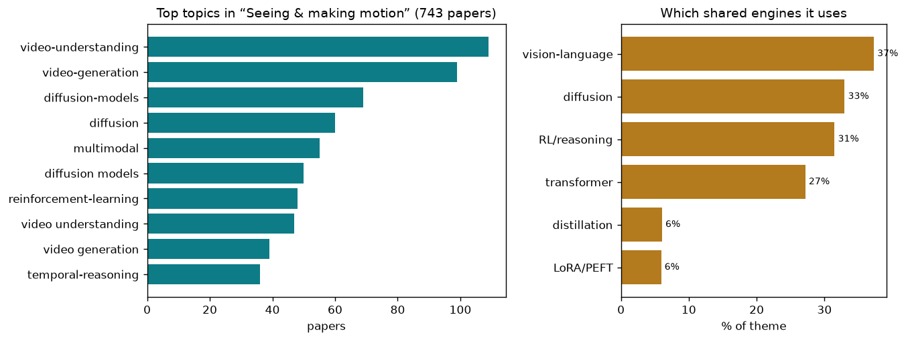

adding the dimension of time — understanding and generating video
743 papers · adding the dimension of time — understanding and generating video
Vision, at its root, is about converting raw pixels into understanding: a bridge from sensation to meaning. Add time, and you have already doubled the problem. Static images freeze a moment; video captures change. But change is what meaning really rides on—the hand grasping an object, the face showing emotion, the scene unfolding as a story. To "see" video is to infer causality, intention, and physics from a sequence of frames.
The core difficulty is this: pixels alone do not tell you what will happen next or what just happened before. You must learn implicit models of the world—how objects move, how forces act, how people behave, how cause leads to effect. You must also handle ambiguity: the same scene could evolve many ways. When generating video, you must make coherent choices across hundreds of frames while respecting both appearance and motion. When understanding video, you must fuse temporal information across long ranges where memory and computation both run thin.
Video also breaks many assumptions from image work. Optical flow, camera motion, occlusion, deformation—these temporal phenomena have no parallel in single images. A person's hand can vanish behind their body, reappear, and you must track identity through the gap. Light changes with time of day; motion blur smears pixels across frames. Anomalies hide in temporal patterns you cannot spot in any single frame. Physics constrains how things can move, yet learning those constraints from pixels alone is hard.
Why does this matter? Video is how humans learn to understand the world. Every embodied agent—robot, animal, human child—learns by observing and acting on sequences. Autonomous vehicles must predict pedestrian motion. Doctors must track pathology evolution in ultrasound or surgery. Content creators must control both what appears and how it changes. The gap between understanding static scenes and understanding their unfolding over time is the gap between passive observation and active decision-making.
Rather than treating video as a sequence of independent frames, several papers learn explicit motion codes that capture what moves and how. TrajTok learns trajectory tokens as a standalone motion representation that improves video understanding across multiple tasks. Motus unifies video pre-training and action learning under optical flow as a universal latent action space, bridging unlabeled video and labeled control. LLaMo extends pretrained language models into motion-language understanding by using continuous action tokens as a bridge, preserving text performance while adding motion semantics. MoLingo aligns frame-level motion latents directly with action labels, creating a semantically grounded motion-language space. These approaches share a principle: motion should be a first-class representation, not an afterthought.
Generative video is hard because every frame must cohere with its neighbors. Diffusion models, which learn to denoise gradually, have become a cornerstone for video synthesis. Attention Surgery makes video diffusion transformers tractable by using global subsampling with multiple-choice knapsack selection to avoid expensive local windowing. EasyOmnimatte applies dual-expert LoRA (Effect Expert for high noise, Quality Expert for detail) on video inpainting transformers to separate different denoising stages. MusicInfuser uses layer-wise audio cross-attention injection and adaptability criteria to let video diffusion listen and dance to music. Physical Simulator In-the-Loop Video Generation bridges text-to-video diffusion with an MPM physics simulator at inference time, ensuring plausible physical motion. Free-Lunch Long Video Generation extends video generation without retraining via layer-adaptive OOD correction. ReHyAt introduces hybrid attention that reformulates as chunk-wise RNN for constant-peak memory on device. These works all attack the same bottleneck: making diffusion fast and coherent across long temporal sequences.
Video is data-heavy. Transformers and attention mechanisms scale quadratically with sequence length, making long videos intractable. Multiple papers compress temporal information without destroying meaning. LinVideo converts standard video model attention to linear complexity in a post-training step without retraining. EarlyTom moves token compression inside the vision encoder (not post-encoder), reducing first-token-first-frame latency substantially. UniComp recasts token compression from saliency to information uniqueness, with a proven upper bound on reconstruction error. ApET uses information-theoretic approximation error to identify and remove redundant tokens without positional encoding. FluxMem applies distribution-adaptive Otsu thresholding for streaming video token compression, automatically adapting to different video types. OmniZip uses audio to dynamically guide video token pruning while preserving cross-modal alignment. Cluster-Wise Spatio-Temporal Masking exploits video structure with cluster-aware masking for efficient video-language pretraining. These represent a practical realization: temporal compression must be smart, not just aggressive.
Understanding when things happen matters as much as what and where. A suite of papers tackles temporal grounding—locating moments in video that answer questions or match descriptions. T2SGrid reformulates temporal grounding as a spatial task by gridifying time into 2D composite images. HieraMamba uses hierarchical multi-scale Mamba pooling with contrastive objectives. HERO combines hierarchical multi-level embeddings with sigmoid gating and KL regularization. TimeLens systematically investigates design principles for MLLM-based temporal grounding, establishing best practices that surpass prior work. OmniGround introduces a large-scale spatio-temporal grounding benchmark covering 81 balanced categories in complex real-world scenarios. CaST-Bench benchmarks causal chain-grounded reasoning, asking models to explain not just when but why. These papers all share the insight that temporal grounding is not incidental—it is a core reasoning task requiring dedicated representation and training.
Pixels do not respect physics, but the world does. Papers that incorporate physical constraints gain plausibility and generalization. PAMotion uses Physics-Aware Interaction Loss with object acceleration to enforce consistency between human-object contact and motion. InterPhys models coupled full-body human dynamics with moving objects using differentiable contact forces and Euler-Lagrange formulations. Goal Force encodes physical forces as moving Gaussian blob overlays, creating a ControlNet-style interface for force-conditioned video. NEC-Diff uses event cameras (which are noise-robust) fused with RAW images for motion in extreme low-light, combining sensor physics with diffusion. Thermal Diffusion Matters applies heat conduction dynamics and thermal diffusion priors to infrared video super-resolution. MotionV2V isolates and edits motion patterns while preserving visual content in a video-to-video framework. ParTY resolves expressiveness vs. coherence in text-to-motion by generating part motions first and using them as future anchors. These papers treat physics not as a constraint to bypass but as structure to exploit.
Video-language models must reason about time. Several papers focus on how models think through temporal information. Thinking with Drafts uses speculative reasoning (a draft model selects frames, a target model reasons on them) for efficient long video understanding. Reinforcing Structured Chain-of-Thought integrates Structured CoT directly into reinforcement learning, eliminating the need for supervised fine-tuning. Chain-of-Frames embeds frame-indexed reasoning traces in single-stage CoT output with synthetic data generation. WeaveTime addresses time-agnosticism in VideoLLMs with an emergent memory framework that streams from earlier frames. Thinking With Videos enables "thinking with videos" through dense multimodal chain-of-thought generation using tool-augmented RL. LensWalk treats video understanding as agentic planning—models learn to dynamically allocate visual attention over space and time based on task needs. Select Less, Reason More prioritizes evidence purity over comprehensiveness, using selective frame aggregation to improve reasoning. These works recognize that temporal reasoning is cognitive work requiring explicit planning and iteration.
Given a video, how do you transform it? Editing frameworks go beyond applying uniform filters. V-RGBX unifies inverse rendering, intrinsic-conditioned synthesis, and sparse keyframe-based control for editing intrinsic properties (albedo, roughness, etc.). VideoCoF provides unified video editing with explicit temporal reasoning for coherence across diverse tasks. EffectErase jointly learns removal and insertion with cross-attention alignment to handle high-quality effect erasing. FlowPortal uses residual-corrected optical flow for training-free relighting and background replacement with provable consistency. HorizonForge enables flexible driving scene editing with arbitrary trajectories and vehicles. Scaling Instruction-Based Video Editing (Ditto/Editto) generates 1M synthetic instruction-video-edit triplets with modality curriculum learning. Are Image-to-Video Models Good Zero-Shot Image Editors? (IF-Edit) repurposes image-to-video models as zero-shot image editors via temporal latent sparsification. These papers show that video editing is not just synthesis—it is conditional transformation under tight coherence constraints.
Video models can fail in subtle ways. Unstitching the Chimera identifies frame-level hallucination as a specific failure mode in video MLLMs and proposes training-free mitigation. SEASON tackles temporal hallucination through temporal homogenization to create hard negatives and self-diagnostic token-level detection. ELV-Halluc benchmarks semantic aggregation hallucinations—where models confabulate by averaging information across frames. SVHalluc evaluates speech-vision hallucination in audio-visual LLMs systematically. Weakly Supervised Video Anomaly Detection combines anomaly-connected component detection with intention analysis for fine-grained anomaly localization. Fine-VAD uses progressive cross-granularity learning for video anomaly detection. ELVIS combines physics-based low-light degradation models with temporal blur synthesis for night-vision video instance segmentation. TEAR exposes temporal aggregation as a vulnerability in text-to-video models—unsafe content spread across frames evades detection. These papers treat temporal video not as noise-free but as inherently fragile, requiring explicit robustness.
What is basically solved: optical flow estimation has matured; we can track motion in most conditions. Video classification and action recognition work reliably at scale. Temporal segmentation (breaking video into semantic chunks) is well-established. Simple motion capture from RGB is feasible. Some forms of video super-resolution and enhancement reach real-time speeds. Diffusion-based video generation produces visually plausible sequences, though often still artifact-ridden at scale.
What remains genuinely open: generating long, coherent, physically plausible video under arbitrary text control is still an emerging capability. Temporal reasoning at human level—understanding causality, intention, and counterfactuals in video—remains a frontier. Real-time video generation on devices is barely feasible. Editing video while preserving identity, physics, and semantics across hundreds of frames is still unreliable. Multi-agent tracking and interaction in cluttered scenes remains hard. Understanding video from egocentric (first-person) perspective, where motion blur, occlusion, and rapid viewpoint change dominate, is underexplored. The field has moved from asking "can we model time?" to asking "can we reason through time?"—and that second question is only half-answered.
The theme above is broad. Here are the distinct sub-problems inside it — each in plain terms: the big-picture problem, then how the field tackles it, then representative papers.
The problem. A single image can be understood at a glance, but a video is a story that unfolds — the meaning lives in the order of events, in cause and effect, in what changed between one moment and the next. Getting a model to actually reason across time (not just recognize objects frame by frame) is hard because the answer to a question often depends on connecting evidence scattered across minutes of footage, and models tend to guess from surface cues instead of genuinely tracking the sequence. This is the core of the theme's understanding half: turning raw moving pixels into answers, explanations, and step-by-step reasoning.
The approaches. The dominant move is to bolt time-awareness onto large language-and-vision models and then teach them to think before answering: chain-of-thought prompting walks the model through evidence step by step, and reinforcement learning rewards it for reaching correct, well-grounded conclusions. A second family builds agents that actively decide which frames or clips to look at, calling tools, retrieving relevant moments, or re-watching parts of a long video like a detective gathering clues. A third pushes on causal and temporal grounding — forcing the model to point at the exact moment or object that justifies its answer — while others attack the models' tendency to hallucinate events that never occurred.
▸ Rewarding the model for thinking, not just answering
Problem. A model can land on the right answer for the wrong reason, guessing from a thumbnail or a caption instead of following the events. To trust it on hard questions you need it to actually build a chain of evidence across time before it commits. Approach. These systems bolt an explicit reasoning step onto a video language model and use reinforcement learning to reward answers that are both correct and well-grounded, sometimes structuring the chain around frames or forcing a second, verified answer.
The fundamental point. Correctness and correct reasoning are separable, and you can only get reliable video reasoning by rewarding the process, not just the final answer.
VideoAuto-R1: Video Auto Reasoning via Thinking Once… · Incentivizing Versatile Video Reasoning in MLLMs via… · Reinforcing Structured Chain-of-Thought for Video Un… · Chain-of-Frames: Advancing Video Understanding in Mu… · Reinforce to Learn, Elect to Reason: A Dual Paradigm…
▸ Agents that go hunting for the frames that matter
Problem. A long video is mostly irrelevant footage with a few decisive moments buried inside it, and feeding the whole thing to a model is both wasteful and drowns the signal. The real skill is deciding where to look. Approach. These build agents that actively choose which clips to watch, call tools, retrieve moments, and re-watch parts like a detective, planning their viewing rather than consuming the video in one pass.
The fundamental point. Understanding a long video is less a perception problem than a search problem — knowing which fraction of the footage to attend to is the whole game.
LongVT: Incentivizing Thinking with Long Videos via … · VideoARM: Agentic Reasoning over Hierarchical Memory… · Thinking With Videos: Multimodal Tool-Augmented Rein… · VideoSeek: Long-Horizon Video Agent with Tool-Guided… · LensWalk: Agentic Video Understanding by Planning Ho…
▸ Doing it cheaply on small models and long footage
Problem. The strongest reasoning tricks assume a giant model and a short clip; making genuine temporal reasoning work on lightweight models or hours-long video without blowing up cost is a separate, harder constraint. Approach. These attack efficiency directly — sparse frame selection, low-cost navigation policies, multi-agent division of labor, and causal debiasing so a small model reasons from real cues instead of shortcuts.
The fundamental point. The bottleneck in practical video reasoning is not raw model capacity but spending a fixed budget of attention on the right evidence.
Beyond Perceptual Shortcuts: Causal-Inspired Debiasi… · Towards Sparse Video Understanding and Reasoning · LongVideo-R1: Smart Navigation for Low-cost Long Vid… · A Multi-Agent Perception-Action Alliance for Efficie… · VideoChat-M1: Collaborative Policy Planning for Vide…
▸ Reasoning by actively controlling perception
Problem. Even a capable model is limited by what it chose to perceive; if it never zoomed in or looked again at the crucial instant, no amount of downstream thinking recovers the missing evidence. Approach. These couple reasoning to perception itself, letting the model steer its own viewing — where to look, how closely, in what order — so perception and reasoning co-evolve on multi-scale visual evidence.
The fundamental point. Perception is an action the model should learn to take, not a fixed input it passively receives.
ACT2SEE: Emergent Active Visual Perception for Video… · Conan: Progressive Learning to Reason Like a Detecti… · LensWalk: Agentic Video Understanding by Planning Ho… · VideoSeek: Long-Horizon Video Agent with Tool-Guided…
The problem. Video is enormous — every second is dozens of frames, each frame thousands of pixels, and the attention machinery inside modern models grows painfully as sequences get longer. Both understanding a long video and generating a new one can take minutes and huge memory, which kills any hope of real-time or on-device use. This sub-problem exists because the raw data volume of time-plus-space collides with the quadratic cost of the transformers everyone relies on, and the theme's goal of practical seeing-and-generating depends on taming it.
The approaches. One line squeezes the input: compressing, pruning, or merging the visual tokens fed to a language model so it reasons over a compact summary instead of every pixel. A second line rebuilds the attention itself — sparse, linear, or state-space (Mamba) variants that scale gently with length. For generation, a big cluster caches and reuses intermediate computations across the many denoising steps of a diffusion model, or distills a slow many-step model into a one- or few-step one. Streaming designs process frames as they arrive with a rolling memory rather than waiting for the whole clip.
▸ Shrinking what the language model has to read
Problem. A video language model chokes on the sheer number of visual tokens per second of footage, and most of those tokens are redundant with their neighbors in space and time. Approach. These compress, prune, or merge the visual tokens before or during reasoning, keeping a compact summary that preserves the answer-relevant content while discarding the rest.
The fundamental point. Most of the pixels in a video carry no new information, so a faithful compact summary loses almost nothing that matters.
Token Reduction via Local and Global Contexts Optimi… · ApET: Approximation-Error Guided Token Compression f… · EarlyTom: Early Token Compression Completes Fast Vid… · HTTM: Head-wise Temporal Token Merging for Faster Vi… · StreamingTOM: Streaming Token Compression for Effici…
▸ Rebuilding attention so it scales with length
Problem. The transformer's attention grows quadratically with sequence length, so long video hits a wall no amount of token pruning fully removes. Approach. These replace or restructure attention itself — sparse, vector-wise, linear, or recurrent hybrid variants — so cost grows gently as the clip gets longer.
The fundamental point. The quadratic cost of attention is a design choice, not a law, and video's length forces the community to actually pay to change it.
Attention Surgery: An Efficient Recipe to Linearize … · VecAttention: Vector-wise Sparse Attention for Accel… · ReHyAt: Recurrent Hybrid Attention for Video Diffusi… · PyramidalWan: On Making Pretrained Video Model Pyram…
▸ Reusing computation across diffusion steps
Problem. Generating a video means running a diffusion model over many denoising steps, and each step recomputes almost the same thing, wasting enormous effort. Approach. These cache and reuse intermediate results across steps — delta caching, spectral-aware caching, residual caching, or predicting the denoising trajectory — to skip redundant work.
The fundamental point. Consecutive denoising steps change little, so the expensive middle of generation is mostly recomputation that can be cached away.
D2Cache: Second-Order Delta Caching for Higher Video… · Denoising as Path Planning: Training-Free Accelerati… · SeaCache: Spectral-Evolution-Aware Cache for Acceler… · ResCa: Residual Caching for Diffusion Transformers A… · Beyond Fixed Formulas: Data-Driven Linear Predictor …
▸ Streaming, quantizing, and speculating for real-time use
Problem. Live video cannot wait until the whole clip is finished. The model has to make each frame soon enough for a person to interact with it, while carrying just enough memory of the past to avoid flicker. The hidden quantity is delay: every extra look backward or full-precision calculation spends time the user can feel. Approach. These papers keep a rolling memory, store rougher but adequate numbers, or guess several future chunks in parallel and verify them. They ask which information must be exact now and which can be approximated without changing the perceived motion.
The fundamental point. Real-time generation is a tradeoff between certainty and bounded cost. The mathematical move is to preserve the information that affects the next frame while compressing or skipping the rest.
MuKV: Multi-Grained KV Cache Compression for Long St… · DeltaQuant: 4-bit Video Diffusion Models with Spatio… · ParallelVLM: Lossless Video-LLM Acceleration with Vi… · OmniZip: Audio-Guided Dynamic Token Compression for …
The problem. The generative half of the theme asks a model to conjure a moving scene that never existed — from a line of text, a single image, or a reference. The fundamental difficulty is that plausible video must be coherent in space and consistent through time: an object cannot flicker, morph, or teleport between frames, and a person's identity must survive across a whole clip. On top of mere plausibility, users want control — this camera move, that character pose, this trajectory — which pulls against the model's freedom to hallucinate.
The approaches. Almost everything here is a diffusion or flow-matching model that denoises noise into frames, conditioned on text or an image. Control comes from extra handles: pose and skeleton guidance for animating characters, explicit camera and trajectory conditioning, reference images for identity preservation, and position-embedding tricks to bind subjects across frames. A separate thrust tackles length and narrative — autoregressive and streaming schemes that grow video to minutes or hours, and storyboard/multi-shot systems that keep characters and story consistent across cuts.
▸ Keeping a subject's identity intact across the clip
Problem. A generated person or object tends to subtly morph frame to frame; holding a specific identity or concept steady through a whole video, especially from a single reference, is a core failure mode. Approach. These condition generation on reference images and use position-embedding tricks, personalization, and reward-guided optimization to bind a subject's identity across every frame.
The fundamental point. Temporal identity is not a byproduct of good frames — it must be explicitly anchored, or the model will happily drift.
Scaling Zero-Shot Reference-to-Video Generation · Identity-Preserving Image-to-Video Generation via Re… · Lynx: Towards High-Fidelity Personalized Video Gener… · Composing Concepts from Images and Videos via Concep… · ID-Crafter: VLM-Grounded Online RL for Compositional…
▸ Handing the user explicit controls
Problem. Text alone is a blunt instrument; users want to dictate the exact pose, camera move, or motion path, which pulls against the model's freedom to invent. Approach. These add precise conditioning handles — skeleton and part-aware pose guidance, point-trajectory control, and rotary camera encodings — so the output obeys a specified geometry.
The fundamental point. Fine control and generative freedom trade off, and the right conditioning signal is what lets a user reclaim control without killing plausibility.
MultiAnimate: Pose-Guided Image Animation Made Exten… · One-to-All Animation: Alignment-Free Character Anima… · PoseAnything: General Pose-guided Video Generation w… · FlexTraj: Image-to-Video Generation with Flexible Po… · ReDirector: Creating Any-Length Video Retakes with R…
▸ Growing video from seconds to minutes and hours
Problem. Diffusion models are trained on short clips, so extending them to long durations invites drift, forgetting, and loss of coherence over time. Approach. These use autoregressive and streaming rollout with rotary or memory tricks that let a model keep generating far beyond its training length without collapsing.
The fundamental point. Long video generation is fundamentally an extrapolation problem — staying coherent past the horizon the model ever saw.
LoL: Longer than Longer, Scaling Video Generation to… · Infinity-RoPE: Action-Controllable Infinite Video Ge… · Narrative Weaver: Towards Controllable Long-Range Vi… · SynMotion: Semantic-Visual Adaptation for Motion Cus…
▸ Telling a multi-shot story that stays consistent
Problem. A real narrative has cuts between shots, yet characters and setting must persist across those cuts — something a single-clip generator has no mechanism for. Approach. These build storyboard and multi-shot systems with shared memory that carry characters and story state across shot boundaries to produce coherent cinematic narratives.
The fundamental point. Narrative coherence is a distinct axis from within-shot smoothness — it requires memory that survives the discontinuity of a cut.
OneStory: Coherent Multi-Shot Video Generation with … · HoloCine: Holistic Generation of Cinematic Multi-Sho… · Narrative Weaver: Towards Controllable Long-Range Vi…
The problem. Often the goal isn't to invent a video but to change or clean up a real one — swap a face, remove an object, relight the scene, upscale a blurry clip, or restyle it — while leaving everything else untouched and, crucially, not introducing jitter across frames. This is hard because any edit must propagate consistently through time: a change that looks fine in one frame flickers or drifts across the sequence, and real footage carries degradations (blur, low light, compression) that fight the edit.
The approaches. Most methods repurpose powerful image or video diffusion priors and constrain them to respect the source: first-frame propagation, flow-guided warping, and inpainting that fills only the removed region. Instruction-based editing lets a user say what to change in words, often with a vision-language model interpreting the request. A large restoration wing — super-resolution, deblurring, denoising, matting, relighting — uses the same generative priors but aimed at recovering or enhancing detail while enforcing temporal consistency, frequently distilled to run in real time.
▸ Changing content while everything else stays put
Problem. Swapping a face, replacing a character, or removing an object must alter exactly the target and nothing else, and any change that looks fine in one frame tends to flicker across the sequence. Approach. These constrain powerful diffusion priors with first-frame propagation, sparse control, and inpainting that touches only the affected region so the edit stays local and temporally stable.
The fundamental point. A good edit is defined as much by what it leaves untouched over time as by what it changes.
EditCtrl: Disentangled Local and Global Control for … · MoCha: End-to-End Video Character Replacement withou… · EffectErase: Joint Video Object Removal and Insertio… · NOVA: Sparse Control, Dense Synthesis for Pair-Free … · Object-WIPER: Training-Free Object and Associated Ef…
▸ Editing by just describing the change
Problem. Users think in words, not masks and control maps, so the interface should accept an instruction and figure out where and how to apply it. Approach. These pair a vision-language model to interpret the instruction with a video editor, often trained on large synthetic edit datasets, sometimes using chain-of-thought to plan the edit.
The fundamental point. The scarce resource for instruction editing is paired before/after data, so synthesizing it is what unlocks the whole capability.
Scaling Instruction-Based Video Editing with a High-… · EasyV2V: A High-quality Instruction-based Video Edit… · CoT-Edit: Let CoT Guide Instruction Video Editing · MotionV2V: Editing Motion in a Video
▸ Recovering and enhancing degraded footage
Problem. Real clips arrive blurry, low-light, compressed, or low-resolution, and restoration must add plausible detail while enforcing consistency across frames. Approach. These aim generative priors at recovery — super-resolution, deblurring, and matting — using spatio-temporal diffusion and quality-aware refinement to enhance detail without introducing jitter.
The fundamental point. Restoration is invention constrained by evidence — the model must hallucinate detail that is both plausible and temporally faithful to the source.
DTG-Restore: Training-Free Diffusion Refinement for … · STCDiT: Spatio-Temporally Consistent Diffusion Trans… · MatAnyone 2: Scaling Video Matting via a Learned Qua…
▸ Relighting and steering the look without breaking it
Problem. Changing lighting, background, or overall style touches every pixel at once, making temporal consistency and realism especially fragile. Approach. These use flow-corrected and flow-steered training-free methods to relight, replace backgrounds, and restyle while keeping the source's motion and realism intact.
The fundamental point. Global appearance edits are the stress test for temporal consistency because there is no untouched region to anchor the rest.
FlowPortal: Residual-Corrected Flow for Training-Fre… · Relightful Video Portrait Harmonization · FlowDirector: Training-Free Flow Steering for Precis… · Preserving Source Video Realism: High-Fidelity Face …
The problem. A convincing video isn't just pretty — it should obey how the world actually works: things fall, collide, splash, and push each other. Standard generators learn appearance statistics without any grasp of force or dynamics, so they produce clips that look plausible for an instant but violate physics. Closely related is the ambition of a world model: a system that can imagine what happens next given an action, which is what an agent or robot needs to plan. This sub-theme is where seeing, generating, and acting fuse.
The approaches. One family injects physics directly — coupling generation to a simulator, conditioning on forces, or guiding diffusion with fluid or rigid-body equations. Another aligns models with physical plausibility after the fact using rewards or preference optimization, or benchmarks how physical they really are. World models proper learn latent dynamics from video so they can roll the future forward for prediction and planning, with a notable cluster building driving-scene world models that jointly forecast and plan for autonomous vehicles.
▸ Building physics into the generator
Problem. A model trained only on appearance learns what falling looks like statistically, not why things fall, so it produces clips that violate force and dynamics. Approach. These inject physics directly — coupling generation to a simulator in the loop, conditioning on forces or goals, and jointly modeling visual and latent physical dynamics.
The fundamental point. Appearance statistics alone cannot encode causality of force, so real physical fidelity must be supplied, not learned from pixels.
PhysVid: Physics Aware Local Conditioning for Genera… · Physical Simulator In-the-Loop Video Generation · Goal Force: Teaching Video Models To Accomplish Phys… · PHANTOM: Physics-Infused Video Generation via Joint …
▸ Aligning to physics after the fact
Problem. Retraining a large generator to be physical is costly, and you often just want to nudge an existing model toward plausible dynamics. Approach. These align models to physical plausibility with rewards, preference optimization, progressive alignment, or inference-time guidance from a latent world model.
The fundamental point. Physical plausibility can be treated as a preference to optimize toward, separable from the generator's core denoising ability.
ProPhy: Progressive Physical Alignment for Dynamic W… · Inference-time Physics Alignment of Video Generative… · Chain of Event-Centric Causal Thought for Physically… · Causality in Video Diffusers is Separable from Denoi…
▸ Learning the world's dynamics from raw video
Problem. An agent that wants to plan needs to imagine what happens next given an action, which means learning the latent rules of change directly from watching, not from labels. Approach. These learn latent dynamics from real-world video so the model can roll the future forward, using compact token or ray-space representations transferable to new settings.
The fundamental point. The regularities needed to predict the future are already latent in unlabeled video and can be distilled into a rollable dynamics model.
RAYNOVA: Scale-Temporal Autoregressive World Modelin… · VideoWorld 2: Learning Transferable Knowledge from R… · A Frame is Worth One Token: Efficient Generative Wor… · Pixel2Phys: Distilling Governing Laws from Visual Dy…
▸ Keeping long rollouts from drifting
Problem. Rolling a world model or autoregressive generator forward accumulates small errors that compound until the prediction diverges from reality. Approach. These attack drift directly with backwards aggregation and other stabilization schemes that correct accumulated error over long horizons.
The fundamental point. The limiting factor for predictive video models is error compounding, not single-step accuracy.
BAgger: Backwards Aggregation for Mitigating Drift i… · RAYNOVA: Scale-Temporal Autoregressive World Modelin… · A Frame is Worth One Token: Efficient Generative Wor…
The problem. A special and unusually hard slice of moving-things is the human body: it has many joints, must move in physically valid and natural-looking ways, and viewers are exquisitely sensitive to anything that looks wrong. The goal spans generating motion from a text description, driving talking avatars, synthesizing how a person interacts with objects or other people, and controlling humanoid robots — all of which require motion that is both controllable and believable. It connects the theme to embodiment and animation.
The approaches. Text-to-motion systems tokenize or diffuse skeletal sequences conditioned on language, increasingly with part-level or keyframe control. Human-object and human-human interaction synthesis adds contact and physics constraints so bodies actually touch and react. Talking-head and avatar work drives faces and whole bodies from audio for real-time digital humans. A physics-and-robotics wing pushes motion into reinforcement-learned humanoid controllers and imitation from human video, closing the loop toward robots that move like people.
▸ Turning language into believable motion
Problem. Human motion has many joints and viewers instantly notice anything unnatural, so mapping a text description to a fluid, controllable skeletal sequence is unusually demanding. Approach. These tokenize or diffuse skeletal motion conditioned on language, adding part-level, keyframe, or hierarchical control and tighter motion-language alignment.
The fundamental point. Natural human motion lives on a thin manifold within joint space, so generation is really the problem of staying on that manifold while obeying language.
Towards Highly-Constrained Human Motion Generation w… · FrankenMotion: Part-level Human Motion Generation an… · ParTY: Part-Guidance for Expressive Text-to-Motion S… · MoLingo: Motion-Language Alignment for Text-to-Human… · MotionHiFlow: Text-to-Motion via Hierarchical Flow M…
▸ Making bodies actually interact with the world
Problem. When a person touches an object or another person, contact and reaction must be physically real, which pure kinematic generation ignores. Approach. These add contact and physics constraints for human-object and human-human interaction, including reaction generation and priors that scale physics-based control.
The fundamental point. Interaction, not solo motion, is where physical constraints become non-negotiable — contact forces the model to respect the world.
PAMotion: Physics-Aware Motion Generation for Full-B… · InterPrior: Scaling Generative Control for Physics-B… · ReMoGen: Real-time Human Interaction-to-Reaction Gen… · Ground Reaction Inertial Poser: Physics-based Human …
▸ Driving faces and avatars from audio
Problem. Digital humans must move their faces and bodies in sync with speech or music in real time, and lag or mismatch destroys the illusion. Approach. These drive talking heads and whole bodies from audio, including long-term audio-driven animation and audio-controlled expressive motion.
The fundamental point. Audio and motion share a common timeline, so the core task is learning a tight cross-modal synchronization rather than motion in isolation.
Do You Have Freestyle? Expressive Humanoid Locomotio… · InfinityHuman: Towards Long-Term Audio-Driven Human … · Causal Motion Diffusion Models for Autoregressive Mo…
▸ Closing the loop toward humanoid robots
Problem. Motion that only looks right on screen is not enough for a robot; a real humanoid must produce motion that a physical controller can execute and recover from. Approach. These push motion into reinforcement-learned humanoid controllers and closed-loop synthesis, imitating human motion to scale robot capability.
The fundamental point. The final test of understanding human motion is whether a physical body can execute it under closed-loop control, not whether it renders well.
Iterative Closed-Loop Motion Synthesis for Scaling t… · Do You Have Freestyle? Expressive Humanoid Locomotio… · Next-Scale Autoregressive Models for Text-to-Motion …
The problem. Underneath high-level understanding sits a stubborn geometric problem: given the same object or point in one frame, where is it in the next, even as it moves, deforms, gets occluded, or the camera shakes? Answering this densely (every pixel's motion) or sparsely (specific points and objects) is the backbone that feeds editing, robotics, and reasoning. It's fundamentally hard because motion, appearance change, and disappearance conspire, and errors compound as they propagate across a long sequence.
The approaches. Optical-flow methods estimate per-pixel motion, now increasingly reframed as a generative flow-matching problem rather than pure regression. Point-tracking follows chosen points over long videos despite occlusion, often with warping or forecasting to bridge gaps. Video object segmentation and multi-object tracking maintain object identity across frames, many building on promptable foundation models like SAM2 and adding memory or occlusion handling. Language-guided variants let a user name what to track or segment in words.
▸ Estimating every pixel's motion
Problem. Dense optical flow must say where each pixel went between frames, which is ambiguous in flat regions and expensive over the all-pairs correlation everyone relies on. Approach. These estimate per-pixel motion, increasingly reframing flow as a generative continuous-transport or flow-matching problem rather than pure regression, and making correlation sampling efficient.
The fundamental point. Optical flow is better cast as transporting a distribution than as regressing a single value, which handles its inherent ambiguity honestly.
Efficient All-Pairs Correlation Volume Sampling for … · U2Flow: Uncertainty-Aware Unsupervised Optical Flow … · Optical Flow Matching: Reframing Optical Flow as Con…
▸ Following chosen points through occlusion
Problem. Tracking specific points over a long video is hard because points get occluded, disappear, and reappear, and errors compound as they propagate. Approach. These track points with warping instead of correlation, forecasting through gaps, verifier-guided pseudo-labeling, and learning from real-world motion.
The fundamental point. Robust point tracking depends on gracefully bridging the moments a point is invisible, not just matching it when it is visible.
CoWTracker: Tracking by Warping instead of Correlati… · Generative Point Tracking and Forecasting · Real-World Point Tracking with Verifier-Guided Pseud… · AnthroTAP: Learning Point Tracking with Real-World M…
▸ Holding object identity across frames
Problem. Video object segmentation and multi-object tracking must keep the same identity attached to each object despite deformation, occlusion, and crowding. Approach. These maintain identity with memory and occlusion handling, many building on promptable foundation models like SAM2, plus discriminative embeddings and occlusion-aware association.
The fundamental point. Identity persistence is a memory-and-association problem layered on top of per-frame segmentation, and occlusion is its central adversary.
V2-SAM: Marrying SAM2 with Multi-Prompt Experts for … · Robust Promptable Video Object Segmentation · Efficient Video Object Segmentation and Tracking wit… · From Detection to Association: Learning Discriminati… · Occlusion-Aware SORT: Observing Occlusion for Robust…
▸ Tracking what you name in words
Problem. Often you don't have a box or mask to start from — you just want to point at a target with language and have the system find and follow it. Approach. These let a user name what to track or segment in words, grounding referring expressions into masks and following them, including interaction-aware referring segmentation.
The fundamental point. Grounding language into a persistent pixel-level target unifies naming, finding, and following into one problem.
InterRVOS: Interaction-Aware Referring Video Object … · Hypergraph-State Collaborative Reasoning for Multi-O… · V2-SAM: Marrying SAM2 with Multi-Prompt Experts for …
The problem. The world arrives through more than the eye — sound is tied to motion, and much meaning lives in the alignment between the two. This sub-theme asks models to generate the right audio for a video (footsteps, splashes, speech, music that matches a dance), to generate sound and picture together in sync, or to understand a scene using both channels at once. It's hard because audio and video have very different structure and sampling rates, and convincing results demand tight temporal synchronization between an event and its sound.
The approaches. Video-to-audio generation uses diffusion models conditioned on visual events, with fine-grained temporal steering so a sound lands exactly when the action happens, and physics-aware variants that reason about what would actually make noise. Joint audio-video generation designs cross-modal architectures that produce both streams coherently. On the understanding side, audio-visual models fuse the channels for reasoning, retrieval, and separation, and egocentric work grounds sound in first-person scenes.
▸ Making the right sound land at the right instant
Problem. A footstep or splash must fire exactly when the on-screen event happens; even slight misalignment between an action and its sound reads as wrong. Approach. These generate audio from video with diffusion, adding fine-grained temporal steering via structured scripts and event-centric control so sounds sync to visual events.
The fundamental point. The hard part of video-to-audio is not timbre but timing — sound is judged by its temporal alignment to the causing event.
EchoFoley: Event-Centric Hierarchical Control for Vi… · FoleyDirector: Fine-Grained Temporal Steering for Vi… · Echoes Over Time: Unlocking Length Generalization in… · Hear What You See: Video-to-Audio Generation with Di…
▸ Reasoning about what would actually make noise
Problem. A sound should follow from the physics of the scene — what collides, what vibrates — not just from surface appearance, or the audio will be generically plausible but wrong. Approach. These build physics-aware video-to-audio synthesis that reasons about the mechanism producing a sound rather than mapping pixels to audio directly.
The fundamental point. Correct sound is a consequence of physical events, so audio generation is really a form of physical reasoning about the scene.
PAVAS: Physics-Aware Video-to-Audio Synthesis · Omni2Sound: Towards Unified Video-Text-to-Audio Gene… · OmniSonic: Towards Universal and Holistic Audio Gene…
▸ Generating picture and sound together
Problem. Audio and video have very different structure and rates, so producing both streams so they cohere from the start is harder than generating one and adding the other. Approach. These design cross-modal architectures with asymmetric interactions and cross-task synergy that produce coherent audio and video jointly.
The fundamental point. Joint generation reveals that audio and video are two projections of one underlying event that a model can learn to emit together.
Harmony: Harmonizing Audio and Video Generation thro… · UniAVGen: Unified Audio and Video Generation with As… · Hierarchical Codec Diffusion for Video-to-Speech Gen…
▸ Understanding a scene by listening and looking
Problem. Much meaning lives in the alignment of the two channels — counting events, answering questions, or grounding sound in a first-person scene needs both at once. Approach. These fuse audio and video for reasoning, counting, and retrieval, with reinforcement learning to see-hear-reason and egocentric benchmarks grounding sound in first-person views.
The fundamental point. Some questions are unanswerable from either channel alone — meaning emerges only from the cross-modal alignment itself.
EgoAVU: Egocentric Audio-Visual Understanding · AV-Reasoner: Improving and Benchmarking Clue-Grounde… · EgoSound: Benchmarking Sound Understanding in Egocen… · AVATAR: Reinforcement Learning to See, Hear, and Rea…
The problem. As generation and understanding get impressive, it becomes surprisingly hard to tell how good a system really is, where it fails, and whether it can be trusted or attacked. A generated clip may look sharp yet violate physics or drift from the prompt; an understanding model may confidently describe events that never happened. Without careful measurement — and without probing for safety holes — progress is illusory and deployment is risky. This sub-theme is the theme's reality check.
The approaches. One large effort builds benchmarks that stress specific abilities: long-video reasoning, fine-grained temporal grounding, physical reasoning, hallucination, and story or social understanding. A second builds automatic quality assessors and reward models that judge generated video the way a human would, increasingly with chain-of-thought explanations, feeding back into training via preference optimization. A third is adversarial and safety work — jailbreaking text-to-video models, attacking trackers, and red-teaming — exposing where these systems break.
▸ Benchmarks that stress specific abilities
Problem. One overall score can hide the failure that matters: a model may answer easy questions while failing at long memory, ordering events, grounding evidence, or social inference. Approach. These benchmarks isolate one ability at a time and design questions where shortcuts are less useful. They turn vague progress into targeted measurement.
The fundamental point. Measurement must preserve the skill being tested. The math idea is controlled comparison: hold distractions steady so the score reflects the ability, not dataset luck.
HERBench: A Benchmark for Multi-Evidence Integration… · OmniGround: A Comprehensive Spatio-Temporal Groundin… · SVBench: Evaluation of Video Generation Models on So… · PAI-Bench: A Comprehensive Benchmark For Physical AI · TiViBench: Benchmarking Think-in-Video Reasoning for…
▸ Catching models that describe things that never happened
Problem. An understanding model will confidently narrate events absent from the video, and a generated clip can look sharp while drifting from the prompt or violating realism. Approach. These characterize and benchmark video hallucination at the frame and semantic level, with train-free mitigation and trustworthiness evaluation under uncertainty.
The fundamental point. Fluent confidence is not evidence of grounding, so hallucination must be measured directly rather than inferred from surface quality.
Unstitching the Chimera: Frame-Level Risk and Train-… · ELV-Halluc: Benchmarking Semantic Aggregation Halluc… · VirtueBench: Evaluating Trustworthiness under Uncert… · VideoRealBench: A Chain-of-Thought Realism Evaluatio…
▸ Teaching a model to judge video like a human
Problem. Human evaluation of generated video is slow and unscalable, so training needs an automatic critic that scores quality and prompt-fidelity the way people would. Approach. These build quality assessors and reward models, increasingly with chain-of-thought explanations and weak-to-strong learning, robust to reward hacking, that feed back into preference optimization.
The fundamental point. A reliable automatic judge is the missing link that lets human preferences scale into a training signal for generation.
VGA-Bench: A Unified Benchmark and Multi-Model Frame… · Generalizable Video Quality Assessment via Weak-to-S… · SoliReward: Mitigating Susceptibility to Reward Hack… · SLVMEval: Synthetic Meta Evaluation Benchmark for Te…
▸ Attacking systems to find where they break
Problem. Impressive systems can still be jailbroken, fooled, or driven to unsafe output, and you only learn the failure surface by actively trying to break them. Approach. These red-team and adversarially attack video systems — automated red-teaming of text-to-video models and probing for safety holes — to expose vulnerabilities before deployment.
The fundamental point. Safety is established by adversarial search for failures, not by observing good behavior on benign inputs.
TEAR: Temporal-aware Automated Red-teaming for Text-… · SoliReward: Mitigating Susceptibility to Reward Hack… · VirtueBench: Evaluating Trustworthiness under Uncert…
Each cluster connects a family of related papers from first principles, with an animated diagram and the papers grouped by approach.

Left: the theme's most common topics. Right: how much it leans on each shared engine.
| Paper | Code |
|---|---|
| A Multi-Agent Perception-Action Alliance for Efficient Long Video Reasoning | git-disl/A4VL |
| A Stitch in Time: Learning Procedural Workflow via Self-Supervised Plackett-Luce Ranking | visurg-ai/PL-Stitch |
| A Temporal and Content Co-Awareness Latent Diffusion for Controllable Hand Image Generatio | samukahs/TCCA |
| ACT2SEE: Emergent Active Visual Perception for Video Reasoning | martinmamql/act2see |
| APPO: Attention-guided Perception Policy Optimization for Video Reasoning | GeWu-Lab/APPO |
| AXG-Reasoner: Error Detection and Explanation in Long Task Videos | robert80203/AXG-Reasoner |
| Accelerating Streaming Video Large Language Models via Hierarchical Token Compression | lern-to-write/STC |
| AdaCluster: Adaptive Query-Key Clustering for Sparse Attention in Video Generation | USTC-MLSys-Team/Adacluster |
| AdaSpot: Spend Resolution Where It Matters for Precise Event Spotting | arturxe2/AdaSpot |
| AdapTok: Learning Adaptive and Temporally Causal Video Tokenization in a 1D Latent Space | VisionXLab/AdapTok |
| Adaptive Learned Image Compression with Graph Neural Networks | UnoC-727/GLIC |
| An Efficient Token Compression Framework for Visual Object Tracking | PJD-WJ/ETCTrack |
| ApET: Approximation-Error Guided Token Compression for Efficient VLMs | MaQianKun0/ApET |
| AudioStory: Generating Long-Form Narrative Audio with Large Language Models | TencentARC/AudioStory |
| Back to the Feature: Explaining Video Classifiers with Video Counterfactual Explanations | modelscope/DiffSynth- |
| Benchmarking Endoscopic Surgical Image Restoration and Beyond | PJLallen/Surgical-Image-Restoration |
| Beyond Fixed Formulas: Data-Driven Linear Predictor for Efficient Diffusion Models | Aredstone/L2P-Cache |
| Beyond Perceptual Shortcuts: Causal-Inspired Debiasing Optimization for Generalizable Vide | falonss703/VideoThinker |
| Beyond Static Frames: Temporal Aggregate-and-Restore Vision Transformer for Human Pose Est | zgspose/TARViTPose |
| BiOTPrompt: Bidirectional Optimal Transport Guided Prompting for Disease Evolution-aware R | tylin/coco-caption |
| Bootstrapping Video Semantic Segmentation Model via Distillation-assisted Test-Time Adapta | jihun1998/DiTTA |
| CHAL: Causal-guided Hierarchical Anomaly-aware Learning for Moving Infrared Small Target D | UESTC-nnLab/CHAL |
| CREward: A Type-Specific Creativity Reward Model | madebyollin/taesd |
| Chain of Event-Centric Causal Thought for Physically Plausible Video Generation | ZixuanWang0525/CoECT |
| CoMo: Learning Continuous Latent Motion from Internet Videos for Scalable Robot Learning | MCG-NJU/CoMo |
| CoT-Edit: Let CoT Guide Instruction Video Editing | flying-sky999/CoT- |
| Cut to the Chase: Training-free Multimodal Summarization via Chain-of-Events | youxiaoxing/CoE |
| DETACH: Decomposed Spatio-Temporal Alignment for Exocentric Video and Ambient Sensors with | JaemoJeong/DETACH |
| DNF-SR: Dual-Input and Negative-Aware Feature Fine-Tuning for Real-World Image Super-Resol | SHH-Han/DNF-SR |
| DUET-VLM: Dual stage Unified Efficient Token reduction for VLM Training and Inference | AMD-AGI/DUET-VLM |
| DarkAct: A RGB-Thermal Dataset and Fusion Framework for Multimodal Low-Light Action Recogn | darkact-creator/DarkAct |
| Denoising as Path Planning: Training-Free Acceleration of Diffusion Models with DPCache | argsss/DPCache |
| DisCa: Accelerating Video Diffusion Transformers with Distillation-Compatible Learnable Fe | Tencent-Hunyuan/DisCa |
| DreamStyle: A Unified Framework for Video Stylization | aigc-apps/VideoX-Fun |
| Drift-Resilient Temporal Priors for Visual Tracking (DTPTrack) | NorahGreen/DTPTrack |
| Dual-level Adaptation for Multi-Object Tracking: Building Test-Time Calibration from Exper | 1941Zpf/TCEI |
| Dynamics-Aware Preference Optimization for Vision-Language Models | jushengzhang/Dynamics-Aware- |
| ELV-Halluc: Benchmarking Semantic Aggregation Hallucinations in Video Understanding | hlsv02/ELV-Halluc |
| EMO-R3: Reflective Reinforcement Learning for Emotional Reasoning in Multimodal Large Lang | xiaomi-research/emo-r3 |
| EasyOmnimatte: Taming Pretrained Inpainting Diffusion Models for End-to-End Video Layered | GVCLab/EasyOmnimatte |
| EasyV2V: A High-quality Instruction-based Video Editing Framework | aigc-apps/VideoX-Fun |
| EchoVDiff: Cardiac-Cycle Echocardiography Video Generation from Arbitrary Single Frame | JsongZhang/Echo-V-Diff |
| Echoes of Ownership: Adversarial-Guided Dual Injection for Copyright Protection in MLLMs | kunzhan/AGDI |
| Efficient Training for Human Video Generation with Entropy-Guided Prioritized Progressive | changlin31/Ent-Prog |
| Enhance-then-Balance Modality Collaboration for Robust Multimodal Sentiment Analysis | kangverse/EBMC |
| Face-Guided Sentiment Boundary Enhancement for Weakly-Supervised Temporal Sentiment Locali | CeilingHan/FSENet |
| FluxMem: Adaptive Hierarchical Memory for Streaming Video Understanding | YiwengXie/FluxMem |
| Focus-to-Perceive Representation Learning: A Cognition-Inspired Hierarchical Framework for | MLMIP/FPRL |
| Forecast the Principal, Stabilize the Residual: Subspace-Aware Feature Caching for Diffusi | BlackMaple1203/SVDCache |
| Frame2Freq: Spectral Adapters for Fine-Grained Video Understanding | th-nesh/Frame2Freq |
| Free-Lunch Long Video Generation via Layer-Adaptive O.O.D Correction | Westlake-AGI-Lab/FreeLOC |
| From Sketch to Fresco: Efficient Diffusion Transformer with Progressive Resolution | DarrenZheng303/Fresco |
| From Static to Dynamic: Exploring Self-supervised Image-to-Video Representation Transfer L | yafeng19/Co-Settle |
| GMT: Effective Global Framework for Multi-Camera Multi-Target Tracking | FoxCanned/GMT |
| Generalizable Video Quality Assessment via Weak-to-Strong Learning | clh124/W2S-VQA |
| Guiding a Diffusion Model by Swapping Its Tokens | VISION-SJTU/SSG |
| HERO: Hierarchical Embedding-Refinement for Open-Vocabulary Temporal Sentence Grounding in | TTingHan-HDU/HERO |
| Heuristic-inspired Reasoning Priors Facilitate Data-Efficient Referring Object | xuzhang1199/HeROD |
| HiF-VLA: Hindsight, Insight and Foresight through Motion Representation for Vision-Languag | OpenHelix-Team/HiF-VLA |
| Hierarchical Action Learning for Weakly-Supervised Action Segmentation | DMIRLAB-Group/HAL |
| Hypergraph-State Collaborative Reasoning for Multi-Object Tracking | SkyeSong38/HyperMOT |
| I'm a Map! Interpretable Motion-Attentive Maps: Spatio-Temporally Localizing Concepts in V | youngjun-jun/IMAP |
| Imagine Before Concentration: Diffusion-Guided Registers Enhance Partially Relevant Video | lijun2005/CVPR26-DreamPRVR |
| Instance-level Visual Active Tracking with Occlusion-Aware Planning | SHWplus/OA-VAT |
| InternVideo-Next: Towards World-Understanding Video Models | OpenGVLab/InternVideo |
| LAOF: Robust Latent Action Learning with Optical Flow Constraints | XizoB/LAOF |
| LEMON: A Large Endoscopic MONocular Dataset and Foundation Model for Perception in Surgica | visurg-ai/LEMON |
| Learning Transferable Temporal Primitives for Video Reasoning via Synthetic Videos | jiangsongtao/Synthetic-Video |
| Learning from Synthetic Data via Provenance-Based Input Gradient Guidance | clovaai/wsolevaluation |
| LoFA: Learning to Predict Personalized Prior for Fast Adaptation of Diffusion Models | SakanaAI/text-to-lora |
| LongVideo-R1: Smart Navigation for Low-cost Long Video Understanding | qiujihao19/LongVideo-R1 |
| Lynx: Towards High-Fidelity Personalized Video Generation | xinntao/facexlib |
| M4-SAM: Multi-Modal Mixture-of-Experts with Memory-Augmented SAM for RGB-D Video Salient O | HankLiu2020/M4-SAM |
| MAD: Modality-Adaptive Decoding for Mitigating Cross-Modal Hallucinations in Multimodal La | top-yun/MAD |
| MDS-VQA: Model-Informed Data Selection for Video Quality Assessment | Multimedia-Analytics-Laboratory/MDS-VQA |
| MEDIC-AD: Towards Medical Vision-Language Models' Clinical Intelligence | AIDASLab/Medic-AD |
| MRI Contrast Enhancement Kinetics World Model | DD0922/MRI-Contrast- |
| MSRL: Scaling Generative Multimodal Reward Modeling via Multi-Stage Reinforcement Learning | wangclnlp/MSRL |
| MakeAnything: Harnessing Diffusion Transformers for Multi-Domain Procedural Sequence Gener | showlab/MakeAnything |
| MooCap: A Multi-View Benchmark for Cow-Object-Human Interaction and Behavior Dynamics | IannoIITR/MooCap |
| MotionEdit: Benchmarking and Learning Motion-Centric Image Editing | elainew728/motion-edit |
| MotionHiFlow: Text-to-Motion via Hierarchical Flow Matching | ai-lh/MotionHiFlow |
| Multi-view Crowd Tracking Transformer with View-Ground Interactions Under Large Real-World | zqyq/MVTrackTrans |
| NEC-Diff: Noise-Robust Event–RAW Complementary Diffusion for Seeing Motion in Extreme Low- | jinghan-xu/NEC-Diff |
| NitroGen: An Open Foundation Model for Generalist Gaming Agents | univrsal/input-overlay |
| No Labels, No Look-Ahead: Unsupervised Online Video Stabilization with Classical Optimizat | liutao23/LightStab.git |
| No Need For Real Anomaly: MLLM Empowered Zero-Shot Video Anomaly Detection | VitaminCreed/LAVIDA |
| OASIS: On-Demand Hierarchical Event Memory for Streaming Video Reasoning | Solus-sano/OASIS |
| OS-Oracle: A Comprehensive Framework for Cross-Platform GUI Critic Models | numbmelon/OS-Oracle |
| OSA: Echocardiography Video Segmentation via Orthogonalized State Update and Anatomical | wangrui2025/OSA |
| OmniVTG: A Large-Scale Dataset and Training Paradigm for Open-World Video Temporal Groundi | oceanflowlab/OmniVTG |
| OmniZip: Audio-Guided Dynamic Token Compression for Fast Omnimodal Large Language Models | KD-TAO/OmniZip |
| OneThinker: All-in-one Reasoning Model for Image and Video | tulerfeng/OneThinker |
| Optical Flow Matching: Reframing Optical Flow as Continuous Transport Dynamics | LA30/OFM |
| PAM: A Pose-Appearance-Motion Engine for Sim-to-Real HOI Video Generation | black-forest-labs/flux |
| PAS: A Training-Free Stabilizer for Temporal Encoding in Video LLMs | Bowen-Sun-0728/PAS |
| PC-Talk: Precise Facial Animation Control for Audio-Driven Talking Face Generation | mseitzer/pytorch-fid |
| PFGNet: A Fully Convolutional Frequency-Guided Peripheral Gating Network for Efficient Spa | fhjdqaq/PFGNet |
| ParallelVLM: Lossless Video-LLM Acceleration with Visual Alignment Aware Parallel Speculat | imKQv/ParallelVLM |
| Perceptual Neural Video Compression with Color Separation and Rank Chain | lxz-nan/PNVC-CR |
| PersonaLive! Expressive Portrait Image Animation for Live Streaming | GVCLab/PersonaLive |
| Personalized Longitudinal Medical Report Generation via Temporally-Aware Federated Adaptat | zhuhe98/FedTAR-Medical- |
| Preserving Source Video Realism: High-Fidelity Face Swapping for Cinematic Quality | deepfakes/face- |
| Progressive Cross-Modal Causal Intervention for Long-Term Action Recognition | xushaowu/PCMCI |
| Pushing the Frontier of Audiovisual Perception with Large-Scale Multimodal Correspondence | facebookresearch/perception_models |
| RAGTrack: Language-aware RGBT Tracking with Retrieval-Augmented Generation | IdolLab/RAGTrack |
| RE-VLM: Event-Augmented Vision-Language Model for Scene Understanding | bupt-ai-cz/RE-VLM |
| RS-SSM: Refining Forgotten Specifics in State Space Model for Video | zhoujiahuan1991/CVPR2026-RS-SSM |
| Real-Time Neural Video Compression with Unified Intra and Inter Coding | microsoft/DeepSpeed |
| Recover to Predict: Progressive Retrospective Learning for Variable-Length Trajectory Pred | zhouhao94/PRF |
| Rethinking Diffusion Model-Based Video Super-Resolution: Leveraging Dense Guidance from Al | tszssong/DGAF-VSR |
| RobotSeg: A Model and Dataset for Segmenting Robots in Image and Video | showlab/RobotSeg |
| RunawayEvil: Jailbreaking the Image-to-Video Generative Models | DeepSota/RunawayEvil |
| SAVE: Speech-Aware Video Representation Learning for Video-Text Retrieval | ruc-aimc-lab/SAVE |
| STARFlow-V: End-to-End Video Generative Modeling with Autoregressive Normalizing Flows | apple/ml-starflow |
| STCast: Adaptive Boundary Alignment for Global and Regional Weather Forecasting | chenhao-zju/STCast |
| STRNet: Visual Navigation with Spatio-Temporal Representation through Dynamic Graph Aggreg | hren20/STRNet |
| SVHalluc: Benchmarking Speech-Vision Hallucination in Audio-Visual Large Language Models | snakers4/silero- |
| Score2Instruct: Scaling Up Video Quality-Centric Instructions via Automated Dimension Scor | KeiChiTse/S2I |
| Self-Critical Distillation Network for Video-based Commonsense Captioning | yuan687198/scdnet |
| SenCache: Accelerating Diffusion Model Inference via Sensitivity-Aware Caching | vita-epfl/SenCache.git |
| SpatialReward: Verifiable Spatial Reward Modeling for Fine-Grained Spatial Consistency | LAION-AI/aesthetic-predictor |
| Stand-In: A Lightweight and Plug-and-Play Identity Control for Video Generation | WeChatCV/Stand-In |
| Streaming Diffusion Model for Fast Infrared and Visible Video Fusion | DandanYoung/SDMFusion |
| Superman: Unifying Skeleton and Vision for Human Motion Perception | BradleyWang0416/Superman |
| SurgCoT: Advancing Spatiotemporal Reasoning in Surgical Videos through a Chain-of-Thought | CVI-SZU/SurgCoT |
| Symphony: A Cognitively-Inspired Multi-Agent System for Long-Video Understanding | Haiyang0226/Symphony |
| Synergistic Bleeding Region and Point Detection in Laparoscopic Surgical Videos | PJLallen/SurgBlood |
| TGTrack: Temporal Generative Learning for Unified Single Object Tracking | wtg1/TGTrack |
| TIM: Temporal Decoupling with Iterative Mutual-Refinement Model for Longitudinal Radiology | yihengd/TIM |
| TSTM: Temporal Segmentation for Task-relevant Mask in Visual Reinforcement Learning Genera | sduwcdd/tstm |
| Test-time Ego-Exo-centric Adaptation for Action Anticipation via Multi-Label Prototype Gro | ZhaofengSHI/DCPGN |
| TextOVSR: Text-Guided Real-World Opera Video Super-Resolution | ChangHua0/TextOVSR |
| The Power of Prior: Training-Free Open-Vocabulary Semantic Segmentation | zbf1991/FSeg-LLaVA |
| Thinking with Video: Video Generation as a Promising Multimodal Reasoning Paradigm | tongjingqi/Thinking-with-Video |
| Towards Holistic Modeling for Video Frame Interpolation with Auto-regressive Diffusion Tra | huggingface/diffusers |
| Towards Streaming Referring Video Segmentation via Large Language Model | wkzhang636/StreamingRVOS |
| Training-free Motion Factorization for Compositional Video Generation | ZixuanWang0525/MF-CVG |
| U-Mind: A Unified Framework for Real-Time Multimodal Interaction with Audiovisual Generati | canopyai/OrpheusTTS |
| U2Flow: Uncertainty-Aware Unsupervised Optical Flow Estimation | sunzunyi/U2FLOW |
| UETrack: A Unified and Efficient Framework for Single Object Tracking | kangben258/UETrack |
| UTPTrack: Towards Simple and Unified Token Pruning for Visual Tracking | EIT-NLP/UTPTrack |
| Ultra-Fast Neural Video Compression | microsoft/DCVC |
| UniComp: Rethinking Video Compression Through Informational Uniqueness | TimeMarker-LLM/UniComp |
| VDE: Training-Free Accelerating Rectified Flow Model via Velocity Decomposition and Estima | Tan-Junwen/VDE |
| VISTA: A Test-Time Self-Improving Video Generation Agent | madaan/self-re |
| VITAL: Vision-Encoder-centered Pre-training for LMMs in Visual Quality Assessment | jzhws/VITAL-Series |
| VSRELL: A Simple Baseline for Video Super-Resolution and Enhancement in Low-Light Environm | 373hdj/VSRELL |
| Variation-aware Vision Token Dropping for Faster Large Vision-Language Models | xuyang-liu16/V2Drop |
| ViHOI: Human-Object Interaction Synthesis with Visual Priors | MPI-Lab/ViHOI |
| ViKey: Enhancing Temporal Understanding in Videos via Visual Prompting | MICV-yonsei/ViKey |
| VidPrism: Heterogeneous Mixture of Experts for Image-to-Video Transfer | Lrrrr549/VidPrism.git |
| Video-as-Answer: Predict and Generate Next Video Event with Joint-GRPO | KlingTeam/VANS |
| VideoCoF: Unified Video Editing with Temporal Reasoner | knightyxp/VideoCoF |
| VideoSSR: Video Self-Supervised Reinforcement Learning | lcqysl/VideoSSR |
| WAM-Flow: Parallel Coarse-to-Fine Motion Planning via Discrete Flow Matching for Autonomou | fudan-generative-vision/WAM-Flow |
| Wavelet-based Frame Selection by Detecting Semantic Boundary for Long Video Understanding | MAC-AutoML/WFS-SB |
| When Robots Obey the Patch: Universal Transferable Patch Attacks on | yuyi-sd/UPA-RFAS |
| YOSE: You Only Select Essential Tokens for Efficient DiT-based Video Object Removal | Wucy0519/YOSE-CVPR26 |
| Yume1.5: A Text-Controlled Interactive World Generation Model | stdstu12/YUME |
| rPPG-VQA: A Video Quality Assessment Framework for Unsupervised rPPG Training | Tianyang-Dai/rPPG- |
Infer physics parameters like mass and friction from video by generating simulation configurations instead of numbers.
Problem Existing physics parameter estimation from videos assumes specific physical systems, object types, and camera poses, failing to generalize to complex real-world settings with multiple object interactions and unconstrained viewpoints. Prior work relies on fixed-length numeric vectors of parameters, which is not scalable to diverse motion types.
Approach !YNAMICS reformulates rigid-body physics inference as language modeling problem where models generate structured scene configurations in YAML format for physics simulation. Trained on 400K synthetic MuJoCo-rendered videos. Enhances generalization via optical flow as semantics-agnostic input and auxiliary natural language motion descriptions capturing trajectories, visibility, and collisions. Uses test-time enhancement with best-of-k sampling and evolutionary search.
Contribution Language-based unified representation of rigid-body dynamics enabling scalable and interpretable physics parameter inference directly consumable by physics engines.
Predict multiple possible video futures in a single fast prediction using compressed frame differences.
Problem Existing generative world models are computationally expensive. Discriminative models produce deterministic predictions averaging over possible futures. Most VFM-based approaches remain discriminative. Current models require multiple sequential forward passes per future and fail to exploit spatio-temporal redundancy in consecutive frames.
Approach Introduce DeltaWorld, combining DeltaTok tokenizer with Best-of-Many training. DeltaTok encodes feature difference between consecutive frames into single continuous delta token, reducing video from 3D spatio-temporal to 1D temporal sequence (1024x token reduction for 512x512 frames). Best-of-Many objective trains model generating multiple hypotheses in parallel, supervising only best match to ground truth. At inference, different random inputs map to different futures in single forward pass. Operates entirely on delta token sequences in VFM feature space.
Contribution DeltaTok delta tokenization that compresses consecutive-frame change to single token, enabling one-dimensional temporal sequence modeling while maintaining generative diversity through Best-of-Many training.
Multiple vision-language agents collaborate to reason efficiently over long videos through iterative frame selection and consensus.
First-principles read. The paper works where ordinary photos are not enough: unusual sensors, extreme lighting, medical slides, aerial views, or scientific images. The everyday problem is extracting a reliable signal from measurements that look different from normal camera data.
Paper focus. MLLMs struggle with long video reasoning as memory and time costs scale quadratically with frame count. Redundant frames introduce noise; identifying relevant frames for event-specific questions is challenging. Existing agent-based methods have low inference speed, use single.
Hidden idea. The hidden mathematical idea is signal separation: preserve the part of the measurement tied to the real scene or diagnosis, and suppress sensor noise, scale changes, or domain-specific clutter.
Why it matters. This matters because these domains use vision as measurement, not decoration. The result must track the underlying thing being measured, not just resemble familiar internet images.
Problem MLLMs struggle with long video reasoning as memory and time costs scale quadratically with frame count. Redundant frames introduce noise; identifying relevant frames for event-specific questions is challenging. Existing agent-based methods have low inference speed, use single models without collaboration, and struggle with complex queries in long-form videos.
Approach Proposes A4VL, a training-free multi-agent perception-action alliance framework with iterative exploration: (1) Agent teaming selects task-specific subset of diverse MLLMs based on consensus scoring, (2) Perception exploration: each agent extracts query-specific perception clues from few frames, applies event-based partitioning to divide video into blocks, uses CLIP similarity to select relevant blocks with adaptive frame allocation, (3) Action exploration: agents generate answers and reasons, cross-review each other with relevance ranking, prune low-performing agents, and iterate until consensus reached.
Contribution First multi-agent framework for long-video reasoning using unsupervised agent teaming, event-based partitioning, and iterative perception-action exploration achieving efficiency through frame budgets and accuracy through multi-agent collaboration.
Problem Current self-supervised learning methods overlook the temporal structure of procedural activities. Pre-trained models on forward and backward sequences produce nearly identical features, confirming they are blind to procedural order.
Approach Proposes PL-Stitch, a self-supervised framework using Plackett-Luce (PL) ranking model as the main objective. Tasks model to sort sampled frames chronologically, learning global workflow progression. Complementary spatio-temporal jigsaw objective captures fine-grained cross-frame object correspondences. Jointly optimizes both video and image branches.
Contribution First to leverage Plackett-Luce ranking model for probabilistic pretext tasks in self-supervised learning, formulating temporal ordering as list-wise ranking rather than discrete classification.
Generate hand images that match a pose, preserve a person's appearance, and stay consistent across video frames simultaneously.
Problem Generating controllable hand images that simultaneously match a target pose, preserve the appearance of a reference person, and maintain temporal consistency is very difficult because hand pose and appearance are entangled in standard diffusion models. Existing methods struggle to decouple identity-agnostic pose from identity-specific appearance.
Approach The TCCA (Temporal and Content Co-Awareness) module introduces three learnable query sets Qp (pose), Qa (appearance), and Qc (content) that attend over temporal and spatial features separately. Dynamic modulation computes residual factors: αp = αbase_p + αres_p and αa = αbase_a + αres_a, then scales features as F^t_p = αp ⊙ Fp, allowing each frame to adaptively blend pose and appearance contributions. For pose-invariant appearance extraction, PIAE (Pose-Invariant Appearance Extraction) uses CLIP patch features and SVD: given appearance feature matrix M = UΣV^T, pose-correlated components are projected out as e'_p = ep − e^T_p·Pproj, where Pproj is the projection matrix onto the principal pose subspace. The purified appearance features are used as reference conditioning in the diffusion U-Net's cross-attention layers. Training uses a standard diffusion reconstruction loss over hand image sequences with paired pose skeleton inputs, enabling joint temporal and content awareness.
Contribution TCCA module with three query sets and dynamic residual modulation combined with SVD-based pose-invariant appearance extraction for disentangled controllable hand image generation.
Let vision models actively retrieve or imagine video frames during reasoning instead of working from a single static frame.
Problem Vision-Language Models rely on static initial frames for video reasoning, restricting incorporation of dynamic information as reasoning evolves; existing CoT augmentation methods show suboptimal quality and cannot synthesize visual information for hypothetical/counterfactual scenarios.
Approach Proposes ACT2SEE framework using Supervised Fine-Tuning on high-quality dataset where frontier VLM (Gemini 2.5 Pro) generates reasoning traces with interleaved retrieval/generation calls for new frames, employs two-round construction with offline retrieval/generation models and human-annotated ground-truth CoTs for quality filtering (47% of traces contain retrieved/generated frames).
Contribution First framework enabling active visual perception where VLMs learn to interleave video frames within text CoTs and actively determine when to retrieve or generate visual evidence during reasoning.
Improve video understanding by focusing on visual perception rather than reasoning — the real bottleneck.
Problem Complex video reasoning relies critically on fine-grained perception rather than expert-level reasoning capabilities. Empirical analysis shows enhancing reasoning from Qwen3-8B to OpenAI-o3 yields only 0.7% improvement, while improving perception model scale from 7B to 32B yields 1.4% improvement. Existing RLVR methods fail to effectively enhance fine-grained perception due to sparse outcome rewards and expensive fine-grained annotations.
Approach Proposes APPO algorithm leveraging token-level dense rewards to improve fine-grained perception. Core innovation: identifies intra-group perception tokens (tokens from different responses focusing on same crucial video frames) and optimizes them with different learning intensities. Uses attention-guided mechanisms to distinguish between frames requiring perception focus versus reasoning focus, without requiring expensive fine-grained annotations.
Contribution First to quantify through perception-reasoning curves that perception enhancement is more critical than reasoning for video understanding, and proposes token-level dense reward optimization specifically targeting fine-grained perception without fine-grained annotations.
Track objects described in text even when hidden behind things using memory of the scene.
Problem Long-term language-guided referring in fixed-view videos is challenging: the referent may be occluded or leave the scene for long intervals and later re-enter, and re-identification becomes unreliable without explicit spatial priors.
Approach Proposes AR2-4FV framework coupling referring expressions with invariant background structures. Uses offline Anchor Bank distilled from static background regions; online query alignment generates Anchor Map providing persistent semantic memory. Includes anchor-based re-entry prior and lightweight ReID-Gating module for identity continuity.
Contribution First framework leveraging background stability and language-anchored scene memory for long-term language-guided referring without assuming initial target visibility.
Fine-grained clue annotations enable MLLMs to learn spatiotemporal reasoning for counting objects in long videos with audio and visual cues.
First-principles read. AV-Reasoner is about counting events in long videos using both sight and sound. The everyday problem is answering how many times a dog barked while a person entered the room, where some clues are audible and others are visible.
Paper focus. Current MLLMs struggle with counting tasks in long videos with multimodal inputs. Existing counting benchmarks are limited by short videos, closed-set queries, lack of clue annotations, and weak multimodal coverage, making it difficult to evaluate fine-grained reasoning across.
Hidden idea. The hidden mathematical idea is clue-grounded multimodal counting: tie each counted item to specific audio or visual evidence over time, then score both the final count and the reasoning trail.
Why it matters. This matters because counting is not just arithmetic. In long videos, the hard part is finding the right evidence and not double-counting or missing events across modalities.
Problem Current MLLMs struggle with counting tasks in long videos with multimodal inputs. Existing counting benchmarks are limited by short videos, closed-set queries, lack of clue annotations, and weak multimodal coverage, making it difficult to evaluate fine-grained reasoning across audio and visual modalities.
Approach The paper introduces CG-AV-Counting, a manually-annotated benchmark with 1,027 multimodal questions and 5,845 annotated clues over 497 long videos (>10 minutes). Questions span five modality combinations: visual-only, audio-only, visual-reference audio-query, audio-reference visual-query, and joint audio-visual. Dataset construction uses three stages: question proposal (Gemini-assisted), answer annotation (human review), and clue annotation (fine-grained supervision). Evaluation uses dual protocols: black-box for end-to-end performance (Long Acc and Ref Acc modes with metrics Accuracy, OBOA, MAE, RMSE) and white-box for reasoning assessment (White-box Counting Score combining localization accuracy and count precision). The paper proposes AV-Reasoner built on Ola-Omni-7B, trained with GRPO and curriculum learning across related tasks (AVQA, MUSIK-AVQA, DVD-Counting, RepCount). Training uses task-specific format rewards (General Format and JSON Format) and performance rewards (Accuracy, IoU, Relative MAE) to guide structured, interpretable outputs.
Contribution First comprehensive benchmark for audio-visual counting in long-form videos with fine-grained clue annotations and dual evaluation protocols (black-box and white-box), enabling assessment of both end-to-end and reasoning-based counting with multimodal reasoning.
Recurrent state tracking with dynamic visual attention enables history-aware action generation for robotic manipulation.
Problem Vision-Language-Action (VLA) models process visual observations independently at each timestep, treating robot manipulation as a Markov Decision Process despite it being inherently partially observable and requiring temporal reasoning. This history-agnostic design prevents the model from effectively focusing on task-critical regions given past interactions.
Approach AVA-VLA reformulates VLA policy learning from a Partially Observable Markov Decision Process (POMDP) perspective. It conditions action generation on a recurrent state that approximates the agent's belief over task history, then uses an Active Visual Attention (AVA) module to dynamically reweight visual tokens based on both the instruction and execution history. The framework extends VLM architectures with recurrent state tracking and adaptive visual token modulation.
Contribution The integration of recurrent state tracking inspired by POMDP with dynamic visual attention that explicitly conditions on temporal history, enabling active rather than passive visual processing in VLA policies.
Teach AI to reason about videos with sound and images efficiently by weighting which reasoning steps matter most.
Problem Multimodal RL for long-horizon video reasoning with GRPO suffers from data inefficiency, vanishing advantage problem when rewards collapse, and uniform credit assignment ignoring critical reasoning phases.
Approach Proposes AVATAR with off-policy training architecture using stratified replay buffer to reuse experiences and maintain reward diversity. Introduces Temporal Advantage Shaping (TAS) providing position-dependent credit weighting for planning and synthesis phases. Applies three-stage RL training pipeline for visual reasoning, audio-visual alignment, and fine-grained localization.
Contribution Off-policy RL framework for audio-video reasoning with temporal advantage shaping addressing credit assignment in multimodal long-horizon tasks.
Detects errors in long instructional videos and explains why they occurred using temporal scene understanding.
Problem Detecting errors and providing explanations in long instructional or task videos (cooking, surgery, assembly) is important for quality control and learning. Existing video understanding models struggle with: (1) long temporal context (videos can be hours long); (2) fine-grained error localization; (3) generating natural language explanations for why errors occur.
Approach AXG-Reasoner (likely stands for Reasoning with Temporal Aggregation) processes long task videos for error detection and explanation. Likely architecture: (1) temporal segmentation to break videos into keyframes or clips; (2) visual feature extraction per segment; (3) temporal reasoning module modeling sequential task structure; (4) error detection head predicting when errors occur; (5) explanation generation using visual features and context to produce natural language descriptions of errors.
Contribution First method to jointly detect errors and generate explanations in long task videos with temporal reasoning.
Generate videos frame-by-frame faster using cached predictions from prior frames.
Problem Caching-based acceleration methods have recently driven significant progress in efficient video generation with dif- fusion models. However, we identify a critical limita- tion when directly applying these acceleration techniques to auto-regressive video diffusion models, which generate long videos by sequentially synthesizing segments condi- tioned on historical context. In such settings, any approx- imation errors introduced by acceleration tend to propa- gate and accumulate over time, resulti
Approach Caching-based acceleration methods have recently driven significant progress in efficient video generation with dif- fusion models
Contribution Caching-based acceleration methods have recently driven significant progress in efficient video generation with dif- fusion models
Cache timestep and token redundancy in video diffusion to speed up editing workflows.
Problem Diffusion Transformers for video editing are computationally expensive due to iterative denoising and dense spatio-temporal attention, with existing acceleration methods focusing on timestep-level redundancy while overlooking token redundancy and architectural heterogeneity.
Approach HetCache identifies anchor timesteps for full computation, divides unmasked tokens into context and margin tokens, clusters them semantically, analyzes attention interactions to find representative context tokens, and caches selected tokens for partial computing steps.
Contribution First framework addressing both timestep-level and token-level redundancy in diffusion transformers via heterogeneous caching strategy adapted to masked video editing with explicit region-of-interest.
Run video understanding models faster on streams by removing redundant visual information from processing.
Problem VideoLLMs face significant deployment challenges due to high computational cost of processing dense visual tokens from streaming video. ViT encoding dominates latency (2-3x higher than image understanding), and inflated token sequences cause memory overhead. Existing compression methods fail for streaming due to reliance on global context or advance instruction knowledge.
Approach Proposes Streaming Token Compression (STC), a plug-and-play framework with two modules: STC-Cacher reduces ViT passes by caching and reusing features from temporally similar frames via spatial similarity; STC-Pruner compresses visual token sequences before LLM by preserving salient tokens based on spatial and temporal relevance. Both modules exploit temporal redundancy in streaming without requiring global video context.
Contribution Hierarchical compression framework that jointly optimizes ViT encoding and LLM pre-filling stages specifically designed for streaming scenarios without requiring advance instruction knowledge.
Controls talking avatar expressions and movements frame-by-frame with speech alignment.
Problem Existing talking avatar generation methods lack precise control over avatar actions and expressions, with temporal misalignment between speech, motion, and visual output during real-time interaction.
Approach ActAvatar introduces temporally-aware mechanisms to control avatar actions and expressions with frame-level precision, aligning motion generation with audio timing through attention-based temporal synchronization.
Contribution Frame-level action control mechanism that temporally aligns speech-driven avatar motion with precise action specification.
A4Mer discovers reusable hierarchical movement patterns by self-supervised masked prediction of atomic poses and temporal motion compositions.
Problem Existing representations of human body movement are either too fine-grained, misaligned with semantic boundaries, or gloss over reusable patterns. Learning hierarchical representations requires resolving entanglement between segmentation, semantics, and composition without manual annotation.
Approach Proposes A4Mer, a nested latent Transformer learning Action Atoms (atomic joint movements) and Action Motifs (temporal compositions) from 3D pose sequences via masked token prediction. Introduces Action Motif Dataset (AMD) with multi-view videos and SMPL annotations.
Contribution Bottom-up hierarchical discovery of movement patterns through self-supervised learning that resolves segmentation-semantics-composition entanglement.
Active inference optimizes frame selection to detect subtle hand movements from sparse video.
Problem Micro-gestures are subtle, involuntary, low-amplitude hand movements of short duration (<0.5 seconds) that reveal latent emotional and psychological states. Existing deep models passively process all spatio-temporal frames without focusing on the transient, localized motion segments where discriminative information is concentrated, and they lack uncertainty awareness—resulting in overconfidence on noisy or ambiguous samples, poor cross-subject generalization, and degraded performance under low-sample conditions.
Approach The proposed framework UAAI (Uncertainty-Aware Active Inference) applies active inference principles to micro-gesture recognition. The core temporal sampling mechanism is guided by Expected Free Energy (EFE): at each step, candidate temporal frames are scored by how much they would reduce the model's predictive uncertainty (information gain) if observed. The frame with highest EFE score is selected for observation, forming a dynamically constructed subset of key frames rather than processing the full video. EFE is estimated from a generative belief model that tracks latent state distributions across the sequence. Spatially, salient regions within selected frames are also adaptively localized. The uncertainty-aware augmentation module UMIX quantifies per-sample predictive uncertainty (e.g., via entropy of the posterior) and uses it to re-weight training samples: high-uncertainty samples (noisy or ambiguous) receive lower weights, stabilizing training under label noise and data scarcity. The framework is backbone-agnostic and can be plugged into CNN, RNN, and Transformer-based architectures. Training jointly optimizes recognition accuracy and a complexity term derived from the variational free-energy objective.
Contribution UAAI is the first active inference framework applied to micro-gesture recognition, using Expected Free Energy (EFE) to guide temporal frame selection as an uncertainty-minimizing action policy rather than heuristic attention, combined with UMIX uncertainty-aware sample re-weighting for robust low-resource training.
Create video avatars that understand their scene and act toward goals.
Problem Current video avatar generation methods excel at identity preservation and motion alignment when given predefined signals (speech or pose), but lack genuine agency: they cannot autonomously pursue long-term goals through adaptive environmental interaction. This limits applicability to dynamic scenarios such as virtual human livestreaming or autonomous product hosting.
Approach The paper proposes ORCA (Online Reasoning and Cognitive Architecture), a training-free framework that treats an Image-to-Video (I2V) model as a stochastic world simulator and formalizes avatar control as a POMDP. ORCA operates through a closed-loop Observe-Think-Act-Reflect (OTAR) cycle. In the Observe stage, a VLM (Gemini-2.5-Flash) updates a structured belief state from newly generated video clips, tracking object states, scene changes, and completed sub-goals. In the Think stage (System 2), the VLM performs strategic reasoning over the belief state and intention to select the next sub-goal and predict the expected next world state. In the Act stage (System 1), a second VLM grounding module translates the abstract sub-goal into a model-specific, detailed action caption tailored for the I2V generator (Wanx2.2). In the Reflect stage, the generated clip is verified against the predicted state; if rejected, the system retries with a revised prompt up to N times or adaptively re-plans. The dual-system architecture (strategic System 2 + execution-grounding System 1) is inspired by dual-process theory and decouples high-level planning from low-level generation control. The whole pipeline requires no task-specific training.
Contribution First framework enabling active, goal-directed intelligence in generative video avatars through a closed-loop OTAR cycle with belief-state tracking and hierarchical dual-system architecture, all without task-specific training.
Cluster attention queries and keys differently to speed up video generation without quality loss.
Problem Video diffusion transformers suffer from prohibitive inference latency due to quadratic attention complexity; existing sparse attention methods overlook semantic similarity or fail to adapt to heterogeneous token distributions across layers, causing performance degradation.
Approach Proposes AdaCluster, a training-free framework that applies distinct clustering strategies to queries and keys. Uses angle-similarity preserving normalization-based clustering for queries to enable high compression. Designs euclidean-similarity preserving k-means clustering for keys with layer-wise adaptive cluster number assignment, threshold-wise adaptive clustering, and efficient critical cluster selection.
Contribution Role-aware clustering that recognizes distinct roles of queries and keys in attention, with angle-based compression for queries and adaptive layer-wise clustering for keys to handle heterogeneous token distributions.
Control robot hands smoothly by adapting tracking based on visual feedback.
Problem Converting language instructions into long-horizon, contact-rich hand-object interactions requires addressing: (1) noisy references from imperfect motion synthesis and human-to-robot retargeting introducing embodiment bias, (2) open-loop tracking with fixed references that accumulates errors over long horizons without adapting to execution dynamics.
Approach AdaDexTrack combines: (1) distilled generalist tracker trained via large-scale teacher-student distillation on synthesized text-guided hand-object trajectories using DiffH2O, and (2) modulator trained with RL performing three feedback corrections: reference modulation (continual adjustment of tracking target), object-latent modulation (online skill selection), and positional-target modulation (state-dependent refinements). Both components share the same task objective.
Contribution Modulator-in-the-loop framework replacing open-loop tracking with adaptive feedback control, dynamically adjusting reference, object representation, and positional targets to correct drift from noisy text-guided references.
Reduces computation in long-video analysis by selectively processing important regions.
Problem Processing long-form videos with Video-LLMs is computationally prohibitive due to quadratic attention complexity and FFN costs. Existing efficiency methods compromise fine-grained perception through irreversible information loss or inhibit long-range temporal modeling via rigid sparse patterns.
Approach Proposed AdaSpark partitioning videos into 3D spatio-temporal cubes with two co-designed components: Adaptive Cube-Selective Attention (AdaS-Attn) adaptively selecting relevant video cubes, and Adaptive Token-Selective FFN (AdaS-FFN) processing only salient tokens. Entropy-based Top-p selection adaptively allocates resources based on input complexity.
Contribution First adaptive sparsity framework for long-video understanding preserving fine-grained perception and long-range dependencies through hierarchical cube-token sparsity.
Adaptive spatial sampling processes task-relevant regions at high resolution to precisely localize fast events.
Problem Precise event spotting requires high temporal precision to localize fast-paced actions but existing methods process all frames uniformly, creating redundant computation on non-informative regions while spatial downsampling loses fine-grained details crucial for precise temporal localization.
Approach AdaSpot processes full frames at low resolution to extract global features and identify task-relevant regions of interest (RoIs) via unsupervised saliency-based selection. Selected regions are then processed at high resolution with spatio-temporal smoothing to ensure consistency, dynamically adapting RoI size according to saliency spread and applying replicate padding to mitigate center bias.
Contribution First PES framework explicitly addressing spatial redundancy through unsupervised, task-aware RoI selection avoiding training instability of learnable cropping alternatives.
Compress videos into tokens efficiently by using fewer tokens for redundant frames and more for complex ones, in a way that supports streaming.
Problem Existing video tokenizers encode different frames using fixed token numbers ignoring inherent video redundancy. Variable-length tokenizers lack global planning and spatial constraints, leading to token allocation imbalances and suboptimal performance.
Approach Proposed AdapTok with block-wise masking strategy randomly dropping tail tokens during training and block causal scorer predicting reconstruction quality at different token counts. Introduced IPAL (Integer Linear Programming based Adaptive allocation) strategy adjusting token allocation across samples based on predicted scores.
Contribution First video tokenizer featuring temporal causality, 1D latent space, and adaptive sample-wise token allocation optimizing reconstruction quality under token budget via integer linear programming.
Adapts image crowd counting to video using statistical regularization for temporal information without adding computational cost.
Problem Video crowd counting requires spatio-temporal information but existing methods use auxiliary extraction and fusion modules, creating large computational costs and multi-frame buffering requirements that limit real-world deployment under resource constraints.
Approach Framework analytically defines spatio-temporal information via temporal dynamics of characteristic function, incorporates it into training through statistical regularizer enhancing performance without adding modules. Hyperparameters formulated as statistical inference problems enabling automatic estimation from data for efficient adaptation to new scenarios.
Contribution First analytical definition of spatio-temporal information for video crowd counting enabling single-frame inference with statistical regularization and automatic hyperparameter adaptation.
Track objects in video faster by using less computation when the scene is stable and more when motion becomes complex.
Problem Existing autoregressive trackers use fixed inference capacity throughout videos, failing to accommodate fluctuating temporal difficulty where stable segments require minimal reasoning while sudden changes demand richer modeling.
Approach Proposes ARTrack-AC extending autoregressive tracking with adaptive capacity inference. Incorporates a diffusion-based trajectory estimator predicting upcoming stability, guiding a controller to switch between accurate (high-capacity) and efficient (low-capacity) modes while maintaining autoregressive consistency.
Contribution First autoregressive tracker extending sequence modeling from what-to-predict to how-to-predict through adaptive capacity control aligned with temporal difficulty prediction.
Compress images flexibly by adapting how much each pixel connects to neighbors.
Problem Standard CNN and Transformer-based learned image compression methods use fixed receptive fields and static connectivity patterns, failing to adaptively capture spatially varying redundancy across images, particularly at the global level.
Approach GLIC proposes Graph Neural Networks for content-adaptive image compression with dual-scale graphs enabling flexible, data-driven receptive fields. It introduces adaptive connectivity by dynamically adjusting the number of neighbors for each node based on local content complexity via a complexity-aware scoring function.
Contribution First GNN-based learned image compression framework achieving dual-scale graph construction for both local and global adaptive connections with complexity-aware neighbor allocation per pixel.
Speed up diffusion inference by forecasting features in the spectral domain using Chebyshev polynomials.
Problem Diffusion Transformer (DiT) inference is bottlenecked by dozens to hundreds of expensive denoiser evaluations. Feature caching methods that skip network evaluations by reusing cached features suffer from rapidly compounding approximation errors when the forecasting horizon grows, causing severe quality degradation at high speedups.
Approach Spectrum (Spectral Diffusion Feature Forecaster) models each feature channel of the denoiser output as a scalar function over the diffusion timestep and approximates it using a truncated basis of Chebyshev polynomials of degree M (default M=4). During actual network evaluations (timesteps in set U), a design matrix is built from the Chebyshev basis evaluated at cached timesteps, and the coefficient matrix is solved via ridge regression (regularization lambda=0.1) using the closed-form solution (Phi^T Phi + lambda I)^{-1} Phi^T H. At skipped timesteps (set V), features are forecasted by evaluating the fitted Chebyshev polynomials at the new timestep. Crucially, the error bound of the Chebyshev approximation does not grow with the forecasting step size (unlike Taylor expansion), only with the polynomial degree M. Spectrum caches and forecasts only the final attention block output rather than per-layer, reducing overhead. An adaptive scheduling strategy (triangular index schedule) places more actual network passes early in the trajectory and increasingly uses the forecaster at later steps, since early errors accumulate. The algorithm is solver-agnostic and training-free.
Contribution First feature-caching diffusion acceleration method operating in the spectral (Chebyshev polynomial) domain, providing an error bound that does not scale with skip step size, unlike all prior local (Taylor-style) forecasters.
Compress video diffusion models to few-step generators without losing color fidelity, temporal coherence, or motion realism.
Problem Video diffusion model distillation naively adapts image distillation techniques, leading to artifacts like oversaturation, temporal inconsistency, and mode collapse. Autoregressive video models suffer from temporal error accumulation, and distillation amplifies these issues in long video generation.
Approach Proposes Adaptive Regression Loss dynamically adjusting spatial supervision weights to prevent oversaturation and distribution shifts. Temporal Regularization Loss counteracts temporal collapse and promotes smooth sampling trajectories. Inference-time frame interpolation reduces sampling overhead: lower frame rate during high-noise steps, then interpolation in low-noise steps.
Contribution Adaptive regression and temporal regularization losses specifically designed for video diffusion distillation, plus decoupled temporal interpolation for efficiency.
Answer questions about videos over time by keeping stable object-action knowledge while adapting reasoning to new domains and query styles.
Problem Continual learning for video-language understanding faces non-stationary data, domains, and query styles. Existing methods blur what should remain stable vs. what should adapt, use static routing/capacity, or require video replay. Under memory and privacy constraints, models must retain prior skills while acquiring new ones and remaining efficient.
Approach AFD separates two components: (1) Shared affordance head hψ converts video into continuously-valued affordance tokens via spatiotemporal encoding, soft top-L selection on affordance vocabulary, and dense embedding. These are projected to LLM hidden space as key-value pairs, forming a stable, time-aligned substrate. (2) LLM-backbone scheduler gLLM_φ embeds queries and performs per-layer routed cross-attention over affordance tokens. Per-layer routing uses softmax mixture weights computed from pooled query state, injecting LoRA expert mixtures with rank r^(ℓ)_j. Conflict detection measures negative cosine between current and past expert gradients; when conflict exceeds threshold τc, LoRA rank grows discretely by ⌊γ(conflict - τc)⌋. Training: affordance stability via weak alignment (ASR span supervision) and teacher consistency (KL from frozen previous-task affordances). Task loss supervises generation/span/step outputs. Question-only replay distillation uses stored diverse past questions without storing videos.
Contribution Affordance-first decomposition separating stable interaction-centered substrate from query-routed, conflict-triggered plastic adapters, enabling explicit stability-plasticity split in continual video-language learning.
Summarize videos by having an AI agent verify and refine keyframes through self-reflection loops without manual prompting.
Problem Existing video summarization approaches focus on feature extraction and frame-level importance regression but lack autonomous reasoning, self-correction, and decision-making capabilities. Prior methods using LLMs/MLLMs for video summarization either lose fine-grained visual cues during captioning or require manually crafted importance criteria, limiting scalability and adaptability across diverse video domains.
Approach AgenticVS decomposes video summarization into three atomic agents. The Summarizer uses a V2I Alignment module that aligns embeddings from both a video encoder (capturing temporal dynamics) and an image encoder (capturing fine-grained static cues) in a shared feature space, then regresses initial frame-level importance scores using a CSTA-style backbone on the aligned features. The Verifier employs a multi-round memory mechanism: it queries the MLLM (Qwen2.5-VL) with accumulated context across multiple dialogue rounds to re-evaluate the Summarizer's initial importance scores and identify potential errors, preparing explanatory feedback. The Reflector uses a self-reflection correction strategy: first it generates an overall video text summary using the MLLM, then leverages CLIP to compute cosine similarity between each frame's image embedding and the text summary embedding, producing calibrated scores that identify missing keyframes. Final importance scores are a combination of initial scores calibrated by the Reflector's similarity-based corrections. The framework operates as a closed-loop cycle without requiring model retraining for new domains.
Contribution AgenticVS is the first agentic workflow for video summarization that autonomously executes a closed-loop summarize-verify-reflect cycle using MLLMs, enabling self-correcting importance score refinement without manual prompt engineering or domain-specific retraining.
Control subject timing in videos by weighting reference temporal positions during generation.
First-principles read. The paper is about understanding change. A single image can name what is present, but only time tells what moved, what caused what, and what is likely to happen next.
Paper focus. Generating videos that feature a specified subject at a precise temporal interval—given multiple reference images and a timestamp specification—is unsolved; existing personalized video models either lack temporal control or cannot maintain subject identity across multiple.
Hidden idea. The hidden mathematical idea is temporal consistency: the model must preserve identity and cause across frames while allowing the parts that truly move to change.
Why it matters. This matters because video errors compound. If a model loses who is who or what happened first, later reasoning, editing, prediction, and control are built on a broken story.
Problem Generating videos that feature a specified subject at a precise temporal interval—given multiple reference images and a timestamp specification—is unsolved; existing personalized video models either lack temporal control or cannot maintain subject identity across multiple reference subjects simultaneously.
Approach AlcheMinT fully fine-tunes a DiT-based text-to-video backbone. Reference images for each subject are encoded by the same VAE as the video, and their tokens are directly concatenated with video tokens along the temporal dimension rather than being injected through a separate cross-attention encoder. The key innovation is Weighted Rotary Position Encoding (WeRoPE): reference tokens are assigned a synthetic temporal frequency that is a weighted blend of the midpoint and boundary frequencies of the desired appearance interval. Specifically, the reference frequency is wp * freq(tmid) + wn * (freq(tl) + freq(tr)), where tl = t0/2, tr = (T - t1)/2, tmid = (t0 + t1)/2, wp = 1.67, and wn = -0.33. The negative weights for boundary frequencies create a decay outside the target interval, causing the subject to naturally fade in and out at the specified timestamps. Learnable index embeddings additionally distinguish multiple reference subjects. Reference text word tags are encoded via the text encoder plus an MLP to bind each word to its corresponding subject.
Contribution WeRoPE assigns reference tokens a synthetic temporal frequency derived from a weighted blend of target interval midpoint and boundary frequencies, directly encoding temporal appearance intervals into the model's positional encoding without architectural changes.
Abnormality-aware prompts and latent enhancement adapt CLIP's representations to detect video anomalies with sparse labels.
Problem Video anomaly detection faces limited labeled anomaly data and distributional shifts between train/test. CLIP's generic vision-language representations don't capture domain-specific abnormality patterns.
Approach Abnormality-aware fine-tuning of CLIP: (1) Mine hard negative samples (near-anomaly frames) for contrastive learning. (2) Augment CLIP with abnormality descriptors via text prompt engineering (e.g., 'abnormal behavior', 'dangerous activity'). (3) Learn latent-enhanced representations through modified contrastive loss emphasizing anomaly regions. (4) Adapter-based tuning to preserve CLIP's general capabilities while specializing for anomalies. Video-level anomaly scores computed via temporal aggregation of frame anomaly scores.
Contribution Abnormality-aware prompt tuning and latent enhancement for adapting pre-trained vision-language models to video anomaly detection.
Speed up object tracking by 20% with fewer computation steps while detecting the same targets accurately.
Problem Multi-frame Transformer-based trackers using many historical template frames to capture richer spatio-temporal cues introduce massive numbers of input visual tokens, causing quadratic computational burden and degraded performance due to visual redundancy. Performance declines significantly after incorporating 5+ template frames.
Approach ETCTrack proposes a compress-then-interact framework with two key components: (1) Adaptive Token Compressor (ATC) that learns to dynamically construct compact yet discriminative template tokens by filtering redundant visual tokens, (2) Hierarchical Interaction Encoder (HIBlock) achieving deep adaptive interaction with search features through multi-stage context-aware enrichment, unified feature learning, and template-guided refinement.
Contribution Learnable adaptive token compression for visual tracking eliminating visual redundancy in multi-frame contexts, replacing handcrafted token importance metrics.
Reveals that video models extract visual information in early layers, then reason afterward.
Problem The internal mechanisms by which Video-LLMs process video content to answer questions are poorly understood, making it difficult to identify failure modes or design targeted improvements.
Approach Three attention knockout operations are defined: LV-K (blocks text-to-video attention, measuring language's use of visual tokens), VT-K (blocks cross-frame temporal attention), and VS-K (blocks intra-frame spatial attention). These are applied in two granularities: globally across all layers beyond a cutoff, and locally via a sliding window of 4 consecutive layers. Five Video-LLMs are studied: LongVA-7B, InternVideo2.5-8B, LLaVA-Video-7B, LLaVA-OneVision-7B, and LLaVA-NeXT-Video-32B. Experiments measure accuracy drops under each knockout condition on multiple VideoQA benchmarks, revealing which attention types are critical at which layers. A vision-token early-exit strategy is derived from the finding that visual information is fully extracted in the first ~60% of layers.
Contribution This is the first systematic attention-knockout analysis of Video-LLMs that reveals a universal two-stage processing architecture (visual extraction then language reasoning) and quantifies the dominant role of language-guided retrieval over temporal/spatial video attention.
Fill frames between two keyframes using text prompts while keeping them anchored to the keyframes and stable in time.
Problem Text-conditioned generative inbetweening struggles with semantic fidelity, frame consistency, and pace stability when generating intermediate frames between widely-spaced keyframes. Guidance from keyframes and text naturally weakens along the generation process.
Approach Training-free approach modifying Diffusion Transformer attention mechanisms. Keyframe-anchored Attention Bias (KAB) on cross-attention extracts keyframe anchors to maintain semantic fidelity and pace stability. Rescaled Temporal RoPE (ReTRo) adjusts self-attention positional encodings by increasing scale near keyframes and reducing elsewhere for consistent frame synthesis.
Contribution First training-free method using modified attention mechanisms (KAB and ReTRo) to preserve keyframes and stabilize pose while maintaining semantic alignment with text prompts in generative inbetweening.
Track specific points on humans through complex natural motions like sports movements in uncontrolled settings.
First-principles read. The paper is about understanding change. A single image can name what is present, but only time tells what moved, what caused what, and what is likely to happen next.
Paper focus. Point tracking in video requires handling real-world motion complexities including occlusions, appearance changes, and motion discontinuities. Current datasets use synthetic data or limited real-world scenarios, missing the diversity of natural human motion tracking.
Hidden idea. The hidden mathematical idea is temporal consistency: the model must preserve identity and cause across frames while allowing the parts that truly move to change.
Why it matters. This matters because video errors compound. If a model loses who is who or what happened first, later reasoning, editing, prediction, and control are built on a broken story.
Problem Point tracking in video requires handling real-world motion complexities including occlusions, appearance changes, and motion discontinuities. Current datasets use synthetic data or limited real-world scenarios, missing the diversity of natural human motion tracking.
Approach Dataset-based approach providing point tracking annotations for real-world human motion sequences, capturing diverse anthropomorphic dynamics including occlusions, viewpoint changes, and complex articulated motion.
Contribution Comprehensive real-world point tracking benchmark for anthropomorphic motion captured in natural settings.
Generate videos of anyone using multiple photos or videos, preserving their appearance better than single-image methods.
First-principles read. The paper is trying to recover physical structure from incomplete views. A camera, radar, or scan only shows a projection or fragment of the world, so the everyday problem is filling in the missing shape without inventing an impossible scene.
Paper focus. Existing identity-preserving video generation methods rely on single facial image input, constituting an ill-posed problem. A single 2D snapshot cannot capture 3D facial structure and dynamic expression patterns, causing identity deviation when generated angles/expressions.
Hidden idea. The hidden mathematical idea is consistency: distances, surfaces, camera views, and motion must all agree with one shared 3D world that could have produced the observations.
Why it matters. This matters because action depends on geometry. Driving, robotics, editing, and scene understanding all fail if the model has a plausible picture but the wrong physical layout.
Problem Existing identity-preserving video generation methods rely on single facial image input, constituting an ill-posed problem. A single 2D snapshot cannot capture 3D facial structure and dynamic expression patterns, causing identity deviation when generated angles/expressions differ from reference. Single-reference paradigm fundamentally limits creative flexibility and robustness.
Approach Proposes AnyID framework with scalable omni-referenced architecture unifying heterogeneous identity inputs (faces, portraits, videos). Uses VAE encoder instead of visual experts for identity representation. Proposes primary-referenced generation paradigm designating one reference as anchor with differential prompt for attribute-level controllability. Conducts large-scale training on curated dataset with final RL fine-tuning using human preference labels from pairwise comparisons on identity fidelity and prompt controllability.
Contribution Multi-reference identity encoding architecture with differential prompting for precise attribute-level control in video generation, combined with RL fine-tuning from human preferences.
Run vision-language models faster by dropping redundant image pieces the model won't miss.
Problem Vision-Language Models face significant computational overhead due to redundant visual tokens in high-resolution images and long video sequences. Prior attention-based token compression methods introduce positional bias and are incompatible with efficient attention kernels like FlashAttention.
Approach ApET performs visual token compression in three stages: (1) Token Selection: basis tokens are selected via Farthest Distance Sampling, Density Peak Clustering, or random sampling. (2) Approximation-Error Computation: linearly reconstruct each token from basis tokens, then quantify information content via reconstruction error (L2 norm). (3) Token Merging: rank tokens by approximation error, remove low-significance tokens, and merge pruned tokens with most similar retained tokens via average pooling. The method is grounded in information theory, bounding conditional entropy via reconstruction MSE.
Contribution First attention-free token compression using information-theoretic approximation-error to identify redundant tokens, eliminating positional bias while enabling FlashAttention compatibility.
One model generates talking avatars, scripts, speech, and full videos from any text or image.
Problem Digital human generation requires producing coherent content across multiple modalities simultaneously — including descriptions, scripts, speech, animation, semantic video, portrait images, and full video — yet existing systems address each modality in isolation, leading to inconsistencies and inability to support arbitrary any-to-any multimodal generation.
Approach Archon builds a unified any-to-any multimodal model around a PaLM2 1B language model backbone that is extended to handle 7 modalities: textual description, script, speech, animation, semantic video, portrait image, and full video. Each modality is tokenized into a shared vocabulary space: text uses standard BPE tokens; speech uses audio codecs; animation uses motion codecs; images and videos are processed through a semantic video tokenizer that achieves 4x token reduction compared to naive frame-level tokenization. All modality streams are concatenated into a single sequence and processed autoregressively. Archon supports 72 distinct tasks defined as ordered input-output modality mappings. During inference, the model follows a 'Thinking in Modality' strategy: it first selects the appropriate modality generation order based on the task context, then generates each modality sequentially, conditioning each on all previously generated modalities. Training uses a combination of modality-specific reconstruction losses and cross-modal alignment objectives.
Contribution Archon's 'Thinking in Modality' inference chain strategy enables a single autoregressive model to adaptively order multimodal generation across 7 modalities and 72 tasks without task-specific architectures.
Use video generation models to edit images by simulating how scenes evolve over frames.
Problem Image-to-video diffusion models show strong world-simulation and temporal reasoning but are underexplored for image editing. Existing video-based approaches suffer from redundant computation, inefficient frame selection via expensive VLM calls, and limited understanding of their strengths and weaknesses.
Approach IF-Edit comprises three components: (1) Chain-of-Thought Prompt Enhancement uses VLM to jointly interpret input image and instruction, reformulating static editing instructions into temporally grounded reasoning prompts describing scene evolution. (2) Temporal Latent Dropout (TLD) strategy performs one-shot temporal subsampling after expert-switch point, keeping every K-th latent to preserve early layout formation and reduce denoising cost from O(F) to O(F/K). (3) Self-Consistent Post-Refinement (SCPR) selects sharpest frame via Laplacian score and applies brief still-video refinement using video model for clearer final output.
Contribution Systematic approach to leveraging image-to-video models as zero-shot image editors through efficient temporal latent sparsification and world-simulation priors.
Describe video events as they happen in real-time without guessing when to start writing captions.
Problem Streaming dense video captioning requires real-time processing while determining when and what to caption. Existing methods overlook LMMs' inherent long-context capabilities and employ threshold-based triggering facing severe Threshold-Gated Discrepancy (TGD) problem—training-inference mismatch from data imbalance causing extreme sensitivity to threshold variations across videos.
Approach Proposes Takusen, asynchronous two-agent framework with Small Multimodal Model (SMM) as Oracle agent and Large Multimodal Model (LMM) as Listener agent. Oracle processes sparse video inputs at accelerated rate to detect event boundaries and generate prompt signals. Listener processes dense inputs to generate accurate captions when prompted by Oracle's signals. Integrates uniformly distributed fixed decoding points alongside Oracle-predicted boundaries to enhance robustness. Eliminates threshold dependencies by fundamentally changing silence/generation decisions via inter-agent signaling rather than thresholds. All streaming frames and responses handled in single inference turn.
Contribution First two-agent asynchronous framework eliminating threshold-gated discrepancy problem through Oracle-Listener architecture leveraging complementary strengths of small and large multimodal models.
Speed up video generation by making the attention mechanism faster using a simple modification technique.
Problem Video diffusion transformers achieve state-of-the-art quality but suffer from quadratic attention complexity (76%+ of compute in Wan2.1 1.3B is self-attention), making long videos and high resolutions prohibitively expensive. Replacing softmax attention with linear attention previously required retraining from scratch or suffered severe quality degradation.
Approach Attention Surgery proceeds in three stages. First, attention distillation independently trains each block's hybrid attention to match the teacher softmax attention outputs using value distillation loss L_vd = ||y - y_hat||_1, where y_hat is computed via hybrid attention (equation 5) combining softmax tokens TS (uniformly subsampled at rate R) and linear tokens TL. The learnable feature maps phi_q and phi_k are 2-layer MLPs with polynomial degree-2 features. Second, block-rate optimization solves a multiple-choice knapsack problem to assign heterogeneous hybrid rates (R=1,2,4,8) per block under a global compute budget, minimizing accumulated approximation error. Third, lightweight finetuning of the full DiT on a modest video dataset (22K synthetic samples from Wan2.1 14B) recovers global coherence. Total compute: under 0.4k GPU hours applied to Wan2.1 1.3B.
Contribution Uniform global subsampling of softmax tokens (rather than local windows) as hybrid anchors, combined with a multiple-choice knapsack block-rate optimizer, enables quality-preserving linearization of pretrained video DiTs in under 0.4k GPU hours.
Instance-level video editing preserves audio-visual sync through precise masks and self-feedback audio correction.
Problem Existing video editing methods overlook audio-visual synchronization and lack fine-grained spatial and temporal controllability needed for precise instance-level edits. Users need to edit specific video instances while preserving background and maintaining audio-visual sync.
Approach AVI-Edit builds on Wan2.2-5B video diffusion transformer using flow matching. Framework: (1) Audio-sync backbone using VAE encoder/decoder with flow matching interpolating noise and latent codes, masks preserve background, frame-wise cross-attention for audio; (2) Granularity-aware mask refiner with similar architecture refining coarse masks into precise regions, guided by precision factor p and audio tokens via cross-attention, trained with Gaussian blur degradation and focal loss; (3) Self-feedback audio agent with separate-generate-remix-rework pipeline using specialized separation models, text-to-speech/music/sound generation, and MLLM quality judgment.
Contribution First framework combining fine-grained instance-level video editing with audio-visual synchronization via granularity-aware mask refiner and self-feedback audio agent.
Generate synchronized full-body avatar motion from speech that matches a specific person's natural movement patterns.
Problem Generating realistic full-body talking avatars from audio (speech) is challenging. Most existing work focuses on head/face animation; full-body coordination with speech is less explored. Personalizing avatars to match specific individuals' movements and voice requires capturing person-specific speech-motion relationships.
Approach Learns person-specific audio-to-motion mappings for whole-body generation. Likely architecture: (1) audio encoder extracting speech features (prosody, phonemes); (2) motion decoder generating full-body poses; (3) personalization through: fine-tuning on individual-specific motion data, person-specific latent codes, or adaptive layers; (4) temporal modeling for smooth motion sequences; (5) may include facial expression and gesture synchronization with speech.
Contribution First method for personalized audio-driven whole-body avatar generation with synchronized speech-motion understanding.
Generates coherent long-form narrative audio by bridging LLM planning with diffusion synthesis via semantic tokens.
First-principles read. The paper works where ordinary photos are not enough: unusual sensors, extreme lighting, medical slides, aerial views, or scientific images. The everyday problem is extracting a reliable signal from measurements that look different from normal camera data.
Paper focus. Existing text-to-audio (TTA) models excel at short audio clip synthesis but fail at long-form narrative audio generation, which requires temporal coherence across multiple scenes, compositional reasoning to decompose complex narrative instructions into ordered sub-events, and.
Hidden idea. The hidden mathematical idea is signal separation: preserve the part of the measurement tied to the real scene or diagnosis, and suppress sensor noise, scale changes, or domain-specific clutter.
Why it matters. This matters because these domains use vision as measurement, not decoration. The result must track the underlying thing being measured, not just resemble familiar internet images.
Problem Existing text-to-audio (TTA) models excel at short audio clip synthesis but fail at long-form narrative audio generation, which requires temporal coherence across multiple scenes, compositional reasoning to decompose complex narrative instructions into ordered sub-events, and consistent emotional tone and character interaction throughout extended audio sequences.
Approach AudioStory integrates a multimodal LLM reasoner with a diffusion-based audio synthesizer in an end-to-end framework following a divide-and-conquer strategy. The LLM first reasons about the overall narrative structure, decomposing the input instruction into a sequence of M temporally ordered sub-events, each with a detailed description including timestamps, emotional tone, character details, and sound effect description. Each sub-event is then synthesized by an audio diffusion model. The key architectural innovation is a decoupled bridging space between the LLM and diffuser, consisting of two types of specialized tokens: (1) semantic bridging tokens that encode text-oriented audio semantics for intra-event semantic alignment between the generated description and the audio output; and (2) residual bridging tokens that capture nuanced acoustic cues and cross-event correlations to ensure inter-event coherence and smooth transitions. Unlike prior approaches that bridge LLMs and diffusers through predefined textual token spaces, this decoupled design allows each token type to specialize. End-to-end training jointly optimizes instruction comprehension and audio synthesis, enabling better synergy than zero-shot LLM-diffuser integration. The framework also supports multimodal instruction inputs (language, audio, or video) for applications including audio continuation and video dubbing. A new benchmark AudioStory-10K is introduced covering animated soundscapes and natural sound narratives.
Contribution AudioStory introduces a decoupled bridging space with semantic tokens (for intra-event alignment) and residual tokens (for inter-event coherence) to unify LLM-based narrative planning and diffusion-based audio synthesis in a single end-to-end trainable framework for long-form narrative audio generation.
Problem Short-form video advertising requires scalable and efficient content creation, but current workflows are disjoint and modality-specific, leading to high production costs and low efficiency. Existing systems lack interpretable control and suffer from fragmented understanding and generation processes.
Approach AutoCut unifies video, audio, and text into a shared discrete token space using residual vector quantization (RQVAE). It employs dedicated encoders (ResNet-50 for visual, PANNs for audio) to extract features and discretizes them into tokens aligned with text. Built on Qwen3-8B, it uses a two-stage training: (1) multimodal alignment on 700K samples to learn cross-modal correspondences, and (2) supervised fine-tuning on 100K curated samples for task-specific behavior covering video selection, ordering, script generation, and music selection. Final output reconstructs videos through FAISS-based retrieval and ffmpeg rendering.
Contribution First unified framework that bridges multimodal discretization (video-audio-text tokens) with controllable editing in an end-to-end MLLM architecture for advertisement creation.
Uses point token embeddings and automated reasoning to enable multimodal language models for flexible-length trajectory prediction in robotics.
First-principles read. The paper is about predicting future trajectories one step after another in social scenes. The everyday problem is forecasting where people or robots will move when each next step depends on the previous one.
Paper focus. Robot trajectory forecasting in human-populated environments requires modeling complex social behaviors. Existing imitation learning approaches use transformer decoders for fixed-length sequence prediction, lacking genuine understanding of underlying dynamics and generalizing.
Hidden idea. The hidden mathematical idea is autoregressive motion modeling: generate trajectories as ordered traces so temporal dependencies and variable-length futures are preserved.
Why it matters. This matters because open-world planning cannot rely on fixed-length coordinate dumps. AutoTraces treats motion as a sequence with evolving context.
Problem Robot trajectory forecasting in human-populated environments requires modeling complex social behaviors. Existing imitation learning approaches use transformer decoders for fixed-length sequence prediction, lacking genuine understanding of underlying dynamics and generalizing poorly to open-world scenarios. LLM-based methods suffer from token inefficiency due to excessive coordinate tokenization and non-autoregressive generation limiting temporal modeling and flexible-length forecasting.
Approach Proposes AutoTraces with novel trajectory tokenization scheme representing waypoints with unique <point> tokens as categorical markers while encoding numerical values as point embeddings. Integrates waypoints into LLM space via lightweight encoder-decoder architecture preserving autoregressive generation while extending to coordinate spaces. Introduces automated chain-of-thought generation leveraging multimodal LLM to infer spatio-temporal relationships from visual and trajectory observations without manual annotation. Two-stage training strategy optimizes both encoding and trajectory generation.
Contribution Point token embedding paradigm enabling native autoregressive trajectory generation in LLMs without excessive tokenization, combined with automated chain-of-thought for visual reasoning.
Generate avatar head reactions in real time that respond to what the other person says.
Problem Existing talking head generation models focus on one-way audio-synchronized motion without bidirectional interaction. They fail to capture the reactive, expressive nature of real conversations where participants continuously respond to each other's verbal and non-verbal cues. Key challenges: (1) generating real-time reactions under causal constraints without requiring future context, (2) learning expressive interactive behaviors without additional labeled data.
Approach Avatar Forcing uses causal diffusion forcing in motion latent space to enable real-time interactive head avatar generation. Technical components: (1) Motion Latent Encoding: Motion latent auto-encoder decomposes latent z = z_S + m_S where z_S encodes identity/appearance and m_S encodes motion (facial expression, head motion). (2) Dual Motion Encoder: Processes user signals (user audio a_u^i, user motion m_u^i) and avatar audio a^i. Cross-attention layer aligns user signals, then integrates with avatar audio via another cross-attention to learn causal user-avatar relations, producing unified user-avatar condition. (3) Causal Motion Generator: Diffusion Forcing Transformer (DFoT) with blockwise causal structure. Latent frames divided into blocks; shared noise timestep per block; blockwise causal attention prevents attending to future blocks. Introduces look-ahead mechanism (limited future frames) to prevent temporal jittering across blocks. (4) KV Caching: Rolling key-value cache in blockwise manner enables efficient inference without recomputing. (5) Preference Optimization: Uses Direct Preference Optimization (DPO) with synthetic preference pairs (ground-truth expressive motion vs. motion from audio-only model) to enhance expressiveness without human labels. Training objective combines diffusion forcing loss and DPO loss.
Contribution First real-time interactive avatar framework using causal diffusion forcing with low-latency multimodal reaction generation, combined with reward-free preference optimization for expressive interaction learning.
Balance training when modalities have unequal missing rates, so no signal dominates over others.
Problem Learning from multiple modalities often suffers from im- balance, where information-rich modalities dominate opti- mization while weaker or partially missing modalities con- tribute less. This imbalance becomes severe in realistic settings with imbalanced missing rates (IMR), where each modality is absent with different probabilities, distorting representation learning and gradient dynamics. We revisit this issue from a training-process perspective and propose BALM, a model-agnostic plug-in fram
Approach This imbalance becomes severe in realistic settings with imbalanced missing rates (IMR), where each modality is absent with different probabilities, distorting representation learning and gradient dynamics
Contribution This imbalance becomes severe in realistic settings with imbalanced missing rates (IMR), where each modality is absent with different probabilities, distorting representation learning and gradient dyn
Reversed model rollouts serve as self-corrective signals for stable multi-minute video generation.
Problem Autoregressive video diffusion suffers from exposure bias (drift): compounding errors as generated frames become context for future steps, degrading quality, contrast, and content integrity over long horizons.
Approach BAgger constructs corrective trajectories from model's own reversed rollouts, leveraging observation that time-reversed videos remain in-distribution when prompts describe reversed motion. Iteratively fine-tunes on these corrective samples using standard diffusion objective without teacher models or special losses.
Contribution First to use reversed model rollouts as self-corrective training signals, avoiding brittle teacher-based approaches while maintaining diffusion training stability.
Grounds vision-language pretraining on developmental psychology using infant data and cognitive assessments.
First-principles read. The paper is about pointing to the right visual evidence. A scene can contain many objects, parts, and distractors, so the everyday problem is deciding which pixels belong to the thing that matters.
Paper focus. Vision foundation models require massive amounts of training data, making research accessible only to large labs. Current benchmarks do not align with developmental psychology principles that could inform efficient pretraining.
Hidden idea. The hidden mathematical idea is assignment: each pixel, region, or proposed box must be matched to the right object while rejecting nearby lookalikes and background clutter.
Why it matters. This matters because almost every higher-level task depends on locating evidence first. If the system points at the wrong region, later reasoning can sound coherent while being grounded in the wrong place.
Problem Vision foundation models require massive amounts of training data, making research accessible only to large labs. Current benchmarks do not align with developmental psychology principles that could inform efficient pretraining.
Approach Extend BabyVLM-V1 with a comprehensive longitudinal, infant-centric audiovisual pretraining set (768k image-utterance pairs, 181k video-utterance pairs, 63k interleaved examples) derived from SAYCam infant recordings. Develop DevCV Toolbox with 10 multimodal tasks adapted from NIH Baby Toolbox psychology measures, covering spatial reasoning, memory, counting, and vocabulary.
Contribution Grounding vision-language pretraining on developmental psychology principles through both data curation and benchmark design aligned with infant cognitive capabilities.
Generates physically plausible video explanations via I2V diffusion with two-stage optimization inverting then modifying video latents.
Problem Video counterfactual explanations (CFEs) are challenging because existing image-based methods lack the capacity to generate temporally coherent, smooth, and physically plausible video CFEs. Video models require both spatial and temporal feature modifications while maintaining physical plausibility and narrative continuity.
Approach BTTF proposes an optimization framework using Image-To-Video (I2V) diffusion models as generators. It employs a two-stage optimization strategy: (1) an inversion stage that optimizes initial latent noise conditioned by the first frame to anchor search near the original video, (2) a CFE generation stage that optimizes toward the target class using cross-entropy loss and style regularization. Progressive optimization incrementally increases denoising steps from 1 to N=15 to mitigate gradient vanishing. The framework operates in VAE latent space to ensure edits are semantically meaningful rather than noisy.
Contribution First method to generate physically plausible, temporally coherent video counterfactual explanations using I2V diffusion models with a two-stage optimization approach.
Clean up surgical videos by removing smoke, fog, and blood splashes for better visibility.
Problem Endoscopic surgery suffers from persistent visual degradation including smoke from energy devices, lens fogging from thermal gradients, and lens contamination from blood/tissue splashes, severely impairing visual clarity and posing risks to patient safety.
Approach Introduces SurgClean, a real-world surgical image restoration dataset with 3,113 images covering desmoking, defogging, and desplashing from two medical sites. Establishes a comprehensive benchmark evaluating 22 representative restoration methods (12 generic and 10 task-specific) and analyzes degradation characteristics unique to surgical vs. natural scenes.
Contribution First multi-source endoscopic surgical image restoration (ESIR) dataset with diverse degradation types and paired reference labels, revealing significant performance gaps between algorithms and clinical requirements.
Test whether AI-generated video soundtracks obey physics rather than just sounding plausible to human ears.
First-principles read. The paper treats visual data as evidence about an underlying condition, not just as a picture to label. The hard part is separating the clue that really tracks the disease or biological state from shortcuts such as scanner style, stain, hospital, or frequent co-occurring labels.
Paper focus. Video-to-audio models generate plausible soundtracks but fail to capture underlying physical processes; existing evaluations emphasize perceptual realism while overlooking physical correctness under controlled interventions.
Hidden idea. The hidden mathematical idea is stable cause versus accidental correlation: keep the signal that should remain useful when the setting changes, and downweight patterns that only worked in the old setting.
Why it matters. This matters because biomedical vision is used for judgment under distribution shift. A model that follows the wrong cue can look accurate in a dataset and still fail when the patient, scanner, or lab changes.
Problem Video-to-audio models generate plausible soundtracks but fail to capture underlying physical processes; existing evaluations emphasize perceptual realism while overlooking physical correctness under controlled interventions.
Approach FlatSounds benchmark uses controlled counterfactual pairs where single physical factors vary via time-warping while impact timing aligns, plus single-video pattern tests for consistency and directional trends. Physics-based metrics measure if generated audio correctly reflects video changes.
Contribution First benchmark reframing video-to-audio evaluation from plausibility to physical correctness through causal intervention analysis.
Skeleton action recognition via transitional anchor-based learning models smooth motion continuity instead of rigid class boundaries.
Problem Self-supervised contrastive learning for skeleton-based action recognition relies on binary positive/negative pair objectives that treat action classes as discretely separated clusters. This misrepresents the intrinsic continuity of human motion—where actions share sub-motions and evolve gradually—resulting in fragmented feature clusters, rigid class boundaries, poor calibration on ambiguous samples, and unreliable confidence estimates for actions that share transitional movements.
Approach TranCLR introduces two components built on top of standard skeleton contrastive learning. Action Transitional Anchor Construction (ATAC) creates intermediate motion state embeddings between action classes that serve as manifold regularizers. These anchors are not physical actions but latent vectors interpolated along semantic paths between action class embeddings, capturing both semantic smoothness and local spatio-temporal fidelity. Anchors are constructed using a mixing strategy over skeleton joint coordinates and augmented views. Multi-Level Geometric Manifold Calibration (MGMC) then operates on these anchors: it aligns transitional anchors with their corresponding mixed embeddings to promote smooth feature evolution across varying levels of motion continuity, mitigating the rigid separation caused by binary comparisons. Additionally, MGMC regulates relative distances among transitional anchors to preserve global topological coherence of the manifold across scales—from fine-grained joint-level motion to coarse action-category-level structure. The contrastive objective is modified to include anchor-based soft contrast terms in addition to the standard instance-level binary contrast. The framework is evaluated in both linear evaluation and transfer learning protocols.
Contribution TranCLR introduces Action Transitional Anchor Construction (ATAC) to model intermediate motion states as manifold regularizers, and Multi-Level Geometric Manifold Calibration (MGMC) to promote smooth topology across the action space, moving skeleton action representation beyond rigid binary contrastive objectives.
Video search queries from users differ from detailed captions, causing DETR-based retrieval to collapse.
Problem Video Moment Retrieval (VMR) models trained on caption-based queries from annotators who watched videos show significant performance degradation when evaluated on search queries formulated without video observation, due to language gap and multi-moment retrieval challenges.
Approach Introduces three benchmarks (HD-EPIC-S1/2/3, YC2-S, ANC-S) with under-specified search queries from existing datasets, identifies decoder-query collapse as primary failure cause in DETR architectures, proposes architectural modifications including self-attention removal and decoder-query dropout regularizer to increase active queries.
Contribution First work investigating VMR beyond caption-based queries, introducing search-query benchmarks and identifying architecture-level query collapse as critical bottleneck in multi-moment retrieval.
Implicit pseudo-descriptions generated from visual features provide dynamic semantic guidance for object tracking without language input.
Problem Existing vision-language tracking methods suffer from two limitations: inability to dynamically adapt descriptions to moving targets and changing contexts, and strong dependency on language input which causes failure when text is unavailable.
Approach Proposes a plug-and-play Textual Inversion Module that converts visual features from template and search regions into text tokens in CLIP text embedding space. Integrates contextual information from both regions at patch level. Uses Multi-Layer Semantic Injection Mechanism with cross-attention to fuse linguistic information back into visual features across multiple layers.
Contribution First approach to generate implicit pseudo-descriptions from visual features without explicit language input; enables dynamic linguistic guidance that adapts to target motion and context; plug-and-play compatibility with existing trackers.
Speed up image generation by learning adaptive weight formulas instead of using hand-designed equations for feature caching.
First-principles read. The paper is about understanding change. A single image can name what is present, but only time tells what moved, what caused what, and what is likely to happen next.
Paper focus. Diffusion Transformers sampling is expensive due to repeated forward passes over many timesteps. Feature caching methods use hand-crafted formulas (Taylor expansion) for forecasting, resulting in fixed linear combinations that are suboptimal and fragile under aggressive skipping.
Hidden idea. The hidden mathematical idea is temporal consistency: the model must preserve identity and cause across frames while allowing the parts that truly move to change.
Why it matters. This matters because video errors compound. If a model loses who is who or what happened first, later reasoning, editing, prediction, and control are built on a broken story.
Problem Diffusion Transformers sampling is expensive due to repeated forward passes over many timesteps. Feature caching methods use hand-crafted formulas (Taylor expansion) for forecasting, resulting in fixed linear combinations that are suboptimal and fragile under aggressive skipping.
Approach L2P replaces hand-designed coefficients with learnable per-timestep weights trained on cached feature trajectories using MSE loss. Training requires only 50 images and converges in ~20 seconds on a single GPU. Shows that existing forecasting methods reduce to fixed linear combinations of historical features.
Contribution Data-driven learnable linear predictor that replaces formula-derived weights with adaptive coefficients trained on actual feature trajectories.
Teach robots to physically interact safely with people by learning contact patterns from human-to-human interactions.
Problem Enabling humanoid robots to physically interact with humans requires high-quality Human-Humanoid Interaction (HHoI) training data, which is costly to collect via teleoperation. Retargeting abundant Human-Human Interaction (HHI) data to humanoid morphology offers a scalable alternative, but standard kinematic retargeting breaks essential physical contacts (e.g., a handshake fails because human-humanoid height differences cause hands to miss). Even with correct retargeting data, conventional imitation learning policies merely copy average trajectories and lack the interactive understanding needed for responsive, synchronized whole-body collaboration.
Approach PAIR (Physics-Aware Interaction Retargeting) converts HHI sequences to HHoI sequences via a two-stage optimization. Stage 1 performs coarse global initialization by minimizing kinematic similarity loss L_kin plus temporal coherence L_temp and pose regularization L_pose. Stage 2 adds an Interaction-Contact Preservation Loss L_con that enforces consistency between the N×N pairwise distance matrices of task keypoints in the original human-human interaction and the optimized human-robot interaction, preserving handshake contacts and social distances across morphological differences. A Human Motion Fidelity Loss L_hum prevents the partner's motion from being unrealistically distorted. The resulting HHoI dataset trains D-STAR (Decoupled Spatio-Temporal Action Reasoner), a hierarchical diffusion policy. Phase Attention (PA) uses a Long-Short Temporal Encoder with stacked self-attention layers and a phase classifier to model when to initiate each interaction phase. A Multi-Scale Spatial Module (MSS) encodes relative geometry at multiple scales (3D positional, multi-scale distance, relative orientation). PA and MSS features are fused and passed to a diffusion head that generates whole-body joint trajectories, executed by a low-level Whole-Body Controller.
Contribution Contact-preserving retargeting via N×N pairwise distance matrix consistency, combined with a decoupled spatio-temporal policy that separately reasons about interaction timing (when) and spatial contact (where).
Recovers missing multimodal emotion data using hypergraph-guided diffusion with uncertainty estimation.
Problem Multimodal emotion recognition in conversations with missing modalities is challenging due to: 1) performance degradation from incomplete data, 2) difficulty maintaining semantic consistency between recovered and available modalities, 3) complex multivariate dependencies across dialogues at both modality and contextual levels.
Approach Proposes HyperEF framework with two components: 1) Masked Hypergraph Attention (MHGAT) conditioned diffusion that captures high-order multimodal and contextual information to guide feature recovery of missing modalities, 2) Dual Channel Evidence Fusion (DCEF) that estimates uncertainty at both feature source and discriminative levels for adaptive multimodal fusion.
Contribution First to use hypergraph attention conditioning diffusion for missing modality recovery while jointly modeling source-level and discriminative-level uncertainty.
Teaches lightweight video models to reason meaningfully instead of relying on data shortcuts.
First-principles read. The paper treats visual data as evidence about an underlying condition, not just as a picture to label. The hard part is separating the clue that really tracks the disease or biological state from shortcuts such as scanner style, stain, hospital, or frequent co-occurring labels.
Paper focus. Reinforcement learning-based fine-tuning is ineffective for lightweight MLLMs for edge deployment because RL compels them to adopt perceptual shortcuts induced by data biases rather than developing genuine reasoning abilities. Lightweight models are more vulnerable to shortcut.
Hidden idea. The hidden mathematical idea is stable cause versus accidental correlation: keep the signal that should remain useful when the setting changes, and downweight patterns that only worked in the old setting.
Why it matters. This matters because biomedical vision is used for judgment under distribution shift. A model that follows the wrong cue can look accurate in a dataset and still fail when the patient, scanner, or lab changes.
Problem Reinforcement learning-based fine-tuning is ineffective for lightweight MLLMs for edge deployment because RL compels them to adopt perceptual shortcuts induced by data biases rather than developing genuine reasoning abilities. Lightweight models are more vulnerable to shortcut learning than larger models.
Approach Proposes VideoThinker framework with two stages: (1) Bias Aware Training creates a dedicated bias model embodying shortcut behaviors; (2) Causal Debiasing Policy Optimization (CDPO) fine-tunes the primary model using a repulsive objective to push it away from the bias model while pulling toward correct, generalizable solutions.
Contribution First to identify and formally address perceptual shortcuts in video reasoning datasets through causal analysis. Introduces repulsive objective to actively prevent lightweight models from learning spurious correlations during RL fine-tuning.
Simulate realistic eye movements in videos by modeling how eyes naturally follow moving objects.
Problem Existing gaze prediction methods simplify attention into saliency maps or fixation sequences, obscuring natural gaze dynamics like smooth pursuit. Fixation filtering introduces artifacts and data loss, and prior work lacks explicit modeling of gaze as a temporal dynamical system in task-driven video.
Approach Graph-based gaze simulation using a heterogeneous scene graph representing traffic objects, road structure, and driver gaze as nodes. An Affinity Relation Transformer (ART) processes interactions between gaze, objects, and environment. An Object Density Network (ODN) predicts next-step gaze distributions as a Gaussian mixture where each scene element contributes a component.
Contribution First application of graph-based simulation to gaze prediction in dynamic video; autoregressive modeling of raw gaze trajectories without fixation filtering, unified approach producing raw trajectories, scanpaths, and saliency maps from one model.
Benchmark evaluates multimodal models on cross-view fusion tasks requiring integration across synchronized camera views.
Problem Existing benchmarks for Multimodal Large Language Models (MLLMs) are predominantly based on a 'sufficient-view' assumption, rewarding single-view pattern recognition while failing to evaluate cross-view fusion. Current MLLMs struggle with integrating complementary and often conflicting information across synchronized multi-camera views, yet this cross-view synthesis is fundamental to robust situational awareness in real-world applications.
Approach CVBench is constructed through a rigorous four-step pipeline applied to multi-camera, human-centric video sources (Ego-Exo4D, M3GYM, Wild-track, MultiHuman, Human-M3, MvMHAT, MultiviewX, EgoHumans). Step 1: Database construction aggregates synchronized multi-view footage of humans in diverse indoor/outdoor settings. Step 2: Image selection and principal verification applies two criteria—single-view insufficiency (the question cannot be reliably answered from any single view alone) and cross-view resolvability (the correct answer can be determined by combining evidence across views). Step 3: QA generation manually creates questions across 12 tasks organized along two axes: (a) Spatial cross-view reasoning (same time, different cameras) covering identity association, distinct-human counting, and fine-grained contact/occlusion reasoning; (b) Temporal cross-view reasoning (multiple times, multiple cameras) covering identity continuity over time, action recognition, and motion prediction—across both coarse-grained and fine-grained granularities. Step 4: Quality control applies a three-stage process (principle check, pilot study, MLLM-based validation) to verify single-view insufficiency, QA accuracy, and ambiguity resolution. The benchmark comprises 3,000 challenging questions across 12 tasks with programmatic QA generation and hard-negative construction. Evaluation is applied to state-of-the-art open and closed-source MLLMs including GPT-4o.
Contribution CVBench is the first benchmark to systematically enforce verifiable single-view insufficiency across 12 spatial and temporal human understanding tasks, specifically designed to diagnose 'single-view bias'—the tendency of current MLLMs to ignore conflicting cross-view evidence and default to single-view predictions.
Temporal attention stabilizes video pose estimation under motion blur and occlusion without complex additional modules.
First-principles read. This paper is about estimating human pose in video by using neighboring frames, not just the current blurry frame. The everyday problem is locating a wrist or knee when it is briefly occluded, but nearby frames reveal where it should be.
Paper focus. Vision Transformers achieve state-of-the-art single-frame pose estimation but process each video frame independently, ignoring temporal coherence. This leads to unstable predictions under motion blur, occlusion, and defocus. Existing video-based methods require complex.
Hidden idea. The hidden mathematical idea is joint-centric temporal restoration: each body joint gathers evidence from nearby frames and then restores that information back into the current frame representation.
Why it matters. This matters because bodies move continuously. Video pose estimation becomes steadier when it treats time as evidence rather than a stack of unrelated images.
Problem Vision Transformers achieve state-of-the-art single-frame pose estimation but process each video frame independently, ignoring temporal coherence. This leads to unstable predictions under motion blur, occlusion, and defocus. Existing video-based methods require complex additional modules and careful pipeline design, deviating from the simplicity of plain ViT architectures.
Approach TAR-ViTPose enhances ViTPose with plug-and-play temporal modeling after the encoder. Joint-centric Temporal Aggregation (JTA) assigns each joint a learnable query token to selectively attend to corresponding regions in neighboring frames using mask-aware attention. Global Restoring Attention (GRA) reintegrates aggregated temporal features back into current frame tokens, preserving global context for accurate keypoint localization.
Contribution First to embed temporal modeling directly into plain ViT frameworks for pose estimation via joint-centric attention and global restoration, achieving state-of-the-art without complex additional modules.
Video diffusion training exploits quality-imbalanced data by assigning high-motion videos to high-noise denoising timesteps.
Problem Video diffusion models require high-quality data combining both visual quality and motion quality, but these attributes exhibit negative correlation in real datasets (only 21.9% of videos have both), making golden data rare and expensive.
Approach Proposes Timestep-aware Quality Decoupling (TQD) that adjusts timestep sampling distributions based on video quality profile: high-motion videos biased toward high-noise timesteps, high-visual-quality toward low-noise timesteps. Based on gradient analysis showing quality-imbalanced data produce equivalent signals at appropriate diffusion phases.
Contribution First framework to leverage hierarchical diffusion learning dynamics for strategic allocation of quality-imbalanced data across denoising phases without requiring perfect dual-quality samples.
Brighten dark images four times faster by training with both light and dark directions.
Problem Low-light image enhancement is an ill-posed image-to-image translation problem. Existing diffusion-based approaches treat enhancement as a one-directional process (dark → normal) and require many neural function evaluations (NFEs) to produce sharp outputs. Diffusion bridge models (DDBM) reduce this cost but remain asymmetric: they fix the dark image as the source and the enhanced image as the target, forcing the model to commit to a fixed translation direction and limiting its ability to leverage the complementary information in both distributions.
Approach Bi-Bridge extends the Denoising Diffusion Bridge Model (DDBM) framework by introducing a binary switching variable m drawn uniformly at each training step. When m=0, (x_0, x_T) = (normal, dark); when m=1, (x_0, x_T) = (dark, normal). Both directions share a single U-Net predictor trained with the pred-x parameterization (predicting the clean endpoint directly rather than the noise). An auxiliary perceptual loss computed in VGG feature space is added to sharpen texture details. At inference, only the dark-to-normal direction is used, but the shared parameters benefit from the bidirectional training signal. The model achieves 4× reduction in required NFEs: 20-NFE Bi-Bridge matches 80-NFE DDBM baseline quality.
Contribution Bidirectional diffusion bridge that symmetrically swaps source/target roles during training via a stochastic binary switch, improving low-light enhancement fidelity and sampling efficiency simultaneously.
Fill missing video frames when objects move drastically by generating motion cues in both directions and refining candidates, avoiding jerky or floating artifacts.
Problem Diffusion-based video frame interpolation struggles with large, complex motions, producing discontinuous motions and inconsistent object appearances. Full-sequence generation approaches suffer from accumulated uncertainty as frames move away from input frames, and pixel-level losses inadequately supervise complex motion generation.
Approach ARVFI uses two-stage bidirectional autoregressive interpolation with diffusion transformers: Stage 1 generates intermediate motion representations (DINOv3 features) from input frames toward temporal center, conditioned on previous interpolations with temporally increasing noise as soft mask. Stage 2 conditionally generates frames using Motion-Guided Frame Generation attention that leverages estimated DINOv3 features. A bilevel causal attention mask ensures each frame generation uses only previous denoised content. Similarity loss supervises DINOv3 feature generation by matching patch similarities.
Contribution Bidirectional autoregressive diffusion with DINOv3 motion representations and Motion-Guided Frame Generation attention, enabling accurate interpolation of large complex motions with progressive refinement.
Bidirectional transport matches imaging patches to detect newly emerged and resolved lesions for longitudinal diagnostic reports.
Problem Longitudinal radiology report generation must assess disease progression by comparing current and prior chest X-rays, but existing methods struggle to capture fine-grained temporal changes because they rely on unidirectional alignments or static reasoning pipelines, overlooking the asymmetric nature of disease evolution (newly emerged vs. resolved lesions) and spatial misalignments from varying patient positioning.
Approach BiOTPrompt uses bidirectional optimal transport to model patch-level correspondences and detect disease evolution. First, current and prior chest X-rays are encoded into patch-level feature sets via shared visual encoder and projection head. Bidirectional OT plans are computed: P*_c→p = OT(Xc, Xp) and P*_p→c = OT(Xp, Xc) to softly align patches across misaligned scans and capture asymmetric lesion dynamics. The entropy-regularized OT problem minimizes ⟨P,C⟩ - ε·H(P) where C is squared L2 distance matrix, solved via Sinkhorn algorithm. A Dual-Flow Asymmetry Analyzer then detects regions with asymmetric transport: patches with low bidirectional mass (Sent_c→p(i) < δ AND Recv_p→c(i) < δ) are marked as newly emerged; similarly for resolved regions in prior. These indices are encoded into structured OT-informed prompts (e.g., 'New abnormal patches [1,3,8]') passed to LLAMA2-7B LLM for report generation. Training combines: (1) cross-entropy loss on report tokens (teacher forcing), (2) vision-language consistency loss enforcing disease prediction alignment via dual-branch classifiers (visual and textual MLPs), and (3) KL divergence loss between visual and textual prediction distributions. Total loss: L_total = L_RRG + λ1(L_vis-cls + L_text-cls) + λ2·L_KL.
Contribution First framework to explicitly identify both emerging and disappearing abnormalities through bidirectional optimal transport, enabling fine-grained asymmetric temporal reasoning in longitudinal radiology report generation.
Deblur photos without paired training data by matching sharp and blurry versions of the same scene from a dataset.
Problem Current image deblurring requires costly paired datasets with blurred and sharp image pairs, which demands complex setups with beam splitters, synchronized cameras, and careful calibration. This is impractical for many real-world scenarios like dashcams or bodycams where collecting paired training data is nearly impossible.
Approach BluRef leverages dense matching to establish correspondences between unpaired blurry and sharp reference images from the same target domain, generating pseudo-ground-truth supervision iteratively without synthetic data. The method trains a deblurring network directly on these pseudo-pairs using only raw video frames.
Contribution First unpaired reference-guided framework for unsupervised image deblurring that generates pseudo-ground-truth pairs through dense matching without requiring paired datasets or pre-trained deblurring models.
Fix sign language translation errors in long sentences by refining sentence-level predictions using a language model, no retraining needed.
Problem Sign Language Translation (SLT) systems degrade significantly on long or discourse-level inputs due to error accumulation in autoregressive generation, where early prediction errors cascade through the sequence. Both gloss-based and gloss-free SLT models nearly saturate performance on short sentences but fail on multi-sentence paragraphs and extended signing sequences.
Approach BoostSLT is a three-stage plug-and-play pipeline. Stage 1 (Energy-Aware Temporal Segmentation, EAT-Seg): computes frame-wise kinetic energy from confidence-weighted hand keypoint displacements. A moving-average smoothed energy signal is used with a length-aware local-cut strategy that minimizes a combined energy-position cost within local windows around expected segment centers, producing semantically coherent variable-length segments without gloss annotations. Stage 2 (Modular Sign2Text Translation): any existing SLT backbone (gloss-free or gloss-based) independently translates each segment into a short text fragment. Stage 3 (Diffusion-Based Semantic Reconstruction, DSR): fine-tunes the LLaDA-8B discrete diffusion language model on segment-level pseudo pairs derived from EAT-Seg on training data. At inference, segment translations are encoded as x0 (structured linguistic prior rather than Gaussian noise) and iteratively denoised with T=25 steps. A LexMasker selectively re-masks function words (low-information) while retaining content words (nouns, verbs, named entities) as semantic anchors during each refinement step, guiding coherent discourse reconstruction while preserving factual semantics.
Contribution First integration of diffusion language modeling into SLT, using discrete diffusion (LLaDA) with a LexMasker guidance mechanism for non-autoregressive global semantic reconstruction of fragmented sign translations, entirely plug-and-play without modifying existing backbone architectures.
Dual-mode contextual association progressively injects semantic prompts then background noise for self-supervised tracking without manual annotations on unlabeled videos.
First-principles read. This paper is about learning object tracking from unlabeled videos by using context in stages. The everyday problem is following a target when no human drew boxes, so the model must bootstrap useful object cues from the video itself.
Paper focus. Self-supervised trackers lack effective context modeling. Existing context methods using non-semantic queries struggle to adapt to unlabeled scenarios, making it difficult to learn reliable contextual cues from unlabeled videos.
Hidden idea. The hidden mathematical idea is progressive contextual self-supervision: first use reliable prompt patches as guidance, then inject background noise so the tracker learns to resist distractions.
Why it matters. This matters because labeled tracking data is expensive. A tracker that can teach itself from context can scale to more videos and more visual conditions.
Problem Self-supervised trackers lack effective context modeling. Existing context methods using non-semantic queries struggle to adapt to unlabeled scenarios, making it difficult to learn reliable contextual cues from unlabeled videos.
Approach PNTrack introduces dual-modal context association mechanism with two-stage progressive learning: (1) Early training uses instance patch tokens (prompts) sampled via top-k selection from attention-classification cross-correlation as contextual guidance for forward/backward tracking branches, accelerating knowledge acquisition; (2) Later training injects background tokens (contextual noise) randomly sampled to perturb feature space, encouraging robust representations in complex distributions. Framework built on ViT-Base backbone with transformer encoder-decoder, uses focal loss for classification and GIoU+L1 for regression.
Contribution First context-associated self-supervised tracking framework using dual-mode contextual association that progressively injects semantic prompts then noise for adaptive difficulty modulation.
Distilling knowledge from strong models guides self-supervised adaptation when video segmentation shifts to new domains.
Problem Video semantic segmentation models suffer performance degradation when deployed on target domains different from training distribution. Test-time adaptation requires effective self-supervision without target labels. Existing approaches may generate unreliable pseudo-labels or lack temporal consistency.
Approach Proposes distillation-assisted test-time adaptation framework for video semantic segmentation combining knowledge distillation from instructor models with online self-supervised learning to improve pseudo-label quality and temporal consistency.
Contribution Combines knowledge distillation with test-time adaptation for video segmentation, using teacher guidance to improve self-supervised pseudo-labels.
Expose safety vulnerabilities in video-understanding AI systems through adversarial video prompts and sequences.
Problem Multimodal large language models (MLLMs) with video understanding may have safety vulnerabilities that can be exploited through adversarial video-based prompting techniques.
Approach Demonstrates adversarial prompting techniques specifically designed for multimodal models that incorporate video input. Analyzes how visual perturbations, prompt engineering, and temporal dynamics in videos can be exploited to circumvent safety mechanisms in MLLMs.
Contribution First systematic study of safety vulnerabilities in video-capable multimodal LLMs.
Problem Action quality assessment (AQA) requires understanding both visual and skeletal information from videos. Multi-modal learning in continual settings where new action classes arrive sequentially is challenging due to modality gaps and catastrophic forgetting.
Approach BriMA proposes a bridged modality adaptation mechanism for continual action quality assessment. It bridges the gap between visual and skeletal modalities through an adaptation layer during incremental learning phases. The approach mitigates catastrophic forgetting while maintaining cross-modal coherence.
Contribution Bridged modality adaptation framework specifically designed for continual multi-modal action quality assessment scenarios.
Human-AI critique method creates high-quality video-text datasets by verifying captions for training signals.
Problem Existing video-text datasets lack clear specifications and suffer from incomplete coverage, visual hallucinations, and inconsistent captions that cause models to hallucinate or miss key visual details like camera dynamics and subject motion.
Approach Develops structured specification with hundreds of visual primitives from professional filmmakers. Introduces Critique-based Human-AI oversight (CHAI) framework where experts critique model-generated pre-captions and provide explicit preferences. Fine-tunes Qwen3-VL using SFT, DPO, and inference-time scaling on collected triplets from ~4k videos.
Contribution Critique-based human-AI oversight framework that shifts human effort from generation to verification, producing explicit preference and feedback signals for scalable post-training.
Problem Cooperative perception systems face critical challenges from high temporal latency and multi-source noise during V2X communication, causing spatio-temporal misalignment and feature degradation that significantly impact perception accuracy.
Approach CATNet proposes three components: (1) Spatio-Temporal Recurrent Synchronization (STSync) aligning asynchronous feature streams via adjacent-frame differential modeling; (2) Dual-Branch Wavelet Enhanced Denoiser (WTDen) suppressing global noise via Wavelet Mamba and reconstructing local distortions via Wavelet Convolution; (3) Adaptive Feature Selector (AdpSel) dynamically focusing on critical perceptual features.
Contribution First to systematically address temporal latency and multi-source noise in cooperative perception with joint spatio-temporal alignment and dual-branch denoising.
Reformulate infrared target detection from target-centric to anomaly discovery with background normality modeling and causal mechanisms.
First-principles read. The paper treats visual data as evidence about an underlying condition, not just as a picture to label. The hard part is separating the clue that really tracks the disease or biological state from shortcuts such as scanner style, stain, hospital, or frequent co-occurring labels.
Paper focus. Infrared small target detection is challenged by tiny target imaging size and cluttered backgrounds. Existing target-centered methods struggle to effectively capture stable target features and often confuse real targets with background confounders (e.g., bright cloud edges) due.
Hidden idea. The hidden mathematical idea is stable cause versus accidental correlation: keep the signal that should remain useful when the setting changes, and downweight patterns that only worked in the old setting.
Why it matters. This matters because biomedical vision is used for judgment under distribution shift. A model that follows the wrong cue can look accurate in a dataset and still fail when the patient, scanner, or lab changes.
Problem Infrared small target detection is challenged by tiny target imaging size and cluttered backgrounds. Existing target-centered methods struggle to effectively capture stable target features and often confuse real targets with background confounders (e.g., bright cloud edges) due to weak target signals, leading to high false alarm rates.
Approach Proposes CHAL framework with three core components: Spatio-Temporal Neural Fields for modeling background normality and evolution, Hierarchical Anomaly-Aware Learning breaking discovery into appearance anomaly mining followed by motion verification, and Causal Relation Guiding mechanism performing feature intervention to block spurious correlations caused by background confounders.
Contribution First to reverse the target-centered paradigm by reformulating moving infrared small target detection as an anomaly discovery task with background-centered feature learning and causal mechanisms to distinguish true anomalies from spurious ones.
Track individual wild birds over time to measure behavior automatically without touching them.
Problem Long-term behavioral monitoring of wild animals requires solving multiple computer vision tasks together (re-identification, detection, tracking, action recognition), but existing datasets provide task-specific annotations in isolation. Traditional task-specific benchmarking obscures how method choices impact final biological measurements, making deployment for real-world conservation applications difficult.
Approach CHIRP dataset combines long-term video of wild Siberian jays with multi-task annotations: re-identification (via color leg rings), action recognition, 2D keypoint estimation, object detection, and instance segmentation. Introduces CORVID, a color-ring-based re-identification pipeline, and application-specific benchmarking evaluating models on biologically-relevant metrics (feeding rates, co-occurrence rates) rather than isolated task performance.
Contribution Introduces application-specific benchmarking paradigm evaluating method chains on real-world biological measurements rather than task-specific metrics, bridging computer vision research and biological deployment.
Train text-to-video on story sequences where clips connect logically, enabling multi-scene generation instead of isolated 4-second clips.
First-principles read. The paper is mainly about making the test itself sharper. A vision system can look strong on one overall score while still failing at the specific skill people actually need, so the everyday problem is how to separate real ability from lucky shortcuts.
Paper focus. Existing T2V datasets consist of isolated text-video pairs failing to model inter-clip relationships. Models trained on isolated pairs struggle to generate semantically coherent multi-clip videos and cannot support text-and-video-to-video (T&V2V) generation.
Hidden idea. The hidden mathematical idea is controlled comparison: hold the distracting parts steady, vary the ability being tested, and measure whether the answer changes for the right reason.
Why it matters. This matters because bad measurement sends the whole field in the wrong direction. A better benchmark is not just a leaderboard; it is a ruler for one hidden capability.
Problem Existing T2V datasets consist of isolated text-video pairs failing to model inter-clip relationships. Models trained on isolated pairs struggle to generate semantically coherent multi-clip videos and cannot support text-and-video-to-video (T&V2V) generation.
Approach Constructs CI-VID dataset with 340,000+ samples containing semantically coherent video sequences with interleaved text captions capturing both clip-level content and inter-clip relationships. Designs comprehensive multi-dimensional benchmark with human evaluation, VLM-based assessment, and similarity-based metrics.
Contribution First large-scale dataset moving beyond isolated T2V pairs toward text-and-video-to-video generation, with semantically coherent sequences and interleaved captions capturing inter-clip dynamics.
Predict emotion from speech and video more reliably when sound quality drops or video cuts out mid-scene.
Problem Multimodal sentiment analysis requires integrating language, visual, and acoustic cues, but these modalities are often noisy, incomplete, or contradictory, causing traditional models to degrade when signals conflict.
Approach Proposes CICA, a 'perceive-and-decide' framework with two stages: (1) Confidence-Aware Pretraining (CAP) where each unimodal encoder learns to estimate its own reliability through sample-specific confidence and uncertainty scores; (2) Confidence-Informed Fusion (CIF) where these reliability signals regulate cross-modal integration through Confidence-Informed Attention mechanism. Introduces Mutual-Information Contrastive Preservation to prevent modality collapse.
Contribution Couples confidence perception in encoders with fusion-time decision-making through a unified 'perceive-and-decide' paradigm, using sample-specific reliability estimates to guide adaptive multimodal fusion.
Combine speech, faces, and text while respecting how meaning lives at different levels of detail in each.
Problem Existing multimodal fusion methods project all modalities into single latent space, overlooking asynchronous multi-level semantic structure of multimodal data. This semantic misalignment and error propagation degrades representation quality, especially when mixing shallow, mid, and deep features across modalities.
Approach CLCR organizes each modality into three-level semantic hierarchy (shallow, mid, deep) with shared feature width. IntraCED factorizes features into shared and private subspaces at each level, restricting cross-modal attention to learned shared subspace via token budget. InterCAD synchronizes levels through learned anchors, selectively fuses shared representations, and gates private cues. Regularization terms enforce shared-private separation and minimize cross-level interference.
Contribution First multimodal framework explicitly organizing modalities into aligned semantic hierarchies with level-wise constraints for cross-modal interaction, preventing private channel leakage.
Learn to align human poses with language by pretraining a hierarchical pose encoder on 2 million annotated pose-description pairs.
First-principles read. The paper asks how words and body poses can learn to point to each other. The everyday problem is that a phrase like a person leans forward with arms raised and a 3D skeleton are different kinds of objects, but they can describe the same action.
Paper focus. Aligning natural language descriptions with 3D human poses is constrained by scarcity of effective pose representation mechanisms and the absence of large-scale, semantically rich datasets.
Hidden idea. The hidden mathematical idea is contrastive alignment: pull matching language-pose pairs closer in representation space and push mismatched pairs apart, so language becomes a usable handle for pose.
Why it matters. This matters because pose understanding needs more than coordinates. CLEP gives models a bridge between human descriptions and body geometry, which helps retrieval, generation, and reasoning over motion.
Problem Aligning natural language descriptions with 3D human poses is constrained by scarcity of effective pose representation mechanisms and the absence of large-scale, semantically rich datasets.
Approach Introduces CLEP, a contrastive pretraining framework with HierFormer, a hierarchical pose encoder that treats keypoints as individual tokens and models spatial dependencies via transformers. Uses Cross-Scale Attention Fusion to dynamically integrate features from joint, limb, and body levels. Aligns pose features with text representations via contrastive learning. Constructs CLEP-2M dataset with 2 million high-quality 3D pose-language pairs extracted from MotionX++ using spatially sensitive frame selection to maximize semantic diversity.
Contribution Hierarchical transformer-based pose encoding with multi-scale cross-attention fusion combined with a 2M-scale pose-language dataset enables strong language-aligned pose representations.
Recognize facial expressions reliably from labeled training data containing errors by reframing mislabels as useful information.
Problem Facial expression recognition models are vulnerable to label noise in training data, which is common due to subjective annotation, inter-observer disagreement, and ambiguous expressions. Handling noisy labels is critical for robust facial expression learning.
Approach Proposes CLEX framework using complementary label learning for noisy facial expression recognition. Treats incorrect labels as complementary information rather than pure noise. Uses label exchange mechanism to leverage complementary labels for robust training. Combines symmetric loss with complementary learning.
Contribution First to systematically leverage complementary labels for robust facial expression recognition under label noise.
Reason through long videos using text instructions by building a dynamic map of scenes and objects as you watch.
Problem Embodied visual reasoning on long-term egocentric video requires handling complex instructions and intricate spatiotemporal dynamics. Current approaches either use LLMs with static captions that omit critical visual details or end-to-end VLMs that struggle with stepwise compositional reasoning.
Approach CLiViS is a training-free framework leveraging LLMs for high-level task planning and orchestrating VLM-driven open-world visual perception. A dynamic Cognitive Map evolves throughout reasoning, consisting of a scene navigation graph (temporal segments with entities and actions) and object relation graph (dense object attributes and semantic interactions). The LLM assigns subtasks to the VLM which updates the scene context.
Contribution The framework synergizes LLM reasoning and VLM perception through a dynamic cognitive map that evolves iteratively, bridging low-level perception with high-level semantic reasoning for embodied visual reasoning.
Score how creative images are by breaking creativity into shape, material, and texture components.
First-principles read. The paper is about measuring creativity in generated images as several different qualities, not one vague score. The everyday problem is that a picture can be creative in geometry, material, composition, or texture for different reasons.
Paper focus. Assessing and guiding creativity in AI image generation is underexplored, with existing metrics treating creativity as a single monolithic quantity. No reward model exists that can quantify creativity along interpretable and distinct visual dimensions (geometry, material,.
Hidden idea. The hidden mathematical idea is type-specific reward decomposition: split creativity into interpretable reward dimensions so each kind of novelty can be evaluated and guided separately.
Why it matters. This matters because a single creativity score is too blunt for generation. CREward gives models and evaluators more precise feedback about what kind of creativity is present.
Problem Assessing and guiding creativity in AI image generation is underexplored, with existing metrics treating creativity as a single monolithic quantity. No reward model exists that can quantify creativity along interpretable and distinct visual dimensions (geometry, material, texture) for evaluation or for guiding generative models.
Approach CREward is built through three steps. First, a human benchmark (CREBench-Human) is constructed: 25 images per object (5 objects: chair, car, handbag, bowl, vase) are generated by multiple T2I models with LLM-generated prompts targeting each creativity type, and 100 pairwise comparisons are collected from 5 expert annotators with 4+ years of design experience for geometry, material, texture, and overall creativity. Second, LVLM alignment is analyzed by prompting Gemini-2.5-Flash and Gemma-3-27B-it with the same instructions; Gemini-2.5 achieves rank correlation above inter-human agreement. Third, CREBench-LVLM is collected: 5,000 pairs (1,000 per object) from images generated by HunyuanDiT, PixArt, Kandinsky v3, SD3.5-Large, Flux-schnell with ChatGPT-5-generated prompts; Gemma-3 annotates pairwise preferences per type. CREward is trained as a reward model: a frozen SigLIP vision encoder (selected from VGG16, CLIP, DreamSim, DINOv3, SigLIP via test accuracy) feeds into a 5-layer MLP head with ReLU and dropout=0.2, outputting four scalar scores (geometry, material, texture, overall). Trained with binary cross-entropy pairwise logistic loss, excluding ties. Applications include: creativity assessment (type-specific scoring), explainable creativity (Grad-CAM attribution), creative sample acquisition (filtering by type score for design inspiration), and creative generation guidance (LoRA sliders driven by CREward scores).
Contribution The first type-specific creativity reward model (CREward) that decomposes visual creativity into geometry, material, and texture axes, trained on LVLM-generated preferences and validated against human judgments, enabling fine-grained controllable creative generation.
Align optical and infrared photos despite extreme appearance differences using transformer-based feature flow with iterative refinement.
First-principles read. The paper is about finding the shape of the data itself. Many images or shapes look high-dimensional on the surface, but the meaningful variation often lies on a smaller hidden structure, like a road through a huge landscape.
Paper focus. Cross-modal image registration (optical-infrared, visible-SAR) faces severe nonlinear appearance discrepancies and complex geometric variations; optical-flow methods assume photometric consistency and fail under modality gaps; sparse keypoint methods struggle with large.
Hidden idea. The hidden mathematical idea is geometry of variation: measure which points are genuinely near each other, which directions preserve meaning, and which splits reveal stable groups or coordinates.
Why it matters. This matters because models fail when they measure closeness in the wrong space. Better geometry makes clustering, matching, transfer, and generalization depend on real structure instead of surface coincidence.
Problem Cross-modal image registration (optical-infrared, visible-SAR) faces severe nonlinear appearance discrepancies and complex geometric variations; optical-flow methods assume photometric consistency and fail under modality gaps; sparse keypoint methods struggle with large geometric distortions.
Approach Unified coarse-to-fine framework: **Coarse Stage:** ResNet encoder shared across modalities extracts features at 1/2, 1/4, 1/8 scales; coarse matching at 1/8 resolution captures high-level structures less affected by spectral inconsistency. Transformer blocks (SA+CA) process features, then global correlation Corr(p,q) = ⟨F_A(p), F_B(q)⟩ normalized via softmax gives matching probabilities P(p,q). Coarse correspondence: p' = ∑_q P(p,q)·q, flow T_c(p) = p'-p. **Fine Stage:** Multi-scale local feature gathering via 5×5 and 3×3 kernels extracts windows from 1/4 and 1/2 features. Hierarchical SA-CA refinement fuses windows progressively, injecting high-frequency details. **Iterative Discrepancy-Guided Optimization:** FSFT (MLP projection) maps fine-level features to homogeneous space. For N iterations: Spatial Geometric Transform (SGT) warps features using current flow T_k^i; computes feature discrepancy ΔF_k^i = |F_A - W(F_B, T_k^i)|; inverted discrepancy F_attn = 1 - ΔF_k^i serves as attention weights; predicts residual flow via attention; Confidence Estimation Network smooths flow before next iteration.
Contribution First to learn modality-independent feature flow with iterative discrepancy-guided attention and spatial geometric transforms for cross-modal registration, explicitly modeling appearance gaps and geometric constraints.
Test video understanding models fairly across 18 countries using culturally-specific content with native language explanations.
First-principles read. The paper is mainly about making the test itself sharper. A vision system can look strong on one overall score while still failing at the specific skill people actually need, so the everyday problem is how to separate real ability from lucky shortcuts.
Paper focus. Existing video understanding benchmarks exhibit pervasive bias towards Western and English-centric content. Most benchmarks lack multicultural video data and rely on automatic translations, failing to capture cultural nuances and diverse linguistic expressions.
Hidden idea. The hidden mathematical idea is controlled comparison: hold the distracting parts steady, vary the ability being tested, and measure whether the answer changes for the right reason.
Why it matters. This matters because bad measurement sends the whole field in the wrong direction. A better benchmark is not just a leaderboard; it is a ruler for one hidden capability.
Problem Existing video understanding benchmarks exhibit pervasive bias towards Western and English-centric content. Most benchmarks lack multicultural video data and rely on automatic translations, failing to capture cultural nuances and diverse linguistic expressions.
Approach CURVE benchmark features entirely human-generated annotations from region-specific cultural videos across 18 global locales (en-GB, es-MX, ta-IN, ar-EG and others). Includes native-language complex questions, answers, and multi-step reasoning traces for each video. Leverages reasoning traces to construct evidence-based graphs for fine-grained error identification in reasoning.
Contribution First video benchmark combining multicultural content (18 locales), native multilingual annotations, and human reasoning traces for evaluating cultural understanding.
Find exact moments in videos when something happens based on text, ignoring background tricks.
First-principles read. The paper is about pointing to the right visual evidence. A scene can contain many objects, parts, and distractors, so the everyday problem is deciding which pixels belong to the thing that matters.
Paper focus. Video temporal grounding models tend to learn spurious correlations between queries and static backgrounds rather than target temporal dynamics. Query-agnostic context mixing during training generates false negatives when semantically related clips are mistakenly treated as.
Hidden idea. The hidden mathematical idea is assignment: each pixel, region, or proposed box must be matched to the right object while rejecting nearby lookalikes and background clutter.
Why it matters. This matters because almost every higher-level task depends on locating evidence first. If the system points at the wrong region, later reasoning can sound coherent while being grounded in the wrong place.
Problem Video temporal grounding models tend to learn spurious correlations between queries and static backgrounds rather than target temporal dynamics. Query-agnostic context mixing during training generates false negatives when semantically related clips are mistakenly treated as negatives.
Approach Query-aware Context Diversification (QCD) replaces background clips using CLIP similarity analysis to ensure only semantically unrelated content is mixed. Context-invariant Boundary Discrimination (CBD) loss enforces semantic consistency at challenging temporal boundaries through contrastive learning. Context-enhanced Transformer Encoder (CTE) combines windowed self-attention and bidirectional cross-attention with learnable queries for multi-scale temporal context.
Contribution First to address query-agnostic false negatives in context diversification through semantic-aware clip replacement; boundary-focused contrastive loss for context-invariant representations; hierarchical temporal encoder for multi-scale modeling.
Rectified flow bridges modality gaps by learning straight trajectories that map all source data points to target distributions.
Problem Modality gap—fundamental distributional discrepancy where different modalities reside in distinct non-aligned regions of feature space—severely impedes multimodal fusion. Existing methods use diffusion models and adversarial learning but typically focus on pairwise one-to-one alignment without exposing source modality points to global target distribution context.
Approach CaReFlow adapts rectified flow—which learns straight trajectories mapping one distribution to another—for modality distribution alignment. Key innovations: (1) One-to-many mapping exposes each source data point to the overall target distribution context, (2) Adaptive relaxed alignment enforces strict rectification for same-sample pairs while applying relaxed constraints for different-sample pairs with adaptive relaxation based on label similarity, (3) Cyclic rectified flow with cycle-consistency ensures transformed features map back to originals, preventing information loss.
Contribution First adaptation of rectified flow for multimodal distribution mapping, introducing one-to-many mapping strategy and adaptive relaxed alignment to enable faster, accurate, and information-preserving modality transformation.
A benchmark tests models' ability to reason about cause-and-effect chains in video events for answering complex questions.
First-principles read. The paper is about testing whether video question answering models understand causal chains over time. The everyday problem is answering not just what happened, but what earlier event caused a later outcome.
Paper focus. Problem description
Hidden idea. The hidden mathematical idea is causal spatio-temporal grounding: a correct answer must connect objects, time order, and cause-effect links into one chain.
Why it matters. This matters because video models can guess from static cues. CaST-Bench separates real causal reasoning from shortcut recognition.
Problem Problem description
Approach Method description
Contribution Key novelty
In one model, detect, follow, and describe every object moving through a video with grounded spatial captions.
First-principles read. The paper is about pointing to the right visual evidence. A scene can contain many objects, parts, and distractors, so the everyday problem is deciding which pixels belong to the thing that matters.
Paper focus. Dense Video Object Captioning (DVOC) requires simultaneously detecting, segmenting, tracking, and describing all object trajectories in a video — an end-to-end task for which no unified model previously existed.
Hidden idea. The hidden mathematical idea is assignment: each pixel, region, or proposed box must be matched to the right object while rejecting nearby lookalikes and background clutter.
Why it matters. This matters because almost every higher-level task depends on locating evidence first. If the system points at the wrong region, later reasoning can sound coherent while being grounded in the wrong place.
Problem Dense Video Object Captioning (DVOC) requires simultaneously detecting, segmenting, tracking, and describing all object trajectories in a video — an end-to-end task for which no unified model previously existed.
Approach CaptionFormer builds on a Mask2Former backbone extended with CLIP visual features (OVFormer) for open-vocabulary instance segmentation. Object queries are propagated across video frames via temporal query aggregation to achieve tracking. A BLIP-2 captioning head receives temporally aggregated visual tokens per tracked trajectory and generates text descriptions. Training uses two new datasets constructed with Gemini 2.0 Flash: LVISCap (1.2M synthetic image-object caption pairs from LVIS annotations) for static grounding and LV-VISCap (19.5K video trajectory captions from LV-VIS videos) for temporal captioning. The model uses multi-modal prompting for the captioning head: visual prompts (bounding boxes drawn directly onto video frames) and text prompts (coordinates, area fraction, category label) to ground descriptions spatially. All components are jointly trained end-to-end with mask, tracking, and captioning losses.
Contribution First end-to-end model unifying instance segmentation, multi-object tracking, and natural-language captioning of all object trajectories in video within a single transformer architecture.
Generate human motion frame-by-frame while maintaining temporal coherence, enabling real-time interactive motion synthesis from text.
Problem Existing motion diffusion models use bidirectional generation breaking temporal causality, limiting real-time applicability. Autoregressive models suffer from instability and error accumulation over long sequences.
Approach Proposes CMDM framework with Motion-Language-Aligned Causal VAE (MAC-VAE) encoding motion into temporally causal latent representations. Causal diffusion transformer performs autoregressive denoising with causal self-attention. Frame-wise sampling with causal uncertainty predicts each frame from partially denoised previous frames rather than fully autoregressive steps.
Contribution First motion diffusion framework unifying causal autoregression with diffusion denoising in semantically aligned latent space, enabling streaming and long-horizon generation with low latency.
Train self-driving cars to learn cause-and-effect relationships instead of biases in training data.
First-principles read. The paper treats visual data as evidence about an underlying condition, not just as a picture to label. The hard part is separating the clue that really tracks the disease or biological state from shortcuts such as scanner style, stain, hospital, or frequent co-occurring labels.
Paper focus. Planning-oriented end-to-end autonomous driving models learn statistical correlations from dataset biases rather than true causal relationships, leading to causal confusion and poor performance in complex real-world scenarios.
Hidden idea. The hidden mathematical idea is stable cause versus accidental correlation: keep the signal that should remain useful when the setting changes, and downweight patterns that only worked in the old setting.
Why it matters. This matters because biomedical vision is used for judgment under distribution shift. A model that follows the wrong cue can look accurate in a dataset and still fail when the patient, scanner, or lab changes.
Problem Planning-oriented end-to-end autonomous driving models learn statistical correlations from dataset biases rather than true causal relationships, leading to causal confusion and poor performance in complex real-world scenarios.
Approach Introduces CausalVAD, a de-confounding training framework with a sparse causal intervention scheme (SCIS) that constructs a dictionary of context prototypes and uses backdoor adjustment theory to intervene on vectorized scene queries, eliminating spurious associations from the learned representations.
Contribution First formal causal analysis of planning-oriented end-to-end autonomous driving combined with a practical plug-and-play de-confounding framework instantiated via sparse causal intervention.
Separate temporal reasoning from diffusion denoising so video models compute causal dependencies once per frame instead of at every denoising step.
First-principles read. The paper treats visual data as evidence about an underlying condition, not just as a picture to label. The hard part is separating the clue that really tracks the disease or biological state from shortcuts such as scanner style, stain, hospital, or frequent co-occurring labels.
Paper focus. Causal video diffusion models entangle temporal reasoning with iterative denoising: causal attention is applied at every layer and every denoising step, causing redundant cross-frame computation. This limits inference throughput and prevents efficient streaming.
Hidden idea. The hidden mathematical idea is stable cause versus accidental correlation: keep the signal that should remain useful when the setting changes, and downweight patterns that only worked in the old setting.
Why it matters. This matters because biomedical vision is used for judgment under distribution shift. A model that follows the wrong cue can look accurate in a dataset and still fail when the patient, scanner, or lab changes.
Problem Causal video diffusion models entangle temporal reasoning with iterative denoising: causal attention is applied at every layer and every denoising step, causing redundant cross-frame computation. This limits inference throughput and prevents efficient streaming.
Approach {'overview': 'SCD decouples temporal reasoning (once-per-frame causal encoder) from iterative denoising (frame-wise diffusion decoder). The encoder runs once, producing a context latent; the decoder reuses it across all T denoising steps.', 'probing_observations': {'step_redundancy': 'Middle-block (15th of 30) features show cosine similarity > 0.95 across all 50 denoising steps. PCA patterns from step 0 align with later steps, showing structure is established early.', 'layer_sparsity': 'Cross-frame attention mass decreases with depth. Deeper layers assign negligible attention to context frames, focusing on intra-frame rendering. Verified by leave-one-out analysis.'}, 'scd_encoder': 'Causal transformer encoder E_phi runs once per generated frame outside the denoising loop. Uses causal attention across frames (KV cache for history) and bidirectional attention within each frame. Produces context tokens c_i with same spatial dimension as frame tokens.', 'scd_decoder': 'Lightweight diffusion decoder D_theta denoises x^t_i conditioned on fixed c_i. Uses frame-wise token concatenation of [x^t_i, c_i] with bidirectional self-attention. No cross-frame computation in D_theta.', 'training': 'End-to-end, teacher-forcing: encoder sees clean frames causally, decoder sees noisy frame + context. Repeated multi-noise-scale sampling per frame during training improves utilization.', 'context_corruption': 'Gaussian noise c_tilde_i = c_i + eta * zeta (zeta ~ N(0,I)) applied during training as augmentation to reduce exposure bias. Also usable as negative guidance at inference.', 'finetuning': "For high-resolution T2V: architecture adaptation aligns encoder input with pretrained T2V model's input distribution (high-noise frames during training, pure noise at inference). Leave-one-out analysis identifies most important layers for fine-tuning.", 'distillation': 'Self-forcing-style distillation: full encoder-decoder rollout aligned with bidirectional teacher (Wan 2.1) distribution.', 'complexity': 'Per-frame cost: O(Encoder) + T * O(Decoder), where Encoder >> Decoder since Encoder handles inter-frame causal attention.'}
Physics-driven event chains decompose physical phenomena into causally ordered sequences for temporally coherent video synthesis.
Problem Video diffusion models fail to generate physically plausible videos because brief prompts lack detailed physical laws, and existing approaches collapse complex physical phenomena into single static moments without modeling causal progression.
Approach Design Physics-driven Event Chain Reasoning (PECR) module that decomposes physical phenomena into causally ordered event units using chain-of-thought with embedded physical formulas as constraints. Develop Transition-aware Cross-modal Prompting (TCP) module that maintains continuity by generating causally consistent semantic narratives and temporally aligned visual keyframes.
Contribution Event-centric generation framework that explicitly models physical phenomena as sequences of causally connected events with deterministic causal dependencies derived from physics constraints.
Teach robots to predict motion efficiently by separating scene structure from dynamic motion in latent space.
Problem Vision-Language-Action (VLA) models either waste capacity reconstructing redundant backgrounds (world-model VLAs) or lack temporally continuous dynamic modeling and world knowledge (latent-action VLAs), creating inefficient and limited embodied learning.
Approach CoWVLA (Chain-of-World VLA) uses a pretrained video VAE to disentangle video segments into structure and motion latents. During pretraining, VLA learns to infer continuous latent motion chains and predict terminal frames from instructions and initial frames. Co-fine-tuning aligns latent dynamics with discrete action prediction via unified autoregressive decoding of keyframes and actions.
Contribution Unifies world-model temporal reasoning with disentangled latent motion representation through structure-motion decomposition and terminal keyframe prediction.
Make AI explain video reasoning by pinpointing exact frames it used, improving accuracy without slowing inference.
First-principles read. The paper is about pointing to the right visual evidence. A scene can contain many objects, parts, and distractors, so the everyday problem is deciding which pixels belong to the thing that matters.
Paper focus. Video understanding with multimodal LLMs requires reasoning that explicitly connects evidence to specific frames, but existing chain-of-thought approaches either produce temporally inconsistent reasoning (no frame-level grounding) or require multi-stage pipelines with auxiliary.
Hidden idea. The hidden mathematical idea is assignment: each pixel, region, or proposed box must be matched to the right object while rejecting nearby lookalikes and background clutter.
Why it matters. This matters because almost every higher-level task depends on locating evidence first. If the system points at the wrong region, later reasoning can sound coherent while being grounded in the wrong place.
Problem Video understanding with multimodal LLMs requires reasoning that explicitly connects evidence to specific frames, but existing chain-of-thought approaches either produce temporally inconsistent reasoning (no frame-level grounding) or require multi-stage pipelines with auxiliary key-frame extraction models, adding latency and limiting context.
Approach Chain-of-Frames (CoF) extends standard chain-of-thought by embedding explicit frame references (e.g., 'Frame 5', 'Frame 12') in the reasoning trace. Data is generated in two tracks: COF-DATAreal from VIDEOESPRESSO annotated key frames, processed by frame ID alignment then LLM (Llama-3.1-8B-Instruct) to generate question-CoF-answer triplets; and COF-DATAsynth from CLEVRER synthetic object videos using manual templates that directly derive appearance-order and counting questions from object annotations at zero LLM cost. The combined COF-DATA (164,186 samples) is used to fine-tune InternVL2.5-4B (full fine-tuning, vision encoder frozen) and InternVL3-8B (LoRA). Inference uses 30 uniformly sampled frames at 1 FPS.
Contribution Frame-indexed reasoning traces embedded directly in single-stage chain-of-thought output, combined with low-cost synthetic data generation from CLEVRER that generalizes to real-world video benchmarks despite the distribution gap.
Isolate individual voices or instruments from mixed soundtrack by watching which actors move when.
Problem Audio source separation in cinematic content is difficult due to complex audio mixes, overlapping sources, and lack of isolated training data. Visual information from video provides strong spatial and temporal cues about which sound sources are active.
Approach Uses video frames to guide audio separation through vision-audio cross-modal learning. Vision encoder identifies and localizes sound sources visually, then guides audio separator through cross-modal attention. Temporal consistency enforced across frames to maintain stable separation.
Contribution Audio-visual source separation for cinematic content exploiting spatial and temporal visual cues for improved separation compared to audio-only methods.
Explain medical video diagnoses by showing what changes to a patient's appearance would alter the decision.
First-principles read. The paper treats visual data as evidence about an underlying condition, not just as a picture to label. The hard part is separating the clue that really tracks the disease or biological state from shortcuts such as scanner style, stain, hospital, or frequent co-occurring labels.
Paper focus. Medical video diagnosis (e.g., colonoscopy, colposcopy) requires distinguishing subtle temporal changes between benign and malignant tissue, which is difficult because training data is scarce, class imbalance is severe, and diagnostic features are temporally distributed across.
Hidden idea. The hidden mathematical idea is stable cause versus accidental correlation: keep the signal that should remain useful when the setting changes, and downweight patterns that only worked in the old setting.
Why it matters. This matters because biomedical vision is used for judgment under distribution shift. A model that follows the wrong cue can look accurate in a dataset and still fail when the patient, scanner, or lab changes.
Problem Medical video diagnosis (e.g., colonoscopy, colposcopy) requires distinguishing subtle temporal changes between benign and malignant tissue, which is difficult because training data is scarce, class imbalance is severe, and diagnostic features are temporally distributed across video frames rather than localized in single images.
Approach MEDVCR (Medical Video Counterfactual Reasoning) consists of three modules: (1) Counterfactual Generator (CG) — a conditional DDPM that synthesizes counterfactual tissue frames by conditioning on a class label flip (benign↔malignant), producing paired real/counterfactual frame sequences for training. (2) Counterfactual Reasoning Learning (CRL) — a temporal video encoder (I3D backbone + Temporal Transformer) trained with three clinically-grounded contrastive objectives: cosine similarity temporal consistency (ensuring the model's features are stable across nearby frames), soft separability loss (requiring feature distributions of different classes to be separable with a soft margin), and triplet counterfactual alignment (pulling real tissue features toward the counterfactual of the same identity while pushing them away from counterfactuals of different classes). (3) Differential Diagnosis Prediction (DDP) — at inference, the model generates a counterfactual hypothesis frame and predicts the diagnosis using the difference in hidden representations: ŷ = σ(z_v + z^h_{t+1} - z^h̄_{t+1}), where z^h and z^h̄ are the hidden features of the real and counterfactual frames respectively.
Contribution The first framework to incorporate clinically-grounded counterfactual tissue generation and counterfactual comparison directly into the video diagnostic prediction pipeline, aligning model reasoning with clinical differential diagnosis practice.
Explain medical video diagnoses by showing what changes to a patient's appearance would alter the decision.
First-principles read. The paper treats visual data as evidence about an underlying condition, not just as a picture to label. The hard part is separating the clue that really tracks the disease or biological state from shortcuts such as scanner style, stain, hospital, or frequent co-occurring labels.
Paper focus. Medical video diagnosis (e.g., colonoscopy, colposcopy) requires distinguishing subtle temporal changes between benign and malignant tissue, which is difficult because training data is scarce, class imbalance is severe, and diagnostic features are temporally distributed across.
Hidden idea. The hidden mathematical idea is stable cause versus accidental correlation: keep the signal that should remain useful when the setting changes, and downweight patterns that only worked in the old setting.
Why it matters. This matters because biomedical vision is used for judgment under distribution shift. A model that follows the wrong cue can look accurate in a dataset and still fail when the patient, scanner, or lab changes.
Problem Medical video diagnosis models rely on spurious correlations rather than clinically meaningful features, limiting interpretability and reliability.
Approach Framework using clinically-grounded counterfactual reasoning for medical video diagnosis. Generates counterfactual variations representing clinically meaningful changes while preserving video structure. Uses clinical knowledge to constrain generation ensuring medical alignment. Combines counterfactual generation with discriminative learning.
Contribution First framework integrating clinically-grounded counterfactual reasoning into medical video diagnosis with clinically meaningful explanations.
Train video-text models faster by masking video parts intelligently based on semantic regions rather than random patches.
Problem Video-language pretraining requires processing massive amounts of spatio-temporal data, creating significant computational bottlenecks. Naive masking strategies are inefficient and don't exploit video structure.
Approach Cluster-wise masking strategy that: (1) Segments video frames into semantic clusters based on spatio-temporal coherence, (2) Applies masked modeling with cluster-aware masking patterns that respect semantic boundaries, (3) Jointly trains on spatio-temporal clustering and language alignment objectives.
Contribution First to apply cluster-aware masking patterns that exploit video structure for efficient video-language pretraining.
Teach robots natural movement from YouTube by learning smooth action codes instead of discrete motion primitives.
Problem Discrete latent motion learning from internet videos suffers from information loss and cannot capture complex fine-grained dynamics; there is a fundamental gap between discrete codebook representations and continuous robot actions, hindering unified policy learning.
Approach CoMo learns continuous latent motion using an inverse dynamics encoder-forward dynamics decoder architecture. Proposes early temporal difference (Td) mechanism that encodes feature differences between frames instead of future frames directly, increasing shortcut learning difficulty. Temporal contrastive learning (Tcl) with small temporal offset positive pairs and reversed-direction negative pairs reinforces motion cues while focusing on foreground.
Contribution Removes vector quantization and introduces synergistic early temporal difference and temporal contrastive learning to learn continuous, fine-grained motion representations.
Edit videos step-by-step using language instructions, following reasoning chains.
Problem Text-driven instruction-based video editing in complex scenes fails due to textual prompts lacking precise spatial relationships and physical constraints, resulting in target ambiguity and physically implausible outcomes.
Approach Plan-Guide-Edit framework uses CoT-enhanced MLLM planner for structured reasoning over video and instructions to generate bounding boxes and enriched directives. Box-conditioned mask generator produces context-aware masks; diffusion-based editor integrates masks, enriched instructions, and frame features.
Contribution Chain-of-Thought reasoning for decomposing semantic intent to spatial execution in instruction video editing, combining structured planning with physical constraint enforcement.
Track points across video frames faster by warping features instead of computing expensive similarity matches.
First-principles read. The paper is about tracking points through video without comparing every point to every other point. The everyday problem is following a mark on a moving object by warping yesterday's map forward, instead of searching the whole image again.
Paper focus. Point trackers typically rely on cost volumes to match features across frames, which incurs quadratic complexity in spatial resolution, limiting scalability and efficiency. This makes dense point tracking computationally expensive and memory-intensive.
Hidden idea. The hidden mathematical idea is motion as warping: estimate how the image deforms over time and move points along that deformation, rather than building a huge correlation table.
Why it matters. This matters because dense tracking can become too expensive as resolution grows. CoWTracker trades brute-force matching for a motion field that carries points forward efficiently.
Problem Point trackers typically rely on cost volumes to match features across frames, which incurs quadratic complexity in spatial resolution, limiting scalability and efficiency. This makes dense point tracking computationally expensive and memory-intensive.
Approach CoWTracker replaces cost volumes with a warping-based mechanism. It iteratively refines track estimates by warping features from target frames to the query frame based on the current track estimate. A transformer network with alternating spatial-temporal attention layers performs joint reasoning across all tracks. The architecture uses a backbone for feature extraction, a DPT upsampler for higher resolution, and a warping-only tracker head with iterative updates.
Contribution The core insight is that warping-based matching can unify dense point tracking and optical flow estimation without computing explicit cost volumes, enabling efficient handling of higher spatial resolutions.
Planning for autonomous driving that maintains temporal coherence through cognitive inertia.
Problem Autonomous driving planning methods lack temporal coherence; produce jittery, unrealistic trajectories.
Approach Integrates cognitive inertia into planning network via temporal smoothness regularization and momentum-based planning.
Contribution Cognitive inertia-aware planning for temporally coherent autonomous driving.
Stream grayscale video by default and trigger full-color capture only when color information matters.
Problem Always-on camera systems waste power capturing and processing continuous color video when color information is not always necessary. Streaming color video has high bandwidth requirements.
Approach Proposes a system that: (1) Streams low-power grayscale video continuously; (2) Uses grayscale analysis to detect situations where color information would be informative (detected objects, text, etc.); (3) Triggers high-bandwidth color capture on demand; (4) Selectively streams color regions based on content importance.
Contribution First system to integrate online triggering for selective color streaming in always-on vision systems.
Learns to compose complex visual concepts by binding them to text from single examples.
Problem Visual concept composition struggles with accurately extracting complex concepts from visual inputs and flexibly combining concepts from both images and videos. Existing methods use rigid LoRA adapters or masks that cannot handle concept occlusions, temporal changes, or non-object attributes.
Approach BiCo (Bind & Compose) binds visual concepts to textual tokens via hierarchical binder structure in Diffusion Transformer cross-attention. Diversify-and-Absorb Mechanism diversifies prompts while eliminating concept-irrelevant details. Temporal Disentanglement Strategy uses dual-branch binders for training image and video concepts separately.
Contribution One-shot learning approach for flexible visual concept composition by binding concepts to textual tokens with bidirectional image-video compatibility.
Uses multimodal reasoning to decompose video modifications and find target videos via Pareto optimization.
First-principles read. The paper is about pointing to the right visual evidence. A scene can contain many objects, parts, and distractors, so the everyday problem is deciding which pixels belong to the thing that matters.
Paper focus. Composed video retrieval (CoVR) requires finding a target video given a reference video and a text modification describing the desired transformation, but zero-shot methods struggle with the semantic gap between multi-modal queries and target video semantics.
Hidden idea. The hidden mathematical idea is assignment: each pixel, region, or proposed box must be matched to the right object while rejecting nearby lookalikes and background clutter.
Why it matters. This matters because almost every higher-level task depends on locating evidence first. If the system points at the wrong region, later reasoning can sound coherent while being grounded in the wrong place.
Problem Composed video retrieval (CoVR) requires finding a target video given a reference video and a text modification describing the desired transformation, but zero-shot methods struggle with the semantic gap between multi-modal queries and target video semantics.
Approach MoRe operates in two stages. Stage 1 (ROVCS - Rank-Order Video Candidate Selection): constructs a pool of K=15 candidate videos via multi-objective optimization over three similarity objectives—visual similarity s_vis, textual similarity s_txt, and multimodal similarity s_mul. Candidates are selected via iterative nondominated sorting (Pareto front ranking), ensuring diversity across the three objectives without collapsing to a single similarity metric. Stage 2: for each candidate, an MLLM (Qwen2.5-VL) decomposes the reference video into entity (E_q), action (A_q), and scene (C_q) components, then applies the modification text to predict target semantics (Ê_t, Â_t, Ĉ_t) through a compositional reasoning prompt. The MLLM then performs pairwise comparison between the predicted target description and each candidate, generating win-based confidence scores T_i. The final ranking is determined by these confidence scores. The system operates entirely zero-shot without task-specific fine-tuning.
Contribution Multi-objective Pareto-front candidate selection combined with MLLM compositional reasoning for zero-shot composed video retrieval, avoiding the single-objective collapse of prior methods.
Processing compressed video directly improves super-resolution quality for real-time applications.
Problem Online video super-resolution methods are compute-intensive and fail to achieve real-time processing at higher resolutions due to expensive motion estimation and redundant processing of consecutive frames, particularly problematic for bandwidth-limited streaming with compressed videos.
Approach Propose CDA-VSR framework with three components: Motion-Vector-Guided Deformable Alignment (MVGDA) using coarse motion vectors with local refinement; Residual Map Gated Fusion (RMGF) deriving spatial weights to suppress mismatches; Frame-Type-Aware Reconstruction (FTAR) with high-capacity path for I-frames and lightweight path for P-frames.
Contribution First online video super-resolution method to explicitly leverage compressed-domain information (motion vectors, residual maps, frame types) from the video bitstream.
Progressive reinforcement learning method grounds multi-step video reasoning in visual evidence with frame identification and adaptive exploration.
Problem Video reasoning requires multi-step deduction across frames, but RL-based methods yield ungrounded hallucinated conclusions while frame-retrieval approaches struggle with inaccurate evidence localization.
Approach Proposes Conan framework identifying context and evidence frames, reasoning over cross-frame clues, and adaptively deciding when to conclude or explore further. Constructs Conan-91K dataset with automatically generated reasoning traces including frame identification, evidence reasoning, and action decision. Uses multi-stage progressive cold-start strategy with Identification-Reasoning-Action (IRA) RLVR training framework.
Contribution Progressive reinforcement learning framework combining frame identification, evidence reasoning, and adaptive action decisions for grounded multi-step video reasoning.
Recognize actions in videos by adapting AI at test time using only the important spatial regions.
Problem Video action recognition with vision-language models suffers from distribution shift at test time due to domain changes (camera, lighting, actor appearance), and current test-time adaptation (TTA) methods use all visual patches uniformly, including many semantically irrelevant background regions that dilute the adaptation signal.
Approach CONDA (Condensed Test-Time Adaptation) introduces two complementary modules. The Probability-based Semantic Patch Selection (PSPS) module computes semantic activation probabilities for each spatial patch by performing gradient-weighted layer-wise relevance propagation (Grad-CAM-style) through the VLM's attention maps. It produces a spatial activation map P and then uses inverse transform sampling to select k=10 semantically relevant patches per frame, biasing toward high-activation regions while maintaining diversity. The Adaptive Tube Construction (ATC) module then spatially expands each selected patch into a local spatial neighborhood and temporally tracks it across video frames by computing cosine similarity between patch embeddings and an anchor embedding, constructing a spatiotemporal tube for each selected patch. These condensed tubes replace the full-frame patches in the TDA cache, reducing memory and improving the adaptation signal quality. CONDA is training-free at test time and plugs into existing cache-based TTA frameworks without modifying the underlying VLM.
Contribution Training-free TTA for VLMs on video that condenses adaptation to semantically relevant spatiotemporal patches via gradient-weighted activation sampling and cosine-similarity-guided temporal tracking, rather than processing all patches uniformly.
Content-adaptive hierarchical structure optimization jointly refines video quality and reference frames for improved compression efficiency.
Problem Neural video codecs (NVCs) focus on architectural enhancements but neglect hierarchical structure optimization. Existing methods lack content-adaptive optimization and treat quality and reference structures independently, missing opportunities for joint optimization and generalization to diverse content.
Approach Proposes novel NVC framework introducing content-adaptive hierarchical structure optimization via hierarchical hyperprior derived from the current frame. Key innovations: (1) hierarchical hyperprior extracted from original frame enabling content-aware adaptation of hierarchical structure, and (2) hierarchical hyperprior codec with adaptor combined with dual-reference scheme jointly optimizing quality and reference structures guided by hyperprior.
Contribution First to jointly optimize quality and reference hierarchical structures in neural video coding through content-adaptive hyperpriors, enabling frame-specific adaptation rather than fixed global structures.
Lightweight router adaptively selects patch sizes per spatiotemporal region to reduce video diffusion tokens by 30% with minimal quality loss.
First-principles read. The paper is about understanding change. A single image can name what is present, but only time tells what moved, what caused what, and what is likely to happen next.
Paper focus. Diffusion Transformers for video generation suffer from prohibitive computation costs due to dense spatiotemporal tokenization, with most methods relying on uniform patchification that wastes computation on visually simple or static areas.
Hidden idea. The hidden mathematical idea is temporal consistency: the model must preserve identity and cause across frames while allowing the parts that truly move to change.
Why it matters. This matters because video errors compound. If a model loses who is who or what happened first, later reasoning, editing, prediction, and control are built on a broken story.
Problem Diffusion Transformers for video generation suffer from prohibitive computation costs due to dense spatiotemporal tokenization, with most methods relying on uniform patchification that wastes computation on visually simple or static areas.
Approach DynaPatch proposes a lightweight router that adaptively selects patch sizes for each spatiotemporal region based on content complexity. The router is jointly optimized with the diffusion model using diffusion loss, attention-guided saliency alignment loss, and token-budget regularization. Learnable patchify/unpatchify layers integrate seamlessly with standard DiT backbones.
Contribution Content-aware region-wise dynamic patchification jointly optimized with the diffusion process, replacing heuristic entropy-based or coarse timestep-level routing.
Gesture captions bridge semantic gap between speech and generated hand movements in video.
Problem Co-speech gesture generation lacks the ability to generate text-driven non-spontaneous gestures (e.g., bowing), causing constrained speaker movements. Existing methods suffer from a semantic prior gap due to lack of descriptive text annotations in gesture datasets and difficulty achieving coordinated multimodal control.
Approach CoordSpeaker introduces a gesture captioning framework that leverages a motion-language model to generate descriptive captions at multiple granularities, bridging the semantic gap. A hierarchically controlled latent diffusion model with unified cross-dataset motion representation enables coordinated multimodal gesture generation from both speech audio and text captions.
Contribution First exploration of gesture captioning as a solution to semantic prior gap in gesture generation, enabling bidirectional gesture-text mapping for coordinated multi-modal control without additional training costs.
Count specific objects in images by saying what to count and what to ignore, with automatic exemplar detection.
First-principles read. The paper treats visual data as evidence about an underlying condition, not just as a picture to label. The hard part is separating the clue that really tracks the disease or biological state from shortcuts such as scanner style, stain, hospital, or frequent co-occurring labels.
Paper focus. Existing open-world counting models cannot specify what not to count, require manual visual exemplar annotation for each image, and cannot accept visual examples from external sources, limiting their applicability to fine-grained counting with visually similar objects.
Hidden idea. The hidden mathematical idea is stable cause versus accidental correlation: keep the signal that should remain useful when the setting changes, and downweight patterns that only worked in the old setting.
Why it matters. This matters because biomedical vision is used for judgment under distribution shift. A model that follows the wrong cue can look accurate in a dataset and still fail when the patient, scanner, or lab changes.
Problem Existing open-world counting models cannot specify what not to count, require manual visual exemplar annotation for each image, and cannot accept visual examples from external sources, limiting their applicability to fine-grained counting with visually similar objects.
Approach COUNTGD++ extends CountGD-Box (built on Grounding DINO) to accept both positive and negative text/visual prompts. The image encoder (SwinT) processes the input image and exemplar images in separate streams, enabling external exemplars. The text encoder (BERT-base) processes positive and negative text with a single sentence format 't+ . t1- . t2- . ...'. The Feature Enhancer applies self-attention only within matching prompt polarity pairs (positives with positives, negatives with negatives separately), preventing cross-class contamination. The Cross-Modality Interaction module produces 900 object queries, which are then filtered by requiring max(Sigmoid(q^T P+)) > sigma AND max(q^T P+) > max(q^T P-). Training uses Binary Focal Cross-Entropy loss Lcls on the query-prompt similarity matrix plus localization losses (Lcenter, Lh,w, LGIoU), with mosaic-constructed multi-class training images. Pseudo-exemplars are generated by taking the top-N scoring boxes from a first forward pass and feeding them back as visual exemplars in a second pass. An LLM controller can use COUNTGD++ as an expert agent with synthetic exemplars generated by a diffusion model.
Contribution Positive-negative prompt specification for counting (filtering by what not to count), automated pseudo-exemplar generation via self-feedback, and support for external natural/synthetic visual exemplars—all within a single unified Grounding DINO-based architecture.
Edit human movement sequences by describing changes to specific body parts and how they move.
First-principles read. The paper is about understanding change. A single image can name what is present, but only time tells what moved, what caused what, and what is likely to happen next.
Paper focus. Text-based motion editing modifies specific body parts or joints in a motion sequence based on natural language instructions while preserving the unedited regions. Existing methods struggle to capture both fine-grained joint-level motion patterns and global temporal structure.
Hidden idea. The hidden mathematical idea is temporal consistency: the model must preserve identity and cause across frames while allowing the parts that truly move to change.
Why it matters. This matters because video errors compound. If a model loses who is who or what happened first, later reasoning, editing, prediction, and control are built on a broken story.
Problem Text-based motion editing modifies specific body parts or joints in a motion sequence based on natural language instructions while preserving the unedited regions. Existing methods struggle to capture both fine-grained joint-level motion patterns and global temporal structure simultaneously, and fail to explicitly learn the motion change required by the edit instruction.
Approach The model uses two axis-anchored transformers. The joint-anchored transformer aggregates trajectory features for each joint across all frames (joint axis), capturing per-joint motion dynamics. The time-anchored transformer captures per-frame full-body pose context by attending across all joints within a frame (time axis). A cross-axis fusion block then enables interaction between the two representations: frame-level time-anchored features attend to joint-level context from the joint-anchored transformer via cross-attention, enabling spatiotemporal consistency. Text conditioning is injected into both transformers via cross-attention with CLIP text embeddings. To guide the editing process, an auxiliary task is introduced: the model must predict the Soft-DTW distance between source and edited joint rotation trajectories, providing a measure of how much each joint should change. The model operates on 207-dimensional SMPL motion vectors (joint rotations + global translation + orientation) and is trained on the MotionFix benchmark.
Contribution A cross-axis feature fusion architecture that explicitly models both joint-axis trajectory dynamics and time-axis pose context via separate anchored transformers with a cross-attention fusion block, combined with a Soft-DTW motion difference prediction auxiliary task for text-based motion editing.
Transfer emotions from speech to face videos enabling realistic animation of facial expressions.
First-principles read. The paper is about understanding change. A single image can name what is present, but only time tells what moved, what caused what, and what is likely to happen next.
Paper focus. Existing emotion editing methods for talking face video are limited: label-based methods capture only discrete emotions, audio-based methods fail to disentangle emotion from linguistic content, and image-based methods require high-quality frontal references and cannot express.
Hidden idea. The hidden mathematical idea is temporal consistency: the model must preserve identity and cause across frames while allowing the parts that truly move to change.
Why it matters. This matters because video errors compound. If a model loses who is who or what happened first, later reasoning, editing, prediction, and control are built on a broken story.
Problem Existing emotion editing methods for talking face video are limited: label-based methods capture only discrete emotions, audio-based methods fail to disentangle emotion from linguistic content, and image-based methods require high-quality frontal references and cannot express extended emotions like sarcasm or charisma.
Approach C-MET models emotion semantic vectors (differences between emotional embeddings) by learning cross-modal mappings between audio and visual spaces. It uses a pretrained audio encoder to extract emotion vectors from speech and a disentangled facial expression encoder to predict corresponding vectors in visual space, enabling synthesis of unseen emotions.
Contribution First approach to explicitly model emotion semantic vector mappings between audio and visual spaces for extended emotional talking face generation, enabling synthesis of emotions never seen during training.
Turn regular camera videos into immersive 360-degree videos in high resolution for VR headsets.
First-principles read. The paper is about understanding change. A single image can name what is present, but only time tells what moved, what caused what, and what is likely to happen next.
Paper focus. Generating high-quality 360° panoramic videos from perspective input requires high resolution for immersive VR experience, but existing methods are constrained to ≤1K native resolution, relying on suboptimal post-hoc super-resolution.
Hidden idea. The hidden mathematical idea is temporal consistency: the model must preserve identity and cause across frames while allowing the parts that truly move to change.
Why it matters. This matters because video errors compound. If a model loses who is who or what happened first, later reasoning, editing, prediction, and control are built on a broken story.
Problem Generating high-quality 360° panoramic videos from perspective input requires high resolution for immersive VR experience, but existing methods are constrained to ≤1K native resolution, relying on suboptimal post-hoc super-resolution.
Approach CubeComposer decomposes 360° video into cubemap representations with six faces and synthesizes content via spatio-temporal autoregression. It introduces: (1) a coverage-prioritized spatio-temporal generation order based on camera trajectory, (2) a cube face context management mechanism with sparse context attention design, and (3) continuity-aware techniques including cube-aware positional encoding and boundary blending.
Contribution First diffusion model to achieve native 4K 360° video generation via spatio-temporal autoregressive cubemap synthesis with efficient attention.
Summarizes videos without training by constructing hierarchical event graphs that capture temporal dependencies across visual and textual content.
Problem Existing multimodal summarization methods rely on domain-specific supervision, use implicit fusion with weak cross-modal grounding, and employ flat temporal modeling without event transitions, hindering generalization and maintaining narrative coherence.
Approach CoE introduces a Hierarchical Event Graph (HEG) constructed from joint video-text inputs to capture event semantics, temporal dependencies, and multimodal correspondences. HEG encodes textual semantics into explicit event hierarchies aligned with video segments. Chain-of-Events reasoning traces event emergence, persistence, and transitions. Lightweight style adaptation ensures domain alignment without task-specific supervision.
Contribution Hierarchical Event Graph-guided Chain-of-Events reasoning for structured cross-modal grounding and temporal coherence without training.
Enable robots to perform cyclic tasks like shaking or knocking by tracking progress through repetitive action cycles.
First-principles read. The paper connects perception to action. A robot or vehicle cannot stop at recognizing the scene; it has to choose a movement that remains safe after the world reacts.
Paper focus. Robots struggle with cyclic manipulation tasks (e.g., shaking bottles, knocking nails) requiring repetitive actions to stop at expected times. Imitation methods fail due to non-Markovian nature where decisions depend on accumulated cycle progress. Short observation windows make.
Hidden idea. The hidden mathematical idea is closed-loop control: keep updating the decision from evidence, predicted consequences, and error signals instead of treating perception as a one-time label.
Why it matters. This matters because mistakes become physical. A small error in what is seen can become a bad action unless the system keeps perception, prediction, and correction tied together.
Problem Robots struggle with cyclic manipulation tasks (e.g., shaking bottles, knocking nails) requiring repetitive actions to stop at expected times. Imitation methods fail due to non-Markovian nature where decisions depend on accumulated cycle progress. Short observation windows make similar cyclic states confusing.
Approach CycleManip enhances historical perception via cost-aware sampling (sparse visual, dense proprioceptive) and historical understanding via multi-task learning that jointly predicts actions and cycle-stage progression. Framework operates end-to-end without extra models or hierarchical structures. Includes automated evaluation benchmark with configurable cycle parameters.
Contribution Cost-aware historical sampling strategy and multi-task cycle-stage prediction to enable reliable repetitive manipulation without computational overhead.
Speed up video generation tenfold by caching the smooth trajectories between diffusion steps.
Problem Video diffusion models are computationally prohibitive for real-time generation due to sequential denoising. Existing first-order residual caching methods accumulate errors over extended intervals, capping acceleration rates and necessitating quality-speed tradeoffs.
Approach D2Cache exploits the smoothness of second-order residual deltas (differences between consecutive first-order residuals) to predict future timesteps more accurately. The method adaptively scales second-order deltas using error estimates from timestep embeddings, enabling stable acceleration across varying cache intervals.
Contribution First higher-order diffusion cache leveraging second-order delta dynamics with adaptive scaling, moving beyond the theoretical limits of first-order caching approaches.
Detect objects in videos by fusing spatial and temporal information across multiple feature representations.
Problem Video object detection requires capturing both spatiotemporal and frequency-domain information, but existing methods treat all spatial regions indiscriminately and overlook frequency characteristics that capture periodic motion patterns.
Approach Proposes dual-domain feature aggregation combining frequency and spatiotemporal domains. Frequency-domain module decomposes frame features into high/low-frequency distributions and reinforces queries through multi-scale frequency feature aggregation. Spatiotemporal module leverages importance guidance to dynamically emphasize regions and guide aggregation.
Contribution First work to introduce frequency-domain feature aggregation into video object detection, collaboratively modeling both domains for improved motion awareness and temporal consistency.
Separates spatial and temporal components between video and sensor data with spatial grounding before contrastive temporal alignment.
First-principles read. The paper is about finding the shape of the data itself. Many images or shapes look high-dimensional on the surface, but the meaningful variation often lies on a smaller hidden structure, like a road through a huge landscape.
Paper focus. Aligning exocentric video with ambient sensors for action recognition faces two key challenges: inability to capture local temporal details when actions show minimal visual changes against static scenes, and over-reliance on modality-invariant temporal features that distort the.
Hidden idea. The hidden mathematical idea is geometry of variation: measure which points are genuinely near each other, which directions preserve meaning, and which splits reveal stable groups or coordinates.
Why it matters. This matters because models fail when they measure closeness in the wrong space. Better geometry makes clustering, matching, transfer, and generalization depend on real structure instead of surface coincidence.
Problem Aligning exocentric video with ambient sensors for action recognition faces two key challenges: inability to capture local temporal details when actions show minimal visual changes against static scenes, and over-reliance on modality-invariant temporal features that distort the distinction between similar and dissimilar actions.
Approach DETACH decomposes video and sensors into spatial and temporal components. For video, spatial features separate from temporal motion. For sensors, implicit channel activations are converted into explicit spatial prototypes through online clustering. A two-stage framework establishes spatial grounding first, then applies spatial-temporal weighted contrastive loss that prioritizes hard negatives while suppressing false negatives.
Contribution Decomposed alignment that treats spatial and temporal dimensions separately, with explicit spatial grounding from sensor clustering before fine-grained temporal alignment.
Pick the right video frames to answer different types of questions.
Problem Large Multimodal Models are constrained by limited context lengths when processing long-form videos, making uniform frame sampling inefficient for all query types while query-aware selection incurs significant computational overhead.
Approach Proposes DIG, a training-free framework identifying two query categories: global (requiring holistic understanding) and localized (targeting specific segments). Uses efficient uniform sampling for global queries while deploying Content-Adaptive Frame Selection using DINO features for localized queries, followed by LMM-based relevance scoring and video refinement.
Contribution First to identify query typology and demonstrate that frame selection strategy efficacy is contingent on query classification.
Fix misaligned video frames without ghosting artifacts by painting the missing parts instead of warping pixels.
Problem Optical flow-based image alignment suffers from occlusions, ghosting artifacts, and illumination variations that degrade quality. Warping-based approaches introduce distortions that affect downstream tasks.
Approach Proposes DMAligner, a diffusion-based framework for image alignment through alignment-oriented view synthesis. Introduces Dynamics-aware Diffusion Training with Dynamics-aware Mask Producing (DMP) module to distinguish dynamic foreground from static backgrounds. Created DSIA dataset with 30K+ image pairs simulating alignment challenges.
Contribution First generation-based solution to image alignment avoiding flow-based warping artifacts through diffusion-driven view synthesis with dynamics-aware masking.
Enlarge blurry photos using both degraded and clean references, and penalize the model for hallucinated artifacts.
Problem Real-world image super-resolution (SR) requires restoring high-quality details from complex and unknown degradations, but existing diffusion-based SR methods suffer from two issues: (1) they only provide the noisy LR image as conditional input, discarding clean LR texture information; (2) one-step or few-step distilled models hallucinate artifacts that are difficult to penalize without explicit negative feedback.
Approach DNF-SR is a two-stage framework. Stage 1 (Dual-Input Strategy): The Flux-Kontext image-editing DiT is adapted for SR by concatenating the noisy LR image tokens and the original clean LR image tokens along the token dimension as a joint input. This provides the DiT with both degradation-noisy context and clean low-frequency structure, enabling one-step SR inference. Stage 2 (Negative-Aware Feature Fine-Tuning, NF2T): After stage 1 training, multiple SR outputs are generated for each LR input. These outputs are automatically classified into positive (high IQA reward) and negative (low IQA reward) subsets using an aggregated image quality assessment reward combining full-reference (FR) and no-reference (NR) IQA metrics. The model is then fine-tuned using an implicit policy improvement objective in both image space (pixel-level) and intermediate feature space (not latent space, to avoid the checkerboard artifacts caused by latent space optimization). Flow matching velocity prediction is used throughout. The feature-space optimization explicitly penalizes the model for producing negative-quality features, improving perceptual quality without requiring ground truth HR images.
Contribution The first SR method to combine a dual-input strategy (noisy LR + original LR token concatenation in a Flux-Kontext DiT) with negative-aware feature-space fine-tuning using IQA-based automatic positive/negative classification, suppressing hallucinations without latent-space optimization artifacts.
Sharpen low-resolution videos by guiding generation to reconstruct structure without copying degradation artifacts.
Problem Video diffusion models tend to replicate distorted evidence from degraded inputs rather than reconstructing underlying structure. Standard classifier-free guidance couples conditional and unconditional branches at same timestep, forcing models to remain overly faithful to corrupted low-resolution inputs.
Approach Proposes Decoupled Time Guidance (DTG) evaluating unconditional branch at cleaner diffusion timestep to provide lookahead prior preserving geometry while suppressing replication of warped content. Temporal bias annealed throughout sampling enabling transition from structure correction to detail refinement. Plug-and-play compatible with any video diffusion transformer and arbitrary restoration modules.
Contribution Temporal decoupling of conditional and unconditional guidance branches to preserve geometric integrity without model retraining, plus theoretical interpretation showing implicit SNR adjustment.
Dual-stage visual token compression via early structural merging and late semantic pruning reduces training time with minimal accuracy loss.
Problem Vision-language models are computationally expensive due to dense visual tokenization (e.g., 576-2800 tokens per image). Existing compression methods either merge tokens early (risking information loss) or drop uniformly (lacking semantic adaptivity).
Approach DUET-VLM performs two-stage visual compression: (1) Vision-to-Vision (V2V) merging compresses vision encoder output by merging correlated patches into compact embeddings, reducing redundancy before cross-modal fusion; (2) Text-to-Vision (T2V) pruning dynamically prunes visual tokens at successive layers using text-to-vision attention scores, progressively removing less informative tokens.
Contribution Joint vision-language optimization through dual-stage compression coupling early structural merging with late semantic pruning for context-aware token reduction.
Upscale video in a single pass with nearly the same quality as multi-step methods, enabling real-time processing.
Problem Video super-resolution typically requires multiple iterative steps or frame recurrence, making real-time processing computationally expensive. Multi-step approaches introduce temporal inconsistencies and accumulate errors over frames.
Approach DUO-VSR employs dual-stream architecture: spatial stream processes individual frame details, temporal stream captures motion and inter-frame dependencies. Distills knowledge from multi-step teacher model into single-step student. Incorporates feature-level and output-level distillation. Uses bidirectional temporal reasoning to improve consistency.
Contribution First dual-stream one-step video super-resolution with effective knowledge distillation achieving competitive quality with single inference pass.
Recognize human actions in total darkness by fusing thermal and visible cameras, with the first large-scale dataset for this.
First-principles read. The paper is mainly about making the test itself sharper. A vision system can look strong on one overall score while still failing at the specific skill people actually need, so the everyday problem is how to separate real ability from lucky shortcuts.
Paper focus. Human action recognition in low-light environments remains challenging due to degraded visibility, illumination variance, and loss of appearance cues; existing datasets are collected primarily under well-lit conditions with limited low-light action recognition benchmarks.
Hidden idea. The hidden mathematical idea is controlled comparison: hold the distracting parts steady, vary the ability being tested, and measure whether the answer changes for the right reason.
Why it matters. This matters because bad measurement sends the whole field in the wrong direction. A better benchmark is not just a leaderboard; it is a ruler for one hidden capability.
Problem Human action recognition in low-light environments remains challenging due to degraded visibility, illumination variance, and loss of appearance cues; existing datasets are collected primarily under well-lit conditions with limited low-light action recognition benchmarks.
Approach Proposes DarkAct, a large-scale RGB-thermal video dataset with 12,778 paired videos covering 27 human actions across diverse viewpoints (upward, eye-level, downward) and scenes. Introduces DarkAct-Net, a fusion framework with Motion-Aware Attention (MAA) module to enhance human-centric features and Light-Adaptive Fusion (LAF) module for illumination-aware cross-modal fusion via dynamic attention-query tokens.
Contribution First large-scale paired RGB-thermal dataset specifically designed for action recognition under low-light conditions, with adaptive cross-modal fusion framework that balances modality reliability based on scene illumination.
Run fast video understanding on edge devices by having remote server predict what happens while local processor handles current.
Problem Powerful video understanding models are too expensive for resource-constrained edge devices. Cloud offloading incurs prohibitive communication latency (encoding, inference, round-trip delays). Fully local inference requires smaller models and lower resolution, degrading accuracy. Hard real-time applications (robotics, obstacle avoidance) cannot tolerate this latency.
Approach DeDelayed divides computation between remote model (operating on delayed frames) and local model (current frame access). Remote model is trained to predict anticipated future features, which local model incorporates into predictions for current frame. Local and remote models jointly optimized with autoencoder limiting transmission bitrate. Temporal prediction training captures motion dynamics to compensate for latency. Mixed-resolution inference: local model at lower resolution, remote model at high resolution with 3D transformer understanding motion.
Contribution Split inference framework combining future-predicting remote model with current-frame local model, jointly optimized with bandwidth-limited autoencoder for latency-aware video understanding.
Segment video objects by text description while keeping motion smooth across frames.
Problem Referring Video Object Segmentation requires segmenting objects based on natural language in dynamic scenes with occlusion and fast motion. Existing query-based multi-stage methods learn trajectory consistency and multimodal fusion from scratch, leading to inconsistent tracking and insufficient understanding of dynamic relationships in expressions.
Approach DeRVOS decouples RVOS into two upstream branches: (1) Consistent trajectory generation leveraging pretrained video instance segmentation (VIS) models for stable object tracking, (2) Multimodal understanding using pretrained unified fusion encoder for early cross-modal alignment. These branches are connected via Trajectory Alignment and Implicit Selection (TAIS) module performing cross-frame multimodal alignment and motion-guided implicit trajectory selection.
Contribution First to decouple trajectory consistency modeling from multimodal understanding using pretrained VIS and unified encoders, reducing RVOS to the task of matching referring expressions to stable instance trajectories.
Detect action types the model hasn't seen before by breaking actions into phases (start, middle, end) and matching those phases to similar seen actions.
Problem Open-Vocabulary Temporal Action Detection (OV-TAD) requires detecting action instances from unseen categories. Existing methods rely on global alignment between label-level semantics and visual features, which fails to capture fine-grained temporal similarities that can transfer knowledge across semantically different actions. The core challenge is establishing transferable associations between novel actions and prior knowledge from seen categories.
Approach The Phase-wise Decomposition and Alignment (PDA) framework comprises three modules: (1) CoT-Prompting Semantic Decomposition (CSD): Uses GPT-4o to automatically decompose action labels into coherent phase-level descriptions (start, middle, end, global), then encodes them using CLIP text encoder; (2) Text-infused Foreground Filtering (TIF): Computes similarity between visual features and phase-specific text embeddings, using softmax to generate foreground confidence scores, then applies binary masking with adaptive thresholding to filter phase-specific visual representations; (3) Adaptive Phase-wise Alignment (APA): Performs phase-wise cross-attention between visual and text features to obtain text-aware visual representations, computes per-phase classification scores, then uses a learnable weighting network (sigmoid) to adaptively aggregate phase contributions. Action localization concatenates visual features from all phases and predicts start/end boundary distances via foreground-aware and DIoU-based losses.
Contribution Leverages LLM Chain-of-Thought reasoning to decompose action labels into temporally coherent phases for fine-grained knowledge transfer, combined with adaptive phase-wise alignment that learns phase-specific importance weights.
Create realistic human-object interactions by separating path planning from detailed motion, removing manual waypoints.
Problem Human-object interaction synthesis requires manually specified waypoints and places all optimization objectives on single network, increasing complexity and leading to errors like unsynchronized motion or penetration.
Approach Proposes DecHOI framework separating path planning and action synthesis. Trajectory generator produces human and object trajectories without waypoints; action generator synthesizes detailed motions conditioned on paths. Employs adversarial training with discriminator focusing on distal joints dynamics. Supports responsive long-sequence planning in dynamic scenes.
Contribution Decoupled framework removing waypoint requirements and improving contact realism through adversarial training for distal joints, enabling responsive planning with moving counterparts.
Compress video generators to 4-bit precision by exploiting temporal similarity, enabling them on consumer GPUs.
Problem Video diffusion models are computationally intensive with enormous memory demands, requiring billions of parameters. Existing 4-bit quantization methods like SVDQuant overlook highly dynamic activation patterns across denoising timesteps.
Approach DeltaQuant exploits spatiotemporal activation similarity in video, partitioning activation tensors into local 3D cubes and quantizing only small differences from core tokens to 4 bits while preserving core tokens at FP8 precision. This substantially reduces quantization difficulty for dynamic video activations.
Contribution 4-bit quantization leveraging spatiotemporal similarity in video activations to dynamically handle outliers without expensive online SVD.
Speed up image generation by skipping steps the computer actually needs based on its path.
Problem Diffusion models suffer from computational overhead due to multi-step iterative sampling. Existing caching-based acceleration methods rely on fixed or locally adaptive schedules without considering the global denoising trajectory structure, leading to error accumulation and visual artifacts.
Approach DPCache formulates diffusion acceleration as a global path planning problem. It constructs a Path-Aware Cost Tensor (PACT) from calibration samples that quantifies path-dependent error of skipping timesteps. Using dynamic programming, it selects an optimal sequence of key timesteps that minimizes total path cost while preserving trajectory fidelity. During inference, full computation occurs only at key timesteps; intermediate outputs are predicted using cached features.
Contribution First training-free diffusion acceleration framework that globally optimizes timestep scheduling through path planning and dynamic programming, accounting for the full denoising trajectory structure.
Render thousands of bitmap images with gradients using specialized CUDA kernels and soft rasterization techniques.
Problem Existing differentiable rendering engines are constrained to vector graphics, but the vast majority of real-world 2D assets are bitmap images. While foundational mechanisms for differentiably transforming raster images exist, they suffer from memory and computational burden and lack a general, scalable engine for optimizing transforms of thousands of bitmap images.
Approach DiffBMP introduces a highly parallelized differentiable rendering engine with custom CUDA kernels for forward and backward passes. It optimizes bitmap position, rotation, scale, color, and opacity using soft rasterization via Gaussian blur, structure-aware initialization, and noisy canvas techniques. For videos and spatially constrained images, specialized losses and heuristics guide optimization. Output can be exported to editable .psd format for post-processing.
Contribution The key innovation is developing scalable differentiable rendering for bitmap primitives through specialized CUDA implementations and optimization aids (soft rasterization, structure-aware init, noisy canvas), enabling thousands of raster images to participate in gradient-based optimization.
Estimate body poses while protecting people's privacy by adding mathematical noise carefully.
Problem Traditional DP-SGD applied to pose estimation causes steep performance degradation due to fine-grained keypoint prediction requirements. Previous privacy methods like data anonymization lack formal guarantees and are vulnerable to sophisticated attacks.
Approach Feature-Projective DP framework combining two mechanisms: (1) projection-based DP-SGD constraining noisy gradient updates to k-dimensional subspace (k << p), reducing noise variance by k/p factor; (2) Feature Differential Privacy selectively privatizing sensitive features while retaining public visual cues. Hybrid strategy combining both for multiplicative utility gains.
Contribution First unified framework for differentially private 2D pose estimation with complementary subspace projection and feature-level privacy mechanisms for strong privacy-utility trade-offs.
Plan driving trajectories by denoising chunks with annealed history guidance to balance past knowledge with current adaptation.
Problem Diffusion-based motion planners suffer from temporal inconsistency with small perturbations accumulating into unstable trajectories. Static history conditioning causes models to copy historical patterns instead of adapting to environment changes.
Approach Partitions full trajectory into history, current, and future chunks with independent per-chunk noise levels. Training jointly predicts history and future under various configurations (history masked or exposed, future visible or occluded) using chunk-wise denoising loss. Architecture uses diffusion transformer with token-level positional embeddings, per-token temporal embeddings, and DiT blocks with adaptive LayerNorm (adaLN) FiLM conditioning and cross-attention to scene context. Inference uses history-annealed classifier-free guidance (CFG) with unguided branch (history replaced by pure noise) and guided branch (history annealed with noise schedule using exponent β). Fuses outputs with tunable coefficient w ∈ [0,1] to balance stability vs flexibility.
Contribution Chunkwise independent diffusion timestep assignment enabling controllable history influence through annealed guidance at inference time.
Learnable neural predictors replace handcrafted functions for feature caching in step-distilled video diffusion models.
Problem Step-distilled video diffusion models have sparse sampling points on noise-data trajectory making traditional feature caching with fixed prediction functions ineffective. Simple linear or polynomial prediction cannot capture evolutionary trends of high-dimensional features.
Approach DisCa introduces lightweight neural network predictors for feature caching in step-distilled diffusion models learning velocity and feature evolution patterns. Proposes Restricted MeanFlow distillation limiting sampling range of average velocities and pruning excessive compression ratios to stabilize step-distillation. Combines learnable predictors with restricted distillation.
Contribution Replaces handcrafted prediction functions with learnable neural predictors for feature caching, enabling adaptation to step-distilled diffusion models with sparse trajectories.
Use Determinantal Point Processes with group policy optimization to generate diverse videos exploring multiple valid prompt interpretations.
Problem Text-to-video diffusion models produce low-diversity outputs when sampling multiple videos from a single prompt. They tend to favor narrow distributions of styles and scenarios, overlooking plausible variations in camera motion, scene layout, and visual appearance.
Approach Formulate diverse video generation as a set-level policy optimization problem. Combine Determinantal Point Processes (DPPs) with Group Relative Policy Optimization (GRPO). DPP component injects diminishing returns, discounting similar samples so first instances are rewarded while redundant variants receive lower returns. GRPO supplies groupwise feedback over candidate sets. Framework is model-agnostic and plug-and-play, applicable to open-source and black-box video models.
Contribution First work to tackle diversity in video generation by formulating it as set-level optimization using DPP-based diminishing returns and GRPO groupwise feedback, enabling diverse generations across cinematic factors without sacrificing prompt fidelity.
Control humanoid robot dance moves directly from music, letting robots perform freestyle gestures synchronized with audio rather than predefined choreography.
Problem Humanoid robots lack expressive improvisational capabilities, confined to predefined motions or sparse language commands. Audio-to-motion pipelines introduce cascaded errors, latency, and loose acoustic-actuation coupling.
Approach Proposes RoboPerform, unified audio-to-locomotion framework decomposing motion as content + style. Uses ResMoE teacher policy adapting to diverse motion patterns and diffusion-based student policy for audio-driven style injection. Bypasses explicit motion reconstruction for low latency and high fidelity.
Contribution First unified framework utilizing audio as implicit control modality for humanoid locomotion and gestural expression.
Hand pose tokens let vision models interpret pointing gestures in first-person video.
Problem MLLMs struggle with gesture-grounded question answering in egocentric video due to lack of gesture-rich training data and inability to explicitly encode hand positions and pointing directions to interpret deictic expressions like 'this' or 'that'.
Approach Introduces EGOPOINTVQA dataset (4,000 synthetic + 400 real videos) with deictic questions requiring gesture understanding. Proposes Hand Intent Tokens (HINT): extracts 3D hand keypoints via off-the-shelf reconstruction, converts to tokens via lightweight adapter, and interleaves them with visual tokens in MLLM input to provide explicit spatial/temporal context for pointing intent.
Contribution First dataset and method combining deictic language understanding with gesture grounding in egocentric video, using hand intent tokens as natural pointing cues rather than artificial visual prompts.
Create personalized video storyboards where actors stay consistent across multiple shots.
Problem Storyboard synthesis requires generating a sequence of shots that maintain consistent character/object identity (role consistency) across shots while following per-shot text descriptions. Existing image generators do not preserve identity across multiple shots, and naive video diffusion approaches fail to respect temporal structure of storyboard scripts.
Approach DreamShot builds on the Wan2.1-14B video backbone. Each storyboard shot is repeated T=4 times before VAE encoding to match the causal temporal compression structure of the video VAE. Reference role latents z_ref ∈ R^{k×d×h×w} are prepended as temporal anchors before the shot tokens z_shot ∈ R^{s×d×h×w} in RoPE temporal ordering. Joint self-attention over the concatenated [z_ref, z_shot] token sequence enables identity propagation from reference to generated shots. Shot-wise cross-attention is applied independently per shot, where each shot attends only to its own text embedding. The Role-Attention Consistency Loss (RACL) is a BCE loss comparing attention maps between reference tokens and shot tokens (A_{r_k→s_k}) against role masks m^k_s, encouraging learned one-to-one correspondences between roles and shot regions. A reference-free classifier-free guidance formulation is used: z_{t-1} = z^{∅,neg}_t + ω₁(z^{ref,neg}_t − z^{∅,neg}_t) + ω₂(z^{ref,pos}_t − z^{ref,neg}_t) with ω₁=4, ω₂=5. LoRA fine-tuning at rank 256 adapts the backbone. Training uses 40K real and 50K synthetic video clips.
Contribution Temporal-anchor prepending of reference role latents with role-attention consistency loss (RACL) for multi-shot storyboard synthesis using a video diffusion backbone.
Apply any art style to videos using text, reference images, or first frames without mode switching.
Problem Video stylization methods are limited to single style condition types (text, style image, or first frame), lack high-quality paired datasets, and suffer from style inconsistency and temporal flicker.
Approach Proposes DreamStyle, unified V2V stylization framework built on vanilla I2V model with modified LoRA using shared down matrix and token-specific up matrices. Introduces systematic data curation pipeline: stylize initial frames via image techniques, generate full sequences via I2V with ControlNets, apply hybrid filtering. Trained on multiple-stage datasets.
Contribution First unified framework supporting text, style-image, and first-frame-guided video stylization within single model.
Regional positional encoding preserves character identity while enabling layout-aware story visualization.
Problem Story visualization methods lack multi-subject layout control and struggle with artistic consistency; text-only positioning is imprecise and unreliable.
Approach Dream-Illustrator: video DiT backbone with RegionalRoPE for region-aware positional encoding; masked condition loss; LLM-based layout generator trained on comic datasets; image-layout-paired dataset annotation.
Contribution RegionalRoPE regional positional encoding enables layout-aware identity-preserving generation from pretrained video models.
Track objects across long videos by learning which past frames to trust and filtering out corrupted template updates.
First-principles read. The paper treats visual data as evidence about an underlying condition, not just as a picture to label. The hard part is separating the clue that really tracks the disease or biological state from shortcuts such as scanner style, stain, hospital, or frequent co-occurring labels.
Paper focus. Visual object trackers accumulate drift over long sequences as the dynamic template updates incorporate corrupted or occluded frames, degrading tracking accuracy. Plug-and-play drift suppression without full model retraining is needed.
Hidden idea. The hidden mathematical idea is stable cause versus accidental correlation: keep the signal that should remain useful when the setting changes, and downweight patterns that only worked in the old setting.
Why it matters. This matters because biomedical vision is used for judgment under distribution shift. A model that follows the wrong cue can look accurate in a dataset and still fail when the patient, scanner, or lab changes.
Problem Visual object trackers accumulate drift over long sequences as the dynamic template updates incorporate corrupted or occluded frames, degrading tracking accuracy. Plug-and-play drift suppression without full model retraining is needed.
Approach DTPTrack extends LoRATrack to 5-frame input sequences (one static template z₀, three dynamic references z₁,z₂,z₃, and one search region x₀). Two components address drift. TRC (Template Reliability Calibration): masked average pooling over patch embeddings computes per-frame similarity scores s_i = Σ(Z_{i,j}·M_{i,j})/Σ M_{i,j}; an MLP with sigmoid predicts frame-wise confidence factors [c₁,c₂,c₃] for the dynamic templates; z₀ confidence is fixed at 1.0; calibrated scores are ŝ_i = s_i · c_i. TGS (Temporal Guidance Synthesis): learnable base priors P_base ∈ R^{K×D} are modulated by a modulator MLP f_mod applied to the concatenated calibrated scores [ŝ₀,...,ŝ₃], producing dynamic priors P_dyn = P_base + f_mod([ŝ₀,ŝ₁,ŝ₂,ŝ₃]). These prior tokens are prepended to the input sequence: [P_dyn, Z₀, Z₁, ..., X₀]. Frame-Wise Causal Attention (FWCA) partitions attention to respect temporal causality; Stream-Specific LoRA Adapters (SSLA) adapt each input stream independently. During training, only the DTPTrack module, SSLA weights, and prediction heads are updated while the backbone is frozen.
Contribution Template reliability calibration via per-frame confidence scoring combined with learnable temporal prior synthesis (TGS) that conditions on calibrated confidence, operating as a plug-and-play module on top of frozen trackers.
Chains video generation with motion planning through shared latent space to ensure consistency between visual predictions and driving decisions.
Problem Existing unified world models keep video prediction and motion planning as decoupled processes despite operating in supposedly unified architectures, failing to ensure consistency between high-fidelity future generation and reliable trajectory planning.
Approach DriveLaW chains video generation and planning using shared latent space. DriveLaW-Video generates high-fidelity forecasts with expressive latents via spatiotemporal VAE and efficient DiT. DriveLaW-Act is a diffusion planner generating trajectories from video latents. Noise reinjection balances compression and fidelity. Three-stage progressive training: long-horizon motion, spatial refinement, then latent-to-planner chaining.
Contribution Unified paradigm shifting from parallel generation-planning to chained architecture where planning directly conditions on video generator's latent representations for tighter coupling.
DriverGaze360 dataset captures omnidirectional driver attention across 360 degrees with object-level grounding for safe autonomous driving.
First-principles read. The paper connects perception to action. A robot or vehicle cannot stop at recognizing the scene; it has to choose a movement that remains safe after the world reacts.
Paper focus. Existing driver attention datasets are limited to the forward-facing field of view, missing the peripheral and rear gaze critical for safe driving behaviors such as mirror checking and lane changes. Saliency models trained on such data cannot predict omnidirectional attention.
Hidden idea. The hidden mathematical idea is closed-loop control: keep updating the decision from evidence, predicted consequences, and error signals instead of treating perception as a one-time label.
Why it matters. This matters because mistakes become physical. A small error in what is seen can become a bad action unless the system keeps perception, prediction, and correction tied together.
Problem Existing driver attention datasets are limited to the forward-facing field of view, missing the peripheral and rear gaze critical for safe driving behaviors such as mirror checking and lane changes. Saliency models trained on such data cannot predict omnidirectional attention.
Approach The DriverGaze360 dataset is collected in the CARLA simulator using Pupil Core eye tracking hardware (120Hz) synchronized with three front displays and two rear-view mirror screens, yielding omnidirectional gaze from 19 drivers across 11 diverse driving scenarios. DriverGaze360-Net processes this data with a Video Swin Transformer backbone that extracts spatio-temporal features from 360-degree frame sequences. A shared convolutional decoder feeds two branches: an attention head producing Gaussian-smoothed gaze heatmaps, and an attended-object segmentation head that predicts which instance-segmented objects the driver attends to. The segmentation head is trained on the intersection of the gaze heatmap with Mask R-CNN instance segments, creating implicit object-level supervision. The two heads share decoder features, enabling the attended-object branch to regularize the attention prediction.
Contribution DriverGaze360 is the first omnidirectional driver attention dataset and model that provides 360-degree gaze coverage with object-level attended-region segmentation as auxiliary supervision.
Separate thermal radiation into emission and reflection components using dual-band video with spectral and temporal cues.
Problem Long-wave infrared radiation captured by a thermal camera includes (a) emission from an object governed by its temperature and emissivity, and (b) reflected radiation from the surrounding environment. Separating these components is a long-standing challenge in thermography. Even when using multiple bands, the problem is under-determined without priors on emissivity.
Approach We present a dual-band video thermography framework that reduces this ambigu- ity by combining two complementary ideas at a per-pixel level: (i) spectral cues (ratio of emissivity between bands is unknown but fixed), and (ii) temporal cues (object radia- tion changes smoothly while background radiation changes rapidly)
Contribution We present a dual-band video thermography framework that reduces this ambigu- ity by combining two complementary ideas at a per-pixel level: (i) spectral cues (ratio of emissivity between bands is unk
Navigate using cameras and motion sensors while picking which is most helpful and energy-efficient.
Problem Visual-Inertial Odometry (VIO) suffers from a fundamental accuracy-efficiency trade-off: filter-based methods are efficient but prone to drift, while optimization-based approaches achieve superior accuracy but require computationally prohibitive Visual-Inertial Bundle Adjustment (VIBA) unsuitable for resource-constrained devices.
Approach Dual-pronged RL policy consisting of: (1) Select Agent that gates the VO pipeline based only on high-frequency IMU data, deciding when to invoke visual computation; (2) Fusion Agent combining a supervised velocity estimator with an RL-based policy for adaptive visual-inertial state fusion of (position, velocity, orientation).
Contribution RL-based intelligent scheduling and adaptive fusion to reduce VIBA invocation frequency and intensity, rather than replacing VIBA entirely, enabling cost-aware long-horizon decision-making.
Dual-memory mechanisms preserve temporal consistency in recurrent video generation by maintaining global context and historical latent embeddings.
Problem Attention-based transformer models for video generation have quadratic computational complexity making them impractical for long video sequences at high resolution. Recurrent architectures offer linear complexity but chunked processing creates temporal discontinuities degrading long-range consistency through chunk isolation where positions cannot access hidden states from previous chunks.
Approach Dual-memory approach augments chunked recurrent processing in Generalized Spatial-Temporal Propagation Networks (GSTPN) with two complementary mechanisms: (1) Context Memory maintains persistent global context within chunks through sink columns (2-4 designated positions) that serve as globally accessible anchors and boundary buffers that overlap previous chunk, adding only 150K parameters (<0.1% overhead) with O(N) cost per position. (2) Latent Context-as-Memory (LCaM) maintains FIFO bank of historical latent embeddings, retrieves relevant segments via content-based similarity, and fuses them for inter-segment consistency without camera annotations or frame reconstruction. Enables cross-segment consistency while avoiding chunk isolation problem.
Contribution First to adapt attention sink principle to recurrent video generation architectures through dual-granularity memory mechanisms addressing both intra-chunk and inter-segment temporal discontinuities.
Dual-branch knowledge distillation transfers target-specific representations to enable real-time UAV tracking at 241 FPS.
First-principles read. This paper is about tracking a target from a drone with a lightweight model that still stays accurate. The everyday problem is following a moving object onboard a UAV where compute is limited and the view changes quickly.
Paper focus. UAV tracking requires both computational efficiency for onboard deployment and robustness in complex scenarios with rapid motion, occlusion, and viewpoint changes. Simplifying backbones to reduce computation weakens feature representation and degrades performance.
Hidden idea. The hidden mathematical idea is dual-branch distillation: transfer both target-region features and prediction confidence from a stronger teacher into a faster tracker.
Why it matters. This matters because onboard tracking must be fast at inference. Training-time distillation can give a small model stronger target awareness without adding runtime cost.
Problem UAV tracking requires both computational efficiency for onboard deployment and robustness in complex scenarios with rapid motion, occlusion, and viewpoint changes. Simplifying backbones to reduce computation weakens feature representation and degrades performance.
Approach EATrack uses a dual-branch distillation strategy: spatially-focused feature-level distillation transfers target representations for fine-grained learning, and prediction-level distillation aligns confidence distributions over target regions. A temporal adaptation module enhances robustness over time, all applied only during training with no inference overhead.
Contribution Dual-branch distillation framework with fine-grained target-aware supervision that concentrates on target regions to prevent background interference.
Two memory systems mimic human cognition to adapt object tracking at test-time without labels or gradient updates.
Problem Multi-object tracking (MOT) models trained on fixed datasets suffer performance drops under distribution shifts at test time, such as domain changes in camera placement, lighting, or crowd density. Test-time adaptation for MOT is challenging because it requires no labeled data, must operate in a single forward pass without gradient updates, and must maintain temporal consistency.
Approach TCEI maintains two memory caches. The intuitive (transient) memory stores k_c confident objects with one-hot association guidance and k_u uncertain objects with multi-hot guidance computed at uncertainty level ~eu=0.2. A cross-attention mechanism uses feature similarity between the current query and stored memory items to compute guidance strength for the tracking head. The experiential memory maintains a long-term cache that persists across test sequences and accumulates representative appearance features from high-confidence detections. At inference, when the association head predicts a low-confidence assignment, the experiential cache is queried to produce an adjustment based on the difference between experiential and intuitive predictions, weighted by an uncertainty measure U = P*(1-P). The entire system operates via forward propagation only—no backpropagation or parameter updates occur at test time.
Contribution TCEI introduces a training-free dual-memory test-time calibration framework for MOT, combining transient intuitive memory for immediate guidance and long-term experiential memory for cross-video bias correction, all without gradient updates.
Aligns video models by extending preference optimization with temporal attention for dynamics-aware learning from paired segments.
Problem Vision-language model alignment focuses on static preference learning. Temporal dynamics in video understanding and real-world interaction require time-aware preference modeling.
Approach Extends Direct Preference Optimization (DPO) framework to video domain. Models temporal dynamics through temporal attention mechanisms. Preferences supervised on paired video segments with different temporal characteristics.
Contribution Dynamics-aware preference optimization extending DPO to temporal vision-language alignment.
Improves video dynamics without human labels by creating preference pairs through video continuation and asymmetrical optimization.
Problem Text-to-video models suffer from unrealistic dynamics, temporal inconsistency, and unstable semantic alignment. Existing preference alignment relies on costly human or VLM annotations, becoming major bottleneck for data scaling.
Approach Proposes annotation-free preference alignment via video continuation: extends pretrained T2V model into continuation model applying continuation with varying reference frame counts while keeping total length fixed. Generated segments naturally exhibit preference ordering without human judgment. Introduces Asymmetrical DPO computing preference loss only on continuation regions with length normalization.
Contribution First to construct preference pairs automatically via video continuation without human annotation or reward models.
Problem Vision-language-action end-to-end autonomous driving systems ignore passenger emotional state which is central to comfort and AD acceptance, creating an emotion gap where systems operate without acknowledging human intent or emotional context.
Approach Proposes E3AD framework with two core components: emotion modeling using continuous Valence-Arousal-Dominance (VAD) space to capture tone and urgency from language, and dual-pathway spatial reasoning fusing egocentric and allocentric views for human-like cognition, jointly optimized via consistency-oriented training.
Contribution First emotion-aware vision-language-action framework for end-to-end autonomous driving that jointly reasons over semantic content, emotional intent, and spatial environment for human-aligned planning.
Measure when AI video models misunderstand what's happening by incorrectly combining information across multiple frames.
Problem Video MLLMs suffer from hallucinations when aggregating temporal information. Existing benchmarks don't specifically evaluate semantic aggregation hallucinations.
Approach Introduces benchmark for evaluating semantic aggregation hallucinations in video MLLMs testing correct temporal information aggregation without spurious relationships.
Contribution First benchmark for evaluating semantic aggregation hallucinations in video understanding.
Segment moving objects in dark video by first enhancing the video using physics-based blur and noise models.
Problem Video instance segmentation in low-light conditions is extremely challenging due to noise, blur, and other adverse effects. Lack of large-scale annotated datasets and limitations in current synthetic pipelines (especially for temporal degradations) hinder progress. Existing VIS methods are not robust to degradations in low-light videos.
Approach ELVIS comprises two main components: (1) Unsupervised Synthetic Low-Light Pipeline: Implements physics-based degradation model including illumination adjustment (exposure factor 2^ε), blur (multivariate Gaussian with parameters σHx, σHy, θH), and noise (read noise modeled as Gaussian, shot noise as Poisson, quantization noise as uniform, banding noise as directional Gaussian). Degradation parameters ϕ estimated by Video Degradation Profiler Network (VDP-Net), a lightweight network with feature extraction, temporal fusion, and MLPs. (2) Enhancement Decoder Head: Integrates into VIS networks to disentangle degradations from scene content, reconstructing original video to improve perceptual capability under low-light conditions.
Contribution First low-light VIS framework combining a physics-based degradation model for synthesizing realistic low-light videos (including temporal blur) with a calibration-free degradation profiler network and an enhancement decoder head for domain adaptation.
Reinforcement learning with emotional reasoning improves multimodal models' understanding of sentiment and affect in text-image pairs.
Problem Multimodal Large Language Models struggle to capture the complexity and subjectivity of human emotions. Existing supervised fine-tuning approaches suffer from limited generalization and poor interpretability, while general reinforcement learning methods fail to align with the intrinsic characteristics of emotional cognition and lack direct correspondence between reasoning and emotional understanding.
Approach EMO-R3 introduces Structured Emotional Thinking to guide step-by-step emotional reasoning in an interpretable format, combined with Reflective Emotional Reward that evaluates reasoning based on visual-text consistency and emotional coherence through reflection loops.
Contribution Task-specific reinforcement learning framework adapted to emotional reasoning characteristics, incorporating structured thinking patterns and reflective reward mechanisms that account for the subjective nature of emotional understanding.
Train agents to act from video more efficiently by compressing video into key chunks first.
Problem End-to-end RL agents for video understanding and interaction suffer from sample inefficiency and long training times. Frame-level processing creates computational bottlenecks.
Approach Efficient two-level RL framework: temporal abstraction layer processes video in chunks, spatial reasoning layer operates on compressed representations. Uses contrastive learning for state representation. Leverages temporal consistency for stability.
Contribution Hierarchical temporal-spatial decomposition for efficient video RL.
Find videos matching text descriptions by tracking both what happens between individual frames and which frames matter most for the query.
Problem Text-video retrieval methods focus on text-frame interactions or video representations but ignore frame-to-frame relationships within videos, resulting in enriched text embeddings that lack frame contextual information and fail to capture temporal semantics.
Approach EagleNet introduces Fine-Grained Relationship Learning (FRL) that constructs text-frame relational graphs using stochastically generated text candidates and applies relational graph attention networks to learn text-frame-frame connections. Energy-Aware Matching (EAM) employs energy-based models to accurately capture text-frame interaction distributions. Replaces softmax contrastive loss with sigmoid loss for stable training independent of batch size.
Contribution First to integrate energy-based models into text-video retrieval for fine-grained text-frame interaction modeling, combining frame-to-frame relationships with text-video alignment.
Speed up video question-answering by compressing video tokens inside the model before processing.
Problem Video Large Language Models (Video-LLMs) suffer from inefficiency when processing massive amounts of visual tokens. While recent methods compress tokens at late prefilling stage maintaining accuracy, vision encoding still consumes large portion of time-to-first-token (TTFT). Most compression approaches focus on post-encoder stage, leaving vision encoder efficiency largely unoptimized.
Approach EarlyTom is training-free token compression framework performing early-stage visual token compression inside vision encoder with two key components: (1) Inner vision encoder frame merging merges multiple frames early in encoding process, reducing token count before propagation through encoder layers. (2) Decoupled spatial token selection strategy further increases compression effectiveness without introducing bias by selectively choosing informative spatial tokens. Applied to Video-LLMs like LLaVA-OneVision-7B to improve efficiency while maintaining accuracy on video understanding tasks.
Contribution First training-free method to perform token compression inside vision encoder rather than post-encoder, enabling substantial TTFT reduction through early-stage compression.
Decomposes video into layers using dual-expert LoRA on pretrained inpainting diffusion without per-video optimization.
Problem Decomposing a video into separate layers (foreground object with its effects such as shadows and reflections, plus background) in an end-to-end trainable manner without per-video optimization.
Approach EasyOmnimatte repurposes a pretrained video inpainting DiT (based on the Wan framework) for end-to-end video layered decomposition. Branch DiT blocks are added by duplicating the input tokens and applying LoRA only to the copied token branch. Two specialized experts are trained: the Effect Expert applies LoRA only to the final K DiT blocks (identified as the most effect-sensitive blocks via an Effects Association Score analysis of block-wise attention patterns); the Quality Expert applies LoRA to all DiT blocks to focus on overall background quality. During inference, a dual-expert sampling strategy is used: the Effect Expert handles the high-noise denoising steps (t > 0.5 in the normalized timestep schedule) where coarse structure and effects are determined, while the Quality Expert handles the low-noise steps (t <= 0.5) where fine texture quality is refined. The alpha matte for the foreground layer is recovered analytically from the layered composition constraint.
Contribution Dual-expert LoRA strategy on a video inpainting DiT: Effect Expert (partial LoRA on final K blocks) for high-noise steps and Quality Expert (full LoRA) for low-noise steps, enabling end-to-end video omnimatte without per-video optimization.
Pretrained text-to-video models can edit videos via minimal adaptation using sequence concatenation and LoRA rather than full fine-tuning.
First-principles read. The paper is about editing video from instructions with the same kind of control people expect from image editing. The everyday problem is changing something in a clip while keeping identity, motion, lighting, and timing stable across frames.
Paper focus. Video editing remains less explored than image editing, facing challenges in consistency, control, and generalization. Existing approaches either use fragile training-free methods or target narrow specific tasks, lagging behind image editing in visual fidelity and control.
Hidden idea. The hidden mathematical idea is instruction-conditioned temporal consistency: apply the requested edit while constraining neighboring frames to remain coherent.
Why it matters. This matters because video edits easily flicker or drift. EasyV2V pushes instruction-based editing toward high-quality changes that hold together over time.
Problem Video editing remains less explored than image editing, facing challenges in consistency, control, and generalization. Existing approaches either use fragile training-free methods or target narrow specific tasks, lagging behind image editing in visual fidelity and control.
Approach EasyV2V systematically designs the space of video editing across three dimensions: (1) Data: composes existing experts with fast inverses (edge, depth), lifts image edit pairs to videos via single-frame supervision and pseudo V2V pairs with shared affine motion, mines dense-captioned clips and adds transition supervision; (2) Architecture: uses pretrained text-to-video backbone with sequence concatenation for clean conditioning, zero-init patch-embedding routes for source/mask, LoRA fine-tuning, and optional reference images; (3) Control: unifies spatiotemporal control via single mask mechanism supporting temporal scheduling of edits.
Contribution The key contribution is a clarified design space and consistent strategy showing that pretrained T2V models already possess editing capability, requiring minimal adaptation via sequence concatenation and LoRA rather than full fine-tuning.
Generate sound effects for videos with precise timing and control by describing what happens at each moment instead of the whole scene.
Problem Video-to-audio generation lacks fine-grained control for creative sound design. Current systems rely on video-level instructions that cannot distinguish multiple events of same type or specify multiple attribute edits simultaneously.
Approach EchoFoley introduces a symbolic sounding event representation specifying when, what, and how each sound is produced. EchoVidia uses a sounding-event-centric agentic framework with slow-fast thinking strategy for hierarchical reasoning and generation.
Contribution Symbolic event-level sound representation enabling instance-level and group-level hierarchical control through structured sound event annotations.
Diffusion model generates realistic cardiac videos respecting cardiac-cycle physics from single ultrasound frames.
Problem Echocardiography video generation requires modeling realistic cardiac motion. Generating from single frames without motion priors produces unrealistic frames that violate cardiac physics.
Approach Diffusion-based video generation conditioned on single echocardiography frame. Incorporates cardiac motion prior learned from data. Uses cycle consistency loss to ensure physiological plausibility. Temporal attention models heartbeat dynamics.
Contribution Cardiac-cycle-aware diffusion model for echocardiography video synthesis.
Enables video-to-audio generation for long-form content up to 5+ minutes using hierarchical multimodal networks and Mamba.
Problem Existing video-to-audio models are tailored for short-form generation (8-10 seconds) and fail to generalize to long-form content. Models trained on fixed-length segments struggle with longer sequence generation, limited by training data and memory requirements.
Approach MMHNet combines multimodal video-to-audio generation with hierarchical network architecture and non-causal Mamba for length generalization. Key components: multimodal token routing in compressed space, hierarchical token processing, dynamic chunking/routing/smoothing modules, and non-causal conditioning enabling global receptive field for long-duration synthesis without explicit positional encodings.
Contribution Train-short-test-long generalization for video-to-audio using hierarchical multimodal networks with Mamba instead of position-sensitive transformers.
Dual-injection trigger images track model ownership through both textual output and CLIP embedding alignment, functioning as traceable fingerprints in fine-tuned MLLMs.
Problem Malicious users exploit open-source MLLMs for commercial profit while falsely claiming ownership. Existing copyright tracking methods either require white-box access or overfit base models with limited generalization to fine-tuned derivatives.
Approach AGDI framework constructs trigger images through adversarial optimization with dual injection. First injection enforces response-level alignment between model output and predefined ownership text via consistency loss. Second injection minimizes CLIP feature distance between trigger image and target text at semantic level. Adversarial training updates auxiliary model to resist target response, enhancing robustness against fine-tuning.
Contribution Dual-injection approach exploiting both textual output behavior and stable CLIP-like cross-modal alignment across fine-tuned models for robust black-box copyright tracking.
Edit videos in real-time by computing only the small region you're changing while keeping the rest consistent, rather than regenerating entire frames.
First-principles read. EditCtrl is about editing only the changed part of a video while keeping the whole clip coherent. The everyday problem is replacing one object in a 4K video without recomputing every pixel of every frame.
Paper focus. Video inpainting with pre-trained diffusion models is computationally expensive as they process full video context regardless of edit mask size, making them inefficient for interactive editing, multi-region edits, and high-resolution videos.
Hidden idea. The hidden mathematical idea is disentangled local-global control: process the masked edit region sparsely while carrying a lightweight global signal for temporal consistency.
Why it matters. This matters because interactive video editing must scale with the edit, not the entire video. Separating local detail from global context makes real-time editing plausible.
Problem Video inpainting with pre-trained diffusion models is computationally expensive as they process full video context regardless of edit mask size, making them inefficient for interactive editing, multi-region edits, and high-resolution videos.
Approach EditCtrl disentangles local and global control: sparse local context encoder processes only masked region tokens, lightweight temporal global context embedder provides video-wide cues. Both operate as adapters on frozen pre-trained diffusion model via learned lightweight modules.
Contribution First to achieve proportional compute scaling for video inpainting via disentangled local-global generation; enables multi-region editing and content propagation while maintaining 10x efficiency gains.
Remove objects from video while erasing their shadows, reflections, and lighting changes for realistic results.
Problem Video object removal must eliminate not just the target object but also its visual side effects (shadow, reflection, lighting change, deformation, occlusion) to produce realistic results. Existing methods fail to model spatiotemporal correlations between objects and their effects, leaving visible artifacts.
Approach EffectErase is built on the Wan 2.1 video generation model fine-tuned with LoRA (rank 256) on the VOR dataset. The input to each task is encoded by a pretrained VAE; for removal, the condition is [object video; mask]; for insertion, the condition is [background video; foreground crop]. A lightweight Condition Adaptor fuses the noisy latent and condition. Inside each DiT block, cross-attention uses a Task-Aware Region Guidance (TARG) prompt: task tokens from a text encoder with the placeholder 'object' replaced by a CLIP-encoded foreground crop embedding, encoding both task identity and object appearance. The cross-attention maps from all DiT blocks are max-pooled to produce per-task maximal activation maps, which are regularized by an Effect Consistency (EC) loss: KL(f_diff || f_rm) + KL(f_diff || f_in), where f_diff is a soft probability map from the pixel-difference between object-present and background videos, and f_rm, f_in are predicted soft attention maps from removal and insertion branches respectively. The EC loss encourages both tasks to focus on the same affected regions via a shared lightweight mapper. Total loss: L_remove + L_insert + lambda*L_EC. The VOR dataset provides 60K paired videos from 293 real-world scenes and 150+ 3D-synthesized scenes covering 5 effect types (occlusion, shadow, lighting, reflection, deformation) and 366 object classes.
Contribution Joint removal-insertion dual-learning with Effect Consistency loss that aligns cross-attention maps from both tasks to the same affected region, using video object insertion as an explicit auxiliary task for removal quality.
Generate visual effects by showing an example rather than describing it in text, adapting smoothly to different subjects.
Problem Existing visual effects generation systems struggle due to scarcity of effect-specific data and difficulty modeling supernatural or stylized effects. Approaches often require per-effect fine-tuning, severely limiting scalability and generalization to novel VFX.
Approach EffectMaker unifies a multimodal large language model for interpreting effect semantics and reasoning about adaptation to target subjects, with a diffusion transformer leveraging in-context learning to capture fine-grained visual cues. These form a semantic-visual dual-path guidance mechanism. EffectData, a large synthetic VFX dataset with 130k videos across 3k categories, improves generalization.
Contribution Unified reasoning-generation framework combining MLLM-based understanding with diffusion transformer's in-context learning for reference-based VFX customization without per-effect fine-tuning.
Uses block-sparse computation to compute optical flow 92% faster by discovering only 1.6% of correlation data is actually needed.
Problem Recent optical flow methods employ local cost sampling from dense all-pairs correlation volumes, resulting in quadratic computational and memory complexity in pixel count. While memory-efficient on-demand computation exists, it is significantly slower. Many methods process downsampled images, missing fine-grained details.
Approach The paper proposes an efficient all-pairs correlation volume sampling algorithm based on block-sparse cost volume computation. The method: (1) Analyzes sampling patterns and observes that only ~1.6% of correlation volume cells are accessed during RAFT iterations; (2) Represents the correlation volume in block-sparse format, making per-block decisions on what to compute rather than per-pixel; (3) Uses patch-major input layout that groups cells based on 2D patches to improve spatial locality and sparsity; (4) Implements a fused CUDA kernel where each row of blocks of the correlation volume is serially computed and directly sampled in a single thread block, avoiding intermediate memory writes; (5) Uses implicit computation mask via inter-thread voting to determine next blocks to compute, avoiding explicit mask storage; (6) Achieves linear O(n) time and space complexity in number of input pixels through efficient block computation and sampling.
Contribution Analysis of sampling patterns showing only 1.6% of correlation volume is accessed, enabling block-sparse implementation that achieves both memory efficiency (99% reduction vs default) and speed (92% faster than on-demand).
Models self-driving agents using equivariant transformers that respect spatial transformations.
Problem Existing SE(2)-equivariant agent models use explicit pairwise relative positional encodings which scale quadratically with scene size, limiting scalability for large traffic scenes.
Approach Proposes DriveGATr using geometric algebra to encode scene elements as multivectors, processing them with equivariant transformer blocks without explicit pairwise positional encodings.
Contribution Achieves SE(2)-equivariance for agent modeling using geometric algebra without quadratic computational cost.
Reinforcement learning selects task-critical keyframes from long videos to improve multimodal model reasoning efficiency.
Problem Multimodal Large Language Models use uniform frame sampling due to limited context windows and computational overhead, which misses critical visual information and performs poorly on long videos where important moments are sparse and unevenly distributed.
Approach A lightweight frame selector is trained in two stages: (1) supervised pre-training distills relevance prior from a frozen CLIP teacher, and (2) reinforcement learning fine-tuning uses hierarchical rewards at frame and combination levels to optimize end-task utility. An adaptive monitoring-and-rollback mechanism prevents policy drift. At inference, selected frames are passed to downstream MLLMs for video understanding.
Contribution Two-stage training combining CLIP-guided relevance pretraining with RL using hierarchical combination-level and frame-level rewards to identify task-optimal frames rather than just query-relevant ones.
Mobile-optimized raw video denoiser handles extreme darkness on 4K/8K devices without re-processing.
First-principles read. The paper works where ordinary photos are not enough: unusual sensors, extreme lighting, medical slides, aerial views, or scientific images. The everyday problem is extracting a reliable signal from measurements that look different from normal camera data.
Paper focus. Ultra HD (4K/8K) videos in extreme low-light (<1lx) have elevated noise and diminished details. Existing deep learning methods are computationally intensive and impractical for real-time mobile deployment under strict latency (<33ms) and power (<250mA) constraints.
Hidden idea. The hidden mathematical idea is signal separation: preserve the part of the measurement tied to the real scene or diagnosis, and suppress sensor noise, scale changes, or domain-specific clutter.
Why it matters. This matters because these domains use vision as measurement, not decoration. The result must track the underlying thing being measured, not just resemble familiar internet images.
Problem Ultra HD (4K/8K) videos in extreme low-light (<1lx) have elevated noise and diminished details. Existing deep learning methods are computationally intensive and impractical for real-time mobile deployment under strict latency (<33ms) and power (<250mA) constraints.
Approach End-to-end framework: (1) hybrid real/synthetic dataset via unprocessing and noise calibration, (2) low-complexity mobile-optimized architecture, (3) post-training optimizations (distillation, re-parameterization, quantization) meeting latency/power targets while preserving ISP pipeline compatibility.
Contribution First holistic solution for mobile on-device raw-to-raw UHD video denoising in extreme low-light, designed for ISP integration preserving downstream behavior.
Train video generators faster with less memory by focusing computation on motion patterns that matter most.
Problem Training diffusion models for high-resolution human video generation is computationally expensive, requiring up to 100GB VRAM for 512x512 videos with 20 frames. All network parameters are updated equally despite unequal importance for conditional generation tasks.
Approach Ent-Prog introduces Conditional Entropy Inflation (CEI) to assess training priority of each network block. An adaptive progressive schedule dynamically unfreezes high-priority blocks based on convergence efficiency measured via Nested Diffusion Supernet.
Contribution Task-aware prioritization via conditional entropy measurement combined with adaptive progressive schedule that balances efficiency and performance.
Speed up video processing by only computing full details for important frames, cutting inference time drastically.
Problem Video object segmentation and tracking require processing multiple frames with high computational cost. Existing methods use fixed architectures or expensive recurrent processing, limiting real-time performance.
Approach Recurrent dynamic submodel approach that adaptively selects which model components to activate based on temporal dynamics and frame importance. Uses lightweight predictors to identify key frames requiring full processing versus frames that can use simplified models. Recurrent architecture maintains temporal context across frames while reducing computational footprint through dynamic routing.
Contribution First dynamic submodel framework for video object segmentation enabling per-frame architectural adaptation based on temporal dynamics for improved efficiency.
Measure how multimodal AI understands personalized pronouns and objects in first-person video recordings.
First-principles read. The paper is about pointing to the right visual evidence. A scene can contain many objects, parts, and distractors, so the everyday problem is deciding which pixels belong to the thing that matters.
Paper focus. MLLMs struggle with ego-grounding—understanding 'me', 'my things', 'my activities', and 'my past' in egocentric first-person videos. Current models fail to ground first-person pronouns, track personal objects through occlusions, and maintain long-range temporal reasoning about.
Hidden idea. The hidden mathematical idea is assignment: each pixel, region, or proposed box must be matched to the right object while rejecting nearby lookalikes and background clutter.
Why it matters. This matters because almost every higher-level task depends on locating evidence first. If the system points at the wrong region, later reasoning can sound coherent while being grounded in the wrong place.
Problem MLLMs struggle with ego-grounding—understanding 'me', 'my things', 'my activities', and 'my past' in egocentric first-person videos. Current models fail to ground first-person pronouns, track personal objects through occlusions, and maintain long-range temporal reasoning about the camera wearer.
Approach The work introduces MyEgo, a diagnostic egocentric VideoQA dataset with 541 long videos (avg 9.2 min) and 5K manually annotated questions targeting ego-grounding. Questions probe three categories: 'my things', 'my activities', and 'my past'. Each question is tied to a specific timestamp with corresponding answer moments for controlled evaluation. A systematic analysis reveals that top models (GPT-5: 46%, Qwen3-VL: 36%) trail human performance (84.7%), with rapid accuracy decay over time and failure to maintain object-level representations.
Contribution The first systematic analysis of personalized QA requiring ego-grounding in MLLMs, revealing that neither model scaling nor chain-of-thought reasoning addresses core limitations in temporal tracking and identity maintenance.
Generate missing frames showing how objects transform during cooking by reasoning about states and predicting intermediate changes.
Problem Generating realistic video that depicts an object's state transition (e.g., raw dough becoming bread after baking) in egocentric cooking videos requires understanding both what action is performed and how the object's appearance changes over time, a task not addressed by existing video generation or interpolation methods.
Approach The EgoIn framework introduces a new task called Egocentric In-between Video State Transition (EIVST): given a before-state frame and an after-state frame from an egocentric video, generate the intermediate transition frames. EgoIn consists of two main components. TransitionVLM is a fine-tuned Qwen2.5-VL 7B model with separate adapter sets: S-Adapter/S-LoRA for generating natural language descriptions of the before and after object states, and T-Adapter/T-LoRA for predicting the transition action steps and the expected duration range (min/max frames). The Transition Conditioning module converts these VLM outputs into video generator conditioning signals: Multi-Modal Semantic State Encoding (SQ-Former) produces cross-modal embeddings from state descriptions and input frames, while Range-Aware Transition Encoding applies Gaussian resampling weighting over the predicted duration range to softly encode temporal uncertainty. An Object Appearance Stability (OAS) localization head, built on the video U-Net decoder, produces masks indicating which spatial regions undergo state change. The full system is built on DynamiCrafter Interpolation as the base video generation model, fine-tuned on a curated egocentric dataset using GPT-4o for transition annotation.
Contribution Decomposing egocentric object state transition generation into a VLM-based semantic transition reasoning module (TransitionVLM) and a range-aware temporal conditioning module, with a dedicated OAS head for spatially localizing the state change regions.
First-principles read. The paper is about web agents that use what a person sees in the physical world. The everyday problem is looking at something through smart glasses and asking an agent to complete a related web task.
Paper focus. Existing web-agent benchmarks focus entirely on web interaction without grounding in users' physical surroundings. This limits evaluation of critical scenarios where agents must perceive egocentric visual cues (e.g., via AR glasses) and execute related web tasks.
Hidden idea. The hidden mathematical idea is egocentric-to-web grounding: convert first-person visual context into goals and constraints for browser actions.
Why it matters. This matters because useful agents should bridge the physical and digital worlds. Ego2Web tests that missing connection.
Problem Existing web-agent benchmarks focus entirely on web interaction without grounding in users' physical surroundings. This limits evaluation of critical scenarios where agents must perceive egocentric visual cues (e.g., via AR glasses) and execute related web tasks.
Approach Introduces Ego2Web pairing real-world first-person video recordings with web tasks requiring visual understanding, planning, and online interaction. Develops automatic data-generation pipeline with human verification. Creates Ego2WebJudge, an LLM-as-a-Judge automatic evaluation achieving 84% agreement with human judgment.
Contribution First benchmark bridging egocentric video perception and web agent execution, introducing visual grounding from real-world recordings as prerequisite for online task completion.
Scalable data engine trains MLLMs for joint audio-visual reasoning in egocentric videos.
Problem Existing MLLMs struggle with joint audio-visual reasoning in egocentric videos despite accepting both modalities. Existing egocentric datasets bias toward human-object interactions and lack broader environmental context and auditory signal diversity. Existing benchmarks focus mainly on visual cues, unable to assess integrated audio-visual reasoning.
Approach EgoAVU is a scalable automated data engine generating diverse high-quality audio-visual-language data: (1) Enhancement: Enrich human narrations with environmental context, visual object details, and audio captions using diverse open-source MLLMs. (2) Video Filtering: Select egocentric clips featuring varied action sequences, human-object interactions, and range of ambient/foreground sounds via token-based video filtering. (3) Cross-Modal Correlation: Generate fine-grained event captions by integrating modality-specific cues (actions, objects, sounds) and modeling relationships via graph-based curation. (4) Task Curation: Five diverse audio-visual understanding tasks: (i) Source-Sound Association (SSA): identify distinct sounds and visible sources, (ii) Temporal Reasoning (TR): temporal relationships, (iii) Audio-Visual Dense Narration (AVDN), (iv) Audio-Visual Segment Narration (AVSN), (v) Audio-Visual Hallucination (AVH). Produces EgoAVU-Instruct (3M QAs from 9K videos) and EgoAVU-Bench (3K manually verified QAs from 900 videos with 4min average duration).
Contribution First fully automated scalable data engine for egocentric audio-visual understanding with cross-modal correlation modeling and comprehensive multimodal reasoning benchmarks.
Edit body-camera videos in real-time while keeping hands and objects interacting correctly in place.
First-principles read. The paper is mainly about making the test itself sharper. A vision system can look strong on one overall score while still failing at the specific skill people actually need, so the everyday problem is how to separate real ability from lucky shortcuts.
Paper focus. Instruction-guided video editing fails on egocentric video due to unique challenges: rapid egomotion, frequent hand-object interactions, and domain gap from third-person footage. Existing offline editing pipelines suffer from high latency unsuitable for real-time AR applications.
Hidden idea. The hidden mathematical idea is controlled comparison: hold the distracting parts steady, vary the ability being tested, and measure whether the answer changes for the right reason.
Why it matters. This matters because bad measurement sends the whole field in the wrong direction. A better benchmark is not just a leaderboard; it is a ruler for one hidden capability.
Problem Instruction-guided video editing fails on egocentric video due to unique challenges: rapid egomotion, frequent hand-object interactions, and domain gap from third-person footage. Existing offline editing pipelines suffer from high latency unsuitable for real-time AR applications.
Approach Comprehensive ecosystem including EgoEditData (100k curated egocentric editing pairs), EgoEdit (first real-time autoregressive editor), and EgoEditBench (comprehensive evaluation suite). Real-time model runs on single H100 with 855ms first-frame latency.
Contribution First real-time autoregressive model for egocentric video editing with explicit hand-object interaction preservation and domain-specific benchmark.
Predict how objects move in first-person video by generating smooth, physically plausible trajectories guided by collision and smoothness constraints.
Problem Generating physically consistent 6DoF object trajectories from egocentric video is challenging due to occlusions, fast motion, diverse cluttered scenes, and lack of explicit physical reasoning in existing generative models. Long-horizon prediction demands consistent temporal reasoning without explicit physics supervision.
Approach EgoFlow uses flow matching to learn deterministic transport fields in R9 for efficient 6DoF trajectory synthesis. A hybrid architecture combines bidirectional Mamba state-space models with Transformer and Perceiver components for scalable sequence modeling. Gradient-guided sampling injects differentiable physical costs including SDF-based collision penalties and smoothness constraints.
Contribution Gradient-guided flow matching framework that enforces differentiable physical constraints during generation without post-hoc filtering or explicit physics supervision, achieving efficient physically plausible trajectory synthesis.
Enables robot manipulation from egocentric videos through diffusion-based hand-eye calibration without per-task retraining.
Problem Vision-language-action (VLA) models struggle to align first-person egocentric video demonstrations with robot action spaces because the camera-pose gap between human hand-held cameras and robot end-effectors is large and task-specific.
Approach EgoRoC combines two modules. The Egocentric Visual Alignment Module (EVAM) fine-tunes Qwen2.5-VL-7B with LoRA to output 6-DoF SE(3) actions from egocentric frames. The Diffusion-based Hand-Eye Calibration Module (DHCM) uses a Q-Former to extract correspondences (COTR), aggregates them through a ConcatSquash MLP, and runs a diffusion process to estimate the hand-eye transform. Training uses Rank-N-Contrast loss combined with geometric regularizers to align representation spaces across viewpoints.
Contribution Task-agnostic diffusion-based hand-eye calibration that works without per-task calibration data, enabling egocentric video demonstrations to be directly used for robot control.
Benchmark how well audio-visual models understand egocentric video sound, including spatial and causal reasoning.
Problem Existing egocentric video understanding benchmarks focus almost exclusively on visual-centric reasoning, overlooking the critical role of sound in human perception. Sound provides essential cues about spatial layout, off-screen events, and causal interactions, particularly in egocentric settings where auditory and visual signals are tightly coupled. Current multimodal large language models lack comprehensive evaluation on audio-visual reasoning from first-person perspectives.
Approach EgoSound is constructed via a multi-stage data curation pipeline: (1) Data Collection and Filtering: Videos sourced from Ego4D (everyday activities) and EgoBlind (scenarios emphasizing auditory perception) datasets, with rigorous filtering discarding videos with extended silence, excessive noise, or unintelligible speech, retaining segments rich in meaningful sound events; (2) Task Taxonomy: Seven task categories covering intrinsic sound perception (Sound Characteristics, Counting, Temporal Attribute) and multimodal reasoning (Spatial Location, Sound Source Identification, Inferential Causality, Cross-Modal Reasoning); (3) Data Curation Pipeline: Three stages—Human Interaction Annotation (using Qwen2.5-VL to identify human-object interactions), Audio-Visual Caption Generation (using Gemini-2.5 to create audio-centric descriptions grounded in interactions), and Q&A Pair Construction (using GPT-4o to generate open-ended questions across seven tasks with visual verification). Evaluation uses GPT-5 for automatic validation measuring Accuracy (0-100%) and semantic Score (0-5).
Contribution First large-scale benchmark for egocentric audio-visual understanding in MLLMs, combining sighted and blind perspectives with comprehensive taxonomy spanning intrinsic sound perception and cross-modal reasoning.
Estimate object positions from extreme egocentric video with motion blur and poor lighting.
Problem Existing 6D object pose estimation benchmarks fail to capture real-world egocentric application challenges dominated by severe motion blur, dynamic illumination, and visual obstructions. Smart glasses in hands-busy scenarios face extreme perceptual conditions that controlled lab datasets do not represent.
Approach EgoXtreme presents a large-scale egocentric 6D pose estimation dataset with 775.5 minutes of video from 15 participants using Aria glasses, spanning three challenging scenarios (industrial maintenance, sports, emergency rescue) with extreme lighting, heavy motion blur, and smoke to induce perceptual ambiguities.
Contribution First large-scale dataset specifically designed for evaluating 6D pose estimation robustness in extreme egocentric conditions with real-world visual degradations.
Stylization adapts to emotional content, applying emotion-appropriate artistic transformations.
Problem Traditional image stylization transfers style uniformly, but emotion-driven contexts require adaptive style that complements emotional content. Current methods lack fine-grained emotion-aware stylization.
Approach EmoStyle predicts emotional tone from images and adaptively applies style transfer guided by emotion signals, using an emotion-aware diffusion model to generate stylized images with emotional consistency.
Contribution Emotion-driven adaptive style transfer that modulates stylization based on detected emotional content.
Selective attention to relevant tokens improves emotion recognition from video and audio.
Problem Visual-acoustic emotion analysis suffers from irrelevant information in temporal sequences, requiring better token selection and reasoning for accurate emotion recognition.
Approach Proposes EmoThinker with structural token selection to identify relevant visual-acoustic elements and hierarchical reasoning for emotion analysis.
Contribution Structural token selection and reasoning for multimodal emotion analysis.
Maps language commands directly to humanoid control without intermediate motion representation, enabling joint semantic-kinematic learning.
Problem Existing humanoid control systems rely on teleoperation or modular generation pipelines separating language understanding from physical execution. Modular approaches with separate text-to-motion generation and whole body controller lack tight alignment between language commands and physical behaviors, often producing physically infeasible motions due to independent optimization.
Approach SENTINEL is fully end-to-end language-action framework for humanoid whole-body control: (1) Constructs large-scale dataset by tracking human motions in simulation using pretrained whole body controller, paired with text annotations. (2) Model directly maps language commands and proprioceptive inputs to low-level actions without intermediate representation. (3) Generates action chunks using flow matching, which can be refined by residual action head for real-world deployment. (4) Enables multi-modal extensions by converting inputs into texts. No intermediate motion representations or hand-crafted physical constraints required.
Contribution First fully end-to-end framework directly mapping natural language instructions to low-level humanoid whole-body control without intermediate representation, enabling joint semantic-kinematic optimization.
Sentiment analysis enhances weak modalities then rebalances gradient contributions to prevent dominant text from overshadowing audio and vision.
Problem Multimodal sentiment analysis (MSA) suffers from modality imbalance: text dominates training gradients while audio and visual signals are under-exploited, creating a 'Matthew effect' where weaker modalities become increasingly marginalized. This leads to degraded fusion performance and poor robustness under noisy or missing modalities.
Approach EBMC (Enhance-then-Balance Modality Collaboration) operates in two stages. Stage I enhances unimodal representations: Modality Semantic Disentanglement (MSD) decomposes each modality's representation into shared (cross-modal) and modality-specific components using lightweight MLP decoders, enforcing invariant alignment via InfoNCE contrastive loss and specific disentanglement via cosine dissimilarity. Cross-modal Complementary Enhancement (CCE) then uses cross-attention to enable weaker modalities to borrow relevant information from stronger ones, strengthening their semantic content. Stage II balances modality contributions: Energy-guided Modality Coordination (EMC) treats the multi-modal system as an Energy-Based Model and introduces a differentiable equilibrium objective that rebalances optimization dynamics by equalizing energy gradients across modalities, preventing dominant modalities from accumulating disproportionately large gradient updates. Instance-aware Modality Trust Distillation (IMTD) further estimates sample-level reliability using probabilistic teacher signals and adaptively modulates per-modality fusion weights, ensuring robustness under noise or missing data. The full model is trained with a joint loss combining task objectives and the disentanglement constraints.
Contribution First to apply Energy-Based Model principles to multi-modal gradient rebalancing (EMC), combined with instance-aware modality trust distillation, in a two-stage enhance-then-balance framework for MSA.
Make eye-gaze tracking more reliable by better estimating when the system is uncertain.
Problem Domain shifts between training and testing in appearance-based gaze tracking lead to incorrect uncertainty estimates. Existing models don't address systematic bias in predicted uncertainties across domain shifts.
Approach Formulates uncertainty as conditional distribution problem. Proposes data-efficient post-hoc calibration method aligning predicted high-error conditional distribution with empirically observed distribution from small calibration sample set. Introduces Coverage Probability Error (CPE) metric quantifying distribution-level mismatch. Validates across four domain shift scenarios.
Contribution First to address systematic bias in uncertainty estimation under domain shift for gaze tracking via output-level conditional distribution matching.
Improves video understanding by joint prediction of visual-to-audio and audio-to-visual correspondence.
Problem Video vision-language models (VLMs) process video passively as a sequence of frames, failing to leverage cross-modal audio-visual signals and lacking the ability to actively plan their information needs, leading to poor performance on social reasoning and cross-modal understanding tasks.
Approach HippoSense is a learning paradigm with dual objectives: (1) Visual-to-Audio Sensing (LVAS): predict future/past audio summary from current video and audio context; (2) Audio-to-Visual Sensing (LAVS): predict future/past video summary from current audio and visual context. HippoVLM implements this as a two-stage inference pipeline: Stage 1 (Sensing) extracts cross-modal summaries from audio (Whisper-v3) and video; Stage 2 (Reasoning) uses these summaries plus original video to answer questions via autoregressive generation. Post-training uses VANAO (Video-Audio Negative-aware Optimization), a GRPO-based contrastive RL algorithm with a Negative-aware Reward that grants bonus only when joint audio-video reasoning outperforms unimodal shortcuts. Trained on Hippo-Think: 10K videos with 50K cross-modal CoT annotations curated via Gemini-2.5-Pro with human-in-the-loop verification.
Contribution HippoSense paradigm: joint Visual-to-Audio and Audio-to-Visual prediction as auxiliary training objectives. VANAO: contrastive RL reward that explicitly penalizes modality collapse, ensuring the model leverages both modalities rather than relying on a single-modality shortcut.
Predict where objects move next by tracking sparse points instead of generating entire future frames.
First-principles read. The paper treats visual data as evidence about an underlying condition, not just as a picture to label. The hard part is separating the clue that really tracks the disease or biological state from shortcuts such as scanner style, stain, hospital, or frequent co-occurring labels.
Paper focus. Predicting future motion from a single image is challenging because dense video generation is computationally expensive ('visual tax'), and autoregressive prediction of full frames does not scale to long horizons or diverse query points. Existing methods either generate dense.
Hidden idea. The hidden mathematical idea is stable cause versus accidental correlation: keep the signal that should remain useful when the setting changes, and downweight patterns that only worked in the old setting.
Why it matters. This matters because biomedical vision is used for judgment under distribution shift. A model that follows the wrong cue can look accurate in a dataset and still fail when the patient, scanner, or lab changes.
Problem Predicting future motion from a single image is challenging because dense video generation is computationally expensive ('visual tax'), and autoregressive prediction of full frames does not scale to long horizons or diverse query points. Existing methods either generate dense video or rely on optical flow priors that fail for large displacements.
Approach The method is an autoregressive diffusion model that predicts future motion as sparse point trajectories from a single image. At each step, a set of K user-defined query point positions x_0^(i) are tracked across T future frames. Motion tokens for each query point aggregate four types of information: appearance features at the query origin via bilinear sampling, local context features at the current predicted position, Fourier-embedded motion delta encoding recent displacement, and a trajectory identity vector id_traj^(i) sampled from the unit sphere that persists across rollout steps. A shared spatiotemporal positional encoding uses axial RoPE with the current position, origin position, and time step, enabling the model to simultaneously attend to image content and motion history. The architecture uses Fast Reasoning Blocks — parallel transformer layers fusing self-attention, cross-attention, and FFN in a single residual operation with prefix masking (image tokens attend to nothing; motion tokens attend causally to both image and prior motion tokens). A flow-matching prediction head with a scale cascade applies tanh(s·Δx) at multiple log-spaced scales to handle heavy-tailed motion distributions with excess kurtosis in the hundreds. The 665M parameter model is trained on 10M internet video clips augmented with TAPNext pseudo-labels of point tracks, for 400K steps on 16 H200 GPUs.
Contribution This method replaces dense video prediction with autoregressive flow-matching over sparse user-defined point trajectories, using trajectory identity vectors and a tanh-scaled cascade head to handle arbitrarily large displacements efficiently.
Pretrains vision-language models on animal videos with behavior ontology structure to mitigate annotation scarcity for behavior recognition.
Problem Vision-language models lag in animal behavior understanding due to severe data scarcity. Annotated animal behavior videos are prohibitively expensive to collect, requiring domain expertise and controlled observation conditions.
Approach Constructs AnimalBand dataset integrating 74,671 videos with semantic standardization using NBO. Proposes EthoCLIP, an ontology-enhanced vision-language contrastive learning framework that embeds ontology semantics through an ontology-aware graph module to capture hierarchical relationships among behaviors.
Contribution First to leverage Neuro Behavior Ontology for animal behavior recognition, combining professional annotations with hierarchical semantic structure to mitigate data scarcity.
Track how objects bend and stretch using cheap event cameras instead of expensive high-speed video.
Problem Traditional image-based visual deformation measurement relies on high-speed cameras to minimize inter-frame motion, leading to prohibitive storage and computational costs. Image-based methods struggle with large deformations, complex texture changes, and high-degree-of-freedom motion estimation.
Approach Proposes event-frame hybrid system that exploits events' temporal density for motion cues and frames' spatial density for precise estimation. Introduces Affine Invariant Simplicial (AIS) framework that partitions deformation into linearized sub-regions with low-parametric representation. Uses neighborhood-greedy optimization strategy where well-converged sub-regions guide poorly-converged neighbors to suppress error accumulation.
Contribution First event-based approach to visual deformation measurement that leverages neuromorphic event camera data combined with frames, achieving accurate dense tracking without high-speed camera overhead.
Generate videos of you moving naturally from a photo by teaching an AI to balance identity, motion, and quality at once.
Problem Identity-preserving video generation requires synthesizing realistic videos of specific subjects from reference images while maintaining identity fidelity, motion naturalness, and temporal coherence. Existing imitation learning methods suffer from conservative equilibrium, producing stiff, unnatural motion (copy-paste effect) due to difficulty balancing competing quality goals.
Approach Reformulates IP video generation as reinforcement learning problem. Uses Teacher-Student scheme with frozen pre-trained Teacher (text-to-video DiT) and evolving Student (identity-preserving DiT) with EMA updates. Implements dual-path reward mechanism combining objective metrics (ArcFace, CurricularFace, Gme, Q-Align, Optical Flow, Naturalness, Aesthetic) with MLLM-based preference reward (VQScore). Applies MLLM-directed dynamic weighting adapting reward focus across Identity, Text adherence, and Quality dimensions based on model's current performance.
Contribution RL-driven framework with dual-path reward mechanism (objective metrics + MLLM assessment) and Teacher-Student stabilization for self-evolving identity-preserving video generation that actively optimizes multi-faceted perceptual goals.
Teach robots long-horizon tasks in large spaces by remembering which objects matter over time.
First-principles read. The paper connects perception to action. A robot or vehicle cannot stop at recognizing the scene; it has to choose a movement that remains safe after the world reacts.
Paper focus. Imitation learning for robotics struggles with large spatial scales and long time horizons due to partial observability in complex environments like homes and offices. Existing methods are effective at tabletop scale but fail for long-horizon tasks.
Hidden idea. The hidden mathematical idea is closed-loop control: keep updating the decision from evidence, predicted consequences, and error signals instead of treating perception as a one-time label.
Why it matters. This matters because mistakes become physical. A small error in what is seen can become a bad action unless the system keeps perception, prediction, and correction tied together.
Problem Imitation learning for robotics struggles with large spatial scales and long time horizons due to partial observability in complex environments like homes and offices. Existing methods are effective at tabletop scale but fail for long-horizon tasks.
Approach Uses dynamic scene graphs as explicit structured memory, where task-relevant objects are nodes with visual embeddings, 2D bounding boxes, and 3D centroids in world coordinates. Scene graphs are incrementally updated using vision foundation models and LLMs to identify and track relevant objects. The graph provides compact, memory-efficient representations fed to imitation learning policies (e.g., Diffusion Policy).
Contribution First approach to directly leverage dynamically maintained scene graphs as policy input in neural imitation learning for long-horizon, partially observable tasks in large environments.
Embodied agents answer questions by reasoning from perception to actionable decisions.
Problem Existing embodied question answering (EQA) datasets and benchmarks are fragmented, focusing on isolated subsets of spatial or procedural reasoning without providing a unified framework for evaluating the full perception-to-decision pipeline. In particular, instant decision-making—determining the robot's immediate next action given its current visual state—is absent from prior benchmarks.
Approach The authors construct EQA-Decision, a 4M+ question-answer pair dataset organized into four modules: Static Scene Construction (object existence, counting, location; ~140k QAs), Spatial Understanding (depth, direction, grounding, affordance; ~1.88M QAs), Task Dynamics Reasoning (sub-task planning, state tracking, progress estimation; ~1.675M QAs), and Instant Decision (~1M QAs). Data is sourced from HM3D, ScanNet, AI2-THOR simulations; egocentric video datasets Ego4D and EPIC-KITCHENS-100; and embodied robot datasets from Open X-Embodiment and AgiBot World. Questions are generated via Gemini-2.5-Pro annotation with human verification and filtering. The baseline model RoboDecision fine-tunes Qwen3-VL-8B-Instruct in three stages: SFT with LoRA on the full EQA-Decision dataset (frozen vision encoder), CoT-SFT on 10% of data augmented with Gemini-2.5-Pro-generated chain-of-thought traces, and GRPO reinforcement fine-tuning with a hybrid reward Rtotal = alpha*Rreason + beta*Ranswer + gamma*Rvisual. Rreason uses E5-large cosine similarity to reference CoT traces; Ranswer uses E5-large or rule-based scoring for structured outputs; Rvisual uses OpenCLIP similarity between the visual input and the generated reasoning trace.
Contribution EQA-Decision introduces instant decision-making and progress estimation as new EQA task categories, and RoboDecision trains perception-to-action reasoning end-to-end with a vision-grounding GRPO reward.
Provides first benchmark with detailed time-level annotations for measuring audio-visual synchronization quality.
First-principles read. The paper is mainly about making the test itself sharper. A vision system can look strong on one overall score while still failing at the specific skill people actually need, so the everyday problem is how to separate real ability from lucky shortcuts.
Paper focus. Existing audio-visual benchmarks lack fine-grained temporal annotations making evaluation of temporal alignment and synchronization difficult.
Hidden idea. The hidden mathematical idea is controlled comparison: hold the distracting parts steady, vary the ability being tested, and measure whether the answer changes for the right reason.
Why it matters. This matters because bad measurement sends the whole field in the wrong direction. A better benchmark is not just a leaderboard; it is a ruler for one hidden capability.
Problem Existing audio-visual benchmarks lack fine-grained temporal annotations making evaluation of temporal alignment and synchronization difficult.
Approach Introduces fine-grained temporal annotations and structured evaluation protocols for audio-visual synchronization. Benchmark includes diverse multimodal content with precise temporal alignments.
Contribution First fine-grained audio-visual temporal benchmark with structured evaluation protocols.
Edit objects or change video style starting from just the first frame, and watch changes flow through the entire video.
Problem First-frame propagation (FFP) video editing propagates edits applied to the first frame throughout the video, but is limited by small datasets, poor temporal consistency, and difficulty adapting to diverse editing types (local swaps/removals and global style changes).
Approach FFP-300K introduces three contributions. Dataset (290,441 pairs at 720p, 81 frames): a local editing track generated by annotating Koala-36M videos with Qwen2.5-VL-72B and Grounded-SAM2 for object masks, then applying VACE for object swap/removal inpainting; and a global stylization track using Omni-Style to generate stylized first frames and Wan2.1-14B-I2V with depth-guided VACE for consistent stylization propagation. AST-RoPE (Adaptive Spatial-Temporal RoPE): a lightweight transformer with a two-head MLP predicts per-head RoPE scaling factors α_S (spatial) and α_T (temporal) from the source latent z_src. Attention heads are classified as spatial (H_S) or temporal (H_T); for spatial heads, the first frame's temporal index is offset by α_S·F', reducing perceived temporal distance; for temporal heads, all indices are rescaled by α_T. This enables adaptive temporal compression to handle videos of varying length and edit complexity without changing the architecture. Self-distillation: a teacher model reconstructs the target video from teacher output plus source latent (perfect motion conditions); a student model is trained on the actual FFP task; an inter-frame Gram matrix loss L_motion captures temporal structure consistency, and an MMD-based first-frame consistency loss L_MMD ensures edited appearance is preserved. The system is built on Fun-Control (a Wan 2.1 derivative).
Contribution 290K-pair FFP dataset spanning local and global editing, combined with source-latent-conditioned adaptive RoPE scaling and self-distillation for motion consistency.
Benchmarks vision-language models on fine-grained spatio-temporal reasoning using furniture assembly videos.
First-principles read. The paper is mainly about making the test itself sharper. A vision system can look strong on one overall score while still failing at the specific skill people actually need, so the everyday problem is how to separate real ability from lucky shortcuts.
Paper focus. Existing video understanding benchmarks focus on coarse-grained tasks and easily-identifiable entities, lacking evaluation of fine-grained spatio-temporal reasoning needed for complex procedural tasks like furniture assembly.
Hidden idea. The hidden mathematical idea is controlled comparison: hold the distracting parts steady, vary the ability being tested, and measure whether the answer changes for the right reason.
Why it matters. This matters because bad measurement sends the whole field in the wrong direction. A better benchmark is not just a leaderboard; it is a ruler for one hidden capability.
Problem Existing video understanding benchmarks focus on coarse-grained tasks and easily-identifiable entities, lacking evaluation of fine-grained spatio-temporal reasoning needed for complex procedural tasks like furniture assembly.
Approach Introduces FLAT-PACK BENCH benchmark using furniture assembly as evaluation domain. Tests LVLMs on temporal ordering, temporal localization, object tracking, and part mating using multiple-choice questions with visual prompts for spatial references. Includes part segmentation and connection annotations.
Contribution First benchmark evaluating fine-grained spatio-temporal reasoning in LVLMs through procedural assembly tasks.
Uses optimal transport to align feature distributions across different lighting and skin tones for fair physiological monitoring.
Problem Remote physiological measurement from video (e.g., heart rate, respiration) requires domain generalization across different lighting, skin tones, and video quality without explicit adaptation.
Approach Proposes optimal transport-based feature alignment to warp feature distributions across domains during training. Learns domain-invariant representations through Wasserstein distance minimization between feature distributions.
Contribution Optimal transport-driven domain generalization for remote physiological measurement.
Measure if video models understand fast-motion events by testing with high-frequency frame rates.
First-principles read. The paper is about testing video understanding when important events happen between ordinary low-frame-rate samples. The everyday problem is seeing a quick contact, twitch, bounce, or hand motion that disappears if the video is downsampled.
Paper focus. Modern video-language models are trained on videos downsampled to low FPS and existing benchmarks focus on low-FPS input, overlooking the fine-grained temporal reasoning required for high-frequency event perception that humans naturally perform.
Hidden idea. The hidden mathematical idea is high-frequency temporal perception: the model must preserve fine time differences instead of relying on sparse clip summaries.
Why it matters. This matters because many real events are brief. FPS-Bench tests whether video models understand motion at the frame rate where the evidence actually exists.
Problem Modern video-language models are trained on videos downsampled to low FPS and existing benchmarks focus on low-FPS input, overlooking the fine-grained temporal reasoning required for high-frequency event perception that humans naturally perform.
Approach FPS-Bench introduces over 1000 multiple-choice questions manually curated from diverse video sources with rigorous verification of minimum frame-per-second (minFPS) requirements for each question, ensuring genuine need for high frame rates rather than solvable at sparse sampling.
Contribution First benchmark and metric (minFPS) specifically designed to evaluate VLMs' ability to understand videos at high frame rates with fine-grained temporal reasoning.
Localizes sentiment intervals in video using weak point-level labels and facial expression guidance through cross-modal interactions.
Problem Temporal sentiment localization in multimodal videos requires identifying temporal boundaries of sentiment-bearing segments (positive, negative, neutral) given only point-level weak annotations (one annotated timestamp per segment) rather than full interval labels. Existing methods do not exploit the rich discriminative information in facial expressions, and rely on simple feature fusion that fails to capture cross-modal sentiment interactions.
Approach FSENet is a point-level weakly-supervised temporal sentiment localization method with three main modules. (1) Face-guided Sentiment Discovery (FSD): a dual-branch module that combines face-audio cross-modal interaction (F-A branch: face features attend to audio via cross-attention) and face-visual cross-modal interaction (F-V branch: face features attend to visual via cross-attention), followed by branch fusion and a parallel global sentiment weighting mechanism that modulates temporal weights based on global sentiment context. (2) Point-level Sentiment Score-guided Contrastive learning (PSSC): contrastive learning at frame level using class-specific prototypes; frames near annotation points are treated as hard positives/negatives, and contrastive loss pushes same-sentiment frames together and different-sentiment frames apart, sharpening decision boundaries. (3) Boundary-Sensitive Pseudo-label Generation (BSPG): converts sparse point annotations to temporally smooth pseudo-labels via Gaussian temporal smoothing centered at annotated points, with adaptive boundary estimation using sentiment score gradients to locate segment start and end times. Training uses a combination of classification, contrastive, and boundary estimation losses.
Contribution The first weakly-supervised temporal sentiment localization method to explicitly leverage facial expression guidance through a dual face-audio and face-visual cross-modal interaction module, combined with boundary-sensitive pseudo-label generation from point-level annotations.
Shrink reasoning-based segmentation from 20 billion to 600 million parameters while preserving logical step-by-step thinking.
First-principles read. The paper is about making reasoning segmentation fast enough for images and videos on smaller devices. The everyday problem is segmenting the object implied by a complex request without running a huge multimodal model every time.
Paper focus. Reasoning segmentation via multimodal LLMs enables open-set object segmentation with implicit text queries, but existing methods require billions of parameters exceeding edge device capabilities. Knowledge distillation fails to transfer multi-step reasoning capabilities.
Hidden idea. The hidden mathematical idea is distilled reasoning segmentation: transfer multi-step open-set reasoning into a smaller segmentation model that can still follow implicit text queries.
Why it matters. This matters because segmentation with reasoning is useful only if it can run where the visual stream lives. Fast reasoning segmentation moves open-set masks toward edge and video use.
Problem Reasoning segmentation via multimodal LLMs enables open-set object segmentation with implicit text queries, but existing methods require billions of parameters exceeding edge device capabilities. Knowledge distillation fails to transfer multi-step reasoning capabilities.
Approach FastReasonSeg employs digital twin representations decoupling perception from reasoning to enable effective distillation. Two-stage approach: supervised fine-tuning on teacher-generated reasoning chains, followed by reinforcement fine-tuning with joint rewards evaluating segmentation accuracy and reasoning quality alignment.
Contribution Using digital twin representations to decouple perception from reasoning, enabling preservation of multi-step reasoning capabilities during knowledge distillation.
Shrink video generators to 30% of their size while cutting generation time 35 times through joint distillation.
Problem Large video generation models like HunyuanVideo and WanX require enormous parameters (13B+) and multi-step sampling, making deployment prohibitively slow (20 minutes for 5-second video on H100).
Approach Proposes FastLightGen, a three-stage distillation algorithm: (1) identify unimportant blocks via ELBO sensitivity, (2) dynamically prune identified blocks during training, (3) perform distribution matching distillation with strong/weak teachers and fake DiT. Achieves 35.71x theoretical speedup with 70% parameter retention and 4 sampling steps.
Contribution Synergistic co-distillation of both model size and sampling steps simultaneously, showing that joint optimization yields better efficiency-quality trade-off than optimizing either dimension alone.
First zero-query adversarial attack on videos exploits DNN feature maps directly to craft imperceptible perturbations.
Problem Black-box adversarial attacks on video models require expensive multi-round queries, preventing scalability to Video-LLMs. No existing video attack directly leverages feature maps to shift clean-video feature space.
Approach Proposes FeatureFool, a stealthy zero-query black-box attack that directly exploits DNN-extracted feature information without iterative queries. Uses maximum-optical-flow frame selection and guided back-propagation to craft imperceptible adversarial perturbations.
Contribution First zero-query black-box attack in video domain that leverages feature maps to craft adversarial videos without any model queries, achieving unprecedented efficiency.
Generate images or video in fewer steps by customizing the sampling schedule to each input's complexity.
Problem Diffusion models require many sampling steps for high-quality generation. Existing timestep discretization strategies enforce globally shared schedules across all samples, ignoring instance-specific complexity variations in the generative process that could enable more efficient sampling.
Approach INDIS (Instance-Specific Discretization) learns to adapt timestep allocations based on input-dependent priors, extending gradient-based discretization search to conditional generation. Method incorporates adaptations for conditional guidance and mitigates exposure bias. Lightweight solver acceleration with negligible tuning cost.
Contribution First instance-aware discretization framework that learns to generate tailored timestep schedules per sample and condition rather than enforcing global optimized schedules, scaling from synthetic to high-dimensional image/video generation.
Detect not just that something strange happened in video but exactly what kind of anomaly it is.
Problem Fine-grained video anomaly detection aims to not only detect anomalous events but also identify their specific categories. Limited examples per category and visual similarity between anomaly types make this task challenging.
Approach Proposes progressive cross-granularity learning framework that learns at multiple levels (coarse event-level to fine category-level). Implements progressive training strategy transitioning from coarse to fine-grained discrimination. Uses cross-granularity consistency to leverage coarse-level learning for fine-grained classification.
Contribution Progressive cross-granularity learning bridging coarse event detection and fine-grained category classification for improved anomaly understanding.
Generate videos with visual references by using the first frame as a memory buffer for objects.
First-principles read. The paper is about understanding change. A single image can name what is present, but only time tells what moved, what caused what, and what is likely to happen next.
Paper focus. Video generation models rely solely on text prompts, restricting controllability for real-world applications requiring visual references. Existing multi-reference video generation requires architectural modifications or large-scale fine-tuning on specialized datasets, which.
Hidden idea. The hidden mathematical idea is temporal consistency: the model must preserve identity and cause across frames while allowing the parts that truly move to change.
Why it matters. This matters because video errors compound. If a model loses who is who or what happened first, later reasoning, editing, prediction, and control are built on a broken story.
Problem Video generation models rely solely on text prompts, restricting controllability for real-world applications requiring visual references. Existing multi-reference video generation requires architectural modifications or large-scale fine-tuning on specialized datasets, which degrades generalization.
Approach Proposes FFGo, a lightweight add-on that leverages the innate ability of pre-trained video generation models to treat the first frame as a conceptual memory buffer storing visual entities for reuse. Uses Vision-Language Models for training data curation and achieves invocation through just 20-50 examples via few-shot LoRA fine-tuning without architectural modifications.
Contribution Reveals that video generation models implicitly use the first frame as a conceptual memory buffer for multi-reference incorporation, enabling robust video customization without architectural changes.
Estimates full-body pose from sparse VR trackers using probabilistic manifold methods with calibrated uncertainty.
Problem Full-body motion estimation from sparse VR observations (HMD and controllers only) is under-constrained with one-to-many pose ambiguity. Current methods either perform brittle deterministic regression or lack well-calibrated uncertainty for reliable hypothesis selection.
Approach FisherPoser models joint orientations as Matrix-Fisher distributions on SO(3) manifold for principled uncertainty representation. Causal Transformer encoder fuses sparse observations with motion history. Region-wise tokens partition body into five regions via attention pooling. Limb refinement module conditions child joint's Fisher parameters on parent's distribution, propagating pose and uncertainty hierarchically following kinematic tree.
Contribution Probabilistic framework using Matrix-Fisher distributions on rotation manifold enabling calibrated per-joint uncertainty and hierarchical kinematic coherence without violating chain dependencies.
Convert compressed video representations to pixels 4x faster for streaming video generation.
Problem Current latent video diffusion models rely on slow, memory-intensive 3D convolutional decoders. VAE decoding consumes 64.6% of total inference time in real-time generation, becoming the primary bottleneck. Existing Transformer decoders trade off between streaming capability and reconstruction quality.
Approach FlashDecoder is a pure-Transformer video decoder using frame-by-frame processing with a fixed-size rolling KV cache. Enforces temporal causality through processing order rather than explicit attention masks, enabling efficient FlashAttention usage. Fixed temporal window bounds per-frame memory and computation regardless of video length, supporting constant-latency streaming without spatial-temporal tiling.
Contribution First Transformer-based video decoder combining high-resolution training via mask-free causality enforcement with real-time streaming through fixed-window KV caching, matching convolutional decoder quality.
Generate videos along a specific motion path in just a few denoising steps instead of many, without losing trajectory accuracy or visual quality.
Problem Existing trajectory-controllable video generators require multi-step denoising with high computational cost; directly applying video distillation methods degrades both video quality and trajectory accuracy.
Approach FlashMotion distills multi-step generator to few-step version, then finetunes trajectory adapter using hybrid diffusion and adversarial objectives. Diffusion discriminator guides adaptation, with dynamic loss scaling balancing objectives during training on pretrained adapter.
Contribution First work combining few-step video distillation with trajectory control through adversarial guidance rather than pixel-level supervision alone.
Portrait animation runs six times faster by predicting motion patterns in compressed latent space with temporal smoothing.
Problem Existing portrait animation methods are computationally expensive and generate temporally flickering results when creating long-duration animations.
Approach Adaptive latent prediction architecture with multi-frame synthesis. Predicts motion patterns in latent space using lightweight networks. Employs temporal consistency loss and adaptive frame skipping for stable generation at 6x speedup over baselines.
Contribution Adaptive latent space prediction enabling 6x faster infinite portrait animation with temporal stability.
Enhance video quality in real-time streams using a fast, simplified diffusion model.
Problem Real-time video super-resolution using diffusion models is computationally prohibitive due to iterative denoising steps. Streaming scenarios with limited latency budgets make current diffusion-based approaches impractical.
Approach Efficient diffusion distillation for streaming video SR combining: (1) Few-step diffusion student trained to match teacher predictions, (2) Streaming-aware optimization with temporal coherence constraints, (3) Adaptive quality-latency trade-offs based on bandwidth conditions.
Contribution First diffusion-based approach achieving real-time video super-resolution through progressive distillation and streaming optimization.
Extends image-to-video generation to handle varied trajectory inputs—dense, sparse, and misaligned—in a single unified method.
Problem Image-to-video generation with trajectory control requires supporting diverse control modalities (dense, sparse, unaligned) with a unified framework. Existing methods are limited to specific trajectory types or require different models for different control modes.
Approach Introduces FlexTraj with unified point-based representation encoding trajectory ID (temporally consistent), segmentation ID, and optional color channel for appearance cues. Supports both dense and sparse trajectory control through point-based representation. Injects trajectory conditions directly into video generator for flexible control without requiring ControlNet or token concatenation.
Contribution Unified point-based trajectory representation enabling dense, sparse, and unaligned trajectory control for flexible image-to-video generation.
Compresses video frames adaptively based on visual variation to reduce computational overhead in video understanding tasks.
Problem Multimodal large language models treat all video frames identically, leading to redundant visual encoding and computational overhead. Fixed multi-frame encoding schemes suffer from visual confusion when grouped frames differ sharply during scene changes.
Approach FlexiVideo uses adaptive temporal segmentation to calculate inter-frame differences and partition videos into scene segments. A dynamical spatio-temporal embedding module then adjusts temporal window size for segment-level encoding, restructuring visual representations according to visual variation patterns.
Contribution First MLLM to model temporal dynamics by adapting perception window according to visual variation, achieving segment-level compression while preserving fine-grained visual changes through variation-aware encoding.
Generate human motion in real-time with consistent physics by gradually refining future frames.
Problem Streaming motion generation (online, causal generation where frames arrive one-by-one) suffers from a fundamental trade-off: chunk-based diffusion achieves high quality but has high first-token latency, while autoregressive models have low latency but fail to leverage sufficient history context.
Approach FloodDiffusion adapts Diffusion Forcing with a lower-triangular time schedule: the noise level for frame k at denoising step t is alpha_t^k = clamp(t - k/ns, 0, 1), where ns controls the number of steps per frame. This creates a 'flood fill' effect where cleaner (lower noise) frames precede noisier (higher noise) future frames in the active window. Bidirectional attention is applied only over the active window [m(t), n(t)), which slides as generation proceeds. Text conditioning uses frame-wise T5 embeddings with attention masking. A causal VAE (based on Wan2.1 with 4x temporal downsampling, 4D latent) compresses motion sequences. The backbone is a DiT. The model can generate with minimal first-frame latency while using the full denoising window for subsequent frames.
Contribution Lower-triangular noise scheduling for Diffusion Forcing that enables streaming generation with causal attention windows, achieving low first-token latency and high motion quality simultaneously.
Edit video by steering motion without inverting the model, preserving temporal coherence and background details.
Problem Existing text-driven video editing relies on inversion-based paradigms that suffer from inaccurate inversion causing appearance fidelity and motion consistency degradation; handles complex edits poorly.
Approach FlowDirector models editing as direct ODE evolution in data space, introducing three flow correction strategies: Direction-Aware Flow Correction (DA-FC) amplifying opposing components, Motion-Appearance Decoupling (MAD-FC) orthogonalizing motion control, and Differential Averaging Guidance (DAG) stabilizing trajectories.
Contribution Novel inversion-free video editing paradigm using ODE-based flow matching with three complementary correction strategies addressing appearance, motion, and stability independently.
Problem Dark optical flow estimation (DOFE) faces critical challenges with noise robustness and motion pattern discrimination in low-light scenes. Existing discriminative models struggle with noise and weakened motion patterns, while diffusion models suffer from discontinuous flow fields and inefficiency. The method aims to estimate optical flow accurately in nighttime environments where per-pixel motion correspondences must be established between dark frames.
Approach FlowFM adopts flow matching with explicit flow field regression to estimate optical flow. The method uses linear interpolation between Gaussian noise and ground-truth optical flow at training time, then performs one-step denoising conditioned on initial flow field, cost volume, and contextual features. The architecture includes a dual-branch encoder (gated attention encoder and MLP-based context encoder) to extract features from consecutive frames, constructs a cost volume via cosine similarity, and introduces an Implicit Fourier Denoising Decoder (IFDD). IFDD integrates spatial and frequency-domain methods: it uses Fast Fourier Transform to decompose flow fields, enhances amplitude to characterize motion intensity while preserving phase for spatial consistency, then reconstructs the enhanced spectrum via inverse FFT to restore dark-caused motion information loss.
Contribution First flow matching model tailored for dark optical flow estimation with explicit flow field regression and frequency-domain motion understanding via Implicit Fourier Denoising Decoder.
Copies motion from one person to another using optical flow without retraining for each target.
Problem Video motion transfer requires copying motion from source video to target character while maintaining visual quality and temporal coherence. Training-free approaches avoid expensive fine-tuning but struggle with motion accuracy and temporal consistency.
Approach FlowMotion uses optical flow as guidance signal for training-free video motion transfer. Extracts optical flow from source video representing motion patterns. Uses flow as conditioning signal to guide pre-trained diffusion-based video generation model. Implements flow-aware conditioning mechanisms in the generation process. Maintains temporal consistency through flow-based correspondence.
Contribution Training-free flow-guided video motion transfer enabling fast motion transfer without per-target fine-tuning.
Correcting flow residuals lets you relight video scenes while preserving temporal consistency and foreground identity without training.
Problem Video relighting with background replacement requires simultaneously maintaining temporal consistency, spatial fidelity, and illumination naturalness. Training-free methods suffer from per-frame processing causing temporal flickering, while training-based methods require expensive paired datasets and struggle to balance lighting richness with foreground identity preservation.
Approach FlowPortal is built on a Wan2.1 image-to-video (I2V) flow-based diffusion model. The core innovation is Residual-Corrected Flow (RCF): given a source video z_0, an ideal restoration velocity V_0 = (z_0 - ε)/(1-0) is defined that maps noise ε back to z_0 exactly. A Consistency Residual Velocity V^res_t = V_0 - V^src_t is computed as the difference between this ideal velocity and the model's predicted source-conditioned velocity. The final editing flow combines target-conditioned velocity and residual correction: V^edit_t = V^tar_t + V^res_t. When target condition equals source condition, V^edit_t = V_0 and the output exactly reconstructs z_0 (Stability under Identity). The Consistency Residual Velocity depends only on fixed noise and source condition, so it can be reused every r=10 steps for efficiency, reducing total steps from 2T to (1+1/r)T = 55 steps. Decoupled Condition Design provides three complementary conditions: an IC-Light-edited reference frame for illumination target, a ControlNet structural condition (HED+depth+Canny) shared by source/target for geometry, and separate text prompts differing only in lighting/background description. High-Frequency Transfer injects high-frequency components from source latents into the target generation at each step: z^edit_t = LF(z^edit_t) + λ·HF(z_t) + (1-λ)·HF(z^edit_t). A masking mechanism applies RCF and HFT only to foreground regions, allowing pure background generation.
Contribution A training-free video relighting framework based on Residual-Corrected Flow that provably satisfies Condition Consistency, combined with reusable residual velocity computation for efficiency and masked foreground/background disentanglement.
Variable-length non-autoregressive video generation via learned frame insertions and flow matching.
Problem Current video generation paradigms face trade-offs: full-sequence models achieve bidirectional attention but incur quadratic attention cost and prevent real-time streaming; autoregressive methods enable streaming but suffer from error accumulation and exposure bias with causal attention limitations.
Approach Flowception introduces non-autoregressive variable-length video generation interleaving continuous flow matching denoising of existing frames with stochastic discrete insertion of frames between existing ones, learning per-frame velocity fields and insertion rates simultaneously.
Contribution First variable-length non-autoregressive video generation framework coupling learned frame insertions with continuous flow matching, enabling flexible any-order any-length generation while reducing computational cost.
Process live video streams efficiently by automatically adjusting which frames to remember based on scene complexity.
Problem Real-time streaming video understanding requires models to process continuous visual streams with causal responses to user queries, facing challenges in managing long-term temporal context efficiently while reducing latency and GPU memory. Existing token compression methods use single global policies, under-pruning long-term context and over-pruning short-term details critical for causal reasoning.
Approach FluxMem proposes a training-free hierarchical memory framework with three memory levels: short-term (full retention), mid-term (temporal redundancy reduction), and long-term (spatial redundancy reduction). Two lightweight modules process tokens: Temporal Adjacency Selection (TAS) compares adjacent frames using cosine distance, keeping tokens that differ significantly between neighbors (checked via min distance in 3x3 window). Spatial Domain Consolidation (SDC) groups spatially repetitive tokens into representative anchors using connected components. Both modules use adaptive Otsu's method-derived thresholds computed from per-frame score distributions, eliminating manual hyperparameter tuning. Proactive response triggering reuses TAS statistics to detect scene changes.
Contribution First to propose distribution-adaptive thresholding (Otsu's method) for streaming video token compression, enabling automatic adaptation to scene dynamics without manual tuning, combined with hierarchical memory design optimized for temporal proximity.
Problem Accurate trajectory prediction is vital for autonomous driving. Attention-based architectures have quadratic complexity with increasing agents, while recurrent models struggle to capture long-range dependencies and fine-grained local dynamics.
Approach FoSS is a dual-branch framework combining frequency-domain decomposition with linear-time selective state-space modeling. The frequency branch performs DFT to decompose trajectories into amplitude and phase components, followed by a progressive helix reordering module (HelixSort) that preserves spectral order. Two selective SSM submodules (Coarse2Fine-SSM and SpecEvolve-SSM) refine spectral features with O(N) complexity. In parallel, a time-domain dynamic selective SSM reconstructs self-attention behavior in linear time to retain long-range temporal context. A cross-attention layer fuses temporal and spectral representations, and learnable queries generate multiple candidate trajectories with a weighted fusion head expressing motion uncertainty.
Contribution One of the first principled integrations of frequency-domain analysis and linear-complexity state-space modeling in large-scale autonomous driving trajectory prediction
Two-stage diffusion and semantic guidance produce natural sign language poses with faithful meaning preservation.
First-principles read. The paper is about understanding change. A single image can name what is present, but only time tells what moved, what caused what, and what is likely to happen next.
Paper focus. Sign Language Production via gloss-to-pose (G2P) faces challenges: existing methods treat each pose as indivisible unit, missing fine-grained joint-level dependencies. Semantic consistency between generated poses and glosses is difficult to enforce in diffusion frameworks.
Hidden idea. The hidden mathematical idea is temporal consistency: the model must preserve identity and cause across frames while allowing the parts that truly move to change.
Why it matters. This matters because video errors compound. If a model loses who is who or what happened first, later reasoning, editing, prediction, and control are built on a broken story.
Problem Sign Language Production via gloss-to-pose (G2P) faces challenges: existing methods treat each pose as indivisible unit, missing fine-grained joint-level dependencies. Semantic consistency between generated poses and glosses is difficult to enforce in diffusion frameworks.
Approach Proposes FGDM with two-stage denoising: Focal stage uses Adaptive Sign GCN (ASGCN) modeling joint-level dependencies contextually; General stage uses Transformer refining sequence coherence. Introduces Semantic Consistent Guidance (SCG) mechanism that trains semantic decoder mapping pose features to semantic space via CTC-style alignment with dynamic supervision adjustment.
Contribution Two-stage diffusion framework combining local joint modeling with global coherence, plus semantic guidance mechanism adapted to diffusion training dynamics.
Learns endoscopy representations by focusing on lesion regions first, then tracking how they evolve across frames.
Problem Endoscopic video analysis is essential for early gastrointestinal screening but hindered by limited high-quality annotations. Existing self-supervised methods prioritize dense spatio-temporal modeling with motion bias, overlooking static, structured semantics critical to clinical decision-making.
Approach Proposes FPRL, a cognition-inspired hierarchical framework emulating clinical examination. First focuses on intra-frame lesion-centric regions to learn static semantics via teacher-prior adaptive masking (TPAM) with multi-view sparse sampling. Then perceives evolution across frames to model contextual semantics. Hierarchical semantic modeling explicitly distinguishes and collaboratively learns both static and contextual semantics.
Contribution Cognition-inspired hierarchical framework distinguishing static lesion semantics from contextual temporal evolution for endoscopic video analysis.
Generate precise sound effects for videos by acting as a Foley director with temporal control.
Problem Video-to-audio generation lacks fine-grained temporal control for multi-event scenarios and cannot handle complex situations with insufficient visual cues, off-screen sounds, or occluded objects.
Approach FoleyDirector introduces Structured Temporal Scripts (STS) corresponding to short temporal segments, integrated via Script-Guided Temporal Fusion Module with Temporal Script Attention. Bi-Frame Sound Synthesis handles parallel in-frame and out-of-frame audio generation.
Contribution First work enabling temporal control in DiT-based V2A generation through structured temporal scripts while preserving base model audio quality.
Learns frame importance from caption annotations to better segment videos and retrieve relevant examples for generating descriptions.
Problem Retrieval-augmented dense video captioning methods use heuristic segmentation strategies that produce misaligned temporal segments, failing to capture true event boundaries and causing retrieval modules to retrieve less relevant captions for caption generation.
Approach STaRC (Saliency Training for Retrieval and Captioning) learns frame-level saliency scores via a highlight detection module trained on binary labels derived from DVC ground truth annotations. Saliency-Guided Segmentation and Retrieval (SGSR) uses Optimal Transport to cluster frames based on predicted saliency. Saliency Prompts (SaliP) directly inject saliency scores as grounding prompts into the decoder.
Contribution First to explicitly supervise frame-level saliency with ground truth event boundaries and use unified saliency signal for both temporal segmentation and caption generation, enabling well-aligned event detection.
Speed up image and video generation from AI five times faster by caching smart predictions, not every detail.
First-principles read. The paper is about finding the shape of the data itself. Many images or shapes look high-dimensional on the surface, but the meaningful variation often lies on a smaller hidden structure, like a road through a huge landscape.
Paper focus. Diffusion Transformer models have high computational cost due to iterative sampling. Existing feature caching approaches treat all feature components uniformly without accounting for different temporal behaviors across different subspaces.
Hidden idea. The hidden mathematical idea is geometry of variation: measure which points are genuinely near each other, which directions preserve meaning, and which splits reveal stable groups or coordinates.
Why it matters. This matters because models fail when they measure closeness in the wrong space. Better geometry makes clustering, matching, transfer, and generalization depend on real structure instead of surface coincidence.
Problem Diffusion Transformer models have high computational cost due to iterative sampling. Existing feature caching approaches treat all feature components uniformly without accounting for different temporal behaviors across different subspaces.
Approach Proposes SVD-Cache that decomposes DiT features via Singular Value Decomposition (SVD) into principal and residual subspaces. Applies exponential moving average (EMA) prediction to smooth principal subspace while directly reusing volatile residual subspace. Discovers that SVD decomposition yields stable singular values and right singular matrices across prompts, enabling offline one-time SVD computation with efficient reconstruction for any input.
Contribution Subspace-aware heterogeneous feature caching where principal subspace predictions contrast with residual subspace reuse, with input-invariant decomposition enabling offline precomputation.
Recognize fine motion differences like open versus close by analyzing video frequencies instead of frame timing.
Problem Image-to-video adapters using time-domain methods pick up static image cues and fast flicker changes while overlooking medium-speed motion critical for fine-grained temporal analysis like distinguishing opening vs closing actions.
Approach Proposes Frame2Freq family of frequency-aware adapters performing spectral encoding during image-to-video adaptation using Fast Fourier Transform (FFT) along temporal dimension, learns frequency-band-specific embeddings adaptively highlighting discriminative frequency ranges with Frame2Freq-ST and Frame2Freq-MS variants.
Contribution First to explore spectral transforms and frequency analysis as basis for image-to-video transfer in pretrained Vision Foundation Models, identifying mid-frequencies as critical for fine-grained actions.
Problem Text-to-motion generation lacks fine-grained part-level control due to absence of part-level annotations; existing datasets only provide sequence or action-level labels, limiting controllability.
Approach FrankenMotion trains diffusion-based motion generator with hierarchical conditioning on part-, action-, and sequence-level text. FrankenAgent (LLM) automatically annotates part-level motion data from existing datasets, creating FrankenStein dataset with structured temporal annotations.
Contribution First work providing atomic temporally-aware part-level motion annotations and enabling motion generation with spatial (body part) and temporal (atomic action) control.
Generate longer videos without retraining by automatically fixing distribution drift in pretrained diffusion models layer-by-layer.
Problem Long video generation using diffusion models suffers from out-of-distribution (OOD) drift as generation progresses, leading to temporal inconsistency and quality degradation in later frames.
Approach Proposes layer-adaptive OOD correction that identifies and corrects distribution mismatches at different layers of the diffusion model. Dynamically adjusts layer outputs based on distribution similarity measures without additional training.
Contribution Layer-adaptive OOD correction for extending video generation without explicit retraining.
Three adapter modules refine spatial, temporal, and identity features to improve object discrimination for multi-object tracking.
Problem End-to-end multi-object tracking methods achieve high detection performance (>80%) but suffer from low association accuracy (~60%) due to shared DETR architecture producing embeddings with excessively high inter-object similarity (80%+ exceed 0.9).
Approach Proposes FDTA (From Detection to Association) with three targeted adapter modules: Spatial Adapter for depth-aware spatial continuity, Temporal Adapter for trajectory-level historical aggregation, and Identity Adapter for quality-aware contrastive learning to achieve instance-level separability.
Contribution Explicit three-perspective feature refinement targeting spatial, temporal, and identity aspects separately, significantly reducing inter-object embedding similarity and improving discriminative power for association.
Detects consistent keypoints across video frames by training with reinforcement learning rewards that penalize temporal inconsistency.
Problem Video keypoint detection treats frames independently, ignoring temporal coherence. Methods fail to maintain consistent keypoint identities across frames.
Approach Uses reinforcement learning with track-aware rewards that encourage consistency across frame sequences. Policy gradient optimization directly optimizes for keypoint tracking coherence.
Contribution First application of track-aware policy gradients to keypoint detection in video sequences.
Generate images up to 22x faster by starting at low detail and progressively adding refinement without retraining.
Problem Diffusion Transformers are computationally expensive due to iterative sampling over many forward passes. Dynamic resolution sampling shows promise but existing methods break cross-stage consistency through heuristic re-noising and indiscriminate upsampling, causing accumulated errors and artifacts.
Approach Fresco provides training-free progressive resolution framework unifying global structure through: (1) Token-encoded unified noise field where each token assigned fixed noise vector via coordinate-based hash function, ensuring consistent stochastic evolution across all stages without stage-specific resets; (2) Adaptive progressive upsampling based on token variance - tokens with low variance (stable semantics) promoted early to higher resolution for refinement while unstable tokens remain at low resolution for further denoising. Variance-guided criterion eliminates indiscriminate upsampling. Requires no retraining.
Contribution First training-free framework addressing cross-stage semantic consistency via unified noise field and adaptive variance-based progressive upsampling for dynamic resolution diffusion.
Fine-tuning image models for video trades off temporal consistency against retaining object identities distinctly.
Problem Transferring image-pretrained models to video tasks involves a trade-off: fine-tuning heavy modules compromises inter-video semantic separability (ability to distinguish objects across videos), while restricting tunable parameters hinders intra-video temporal consistency. This dilemma makes it difficult to achieve both semantic discrimination and temporal stability.
Approach The Co-Settle framework applies a lightweight learnable projection layer on top of a frozen image encoder to adjust the representation space. A cycle consistency objective enhances temporal correspondence across frames, while a Kullback-Leibler divergence constraint maintains semantic separability. The framework trains with self-supervised learning using spectral analysis to guide the optimization toward better trade-offs.
Contribution The core innovation is framing image-to-video transfer as an explicit trade-off problem between temporal consistency and semantic separability, solved with a lightweight projection and dual objectives (cycle consistency and KL-divergence constraint).
Automatically choose relevant models for each activity type, mixing vision, depth, pose, and audio intelligently.
Problem Understanding human activities in video requires integrating multiple modalities (RGB, depth, pose, audio) and often employs different specialized models for different types of activities. Selecting the most appropriate model or combination of models for a given input is non-trivial, especially in long-form videos with diverse activities.
Approach FusionAgent implements dynamic model selection through: (1) Multimodal input processing (RGB, depth, pose, audio); (2) A router network that dynamically selects among specialized activity recognition models based on input characteristics and scene context; (3) Fusion mechanisms to combine predictions from selected models; (4) Adaptive computation that avoids executing unnecessary models; (5) Gating mechanisms or attention-based routing to learn which modalities/models are most relevant for different activity types.
Contribution Dynamic multi-model selection agent that adaptively routes multimodal inputs to specialized models for efficient and accurate human activity recognition.
Identifies globally irreplaceable video frames for efficient computation on critical content.
Problem Video understanding models process all frames redundantly; many frames are replaceable by neighboring frames, wasting computation.
Approach Defines frame irreplaceability as reconstruction error when frame is removed; selects frames with high global irreplaceability; applies adaptive computation focusing on key frames.
Contribution Global irreplaceability metric for identifying critical frames in videos enabling efficient frame selection.
Track multiple people across camera networks without losing their identities even during occlusions.
Problem Multi-camera multi-target tracking requires associating objects across cameras with different viewpoints. Global consistency is hard to maintain.
Approach GMT maintains global state representation of all targets across camera network. Uses appearance and motion features combined with camera geometry constraints. Global association graph solves data association across all cameras simultaneously.
Contribution Effective global framework for multi-camera multi-target tracking maintaining cross-camera consistency.
A video generative model repurposed as an energy-based discriminator with self-supervised training via hard synthetic negatives creates temporally-aware reward signals for video alignment.
First-principles read. The paper treats visual data as evidence about an underlying condition, not just as a picture to label. The hard part is separating the clue that really tracks the disease or biological state from shortcuts such as scanner style, stain, hospital, or frequent co-occurring labels.
Paper focus. Aligning video generative models with human preferences needs a reliable temporally-aware reward signal, but current reward models fine-tune Vision-Language Models (VLMs) that treat videos as collections of independent frames and rely on attention to implicitly capture temporal.
Hidden idea. The hidden mathematical idea is stable cause versus accidental correlation: keep the signal that should remain useful when the setting changes, and downweight patterns that only worked in the old setting.
Why it matters. This matters because biomedical vision is used for judgment under distribution shift. A model that follows the wrong cue can look accurate in a dataset and still fail when the patient, scanner, or lab changes.
Problem Aligning video generative models with human preferences needs a reliable temporally-aware reward signal, but current reward models fine-tune Vision-Language Models (VLMs) that treat videos as collections of independent frames and rely on attention to implicitly capture temporal structure. Their frame-centric bias yields poor sensitivity to subtle motion quality, temporal smoothness, and cross-frame consistency, and they require large, expensive human-preference annotations.
Approach GT-SVJ repurposes the CogVideoX video generative model as a reward model via a two-stage framework. Stage 1, discriminative model: take latent video representations z from CogVideoX's frozen causal VAE encoder, pass them through some CogVideoX transformer layers with LoRA adapters (rank 8, alpha 8) applied to the last third of the 30 layers, plus a lightweight MLP head that outputs a scalar energy per latent time step. Train with a contrastive energy-based objective (assign low energy to real videos, high energy to non-real), combining the EBM contrastive loss with an L2 energy regularizer (beta=0.2). Crucially, using only model-generated videos as negatives yields a trivial domain-gap task, so they craft hard synthetic negatives by controlled latent-space perturbations of real videos: frame shuffle (permute a subset of time indices), frame drop (replace frames with neighbors), noisy segment injection (add Gaussian noise to a temporal slice), patch swap (exchange a spatial region between two temporal slices), and temporal slice swap (swap two non-overlapping slices). Perturbations are sampled adaptively by inverse gradient-decay difficulty so harder distortions are seen more. Videos are also randomly truncated (variable 2-6s lengths, p=0.25) to avoid length bias and learn duration-invariant representations. Stage 2, reward model: keep the trained LoRA adapters on the last-third layers, drop the discriminative MLP head, and add a new head. Following VideoReward, first train an aspect-wise score predictor over Q=21 quality attributes (realism, smoothness, temporal coherence, color consistency, etc.) with an MSE regression loss to human Likert scores; then add a lightweight linear head mapping aspect scores to a scalar reward and train it on pairwise human preferences under Bradley-Terry / Bradley-Terry-with-Ties losses. Only reward modeling uses the 30.4K human-annotated videos; the ~50K real+generated videos for the discriminative stage need no annotation.
Contribution It reformulates a pretrained video generative transformer as an energy-based discriminative model and trains it self-supervised with controlled latent-space perturbations as hard negatives, turning it into a temporally-aware, highly data-efficient video reward model.
Generate videos where hands interact with objects consistently across frames without losing contact or object shape.
Problem Generating realistic Hand-Object Interaction (HOI) videos is difficult due to the need for fine-grained spatial-temporal consistency between the hand and object across frames, compounded by the complexity of contact regions and diverse motion patterns.
Approach GenHOI introduces a HOI Condition Unit that treats HOI generation as first-frame-conditioned video inpainting. The input to the diffusion model is a concatenation of the noisy video latent X_t, a reference frame encoding E(V_r), and a masked video encoding psi(V_mask). To handle the positional relationship between the reference frame and generated frames, a Head-Sliding RoPE scheme is introduced: head n uses the reference frame index floor(n/N_head * N_f) instead of 0, allowing each attention head to implicitly attend to different temporal positions in the reference. For spatial coherence, a dual gating mechanism combines a Hard Mask Gate that enforces contact region supervision and a Soft Flow Gate G_v = sigmoid(F(LN(T'_v))) that adaptively blends optical flow features to preserve object structure. The model adds 157M parameters on top of a pre-trained video diffusion backbone (CogVideoX-based). Training uses a combination of reconstruction loss on the generated frames and the gating signals.
Contribution Head-Sliding RoPE that distributes reference-frame temporal indexing across attention heads, combined with a dual Hard/Soft gate that separately handles contact-region accuracy and global optical-flow consistency for HOI video generation.
Trains video quality models from weak teacher labels to exceed teachers on out-of-distribution benchmarks through iterative learning.
Problem Supervised video quality assessment (VQA) models trained on human-labeled in-domain datasets fail to generalize to out-of-distribution (OOD) video types (gaming, high-frame-rate, 4K content), with substantial SRCC drops on OOD benchmarks.
Approach The W2S (Weak-to-Strong) VQA framework uses five existing open-source VQA models (MinimalisticVQA VII/IX, FAST-VQA, DOVER, Q-Align) as weak teachers and a larger LMM (LLaVA-OneVision-7B with SlowFast motion encoder) as the strong student. The framework has three stages: (1) Stage 1 trains on 500K unlabeled video pairs with two types of supervision: (a) ensembled homogeneous teacher scores (5-model ensemble with statistical significance thresholding into 5 ranking labels: superior/better/similar/worse/inferior) and (b) heterogeneous synthetic distortion simulators (spatial blur/noise/brightness, temporal jitter/stutter, streaming H.264/H.265 compression) as ground-truth ranking teachers. The student is trained with cross-entropy ranking loss + confidence loss. (2) Stages 2 and 3 use iterative W2S: the trained student becomes a new teacher, and gMAD competition selects maximally-discriminative difficult pairs for subsequent training. Total training data: 700K video pairs.
Contribution Empirical validation that weak-to-strong generalization applies to subjective VQA: students trained on weak teacher labels can surpass their teachers on OOD benchmarks. The iterative W2S strategy with gMAD-based hard-sample selection progressively expands generalization capacity.
Uses video diffusion transformers for temporally consistent low-bitrate video compression.
Problem Existing perceptual video codecs using image generative priors lack temporal modeling and produce frame-wise artifacts including perceptual flickering, especially under ultra-low bitrate constraints where distortion-driven objectives oversmoooth textures and erase fine structures.
Approach GNVC-VD integrates video diffusion transformer (VideoDiT) into neural video codec as sequence-level generative prior. Redesigns pipeline around spatio-temporal latent compression and flow-matching latent refinement. Initializes refinement from decoded latents and learns correction term adapted to compression artifacts. Compression-aware conditioning adaptor guides artifact removal.
Contribution First generative NVC framework leveraging video-native diffusion transformer for sequence-level latent compression and refinement, overcoming frame-wise limitations of image-based priors.
Track points in video and predict their future motion in one unified model instead of solving them separately.
Problem Point tracking and motion forecasting typically solved independently missing opportunities for joint optimization and temporal coherence.
Approach Uses generative models to jointly perform point tracking and motion forecasting. Probabilistic framework captures point trajectories and predicts future motion using diffusion or flow-based models.
Contribution First to unify point tracking and forecasting through generative modeling.
One-dimensional latent codes with autoregressive prediction enable efficient video compression using generative models.
Problem Traditional video compression uses hand-crafted codecs with fixed bitrates. Generative models can compress videos but typically use high-dimensional latent representations leading to inefficiency. Need better compression via generative models.
Approach Proposes generative video compression using 1D latent representation. Encodes video frames into compact 1D latent code via learned quantizer. Autoregressive model predicts latent codes enabling entropy coding. Combines learnable VQ-VAE encoder with autoregressive generation for variable-rate compression.
Contribution First to demonstrate effective video compression using 1D latent representations in generative framework.
Global prior memory and local consistency constraints enable faster, more reliable action generation for robotic tasks.
Problem VLA models for robotic manipulation suffer from low inference efficiency due to large prior-target distribution gap in action generation, and poor robustness from neglecting temporal dependencies and task progress. Current approaches condition only on current observation, missing temporal consistency.
Approach OptimusVLA introduces two memory modules: Global Prior Memory (GPM) retrieves task-level priors from semantically similar trajectories to replace Gaussian noise, reducing denoising steps. Local Consistency Memory (LCM) models recent action sequences to infer task progress and enforces learned temporal consistency constraints, providing smoothness without long-context modeling overhead.
Contribution Dual-memory framework combining retrieved global priors for efficient generation start and lightweight local consistency constraints for temporal awareness without modifying pre-training paradigm.
Problem Existing character video generation methods struggle to maintain long-duration consistency (beyond a few minutes), fail to preserve appearance across multiple viewpoints, and cannot maintain expressive identity. Single reference images or text prompts provide insufficient context, while non-character-centric memory frames lack stable semantic grounding.
Approach Gloria builds on Wan-I2V architecture with three key components: (1) Content anchors consisting of global anchor (scene context), viewpoint anchors (4 views), and expression anchors (8 expressions). During training, Superset Content Anchoring samples additional anchors from full source video beyond the 5s training clip to prevent copy-paste patterns. (2) Injection mechanism concatenates anchor tokens with video tokens via 3D VAE and patchify layer for self-attention. RoPE as weak condition assigns distinct temporal offsets to anchor types (base offsets: global=600, viewpoint=200, expression=400; sub-offsets for categories) enabling model to differentiate anchors. (3) Multi-modal conditioning: wav2vec extracts audio features with local window attention for temporal alignment; text/image processed via existing cross-attention. Three-stage training: Stage I (2M clips): audio-visual alignment; Stage II (10M clips): global anchor injection; Stage III (500K clips): viewpoint and expression anchor fine-tuning.
Contribution Character-centric content anchors with superset sampling to avoid copy-paste shortcuts and RoPE-based weak conditioning to resolve multi-anchor conflicts, enabling first system to generate consistent character videos exceeding 10 minutes with multi-view and expressive consistency.
Control video generation by overlaying force-field visualizations, so models generate motion that follows physics constraints.
Problem Existing video generation models cannot be precisely controlled by physical forces or goal states, limiting their usefulness as world models for planning and reasoning about physical causality. Text-only conditioning is too imprecise to specify where and how forces should act on objects.
Approach Goal Force represents physics control as a 3-channel tensor video: channel 0 encodes a direct force applied immediately, channel 1 encodes a goal force guiding an object toward a target state, and channel 2 encodes mass. Each force is visualized as a moving Gaussian blob overlaid on the video frames. A ControlNet is fine-tuned on the Wan2.2 mixture-of-experts diffusion transformer, specifically on the high-noise expert and only the first 10 DiT layers, for 3000 steps with batch size 4 on 4 A100 GPUs. Training data consists of approximately 12,000 synthetic videos featuring balls, domino chains, and PhysDreamer-animated flowers; cause and effect sequences are randomly masked to force the model to reason bidirectionally—predicting both what happens when a force is applied and what force must have caused an observed outcome. At inference, users place Gaussian blobs on the video to specify forces and the model generates a physically plausible outcome.
Contribution Encoding physical forces as moving Gaussian blob overlay videos enables a ControlNet-style interface for precise force conditioning of video diffusion models without modifying the base model architecture.
Train agents by scoring their actions through how well video models predict them from goals.
Problem Reward specification in reinforcement learning is challenging and often requires manual design or labeled demonstrations. Video diffusion models can provide implicit rewards based on goal alignment.
Approach Use video diffusion models to generate likelihood scores for state-action sequences, converting generation probability into reward signals for RL agents. Agent trained to maximize video diffusion model's likelihood of generating goal-aligned trajectories.
Contribution Direct use of video diffusion model likelihood as intrinsic reward for policy optimization without explicit reward engineering.
Video reasoning receives external knowledge as rendered visual frames instead of text, eliminating attention competition and improving interpretability.
Problem Traditional video RAG methods append textual context or multiple clips as additional tokens, forcing heterogeneous signals into a single attention space, causing diluted attention and increased cognitive load. Complex video reasoning requires compositional reasoning, external knowledge, and interpretability constraints without retraining.
Approach Two-stage training-free multi-agent pipeline: Offline stage: graph-construction agent builds problem-agnostic video knowledge graph covering entities, events, actions, spatial locations, affordances with two complementary views - event-causal view (participants, actions, intent, causal links) and scene-affordance view (objects, affordances, functional areas). Online stage: orchestration agent performs difficulty-aware hierarchical routing (easy: answer directly; hard: invoke retrieval). Retrieval agent extracts minimal sufficient subgraph S* from G by maximizing R(q,S) - λC(S) (relevance minus complexity cost). Rendering agent converts subgraph into single reasoning frame with geometric primitives and labels. Frame appended as last video frame to form augmented input. Difficulty decision uses proxy utility scores from agent comparing G2F baseline vs direct video baseline with safety threshold.
Contribution First work to convert retrieved knowledge graph into visual frame format for video reasoning, eliminating attention competition and providing explainable, auditable evidence while achieving training-free adaptation across LMM backbones.
Physics-inspired approach models gravitational attraction between video and text embeddings to resolve semantic ambiguity.
Problem Text-video retrieval suffers from many-to-many semantic ambiguity where one video matches multiple texts and vice versa. Existing probabilistic embedding methods impose rigid uncertainty priors or ignore distance-uncertainty interactions, failing to distinguish confidently aligned matches from ambiguous false positives.
Approach GraviAlign decomposes alignment into three tractable, closed-form components: Term A (Semantic Attraction) evaluates gravitational potential at centroids using Mahalanobis distance weighted by semantic mass (inverse of differential entropy). Term B (Alignment Penalty) is negative squared Mahalanobis distance penalizing centroid misalignment. Term C (Uncertainty Regularizer) penalizes joint distribution volume to suppress ambiguous false matches. Semantic mass = exp(-λ·Hnorm/(1+Hnorm)) bounds uncertainty effect. Overall alignment score Salign = A + B + C provides independent veto mechanism where low score from either factor rejects mismatches. Training uses hybrid objective: InfoNCE for discriminative ranking on negative pairs, plus SGI loss on positive pairs to impose geometric structure. O(D) computational cost with closed-form gradients.
Contribution Physics-inspired framework decomposing probabilistic semantic alignment into interpretable attraction and overlap factors with direct distance-uncertainty interaction, avoiding rigid priors while maintaining computational tractability.
Capture realistic human movement with just a few wrist and torso sensors plus foot pressure, respecting physics.
Problem Sparse inertial measurement unit (IMU) setups (4-6 sensors) enable convenient full-body human pose estimation but cannot directly observe ground reaction forces, foot contact states, or joint torques. Without physics constraints, estimated motions float, penetrate the ground, or exhibit jitter, especially during dynamic activities like running, jumping, or stair climbing.
Approach GRIP (Ground Reaction Inertial Poser) is a two-module pipeline. KinematicsNet is a cascade of two LSTM networks: the first stage maps raw IMU orientation and acceleration signals from 4 body-mounted sensors to an intermediate joint angle representation; the second LSTM refines this estimate using additional insole pressure data to produce stable kinematic pose proposals. The kinematic output is consumed by DynamicsNet, a physics-based controller trained via Proximal Policy Optimization (PPO) in the NVIDIA Isaac Gym rigid-body simulator. DynamicsNet receives the kinematic pose proposal as a tracking target and learns a residual policy that outputs joint torques to simulate body motion under gravity and contact constraints. The reward function combines an Adversarial Motion Prior (AMP) term (a discriminator trained on the PRISM motion capture dataset to enforce natural-looking dynamics) with an imitation term (L2 joint angle and velocity matching) and a contact consistency term (alignment of simulated foot-ground contact with insole pressure readings). A State Difference representation feeds the policy: rather than raw joint angles, it uses the difference between current simulated state and target kinematic state, which speeds convergence and improves precision. The PRISM dataset, collected specifically for this work, contains 7.2 hours of synchronized IMU, pressure insole, and full-body motion capture data across diverse activities.
Contribution Combining sparse IMU and foot pressure insole sensing with a two-stage kinematic+physics pipeline (LSTM-based KinematicsNet + PPO DynamicsNet in Isaac Gym), using AMP+imitation rewards and a novel PRISM dataset for training physics-plausible full-body motion capture.
Query-guided token sampling selects query-relevant visual tokens at fine temporal granularity within video language models.
Problem Video temporal grounding (VTG) requires precise timestamp localization, but existing Vid-LLMs use uniform frame sampling resulting in sparse key frame distribution and lost temporal cues. Query-guided approaches use external encoders for coarse-grained frame selection, limiting temporal precision.
Approach GroundVTS performs query-guided Visual Token Sampling (VTS) at token-level granularity after visual encoding. VTS selectively retains tokens based on token-to-query similarity, creating non-uniform distributions across temporal and spatial dimensions. Progressive optimization strategy enables LLM adaptation to non-uniform visual feature distributions while maintaining training stability.
Contribution First fine-grained query-guided visual token sampling within Vid-LLMs (not external) for video temporal grounding, achieving token-level selectivity with non-uniform distribution.
Improve image quality in diffusion models by swapping semantically different token representations without needing text guidance.
First-principles read. This paper is about steering diffusion generation even when there is no text prompt to compare against. The everyday problem is improving image fidelity by nudging the sample away from a deliberately scrambled version of itself.
Paper focus. Classifier-Free Guidance (CFG) is a widely used inference- time technique to boost the image quality of diffusion mod- els. Yet, its reliance on text conditions prevents its use in unconditional generation. We propose a simple method to enable CFG-like guidance for both.
Hidden idea. The hidden mathematical idea is self-swap guidance: swap dissimilar latent tokens to create a controlled bad prediction, then move sampling in the opposite direction.
Why it matters. This matters because classifier-free guidance depends on conditional and unconditional predictions. Token swapping creates a guidance signal that can also work for unconditional generation.
Problem Classifier-Free Guidance (CFG) is a widely used inference- time technique to boost the image quality of diffusion mod- els. Yet, its reliance on text conditions prevents its use in unconditional generation. We propose a simple method to enable CFG-like guidance for both conditional and uncon- ditional generation. The key idea is to generate a perturbed prediction via simple token swap operations, and use the di- rection between it and the clean prediction to steer sampling towards higher-fidelity distributions. In practice,
Approach proposed Self-Swap Guidance (SSG), when applied to popular diffusion models, outperforms previous condition-free methods in image fidelity and prompt align- ment under different set-ups. Its fine-grained perturbation granularity also improves robustness, reducing side-effects across a wider range of perturbation strengths. Overall, SSG extends CFG to a broader scope of applications in- cluding both conditional and unconditional generation, and can be readily inserted into any diffusion model as a plug-in to gain immediate improvements. The code is available at https://github.com/VISION-SJTU/SS
Contribution We propose a simple method to enable CFG-like guidance for both conditional and uncon- ditional generation
Problem Diffusion transformers generate high-quality content but lack principled ways to guide generation toward specific goals or constraints. External guidance often conflicts with model's learned dynamics.
Approach The method proposes using the diffusion transformer's internal dynamics (attention patterns, intermediate activations) as a guide for generation. During inference, gradient-based guidance is computed from internal model states rather than external objectives. This aligns generation with the model's learned dynamics. The approach computes gradients through intermediate layers to guide denoising trajectories.
Contribution Self-guided generation using diffusion transformer's own internal dynamics for coherent and controllable synthesis.
Remove blur from videos using built-in phone gyroscope data to track camera rotation and movement.
Problem Existing gyro-based deblurring methods rely on simplified blur models and deconvolution-based solutions limited to rotational motion, ignoring translational motion. Video deblurring with gyro data is largely unexplored, and realistic training datasets combining rotational and translational motion are unavailable.
Approach GyroDVD is a learning-based framework proposing a decomposed camera motion model that jointly accounts for rotational and translational motion. Pixel-wise blur kernels are constructed from gyro data capturing both motion types, leveraged for both deblurring and feature propagation across frames. A large-scale realistic GyroVD dataset provides 63,200 blurred frames from 632 videos with corresponding gyro data.
Contribution First learning-based gyro-based video deblurring framework with joint rotational-translational motion modeling and large-scale realistic dataset.
Grade the color quality of bright, vivid video like a professional using AI that understands HDR brightness.
Problem Color grading quality assessment for HDR video is difficult due to semantic, content-dependent nature and lack of large-scale annotated data. Pre-trained VLMs trained only on SDR data lack understanding of HDR photometry (Perceptual Quantizer encoding, absolute luminance in nits) and perceptual nuances of HDR content.
Approach Two-stage HDR-VLM design: first bridges domain gap using unified HLG (Hybrid Log-Gamma) encoding and progressive adaptation that leverage VLM adaptability to HLG inputs; then aligns assessments with noisy multi-scale human preferences via RL with curriculum-inspired rewards for robust learning under preference noise.
Contribution First VLM adaptation method for HDR domain combining HLG-based perceptual representation with RL-based preference alignment under noisy human subjective data, producing interpretable quality assessment rationales.
Test if models answer video questions by gathering scattered evidence over time or just spotting shortcuts.
Problem Existing video QA benchmarks do not measure whether models can integrate evidence from multiple, temporally distributed video segments to answer questions, making it unclear whether MLLMs truly understand long videos or rely on shortcuts.
Approach HERBench contains 26,806 five-way multiple-choice questions derived from 336 long videos (average 395 seconds), organized into 12 task types across 4 task families. Construction uses RF-DETR and DeepSORT for object tracking to generate appearance (A) and behavior (B) cards; shot segmentation produces scene cards; and human-verified event logs generate action/object fact cards. Language debiasing removes questions answerable from text alone. A new MRFS (Minimum Required Frame Score) metric uses bisection search to identify the minimum number of frames a model needs to answer correctly, with canonical evaluation using Qwen2.5-VL with an AKS frame selector and x=16 frames. MRFS for a model is the average minimum frame count across all questions, with lower scores indicating more efficient temporal reasoning. Human annotators achieve MRFS near 1, while the best tested model achieves MRFS=5.49.
Contribution The MRFS metric, which uses bisection search to measure frame efficiency—how many frames a model minimally needs—rather than just accuracy, revealing temporal reasoning capability more precisely than standard VQA metrics.
Find moments in videos matching text queries, even when the concepts weren't seen during training.
First-principles read. The paper is about pointing to the right visual evidence. A scene can contain many objects, parts, and distractors, so the everyday problem is deciding which pixels belong to the thing that matters.
Paper focus. Temporal Sentence Grounding in Videos (TSGV) under open-vocabulary settings requires localizing moments corresponding to novel query categories unseen during training, but existing methods fail to handle the vocabulary mismatch between training and test queries.
Hidden idea. The hidden mathematical idea is assignment: each pixel, region, or proposed box must be matched to the right object while rejecting nearby lookalikes and background clutter.
Why it matters. This matters because almost every higher-level task depends on locating evidence first. If the system points at the wrong region, later reasoning can sound coherent while being grounded in the wrong place.
Problem Temporal Sentence Grounding in Videos (TSGV) under open-vocabulary settings requires localizing moments corresponding to novel query categories unseen during training, but existing methods fail to handle the vocabulary mismatch between training and test queries.
Approach HERO consists of two main components. The Hierarchical Embedding Module (HEM) is a 6-layer transformer that produces 4 levels of output representations, each capturing video-text alignment at progressively finer granularity—from global scene context to local moment detail. These multi-level embeddings provide a rich representation space that generalizes to novel vocabulary. The Cross-modal Filtering and Refinement Engine (CFRE) then refines candidate moment spans using two mechanisms: Semantic-Guided Visual Filtering (SGVF), which applies sigmoid gating to suppress video segments with low cross-modal relevance scores, and Cross-Modal Token Refinement (CMTR), which minimizes KL divergence between the distribution over masked relevance scores and a uniform distribution to ensure balanced attention across all candidate spans. During inference, HERO applies the CFRE output iteratively, reranking candidate windows by their refined cross-modal relevance before selecting the final temporal span.
Contribution The combination of hierarchical multi-level embedding (4-level HEM) with SGVF sigmoid gating and CMTR KL-divergence regularization enables open-vocabulary temporal grounding without category-specific training.
Dual-granularity motion reasoning combines frame-level and segment-level pathways with diffusion refinement to improve large-scale motion understanding and temporal coherence.
Problem Reasoning about large-scale motion and scene understanding requires modeling both fine-grained local dynamics and global scene-level motion patterns.
Approach Dual-granularity architecture with separate pathways for frame-level (fine) and segment-level (coarse) motion reasoning. GPT-based motion reasoning encoder, diffusion refinement module for temporal coherence.
Contribution Dual-granularity motion reasoning architecture combined with diffusion-based refinement for large-scale motion understanding.
Reducing computational cost of video transformers by selectively merging temporal tokens within each attention head.
Problem Video understanding models are computationally expensive due to high temporal resolution. Token reduction is needed without sacrificing accuracy.
Approach Head-wise temporal token merging (HTTM) strategy that operates within multi-head attention blocks to selectively merge redundant temporal tokens. Merging decisions per attention head based on attention weights.
Contribution Head-wise merging strategy leveraging multi-head structure for efficient temporal token reduction in video transformers.
Introduces benchmark with video questions probing fine-grained hand-object manipulation sequences and interactions.
First-principles read. The paper is mainly about making the test itself sharper. A vision system can look strong on one overall score while still failing at the specific skill people actually need, so the everyday problem is how to separate real ability from lucky shortcuts.
Paper focus. Existing video QA benchmarks focus on general scene understanding or high-level interactions. Fine-grained hand-object manipulation reasoning requires understanding precise temporal dynamics, object affordances, and interaction nuances not covered by current benchmarks.
Hidden idea. The hidden mathematical idea is controlled comparison: hold the distracting parts steady, vary the ability being tested, and measure whether the answer changes for the right reason.
Why it matters. This matters because bad measurement sends the whole field in the wrong direction. A better benchmark is not just a leaderboard; it is a ruler for one hidden capability.
Problem Existing video QA benchmarks focus on general scene understanding or high-level interactions. Fine-grained hand-object manipulation reasoning requires understanding precise temporal dynamics, object affordances, and interaction nuances not covered by current benchmarks.
Approach HanDyVQA benchmark comprises videos of hand-object interactions with detailed question-answer pairs requiring understanding of manipulation techniques, object properties, temporal sequences, and interaction dynamics. Questions probe fine-grained aspects beyond simple visual recognition.
Contribution First comprehensive video QA benchmark specifically designed for fine-grained hand-object interaction understanding.
Generate first-person videos and hand movements from each other using a method that learns how hands and world interact.
Problem Learning and predicting across hand actions and egocentric videos is challenging due to highly non-linear relationships. Same actions produce different observations depending on manipulated objects and scene context. Existing unified models optimize for action policy while treating video generation as auxiliary, limiting visual fidelity. Approaches focus on one-way conditioning rather than bidirectional relationships.
Approach HandWorld is a unified generative framework with dual-branch shared condition network integrating video and action domain information through bidirectional cross-attention. MANO-rendered hand representation serves as intermediate input for cross-domain coherence. Two decoupled diffusion transformers generate video and action separately while sharing conditions. Flexible multi-task training supports diverse task configurations including action forecasting and action-conditioned video generation.
Contribution First unified bidirectional framework jointly modeling egocentric videos and hand actions with explicit cross-domain condition sharing, enabling both action-conditioned video generation and action forecasting.
Make videos and audio sync perfectly by training with audio-only and video-only tasks first.
First-principles read. The paper is about understanding change. A single image can name what is present, but only time tells what moved, what caused what, and what is likely to happen next.
Paper focus. Open-source joint audio-video generation models fail to achieve fine-grained audio-visual synchronization due to Correspondence Drift in the joint diffusion process, inadequate temporal alignment architectures, and standard CFG's inability to amplify cross-modal alignment.
Hidden idea. The hidden mathematical idea is temporal consistency: the model must preserve identity and cause across frames while allowing the parts that truly move to change.
Why it matters. This matters because video errors compound. If a model loses who is who or what happened first, later reasoning, editing, prediction, and control are built on a broken story.
Problem Open-source joint audio-video generation models fail to achieve fine-grained audio-visual synchronization due to Correspondence Drift in the joint diffusion process, inadequate temporal alignment architectures, and standard CFG's inability to amplify cross-modal alignment.
Approach Harmony introduces three core components. Cross-Task Synergy training co-trains three tasks: joint audio-video generation (primary), audio-driven video generation (auxiliary, sets audio timestep ta=0 for clean audio conditioning), and video-driven audio generation (auxiliary, sets video timestep tv=0 for clean video conditioning). This provides stable alignment gradients from deterministic single-modality driven tasks to bootstrap the joint generation task. The Global-Local Decoupled Interaction Module separates temporal and style alignment: RoPE-Aligned Frame-wise Attention uses dynamic RoPE scaling to unify audio/video temporal coordinate spaces (j' = j * Tv/Ta for A2V), then applies frame-level cross-attention within local temporal windows for precise lip-sync; Global Style Alignment uses the reference audio latent zr as query attending to the entire video latent zv to inject holistic style/emotion without disturbing fine-grained denoising. Synchronization-Enhanced CFG (SyncCFG) defines meaningful negative anchors: for video guidance, the negative anchor is the model's prediction conditioned on a muted audio input (znull_a,0), isolating audio-driven visual dynamics; for audio guidance, the negative anchor uses a static video latent (znull_v,0). The model adapts Wan2.2-5B for video and a symmetric MM-DiT audio branch with separate speech (F5-TTS encoder) and description (T5) text encoders.
Contribution Cross-Task Synergy training with audio-driven and video-driven auxiliary tasks to bootstrap joint generation alignment, plus Global-Local Decoupled Interaction Module and SyncCFG for inference-time alignment amplification.
Generate only the sounds you want from video based on text instructions.
Approach Abstract This work introduces a new task, text-conditioned selec- tive video-to-audio (V2A) generation, which produces only the user-intended sound from a multi-object video
Contribution Abstract This work introduces a new task, text-conditioned selec- tive video-to-audio (V2A) generation, which produces only the user-intended sound from a multi-object video
Generate realistic sound that matches what's happening in a video by conditioning on visual features.
First-principles read. The paper is about understanding change. A single image can name what is present, but only time tells what moved, what caused what, and what is likely to happen next.
Paper focus. Generating synchronized audio from video requires understanding visual semantics and temporal dynamics to produce coherent sound output.
Hidden idea. The hidden mathematical idea is temporal consistency: the model must preserve identity and cause across frames while allowing the parts that truly move to change.
Why it matters. This matters because video errors compound. If a model loses who is who or what happened first, later reasoning, editing, prediction, and control are built on a broken story.
Problem Generating synchronized audio from video requires understanding visual semantics and temporal dynamics to produce coherent sound output.
Approach Diffusion Transformer architecture with cross-modal attention conditioning on visual features. Video encoder extracts spatiotemporal visual representations, used as conditioning for iterative audio denoising.
Contribution Diffusion Transformer approach to cross-modal video-to-audio generation with visual-audio alignment.
Enables object detection from linguistic descriptions in low-data settings by applying domain-specific reasoning heuristics.
First-principles read. The paper is about finding referred objects when labeled data is scarce. The everyday problem is using common-sense visual reasoning, like near the red box or left of the table, instead of needing thousands of examples.
Paper focus. Most referring object detection (ROD) models, especially the modern grounding detectors, are designed for data- rich conditions, yet many practical deployments, such as robotics, augmented reality, and other specialized domains, would face severe label scarcity. In such regimes,.
Hidden idea. The hidden mathematical idea is reasoning priors for sample efficiency: inject explicit spatial and semantic heuristics so the detector does not have to infer all structure from labels.
Why it matters. This matters because specialized domains often cannot collect large grounding datasets. Heuristic priors help referring object detection learn from fewer examples.
Problem Most referring object detection (ROD) models, especially the modern grounding detectors, are designed for data- rich conditions, yet many practical deployments, such as robotics, augmented reality, and other specialized domains, would face severe label scarcity. In such regimes, end- to-end grounding detectors need to learn spatial and se- mantic structure from scratch, wasting precious samples. We ask a simple question: Can explicit reasoning priors help models learn more efficiently when data is scarce? To explore this, we first introduce a
Approach Proposed HeROD with Heuristic-inspired Reasoning Priors Heuristic-inspired Reasoning Priors Limited Labels Figure 1. Conceptual illustration. (a) Without priors, grounding detectors trained with limited labels often ignore spatial/semantic cues (e.g., “on the left”). (b) HeROD injects heuristic-inspired reasoning priors (spatial + semantic), guiding the detector toward correct localization and improving data-efficient learning. ably, we use the term ROD in this paper. Unlike generic object detection [11, 23, 27, 35, 36, 40], which identifies all instances from a fixed category set, ROD focuses
Contribution To explore this, we first introduce a Data-efficient Referring Object Detection (De-ROD) task, which is a benchmark protocol for measuring ROD performance in low-data and few-shot settings
Predict robot actions better by understanding what happened before (hindsight), what's happening now (insight), and what's likely next (foresight).
Problem VLA models must understand past actions (hindsight), present states (insight), and predict future outcomes (foresight). Current models struggle integrating temporal reasoning.
Approach HiF-VLA uses motion representation as a bridge across three temporal perspectives: hindsight (understanding past actions), insight (current state understanding), and foresight (future prediction).
Contribution Motion-based temporal reasoning framework for VLA integrating hindsight, insight, and foresight.
Find exactly when something happens in long videos using natural language, like searching for scenes at different zoom levels.
First-principles read. The paper is about pointing to the right visual evidence. A scene can contain many objects, parts, and distractors, so the everyday problem is deciding which pixels belong to the thing that matters.
Paper focus. Localizing natural-language queries in long, untrimmed videos (temporal grounding / natural language video grounding) is difficult because transformer-based models suffer from quadratic complexity with video length and cannot efficiently capture multi-scale temporal context.
Hidden idea. The hidden mathematical idea is assignment: each pixel, region, or proposed box must be matched to the right object while rejecting nearby lookalikes and background clutter.
Why it matters. This matters because almost every higher-level task depends on locating evidence first. If the system points at the wrong region, later reasoning can sound coherent while being grounded in the wrong place.
Problem Localizing natural-language queries in long, untrimmed videos (temporal grounding / natural language video grounding) is difficult because transformer-based models suffer from quadratic complexity with video length and cannot efficiently capture multi-scale temporal context.
Approach HieraMamba introduces hierarchical Anchor-Mamba Pooling (AMP) blocks that process video-text pairs at multiple temporal scales simultaneously. Each AMP block applies a selective Mamba scan over anchor-pooled temporal windows, producing scale-aware representations. These multi-scale features are fused and supervised with two complementary contrastive losses: Anchor-Contrastive Consistency (ACC) aligns positive anchor-query pairs across scales, and Scalable Pair Contrastive (SPC) loss contrasts valid from invalid temporal proposals. The architecture avoids the quadratic cost of full self-attention while retaining global context via the Mamba state-space recurrence.
Contribution Hierarchical multi-scale Mamba pooling (AMP) for video temporal grounding, combined with ACC+SPC dual contrastive training objectives, achieving state-of-the-art on long-video benchmarks with linear temporal complexity.
Segment when actions happen in videos by learning hierarchical structure from weak labels and enforcing temporal smoothness.
Problem Weakly-supervised action segmentation must learn temporal action boundaries and semantic labels from only transcript-level supervision (ordered action lists without timestamps), making it difficult to capture hierarchical temporal structure and avoid over-segmentation.
Approach HAL proposes a hierarchical causal generative model with two levels: a coarse (activity) level C and a fine (verb) level V. The model uses a variational inference framework where the ELBO objective encourages the coarse and fine latent variables to be mutually consistent. A smoothness loss L_s = ReLU(sum_wc * dC - sum_wv * dV) + delta * sum_wc * dC enforces that the coarse-level segmentation changes no more frequently than the fine level, weighted by duration weights wc and wv. The total loss is L_total = L_y - alpha * ELBO + beta * L_s, where L_y is the supervised label loss. Block-wise identifiability is proved formally: with 5 consecutive observations, the model can uniquely recover the underlying causal structure. This theoretical result guarantees that the hierarchical latent variables are identifiable from the observed action sequence, supporting reliable learning from weak supervision.
Contribution Formal block-wise identifiability proof showing that 5 consecutive action observations suffice to uniquely recover hierarchical causal structure, combined with a duration-weighted smoothness loss that enforces coarse-to-fine temporal consistency.
Generate speech from video by modeling prosody and content separately, mirroring how humans structure speech.
Problem Existing video-to-speech methods treat speech as a flat sequence, overlooking its hierarchical structure from coarse speaker-aware semantics to fine-grained prosodic details, which prevents effective audio-visual alignment and exacerbates information asymmetry between visual and acoustic modalities.
Approach HiCoDiT uses hierarchical codec diffusion with Residual Vector Quantization (RVQ) tokens. Low-level blocks condition on lip motion and facial identity for semantic/timbre alignment; high-level blocks use facial emotion for prosody. Dual-scale Adaptive Instance Layer Normalization captures global vocal style (channel-wise) and local prosody dynamics (temporal-wise).
Contribution First discrete diffusion framework for video-to-speech that explicitly integrates speech hierarchy prior, aligning different visual modalities to different token hierarchy levels.
Generate human motion from text that separates action, style, and context for fine-grained control.
Problem Text-driven human motion generation struggles with semantic alignment and motion disentanglement. Text descriptions often contain mixed semantic information (action, style, object interaction) that current methods fail to decompose.
Approach Proposes hierarchical semantic prior enhancement for motion generation. Decomposes text into action, style, and context components via semantic understanding. Uses separate generation heads for each semantic component. Employs hierarchical diffusion model conditioning on decomposed semantics. Incorporates motion regularization ensuring biomechanical plausibility.
Contribution First hierarchical semantic disentanglement approach for text-driven motion generation enabling fine-grained controllability.
Tracks speakers and entities across long videos to preserve coherence despite chunked processing.
Problem Naive chunking with retrieval-augmented generation suffers from information fragmentation and loss of global coherence. RAG-based approaches operate on fragmented segments while agentic frameworks lack hierarchical structure for efficient multi-level reasoning.
Approach Proposes HAVEN framework integrating audiovisual entity cohesion and hierarchical indexing with agentic search. Consolidates fragmented observations into consistent entities using visual and audio evidence, explicitly leveraging speaker identity cues. Constructs hierarchical database at multiple granularities (global summary, scene, segment, entity). Agentic search mechanism dynamically retrieves and reasons across layers enabling coherent narrative reconstruction and entity tracking.
Contribution Audiovisual entity consolidation (especially speaker identity cues) combined with hierarchical multi-granularity indexing enabling efficient agentic search for structured long-video reasoning.
Compress 4K video more efficiently by predicting motion reliably and smartly fusing predictions from both past and future frames.
Problem Existing neural B-frame codecs fail to achieve high performance on high-resolution videos with large motion due to unreliable optical flow estimation and ineffective fusion of bidirectional predictions, resulting in texture drift, ghosting, and temporal inconsistency.
Approach HR-NVC organizes reference information across three dimensions: (1) Representation - Spatio-Temporal Anchored Motion Estimation using virtual anchor frames and low-resolution priors; (2) Translation - Hierarchical Motion Representation converging multi-scale motion with reliability modeling; (3) Harmonization - Bi-Contextual Asymmetric Harmonization with confidence-guided fusion of bidirectional references.
Contribution First high-resolution neural B-frame codec with principled reference information modeling and confidence-guided bidirectional fusion to handle large motion and scene transitions.
Generate minute-long movies with multiple shots and consistent characters through precise directorial control.
Problem State-of-the-art text-to-video models generate isolated clips but cannot create coherent multi-shot narratives with global consistency. Chunk-by-chunk or keyframe-based approaches decouple shot generation, causing error accumulation and consistency drift across shots. Holistic generation enables consistency but faces challenges in directorial control precision and prohibitive quadratic self-attention complexity.
Approach HoloCine uses Window Cross-Attention to localize text prompts to specific shots, enabling sharp narrative-driven transitions. Sparse Inter-Shot Self-Attention maintains dense attention within shots for motion continuity while using sparse connections based on compact summaries between shots, reducing complexity to near-linear. Includes data curation pipeline for hierarchically annotated multi-shot dataset.
Contribution First holistic multi-shot video generation framework with specialized mechanisms for directorial precision and computational efficiency, enabling minute-scale cinematic narratives.
Edit driving scenarios by changing car paths and vehicle types realistically, generating diverse test cases for autonomous systems.
Problem Editing autonomous driving scenes to change vehicle trajectories and identities while maintaining realism and consistency is challenging and requires fine control.
Approach Conditional generation framework for driving scene editing. Trajectory-guided generation with vehicle identity control through latent representations. Motion consistency maintained through temporal coherence constraints.
Contribution Flexible framework for driving scene editing with arbitrary trajectory and vehicle control while maintaining visual realism.
Problem Multimodal LLMs are evaluated primarily on image-level tasks, but human-centric video understanding capabilities remain largely unexplored. Existing benchmarks don't adequately test fine-grained human action, gesture, and interaction understanding.
Approach HumanVBench proposes a benchmark for human-centric video understanding in MLLMs. It uses automatic synthesis to generate diverse video scenarios with precise human action and gesture annotations. The benchmark includes tasks like action recognition, gesture understanding, interaction analysis, and temporal reasoning. Tests cover various human-centric aspects systematically.
Contribution Comprehensive benchmark for human-centric video understanding in MLLMs using automatically synthesized data.
Track humanoid motion smoothly and handle unseen movements by training on 200 times more motion data than before.
Problem Prior humanoid motion trackers use shallow MLPs with scarce data, creating a fundamental trade-off between tracking agility and generalization to unseen motions. Current datasets contain only ~7-9M frames, limiting scalability.
Approach Humanoid-GPT is a causal-attention Transformer pre-trained on 2B-frame retargeted motion corpus (200x larger than prior work). Uses Harmonic Motion Embedding (HME) for diversity-aware sampling, GPT-style causal attention for online deployment, and unified training on aggregated mocap sources plus internal recordings.
Contribution First systematic evidence that scaling data (2B frames) and model capacity with causal Transformers enables both high-agility tracking and zero-shot generalization to unseen motions simultaneously.
Track multiple moving objects more smoothly by having them reason about each other's motion even when they disappear.
Problem Motion estimation in MOT faces two limitations: (1) instability from noisy/probabilistic predictions, (2) vulnerability under occlusion where trajectories fragment when visual cues disappear.
Approach HyperSSM integrates Hypergraph computation and State Space Model (SSM) for spatial-temporal reasoning. Hypergraph module captures spatial motion correlations through dynamic hyperedges connecting objects with similar motion states. SSM enforces temporal smoothness via structured state transitions. Synergistic design optimizes spatial consensus and temporal coherence simultaneously.
Contribution First to combine hypergraph computation with state space models for collaborative motion reasoning in MOT.
Interpretable saliency maps reveal how video diffusion models translate motion concepts into visuals.
Problem Understanding how Video DiTs convert motion words into video remains insufficient. Prior studies on interpretable saliency maps target objects while motion-related behavior in Video DiTs remains largely unexplored.
Approach Proposes GramCol using text-surrogate token and Gram matrix of video tokens to visualize text concept features. Presents Interpretable Motion-Attentive Map (IMAP) that spatiotemporally localizes motion concepts by leveraging motion attention heads. Method discovers concept saliency maps without gradient calculation or parameter update.
Contribution First framework to provide interpretable saliency maps for motion concepts in Video DiTs, enabling zero-shot application to arbitrary prompts and videos.
Hierarchical attention and semantic guidance with online reinforcement learning generate multi-subject videos preserving individual identities.
Problem Current multi-subject video generation paradigms struggle with semantic conflicts between subjects, failing to preserve individual identities while maintaining temporal coherence and motion quality.
Approach ID-Crafter integrates three components: (1) hierarchical identity-preserving attention operating at intra-subject, inter-subject, and cross-modal levels; (2) VLM-based semantic guidance for fine-grained understanding of scene composition; (3) online RL using groupwise comparison for advantage estimation to optimize multi-subject generation objectives without fragile value networks, with contrastive learning for stable hierarchical attention fine-tuning.
Contribution First application of online RL to multi-subject video generation with hierarchical identity-preserving attention and VLM semantic grounding to resolve identity-motion quality tensions.
Integrates visual and IMU sensor modalities through co-learning to improve understanding of human-object interactions.
Problem Understanding HOI requires integrating visual cues with IMU sensor data. Current methods treat modalities separately, missing important correlations.
Approach IMU-HOI uses symbiotic learning between vision and IMU modalities, where visual features guide IMU interpretation and IMU data constrains visual predictions.
Contribution Symbiotic framework integrating visual and IMU modalities for coherent human-object interaction understanding.
Generate talking face videos with lip-sync from text without training by reusing pretrained stable diffusion weights.
First-principles read. This paper is about making talking-face video without fine-tuning a diffusion model. The everyday problem is syncing mouth motion to speech while keeping the person's appearance stable, using only pretrained pieces.
Paper focus. Existing diffusion-based talking face methods require task-specific fine-tuning on large-scale datasets and massive computational resources (billions of parameters, hundreds of thousands of training steps).
Hidden idea. The hidden mathematical idea is parameter-free structure control: separate lip structure from facial appearance and suppress temporal noise without updating the base model weights.
Why it matters. This matters because talking-face systems are usually expensive to train. Reusing pretrained adapters lowers the compute barrier while preserving lip sync and visual quality.
Problem Existing diffusion-based talking face methods require task-specific fine-tuning on large-scale datasets and massive computational resources (billions of parameters, hundreds of thousands of training steps).
Approach FreeTalkDiff leverages pretrained Stable Diffusion with IP-Adapter without fine-tuning. Proposes three parameter-free components: Structurist (disentangles lip and appearance features), Structure Controller (adaptively refines embeddings for lip sync), and Noise Sensor (detects and suppresses temporal artifacts).
Contribution First fine-tuning-free diffusion framework for talking face generation using pretrained SD and IP-Adapter weights without any task-specific training.
Facial reward optimization preserves identity consistency in videos without architectural changes to diffusion models.
Problem Image-to-video generation models struggle maintaining identity consistency between input image and generated video, especially when the person exhibits significant expression changes and movements or when face occupies small image fraction, causing progressive identity degradation.
Approach IPRO optimizes diffusion models using face identity scorer via reinforcement learning without altering model architectures. Backpropagates reward through last sampling steps for richer gradient feedback. Proposes facial scoring mechanism treating faces in ground-truth videos as facial feature pools for multi-angle information. KL-divergence regularization stabilizes training and prevents reward hacking.
Contribution Direct facial reward-guided optimization for I2V without auxiliary identity modules or architectural changes, addressing temporal identity degradation via on-policy trajectory-aware learning.
Predict hidden parts of moving objects while keeping visual style consistent across frames.
Problem Video amodal completion aims to infer complete appearance of partially occluded objects while maintaining temporal consistency, but existing methods require fine-tuning on limited synthetic datasets, limiting generalization to real-world severe occlusions.
Approach IC-Amodal proposes training-free video amodal completion using rectified in-context exemplar guidance. Dual-frame collaborative exemplar rectification selects two representative frames to self-rectify object information, avoiding inpainting artifacts. Attention-based exemplar guidance mechanism adjusts attention weights to focus on relevant features.
Contribution First training-free framework combining generalization of pre-trained models with explicit temporal consistency via in-context learning and attention-based weight modulation.
Find videos that match text queries even when they show only part of what the query describes.
First-principles read. The paper works where ordinary photos are not enough: unusual sensors, extreme lighting, medical slides, aerial views, or scientific images. The everyday problem is extracting a reliable signal from measurements that look different from normal camera data.
Paper focus. Partially Relevant Video Retrieval (PRVR) suffers from incomplete global contextual perception, leading to spurious local responses and query ambiguity. Multiple Instance Learning paradigm exacerbates under-training by rewarding only best-matching clips, leaving global semantics.
Hidden idea. The hidden mathematical idea is signal separation: preserve the part of the measurement tied to the real scene or diagnosis, and suppress sensor noise, scale changes, or domain-specific clutter.
Why it matters. This matters because these domains use vision as measurement, not decoration. The result must track the underlying thing being measured, not just resemble familiar internet images.
Problem Partially Relevant Video Retrieval (PRVR) suffers from incomplete global contextual perception, leading to spurious local responses and query ambiguity. Multiple Instance Learning paradigm exacerbates under-training by rewarding only best-matching clips, leaving global semantics under-constrained.
Approach DreamPRVR uses coarse-to-fine paradigm: first generates global semantic registers via probabilistic variational sampler and text-supervised truncated diffusion model. Constructs well-structured textual latent space through Query Similarity Preservation loss and Textual Perturbation Sampler. Adaptively fuses refined registers with video tokens via register-augmented Gaussian attention blocks for context-aware learning.
Contribution Diffusion-guided global register generation with structured textual supervision for coarse-grained contextual imagination before fine-grained cross-modal alignment.
Generate more dynamic videos from images by filtering out static details early in the generation process.
Problem Image-to-video (I2V) models fine-tuned from text-to-video architectures produce suppressed motion dynamics, generating overly static videos that adhere too closely to the reference image due to high-frequency details biasing the sampling trajectory.
Approach Adaptive Low-Pass Guidance (ALG) is a training-free modification to I2V model sampling: conditions the model on low-pass filtered reference frame at early denoising timesteps to prevent premature convergence to static shortcut solutions, then switches to original reference frame at later timesteps to reintroduce high-frequency details and preserve image quality.
Contribution First to identify motion suppression in I2V models as caused by high-frequency detail locking and propose training-free adaptive frequency-domain guidance that maintains both dynamic motion and image fidelity.
Teach video-understanding models complex reasoning with only a fraction of typical training data through targeted rewards.
Problem MLLMs struggle with complex/lengthy video understanding, tending to overlook details and produce hallucinations. Existing RL training requires massive cold-start data (165k) and RL training data (260k), while text-only reasoning fails to ensure long-term visual information accuracy.
Approach Proposes VideoReasoner framework with multi-task cold start and multi-task RL training. Enables three reasoning perspectives: event reasoning, keyframe reasoning, and direct-response. Uses multimodal reasoning with dynamic sampling in inference phase combining outputs from all three perspectives.
Contribution Data-efficient two-stage framework (3k cold-start + 5k RL data) for versatile video reasoning with multimodal elements avoiding text-only hallucinations.
Generate videos that respect real-world physics like gravity and collisions during playback, not just training.
Problem State-of-the-art video generative models produce visually pleasing content but frequently violate basic physics principles (implausible interactions, inaccurate fluid behavior, discontinuous motion). This stems from both insufficient physics understanding in pre-training and suboptimal inference strategies.
Approach Introduce WMReward that leverages latent world models (VJEPA-2) as physics plausibility reward signals. Use reward derived from VJEPA-2's surprise score for Best-of-N candidate selection and as guidance signal during denoising to sample from tilted physics-plausible distribution. Works with MAGI-1, Sora2, and video latent diffusion models across text-to-video, image-to-video, and video-to-video settings.
Contribution First application of latent world models as inference-time reward signals for physics-plausible video generation, demonstrating strong scaling with search space and surpassing VLM-based selectors.
Rotates temporal coordinates relative to a base horizon enabling videos longer than 1024 frames.
Problem Autoregressive video diffusion models are constrained by: (1) finite temporal horizon from 3D-RoPE limiting to 1024 frames, (2) slow prompt responsiveness in maintaining action control during long rollouts, (3) inability to realize cinematic transitions within single generation stream.
Approach Proposes Infinity-RoPE (→-RoPE) framework with three components: (1) Block-Relativistic RoPE reformulates temporal encoding as moving reference frame where each new block rotates relative to base model's maximum horizon, enabling generation beyond 1024-frame limit; (2) KV Flush renews KV cache by retaining only global sink and last frame for prompt-responsive control with constant memory; (3) RoPE Cut introduces controlled discontinuities in temporal coordinates for cinematic multi-cut transitions.
Contribution Block-relativistic positional encoding viewing temporal coordinates as moving reference frame, enabling training-free transformation of short-horizon models to infinite-horizon generators without positional encoding retraining.
Generate hours-long talking-head videos from audio without the lip-sync and body movements degrading over time.
Problem Existing audio-driven human animation methods suffer from error accumulation when generating long-duration videos, leading to identity drift, color shifts, and scene instability. Hand motions are poorly modeled, resulting in distortions and misalignment with audio.
Approach InfinityHuman proposes a coarse-to-fine framework that first generates audio-synchronized representations, then progressively refines them into high-resolution long-duration videos using a pose-guided refiner. The pose-guided refiner leverages stable pose sequences and the initial frame as visual anchors to reduce drift and improve lip synchronization. A hand-specific reward feedback mechanism trained with high-quality hand motion data enhances hand movement realism.
Contribution Pose-guided refinement that decouples poses from appearance to resist temporal degradation, combined with hand-specific reward optimization for natural gesture generation.
A vision-language pre-trainer learns both global scene understanding and fine-grained instance grounding with spatial trajectories in videos.
Problem Current vision-language pre-training excels at global scene understanding but struggles with instance-level reasoning and precise grounding of textual mentions to specific objects in video.
Approach Introduces InstAP framework jointly optimizing global vision-text alignment and fine-grained instance-level contrastive alignment. Presents InstVL dataset with 2 million images and 50,000 videos featuring dual-granularity annotations: holistic captions and grounded instance descriptions with spatial-temporal trajectories.
Contribution First large-scale vision-language pre-training framework with explicit instance-level grounding and corresponding dataset with dense spatial-temporal trajectories.
Track specific people through occlusions using instance prototypes and planning paths around obstacles with diffusion models.
Problem Visual Active Tracking faces two key bottlenecks: confusion from visually similar distractors due to category-level rather than instance-level discrimination, and severe failure under occlusions due to absence of active planning. Existing methods use simple controllers (e.g., PID) that only center targets without considering obstacles.
Approach OA-VAT is a unified pipeline with three modules: (1) Instance-Aware Offline Prototype Initialization aggregating multi-view augmented features via DINOv3 to construct discriminative instance prototypes. (2) Online Prototype Enhancement Tracker enhancing prototypes online with confidence-aware Kalman filter for stable tracking. (3) Occlusion-Aware Trajectory Planner trained on Planning-20k dataset using conditional diffusion to generate obstacle-avoiding paths for occlusion recovery.
Contribution First VAT framework combining instance-level prototype-based tracking with active occlusion-aware trajectory planning using diffusion models for obstacle avoidance.
Fix blurry, missing, or noisy video frames in real time.
Problem Video inverse problems (deblurring, inpainting, super-resolution, denoising) require leveraging strong video priors while remaining computationally tractable for real-time inference. Existing score-based video inverse problem solvers (SVI, VISION-XL) use iterative MCMC or variational approaches that require minutes per video clip, making them impractical for deployment.
Approach InstantViR frames video inverse problems as learning an amortized posterior q_phi(x|y) that minimizes the KL divergence to the true posterior p(x|y). This KL decomposes into a likelihood term (reconstruction fidelity to the degraded observation y) and a prior term (score matching against a pretrained video diffusion teacher). The student architecture is a causal autoregressive video transformer: within each temporal block, attention is bidirectional (allowing full spatial-temporal fusion per block), but across blocks attention is strictly causal (enabling streaming and KV caching). A teacher-space regularized adaptation of LeanVAE is used to encode video observations into a latent space compatible with the diffusion teacher's feature space. Training alternates between the likelihood and KL-to-prior gradient objectives. At inference, a single forward pass through the student produces the restored video without any iterative sampling.
Contribution Amortized inference via KL minimization against a diffusion prior, implemented as a causal-autoregressive student with intra-block bidirectional attention and KV caching, achieves real-time video restoration in one forward pass.
Generate realistic multi-agent humanoid movements from text by respecting physics: no body penetration, natural interaction between characters.
Problem Existing multi-agent motion generation methods are kinematic-based and overlook physical plausibility, introducing artifacts like body penetration and unnatural movements. Physics-based approaches remain confined to single-agent settings or task-specific scenarios, leaving complex multi-agent interactions underexplored.
Approach InterAgent proposes an end-to-end physics-based framework with an autoregressive diffusion transformer (Inter-DiT) using multi-stream blocks that decouple proprioception, exteroception, and action. An interaction graph exteroception representation captures fine-grained joint-to-joint spatial dependencies. A sparse edge-based attention mechanism dynamically prunes redundant connections to enhance robustness of inter-agent spatial relations.
Contribution First end-to-end physics-based framework for text-driven multi-agent humanoid control, combining interaction graph representations with sparse attention for modeling fine-grained joint dependencies.
Diffusion model with differentiable contact forces and Lagrangian dynamics generates physically plausible interactions.
Problem Physics-aware human motion synthesis requires capturing realistic interactions between humans, dynamic objects, and static scenes. Existing methods lack proper contact modeling and often generate physically unrealistic motions with artifacts like floating and foot sliding.
Approach Proposes InterPhys, a two-stage diffusion pipeline with a novel continuous contact force model. Stage 1: Uses diffusion to predict parameters for the continuous contact model and hand trajectories. Stage 2: Generates physics-aware motion using another diffusion model, constrained by Euler-Lagrange equations. The contact force model decomposes into normal forces (damped spring aligned to local surface geometry) and tangential forces (coupled static and kinetic friction), generalizing to arbitrary 3D surfaces and dynamic objects.
Contribution First to model coupled full-body human dynamics with moving objects using differentiable continuous contact forces and Euler-Lagrange formulations in an end-to-end generative pipeline.
Scale humanoid control to diverse interactions by combining learned imitation priors with reinforcement learning adaptation.
Problem Physics-based humanoid control struggles with vast configuration space of large-scale human-object interactions. Distillation from experts lacks generalization beyond training data due to incomplete coverage, while standalone RL drifts toward unnatural reward-hacking behaviors despite data scarcity.
Approach Proposes InterPrior, a unified generative controller through large-scale imitation pretraining and RL post-training. Distills full-reference imitation expert into goal-conditioned variational policy reconstructing motion from multimodal observations and high-level intent. Applies data augmentation with physical perturbations then performs RL finetuning to consolidate reconstructed latent skills into valid manifold, enabling generalization beyond training data while maintaining human-like coordination.
Contribution Combining distillation-based policy initialization with RL finetuning balances exploration of unseen configurations against maintaining natural, physically coherent behaviors learned from demonstrations.
Segmenting actor and target objects captures interaction semantics in video-language understanding.
First-principles read. InterRVOS is about segmenting both sides of an interaction in video, not just the main actor. The everyday problem is understanding the person picking up the cup by marking both the person and the cup, with their roles kept separate.
Paper focus. Existing RVOS approaches focus only on segmenting the actor object even when expressions clearly describe interactions involving multiple objects with distinct roles (actor and target). This misses the relational context and inter-object dynamics essential for understanding.
Hidden idea. The hidden mathematical idea is role-aware video grounding: assign separate segmentation tokens to actor and target so language, masks, and interaction direction stay aligned.
Why it matters. This matters because many events are relationships. Segmenting only one object loses the action structure that the sentence is actually describing.
Problem Existing RVOS approaches focus only on segmenting the actor object even when expressions clearly describe interactions involving multiple objects with distinct roles (actor and target). This misses the relational context and inter-object dynamics essential for understanding video events.
Approach InterRVOS reformulates RVOS to require separate segmentation of actor and target objects. ReVIOSa is an MLLM-based architecture that uses: (1) interaction-aware special tokens ([SEG_ACT] and [SEG_TAR]) to distinguish object roles, (2) attention mask loss (AML) to ensure segmentation tokens attend to correct mask regions, and (3) role-specific supervision enabling inter-object dynamics modeling.
Contribution First work to explicitly model interactions by requiring separate segmentation of actor and target objects in video, capturing role-specific semantics and inter-object dynamics previously overlooked in standard RVOS.
Search videos of your own life by asking questions iteratively and refining results based on what the system shows you.
Problem Existing episodic memory with natural language query (EM-NLQ) methods operate in one-shot mode and cannot handle ambiguous or incomplete queries, missing real-world scenarios where users iteratively refine their questions based on model predictions.
Approach Introduces EM-QnF task and ReFocus framework with plug-and-play Feedback ALignment Module (FALM) enabling existing EM-NLQ models to incorporate user feedback effectively through a lightweight training scheme avoiding expensive sequential optimization.
Contribution First framework enabling interactive feedback-based episodic memory retrieval from long egocentric videos with efficient plug-and-play adaptation.
Problem Visual object tracking assumes static object definitions, but real-world objects have variable appearance due to occlusion, lighting changes, and target deformation. User interaction is needed for adaptive target redefinition.
Approach Interactive tracking framework combining user feedback with memory-augmented neural networks. The tracker maintains a memory module updated with user corrections via attention mechanisms. When target identity is uncertain, the tracker queries user feedback which is integrated into the memory state for online adaptation.
Contribution First human-in-the-loop visual tracking framework that uses memory-augmented networks for continuous online adaptation based on user feedback
Enhanced architecture comprehends video appearance, temporal dynamics, interactions, and semantics for complex scenes.
Problem Current video models lack comprehensive world understanding combining appearance, temporal dynamics, object interactions, and higher-level semantic comprehension for complex video scenarios.
Approach Likely proposes architecture enhancements and training strategies for improved video understanding across multiple levels of semantic comprehension.
Contribution Framework advancing video models towards comprehensive world understanding beyond low-level visual features.
Forecast spatiotemporal events by capturing both cycles and directional flow.
Problem Understanding complex spatiotemporal patterns requires capturing both periodic and directional information.
Approach Proposes framework that jointly models periodicity and directionality in spatiotemporal data using dual learning mechanisms.
Contribution Joint modeling of periodicity and directionality as complementary components.
Teach humanoid robots harder moves by automatically generating tougher training data over time.
Problem Fixed difficulty distributions in humanoid control datasets limit performance ceiling of trained policies. Professional motion capture data is costly and difficult to scale, constraining the system to predominantly low-dynamic activities while high-dynamic professional skills remain under-represented.
Approach Proposes CLAIMS, closed-loop automated framework co-evolving motion data synthesis and controllers. Each iteration generates harder professional motions from language prompts using motion diffusion models, trains controller with RL, analyzes failures using multimodal agent, and refines data to expand capability. Defines semantic action taxonomy enabling difficulty stratification across martial arts, dance, combat, sports, and gymnastics domains.
Contribution Iterative co-evolution of difficulty-stratified synthetic data generation and controller training enables breaking through fixed difficulty ceilings while avoiding costly professional MoCap collection.
Detect anomalies in videos using memory experts guided by language model concepts for stronger cross-scene generalization.
Problem Weakly-supervised video anomaly detection must capture both diversity of anomalies and their shared semantic cues with only binary labels. Existing methods either focus on generic anomaly patterns (weak discrimination) or class-level diversity modeling (weak generalization).
Approach Proposes Mixture of Memory Experts (MoME) with separate experts for normal and anomaly patterns. Each expert has internal memory for specialization and shared external memory for general knowledge. Uses Anomaly Prototype Router (APR) leveraging LLMs to construct semantic prototypes for expert routing.
Contribution Joint learning of general and diverse anomaly patterns through memory experts with semantic-guided routing via LLM-generated prototypes, moving beyond coarse class-level supervision.
Train robot controllers on 7.5 million videos mixing lab and wild footage, learning hand manipulation at scale.
Problem Vision-Language-Action models are limited by scarcity of large-scale diverse robot data. Quality-variety tradeoff persists: lab-collected datasets provide precise hand tracking but limited scenarios, while in-the-wild videos lack reliable action labels.
Approach Proposes JALA (Joint-Aligned Latent Actions) replacing reconstruction-driven inverse dynamics with joint alignment between predictive embeddings and latent actions. Combines IDM constraints with predictive alignment without requiring accurate forward dynamics. Scales with UniHand-Mix: 7.5M video corpus blending lab (5M) and wild (2.5M) footage.
Contribution First joint alignment paradigm for latent actions enabling learning from both labeled and unlabeled human videos at unprecedented scale without heavy forward dynamics modeling.
Make self-driving cars obey traffic laws and ethical principles by teaching them what's safe and valuable through reasoning.
Problem Existing autonomous driving paradigms rely primarily on data-driven learning making it difficult to capture complex decision-making logic. They lack structured knowledge bases for interpretable reasoning about traffic laws and ethics, and absence of dedicated value-assessment mechanisms for evaluating outcome desirability.
Approach KnowVal enables visual-language reasoning where perception and retrieval mutually guide each other. Constructs comprehensive driving knowledge graph encoding traffic laws, defensive driving principles, and ethical norms with LLM-based retrieval. Integrates world model predicting future states with Value Model trained on human-preference dataset for outcome evaluation, enabling value-aligned trajectory assessment.
Contribution Vision-language reasoning system unifying perception-guided knowledge retrieval with world models and value-based outcome assessment for interpretable safe driving.
Improve pose estimation by pretraining on action-level representations that capture human motion relationships.
Problem Human pose estimation benefits from action-level understanding, but existing methods typically decouple action and pose prediction without leveraging their inherent relationships.
Approach Proposes latent action pretraining approach that learns action-aware representations applicable to downstream pose estimation tasks.
Contribution Integration of action-level pretraining to enhance pose estimation performance through latent action representations.
Learn robot actions from videos without labels by using optical flow as motion supervision signal.
First-principles read. The paper is about learning hidden actions from video without confusing action with background appearance. The everyday problem is noticing the physical motion that matters even when scenery or distractors change.
Paper focus. Learning latent actions from large-scale videos is crucial for embodied foundation models, but existing methods struggle with action-irrelevant distractors. While action supervision helps, it's restricted by scarce labels. Reconstruction-based objectives can entangle latent.
Hidden idea. The hidden mathematical idea is optical-flow-constrained latent action: force the learned action code to explain motion patterns rather than static visual details.
Why it matters. This matters because large video datasets rarely come with action labels. LAOF uses motion itself as the constraint that keeps latent actions grounded.
Problem Learning latent actions from large-scale videos is crucial for embodied foundation models, but existing methods struggle with action-irrelevant distractors. While action supervision helps, it's restricted by scarce labels. Reconstruction-based objectives can entangle latent actions with visual appearance rather than capturing physical motion.
Approach LAOF (Latent Action learning with Optical Flow) is a pseudo-supervised framework extending LAPO with optical flow constraints. The method: (1) Leverages optical flow as pseudo-labels generated by a pre-trained flow foundation model (RAFT), providing pixel-level motion without manual annotation; (2) Extends the standard LAPO with a dedicated flow decoder dflow: Z → Frgb that maps latent actions to RGB-formatted optical flow; (3) Combines reconstruction loss (next-state prediction) with optical flow constraint loss: Lpretrain = Lreconstruction + Lflow; (4) Converts raw optical flow (u,v) to RGB format via HSV color space (magnitude → saturation/value, direction → hue), enabling consistent processing with visual encoder DINOv2; (5) Handles dynamic distractors via object-centric optical flow using LangSAM semantic masks; (6) Extends to LAOF-Action for sparse supervision by alternating flow and action supervision weighted by label proportion: Lpretrain = Lreconstruction + (1-λ)Lflow + λLaction.
Contribution First use of optical flow as continuous pseudo-supervision for latent action learning, showing optical flow constraints enable learning without action labels and remain beneficial at 10% label ratio.
Teach embodied agents to build internal spatial maps from fragmented experiences for better navigation generalization.
First-principles read. The paper is about remembering where and when things happened in a scene. A model cannot reason over a moving world if each observation is treated as isolated; it needs a mental map that keeps places, objects, and events connected over time.
Paper focus. Embodied AI agents often lack learning signals that force encoding fine-grained spatial relationships over long-range, fragmented experiences. Current methods fail to verify if agents build internal models of spatial structure or merely mimic task-specific expert trajectories.
Hidden idea. The hidden mathematical idea is latent state: compress the changing stream into an internal map that preserves spatial relations and temporal order while discarding frame-by-frame clutter.
Why it matters. This matters because many mistakes in video reasoning are memory mistakes. LASAR makes the missing memory structure explicit.
Problem Embodied AI agents often lack learning signals that force encoding fine-grained spatial relationships over long-range, fragmented experiences. Current methods fail to verify if agents build internal models of spatial structure or merely mimic task-specific expert trajectories.
Approach Proposes LASAR with dual-memory system: episodic memory for experiences and semantic cognitive map for spatial relationships. Introduces Spatio-temporal Contextual Representation Learning (ST-CRL), a contrastive objective leveraging annotated spatio-temporal context to build cognitive maps from agent experiences.
Contribution First embodied AI framework combining dual-memory architecture with spatio-temporal contrastive learning to build grounded internal cognitive maps enabling verifiable spatial reasoning.
Teach AI to understand surgical video by training on massive amounts of online footage.
Problem Existing surgical datasets are small (< 100 videos, < 30 hours), limiting model generalization. Stringent privacy regulations and annotation costs hinder collecting large-scale annotated surgical data.
Approach Introduces LEMON dataset with 4K+ surgical videos (938 hours, 85M frames) from YouTube using novel curation pipeline: storyboard classification, frame-level filtering, ChatGPT-assisted labeling. Proposes LemonFM, a foundation model using augmented knowledge distillation from multiple teachers to learn generalizable surgical representations.
Contribution First large-scale surgical video dataset aggregated from online sources with automated curation pipeline; proposes self-supervised augmented distillation for surgical foundation models.
Predict missing diffusion features using stage-wise caching and learnable splines for 5-6× faster generation.
First-principles read. The paper is about speeding up diffusion models by recognizing that different denoising stages behave differently. The everyday problem is not reusing cached work blindly when the image is changing fast in one stage and slowly in another.
Paper focus. Feature caching methods for accelerating Diffusion Transformers assume smooth uniform temporal dynamics across all denoising steps, but in practice the noise level and feature variation differ dramatically between high-noise, mid-noise, and low-noise stages, leading to.
Hidden idea. The hidden mathematical idea is stage-aware feature prediction: learn when cached features remain valid and when each denoising stage needs fresh computation.
Why it matters. This matters because uniform caching can save time but damage quality. LESA makes acceleration adapt to the actual dynamics of diffusion.
Problem Feature caching methods for accelerating Diffusion Transformers assume smooth uniform temporal dynamics across all denoising steps, but in practice the noise level and feature variation differ dramatically between high-noise, mid-noise, and low-noise stages, leading to suboptimal cache reuse and degraded quality.
Approach LESA divides the denoising trajectory into three stages based on noise level: high-noise (K=4 cache window), mid-noise (K=8), and low-noise (K=8). Within each window, a KAN-based predictor operates as follows: the K cached feature maps are linearly projected to a combined representation z; a KAN with learnable spline activations maps relative timestep offsets to a scalar alpha; the predicted feature is h_{t-1} = h_t + alpha * z (residual update). Training proceeds in two phases: first guided by ground-truth cached features, then closed-loop with autoregressive predictions to reduce exposure bias. Experiments are conducted on FLUX.1-dev, Qwen-Image, and HunyuanVideo.
Contribution Stage-aware segmentation of the denoising trajectory combined with KAN-based predictors that use learnable spline functions to model timestep-dependent feature dynamics, outperforming polynomial (TaylorSeer) approximation for non-smooth diffusion dynamics.
Generate and describe human motion from text using pretrained language models while preserving their language ability undiminished.
Problem Existing motion-language models either suffer catastrophic forgetting when fine-tuned on limited motion-text data or introduce quantization artifacts through discrete tokenization. Current approaches fail to support streaming motion generation and lose language proficiency during adaptation.
Approach LLaMo uses a modality-specific Mixture-of-Transformers (MoT) architecture that separates motion and language parameters while enabling cross-modal interaction through shared self-attention. Text parameters are frozen to preserve language capability. Motion is encoded as a continuous 272-dim representation using a causal VAE with Gaussian distributions, avoiding quantization jitter. A flow-matching head models next-token distribution for continuous motion synthesis, enabling real-time streaming generation (≥30 FPS). Three-stage training: (1) feature alignment of motion adapter and flow head, (2) joint learning of autoregressive and flow-matching objectives on 3M motion sequences, (3) head annealing for output refinement. Special handling for length control via binary exit head classifier.
Contribution First framework to extend pretrained LLMs for unified motion-language modeling while preserving native text performance, using continuous causal VAE tokenization with flow matching for artifact-free streaming motion generation.
Recognize and locate actions in skeleton video by modeling the physical forces driving human motion.
Problem Existing skeleton-based action segmentation methods focus on kinematics but ignore underlying physical dynamics. This limits inter-class discriminability for actions with similar kinematics but different force profiles and blurs action boundaries.
Approach LaDy computes generalized coordinates from joint positions and estimates Lagrangian terms under physical constraints to synthesize generalized forces. Energy Consistency Loss enforces work-energy theorem. Spatio-Temporal Modulation fuses forces with spatial representations and uses dynamic signals for temporal gating.
Contribution First framework integrating Lagrangian dynamics into temporal action segmentation, with physics-based Energy Consistency Loss enforcing work-energy theorem for coherent force synthesis.
Bridges text and motion via Labanotation-based symbols, enabling LLMs to reason about temporally structured human actions.
Problem Text-to-motion methods relying on joint text-motion embeddings struggle with temporal accuracy and fine-grained control, lacking explainability for complex sequences like multi-action compositions with precise step counts.
Approach LaMoGen introduces LabanLite, a motion representation based on Labanotation that encodes atomic body-part actions as discrete symbols paired with textual templates. LLMs compose motion sequences through symbolic reasoning over a conceptual description database, retrieving and combining symbols into executable plans.
Contribution First framework to use Labanotation-based symbolic motion representation as an interface between language and motion, enabling LLM-guided composition with interpretable, temporally accurate generation.
Spot impossible or incoherent objects in generated images like a dog with five legs or a car floating on water.
Problem Existing anomaly detection methods focus on pixel-level deviations and simple object-background relationships, ignoring object-level structural and contextual inconsistencies like implausible object attributes or spatial relationships (e.g., a dog with 5 legs, a car on a lake).
Approach LayoutAD constructs semantic and geometric graphs to jointly reason over semantic-geometric misalignment among objects via message passing. Detects diverse layout deviations including object attribute implausibilities and relationship mismatches. Unsupervised learning framework that fuses object attribute and relationship scores for final anomaly scoring. Creates COCOAD benchmark with 1033 samples extending COCO with various layout anomaly patterns.
Contribution First framework for scene layout anomaly detection that reasons jointly over semantic and geometric graphs to identify object-level structural and contextual inconsistencies.
Improves video action recognition across domain shifts by selectively keeping motion-rich tokens while discarding static backgrounds.
Problem Video Unsupervised Domain Adaptation for action recognition struggles with domain shifts from spatial appearance and temporal dynamics mismatches. ViT-based methods fall short of fully supervised performance because static uninformative backgrounds exacerbate domain shifts and all tokens are processed inefficiently with quadratic attention complexity.
Approach LMFT tokenizes video frames into patches and learns to discard low-motion redundant tokens (corresponding to background) while retaining motion-rich action-relevant tokens. Pixel-wise motion differences are computed between temporally adjacent patches. A learnable motion threshold (optimized via reinforcement learning) enables adaptive, content-dependent token selection, reducing both domain shift and computational cost.
Contribution The introduction of learnable motion-focused tokenization that adaptively selects action-relevant tokens via RL-optimized thresholds, simultaneously improving domain adaptation effectiveness and computational efficiency.
Match objects across first-person and third-person video views using cycle-consistency to train at test time.
Problem Establishing object-level visual correspondence across egocentric and exocentric views is challenging due to appearance variation, occlusions, extreme viewpoint changes, and varying spatial contexts.
Approach Simple yet effective framework based on conditional binary segmentation using DINOv3 backbone with a conditioning token. Introduces cycle-consistency training: predicted mask in target view is projected back to reconstruct original query mask. Enables test-time training at inference.
Contribution Cycle-consistency objective provides self-supervised signal for cross-view alignment without target-view annotations and enables test-time training.
Teaches machines to read sign language from video without needing text labels.
First-principles read. The paper is about pointing to the right visual evidence. A scene can contain many objects, parts, and distractors, so the everyday problem is deciding which pixels belong to the thing that matters.
Paper focus. Gloss-free sign language translation (GFSLT) currently requires text annotations during backbone pretraining to provide semantic alignment signals; this dependency limits scalability to unlabeled sign video collections and restricts generalization across datasets.
Hidden idea. The hidden mathematical idea is assignment: each pixel, region, or proposed box must be matched to the right object while rejecting nearby lookalikes and background clutter.
Why it matters. This matters because almost every higher-level task depends on locating evidence first. If the system points at the wrong region, later reasoning can sound coherent while being grounded in the wrong place.
Problem Gloss-free sign language translation (GFSLT) currently requires text annotations during backbone pretraining to provide semantic alignment signals; this dependency limits scalability to unlabeled sign video collections and restricts generalization across datasets.
Approach SignDINO adopts a teacher-student architecture based on the DINO self-distillation framework. The teacher model receives the full global sign frame as input. The student model learns from a masked local frame that retains only three discriminative region types: (1) the facial region, (2) hand regions, and (3) the combined face-and-hands region. These local views are produced by a sign-aware data augmentation scheme that masks all non-relevant areas in-place at their original spatial scale rather than resizing, preserving fine-grained spatial structure. The student is optimized via cross-entropy against the teacher's distribution: H(Pt(x), Ps(x')) summed over all global views x and local views x'. Teacher parameters are updated by exponential moving average (EMA) of the student with a cosine schedule from lambda=0.996 to 1. The DINOv3-B backbone is fine-tuned via LoRA (rank small) during pretraining to fit within 24GB GPU memory. After pretraining, the teacher model's weights are frozen and integrated with an mBART-based translation model with temporal convolution, which is fine-tuned using cross-entropy translation loss on the downstream GFSLT task. At inference, only global frames are used as input—no local region extraction is required.
Contribution Sign-aware DINO pretraining in which the student learns from masked local hand/face views while the teacher receives full global frames, enabling text-free pretraining that transfers to GFSLT with global-frame-only inference.
Compressed motion embeddings enable 10,000x faster semantic motion generation than pixel-based video models.
Problem Current approaches to motion understanding either operate on low-level motion (optical flow or sparse tracks) or conflate motion with appearance in video models, requiring large compute to model high-dimensional per-pixel changes over time.
Approach Proposes learning a long-term motion embedding with 64x temporal compression from sparse tracker trajectories. Trains a conditional flow-matching model to generate motion latents conditioned on task descriptions (text or spatial queries). The two-stage approach first learns dense motion space from tracker trajectories, then enables goal-conditioned motion generation at orders of magnitude faster speed than video models.
Contribution First to learn a dedicated, highly compressed motion embedding space (64x compression) that decouples motion from appearance, enabling efficient semantic motion reasoning and generation orders of magnitude faster than video models.
Teach models complex video reasoning efficiently using simple synthetic videos with perfect ground truth.
Problem Existing video post-training datasets lack temporal-centricity and rely on proprietary models for annotation, introducing systematic temporal perception errors (e.g., confusing motion direction, misjudging speed) that poison supervisory signals.
Approach SynRL generates 7.7K temporal-centric synthetic videos via code-based video generation with frame-level ground-truth annotations. Temporal understanding decomposes into short-term perceptual primitives (speed, direction) and long-term cognitive primitives (state tracking, retrodictive inference). Two-stage training combines SFT on 7.7K CoT samples with GRPO using 7K RL samples.
Contribution First framework demonstrating that abstract primitives from simple programmatically-generated synthetic videos transfer effectively to complex real-world video reasoning, achieving 21× better data efficiency than real-world approaches.
Improve text-to-image generation quality by learning which reward signals are trustworthy and which are just noise in ambiguous cases.
Problem GRPO-based visual generation post-training is limited by ambiguity in textual-visual correspondence: a single prompt validly describes diverse visuals, and single images support multiple interpretations. This many-to-many relationship causes reward models to generate uncertain, weakly discriminative signals, leading GRPO to underutilize reliable feedback and overfit noisy signals.
Approach BPGO extends GRPO with explicit reward uncertainty modeling through Bayesian priors. Inter-group trust allocation emphasizes updates from reward groups consistent with semantic priors while down-weighting ambiguous ones. Intra-group prior-anchored renormalization sharpens discriminability by expanding confident deviations and compressing uncertain scores, creating a hierarchy-aware optimization landscape.
Contribution The introduction of Bayesian prior-guided uncertainty modeling in GRPO, combining group-level trust allocation and sample-level discriminability enhancement to handle many-to-many textual-visual correspondence.
Learn a shared language of robot actions from videos that transfers across different robot designs.
Problem Existing latent action tokenizers learn from unique pairing of successive frames, allowing reconstruction with limited understanding of transition dynamics, producing semantically inconsistent actions. Additionally, distinct latent action subsets are allocated to individual embodiments, constraining cross-embodiment knowledge transfer and limiting scalability.
Approach CycleMimic with Action-Centric Cycle Consistency (AC3): samples latent actions and decodes them with video frames to generate diverse subsequent frames, then enforces cycle consistency by predicting sampled actions from both original and generated frames. A local-global discriminator addresses distributional mismatch between generated and real frames. A latent action buffer dynamically approximates the latent action space to prevent collapse.
Contribution Action-centric cycle consistency that enforces consistency between sampled and predicted actions across diverse generated futures and distinct embodiments, learning a unified latent action space that transfers across robots rather than allocating separate action subsets.
Train on synthetic data that teaches models which input regions truly matter, not just diverse variations.
Problem Learning methods using synthetic data have attracted at- tention as an effective approach for increasing the diversity of training data while reducing collection costs, thereby im- proving the robustness of model discrimination. However, many existing methods improve robustness only indirectly through the diversification of training samples and do not explicitly teach the model which regions in the input space truly contribute to discrimination; consequently, the model may learn spurious correla
Approach Learning methods using synthetic data have attracted at- tention as an effective approach for increasing the diversity of training data while reducing collection costs, thereby im- proving the robustness of model discrimination
Contribution Learning methods using synthetic data have attracted at- tention as an effective approach for increasing the diversity of training data while reducing collection costs, thereby im- proving the robustn
Multi-agent RL jointly trains supporter and recipient policies to track assistive motions with contact-rich force exchange.
Problem Learning contact-rich assistive behaviors requires physics-based controllers to track closely interacting, force-exchanging human motions, which is fundamentally harder than contact-less social interactions or isolated movements.
Approach Formulates assistive motion imitation as multi-agent RL (MARL) jointly training Supporter and Recipient policies. Introduces motion prior initialization from single-agent controllers, dynamic reference retargeting adapting assistant's motion to recipient's pose, and contact-promoting rewards encouraging physically meaningful support.
Contribution First physics-based controller successfully tracking assistive interaction motions through joint MARL training, enabling rich bidirectional coordination in contact-rich scenarios.
Apply RL with semantic perturbations and spatial attention to detect unseen human-object interactions.
First-principles read. The paper works where ordinary photos are not enough: unusual sensors, extreme lighting, medical slides, aerial views, or scientific images. The everyday problem is extracting a reliable signal from measurements that look different from normal camera data.
Paper focus. Open-Vocabulary HOI detection suffers from severe seen-unseen bias where learnable queries overfit to seen interactions (>5% mAP gap), and coarse spatial awareness of CLIP hinders fine-grained interaction localization. One-stage paradigms prevent explicit region proposals for.
Hidden idea. The hidden mathematical idea is signal separation: preserve the part of the measurement tied to the real scene or diagnosis, and suppress sensor noise, scale changes, or domain-specific clutter.
Why it matters. This matters because these domains use vision as measurement, not decoration. The result must track the underlying thing being measured, not just resemble familiar internet images.
Problem Open-Vocabulary HOI detection suffers from severe seen-unseen bias where learnable queries overfit to seen interactions (>5% mAP gap), and coarse spatial awareness of CLIP hinders fine-grained interaction localization. One-stage paradigms prevent explicit region proposals for human-object pairs.
Approach Proposes SD-IF (Semantic-Diversified and Interaction-Focused) framework. Semantic Diversification module applies reinforcement-driven stochastic semantic perturbations and dual-level semantic exploration expanding query semantic coverage while maintaining visual coherence. Interaction Focusing module formulates actor-critic optimization scheme adaptively refining attention distributions based on detection features and interaction representations, guided by hybrid reward combining spatial focusing and semantic consistency.
Contribution Combining RL-driven semantic perturbations for generalization with actor-critic spatial attention learning provides dual-level optimization addressing both seen-unseen bias and spatial discrimination simultaneously.
Generate videos with extreme motion using synthetic movement data as training.
Problem Video diffusion models struggle with highly dynamic motions and precise motion control because such examples are severely underrepresented in training datasets. Direct use of synthetic videos introduces domain gaps due to artificial appearance, while extreme camera motion control remains unreliable without accurate camera poses.
Approach DynaVid uses a two-stage decoupled framework: (1) motion generator synthesizes optical flow from synthetic motion data and camera parameters, (2) motion-guided video generator produces RGB frames conditioned on generated flow. Key insight: using synthetic optical flow avoids appearance domain gaps while capturing dynamic motion patterns; complementary supervision from synthetic motion and real video pairs.
Contribution Leverages synthetic optical flow instead of synthetic videos to decouple motion supervision from appearance, enabling models to learn dynamic patterns from synthetic data while maintaining visual realism from real videos.
Improves video temporal grounding by teaching models to refuse queries that are semantically similar but actually irrelevant.
Problem While recent approaches attempt to handle irrelevant queries, they can only reject those that are entirely unrelated to the video and still fail to handle hard-irrelevant queries that are semantically sim- ilar but not actually relevant
Approach We also show that the proposed method is scalable by applying it to various LVLM-based VTG models
Track objects in video by typing a text description instead of drawing a bounding box.
Problem Tracking typically requires bounding box initialization. Tracking from natural language description is more user-friendly but requires understanding language and grounding it to visual content.
Approach Framework for tracking from single natural language description: (1) Language encoder capturing description semantics; (2) Cross-modal alignment matching language to visual features; (3) Attention mechanism localizing target based on language embedding; (4) Tracker refined with language-grounded attention. Enables one-shot learning from text description to initialize tracking.
Contribution First to enable visual object tracking initialized solely from natural language description.
Improve video event detection by using learned reasoning to decide where and when to look.
Problem Video understanding requires recognizing diverse events and their temporal relationships. Existing methods process entire videos with fixed attention mechanisms, missing important details in complex scenes or struggling with long-range temporal reasoning.
Approach LensWalk uses learned planning to determine which video regions to attend to and when. Agentic reasoning module plans a sequence of 'focus points' through video space (spatially and temporally). Visual encoder processes attended regions hierarchically. Planning learned via reinforcement learning to maximize task performance (event detection, temporal localization). Combines bottom-up visual features with top-down planning.
Contribution Agentic video understanding through learned planning of visual attention over space-time, enabling dynamic focus allocation based on video content.
Problem Fine-tuning large-scale text-to-video diffusion models to add new generative controls (like camera parameters) typically requires vast, high-fidelity datasets that are difficult to acquire.
Approach Proposes a data-efficient fine-tuning strategy using sparse, low-quality synthetic data. Introduces a disentangled conditioning module for injecting scalar physical parameters via cross-attention, paired with a backbone LoRA that absorbs domain shift. At inference, selectively discards backbone LoRA weights to restore original generative priors.
Contribution Demonstrates that simple synthetic data outperforms photorealistic data for fine-tuning, preventing catastrophic forgetting and content collapse.
Converting model confidence into reward signals optimizes VLM reasoning without external constraints.
Problem Existing RL-based VLM reasoning methods force external human-defined constraints on model's intrinsic reasoning paths, potentially constraining performance and preventing discovery of more effective non-human-like reasoning strategies.
Approach Video-RAISE uses the model's own token probability confidence as reward signal. For strict logical reasoning tasks, it proposes Sequential Confidence Rigorous Evaluation (SCRE) penalizing uncertainty via lowest token probability and assessing fluency. For open-ended scenarios, it proposes Intra-group Score Re-ranking (IGSR) grouping semantically similar candidates and allocating higher reward to higher-confidence answers within groups.
Contribution Converting model's intrinsic confidence into continuous fine-grained learning signals rather than binary correctness, enabling reasoning path optimization without external constraints.
Move objects in a static photo realistically by inferring their 3D shape and how parts connect, so changes respect physics rather than distorting awkwardly.
Problem Predicting how multiple objects in an image will move given motion instructions is challenging because single images lack 3D information and inter-object relationships must be inferred from 2D appearance alone.
Approach Multi-stage neural system: (1) Image encoder extracts scene features including implicit 3D structure; (2) Motion instruction encoder processes motion input; (3) Implicit motion field predicts per-pixel motion vectors and visibility changes. Uses self-supervised 3D consistency losses and synthetic 3D data to train depth/shape understanding. Temporal consistency constraints ensure smooth motion across frames. Handles occlusions implicitly through learned visibility masks.
Contribution Implicit multi-object motion prediction from single images, learning to infer 3D-consistent motion from 2D appearance without explicit shape reconstruction.
Benchmarks multimodal models on real-time task-oriented assistance in egocentric daily scenarios with multi-turn interaction.
First-principles read. The paper is about evaluating assistive AI in first-person daily life tasks. The everyday problem is helping someone from their point of view while their goals and surroundings change over time.
Paper focus. Existing video benchmarks for MLLMs focus on passive offline understanding of complete video clips rather than real-time, task-oriented assistance. They evaluate isolated perceptual or reasoning skills weakly coupled to concrete user goals and intentions, making them unsuitable.
Hidden idea. The hidden mathematical idea is intent-grounded streaming evaluation: measure whether a model connects egocentric perception, dialogue, and evolving user intent.
Why it matters. This matters because passive video understanding is not enough for assistance. LifeEval tests whether multimodal models can support real daily tasks.
Problem Existing video benchmarks for MLLMs focus on passive offline understanding of complete video clips rather than real-time, task-oriented assistance. They evaluate isolated perceptual or reasoning skills weakly coupled to concrete user goals and intentions, making them unsuitable for assessing interactive AI assistants that must align with a user's evolving intent in egocentric, continuous first-person settings.
Approach LifeEval is constructed from Ego4D videos covering 100 diverse daily-life scenarios (44.19 hours, 591 clips sampled to 30-second segments). A multi-stage annotation pipeline uses Gemini 2.5 Pro: (a) MCQ generation by direct video prompting with prompts tailored to six capability dimensions, producing question, correct answer, reasoning chain, plausible distractors, and temporal timestamp; (b) iterative quality filtering with automated AI review followed by human annotator verification; (c) controlled difficulty enhancement by reformulating questions to require multi-step reasoning, subtle cues, or more plausible distractors; (d) open-ended question reformulation from the filtered MCQ pool. The resulting 4,075 QA pairs cover six dimensions: Static Environment Perception (SEP), Dynamic Task Reasoning (DTR), Contextual Knowledge Retrieval (CKR), Goal-oriented Planning (GP), Safety and Feasibility Assessment (SFA), and Multi-turn Interactive Collaboration (MIC). Evaluation uses exact-match accuracy for MCQs and GPT-5 as LLM-as-a-Judge (0-1 scale in 0.25 increments) for open-ended answers. A streaming-style protocol exposes models only to content within the temporal window of each query.
Contribution LifeEval is the first benchmark dedicated to evaluating MLLMs as real-time, task-oriented assistants from a first-person perspective with multi-turn dialogue, reasoning rationales, and task-assistance focus across six complementary capability dimensions.
Video diffusion fine-tuning with multi-exposure differentiable rendering reconstructs temporally coherent HDR lighting from sphere images.
Problem HDR lighting estimation for video scenes requires temporally consistent panoramic illumination maps, but existing methods produce per-frame estimates without temporal coherence and cannot handle dynamic lighting or camera motion.
Approach LIMO: Two model variants — (1) Image model: fine-tuned Flux.1 Schnell (12B params); (2) Video model: fine-tuned Wan2.2 5B. Input conditioning: RGB image, masked sphere region, depth map, sphere normals, direction map (Idir), distance map (Idist), text prompt with sphere type (mirror/diffuse/glossy/matte) and exposure value (EV 0,-3,-6,-9,-12). Multi-exposure sphere predictions at different EVs fed to a differentiable renderer (PyTorch, Laplacian pyramid loss L) to optimize a single panoramic HDRI. Training data: 150k steps image model (12,896 images), 250k steps video (30,096 sequences x 21 frames), 8xA100 each. Procedural Blender dataset with indoor+outdoor scenes and 3 animation modes.
Contribution Fine-tuned large generative video model (Wan2.2) for spatiotemporally consistent HDR lighting estimation; multi-exposure differentiable renderer that fuses sphere predictions at multiple EVs into a panoramic HDRI.
Problem Video foundation models have quadratic complexity with sequence length due to self-attention mechanisms, making efficient long-video understanding challenging. Existing approaches struggle to process long video sequences within computational constraints.
Approach LinVideo is a post-training framework that converts standard attention in video models to linear attention mechanisms. The framework includes attention conversion operations that maintain model expressiveness while reducing computational complexity from O(T²) to O(T). It uses knowledge distillation to preserve performance after conversion.
Contribution First post-training framework converting standard video model attention to linear complexity mechanisms without retraining
LoRA modules adapt online from user corrections during video segmentation, reducing repetitive annotation effort in complex scenarios.
Problem State-of-the-art interactive segmentation models like SAM2 use user corrections only for immediate fixes without learning from them, leading to inefficient, repetitive user effort as the same types of errors recur throughout a video in challenging scenarios.
Approach Live Interactive Training (LIT) enables prompt-based vision systems to continuously adapt online from human corrections during inference. LIT-LoRA implements this by training lightweight LoRA modules on-the-fly when users provide corrections, allowing the model to capture and generalize from feedback to improve on subsequent frames of the same video.
Contribution First framework for interactive vision systems that enables online learning from user corrections during inference using parameter-efficient adaptation with negligible computational overhead.
Problem Existing co-speech gesture generation methods are designed for offline generation, either treating body regions independently or entangling all joints in a single model. They require full utterances and incur high latency, preventing interactive use in real-time applications like virtual avatars and embodied AI agents.
Approach Proposes LiveGesture, the first fully streamable, zero look-ahead gesture generation framework. Consists of: (1) Streamable Vector-Quantized Motion Tokenizer (SVQ) converting SMPL-X regional motion to causal discrete tokens via asymmetric encoder-decoder; (2) Hierarchical Autoregressive Transformer with region-expert autoregressive (xAR) transformers for each body part and causal spatiotemporal fusion (xAR-Fusion) for inter-region coordination. Introduces autoregressive masking training with uncertainty-guided token masking to robustness. Operates at <50ms latency per 200ms chunk.
Contribution First fully streamable co-speech gesture framework with zero look-ahead enabling real-time generation while maintaining region-coordinated whole-body motion via causal motion tokenization.
Personalize text-to-image models for custom subjects in 3.7 seconds instead of minutes.
Problem Personalizing large text-to-image or text-to-video diffusion models via LoRA fine-tuning requires expensive per-subject optimization. Existing hypernetwork methods predict full LoRA weights without accounting for which weight dimensions actually matter for a given concept, wasting capacity on irrelevant weights.
Approach LoFA operates in two stages. Stage I trains a response map predictor: for each weight matrix Wi, the response indicator ri=1 if |ΔWi/Wi|>2%, else ri=0, where ΔWi is measured by a brief subject-specific fine-tuning. The predictor fϕ is trained with cross-entropy loss to output binary response masks R={ri}. Stage II trains a hypernetwork fϕ that takes the pretrained model weights W, positional embeddings Epos, type embeddings Etype, conditioning image features C, and stage-I response features Fstage1 as inputs, and outputs predicted LoRA matrices (B̂, Â). Training minimizes a combined loss Lstage2 = λrecon·Lrecon + λdiff·Ldiff, where Lrecon is a reconstruction loss on the rendered subject and Ldiff is a diffusion noise prediction loss. At inference, given a new subject, Stage I produces R in ~0.5s, then Stage II predicts (B̂, Â) in ~3.2s total (3.7s end-to-end), compared to full LoRA optimization requiring hundreds of seconds.
Contribution Two-stage hypernetwork that first identifies response-relevant weights via a binary mask predictor, then conditionally predicts LoRA weights only for those positions, enabling 3.7s personalization.
Generate continuous videos lasting hours without scenes collapsing into repetition or corrupting.
First-principles read. The paper treats visual data as evidence about an underlying condition, not just as a picture to label. The hard part is separating the clue that really tracks the disease or biological state from shortcuts such as scanner style, stain, hospital, or frequent co-occurring labels.
Paper focus. Autoregressive long-form video generation models suffer from error accumulation and loss of long-term coherence. Attention sink frames used to stabilize generation induce sink-collapse, where generated content repeatedly reverts to sink frames causing abrupt scene resets and.
Hidden idea. The hidden mathematical idea is stable cause versus accidental correlation: keep the signal that should remain useful when the setting changes, and downweight patterns that only worked in the old setting.
Why it matters. This matters because biomedical vision is used for judgment under distribution shift. A model that follows the wrong cue can look accurate in a dataset and still fail when the patient, scanner, or lab changes.
Problem Autoregressive long-form video generation models suffer from error accumulation and loss of long-term coherence. Attention sink frames used to stabilize generation induce sink-collapse, where generated content repeatedly reverts to sink frames causing abrupt scene resets and cyclic patterns.
Approach LoL identifies sink-collapse as originating from conflicts between periodic Rotary Position Embedding (RoPE) structure and multi-head attention mechanisms. It proposes a training-free approach using multi-head RoPE jitter that breaks inter-head attention homogenization. The method shifts base frequencies of different attention heads to reduce phase concentration at sink frames. Additionally, it integrates streaming RoPE generation, adaptive noise sampling, and 3D causal VAE decoder for continuous generation.
Contribution First framework achieving indefinitely long streaming video generation by addressing sink-collapse through multi-head RoPE jitter and demonstrating 12-hour continuous video generation.
Train robots better by learning fine-grained local motions from video, not just overall movement patterns.
Problem Video pretraining for RL typically uses global motion features, but fine-grained local motion patterns are crucial for precise action learning and control policies.
Approach Proposes deconstruct-recompose approach decomposing videos into local motion components and reconstructing representations for RL pretraining.
Contribution Local motion-centric pretraining paradigm for improved RL policy learning through fine-grained motion understanding.
Benchmark video segmentation systems on minute-long videos with language descriptions and new metrics that measure temporal consistency.
First-principles read. The paper is mainly about making the test itself sharper. A vision system can look strong on one overall score while still failing at the specific skill people actually need, so the everyday problem is how to separate real ability from lucky shortcuts.
Paper focus. Existing referring video object segmentation (RVOS) datasets focus only on short video clips of several seconds with visible objects in most frames. Real-world scenarios require handling long-term videos with occlusion, disappearance-reappearance, and shot changes. Current.
Hidden idea. The hidden mathematical idea is controlled comparison: hold the distracting parts steady, vary the ability being tested, and measure whether the answer changes for the right reason.
Why it matters. This matters because bad measurement sends the whole field in the wrong direction. A better benchmark is not just a leaderboard; it is a ruler for one hidden capability.
Problem Existing referring video object segmentation (RVOS) datasets focus only on short video clips of several seconds with visible objects in most frames. Real-world scenarios require handling long-term videos with occlusion, disappearance-reappearance, and shot changes. Current evaluation metrics cannot adequately assess temporal consistency.
Approach Introduces Long-RVOS benchmark with 2,000+ videos averaging >60 seconds, annotated with three description types (static, dynamic, hybrid) to evaluate different understanding aspects. Proposes two new metrics: tIoU (temporal overlap) and vIoU (spatiotemporal volume overlap) for temporal consistency evaluation. Proposes ReferMo baseline using motion frames to expand temporal receptive field and local-to-global architecture capturing short-term and long-term dependencies.
Contribution First minute-level long-form RVOS benchmark with explicit description types and novel temporal consistency metrics, plus a practical baseline handling long-video challenges via clip-based motion integration.
Generate longer, more thoughtful video descriptions when the model can call tools to analyze video content.
Problem Large multimodal models struggle with long-form videos (>15 minutes) due to sparse and temporally dispersed evidence, hallucinations, and inability to adaptively focus on key visual evidence. Current approaches use language-centric textual CoT with uniform frame sampling.
Approach LongVT introduces interleaved Multimodal Chain-of-Tool-Thought (iMCoTT) that enables LMMs to perform global-to-local reasoning by natively calling video cropping tools to zoom into relevant segments. Three-stage training: (1) cold-start SFT for precise window proposal and self-correction, (2) agentic RL with joint answer-temporal grounding rewards, (3) agentic RFT using filtered rollout traces.
Contribution First framework enabling LMMs to perform tool-augmented reasoning over long videos, using native video cropping as a thinking tool for global-to-local reasoning without auxiliary retrievers.
Understand long videos efficiently by jumping to important moments instead of watching everything.
Problem Existing long video understanding methods process videos exhaustively with computational cost linear in video length, prohibitively expensive for deployment. Context limitations of MLLMs prevent ingest of long-form video content comprehensively.
Approach Proposes LongVideo-R1, a reasoning-equipped MLLM agent integrating hierarchical video navigation. Organizes long video into hierarchical structure enabling dynamic reasoning across temporal granularity levels. Uses large reasoning model (LRM) to iteratively decide which clip to sample based on question and partial context. Trained on 33K high-quality chain-of-thought trajectories via SFT then RL with custom reward function maximizing efficient navigation.
Contribution First to apply hierarchical structure and goal-oriented reasoning for efficient long video understanding within computational budget constraints.
Generate animated vector graphics from text, not just raster video, with editable motion parameters.
Problem Existing video generation models produce raster videos (pixels), not vector animations. Vector animations offer resolution-independence, editability, semantic structure, and parametric motion, but no generative framework can create them from text or images.
Approach Design a Lottie Tokenizer to convert JSON-based vector animations into compact token sequences capturing hierarchical geometry, transforms, keyframes, and easing curves. Finetune Qwen-VL on two datasets: 660K real-world Lottie animations and 15M static Lottie graphics. Use a progressive static-to-dynamic training strategy.
Contribution First native vector animation generation framework with a tokenizer that encodes both hierarchical structure and temporal motion in a single token stream.
Personalized video generation preserves facial identity through adapters that inject embeddings and reference details into diffusion transformers.
Problem Personalized video generation from single reference images requires maintaining temporal consistency of identity features, motion-aware alignment across frames, and robust generalization under varying viewpoints and lighting. Existing approaches either require expensive fine-tuning or struggle with temporally coherent identity preservation.
Approach Proposes Lynx, adapter-based personalized video generation on Diffusion Transformer foundation. Introduces ID-adapter using Perceiver Resampler to convert ArcFace facial embeddings into compact identity tokens for cross-attention conditioning. Ref-adapter integrates dense VAE features from frozen reference pathway, injecting fine-grained details across all transformer layers. Multi-stage progressive learning with spatio-temporal frame packing enables efficient handling of mixed image/video data.
Contribution Lightweight dual-adapter design (ID + Ref) enabling high-fidelity identity preservation in personalized video generation without full model fine-tuning.
Locate what matters in RGB-D video (depth + color) by combining different visual experts and remembering how objects moved in prior frames, without needing user input.
First-principles read. The paper is trying to recover physical structure from incomplete views. A camera, radar, or scan only shows a projection or fragment of the world, so the everyday problem is filling in the missing shape without inventing an impossible scene.
Paper focus. Extending the Segment Anything Model 2 (SAM2) to RGB-D video salient object detection encounters three challenges: limited spatial modeling of linear LoRA, insufficient employment of SAM's multi-scale features, and dependence of initialization on explicit prompts.
Hidden idea. The hidden mathematical idea is consistency: distances, surfaces, camera views, and motion must all agree with one shared 3D world that could have produced the observations.
Why it matters. This matters because action depends on geometry. Driving, robotics, editing, and scene understanding all fail if the model has a plausible picture but the wrong physical layout.
Problem Extending the Segment Anything Model 2 (SAM2) to RGB-D video salient object detection encounters three challenges: limited spatial modeling of linear LoRA, insufficient employment of SAM's multi-scale features, and dependence of initialization on explicit prompts.
Approach M4-SAM reformulates SAM2 into a U-shaped architecture with three key components: (1) Modality-Aware MoE-LoRA that employs convolutional experts with kernel sizes 3x3, 5x5, and depthwise-pointwise convolutions, routing features via a modality dispatcher to RGB, depth, or fusion groups; (2) Gated Multi-Level Feature Fusion that hierarchically aggregates multi-scale encoder features using dual attention (spatial and channel convolutions) with adaptive gating to balance details and semantics; (3) Pseudo-Guided Temporal Memory with a memory bank that uses cross-attention to incorporate temporal cues from previous frames, initialized via coarse masks without requiring user prompts. The architecture processes RGB and depth through a shared Hiera encoder, fuses features via Universal Interaction Module and Receptive Field Block, decodes hierarchically with auxiliary supervision on coarse masks and edge maps, and performs memory-guided prediction with reverse memory updates for temporal consistency.
Contribution Modality-Aware MoE-LoRA that elevates vanilla LoRA with convolutional experts and modality-specific routing for efficient multi-modal fine-tuning without separate encoder branches.
Problem Text-to-video generation requires processing both text and visual information, but standard transformers have quadratic complexity limiting model scaling. Efficient alternatives are needed for real-time video generation.
Approach M4V is a multimodal Mamba architecture for text-to-video generation. It features separate Mamba blocks for text and visual feature processing with cross-modal fusion through gating mechanisms. The architecture maintains linear complexity while capturing long-range text-visual dependencies through efficient state-space modeling.
Contribution First multimodal Mamba architecture achieving efficient text-to-video generation with linear computational complexity
Recognize subtle movements within actions—hand gestures, head angles, stride lengths—not just coarse actions like walking or running.
First-principles read. The paper is mainly about making the test itself sharper. A vision system can look strong on one overall score while still failing at the specific skill people actually need, so the everyday problem is how to separate real ability from lucky shortcuts.
Paper focus. Action recognition focuses on coarse-grained actions (walking, jumping) while ignoring fine-grained micro-actions (hand gestures, facial expressions, body postures within actions). Lack of benchmarks and datasets prevents progress on micro-action understanding.
Hidden idea. The hidden mathematical idea is controlled comparison: hold the distracting parts steady, vary the ability being tested, and measure whether the answer changes for the right reason.
Why it matters. This matters because bad measurement sends the whole field in the wrong direction. A better benchmark is not just a leaderboard; it is a ruler for one hidden capability.
Problem Action recognition focuses on coarse-grained actions (walking, jumping) while ignoring fine-grained micro-actions (hand gestures, facial expressions, body postures within actions). Lack of benchmarks and datasets prevents progress on micro-action understanding.
Approach MA-Bench dataset with hierarchical action annotations: (1) Coarse level: traditional actions (walking, running); (2) Fine level: micro-actions within each action (stride length, arm position, head orientation). Includes skeleton, RGB, and optical flow modalities. Proposes hierarchical recognition architecture: shared backbone, parallel classification heads for coarse and fine categories, auxiliary losses ensuring consistency between levels. Uses knowledge distillation from coarse to fine classifier.
Contribution First comprehensive micro-action benchmark with hierarchical annotations and multi-modal baselines for fine-grained action understanding.
Stop AI from making false connections between images and text by adapting how it decodes meaning.
Problem Multimodal Large Language Models suffer from cross-modal hallucinations where one modality inappropriately influences generation about another, revealing a fundamental deficiency in modality-interaction control. Existing contrastive decoding methods are modality-agnostic without awareness of task-specific requirements.
Approach MAD is a training-free method that queries the model to self-assess modality relevance for each task, extracting modality probabilities that adaptively weight contrastive decoding branches. This task-conditioned fusion enables the model to focus on relevant information while suppressing cross-modal interference.
Contribution First training-free approach to explicitly determine task-specific modality requirements and dynamically adapt contrastive decoding to mitigate cross-modal hallucinations through task-driven modality weighting.
Predict driving scenes efficiently by separating what moves from what stays still.
Problem Driving world models require capturing both motion dynamics and appearance information efficiently.
Approach Decouples motion and appearance components to enable efficient world model learning.
Contribution Motion-appearance decoupling for efficient driving world models.
Active learning selects hard and diverse videos to improve video quality assessment with minimal labeled data.
Problem Passive data collection doesn't illuminate model blind spots. Advanced methods don't consistently outperform baselines obscuring architectural limits.
Approach Augments VQA model with failure predictor estimating video difficulty. Combines difficulty with content diversity. Active fine-tuning on hard-and-diverse subset. Achieves SRCC 0.722 (vs 0.651) using 5% selected subset.
Contribution Model-informed active selection combining failure prediction with diversity for VQA.
Medical VLM architecture stages anomaly detection, temporal reasoning, and visual heatmaps for clinically transparent lesion diagnosis.
First-principles read. The paper treats visual data as evidence about an underlying condition, not just as a picture to label. The hard part is separating the clue that really tracks the disease or biological state from shortcuts such as scanner style, stain, hospital, or frequent co-occurring labels.
Paper focus. Current medical VLMs lack clinical orientation for lesion detection, symptom tracking, and visual explainability. They optimize for broad knowledge coverage via long-form captioning and generic reasoning but overlook key clinical requirements: accurate abnormality detection,.
Hidden idea. The hidden mathematical idea is stable cause versus accidental correlation: keep the signal that should remain useful when the setting changes, and downweight patterns that only worked in the old setting.
Why it matters. This matters because biomedical vision is used for judgment under distribution shift. A model that follows the wrong cue can look accurate in a dataset and still fail when the patient, scanner, or lab changes.
Problem Current medical VLMs lack clinical orientation for lesion detection, symptom tracking, and visual explainability. They optimize for broad knowledge coverage via long-form captioning and generic reasoning but overlook key clinical requirements: accurate abnormality detection, reliable temporal symptom tracking, and transparent visual explainability of reasoning.
Approach MEDIC-AD implements stage-wise training encoding clinical diagnostic workflow: (1) Stage 1: Anomaly Detection with learnable anomaly-aware tokens (<Ano>) highlighting abnormal regions and building discriminative lesion-centered representations via contrastive learning. (2) Stage 2: Difference Reasoning with inter-image difference tokens (<Diff>) encoding temporal changes between patient studies to distinguish worsening, improvement, and stability. (3) Stage 3: Visual Explainability with dedicated heatmap decoder fusing anomaly and visual features to generate region-level visualization maps grounding predictions on lesion areas.
Contribution Stage-wise medical VLM architecture with explicit anomaly-aware and difference tokens for clinical lesion sensitivity and temporal reasoning, combined with heatmap-based visual explainability aligned with clinical diagnostic workflow.
Problem Long-form video understanding requires tracking object trajectories and tool interactions over extended sequences. Adaptive tracking of tool use and object motion is challenging due to appearance changes and occlusions.
Approach META is a meta-learning framework for trajectory adaptation in long-video understanding. It learns a tool-aware trajectory predictor that adapts to different tools and their characteristic motion patterns. The framework uses episodic training where each episode involves adapting to a specific tool's trajectory patterns.
Contribution First meta-learning framework for adaptive trajectory understanding of tool use in long videos
Generate natural body gestures and facial expressions in real time as an AI speaks, without waiting for full sentences.
First-principles read. The paper treats visual data as evidence about an underlying condition, not just as a picture to label. The hard part is separating the clue that really tracks the disease or biological state from shortcuts such as scanner style, stain, hospital, or frequent co-occurring labels.
Paper focus. Current LLM-based conversational agents lack embodiment and expressive gestures essential for natural human-like interaction. Existing solutions produce rigid low-diversity motions unsuitable for interactive agents, while generative methods require future speech context and long.
Hidden idea. The hidden mathematical idea is stable cause versus accidental correlation: keep the signal that should remain useful when the setting changes, and downweight patterns that only worked in the old setting.
Why it matters. This matters because biomedical vision is used for judgment under distribution shift. A model that follows the wrong cue can look accurate in a dataset and still fail when the patient, scanner, or lab changes.
Problem Current LLM-based conversational agents lack embodiment and expressive gestures essential for natural human-like interaction. Existing solutions produce rigid low-diversity motions unsuitable for interactive agents, while generative methods require future speech context and long runtimes, preventing real-time deployment.
Approach MIBURI is an online causal framework generating expressive full-body gestures and facial expressions synchronized with real-time spoken dialogue. Uses body-part aware gesture codecs encoding hierarchical motion into multi-level discrete tokens. Autoregressively generates tokens via two-dimensional causal framework conditioned on LLM speech-text embeddings. Auxiliary objectives encourage expressive diverse gestures preventing static pose convergence.
Contribution First online, fully causal generative framework for real-time gesture synthesis using internal token stream of speech-text foundation model, avoiding latency-inducing intermediate steps while maintaining expressiveness.
Learn action categories from a few examples by matching support and query videos frame-by-frame.
Problem Few-shot action recognition methods face two critical limitations: (1) prototypes learned through implicit sample interactions lack clear semantic correspondence between query-support pairs, limiting class representativeness; (2) independent design of prototype learning and matching mechanisms creates incompatibility between prototype representations and matching strategies.
Approach Match-guided Prototype Learning integrates matching into prototype learning coarse-to-fine: (1) Enhanced Match (E-Match) explicitly incorporates query sample semantics to construct class-specific embeddings, (2) Key-frame extraction match (K-Match) refines prototypes at frame-level with temporal grounding, (3) Cross-Shot Attention Aggregator (CSA-Aggregator) dynamically clusters adjacent frames across support samples via sliding window.
Contribution First framework to embed matching results into prototype learning process, ensuring compatibility between prototype representation and matching strategy while mining coarse-to-fine semantic correspondence.
Simulate how contrast agent moves through the body to generate high-quality MRI sequences without injecting contrast.
Problem Clinical MRI contrast acquisition suffers from inefficient information yield with sparse temporal sampling, low-quality protocol-driven sequences, and high contrast agent risks/costs. World models struggle with content distortion and temporal discontinuities when trained on sparse data.
Approach MRI CEKWorld with SpatioTemporal Consistency Learning (STCL) addresses sparse sampling via two components: Latent Alignment Learning (LAL) constructs patient-specific templates via covariance matrices to enforce spatial consistency; Latent Difference Learning (LDL) interpolates unobserved intervals and constrains smooth second-order differences to ensure temporal continuity.
Contribution First world model for MRI contrast enhancement kinetics specifically addressing sparse temporal resolution through spatiotemporal consistency constraints.
Efficiently detects actions at multiple timescales in hour-long videos using hierarchical temporal reasoning.
Problem Temporal Action Detection (TAD) requires models to handle long untrimmed videos (up to 40 min) with densely overlapping actions at multiple temporal scales. Transformers struggle with quadratic complexity; naive Mamba collapses fine-grained temporal structure.
Approach MS-Temba extends Mamba with dilated State-Space Models (SSMs) at multiple temporal scales. Temba Blocks use multi-branch dilated SSM processing with projection-based alignment and scale-aware auxiliary supervision. Lightweight Multi-scale Mamba Fuser (MS-Fuser) integrates multi-scale representations via SSM-based aggregation for coherent, boundary-accurate predictions.
Contribution Dilated SSM-based multi-scale temporal architecture for TAD capturing both short-term dynamics and long-range structures while maintaining fine-grained temporal sensitivity.
Answer questions about long videos efficiently by jointly learning which frames matter most.
Problem Efficiently understanding long-form videos with MLLMs is hindered by dense frame sampling leading to quadratic attention complexity, missing key events with fixed frame budgets, and insufficient question-based CLIP retrieval.
Approach Proposes MSJoE that decomposes questions into multiple queries describing diverse visual perspectives. Queries interact with frozen CLIP model to produce query-frame similarity matrix. Lightweight 1D U-Net sampler (2M parameters) learns to transform matrix into sampling weights. Both MLLM and sampler jointly optimized via reinforcement learning for co-adaptation of query-reasoning, frame-sampling, and key-frame understanding.
Contribution Joint evolution of MLLM and learnable sampler through RL that enables bidirectional adaptation—MLLM learns to generate reasoning queries while adapting to sparse keyframes, avoiding mismatch from pre-training on uniform samples.
Train large multimodal reward models using mostly cheap text-only preferences plus a small amount of expensive multimodal data.
Problem Scaling multimodal reward models (MRMs) faces a critical bottleneck: existing RLVR-based training typically relies on expensive, labor-intensive human-annotated multimodal preference data. This data scarcity prevents leveraging the insight from text-only LLMs that scaling RL significantly enhances underlying reasoning capabilities, making it difficult to develop generalizable MRMs for both visual understanding and generation tasks.
Approach MSRL operates in three progressive stages: (1) RL on Textual Data (Stage 1): Supervised fine-tuning on 40k rationale-based examples from HelpSteer3, followed by RLVR on 400k textual preference examples from GRAM-R2 using group relative policy optimization (GRPO). Vision encoder and projector remain frozen to preserve textual-only learning. (2) Preference Generalization (Stage 2): RL on 20k caption-based preference data to bridge task and modality gaps. Introduces task recognition reward (0.2 for correct task type prediction). Uses cross-modal knowledge distillation: caption-trained MRM generates n sampled rationales, which are filtered by voting (for pseudo-label), format checking, and confidence selection to produce distilled supervision o*. Employs experience replay mixing high-quality textual samples at 5:1 ratio. (3) RL on Multimodal Data (Stage 3): Final adaptation with 20k multimodal examples using RLVR with task recognition reward. Both unimodal and fused features are trained jointly with batch normalization learning unified statistics. All stages use GRPO with sampling size 8, learning rate 1e-6, batch size 128.
Contribution First approach to scale multimodal reward modeling by leveraging abundant textual preference data through multi-stage transfer learning, introducing cross-modal knowledge distillation that enables effective modality transfer without additional unlabeled data.
Tracks arbitrary objects using only language descriptions by dynamically balancing local search with global re-localization.
Problem Template-based tracking requires visual box initialization, limiting human-interactive scenarios. Using vision-language correlation alone is unstable under large search regions due to spatial uncertainty and ambiguous VL saliency from distractors, occlusions, and appearance shifts.
Approach MVLM (Memory-based Vision-Language Margin confidence) integrates three components: (1) VL correlation margins separating best-matching hypotheses from nearest competitors, (2) encoder output statistics capturing local visual evidence, (3) lightweight temporal memory stabilizing frame-wise decisions. MVLM gates the search strategy dynamically: high confidence restricts search to compact ROI around current estimate; low confidence triggers global re-localization. Theoretical analysis derives bounds connecting MVLM scores to tracking success, characterizing failures as mis-localization within ROI or ROI-exclusion probabilities.
Contribution First template-free, language-only tracking framework using vision-language margin confidence with memory-gated adaptive search that switches between local ROI and global re-localization, with theoretical guarantees connecting confidence to tracking success.
Generates step-by-step tutorials across painting, cooking, and crafting using diffusion transformers trained on 24K procedural sequences.
First-principles read. The paper is about understanding change. A single image can name what is present, but only time tells what moved, what caused what, and what is likely to happen next.
Paper focus. Generating procedural tutorials (step-by-step sequences) faces three obstacles: (1) scarcity of multi-task procedural datasets, (2) maintaining logical continuity and visual consistency between steps, (3) generalizing across domains (painting, crafting, cooking).
Hidden idea. The hidden mathematical idea is temporal consistency: the model must preserve identity and cause across frames while allowing the parts that truly move to change.
Why it matters. This matters because video errors compound. If a model loses who is who or what happened first, later reasoning, editing, prediction, and control are built on a broken story.
Problem Generating procedural tutorials (step-by-step sequences) faces three obstacles: (1) scarcity of multi-task procedural datasets, (2) maintaining logical continuity and visual consistency between steps, (3) generalizing across domains (painting, crafting, cooking).
Approach Multi-domain dataset covering 21 tasks with 24K+ procedural sequences. Diffusion Transformer framework leverages fine-tuning to activate in-context capabilities of DIT for generating consistent step sequences. Asymmetric diffusion handles temporal continuity and visual consistency across steps.
Contribution First multi-domain procedural generation framework using diffusion transformers achieving consistency and generalization.
Teach multiple robots to reach goals using past experience without manual reward engineering.
Problem Offline Multi-Agent Reinforcement Learning struggles with high sensitivity to reward functions and weak generalization to new goals, limiting practical impact. Existing MARL benchmarks evaluate online algorithms with dense, task-specific rewards unsuitable for goal-conditioned offline scenarios with sparse rewards. Current environments focus on single-goal evaluation, providing biased assessments of goal-conditioned policies.
Approach MangoBench extends OGCRL (Offline Goal-Conditioned RL) to multi-agent scenarios under two paradigms: (1) Fully Decentralized: Each agent i learns π_i(a_i|o_i, g_i) using only local observations and goals, optimizing ∇θ_i J_i = E[∇θ_i log π_i(a_i|o_i,g_i) Q_i(o_i,a_i,g_i)]. (2) CTDE (Centralized Training, Decentralized Execution): Training uses joint observations/goals to compute centralized Q_i(o,a,g) but execution uses only local information. Reward formulation: Local (multi-entity): r = 0 if o_i ∈ GoalStates(g_i), -1 otherwise. Global (joint-control): r = 0 if o ∈ GoalStates(g), -1 otherwise. Six baseline algorithms: GCMBC (behavior cloning), ICRL (contrastive RL), IHIQL/HIQL-CTDE (hierarchical), GCOMIGA/GCOMAR (offline MARL variants). Environments: 3 environments (Ant locomotion, Ant-Soccer, manipulation), 4 agent types, 47 tasks with multi-goal evaluation.
Contribution First goal-conditioned offline MARL framework and first fully cooperative multi-goal benchmark, enabling evaluation without manually designed rewards through structured goal factorization.
Balance competing goals when training language models to please everyone.
Problem Jointly optimizing multiple reward signals in generative models causes alignment tax—improving one dimension often degrades others. Existing multi-objective optimization methods either use weighted mixtures dominated by easily optimized objectives or offer limited performance improvements.
Approach Propose MapReduce LoRA and Reward-aware Token Embedding (RaTE): MapReduce LoRA trains reward-specific LoRA experts in parallel (Map phase), iteratively merges them with user-controlled interpolation (Reduce phase), and refolds into base model. RaTE learns reward-specific token embeddings that compose at inference for flexible preference control.
Contribution Scalable multi-objective optimization via parallel LoRA training and iterative merging to advance Pareto fronts, combined with composable inference-time reward control.
Simulate flexible motion of clothing and soft materials in physics engines by learning from video examples.
Problem Physics-based residual motion adaptation faces two limitations: (1) base policies are trained without accounting for state-distribution shifts during adaptation, causing instability when residual policies modify specific body parts, and (2) existing composition methods lack flexibility for semantic control and are restricted to fixed body regions.
Approach MaskAdapt uses two-stage residual learning: (1) First stage trains a mask-invariant base policy using stochastic body-part masking with regularization enforcing consistent action distributions across masking conditions, creating robust motion priors stable under partial observations. (2) Second stage trains residual policy on frozen base controller to modify only targeted body parts while preserving others. Demonstrates two applications: motion composition with varying masks enabling multi-part adaptation in sequences, and text-driven partial tracking where designated body parts follow kinematic targets from pre-trained text-conditioned diffusion model.
Contribution Mask-invariant base policy learning that anticipates later adaptation through stochastic masking and regularization, enabling flexible selective motion composition and text-driven semantic control while maintaining stability of unmodified body parts.
Learned quality evaluator trains without ground truth mattes via annotation fusion.
Problem Video matting is limited by scale and realism of existing datasets. Leveraging segmentation data provides semantic stability but lacks effective boundary supervision, causing segmentation-like mattes with missing fine details. Manual annotation of video alpha mattes at scale is prohibitively expensive.
Approach Introduces learned Matting Quality Evaluator (MQE) assessing alpha matte quality pixel-wise without ground truth, functioning in two modes: (1) online guidance during training via quality-based penalty maps, (2) offline selection for data curation. Uses dual-branch annotation pipeline combining video matting (semantic stability) and image matting (boundary detail) models, with MQE as quality arbiter. Introduces reference-frame training strategy incorporating long-range frames for handling appearance variations in long videos. Constructs VMReal dataset: 28K clips, 2.4M frames (35× larger than prior dataset).
Contribution Learned quality evaluator that assesses matte quality without ground truth, enabling both online training supervision and automated data curation through dual-branch annotation fusion.
Reduces video LLM computational cost by merging visual tokens based on content complexity without training.
Problem Video Large Language Models (VLLMs) encounter sig- nificant computational challenges due to the large volume of visual tokens generated from multiple frames.
Approach Existing visual token pruning methods fail to account for the un- even spatiotemporal information density, thus squandering scarce token budgets on regions with low information den- sity. In this paper, we propose a training-free Metadata- guided Token Merging framework (MeToM) that leverages intrinsic video metadata to adaptively allocate budgets and merge visual tokens based on content complexity.
Contribution In this paper, we propose a training-free Metadata- guided Token Merging framework (MeToM) that leverages intrinsic video metadata to adaptively allocate budgets and merge visual tokens based on conte
MedGRPO trains vision-language models on 530K medical videos using reinforcement learning with cross-dataset reward balancing.
Problem Large vision-language models struggle with medical video understanding where spatial precision, temporal reasoning, and clinical semantics are critical. Lack of large-scale medical video instruction datasets and imbalanced rewards across heterogeneous tasks destabilize RL training.
Approach Introduces MedVidBench with 531,850 video-instruction pairs across 8 medical sources. Proposes MedGRPO RL framework addressing multi-dataset training challenges through cross-dataset reward normalization mapping each dataset's median to common reward value, and medical LLM judge evaluating captions on five clinical dimensions.
Contribution First large-scale medical video instruction dataset (MedVidBench) and first RL framework (MedGRPO) with cross-dataset reward normalization for balanced multi-task medical video understanding, outperforming GPT-4.1 and Gemini-2.5-Flash.
Accumulating historical test-video knowledge in learned lookup tables improves zero-shot action localization without training.
Problem Training-free ZS-TAL methods perform test-time adaptation independently on each video, neglecting valuable knowledge accumulated from historical test videos, resulting in missed cross-video insights.
Approach Learnable Lookup Table (LLT) framework maintains a fixed-capacity buffer for each action class continuously updated during testing. High-confidence diverse lookup candidates construct action-positive items. A learnable residual module adapts lookup items to current video context while refined activation scores select accurate frames.
Contribution First training-free ZS-TAL framework leveraging memory to accumulate knowledge from historical test videos, enabling continuous test-stream adaptation without per-video reset.
Direct optimization ensures generated images emphasize fine details matching user preferences at specific regions.
Problem Existing Direct Preference Optimization (DPO) methods for video diffusion require multi-sample ranking and external critic models causing inefficiency. Global video-level scoring overlooks region-specific quality variations and produces ambiguous supervision from conflicting preferences across quality dimensions. Generated videos suffer from artifacts like flickering, inconsistent motions, and implausible details.
Approach LocalDPO constructs preference pairs using real videos as positives and locally corrupted versions as negatives with single inference per prompt. A random spatio-temporal mask generation algorithm using Bezier curves selects corruption regions. Localized corruption via the VDM redraws specific regions through noise-then-denoise, preserving global semantics while introducing region-specific degradation. A region-aware DPO loss restricts preference learning to corrupted areas for rapid convergence.
Contribution The key innovation is learning fine-grained localized preferences by corrupting specific spatio-temporal regions of real videos and focusing optimization loss on corrupted areas, eliminating need for multi-sample ranking or external critics while providing consistent preference signals.
Understand first-person video better by giving models hints about where and when key action moments happen.
Problem Video reasoning models are a core component of egocen- tric and embodied agents. However, standard benchmarks for assessing models provide only evaluation of the output (e.
Approach We introduce Minerva-Ego, a bench- mark for evaluating complex egocentric visual reasoning
Contribution We introduce Minerva-Ego, a bench- mark for evaluating complex egocentric visual reasoning
Optimizes multimodal LLMs through architecture design and training strategies for efficiency.
Problem Multimodal LLMs face critical bottlenecks in training and inference efficiency due to: visual token overhead from high-resolution encoding, heavy data engineering for document knowledge extraction, and inefficient reasoning modes.
Approach Introduces unified 3D-Resampler for compact spatial-temporal encoding (12-24x token reduction for videos), unified document learning paradigm via dynamic text corruption for joint OCR and knowledge acquisition, and hybrid RL post-training for flexible short/long reasoning modes.
Contribution Combines efficient 3D-Resampler for joint image-video encoding with document-aware pretraining that removes fragile external parsers and hybrid RL strategy for dual reasoning modes.
Explains what instruction was violated, when recovery became impossible, and where a mistake appeared in task videos.
Problem Existing mistake detection methods only identify whether a mistake occurred without explaining the deviation from instructions. They cannot answer what instruction component was violated, when the mistake became irreversible (Point-of-No-Return), or where it manifested spatially.
Approach Introduces Mistake Attribution (MATT) task with three components: semantic attribution (what semantic role violated), temporal attribution (Point-of-No-Return frame), and spatial attribution (mistake location). MisEngine automatically constructs large-scale mistake samples from existing datasets via semantic role labeling-guided cross-matching. MisFormer unifies attribution across all dimensions with dual-branch feature extraction and cross-attention.
Contribution First fine-grained mistake attribution framework addressing semantic-temporal-spatial dimensions jointly, with automated dataset generation via MisEngine yielding 100x larger datasets than prior work.
Generate text, images, and audio together by routing each token to the model state best suited for its modality.
Problem Multimodal generation models struggle with routing computational resources efficiently across different modalities (text, image, audio) which have different complexity patterns and information density at the token level. Static routing ignores these heterogeneous dynamics.
Approach Mixture of States implements token-level expert routing with per-token state selection from a mixture of model states, each optimized for different modality patterns, learns routing decisions through gating networks that predict state affinity per token, combines outputs from multiple states with learned weights, applies to diffusion transformers for jointly generating multiple modalities with synchronization constraints across modalities.
Contribution Token-level routing of mixture of states that dynamically selects computational paths per token based on modality-specific dynamics.
Hierarchical learning aligns IMU signals with video poses at sub-second precision through body-part decomposition.
Problem Integrating IMU signals and 2D pose from video for human motion understanding faces challenges: (1) irrelevant visual background clutters IMU-vision alignment, (2) multi-sensor IMU configurations lack structured modeling, (3) coarse semantic alignment misses fine-grained sub-second temporal correspondence. Existing audio-visual sync methods don't transfer to IMU-video due to motion-specificity and repetitive patterns.
Approach Proposes hierarchical contrastive learning framework MoBind: aligns IMU with skeletal motion (not raw pixels) to focus on motion cues. Decomposes full-body motion into local body-part trajectories paired with corresponding IMUs for semantically grounded multi-sensor alignment. Employs hierarchical contrastive strategy: token-level aligns sub-second segments, while global aggregation preserves full-body consistency. Includes Masked Token Prediction auxiliary task for action semantics. Evaluated on mRi, TotalCapture, EgoHumans datasets.
Contribution First framework achieving sub-second temporal IMU-video alignment through hierarchical contrastive learning; decomposes body into sensor-aligned parts to handle multi-IMU configurations while maintaining action-level semantics.
Video diffusion models track characters across frames, enabling identity transfer using only one segmentation mask.
Problem Current video character replacement methods require per-frame segmentation masks and explicit structural guidance (skeleton, depth), limiting generalization to complex scenarios with occlusions, unusual poses, character interactions, and challenging illumination.
Approach MoCha harnesses video diffusion model's inherent tracking ability, requiring only a single arbitrary frame mask. It uses condition-aware RoPE for multi-modal input fusion and RL-based post-training with differentiable facial reward function. Comprehensive data construction pipeline combines UE5 renders, animated portrait videos, and existing video-mask pairs.
Contribution End-to-end video character replacement without per-frame masks or structural guidance, leveraging video diffusion model's temporal tracking capabilities.
Generates smooth, long human motions with independent control over style, meaning, and timing without needing retraining.
Problem Existing diffusion-based motion generation models struggle with long-horizon consistency, style control, and multi-condition guidance because semantic, stylistic, and temporal signals share a single fused-conditioning pathway, causing interference and limiting controllability.
Approach MoCoDiff introduces Injection Modulation Controllers (IMC) that separate semantic, stylistic, and temporal signals into independent modulation pathways via dedicated key-value injection mechanisms. A Temporal IMC (TIMC) applies history as a timestep-dependent corrective signal within a controllable autoregressive diffusion framework, suppressing drift and enforcing smooth transitions.
Contribution Disentangled multi-condition control through separate modulation pathways and timestep-dependent temporal modulation that explicitly regulates denoising dynamics, enabling true feedback-based control during autoregressive synthesis.
Semantically aligned motion tokens trained on action labels enable better text-to-motion synthesis.
Problem Text-to-human motion generation requires a motion representation that is semantically aligned with natural language descriptions. Standard VAE-based motion tokenizers learn a reconstruction-focused latent space that does not encode semantic meaning, causing misalignment between text embeddings and motion latents and degrading generation quality.
Approach MoLingo introduces a Semantically-Aligned VAE (SAE) that adds a semantic alignment loss to the standard VAE training: cosine similarity loss L_sem between motion latents m_j and class tokens xi_j derived from BABEL frame-level action labels. Redundant labels are filtered using a cosine similarity threshold tau. The total SAE loss is L_SAE = L_recon + lambda_sem * L_sem + lambda_KL * L_KL. For generation, MoLingo employs a masked auto-regressive rectified flow: a transformer decoder Phi conditions on T5-Large text embeddings (injected via multi-head cross-attention adapter) and previously generated tokens m_1...m_{i-1} to produce a conditioning vector z_i; an MLP velocity predictor v_theta then predicts the rectified flow velocity for token i. At inference, tokens are generated auto-regressively with masked positions filled in parallel.
Contribution Semantically-Aligned VAE that explicitly aligns frame-level motion latents with text class tokens from action label annotations, creating a semantically structured motion codespace that improves text-to-motion generation without modifying the generation architecture.
Generate videos showing physics-accurate motion like bouncing balls and collisions from text descriptions.
Problem Text-to-video generation systems struggle to produce physically plausible motion, particularly for Newtonian phenomena such as projectile trajectories, spring oscillations, and collisions. Neural video generators lack explicit physics grounding and hallucinate motion dynamics.
Approach MoReGen is a four-agent pipeline. The text-parser agent (fine-tuned Qwen2.5-Coder-14B on 1,200 physics description pairs via SFT) parses the input text into a structured physical parameter specification, identifying relevant Newtonian phenomena, entities, and numeric parameters. The code-writer agent generates executable physics simulation code targeting one of three backends depending on the phenomenon: Pymunk (2D rigid-body physics), Blender (3D physics with visual rendering), or Manim (mathematical animation with symbolic trajectories). The physics simulator runs the generated code to produce frame-by-frame scene states. The video-render agent assembles rendered frames into video clips with configurable resolution and frame rate. An evaluator module uses GroundedDINO for object tracking, CoTracker3 for dense trajectory estimation, and Qwen2.5-VL for semantic evaluation, computing DTW (dynamic time warping) distance between predicted and ground-truth trajectories as feedback for iterative refinement. The MoReSet benchmark contains 1,275 videos covering 9 Newtonian phenomena including projectile motion, spring systems, pendulums, and elastic collisions.
Contribution Physics simulation via LLM-generated code with multi-backend routing (Pymunk/Blender/Manim) and trajectory-based feedback enables verifiably physics-accurate text-to-video synthesis.
Problem Video foundation models capture visual semantics but struggle with complex compositional actions due to limited motion representation. Combining skeleton motion and RGB video faces challenges: skeleton features are too coarse for fine-grained motion and lie in heterogeneous feature spaces, causing feature interference.
Approach MoVie uses two-stage framework: Stage 1 introduces Structural Motion Projection module that decomposes skeleton features onto learnable motion dictionary to produce primitive activation magnitudes. Stage 2 designs Motion-Guided Feature Regularization (MGFR) using orthogonal transformation Q to align visual features with motion primitives. Temporal consistency loss ensures motion-induced changes match visual feature variations. History-aware temporal modeling processes cached features with motion-regularized features.
Contribution Structured motion decomposition via motion dictionary combined with orthogonality-based feature regularization to align heterogeneous motion and visual spaces without collapsing semantic diversity.
Open-weight video model with new datasets outperforms proprietary systems on temporal grounding and tracking tasks.
First-principles read. The paper is about pointing to the right visual evidence. A scene can contain many objects, parts, and distractors, so the everyday problem is deciding which pixels belong to the thing that matters.
Paper focus. Strongest video-language models remain proprietary with closed weights and data. Existing open-weight models often rely on synthetic data from proprietary VLMs. Most video-language models lack grounding capabilities, and even proprietary models have limited support for.
Hidden idea. The hidden mathematical idea is assignment: each pixel, region, or proposed box must be matched to the right object while rejecting nearby lookalikes and background clutter.
Why it matters. This matters because almost every higher-level task depends on locating evidence first. If the system points at the wrong region, later reasoning can sound coherent while being grounded in the wrong place.
Problem Strongest video-language models remain proprietary with closed weights and data. Existing open-weight models often rely on synthetic data from proprietary VLMs. Most video-language models lack grounding capabilities, and even proprietary models have limited support for spatial-temporal localization.
Approach Molmo2 combines 9 novel datasets (including video pointing, tracking, dense captioning, and QA) with an efficient training recipe using packing and message-tree encoding, bi-directional attention on vision tokens, and novel token-weight strategies.
Contribution Largest collection of open video-language datasets including first large-scale video pointing and tracking datasets, demonstrating state-of-the-art open-weight video grounding surpassing proprietary models on some tasks.
Multi-view dataset captures animal, object, and human interactions for behavior analysis.
First-principles read. The paper is mainly about making the test itself sharper. A vision system can look strong on one overall score while still failing at the specific skill people actually need, so the everyday problem is how to separate real ability from lucky shortcuts.
Paper focus. Existing animal behavior datasets target pose estimation or coarse actions and lack structured multi-entity interaction annotations needed for behavioral dynamics study. Large-scale datasets like Animal Kingdom focus on passive, uncontrolled footage and miss fine-grained.
Hidden idea. The hidden mathematical idea is controlled comparison: hold the distracting parts steady, vary the ability being tested, and measure whether the answer changes for the right reason.
Why it matters. This matters because bad measurement sends the whole field in the wrong direction. A better benchmark is not just a leaderboard; it is a ruler for one hidden capability.
Problem Existing animal behavior datasets target pose estimation or coarse actions and lack structured multi-entity interaction annotations needed for behavioral dynamics study. Large-scale datasets like Animal Kingdom focus on passive, uncontrolled footage and miss fine-grained behaviors indicating welfare and health status. Gaps exist between controlled single-species datasets and unstructured large-scale benchmarks.
Approach MooCap comprises 42 hours of synchronized multi-view video from 43 dairy cows across seven standardized scenarios using ethologically validated behavioral assays. Densely annotates with frame-level action labels for 23 fine-grained behaviors, 39 skeletal keypoints per animal, spatial zone markers across 157 sessions, and longitudinal treatment labels for phenotypic inference. Subjects represent three distinct early-life rearing treatments.
Contribution First benchmark combining controlled experimental protocols for animal behavior with dense multi-level annotations (temporal actions, pose, spatial zones, longitudinal phenotypes) enabling interaction-aware behavior analysis.
Optical flow rewards during diffusion fine-tuning improve motion accuracy in image-to-image editing tasks.
First-principles read. The paper is about editing images in ways that change motion, pose, or interaction rather than only appearance. The everyday problem is changing what someone is doing while keeping the rest of the image coherent.
Paper focus. Existing image editing benchmarks focus on static appearance changes (color, texture) or contain sparse, low-quality motion edits. Motion-centric editing (modifying actions, poses, interactions) remains challenging and under-evaluated. State-of-the-art diffusion models struggle.
Hidden idea. The hidden mathematical idea is motion-centric edit evaluation: define and learn edits where the requested change lives in action structure, not just texture or color.
Why it matters. This matters because static edit benchmarks miss a hard part of visual generation. MotionEdit tests whether models can alter action while preserving identity and scene consistency.
Problem Existing image editing benchmarks focus on static appearance changes (color, texture) or contain sparse, low-quality motion edits. Motion-centric editing (modifying actions, poses, interactions) remains challenging and under-evaluated. State-of-the-art diffusion models struggle with motion preservation during editing.
Approach Construct MOTIONEDIT dataset with high-fidelity image pairs from continuous video frames capturing realistic motion transformations. Extract paired input-target data ensuring accurate motion changes. Introduce MOTIONNEDIT-BENCH with generative, discriminative, and preference-based metrics. Propose MOTIONNFT (Motion-guided Negative-aware Fine-Tuning), a post-training framework extending DiffusionNFT. Compute motion alignment rewards based on optical flow matching between input-edited and input-ground-truth, guiding models toward accurate transformations.
Contribution First high-quality motion editing dataset and benchmark, plus motion-aware fine-tuning framework achieving significant improvements.
Borrow motion understanding from generative video models to fix vision-language models that ignore fine-grained body movements.
Problem Current VLMs excel at event-level understanding but capture fine-grained motion details poorly, focusing on high-level static semantic structures and macro-event logic rather than temporal dynamics.
Approach MotionEnhancer leverages motion priors from video diffusion models as auxiliary supervision through simple attention alignment. Two parameter-free modules extract motion-relevant attention: Motion-sensitive Head Selection (MHS) evaluates temporal attention using diagonal concentration and spatial continuity, while Motion-salient Text Token Identification (MTTI) identifies tokens responsive to motion through frame-wise averaging and inter-frame differences.
Contribution Cross-paradigm model interaction using internal signals from generative video diffusion models to guide discriminative VLMs through motion prior distillation and attention alignment.
Generate human motions from text descriptions at multiple temporal scales using hierarchical flow matching.
Problem Text-to-motion generation at a single temporal scale limits both semantic alignment with text and temporal coherence. Existing methods struggle to simultaneously capture high-level motion structure and fine-grained motion details.
Approach MotionHiFlow uses hierarchical flow matching to progressively generate motions from low to high temporal scales. It introduces a cross-scale transition process with denoising, upsampling, and renoising steps. The framework integrates a Text-Motion Diffusion Transformer (TMDiT) that models skeletal topology through joint-aware positional encoding and a topology-aware Motion VAE.
Contribution Hierarchical multi-scale flow matching framework that generates coarse motion structure first then progressively refines with fine-grained details, with a novel cross-scale transition process that preserves noise consistency across scales.
Generate human motion from text descriptions that works for complex choreography without task-specific retraining.
First-principles read. The paper works where ordinary photos are not enough: unusual sensors, extreme lighting, medical slides, aerial views, or scientific images. The everyday problem is extracting a reliable signal from measurements that look different from normal camera data.
Paper focus. Existing motion generation methods struggle with multi-action compositions and fine-grained editing due to limited data diversity, inadequate representations, and fragmented pipelines. Methods typically train from scratch, missing rich action semantics encoded in pretrained.
Hidden idea. The hidden mathematical idea is signal separation: preserve the part of the measurement tied to the real scene or diagnosis, and suppress sensor noise, scale changes, or domain-specific clutter.
Why it matters. This matters because these domains use vision as measurement, not decoration. The result must track the underlying thing being measured, not just resemble familiar internet images.
Problem Existing motion generation methods struggle with multi-action compositions and fine-grained editing due to limited data diversity, inadequate representations, and fragmented pipelines. Methods typically train from scratch, missing rich action semantics encoded in pretrained MLLMs.
Approach MotionMaster consists of three components: MotionGB (10,000-hour dataset from 400 hours via spatial-temporal augmentation), FSQ-based tokenizer preserving joint accuracy and trajectory coherence, and finetuned Qwen2.5-VL MLLM with shared motion-language embeddings. Semantic balancing prevents overfitting to frequent patterns.
Contribution First unified end-to-end framework demonstrating that finetuning pretrained MLLM with large-scale motion data enables strong zero-shot generalization for both generation and editing.
Edit how objects and people move in videos while keeping everything else the same.
Problem Video editing typically requires temporal awareness and careful motion preservation. Directly editing motion while maintaining visual consistency and physical plausibility is challenging in generative models.
Approach Proposes MotionV2V, a video-to-video translation framework specifically designed for motion editing. Uses optical flow analysis and spatiotemporal modeling to identify motion-related changes, then applies targeted modifications while preserving appearance and structure.
Contribution First video-to-video framework specifically designed for isolating and editing motion patterns while preserving visual content.
Train robot policies that learn from both unlabeled videos and robot demos using optical flow as a shared action language.
Problem Training generalist robot policies that can learn from both large amounts of unlabeled video and smaller amounts of labeled robot demonstrations, unifying video understanding with action generation.
Approach Motus uses a Mixture of Transformers (MoT) with Tri-modal Joint Attention combining three modules: (1) Wan 2.2 5B Video Generation Model (VGM) for video feature extraction; (2) Qwen3-VL-2B Vision-Language Model (VLM) for language-conditioned understanding; (3) an Action Expert transformer for robot action prediction. Optical flow is encoded via DC-AE into a 14-dimensional latent action representation (4x512 tokens). Training uses UniDiffuser-style asynchronous timesteps for video vs. action streams. A six-layer data pyramid combines 90% unlabeled video with 10% labeled robot demonstrations. Three-phase training progressively adds modalities. The 14-dim latent actions bridge video pre-training and robot policy learning.
Contribution Unified latent action world model using optical flow as a universal action representation that bridges unlabeled video pre-training and labeled robot policy learning through a Mixture-of-Transformers architecture with tri-modal joint attention.
Measure video understanding by asking open-ended questions about full movies without needing exact answer keys.
First-principles read. The paper is mainly about making the test itself sharper. A vision system can look strong on one overall score while still failing at the specific skill people actually need, so the everyday problem is how to separate real ability from lucky shortcuts.
Paper focus. Existing VideoQA benchmarks struggle to capture multimodal reasoning over long-form videos with dialogue. Most rely on simple multiple-choice questions that enable shortcuts without deep understanding. Evaluating open-ended free-form answers is challenging; existing metrics show.
Hidden idea. The hidden mathematical idea is controlled comparison: hold the distracting parts steady, vary the ability being tested, and measure whether the answer changes for the right reason.
Why it matters. This matters because bad measurement sends the whole field in the wrong direction. A better benchmark is not just a leaderboard; it is a ruler for one hidden capability.
Problem Existing VideoQA benchmarks struggle to capture multimodal reasoning over long-form videos with dialogue. Most rely on simple multiple-choice questions that enable shortcuts without deep understanding. Evaluating open-ended free-form answers is challenging; existing metrics show low correlation with human judgments on factuality and quality.
Approach MovieRecapsQA constructs automated dataset from movie recap videos (YouTube summaries ~8-15min covering full storyline via key scenes): (1) Collection & Alignment: Select 60 films (1980-2024). Use YouTube API to retrieve RecapVideos from top 10 trusted recap channels. Manually verify alignment with movie storyline. (2) QA Generation: Mine atomic facts from recap summaries via automatic extraction. Generate ~8,200 open-ended questions from 60 videos along with expected facts in answers. (3) Multimodal Reasoning: QA pairs evaluated across four input video settings: (a) full-length movie (b) full recap video (~11min visual only) (c) ~14min aligned movie scenes (d) ~1.2min aligned recap video scenes. All include associated movie dialogue as text. (4) Modality Categorization: Each question categorized by required modality—visual, dialogue, or both—enabling fine-grained multimodal capability evaluation. (5) Reference-Free Evaluation: Use LLM judge grounded with question-specific atomic facts to evaluate factuality, relevance, coherence without unique reference answer. Facts provide precise text-based verifiable video content representation.
Contribution First reference-free open-ended VideoQA benchmark with modality-type labels and atomic fact-grounded evaluation using LLM judges for factuality assessment.
Answer questions about hour-long videos using less memory by storing compressed summaries at three detail levels, retrieving only what's needed to answer each question.
Problem Long streaming video QA faces linear growth of visual tokens exceeding LLM context windows. Existing KV-cache approaches cache per-frame representations, losing fine-grained spatial details and cross-frame temporal contexts while creating redundant memory overhead.
Approach MuKV extracts visual KV caches at three granularity levels (patch, frame, segment) to preserve spatial details and temporal context. A Dual-signal KV-cache Compression (DCP) mechanism prunes redundant caches using self-attention importance and token frequency signals. For online QA, a semi-hierarchical retrieval strategy first retrieves in parallel across all three granularities, then reranks via coarse-to-fine cross-granularity retrieval to load relevant KV caches into the LLM for answer generation.
Contribution The insight that multi-level granularity caching with frequency-guided compression can maintain both spatial fidelity and temporal context while reducing memory overhead compared to per-frame caching.
Generates human motion from text using causal quantization and preference optimization aligned with human annotator choices.
Problem Existing LLM-based text-to-motion models suffer from: fine-grained motion quantization errors, fundamental mismatch between causal LLM reasoning and non-causal VQ-VAE representation, and lack of human preference alignment, leading to semantically inconsistent or misaligned motion generation.
Approach Propose MoTiGA with three components: Causal RVQ-VAE for multi-level causal motion quantization using iterative residual quantization and causal convolutions, time-lagged causal prediction strategy for parallel prediction across levels while maintaining causality, and Multi-level Hybrid-weighted Preference Optimization (MHPO) that dynamically weights semantic similarity at different levels. Release HumanML3D-R dataset with 101,490 human preference pairs.
Contribution Causal motion encoding matched to LLM causality, multi-level quantization to preserve motion details, and preference optimization with semantic similarity weighting.
Fixes cross-modal attention misalignment in video understanding models for multi-speaker scenes through adaptive attention bias without retraining.
Problem Multimodal Large Language Models struggle in multi-speaker social interaction tasks due to weak and inconsistent cross-modal attention alignment between visual and textual tokens belonging to different speakers.
Approach Proposes multimodal multi-speaker attention alignment method integrating into existing MLLMs. Introduces dynamic cross-modal head selection identifying attention heads responsible for grounding. Applies adaptive social-aware attention bias computed from existing patterns and speaker locations, amplifying attention scores between visual and textual tokens of same speaker without trainable parameters.
Contribution First systematic quantification of cross-modal attention misalignment in MLLMs for multi-party interactions with lightweight attention bias solution.
Track hundreds of pedestrians across multiple camera views and long sequences using transformers and bird's-eye geometry.
First-principles read. The paper is trying to recover physical structure from incomplete views. A camera, radar, or scan only shows a projection or fragment of the world, so the everyday problem is filling in the missing shape without inventing an impossible scene.
Paper focus. Existing multi-view crowd tracking methods rely on CNN-based architectures and are evaluated on small datasets with limited spatial coverage and short sequences. Real-world multi-view tracking requires handling large scenes with significant occlusions and longer time periods.
Hidden idea. The hidden mathematical idea is consistency: distances, surfaces, camera views, and motion must all agree with one shared 3D world that could have produced the observations.
Why it matters. This matters because action depends on geometry. Driving, robotics, editing, and scene understanding all fail if the model has a plausible picture but the wrong physical layout.
Problem Existing multi-view crowd tracking methods rely on CNN-based architectures and are evaluated on small datasets with limited spatial coverage and short sequences. Real-world multi-view tracking requires handling large scenes with significant occlusions and longer time periods.
Approach Proposes MVTrackTrans, a transformer-based multi-view crowd tracking model with three stages: (1) Feature Extraction and Multi-view Fusion - ResNet features from each camera are projected to ground plane using calibrated camera parameters via multi-height bilinear sampling; (2) Multi-view Tracking Encoding - ground features processed by deformable encoder, track queries sampled from previous frame and fused with view queries via cross-attention; (3) Multi-view Tracking Decoding - parallel offset decoder (predicts motion offsets) and heatmap decoder (predicts crowd locations).
Contribution First transformer-based multi-view crowd tracking model with View-Ground Interaction module for explicit cross-camera and temporal feature exchange in BEV space.
Identifier-based spatial modulation enables multi-character pose-guided animation without per-character retraining or architectural changes.
Problem Existing pose-guided image animation methods handle only single-character scenarios and cannot scale to multi-character animation while maintaining identity consistency and temporal coherence for each individual.
Approach MultiAnimate builds on the Wan2.1 Image-to-Video (I2V) diffusion transformer. An Identifier Assigner module uniquely assigns a learnable integer identifier to each character in the scene, which is embedded and concatenated with character-specific pose and appearance tokens. The Identifier Adapter consists of 3D convolutional layers and an Identifier Weight Bank: for each character, it generates character-specific modulation weights that bias the attention computations in the base I2V model. This allows the model to track and animate each identity separately in a shared attention space. During training, single-character videos are augmented with simulated multi-character layouts to expose the model to identity disambiguation. At inference, the system accepts an arbitrary number of reference images and corresponding pose sequences, assigning identifiers on the fly.
Contribution Identifier-based spatial modeling within a diffusion transformer that enables extensible multi-character pose-guided animation without architectural modifications for additional characters; the Identifier Weight Bank generalizes to unseen character counts at inference.
Generate multi-shot videos with user control over camera movements and scene transitions for cinematic storytelling.
Problem Generating coherent multi-shot videos with consistent narrative requires managing shot transitions, camera movements, and semantic continuity. Existing methods lack fine-grained control over generated scenes.
Approach Controllable framework supporting scene-level and shot-level generation with spatial-temporal consistency, enabling user control over camera work, transitions, and narrative flow through semantic guidance.
Contribution First controllable multi-shot video generation framework with fine-grained control over shots and transitions.
Generate synchronized dance videos that match the beat and style of a music track by adapting a pre-trained video model.
Problem Generating high-quality dance videos synchronized with a specified music track is difficult because existing text-to-video diffusion models lack musical conditioning, skeleton-based methods are limited in expressiveness, and training audio-video models from scratch requires large specialized datasets that are scarce. Aligning music and motion requires modeling beat, style, and the multimodal nature of choreography simultaneously.
Approach MusicInfuser is built on top of the Mochi text-to-video diffusion transformer. Audio is encoded using Wav2Vec 2.0 and projected to match the video token dimensionality. Zero-Initialized Cross-Attention (ZICA) blocks are inserted at selected DiT layers, where the output projection matrix is initialized to zero so that cross-attention starts as an identity map and gradually incorporates audio features without destabilizing pre-trained knowledge. LoRA adapters (rank 64) are also applied for domain adaptation. Rather than attaching ZICA to all layers (which degrades quality) or choosing layers heuristically, the method introduces a layer-wise adaptability criterion: for each layer, it computes a guidance-inspired constructive influence score by measuring video quality improvement when the layer is used as guidance while being skipped in the normal forward pass (Eq. 4). Layers with higher adaptability scores are selected. A Beta-Uniform noise scheduling strategy starts training on low-noise levels (fine-detail frequencies) using a Beta(1,β) distribution and anneals β toward 1 to reach uniform noise, progressively shifting focus from fine motion details to coarse structure. A mixture of controlled AIST dance clips and in-the-wild YouTube videos is used for training, along with prompt diversification where some captions are replaced with simple text to decouple style from musical understanding. Training completes in ~20 hours on a single A100 GPU.
Contribution A guidance-inspired, layer-wise adaptability criterion that identifies which DiT layers to inject audio cross-attention into, combined with zero-initialized cross-attention and Beta-Uniform noise scheduling, enabling music-aligned dance video generation from a pre-trained text-to-video model without requiring motion capture data.
Reconstruct motion in extreme darkness by fusing information from event cameras (fast, noisy) with normal cameras (slow, clean).
Problem Extreme low-light imaging presents dual challenges: event cameras provide motion information but suffer from noise, while RAW images provide spatial detail but are dim. Combining these complementary modalities for high-quality video is non-trivial due to noise in both sensors and temporal misalignment.
Approach NEC-Diff proposes Event-RAW Complementary Diffusion pipeline: (1) event camera captures temporal dynamics and motion boundaries; (2) RAW sensor captures low-light spatial structure; (3) conditional diffusion model trained on event-RAW pairs learns to synthesize high-quality frames; (4) event-conditional branch processes event streams using 3D convolutions and temporal aggregation; (5) RAW-conditional branch uses content-based attention to selectively incorporate spatial information; (6) noise robustness achieved through noise modeling in diffusion process and event-based prompt augmentation; (7) uses optical flow from events to guide temporal coherence.
Contribution Event-RAW complementary diffusion that explicitly leverages noise robustness properties of event cameras while fusing with spatial detail from RAW sensors.
Train robots to move naturally by watching AI-generated videos instead of real data.
First-principles read. The paper asks how a robot can imitate behavior without collecting a large demonstration dataset. The everyday problem is learning a locomotion style when real motion capture for every terrain and task is too costly.
Paper focus. Imitation learning for robot locomotion requires large amounts of high-quality demonstration data, which is expensive to collect. Real-world motion capture data for diverse terrains and tasks is impractical to obtain at scale.
Hidden idea. The hidden mathematical idea is synthetic imitation signal: use generative or reinforcement structure to create useful behavior targets when real demonstrations are missing.
Why it matters. This matters because imitation learning is often limited by data collection. NIL explores how much of the teacher signal can be produced without a conventional dataset.
Problem Imitation learning for robot locomotion requires large amounts of high-quality demonstration data, which is expensive to collect. Real-world motion capture data for diverse terrains and tasks is impractical to obtain at scale.
Approach NIL operates in two stages. In Stage 1, a video diffusion model (Kling AI) generates a reference motion video given a rendered initial frame from a physics simulator and a text prompt describing the desired motion. RIFE temporal upsampling (4x) aligns the generated video frame rate with the simulation step rate. In Stage 2, an entropy-regularized RL policy (BRO) is trained with a composite reward Rt = zeta*Sv,t + beta*SM,t + eta*Pt. The video similarity reward Sv,t is the cosine similarity between TimeSformer embeddings of masked video clips comparing the generated reference and the robot's execution. The mask similarity reward SM,t is the IoU between SAM2 segmentation masks of corresponding frames. The physics regularization Pt penalizes joint torques, action deltas, angular velocities, foot slip, and torso tilt to ensure physical plausibility. The policy iteratively improves by comparing its rollouts against the generated reference video.
Contribution Using a text-conditioned video diffusion model as an on-demand reference generator, replacing the need for any pre-collected demonstrations; the reward signal is computed purely from generated-vs-executed visual similarity.
Edit videos with sparse control points and get dense, natural motion everywhere else.
Problem Existing video editing models require large-scale paired datasets of original and edited videos, which are difficult and costly to collect especially for local editing tasks. Current unpaired approaches struggle with temporal consistency and background preservation when using motion control combined with image editing.
Approach NOVA uses a dual-branch architecture: the sparse branch encodes user-edited keyframes for semantic guidance, while the dense branch encodes the original unedited video to capture motion and texture. A degradation-simulation training strategy enables learning temporal consistency from unpaired data. At inference, keyframes are edited sequentially with explicit reference to the first frame to reduce flicker.
Contribution Decouples and formalizes the Sparse Control & Dense Synthesis paradigm, where multiple edited keyframes guide semantic changes while motion and texture from the original video are continuously injected to maintain fidelity and temporal coherence without paired data.
Physics constraints enforce physically plausible fluid and rigid-body motion in generated videos through reinforcement learning in diffusion latent space.
Problem Recent video generation models achieve impressive visual quality but generate physically implausible motions, especially for fluid dynamics and rigid-body behavior. Existing physics-aware approaches require expensive simulations or manually predefined constraints.
Approach Propose NS-Diff with three core components: Physical Attribute Detection that identifies rigid/fluid regions from noisy latent frames using noise-robust optical flow. Physics-Conditioned Latent Injection encodes velocity fields, deformation gradients, and material masks via cross-attention into DiT denoiser. Reinforcement Learning Optimization applies policy gradients enforcing Jerk minimization for rigid bodies and Navier-Stokes divergence-smoothness constraints for fluids, reformulating denoising as physics-constrained MDP.
Contribution First framework enforcing physics constraints directly in latent space of video diffusion models via lightweight RL without requiring extensive simulations or hand-crafted constraints.
Recognizes emotion in videos at 2.2B parameters by combining faces, text, and audio for perception through empathy.
Problem Affective multimodal language models suffer from fragmented capabilities with gap between low-level perception and high-level interaction, limiting generalization across diverse affective tasks.
Approach Proposes cognitively-inspired three-level hierarchy organizing affective tasks: Level 1 (perception), Level 2 (understanding), Level 3 (interaction). Introduces Nano-EmoX (2.2B parameters) integrating omni-modal encoders including enhanced facial encoder and fusion encoder, projected to unified language space via heterogeneous adapters. P2E curriculum-based training framework progressively cultivates emotional intelligence aligning perception with chain-of-thought-driven empathy.
Contribution First compact MLM (2.2B) unifying six core affective tasks across all three hierarchy levels, achieving state-of-the-art with excellent efficiency.
Maintains visual consistency across long video sequences through multimodal narrative planning and memory-based fine-grained control.
Problem Current generative models excel at short-form content but struggle to maintain narrative coherence and visual consistency across extended sequences, limiting applications in filmmaking and e-commerce advertising requiring long-range visual narratives.
Approach Proposes Narrative Weaver combining MLLM for high-level narrative planning with learnable query module extracting semantic concepts and spatial layouts. Dynamic memory bank anchors generation to initial visual conditions and prior frames. Progressive multi-stage training efficiently leverages pre-trained models.
Contribution Unified framework integrating multimodal narrative planning with fine-grained control via memory bank, enabling long-range visual coherence from (text, image) → sequence of diverse images.
Refines monocular motion capture by enforcing consistency in velocity and acceleration alongside position constraints.
Problem Monocular human motion recovery produces overly smooth or jittery trajectories despite accurate joint positions because existing methods lack reliable high-order temporal cues (velocity, acceleration), leading to perceptually unnatural motion with missing high-frequency details and inconsistent dynamics.
Approach HTD-Refine post-processes HMR pipelines via: (1) PVA-Net, a temporal transformer jointly predicting 2D keypoints, per-joint 3D velocities, and accelerations from monocular video; (2) global optimization refining world-space trajectories using predicted dynamics as soft constraints while maintaining 2D consistency, reducing jitter and oversmoothing.
Contribution Explicitly estimates and enforces high-order temporal dynamics (velocity, acceleration) as constraints for monocular human motion refinement, bridging gap between positional accuracy and perceptual naturalness.
Build a robot's mental map of the world using vision and language to plan complex multi-step tasks.
Problem Embodied navigation agents struggle to plan long-horizon routes without detailed action specifications. Vision-language models lack world modeling capabilities to predict consequences of actions, hindering effective hierarchical planning in complex environments.
Approach NavForesee develops unified vision-language world model through: (1) spatial representation learning from egocentric video using contrastive objectives; (2) world dynamics model predicting next frames given navigation actions; (3) language grounding module connecting natural language instructions to spatial concepts; (4) hierarchical planning system with high-level goal decomposition and low-level action prediction; (5) temporal attention mechanisms to model long-range dependencies; (6) joint training on navigation tasks, video prediction, and language grounding; (7) test-time planning using learned world model.
Contribution Unified vision-language world model enabling hierarchical planning for embodied navigation by combining spatial reasoning and action effect prediction.
Process video once efficiently for many tasks: detecting objects, segmenting scenes, predicting motion.
First-principles read. The paper is about avoiding repeated video decoding and feature extraction for every task. The everyday problem is reading the same long video many times just because each question asks for a different answer.
Paper focus. Traditional video pipelines require full decoding and early-stage feature extraction for each downstream task, creating redundant computation when the same video is queried across multiple heterogeneous tasks.
Hidden idea. The hidden mathematical idea is shared neural representation: store video in a form that downstream tasks can query directly, so one learned representation replaces many redundant pipelines.
Why it matters. This matters because video systems waste huge compute doing the same early work again and again. A neural-centric pipeline turns compression and inference into a shared substrate.
Problem Traditional video pipelines require full decoding and early-stage feature extraction for each downstream task, creating redundant computation when the same video is queried across multiple heterogeneous tasks.
Approach Proposes Neural Video Pipeline (NVP) using implicit neural representations (INRs) to encode videos as continuous functions that emit hierarchical features. Uses lightweight micro-adapters to map INR features to downstream model spaces, bypassing pixel decoding and redundant early processing.
Contribution First unified video processing framework that brings entire pipeline into neural domain, enabling direct feature extraction at task-specific layers without pixel reconstruction.
Generate long, coherent human motion from text efficiently using coarse-to-fine hierarchical token prediction.
Problem Text-to-motion generation needs to produce long, diverse, and coherent motion sequences from textual descriptions. Autoregressive models typically generate token-by-token which is slow.
Approach Adapts visual autoregressive (VAR) next-scale prediction to motion domain: (1) Tokenize motion sequences into multi-scale hierarchical representations; (2) Coarse-to-fine generation starting from low-resolution motion skeleton; (3) Text conditioning guiding generation at each scale; (4) Hierarchical motion VAE tokenizer capturing motion at multiple time scales. Enables efficient generation of long coherent sequences.
Contribution First application of next-scale autoregressive modeling to text-to-motion generation enabling efficient long sequence synthesis.
Train gaming agents on 40,000 hours of public gameplay video so they work across multiple games without retraining.
First-principles read. The paper is about building a generalist gaming agent without relying on custom APIs or huge hand-labeled demonstrations for each game. The everyday problem is learning to act across games by watching screens and actions in many settings.
Paper focus. Embodied AI in gaming agents lacks large-scale diverse action-labeled datasets that prior approaches require. LLM-based methods need hand-crafted APIs or complex perception modules, RL approaches are expensive and narrow to specific games, and behavior-cloning methods depend on.
Hidden idea. The hidden mathematical idea is open behavior-cloning foundation data: learn shared game-action representations from diverse gameplay so the model can transfer across environments.
Why it matters. This matters because game agents often overfit one game or one interface. NitroGen pushes embodied agents toward a reusable open foundation model.
Problem Embodied AI in gaming agents lacks large-scale diverse action-labeled datasets that prior approaches require. LLM-based methods need hand-crafted APIs or complex perception modules, RL approaches are expensive and narrow to specific games, and behavior-cloning methods depend on expensive manual demonstrations.
Approach NitroGen consists of three components: (1) An internet-scale dataset of 40,000 hours from 1,000+ games extracted from publicly available gameplay videos with gamepad overlays; action extraction uses template matching with SIFT/XFeat, followed by fine-tuned SegFormer segmentation for gamepad parsing, (2) A multi-task benchmark with 30 tasks from 10 games with a universal Gymnasium API wrapper, (3) A vision-action transformer trained via large-scale behavior cloning on the action-labeled dataset.
Contribution The key insight is leveraging publicly available gameplay videos with input overlay visualizations as a novel source for large-scale, cheap action-labeled training data, enabling internet-scale pre-training for generalist gaming agents.
Stabilizes video in real-time without labels or future frames using classical feature tracking and motion optimization.
Problem Video stabilization requires either ground truth labels (supervised) or future frames (look-ahead), making it unsuitable for real-time streaming scenarios. Existing unsupervised methods often produce unnatural results or require hand-crafted priors.
Approach Proposes online unsupervised stabilization using classical optimization: (1) detects and tracks sparse features across frames using KLT or SIFT; (2) estimates motion models (affine/homography) between consecutive frames; (3) formulates stabilization as optimization problem minimizing motion energy subject to smoothness constraints; (4) uses Huber loss to robustly handle outliers and scene cuts; (5) applies temporal filtering (e.g., Savitzky-Golay) to smooth estimated camera trajectories; (6) reconstructs stabilized video via backward warping; (7) online operation processes single frame at a time without buffering.
Contribution Unsupervised online video stabilization using classical feature tracking and motion optimization without neural networks or future frame access.
Detect unusual events in videos without ever training on real anomalies, just semantic understanding.
First-principles read. The paper is about pointing to the right visual evidence. A scene can contain many objects, parts, and distractors, so the everyday problem is deciding which pixels belong to the thing that matters.
Paper focus. Existing video anomaly detection methods fail in open-world scenarios due to limited dataset diversity, inadequate semantic understanding of context-dependent anomalies, and spatio-temporal scarcity of anomalous patterns, limiting generalization to unseen anomaly types and.
Hidden idea. The hidden mathematical idea is assignment: each pixel, region, or proposed box must be matched to the right object while rejecting nearby lookalikes and background clutter.
Why it matters. This matters because almost every higher-level task depends on locating evidence first. If the system points at the wrong region, later reasoning can sound coherent while being grounded in the wrong place.
Problem Existing video anomaly detection methods fail in open-world scenarios due to limited dataset diversity, inadequate semantic understanding of context-dependent anomalies, and spatio-temporal scarcity of anomalous patterns, limiting generalization to unseen anomaly types and scenarios.
Approach LAVIDA framework using Anomaly Exposure Sampler to synthesize pseudo-anomalies from segmentation datasets, integrating MLLM for semantic representation extraction, and employing token compression via reverse attention to handle spatio-temporal scarcity and reduce computational cost.
Contribution End-to-end zero-shot VAD framework leveraging MLLM semantic understanding with pseudo-anomaly generation and reverse-attention token compression, achieving SOTA zero-shot performance without VAD training data.
Understand long videos by retrieving critical moments on-demand rather than storing or analyzing all frames.
Problem Streaming video reasoning requires interpreting continuous video while temporal context grows unbounded and useful information is sparse. Naive full-context approaches cause attention collapse with redundancy; aggressive compression erases critical evidence. Similarity-based retrieval often fetches semantically irrelevant memories.
Approach Proposes OASIS with hierarchical event memory across three tiers: (1) high-fidelity short window for recent present, (2) medium-resolution buffer for recent structure, (3) multi-resolution event hierarchy summarizing long-term history. Executes reasoning in two phases: coarse reasoning using short context, fine reasoning phase that infers needed evidence and semantically routes precise retrieval from hierarchy. Updated online via segmentation and structural merging.
Contribution Plug-and-play training-free hierarchical event memory with two-phase semantic routing that enables precise evidence retrieval based on high-level intent rather than embedding similarity, avoiding attention collapse and semantic misalignment.
Benchmark systems that recognize subtle, rapid hand gestures from body joint positions in VR.
Problem Skeleton-based online gesture recognition lacks public datasets focusing on micro gestures (subtle, rapid motions) that are critical for VR/AR interaction. Existing datasets suffer from small scale, quality issues (outdated single-view skeleton estimators), and failure to capture continuous execution dynamics. Micro gesture recognition faces challenges from subtle inter-class differences, rapid dynamics, and temporal length variation.
Approach Develops multi-view self-supervised skeleton generation pipeline with heuristic rules and expert refinement for semi-automatic annotation. Proposes Hierarchical Memory-Augmented Transformer (HMATr), a unified end-to-end framework jointly performing gesture detection and classification. HMATr uses hierarchical memory banks storing frame-level details and window-level semantics, with learnable position-aware queries initialized from memory to implicitly encode gesture positions and semantics.
Contribution First large-scale skeleton-based online micro gesture recognition dataset with application-specific benchmarking; introduces hierarchical memory mechanism enabling joint detection-classification without sliding-window artifacts.
Creates realistic motion blur images by simulating actual camera exposure and removes blur while keeping backgrounds sharp.
Problem Existing motion blur datasets fail to model object motion (heterogeneous, localized blur) realistically: costly beam-splitting capture introduces misalignment, synthetic approaches don't model continuous photon-integration exposure, and kernel-based methods cannot capture occlusion dynamics.
Approach Introduces OMoBlur dataset using exposure-faithful accumulation model with programmable sensor control, ensuring synthetic-to-real alignment. Proposes OMDNet combining Motion-Appearance Extract Block (MAEB), Flow-Guided Gate Predictor (FGP), and Adaptive Gated Fusion (AGF) for selective blur restoration.
Contribution First physically-grounded object motion blur dataset simulating true photon-integration exposure; network architecture that preserves static backgrounds without pixel-accurate mask supervision.
Evaluate whether AI systems can reliably interact with desktop user interfaces correctly.
Problem With VLM-powered computer-using agents (CUAs) becom- ing increasingly capable at graphical user interface (GUI) navigation and manipulation, reliable step-level decision- making has emerged as a key bottleneck for real-world de- ployment.
Approach To bridge these gaps, we introduce OS-Oracle that makes three core contributions: (1) a scalable data pipeline for syn- thesizing cross-platform GUI critic data; (2) a two-stage training paradigm combining supervised fine-tuning (SFT) and consistency-preserving group relative policy optimiza- tion (CP-GRPO); (3) OS-Critic Bench, a holistic bench- mark for evaluating critic model performance across Mo- bile, Web, and Desktop platforms.
Contribution With VLM-powered computer-using agents (CUAs) becom- ing increasingly capable at graphical user interface (GUI) navigation and manipulation, reliable step-level decision- making has emerged as a key b
Segments cardiac structures in ultrasound video with orthogonalized updates enforcing anatomical consistency.
Problem Echocardiography video segmentation requires precise cardiac structure delineation with temporal consistency. Anatomical constraints and noisy ultrasound imaging complicate segmentation.
Approach OSA framework using orthogonalized state updates in recurrent network to enforce anatomical consistency and temporal smoothness. Anatomical loss constraints ensure realistic cardiac structure predictions throughout video sequence.
Contribution Orthogonalized state updates with anatomical priors for consistent cardiac video segmentation.
Track your own emotions continuously from smart glasses using video, sound, and what you say.
First-principles read. OSMO is about tracking a person's own emotions from smart-glasses signals over time. The everyday problem is noticing subtle mood changes during real life without asking the person to manually log every feeling.
Paper focus. Existing emotion recognition datasets are exocentric with short isolated clips featuring exaggerated staged expressions, failing to capture subtle real-world emotions. Current emotion models rely on facial views (poor in egocentric settings), process utterances in isolation.
Hidden idea. The hidden mathematical idea is temporal multimodal affect memory: combine video, audio, dialogue, eye signals, and previous emotional state to estimate a continuous emotion timeline.
Why it matters. This matters because emotions are contextual and carry over. A single facial snapshot is too thin for egocentric self-emotion tracking.
Problem Existing emotion recognition datasets are exocentric with short isolated clips featuring exaggerated staged expressions, failing to capture subtle real-world emotions. Current emotion models rely on facial views (poor in egocentric settings), process utterances in isolation (missing context), ignore emotion carry-over effects, and lack interpretable reasoning.
Approach The authors introduce OSMO dataset with 110 hours of annotated smart-glasses recordings yielding timestamped subject-wise emotion timelines in English and Mandarin. They define five benchmark tasks: emotion recognition, sentiment, intensity, localization, and reasoning. OSIRIS model processes egocentric video, audio, dialogue, and eye infrared, using a memory module for emotion carry-over and SENSE framework for Chain-of-Thought reasoning to force multimodal analysis.
Contribution First egocentric emotion dataset with frame-level emotion timelines capturing real-world affective dynamics; open-vocabulary emotion tracking with multimodal reasoning combining smart-glasses signals and CoT supervision.
Removes objects and associated visual effects from videos using attention masks without training.
Problem Video inpainting methods remove target objects but ignore associated visual effects (shadows, reflections); prior training-free approaches require external point-tracking models prone to failures on fast motion or textureless regions.
Approach Leverages pretrained text-to-video diffusion transformer; localizes effect regions via cross-attention and self-attention masks; two-step inversion with foreground reinitialization and attention scaling during denoising.
Contribution Training-free framework that removes objects AND associated effects using attention localization, without relying on external point-tracking.
Occlusion coefficients mitigate cost confusion and improve motion prediction for reliable multi-object tracking.
First-principles read. The paper is trying to recover physical structure from incomplete views. A camera, radar, or scan only shows a projection or fragment of the world, so the everyday problem is filling in the missing shape without inventing an impossible scene.
Paper focus. Multi-object tracking (MOT) faces challenges from partial occlusion causing positional cost confusion. Inaccurate detections from occluded regions compromise appearance features, motion direction estimation, and detection confidence, leading to frequent identity exchanges.
Hidden idea. The hidden mathematical idea is consistency: distances, surfaces, camera views, and motion must all agree with one shared 3D world that could have produced the observations.
Why it matters. This matters because action depends on geometry. Driving, robotics, editing, and scene understanding all fail if the model has a plausible picture but the wrong physical layout.
Problem Multi-object tracking (MOT) faces challenges from partial occlusion causing positional cost confusion. Inaccurate detections from occluded regions compromise appearance features, motion direction estimation, and detection confidence, leading to frequent identity exchanges.
Approach OA-SORT is a plug-and-play, training-free framework with three components: Occlusion-Aware Module (OAM) analyzes occlusion status using Gaussian Map to reduce background influence; Occlusion-Aware Offset (OAO) integrates occlusion coefficient into spatial consistency metrics to mitigate cost confusion; Bias-Aware Momentum (BAM) uses occlusion coefficient with spatial consistency to reduce inaccuracy effects on position predictor.
Contribution Framework explicitly observes and models occlusion status of objects through interpretable occlusion coefficients, applying this to improve position association and motion prediction robustness.
Watch raw video and hear audio, then automatically identify who's interacting with whom and what they're communicating.
Problem Existing multi-modal social interaction understanding assumes oracle-preprocessed identity-attributed social cues. Real-world AI assistants must understand interactions from raw audio-video input, requiring identity attribution that existing methods fail to handle in multi-party scenarios.
Approach Omni-MMSI-R is a reference-guided pipeline that uses paired image-audio references to generate identity-attributed social cues with tools and chain-of-thought reasoning. Participants' appearance and voice references help associate gestures and speech to individuals, enabling accurate social interaction understanding.
Contribution Reference-guided approach for identity attribution in multi-party social interaction understanding from raw audio-visual input, combining tool-assisted extraction with chain-of-thought reasoning.
Balances motion editing precision and preservation using hierarchical feature supervision and semantic triplet alignment.
Problem Text-guided motion editing must balance two competing goals: precisely editing target regions according to language instructions while preserving unedited parts to maintain temporal coherence and realism. Existing diffusion-based approaches often rely on heuristic similarity cues or coarse global conditioning, leading to motion distortion and suboptimal semantic alignment.
Approach OmniME integrates an omni-supervised positive-negative learning framework with three complementary components: (1) Retrospective Feature Supervision enforcing coarse-to-fine consistency across transformer layers in the diffusion model; (2) Motion Preservation Mechanism that focuses on subtle variations based on source-target similarity to explicitly preserve unedited regions; (3) Triplet-based Semantic Alignment pulling edited motions closer to corresponding instruction embeddings while pushing away from unrelated ones.
Contribution Unified omni-supervised framework that explicitly balances change and invariance through hierarchical positive supervision (feature and motion-level) and negative supervision (semantic alignment via triplet learning) rather than relying solely on heuristic similarity.
Generates audio from video, text, or both using a single diffusion model with 470k curated dataset.
Problem Unified models for multimodal audio generation (V2A, T2A, VT2A) face two key challenges: scarcity of high-quality audio captions with tight V-A-T alignment causing semantic conflict, and cross-task competition creating adverse performance trade-offs between V2A and T2A while exhibiting modality bias in VT2A.
Approach Introduce SoundAtlas, a 470k-pair dataset using agentic pipeline with Vision-to-Language Compression and Junior-Senior Agent Handoff for high-quality captions. Propose Omni2Sound, a diffusion-based unified model with three-stage progressive training: T2A pretraining for robust prior, Multi-task Interleaved Training to convert competition into cooperation via VT2A bridge data, and Robustness Training with Text Dropout and Off-screen Synthesis for balanced modality reliance.
Contribution First unified framework that jointly supports three flexible audio-generation tasks via a semantic bridge approach converting zero-sum competition into cooperative optimization and addressing inherent modality bias through decoupled robustness training.
Generate images and videos with fine-grained control by following detailed multi-modal instructions.
Problem Multimodal generative models can process instructions in various modalities and demonstrate outstanding per- formance across a wide range of image generation tasks.
Approach We introduce OmniGen2, a unified multi- modal generator designed to follow complex, fine-grained instructions. Building on this foundation, we propose a progressive, reinforcement-based alignment pro- cess.
Contribution Our core contribution is a two-stage design that first builds a strong, world-knowledge-grounded foun- dation model and then aligns it using a progressive, multi- task instruction tuning strategy.
Locate diverse objects in videos using complex spatial descriptions across 81 object categories with naturally complex language.
First-principles read. The paper is mainly about making the test itself sharper. A vision system can look strong on one overall score while still failing at the specific skill people actually need, so the everyday problem is how to separate real ability from lucky shortcuts.
Paper focus. Existing Spatio-Temporal Video Grounding (STVG) benchmarks have limited scope: HC-STVG focuses predominantly on a single category (person), while VidSTG covers relatively simple scenarios with limited object diversity. This causes models to exhibit category bias, oversimplified.
Hidden idea. The hidden mathematical idea is controlled comparison: hold the distracting parts steady, vary the ability being tested, and measure whether the answer changes for the right reason.
Why it matters. This matters because bad measurement sends the whole field in the wrong direction. A better benchmark is not just a leaderboard; it is a ruler for one hidden capability.
Problem Existing Spatio-Temporal Video Grounding (STVG) benchmarks have limited scope: HC-STVG focuses predominantly on a single category (person), while VidSTG covers relatively simple scenarios with limited object diversity. This causes models to exhibit category bias, oversimplified reasoning, and poor linguistic robustness, creating a significant gap between benchmark evaluation and real-world performance.
Approach OmniGround comprises 3,475 videos (average 18.2s) spanning 81 balanced object categories annotated with spatio-temporal tubes at native FPS. Annotation uses the Forward-Backward-Refinement (FBR) pipeline: multi-point bidirectional tracking with fusion-based voting generates accurate spatio-temporal tubes, reducing annotation time while improving continuity and robustness to partial occlusions. Linguistic complexity is quantified by sentence-level Named Entity Intensity (NEI: 0.918 vs. 0.659 in VidSTG). Dataset quality is assessed using DeepSTG, a systematic evaluation framework measuring category diversity, foreground complexity, linguistic balance, and cross-modal alignment. Based on OmniGround evaluation findings, PG-TAF is proposed: a training-free two-stage framework that (1) uses an MLLM for coarse temporal grounding via holistic reasoning over the query and video, and (2) applies a specialized open-vocabulary tracker for fine-grained spatial propagation within the identified temporal window, effectively decoupling STVG into temporal reasoning and spatial tracking.
Contribution OmniGround is the first STVG benchmark covering 81 balanced categories with complex real-world queries, and introduces the DeepSTG dataset quality framework and the PG-TAF training-free two-stage baseline that decouples temporal grounding from spatial propagation.
Lottie tokenizer converts hierarchical JSON into compact commands enabling autoregressive models to generate editable vector animations from multi-modal instructions.
Problem Raw Lottie JSON files contain extensive invariant structural metadata and formatting tokens, making it inefficient to learn vector animation generation directly. Current LLM-based approaches suffer from low generation success rates due to strict JSON formatting requirements.
Approach Introduces Lottie tokenizer converting raw JSON into compact command sequences representing shapes, animation functions, and control parameters. Trains auto-regressive model on multi-modal instructions (text, text-image, video) to generate Lottie tokens. Curates MMLottie-2M: 2M professionally designed vector animations with text descriptions, keyframe images, and video demonstrations.
Contribution End-to-end Lottie tokenizer that converts hierarchical JSON into structured command sequences enabling efficient generation of editable vector animations from multi-modal instructions.
Generates speech, on-screen sounds, and off-screen audio from video via mixture-of-experts gating.
Problem Existing video-to-audio generation models produce only on-screen sounds and cannot handle speech. Recent holistic models are limited to non-speech sounds. No unified framework addresses joint generation of on-screen environmental sound, off-screen environmental sound, and human speech.
Approach OmniSonic uses diffusion with flow matching, jointly conditioned on video and text. TriAttn-DiT performs three cross-attention operations for on-screen environmental, off-screen environmental, and speech conditions with MoE-based gating for adaptive balancing.
Contribution First framework unifying speech and environmental sound generation in holistic video-to-audio synthesis using triple cross-attention with mixture-of-experts gating.
Large-scale dataset and training approach enables temporal grounding across diverse open-world videos.
Problem Video temporal grounding datasets are limited in scale and domain coverage. Existing methods don't generalize well to open-world scenarios with diverse content, video sources, and activity types.
Approach Introduces OmniVTG dataset and training paradigm: (1) Large-scale video-paragraph-timestamp collection from diverse sources covering 1000+ activity categories; (2) Open-world training handling variable video characteristics, frame rates, resolutions; (3) Domain-agnostic features and robust temporal alignment; (4) Multi-task training combining temporal localization, moment description, and open-vocabulary grounding. Enables generalization across domains.
Contribution First large-scale open-world video temporal grounding dataset and training paradigm for diverse video content.
Speed up audio-video understanding by letting sound guide which video parts matter most.
Problem Omnimodal Large Language Models (OmniLLMs) combining audio and video understanding suffer from prohibitively large audio-video token sequences (10-20k tokens per video) causing computational bottlenecks. Existing token compression methods address only single modalities, leaving joint audio-video compression unexplored.
Approach OmniZip is a training-free, inference-time compressor operating window-by-window: (1) Audio token selection identifies salient tokens via mean attention scores from audio encoder's last layer, retaining top ρa% as information-dense. (2) Audio anchor consolidation uniformly samples anchors from non-salient tokens and merges others via cross-modal similarity with video tokens. (3) Audio-guided video compression treats per-window audio retention as information density proxy, dynamically setting video pruning rates: high-retention windows pruned conservatively, low-retention pruned aggressively. (4) Interleaved spatio-temporal compression (ISTC) module: temporal merging via cosine similarity between adjacent frames, spatial pruning via DPC-KNN, alternating to suppress redundancy without excessive reduction in any single dimension.
Contribution Listen-to-prune paradigm where audio dynamically guides video token pruning while preserving cross-modal alignment through interleaved spatio-temporal compression.
Use one image model for fast or high-quality generation by adjusting computation at inference time.
Problem Diffusion Transformers (DiTs) lock computation to image resolution, making principled latency-quality trade-offs impossible within a single trained model. DiTs also allocate compute uniformly across all spatial tokens, failing to prioritize important image regions and wasting resources on uniform but unimportant areas. Changing compute at inference requires either retraining a separate model or degrading quality.
Approach ELIT (Elastic Latent Interface Transformer) inserts a variable-length latent interface—a learnable set of tokens—between the spatial image tokens and the main DiT computation stack. Two lightweight cross-attention layers are added: a Read layer that moves information from spatial tokens to latents, and a Write layer that moves information from latents back to spatial tokens. The standard DiT transformer blocks operate on the latent tokens rather than directly on the full spatial token sequence. Training uses random dropping of tail latents, forcing earlier latents to capture the most important global information while later latents refine details—producing importance-ordered representations. At inference, the number of latents is dynamically adjusted to match compute constraints without any retraining. The mechanism is deliberately minimal, adding only two cross-attention layers while leaving the rectified flow objective and the DiT stack unchanged. ELIT is applied to DiT, U-ViT, HDiT, and MM-DiT backbones.
Contribution A drop-in, DiT-compatible elastic latent interface mechanism that decouples spatial resolution from compute and enables a single trained model to operate across a continuous quality-FLOPs trade-off curve at inference by adjusting latent count.
Pose-driven character animation works with spatially misaligned references through identity-decoupled pose control and hybrid fusion attention.
Problem Existing pose-driven character animation methods require spatially aligned reference-pose pairs with matched skeletal structures. Handling reference-pose misalignment—including spatial layout mismatch and facial inconsistency—remains unsolved, causing severe artifacts like distorted body shapes and mismatched appearance when inputs are misaligned.
Approach One-to-All Animation reformulates training as a self-supervised outpainting task with unified occluded-input format to handle spatially misaligned references. It introduces: (1) Reference Extractor for multi-level identity feature extraction; (2) Hybrid reference fusion attention to handle varying resolutions and dynamic sequence lengths; (3) Identity-robust pose control that decouples appearance from skeletal structure by randomly replacing facial structures during training; (4) Token replace strategy for coherent long-video generation. Hybrid image-video training enables complementary image pose transfer.
Contribution First unified framework for pose-driven personalized image and video generation supporting arbitrary spatial layouts and partial visibility conditions without requiring pose retargeting or spatial alignment during inference.
Autoregressive shot generation retrieves memory frames and blends text-visual conditions for narrative coherence.
First-principles read. The paper is about understanding change. A single image can name what is present, but only time tells what moved, what caused what, and what is likely to happen next.
Paper focus. Generating long, multi-shot videos with coherent characters, scenes, and narrative continuity is unsolved: existing video generators produce single short clips and cannot maintain identity, style, or story context across multiple generated shots.
Hidden idea. The hidden mathematical idea is temporal consistency: the model must preserve identity and cause across frames while allowing the parts that truly move to change.
Why it matters. This matters because video errors compound. If a model loses who is who or what happened first, later reasoning, editing, prediction, and control are built on a broken story.
Problem Generating long, multi-shot videos with coherent characters, scenes, and narrative continuity is unsolved: existing video generators produce single short clips and cannot maintain identity, style, or story context across multiple generated shots.
Approach OneStory adopts a next-shot autoregressive generation paradigm. Each shot is generated by a video diffusion model (finetuned from Wan2.1) conditioned on: (1) Frame Selection — learnable query tokens that attend over a cross-shot memory bank to retrieve the most relevant reference frames for identity/scene consistency; and (2) Adaptive Conditioner — a dynamic conditioning module that blends text prompts with visual memory tokens, scaling the influence of each based on relevance scores. The model is trained on a curated 60K multi-shot video dataset with story-level annotations covering character identity and scene continuity.
Contribution Next-shot autoregressive multi-shot video generation with Frame Selection (learnable retrieval queries over cross-shot memory) and Adaptive Conditioner (dynamic text-visual blending), trained on a purpose-built 60K story video dataset.
One model answers questions, finds objects, segments scenes, and tracks motion across images and videos.
Problem Existing multimodal reasoning models are specialized per task (QA, grounding, segmentation, tracking), requiring separate fine-tuned models; a single unified model that reasons across all image and video understanding tasks does not exist.
Approach OneThinker extends Qwen-3-VL-8B with EMA-GRPO: for each task tau, exponential moving averages track the mean and standard deviation of rewards across training, mτ1(t) = β*mτ1(t-1) + (1-β)*μτ(t) and mτ2(t) = β*mτ2(t-1) + (1-β)*ντ(t) where β=0.99. Task-wise advantage is Aτi = (Ri - mean({Rj})) / στ(t). Training uses OneThinker-600k (55% rule-based QA, 14% temporal grounding, 13% open-ended QA/caption, 5% spatial/segmentation/tracking, 3% spatio-temporal), filtered to 340k via Seed1.5-VL CoT annotation.
Contribution EMA-GRPO with task-wise adaptive reward normalization enabling stable unified multi-task reinforcement learning across QA, captioning, grounding, tracking, and segmentation.
Track worker actions in factories using synchronized video and wearable sensors across eight types of inputs.
First-principles read. The paper is mainly about making the test itself sharper. A vision system can look strong on one overall score while still failing at the specific skill people actually need, so the everyday problem is how to separate real ability from lucky shortcuts.
Paper focus. Existing human action recognition (HAR) datasets in industrial settings lack truly multimodal synchronized data combining wearable sensors, egocentric vision, exocentric vision, and audio, and rely on highly constrained scripted tasks that do not reflect the open-ended,.
Hidden idea. The hidden mathematical idea is controlled comparison: hold the distracting parts steady, vary the ability being tested, and measure whether the answer changes for the right reason.
Why it matters. This matters because bad measurement sends the whole field in the wrong direction. A better benchmark is not just a leaderboard; it is a ruler for one hidden capability.
Problem Existing human action recognition (HAR) datasets in industrial settings lack truly multimodal synchronized data combining wearable sensors, egocentric vision, exocentric vision, and audio, and rely on highly constrained scripted tasks that do not reflect the open-ended, procedural nature of real-world manufacturing workflows.
Approach OpenMarcie collects data from 36 participants performing two contrasting assembly scenarios: (a) Ad-hoc bicycle assembly/disassembly without instructions, where 12 participants make free-form decisions; and (b) Procedural 3D printer assembly following manufacturer instructions, with 24-25 participants continuing sequentially from where the previous participant left off. Data is captured from 8 sensing modalities including IMU, magnetometer, barometer, temperature, spectrometer, thermal camera, RGB-LiDAR, stereo sound, and RGBD from multiple positions (wrist, forehead, chest, exocentric cameras) yielding 282 total channels. Three ZED X AI stereo cameras provide exocentric RGB-D, and chest-mounted iPhones and helmet cameras provide egocentric data. Annotations use a two-stage pipeline: manual video annotation with intent-aware verb-object-tool labels, followed by GPT-4o-generated soft labels and DeepSeek-R1 / GPT-4o-based hard label translation. Validation benchmarks cover HAR (ViT for video, DeepConvLSTM for IMU, EnCodec for audio, late-fusion transformer for multimodal), open-vocabulary captioning (embedding regression via OV-HAR), and cross-modal alignment (contrastive learning inspired by ImageBind).
Contribution OpenMarcie is the first industrial HAR dataset combining wearable sensors, synchronized egocentric and exocentric multiview video, multi-label concurrent action annotations, and over 200 independent data channels across realistic goal-oriented and procedural assembly tasks.
A body-part decomposed tokenizer captures spatiotemporal motion patterns for zero-shot text-to-motion generalization.
First-principles read. The paper is about text-to-motion generation with cleaner, larger, open data. The everyday problem is that a model cannot learn many human motions if its examples are tiny, repetitive, or leaked across train and test splits.
Paper focus. Text-to-motion models perform poorly on unseen descriptions due to small scale and limited diversity of motion datasets. Existing benchmarks suffer from data leakage (validation texts overlap with training texts) and contamination, leading to artificially inflated performance.
Hidden idea. The hidden mathematical idea is data distribution coverage: the model's motion space can only generalize if the training set covers enough varied language-motion pairs without contamination.
Why it matters. This matters because better architectures cannot rescue a narrow or leaky dataset. OpenT2M argues that scale and cleanliness are core mechanisms, not bookkeeping.
Problem Text-to-motion models perform poorly on unseen descriptions due to small scale and limited diversity of motion datasets. Existing benchmarks suffer from data leakage (validation texts overlap with training texts) and contamination, leading to artificially inflated performance metrics.
Approach Introduce OpenT2M, a million-level open-source motion dataset with over 2800 hours of human motion, curated via four-step pipeline: physically-feasible validation, multi-granularity quality filtering, second-wise text annotations, and automated long-horizon sequence generation. Develop MonoFrill, a pretrained model using 2D-PRQ tokenizer that divides human body into biological parts to capture spatiotemporal dependencies.
Contribution The 2D-PRQ motion tokenizer captures spatiotemporal motion patterns by decomposing the human body into biological parts, enabling superior reconstruction and zero-shot generalization.
Calculate optical flow between frames by treating motion as a continuous transport problem with cleaner solutions.
Problem Modern optical flow estimation remains rooted in discrete correspondence paradigm inherited from classical vision. Networks infer frame-to-frame displacements capturing where pixels move but not how motion evolves continuously through time, detaching motion from underlying physical processes.
Approach Optical Flow Matching (OFM) learns a time-dependent velocity field vθ(xt, t | I1, I2) to continuously transport pixel coordinates from frame I1 to I2. Key innovation is Triangle Velocities Synergy (TVS): instead of directly predicting Flow Matching's objective vt(xt | x1), TVS introduces auxiliary trajectories and triangular geometric conversion creating three auxiliary probability paths with constant marginal velocities. This reconciles Flow Matching's theoretical guarantees with optical flow's practical training objectives. Starting from perturbed coordinates x0 = xi + αϵ, an Euler-based ODE solver integrates the velocity field to evolve coordinates toward target positions. Model is built on RAFT-like architecture with Twins-SVT encoders.
Contribution First approach bridging generative transport theory (Flow Matching) with visual motion estimation via Triangle Velocities Synergy, reframing optical flow from discrete correspondence to continuous transport dynamics.
Attack multi-object tracking systems by overloading them with fake tracking queries or corrupting their memory.
First-principles read. The paper is about attacking multi-object trackers by manipulating the hidden query state they propagate over time. The everyday problem is making a tracker lose an object even after it leaves direct sight.
Paper focus. Tracking-by-Propagation (TBP) methods advance multi-object tracking with end-to-end pipelines, but their reliance on query propagation introduces unexplored architectural vulnerabilities distinct from traditional Tracking-by-Detection (TBD) methods.
Hidden idea. The hidden mathematical idea is query-state vulnerability: if tracking depends on propagated internal queries, adversarial perturbations can steer that memory and corrupt future tracks.
Why it matters. This matters because propagation-based trackers have different security risks than detector-based trackers. The paper exposes an attack surface in temporal memory itself.
Problem Tracking-by-Propagation (TBP) methods advance multi-object tracking with end-to-end pipelines, but their reliance on query propagation introduces unexplored architectural vulnerabilities distinct from traditional Tracking-by-Detection (TBD) methods.
Approach Presents FADE, a novel attack framework targeting TBP vulnerabilities through two attack strategies: (1) Temporal Query Flooding generates spurious temporally consistent track queries to exhaust the tracker's fixed query budget, starving legitimate tracks, (2) Temporal Memory Corruption directly attacks the query updater's memory by severing temporal links via state de-correlation and erasing learned feature identities. Includes differentiable pipeline for optimizing physical-world realizability via simulated perception sensor spoofing (acoustic/electromagnetic).
Contribution First comprehensive adversarial vulnerability analysis of TBP trackers, identifying zero-sum query allocation constraints and temporal memory amplification as unique architectural weaknesses.
Diffusion-based solver handles outliers in inverse problems using Huber loss without task-specific retraining.
Problem Diffusion model-based methods for solving inverse problems struggle with outliers common in real-world measurements. Existing approaches only address Gaussian noise and fail when observations contain arbitrary corruptions alongside stochastic noise.
Approach The method leverages pre-trained diffusion models with two novel algorithms: (1) Robust-GD uses explicit noise estimation followed by Huber loss-based optimization solved via gradient descent, (2) Robust-CG replaces gradient descent with conjugate gradient method using closed-form step sizes for linear problems and finite-difference Jacobian approximation for nonlinear problems. Both use iteratively reweighted least squares with diagonal Huber weighting to down-weight outlier contributions. The approach integrates explicit noise refinement into the diffusion sampling loop, ensuring measurements are de-noised before applying robust fidelity terms.
Contribution First DM-based inverse problem solver that explicitly handles outliers via Huber loss and conjugate gradient optimization without requiring task-specific retraining.
Evaluates video generation and understanding through 2,808 test cases measuring visual fidelity and physical plausibility across domains.
First-principles read. The paper is about benchmarking whether AI systems understand physical behavior. The everyday problem is judging not only whether a video looks good, but whether objects move and interact in physically plausible ways.
Paper focus. Current multi-modal LLMs and video generative models have limited ability to perceive and predict real-world physics. Existing benchmarks focus narrowly on aesthetic appeal or individual tasks rather than evaluating both perception and prediction for physical AI.
Hidden idea. The hidden mathematical idea is physical perception-and-prediction evaluation: test both recognizing current physical state and forecasting what should happen next.
Why it matters. This matters because physical AI needs world models, not just pretty outputs. PAI-Bench measures whether models respect real-world dynamics.
Problem Current multi-modal LLMs and video generative models have limited ability to perceive and predict real-world physics. Existing benchmarks focus narrowly on aesthetic appeal or individual tasks rather than evaluating both perception and prediction for physical AI.
Approach PAI-Bench provides three tracks: (1) Generation: Quality Score (8 visual metrics) and Domain Score (MLLM-based physical plausibility via QA pairs). (2) Conditional Generation: fidelity metrics (Blur SSIM, Edge F1, Depth si-RMSE, Mask mIoU), DOVER for visual quality, LPIPS for diversity. (3) Understanding: Physical Common Sense (Space/Time/World) and Embodied Reasoning. Real-world videos span robotics, autonomous driving, industrial, embodied AI domains with 2,808 cases.
Contribution First unified benchmark combining video generation, conditional generation, and understanding grounded in Physical AI with task-aligned metrics.
Unified three-stage engine synthesizes realistic hand-object interaction videos from simulation without ground-truth reference frames.
First-principles read. The paper works where ordinary photos are not enough: unusual sensors, extreme lighting, medical slides, aerial views, or scientific images. The everyday problem is extracting a reliable signal from measurements that look different from normal camera data.
Paper focus. Existing HOI video generation is fragmented across three disjoint tracks: (1) pose-only synthesis predicts MANO hand trajectories without pixel generation; (2) single-image HOI generation hallucinates appearance from masks or 2D cues but lacks dynamics; (3) video generation.
Hidden idea. The hidden mathematical idea is signal separation: preserve the part of the measurement tied to the real scene or diagnosis, and suppress sensor noise, scale changes, or domain-specific clutter.
Why it matters. This matters because these domains use vision as measurement, not decoration. The result must track the underlying thing being measured, not just resemble familiar internet images.
Problem Existing HOI video generation is fragmented across three disjoint tracks: (1) pose-only synthesis predicts MANO hand trajectories without pixel generation; (2) single-image HOI generation hallucinates appearance from masks or 2D cues but lacks dynamics; (3) video generation methods require both the complete pose sequence and the ground-truth first frame as inputs, preventing true sim-to-real deployment since ground-truth first frames are unavailable in simulation. No unified framework connects all three stages.
Approach PAM consists of three sequential stages sharing rendered multi-modal conditions. (1) Pose generation: a pre-trained pose generation model synthesizes a full MANO-based HOI pose trajectory given initial and target hand-object poses, producing a 3D hand-object motion sequence. (2) Appearance generation: the pose trajectory is rendered into multi-modal conditions (depth maps, semantic segmentation masks, hand keypoint maps) for the first frame; a controllable image diffusion model (Flux) conditioned on these three modalities generates a realistic reference frame capturing geometric accuracy, semantic coherence, and fine-grained hand details without requiring any real first frame. (3) Motion generation: the same rendered multi-modal conditions (depth, segmentation, keypoints) are provided for the full sequence to a controllable video diffusion model (CogVideoX-based) conditioned on the generated first frame, producing a full HOI video with coherent temporal dynamics. The key insight is conditioning both appearance and motion generation on the same rendered multi-modal inputs, ensuring consistency across the pipeline. The model is evaluated on DexYCB and OAKINK2 benchmarks, and augmented synthetic data is used to validate downstream hand pose estimation improvements.
Contribution PAM is the first unified sim-to-real HOI video generation engine that integrates pose, appearance, and motion generation within one coherent framework, requiring only initial and target poses plus object geometry as input — without needing real ground-truth first frames.
Generate realistic human motion interacting with several objects while respecting physics constraints.
Problem Generating realistic full-body human interactions with multiple objects is challenging, especially capturing complex hand-object contacts. Existing diffusion-based methods that jointly synthesize human and object motions often produce physically implausible results with floating objects and hand penetration artifacts.
Approach PAMotion is a two-stage coarse-to-fine conditional diffusion framework. The coarse stage synthesizes global torso translation, body joint poses, and object translations conditioned on text, initial states, and object geometry using a dual-branch network and CLIP-encoded text. The fine stage refines hand articulation and object rotations while enforcing a novel Physics-Aware Interaction Loss (Lphy). This loss uses object acceleration as a differentiable constraint: when acceleration deviates from gravity (contact state), the model minimizes the log-distance between hands and objects, penalizing penetration sharply via the log function while providing soft supervision for slight detachment. The loss includes a dynamic weight term that activates only during contact states. Human body is represented with SMPL-X and rotations with R6D; objects are tracked with translation and rotation in R6. The architecture follows HIMO for coarse stage while introducing a specialized dual-branch network for the fine stage.
Contribution Physics-Aware Interaction Loss that uses object acceleration to enforce consistency between physical interactions and human-object contact states, effectively bridging kinematic synthesis with physical reasoning.
Training-free temporal stabilization smooths frame features and corrects alignment in video LLMs to reduce jitter and improve consistency.
Problem Video LLMs struggle with stable temporal encoding due to inconsistent feature representations across frames and temporal misalignment in multi-modal fusion, causing jittering outputs and degraded video understanding performance.
Approach PAS proposes post-processing stabilization for temporal encoding in video LLMs without additional training. Stabilizes features across consecutive frames through temporal smoothing and alignment correction mechanisms.
Contribution First training-free temporal stabilization method for video LLMs addressing frame-level encoding consistency and temporal jitter.
Generate realistic video sound by modeling physical properties like object mass and impact force instead of just visual appearance.
Problem Existing Video-to-Audio (V2A) generation models remain appearance-driven, capturing visual-acoustic correlations without considering physical factors that shape real-world sounds, producing physically implausible audio (e.g., inadequate loudness modulation based on impact strength).
Approach PAVAS integrates Physics-Driven Audio Adapter (Phy-Adapter) with a Physics Parameter Estimator (PPE) that extracts object-level physical quantities—mass via Vision-Language Models and velocity via dynamic 3D reconstruction—and injects them into latent diffusion models to guide sound synthesis.
Contribution First V2A generation framework explicitly incorporating object-level physical parameters (mass, velocity) into latent diffusion models to ensure acoustic properties vary consistently with measurable physical values.
Decouples lip-audio alignment and emotion control via keypoint deformations for customizable expressive talking face generation.
Problem Audio-driven talking face generation methods achieve good lip synchronization but lack sufficient control over speaking style and emotional expression, resulting in uniform facial motion without personalization or emotional diversity.
Approach PC-Talk proposes separate modules for lip-audio alignment control (LAC) and emotion control (EMC) using implicit keypoint deformations; LAC handles diverse speaking styles via style encoder and auto-regressive generator with editing support, EMC decomposes emotional deformations for intensity control and region-specific compound emotions.
Contribution Decoupled control of lip-sync, speaking style, and emotion through implicit keypoint-based deformations enabling independent manipulation of separate facial aspects.
Predict next video frames focusing on moving parts while ignoring flat boring regions, staying fast.
Problem Recurrent-free pure convolutional models for spatiotemporal predictive learning have fixed uniform receptive fields that cannot adapt to spatially varying motion patterns—textured regions need large receptive fields while homogeneous areas need suppression of redundant low-frequency responses.
Approach PFGNet follows a SimVP-style encoder-translator-decoder pipeline. The translator uses a Multi-Scale Initialization (MSInit) module with separable 1D kernels at scales k_m in {3,5,7} followed by N_t Peripheral Frequency Gating (PFG) blocks. Each PFG block: (1) extracts three local spectral cues (gradient magnitude via Sobel, Laplacian response, local variance) as a 3-channel frequency map F; (2) a 1x1 conv maps F to per-pixel gating logits Z_g with K=3 scales {9,15,31}; (3) softmax gives per-pixel selection weights alpha_k; (4) each scale k uses separable 1xk then kx1 depthwise convolutions P_k = v_k * (h_k * X) followed by learnable center suppression Y_k = P_k - tanh(beta_k) * (C * X) where C is a 3x3 center kernel; (5) output is the gated convex combination PFG(X) = sum_k alpha_k * Y_k. GLU-style channel mixing and GRN normalization complete each block. All large k×k kernels are decomposed into 1×k + k×1, reducing complexity from O(k^2) to O(2k).
Contribution Pixel-wise frequency-guided gating of large-kernel peripheral responses with learnable center suppression, implementing adaptive spatial band-pass filtering (ring-shaped, analogous to DoG) in a pure convolutional STPL framework with full parallelism.
Generate videos that look real and obey physics by modeling latent forces alongside visual content.
Problem Generative video models produce visually realistic but physically implausible videos, failing to capture or enforce physical consistency. Simply scaling data and model size does not endow systems with understanding of underlying physical laws.
Approach PHANTOM jointly models visual content and latent physical dynamics. Augments pretrained video diffusion model with dedicated physics branch operating in physics-aware latent space of V-JEPA2. Dual-branch flow-matching architecture couples video generator with physics branch via bidirectional cross-attention. Infers and predicts latent physical dynamics alongside video content without explicit physical property specification or simulator access.
Contribution Integrating inference of latent physical properties directly into video generation via dual-branch architecture and physics-aware embeddings.
Multi-object compositing preserving identities through synthetic video diffusion trajectories.
First-principles read. The paper is about pointing to the right visual evidence. A scene can contain many objects, parts, and distractors, so the everyday problem is deciding which pixels belong to the thing that matters.
Paper focus. Studio-quality multi-object compositing requires (1) near-perfect identity preservation, (2) precise background/color fidelity, (3) layout control, (4) complete appealing displays. Current diffusion models alter object details, omit/duplicate objects, and produce incorrect.
Hidden idea. The hidden mathematical idea is assignment: each pixel, region, or proposed box must be matched to the right object while rejecting nearby lookalikes and background clutter.
Why it matters. This matters because almost every higher-level task depends on locating evidence first. If the system points at the wrong region, later reasoning can sound coherent while being grounded in the wrong place.
Problem Studio-quality multi-object compositing requires (1) near-perfect identity preservation, (2) precise background/color fidelity, (3) layout control, (4) complete appealing displays. Current diffusion models alter object details, omit/duplicate objects, and produce incorrect layouts.
Approach PLACID adapts pretrained I2V diffusion transformer (DiT) for multi-object compositing: (1) Input preparation: N object images placed at random positions on optional background B, creating naive composite F1. (2) Model architecture: modifies DiT to accept high-resolution object images I1..N and background B encoded via CLIP and fed via cross-attention alongside text caption. Introduces object-aware textual tokens (<OBJ>, </OBJ>, <BG>, </BG>) delimitating descriptions for specific objects. (3) Training via LoRA adapter using Flow Matching loss minimizing predicted velocity. (4) Training data generation: 50K tuples from three sources: in-the-wild professional photography with object detection/segmentation, manual curated compositions, subject-driven dataset with filtered identity consistency. Objects animated from random positions to final composition via synthetic linear trajectories (not naive interpolation). Augmentations: random scaling/rotation, background variations, caption diversification.
Contribution Leveraging I2V model's temporal priors for multi-object compositing via synthetic video generation where objects follow plausible trajectories from random to target positions.
Dual-mode MLLM uses reduced tokens for long-form video while maintaining fine-grained reasoning capability.
Problem Rapid growth in visual token sequences from long-form video and streaming content creates quadratic computational and memory scaling bottlenecks in MLLMs, limiting their practical deployment for long-duration visual understanding.
Approach POINTS-Long implements dual-mode visual processing: Focus Mode uses complete visual sequences for fine-grained tasks; Standby Mode operates on drastically reduced tokens (1/40-1/10 of originals) for long-video understanding via two-stage post-training with visual distillation and LLM adaptation plus detachable KV-cache for streaming.
Contribution A dual-mode MLLM architecture inspired by human visual cognition that enables dynamic efficiency-accuracy tradeoffs via native streaming support and KV-cache innovations compatible with modern inference frameworks.
Recognize human actions from skeleton data across different datasets and camera systems without retraining using shared motion primitives.
First-principles read. The paper is about understanding change. A single image can name what is present, but only time tells what moved, what caused what, and what is likely to happen next.
Paper focus. Skeleton-based action recognition models struggle to transfer across datasets/domains due to differences in skeleton structure definitions, capture methods, and activity distributions. Learning invariant representations remains difficult.
Hidden idea. The hidden mathematical idea is temporal consistency: the model must preserve identity and cause across frames while allowing the parts that truly move to change.
Why it matters. This matters because video errors compound. If a model loses who is who or what happened first, later reasoning, editing, prediction, and control are built on a broken story.
Problem Skeleton-based action recognition models struggle to transfer across datasets/domains due to differences in skeleton structure definitions, capture methods, and activity distributions. Learning invariant representations remains difficult.
Approach PRISM learns shared skeleton action primitives through unsupervised primitive discovery, dictionary learning of motion patterns, and feature space alignment. Enables action recognition through primitive composition, reducing domain-specific variations.
Contribution Shared primitive space for skeleton actions enabling transfer learning across different datasets and capture systems without extensive domain adaptation
Compress video datasets by adaptively inserting key frames where simple interpolation fails, preserving motion complexity.
Problem Video dataset condensation faces fundamental challenge of inseparable interdependence between spatial appearance and temporal dynamics. Prior work artificially disentangles these components, misrepresenting intrinsic coupling of real-world actions.
Approach Holistic approach treating video as unified spatiotemporal structure. Initializes with minimal temporal anchors (start and end frames) and progressively inserts key-frames only where linear interpolation fails to capture non-linear dynamics. Critical junctions identified through gradient misalignments during training.
Contribution First holistic paradigm for video dataset condensation avoiding artificial disentanglement, treating video as unified spatiotemporal entity with adaptive insertion of essential frames.
Asymmetric sampling with draft refinement achieves single-step efficiency while matching multi-step quality for video upscaling.
Problem Video Super-Resolution (VSR) fundamentally struggles with a critical trade-off: single-step models offer unmatched ef- ficiency but often lack the high-frequency detail, creativity, and visual quality of their multi-step diffusion counterparts, which
Approach In this paper, we propose PS-SR, a novel “pseudo” single- step VSR framework that transcends this trade-off through a computationally asymmetric sampling pipeline.
Contribution In this paper, we propose PS-SR, a novel “pseudo” single- step VSR framework that transcends this trade-off through a computationally asymmetric sampling pipeline.
Body part motions guide full-body motion generation for detailed and coherent movement.
Problem Text-to-motion synthesis methods either use holistic generation (treating the body as a single entity, losing part-specific detail) or part-wise generation (independently generating each body part, causing temporal and spatial incoherence). No existing method simultaneously achieves fine-grained part-text alignment and full-body motion coherence.
Approach ParTY has two stages. Stage 1 (Temporal-aware VQ-VAE): full-body and part-level (arms, legs) motion sequences are quantized into separate codebooks using a Temporal-aware VQ-VAE that adds Local Temporal Enhancement (LTE) and Global Temporal Enhancement (GTE) modules before quantization. LTE bundles frame features with a window of size w and computes a weighted sum via a 3-layer MLP (softmax-normalized weights). GTE applies a Graph Convolutional Network on the group-level features to capture long-range temporal dependencies. Each group is then quantized to a single codebook entry. Stage 2 (Part-Guided Network): (a) Part-aware Text Grounding (PTG): a CLIP embedding c is fed into K=4 distinct MLPs to produce K transformed embeddings c'_n; contrastive diversity loss ensures the embeddings are diverse yet semantically anchored to c. A {Part} Gate network (arms/legs) computes adaptive weights over the K embeddings conditioned on LLM-generated part descriptions (only during training) to select part-specific text embeddings c^{Arms} and c^{Legs}. (b) Part transformer generates arm and leg motion tokens autoregressively conditioned on their respective text embeddings; every T tokens constitute one Part Guidance G_i as a sum of fused arm+leg tokens. (c) Holistic transformer generates holistic motion tokens conditioned on G_i and the original c; Holistic-Part Fusion (HPF) prepends arm and leg tokens to holistic tokens, performs joint self-attention, then uses cross-attention of holistic queries against part keys/values to produce fused holistic context. Cycles of part-then-holistic generation continue until end token. Evaluated on HumanML3D and KIT-ML.
Contribution ParTY resolves the expressiveness-coherence trade-off in text-to-motion synthesis by first generating part motions and using them as future guidance for holistic generation, combined with Part-aware Text Grounding that diversifies text embeddings per body part using LLM-generated part descriptions.
Process video with language models 3x faster by predicting and verifying multiple tokens simultaneously.
Problem Video-LLMs suffer from inference latency due to massive numbers of video tokens causing quadratic computational cost in self-attention, bottlenecking both prefilling and decoding despite high performance.
Approach ParallelVLM combines parallel speculative decoding with Unbiased Verifier-Guided Pruning (UV-Prune). Parallel Prefilling (PP) stage executes draft model's pruned prefilling concurrently with target's full prefilling guided by vision-text variation signals. Parallel Decoding (PD) stage overlaps draft token generation and target verification with expanded draft window determined by speed ratio.
Contribution First parallelized speculative decoding framework for Video-LLMs that eliminates positional bias in attention-guided pruning and achieves up to 3.36x lossless acceleration.
Predict where a car will drive 8 seconds ahead smoothly by handling near and distant futures with different strategies.
Problem Long-horizon trajectory prediction (up to 8 seconds) for autonomous driving suffers from kinematic incoherence and error accumulation because near-future and distant-future motion require different reasoning strategies that existing single-stage decoders conflate.
Approach NDPNet (Near-Distant Prediction Network) uses a dual-stage architecture. Stage 1 predicts near-future trajectories (0-2s) using DETR-like learnable queries with cross-attention over agent and map features, producing K trajectory hypotheses. Near-to-Distant Temporal Bridging then compresses these near-future trajectories using a GRU encoder over Fourier-embedded trajectory points, producing a condensed bridging feature of shape [N_agents, K, 1, D] that serves as a temporal context for Stage 2. Stage 2 predicts distant-future trajectories (2-8s) by cross-attending over the bridging features and scene context, conditioned on each of the K near-future hypotheses. A Motion-Aware Coherence (MAC) loss supervises both stages jointly with kinematic constraint terms (position + direction consistency) ensuring physical plausibility across the full 8-second horizon. The model runs at 13.1 FPS with 10.3M parameters and 12.1 GFLOPs.
Contribution Dual-stage near/distant trajectory decoder with GRU-based Near-to-Distant Temporal Bridging that preserves kinematic coherence across the temporal boundary; MAC loss enforcing physical consistency across the full prediction horizon.
Compress video by treating color channels separately and enforcing quality improves with bitrate, like human eyes.
Problem State-of-the-art neural video compression pursues pixel-wise fidelity (PSNR) without exploiting deep networks for perceptual quality. Existing methods ignore asymmetric human visual sensitivity to luminance vs. chrominance, and fail to maintain stable perceptual quality across variable bitrates.
Approach PNVC-C framework with color-separation design decouples luminance and chrominance via two specialized codec networks: Luma-Net for detailed luminance modeling (higher visual sensitivity), and lightweight Chroma-Net with cross-component conditioning. Introduces Rc-GAN (Rank Chain GAN) for perceptual optimization using bitrate-based rank chain loss that enforces quality monotone increasing with bitrate. Multi-stage training decomposes global ranking into local pairwise rankings, providing fine-grained perceptual feedback. Two variants: PNVC-C-Base (objective fidelity) and PNVC-CR (perceptual with Rc-GAN).
Contribution Color separation framework aligned with human visual system asymmetry, combined with rank chain loss enforcing consistent quality ordering across variable bitrates for stable perceptual compression.
Animate portraits with individual character traits for live streaming.
Problem Diffusion-based portrait animation methods focus on visual quality and expression realism but neglect inference latency and real-time performance, making them impractical for live streaming scenarios. Chunk-wise processing causes error accumulation and redundant computation across chunks.
Approach PersonaLive is a three-stage diffusion-based framework: (1) hybrid implicit signals (facial representations + 3D implicit keypoints) for expressive motion control, (2) fewer-step appearance distillation to eliminate redundancy in denoising, and (3) autoregressive micro-chunk streaming with sliding training strategy and historical keyframe mechanism to enable low-latency continuous generation.
Contribution First diffusion-based portrait animation framework combining fewer-step distillation with autoregressive micro-chunk streaming and historical keyframe mechanism to achieve real-time inference (7-22× speedup) while maintaining temporal stability.
Generate medical reports using patients' histories across hospitals while keeping data private.
Problem Longitudinal medical report generation requires modeling temporal disease progression while respecting strict privacy constraints across institutional data silos. Existing federated learning methods assume stationary client distributions, failing to model temporal shifts across patient visits.
Approach FedTAR introduces Federated Temporal Adaptation setting explicitly modeling time-varying client distributions. At personalization level, each client encodes demographic information via GMM into soft cluster assignments, projects to d-dimensional embedding, and generates patient-specific LoRA adapters via lightweight hypernetworks. At global level, temporal residual aggregation computes weighted residuals at each time step, with weights learned via meta-learning (MAML) to optimize bilevel problem: inner loop performs temporal aggregation, outer loop minimizes validation loss on held-out data using hypergradient descent. Theoretical guarantees: residual aggregation forms convex combinations of snapshots and update magnitudes are bounded.
Contribution First federated learning setting explicitly treating temporal evolution as first-class component with demographic-driven personalization and meta-learned temporal aggregation.
Partitions diffusion distillation by signal-to-noise ranges to enable few-step generation while maintaining visual fidelity and diversity.
Problem One-step distilled diffusion models suffer from limited generative capacity and reduced diversity, while direct multi-step distillation using Distribution Matching Distillation (DMD) increases memory overhead and computational depth. Stochastic gradient truncation strategies degrade to one-step quality and reduce motion dynamics and diversity.
Approach Phased DMD divides distillation into multiple phases, each targeting a specific SNR subinterval: (1) Progressive Distribution Matching: In phase k, a single expert Gφk is trained to map distribution p(xtk-1) to p(xtk), where tk is an intermediate timestep rather than the clean state. Backward simulation produces intermediate sample xtk which is then diffused according to conditional distribution p(xt|xtk) with t sampled from subinterval (tk, 1). (2) Score Matching within Subintervals: Since clean samples x0 are inaccessible in non-final phases, a novel training objective for the fake score estimator is derived to provide unbiased score estimation over subintervals. For flow velocity prediction: E[||ψ(xt,t) - (As²σt + Atσs² / As² σt|s ε - 1/As xs)||²]. A clamping function prevents numerical instability when σt|s→0. Fake diffusion model Fθk is initialized from pretrained teacher each phase (not previous phase) and updated 5x per generator update.
Contribution First framework combining Pareto-optimal selection with adaptive curriculum learning for stable multi-objective optimization, partitioning SNR into subintervals to avoid one-step degeneration while maintaining training stability and memory efficiency.
Forecasts ocean conditions by enforcing physical coupling constraints and accounting for spherical Earth geometry.
Problem Ocean forecasting requires predicting multiple coupled variables (temperature, salinity, velocity) across depth levels, but existing deep learning models homogenize variables ignoring physical coupling, neglect spherical geometry causing polar distortions, and struggle with multi-scale temporal dynamics spanning daily waves to seasonal variability.
Approach PhyOceanCast is a physics-informed diffusion model with two key innovations: (1) Spherical Graph Attention Network for Multi-scale Ocean Coupling (SGAN-MOC) preserving spherical topology and enabling cross-variable interactions via heterogeneous encoding and k-hop-constrained attention, and (2) Physics-Informed Wavelet Temporal Coherence (PWTC) decomposing dynamics across scales with advection-diffusion constraints and learnable operators.
Contribution First physics-informed diffusion framework for probabilistic global ocean forecasting that simultaneously handles spherical geometry, enforces cross-variable physical coupling via equation-of-state constraints, and captures multi-scale temporal dynamics with conservation laws.
Generate videos that obey physics by adding moment-by-moment descriptions of how things should move and interact.
Problem Generative video models violate basic physical principles; prior physics conditioning is either frame-level domain-specific or global text-level coarse, missing fine-grained dynamics over temporally local scales.
Approach PhysVid segments video into temporal chunks and annotates each with physics-grounded descriptions of states, interactions, and constraints using VLM. Fuses chunk-level physics prompts with global prompt via chunk-aware cross-attention. Uses negative physics prompts at inference describing locally relevant law violations.
Contribution Physics-aware local chunk-level conditioning bridging frame-level and global text conditioning for temporally fine-grained physical consistency.
Generate videos from text that obey physics — no floating objects or impossible motions.
Problem Diffusion-based video generation models achieve high visual realism but routinely violate fundamental physical laws (gravity, inertia, collision), producing videos where objects float, vanish, or move inconsistently across frames.
Approach PSIVG (Physical Simulator In-the-loop Video Generation) is a training-free inference-time framework. Given a text prompt, a template video is first generated by a pre-trained video model (CogVideoX or HunyuanVideo via SD3 first-frame). A perception pipeline then reconstructs the scene: foreground objects are reconstructed as 3D meshes using InstantMesh applied to the best-quality first-frame crop; the background and camera poses are recovered via 4D reconstruction (ViPE) using bundle adjustment on masked key frames. Linear and rotational velocities are estimated by tracking object displacement and 2D feature matching (SuperGlue) between key frames. An MPM physics simulator (Taichi) is initialized with these reconstructed geometries and physical properties predicted by GPT-5 (queried with hierarchical material-descriptor prompts) and run forward to produce physically consistent trajectories. The simulator renders RGB frames, segmentation masks, and pixel correspondences, which are converted to RAFT optical flow and used to guide a flow-conditioned video generator (Go-with-the-Flow). Finally, Test-Time Texture Consistency Optimization (TTCO) adds zero-initialized learnable modulations to text embeddings and DiT-layer feature tokens for foreground objects, optimized for 50 iterations using a pixel-correspondence MSE loss against simulator warped first frames, improving texture coherence during object rotation.
Contribution First training-free, inference-time framework that bridges a text-to-video diffusion pipeline with an MPM physical simulator in-the-loop, plus TTCO for texture-consistent foreground objects.
Sharing atmospheric degradation parameters across frames exploits temporal consistency to improve long-distance turbulent image restoration.
Problem Atmospheric turbulence causes image degradation in long-distance imaging. Existing methods treat frame degradation independently, missing temporal coherence patterns caused by persistent atmospheric conditions.
Approach Proposes frame-shared degradation parameter approach where turbulence-induced degradation parameters are shared and optimized across video frames, reflecting physical reality of persistent atmospheric conditions. Uses physically-grounded degradation model with temporal consistency constraint.
Contribution First to model turbulence degradation with temporally consistent frame-shared parameters based on physical degradation principles.
Uses dense pixel motion as interpretable bridge between language commands and robot actions, decomposing high-level intent into low-level executable motion.
First-principles read. The paper connects perception to action. A robot or vehicle cannot stop at recognizing the scene; it has to choose a movement that remains safe after the world reacts.
Paper focus. Language-conditioned robotic manipulation faces challenges bridging high-level language understanding and low-level robot actions. Existing approaches either directly map language to actions or predict future RGB frames then extract motion. Direct action prediction lacks.
Hidden idea. The hidden mathematical idea is closed-loop control: keep updating the decision from evidence, predicted consequences, and error signals instead of treating perception as a one-time label.
Why it matters. This matters because mistakes become physical. A small error in what is seen can become a bad action unless the system keeps perception, prediction, and correction tied together.
Problem Language-conditioned robotic manipulation faces challenges bridging high-level language understanding and low-level robot actions. Existing approaches either directly map language to actions or predict future RGB frames then extract motion. Direct action prediction lacks interpretability; frame prediction is computationally expensive and indirect.
Approach Proposes DAWN (Diffusion is All We Need), a two-stage diffusion-based framework: (1) Motion Director (latent diffusion) predicts dense pixel motion fields representing desired scene dynamics conditioned on observations and language instruction, (2) Action Expert (diffusion policy) translates pixel motions to executable robot actions. Both stages use diffusion modeling, forming interpretable modular pipeline. Uses pretrained vision-language models for leverage. Evaluated on CALVIN, MetaWorld simulation benchmarks and real-world environments with minimal finetuning.
Contribution First framework using explicit dense pixel motion as interpretable intermediate representation connecting language understanding to robot action; hierarchical motion decomposition (high-level intent → pixel motion → actions) maintains interpretability while achieving strong performance.
Problem Discovering physical laws from high-dimensional visual data is challenging because true physical signals are low-dimensional and concise but obscured by redundant visual content (textures, lighting, backgrounds). Existing supervised methods require pre-extracted noise-free variables, while unsupervised methods produce non-unique entangled representations.
Approach Pixel2Phys is a collaborative multi-agent framework using an MLLM planner that coordinates four specialized agents: the Variable Agent extracts low-dimensional physical quantities via complementary tools, the Equation Agent formulates symbolic regression candidates, the Experiment Agent evaluates equations via simulation and extrapolation metrics, and the Plan Agent iteratively refines the process based on evaluation reports.
Contribution First collaborative multi-agent framework that leverages MLLM reasoning to discover interpretable governing equations directly from raw video by iteratively extracting physical variables and refining symbolic equations through a structured scientific workflow.
Policy-guided diffusion planning with scenario-adaptive exploration for diverse driving trajectories.
Problem Vanilla diffusion-based planners suffer from modality collapse where trajectories converge to nearly identical results across different noise inputs, limiting exploration capability. Anchor-based methods are scenario-agnostic and produce noisy gradients, hindering stable reinforcement optimization for multi-modal, scenario-adaptive trajectories.
Approach PlannerRFT performs policy-guided denoising via energy-based classifier guidance injecting residual offsets to maintain multi-modality, paired with an Exploration Policy learning adaptive guidance scales modulated by scenario context. Additionally introduces nuMax, a GPU-accelerated simulator enabling 10x faster rollout for parallel closed-loop training.
Contribution First to achieve both multi-modal and scenario-adaptive trajectory generation in diffusion-based planning through policy-guided denoising with energy-based classifier guidance and learned adaptive guidance scales.
Generate realistic group conversation reactions including nods, speech, and knowing when to talk in multi-person settings.
Problem Existing multimodal reaction generation is limited to single modality or speaking-only responses in dyadic interactions, overlooking nonverbal cues and complex dynamics of polyadic settings. Most methods require future context, preventing online causal generation, and fail to unify both speaking and listening reactions with turn-taking behavior.
Approach PolySLGen uses a pre-trained LLM adapted for conversation understanding, a pose fusion module aggregating past motions from all participants into compact embeddings, and a social cue encoder capturing group-level attention. It generates future speech, body motion, and speaking state score without requiring future context.
Contribution First framework for online multimodal reaction generation with both speaking and listening responses in polyadic settings; speaking state score predicts turn-taking dynamically without hard transitions.
Segment two hands in occluded videos using diffusion models that alternate focus between hands.
Problem Dual-hand action segmentation in videos is challenging due to occlusions, similar hand appearances, and complex temporal interactions. Existing methods struggle to track two hands with fine-grained action labels.
Approach Uses alternating vision transformer blocks to process hand regions and global context separately, then applies diffusion-based denoising for action label refinement. Temporal modeling across frames ensures consistency in action sequences.
Contribution First application of diffusion models to dual-hand action segmentation with alternating vision transformer architecture.
Control facial reenactment using a hierarchy of movements, from head position down to eyebrow details.
Problem Facial reenactment methods face trade-off between expressiveness and fine-grained controllability. Holistic models sacrifice control for expression; control-focused methods struggle with fidelity and robust disentanglement.
Approach PortraitDirector decomposes facial motion into Spatial Layer (head pose, regional expressions) and Semantic Layer (emotion). Emotion-Filtering Module decouples movements from emotional content via information bottleneck. Framework optimized with distribution matching distillation and VAE acceleration for 20 FPS at 512x512.
Contribution Hierarchical composition framework treating face reenactment as structured motion decomposition into spatial-physical and semantic-emotional components, achieved through pose-expression decoupling.
Tracks part-level correspondences and decouples subject-camera motion for general pose-guided animation of any character.
Problem Existing pose-guided video generation methods accept only human poses, limiting generalization to non-human characters; maintaining subject consistency during motion while independently controlling camera movement remains challenging.
Approach PoseAnything proposes Part-aware Temporal Coherence Module that segments subjects into parts, establishes part correspondences, and computes cross-attention between matching parts across frames; introduces Subject and Camera Motion Decoupled CFG that separately injects control conditions into positive and negative anchors to decouple motion types.
Contribution Part-level consistency tracking and subject-camera motion decoupling enabling fine-grained control over both character animation and camera movement independently.
Swap faces in videos while keeping lighting and expression consistent with the original shot.
Problem Video face swapping is crucial for film production but existing methods fail to meet stringent cinematic quality demands. GAN-based methods suffer from temporal flickering and jitter. Diffusion models achieve higher quality but rely on intermediate representations (landmarks, 3D faces) losing details compared to raw video, making it hard to align generated expressions, lighting with source while maintaining realism.
Approach LIVINGSWAP employs a three-component pipeline: (1) Keyframe Identity Injection - select representative frames from input video exhibiting significant pose/expression/illumination variations, apply high-quality image-level face swapping using Inswapper, optionally manual refinement. (2) Video Reference Completion - uses source video as reference, feeds to DiT model with boundary keyframes. Encodes identity target image, swapped keyframes, and source video segment via VAE encoder, concatenates tokens in temporal order. Binary mask marks editable regions. Attribute encoder (DiT blocks) injects features hierarchically via element-wise addition at each layer. (3) Temporal Stitching - partitions long videos into overlapping fixed-length chunks, processes sequentially. For first chunk uses both start/end keyframes. For subsequent chunks uses previous chunk's final frame as start guidance. Dataset construction via role-reversal: use GAN-swapped video as input, original video as ground truth, providing artifact-free supervision. Trained with rectified flow loss.
Contribution First video face swapping model using direct source video reference guidance combined with keyframe-based identity injection and role-reversal data strategy, reducing manual editing by 40× while achieving cinematic quality.
Problem Analyzing wild primate behavior is central to cognition, evolution, and conservation research but existing computer vision methods rely on human-centric pretrained models and focus on single datasets, limiting generalization to diverse primate species and behaviors.
Approach Shifts to data-centric approach introducing PriVi, a 424-hour primate-centric video dataset combining 174 hours from behavioral research across 11 settings with 250 hours of diverse web-sourced footage. Uses scalable data curation pipeline requiring neither seed datasets nor captions. Continues pretraining V-JEPA large-scale video model on PriVi and evaluates with lightweight frozen classifier.
Contribution First demonstration that domain-level pretraining on similar but not target datasets improves video model performance across diverse downstream tasks without target dataset inclusion.
Generate physically realistic video sequences by learning how objects move and interact step-by-step.
Problem Video generation models struggle to produce physically consistent results with large-scale or complex dynamics; existing approaches respond isotropically to physical prompts without fine-grained alignment between generated content and localized physical cues.
Approach ProPhy proposes two-stage Mixture-of-Physics-Experts mechanism where Semantic Experts infer semantic-level physical principles from text and Refinement Experts capture token-level dynamics; employs physical alignment strategy transferring vision-language model reasoning into Refinement Experts for accurate dynamic representation.
Contribution Two-stage hierarchical physical prior extraction with token-level expert routing and physics-aware alignment strategy transferring vision-language reasoning for fine-grained physical correctness.
Robots navigate indoor spaces better by tracking which part of verbal instructions they're completing as they move.
Problem Vision-language navigation requires coherent long-horizon decision-making but existing approaches lack explicit semantic progress alignment between visual observations and instruction segments, using only implicit end-to-end policies or coarse numeric progress estimates.
Approach Progress-Think proposes three-stage framework: Self-Aligned Progress Pretraining uses differentiable alignment between visual history and instruction prefixes without labels; Progress-Guided Policy Pretraining injects learned progress states as navigation context; Progress-Policy Co-Finetuning jointly optimizes both via reinforcement learning with progress-aware rewards.
Contribution Semantic progress reasoning that models monotonic co-progression between visual observations and instruction semantics, enabling annotation-free learning of navigation progress.
Multi-stage causal interventions remove confounders and spurious correlations in vision-language action models.
Problem Long-term action recognition suffers from complex atomic action correlations over extended durations and visual confounders. Vision-language models rely on spurious correlations rather than causal mechanisms, leading to co-occurrence hallucinations and misinterpretation of action dependencies.
Approach Progressive Cross-Modal Causal Intervention (PCMCI) applies multi-stage causal interventions: first, optimal transport-based intervention to mitigate co-occurrence hallucination; second, relation-aware intervention to address codependency illusions; third, cross-modal front-door adjustment to remove visual confounders from representations.
Contribution Multi-stage causal intervention framework that explicitly models causal relationships in cross-modal fusion rather than relying on statistical correlations.
Learns video features by training multiple student networks with increasing mask ratios, progressing from easy to hard visual understanding.
Problem Masked visual modeling using a single mask ratio fails to capture complex video semantics. Existing methods overlook dynamic masking analysis for representation learning, leading to insufficient capture of diverse visual features.
Approach PMD designs a progressive student distiller that trains multiple student models with progressively increasing mask ratios. Early-phase students with low mask ratios learn easy, low-level semantics from visible tokens. Late-phase students with high mask ratios learn hard, high-level semantics, guided by both the original teacher and previous-phase students. A difficulty-aware region enhancer uses region reconstruction loss to identify and prioritize learning of difficult regions. Cross-layer feature alignment divides the network into shallow, middle, and deep layers, aligning features to ensure shallow layers incorporate high-level semantic information.
Contribution Progressive mask distillation with dynamic mask ratios enables semantic learning from easy to hard, capturing complex video semantics better than single-ratio approaches.
Handles spatial misalignment in thermal-RGB tracking through progressive stage-wise expert selection.
Problem Unaligned RGBT tracking must handle spatial misalignment between RGB and thermal infrared videos due to sensor installation offsets and field-of-view discrepancies. Existing methods estimate all alignment parameters simultaneously, making adaptation difficult and requiring complex models with high computational burden.
Approach PMATrack progressively decomposes cross-modal alignment into three stages: (1) center offset estimation with geometric cues, (2) scale transformation with combined cues, (3) global refinement with semantic cues. Difficulty-aware routing mechanism adaptively selects suitable alignment experts based on scene complexity. Transformation-guided Cross-Modal Deformable Attention uses homography matrices for spatially consistent fusion.
Contribution Progressive stage-wise alignment decomposition with difficulty-aware expert selection enables robust and efficient unaligned RGBT tracking by adapting to varying misalignment degrees.
Train video editors to propagate single-frame edits through a video using existing pretrained models.
Problem Propagation-based video editing enables precise user control by propagating single edited frame throughout video while preserving motion and structure. However, training requires large-scale paired (source and edited) video datasets which are costly and complex to acquire.
Approach PropFly trains a lightweight adapter attached to frozen pre-trained VDM for propagation-based editing: (1) Data Sampling & RSPF: Sample video latent x0 and text caption from dataset. Apply Random Style Prompt Fusion (RSPF) to augment text caption c_text with random style prompts c_style, creating diverse c_aug. (2) On-the-fly Pair Generation: Add noise to video latent x_t = (1-t)x0 + tx1. Use one-step clean latent estimation (efficient alternative to full sampling) with low CFG scale ω_L and high CFG scale ω_H. Estimate x̂_0|t^low and x̂_0|t^high from intermediate noised latent: x̂_0|t = x_t - t·v_θ(x_t, t, c_aug). Low-CFG serves as source (structural), high-CFG as target (edited). (3) Guidance-Modulated Flow Matching (GMFM): Train adapter ϕ (NB/Sin DiT blocks where Sin is stride) to predict velocity. Adapter takes source video latent x̂_0|t^low concatenated with edited first-frame latent from x̂_0|t^high. Frozen backbone θ receives adapter features injected at Sin intervals. Loss trains adapter to replicate high-CFG velocity: L_GMFM = ||v̂_θ(·,c_aug) - sg{v̂_θ^high(...)}||^2 with stop-gradient on target.
Contribution On-the-fly data pair generation using CFG-modulated one-step clean latent estimation from pre-trained VDMs, eliminating need for paired datasets while enabling diverse supervision.
Teach vision models to recognize new actions while protecting their existing knowledge using minimal parameter changes.
Problem Adapting Vision-Language Models to few-shot action recognition (FSAR) creates a trade-off: task-specific adaptation triggers catastrophic forgetting of domain-general knowledge and reduces inter-class margins. Few-shot episodes show limited prompt diversity without hard counter-examples.
Approach Protect-to-Adapt (P2A) uses two complementary modules: (1) Orthogonal Subspace Control (OSC) preserves a principal semantic subspace and constrains low-rank updates to its orthogonal complement; (2) Ranked Negative-prompt Curriculum (RNC) uses LLM-generated negatives verified by a non-generative checker, with difficulty increasing over training. Only 2% of backbone parameters are trainable.
Contribution Combines geometric preservation via orthogonal subspace constraints with curriculum-based negative prompt generation to enable parameter-efficient adaptation while preventing forgetting.
Vision-language aligned disentangled verb-noun prototypes ground semantic reasoning for egocentric action anticipation.
Problem Egocentric action anticipation faces high prediction uncertainty from inherent stochasticity of future actions and lacks explicit semantic reasoning, making it difficult to handle open-ended future uncertainties and compositional action spaces.
Approach Proposes PAR-VLA framework using vision-language alignment to learn disentangled verb and noun prototypes as semantic anchors. Multi-stage approach: (1) extract visually-grounded text-aligned prototype groups from VLM, (2) use Prototypical Context Reasoning-guided Verb-Noun Encoding to dynamically retrieve concepts and model interactions, (3) employ Dual-Stream Symbiotic Predictive Decoders capturing verb-noun interdependencies.
Contribution Vision-language aligned disentangled prototypes for verbs and nouns separately, transforming unconstrained temporal prediction into conditional forecasting guided by well-defined semantic anchors.
Understand videos and sounds together across speech, music, and all kinds of audio events.
Problem Prior audiovisual learning models suffer from imbalanced scale and diversity across modality pairs. Audio-video domain remains underrepresented compared to vision-language learning with CLIP. Single-domain audio models lack coverage of speech, music, and sound effects together.
Approach Develop PEAV, a family of audio-visual-text aligned encoders trained with scaled contrastive learning. Build robust audiovisual data engine synthesizing high-quality captions for O(100M) audio-video pairs via LLM combining weak captioning models. Use separate audio and vision towers followed by joint audio-visual encoder. Scale contrastive objective to ten cross-modal pairs among video, audio, and diverse text captions. Train at multiple model scales showing consistent gains.
Contribution First unified audio-video-text encoder with large-scale synthetic caption engine enabling unprecedented domain coverage (speech, music, sound effects) and cross-modal alignment.
Generate and understand videos at multiple resolutions using text-guided multi-scale tokens.
First-principles read. The paper is about tokenizing video at multiple scales while keeping tokens aligned with language. The everyday problem is compressing a video into pieces that preserve both fine motion and broad semantic events.
Paper focus. Existing discrete video VAEs learn visual codebooks at single scale with limited vocabularies and shallow language supervision, leading to poor cross-modal alignment and limited zero-shot transfer capabilities.
Hidden idea. The hidden mathematical idea is language-aligned pyramidal tokenization: learn video codes at several scales and tie them to words so understanding and generation share useful units.
Why it matters. This matters because single-scale video tokens miss either detail or meaning. PyraTok gives video models a richer vocabulary.
Problem Existing discrete video VAEs learn visual codebooks at single scale with limited vocabularies and shallow language supervision, leading to poor cross-modal alignment and limited zero-shot transfer capabilities.
Approach PyraTok introduces Language-aligned Pyramidal Quantization (LaPQ) discretizing encoder features at multiple depths using shared large binary codebook. Jointly optimizes multi-scale text-guided quantization and autoregressive objective over token hierarchy. Hierarchical semantic codebook loss ties codebook to text embeddings.
Contribution Multi-scale semantically structured discrete tokenization with dual alignment strategy (local text-guided quantization and global autoregressive refinement) enabling hierarchical video representation learning.
Convert existing video models to multi-stage pyramidal form reducing computation by half.
Problem State-of-the-art video diffusion models achieve impressive generative quality but suffer from high computational cost during multi-step inference, while existing pyramidal models trained from scratch underperform compared to pretrained systems.
Approach Presents pipeline converting pretrained video diffusion model into pyramidal one via low-cost finetuning without quality degradation. Decomposes forward/backward diffusion into three spatiotemporal stages at different resolutions using pyramidal flow matching loss. Investigates step distillation strategies within pyramidal setup. Extends resolution transition operations to arbitrary orthogonal transforms generalizing prior Haar wavelet operators.
Contribution First approach converting pretrained state-of-the-art video diffusion models to pyramidal form via low-cost finetuning, with generalized transition operations.
Benchmark vision-language models on physics tasks with numerical correctness, not just image descriptions.
First-principles read. The paper is mainly about making the test itself sharper. A vision system can look strong on one overall score while still failing at the specific skill people actually need, so the everyday problem is how to separate real ability from lucky shortcuts.
Paper focus. State-of-the-art VLMs lack quantitative physical reasoning ability; existing benchmarks are VQA-based and qualitative offering limited insight into whether models can infer precise kinematic quantities (size, velocity, acceleration) of moving objects from videos in real-world.
Hidden idea. The hidden mathematical idea is controlled comparison: hold the distracting parts steady, vary the ability being tested, and measure whether the answer changes for the right reason.
Why it matters. This matters because bad measurement sends the whole field in the wrong direction. A better benchmark is not just a leaderboard; it is a ruler for one hidden capability.
Problem State-of-the-art VLMs lack quantitative physical reasoning ability; existing benchmarks are VQA-based and qualitative offering limited insight into whether models can infer precise kinematic quantities (size, velocity, acceleration) of moving objects from videos in real-world units.
Approach Introduces QUANTIPHY benchmark with 3.3K+ video-text instances with numerical ground truth evaluating VLM ability to estimate object size, velocity, and acceleration using kinematic inference tasks with one physical prior in real-world metric units, employs standardized prompts and scoring for numerical accuracy assessment.
Contribution First benchmark with quantitative paradigm for evaluating VLM physical reasoning on correlated kinematic properties, moving beyond qualitative VQA to numerical grounding in real-world units.
Compress long videos while answering questions by remembering previous frames to preserve event completeness.
Problem Long-term video understanding requires processing entire videos but transformer-based visual compressors compress each frame independently, failing to achieve strong performance on tasks requiring understanding of complete events and temporal ordering.
Approach Proposes QViC-MF framework with Question-guided Multimodal Selective Attention (QMSA) that performs multi-frame visual compression guided by both the question and recalled memory. Uses iterative feedback-driven process where memory recalls Top-K related frames to guide compression of current clips.
Contribution First to introduce memory feedback mechanism for visual compression that establishes feedback-driven multi-frame perception instead of frame-by-frame compression.
Predict car paths better by finding similar driving patterns from past data instead of guessing.
First-principles read. The paper is about finding the shape of the data itself. Many images or shapes look high-dimensional on the surface, but the meaningful variation often lies on a smaller hidden structure, like a road through a huge landscape.
Paper focus. Vehicle trajectory prediction suffers from poor generalization due to over-reliance on uncertain online priors and heavy dependency on expensive HD maps. Models fail to generalize across domains because they statically embed knowledge into parameters, causing sharp performance.
Hidden idea. The hidden mathematical idea is geometry of variation: measure which points are genuinely near each other, which directions preserve meaning, and which splits reveal stable groups or coordinates.
Why it matters. This matters because models fail when they measure closeness in the wrong space. Better geometry makes clustering, matching, transfer, and generalization depend on real structure instead of surface coincidence.
Problem Vehicle trajectory prediction suffers from poor generalization due to over-reliance on uncertain online priors and heavy dependency on expensive HD maps. Models fail to generalize across domains because they statically embed knowledge into parameters, causing sharp performance degradation in out-of-distribution scenarios.
Approach RAG-TP reframes trajectory prediction as retrieval from a large-scale offline knowledge base, decoupling prediction from uncertain online priors. A heterogeneous knowledge base is constructed by clustering behavioral patterns. A novel Retrieval-Driven Mixture-of-Experts (MoE) module dynamically treats retrieved knowledge units as experts, weighting and integrating them via cross-attention to generate context for multi-modal trajectory decoding.
Contribution First to apply Retrieval-Augmented Generation to vehicle trajectory prediction with dynamic expert weighting of retrieved knowledge units via cross-attention fusion.
Track objects in thermal images by using text descriptions and past context.
Problem RGB-Thermal trackers rely solely on initial-frame visual information, failing to adapt to appearance variations due to lack of language guidance. Methods suffer from redundant search regions and heterogeneous modality gaps causing background distraction. No RGBT tracking benchmarks with textual annotations exist.
Approach RAGTrack introduces textual descriptions to RGBT tracking via MLLMs. A Multi-modal Transformer Encoder (MTE) unifies visual-language modeling, Adaptive Token Fusion (ATF) selects target-relevant tokens and performs adaptive channel exchange based on cross-modal correlations, and a Context-aware Reasoning Module (CRM) maintains a dynamic knowledge base with Retrieval-Augmented Generation for temporal linguistic reasoning.
Contribution First to introduce textual descriptions into RGBT tracking benchmarks and propose retrieval-augmented generation framework enabling temporal linguistic reasoning for robust multi-modal tracking.
Speed up video generation 1.5-2x by caching sparse attention patterns instead of recomputing them every step.
Problem 3D attention in video diffusion models has O(N^2) complexity, making high-quality video generation prohibitively expensive. Static sparse attention methods lack adaptivity; dynamic methods re-compute sparse masks for every denoising step, incurring persistent overhead despite strong temporal stability of attention patterns.
Approach RAPID performs a single one-shot importance estimation at an early critical timestep, caches the resulting sparse mask and block-level importance scores for efficient reuse across remaining steps. Turbo mode extends this with multi-stage adaptive pruning by re-thresholding cached scores at different phases to be more aggressive in later, less sensitive stages.
Contribution One-shot importance estimation cached for mask reuse avoids per-step recalculation overhead; multi-stage pruning leverages progressive density decay without re-computation, achieving both quality and acceleration without the static-vs-dynamic trade-off.
Predict video frames faster by modeling scenes in ray space instead of pixels or feature space.
Problem World models for video prediction struggle with scalability and long-range temporal reasoning. Pixel-space models face high computational burden; latent-space models lose geometric information.
Approach RAYNOVA proposes scale-temporal autoregressive modeling in ray space, enabling efficient world models through ray-based representation. Combines spatial scale hierarchy with temporal autoregressive generation in ray coordinate system for efficient video prediction.
Contribution First to perform autoregressive world modeling in ray space combining scale and temporal dimensions for efficient video prediction.
Event-aware vision-language models capture temporal dynamics and scene changes beyond static observation.
Problem Standard vision-language models lack temporal event understanding needed for comprehensive scene interpretation, missing dynamic changes and temporal relationships in visual scenes.
Approach RE-VLM augments vision-language models with event-centric representations, extracting and reasoning about temporal events from video or image sequences to enhance scene understanding capabilities through event tokens and event-aware attention mechanisms.
Contribution Event-augmented approach to vision-language models for temporal scene understanding.
Tool-augmented multimodal reflection integrates visual evidence with reasoning traces to improve long-form video understanding beyond text-only reconsideration.
Problem Text-only reflection mechanisms fail to improve long-form video understanding because they lack visual reasoning. Long-form video involves richer and more dynamic visual inputs, and purely textual reconsideration is insufficient to correct reasoning errors without explicitly revisiting visual information.
Approach REVISOR uses a two-stage framework: Stage 1 performs initial reasoning and identifies video segments for review, invoking a visual toolbox to resample key frames. Stage 2 integrates the initial reasoning trace with reviewed visual frames to iteratively refine predictions. A Dual Attribution Decoupled Reward mechanism enforces causal alignment between reasoning and selected visual evidence during GRPO training.
Contribution Transforming text-based self-reflection into a tool-augmented multimodal reflection mechanism where MLLMs can collaborate across textual and visual modalities with explicit segment selection guided by causal rewards.
Edit videos frame-by-frame in real time without needing fixed lengths or heavy computation.
First-principles read. The paper treats visual data as evidence about an underlying condition, not just as a picture to label. The hard part is separating the clue that really tracks the disease or biological state from shortcuts such as scanner style, stain, hospital, or frequent co-occurring labels.
Paper focus. Most video editing methods require fixed-length inputs and substantial compute via non-causal temporal mechanisms. Autoregressive methods are underexplored for video editing. Applying per-frame image-to-image models yields temporally inconsistent results due to diffusion.
Hidden idea. The hidden mathematical idea is stable cause versus accidental correlation: keep the signal that should remain useful when the setting changes, and downweight patterns that only worked in the old setting.
Why it matters. This matters because biomedical vision is used for judgment under distribution shift. A model that follows the wrong cue can look accurate in a dataset and still fail when the patient, scanner, or lab changes.
Problem Most video editing methods require fixed-length inputs and substantial compute via non-causal temporal mechanisms. Autoregressive methods are underexplored for video editing. Applying per-frame image-to-image models yields temporally inconsistent results due to diffusion stochasticity.
Approach Proposes RFDM, a causal efficient video editing model working frame-by-frame on top of 2D I2I diffusion backbone. Conditions each frame prediction at time step t on previous frame prediction (no extra compute). Introduces novel I2I diffusion forward process that encourages predicting residuals between target output and previous prediction to leverage temporal redundancy. Trained on Señorita dataset for global/local style transfer and object removal.
Contribution Novel residual diffusion forward process enabling frame-by-frame causal video editing with temporal consistency while maintaining computational cost of image models.
Benchmark for retrieval requiring multi-step reasoning across functional, temporal, and causal relationships in image queries.
First-principles read. The paper is mainly about making the test itself sharper. A vision system can look strong on one overall score while still failing at the specific skill people actually need, so the everyday problem is how to separate real ability from lucky shortcuts.
Paper focus. Existing multimodal image retrieval benchmarks focus on simple queries where target images are directly described or simply composed with input images. There are no standardized benchmarks for retrieval requiring complex reasoning across functional, temporal, and causal.
Hidden idea. The hidden mathematical idea is controlled comparison: hold the distracting parts steady, vary the ability being tested, and measure whether the answer changes for the right reason.
Why it matters. This matters because bad measurement sends the whole field in the wrong direction. A better benchmark is not just a leaderboard; it is a ruler for one hidden capability.
Problem Existing multimodal image retrieval benchmarks focus on simple queries where target images are directly described or simply composed with input images. There are no standardized benchmarks for retrieval requiring complex reasoning across functional, temporal, and causal relationships.
Approach Introduce RMIR with 1,634 queries covering three reasoning categories: functional (object affordances), temporal (time-based relationships), and causal (cause-effect reasoning). Each query combines visual and textual inputs requiring logical inference beyond surface-level matching. Evaluate state-of-the-art multimodal retrieval models including generative embedding models and discriminative approaches.
Contribution First benchmark dataset that requires complex multi-step reasoning (1-2 steps) in multimodal image retrieval, with systematic evaluation showing that reasoning-aware training substantially outperforms discriminative approaches and model scale alone.
Preserve fine details in video while using efficient state-space models, so you get both speed and visual clarity in action recognition.
Problem State Space Models achieve impressive speed on video understanding but may lose important fine-grained details critical for certain tasks due to their efficient sequential processing design.
Approach RS-SSM proposes mechanism to refine and retain forgotten frame-level specifics within state space model architecture. Uses selective retention mechanism to preserve important local visual details while maintaining SSM's efficient global temporal modeling. Implements cross-scale feature fusion combining coarse temporal flows from SSM with fine-grained spatial details.
Contribution Adaptive detail retention mechanism for state space models improving frame-level visual specificity in video understanding.
Edit camera motion in videos of any length while keeping objects locked in space using rotary position encoding.
Problem Video retake generation struggles with variable-length inputs and dynamic camera motion; existing methods either rely on warping artifacts or assume fixed-length inputs, failing to capture multi-view relationships.
Approach ReDirector uses Rotary Position Embedding (RoPE) aligned across input and target videos with Rotary Camera Encoding (RoCE) that integrates camera pose parameters as phase shifts. RoCE strengthens attention at same physical positions across views, achieving length-agnostic decoding with multi-view consistency.
Contribution Rotary Camera Encoding (RoCE) integrating camera conditions into positional embeddings for length-generalized video retake generation with dynamic object tracking.
Generate arbitrarily long videos on mobile phones using constant memory by reformulating attention as an RNN.
First-principles read. The paper treats visual data as evidence about an underlying condition, not just as a picture to label. The hard part is separating the clue that really tracks the disease or biological state from shortcuts such as scanner style, stain, hospital, or frequent co-occurring labels.
Paper focus. Transformer-based video diffusion models have quadratic attention complexity that limits scalable generation of long videos, and existing linear/hybrid methods either remain quadratic (cannot be reformulated as RNNs) or suffer severe quality degradation without expensive.
Hidden idea. The hidden mathematical idea is stable cause versus accidental correlation: keep the signal that should remain useful when the setting changes, and downweight patterns that only worked in the old setting.
Why it matters. This matters because biomedical vision is used for judgment under distribution shift. A model that follows the wrong cue can look accurate in a dataset and still fail when the patient, scanner, or lab changes.
Problem Transformer-based video diffusion models have quadratic attention complexity that limits scalable generation of long videos, and existing linear/hybrid methods either remain quadratic (cannot be reformulated as RNNs) or suffer severe quality degradation without expensive retraining.
Approach ReHyAt defines a temporally chunked hybrid attention mechanism. The full token set T is partitioned into chunk-local softmax tokens T^S_t = {j | tN' <= j < (t+1)N'} and globally linear tokens T^L_t = T \ T^S_t per chunk t. Softmax and linear attention are combined with joint normalization. Overlapping chunks (overlap size To) extend T^S_t to include To additional temporal slices from the previous chunk, preventing inter-chunk incoherence. For causal generation, T^L_t covers only past tokens, enabling chunk-wise RNN reformulation with state variables s_t and z_t updated as: s_{t+1} = s_t + sum_{j in T^S_t} phi_k(k_j) v_j^T. Feature maps phi_q, phi_k are 2-layer MLPs with degree-2 polynomial features. Training is two-stage: attention distillation (independent per-block, prompt/noise input only) then lightweight finetuning (1K iterations on 350K video clips). Total training: ~160 GPU hours on Wan2.1 1.3B.
Contribution ReHyAt is the first hybrid attention for video DiTs that admits a chunk-wise RNN reformulation with constant peak memory, enabling on-device generation of arbitrarily long videos while achieving competitive quality via 160 GPU-hour distillation.
Generate realistic human reactions to interactions in real-time across different scenarios.
Problem Real-time human interaction-to-reaction generation faces data scarcity across heterogeneous domains (human-human, human-scene) and requires low-latency yet high-fidelity responses. Existing methods either sacrifice fidelity for speed (autoregressive) or require offline processing (diffusion).
Approach ReMoGen is a modular framework with two layers: (1) Prior-guided learning using universal motion prior from single-person data transferred via independently trained Meta-Interaction modules for domain-specific adaptation; (2) Frame-wise Segment Refinement for real-time generation, balancing fidelity via backbone network with responsiveness via lightweight segment-wise adaptation.
Contribution Modular design separating universal motion prior learning from interaction-specific adaptation with frame-wise refinement for real-time responsiveness.
Efficient long-video MLLM uses video codec keyframes and refined motion vectors instead of redundant RGB frame sampling.
Problem MLLMs struggle with long-form video due to quadratic attention complexity and redundancy of RGB frame processing. Uniform frame sampling trades off temporal coverage versus computational feasibility.
Approach Proposes ReMoRa operating on compressed video representations. Uses sparse RGB keyframes (I-frames) for appearance and motion vectors from codec for temporal dynamics. Introduces Refined Motion Representation (RMR) module denoising block-based motions into fine-grained representations, and Hierarchical Motion State Space (HMSS) module compressing sequences linearly.
Contribution Leverages standard video codec structure for efficient long-video understanding, refining noisy motion vectors to approximate dense optical flow while maintaining computational efficiency.
Teach image-text models to understand motion in video for navigation and autonomous driving.
Problem Vision-Language Models excel at static visual semantics but fail fundamentally at spatio-temporal consistency—critical for navigation, robotics, autonomous driving. Common failures: confusing camera rotation with object motion, misjudging object states, misinterpreting character movement. Existing methods provide piecemeal fixes without systematic solutions.
Approach Propose ReMoT, a unified training paradigm with three components: (1) ReMoT-16K dataset: rule-based automatic framework generating 16.5K motion-contrast triplets from video meta-annotations (poses, actions) via multi-expert collaborative pipeline. Experts handle motion estimation, hard negatives via property-conditioned transformations, and VQA formulation. (2) Training: systematically investigate optimization paradigms including Supervised Fine-Tuning and Group Relative Policy Optimization with composite rewards (accuracy, reasoning compactness, logical consistency). (3) Benchmark: fine-grained motion contrast evaluation with visually similar yet opposite motion attributes.
Contribution First systematic framework addressing VLM spatio-temporal reasoning holistically via data, training, and benchmarking with motion-contrast triplets and GRPO optimization.
Understand muscle signals across devices and people using pre-trained models as a foundation.
First-principles read. The paper is about reading human actions from muscle signals that vary across people and devices. The everyday problem is that the same gesture can produce different electrical traces depending on the arm, sensor, and setup.
Paper focus. EMG signals demonstrate significant potential for human-computer interaction but generalization across subjects, devices, and tasks remains severely limited by data heterogeneity, label scarcity, hardware variations (electrode types, channel counts, sampling rates), and lack of.
Hidden idea. The hidden mathematical idea is device-robust action representation: pretrain on AEMG signals so the model learns action structure that survives changes in hardware and subject.
Why it matters. This matters because EMG interfaces cannot scale if every user and device needs a custom model. General action representations make muscle-based interaction more transferable.
Problem EMG signals demonstrate significant potential for human-computer interaction but generalization across subjects, devices, and tasks remains severely limited by data heterogeneity, label scarcity, hardware variations (electrode types, channel counts, sampling rates), and lack of unified representational framework. Existing methods overfit to specific task formats and devices.
Approach Proposes AEMG with three innovations: (1) Data rectification pipeline projecting 8 heterogeneous EMG datasets into standardized space, aligning varying channel counts and topologies; (2) Linguistic paradigm reconceptualizing EMG as language where discrete muscle contractions become semantic words and multi-channel coordination becomes sentences via Neuromuscular Contraction Tokenizer (NCT); (3) Self-supervised framework discretizing neuromuscular primitives into semantic codebook and learning via masked reconstruction objective explicitly modeling muscle synergies.
Contribution First large-scale, self-supervised representation learning framework for EMG treating signals as cross-device physiological language, achieving significant zero-shot and few-shot generalization across subjects, devices, and tasks.
Reference-guided causal VAE achieves 768:1 compression for real-time 42 FPS talking portrait generation.
Problem Video diffusion models excel at portrait video generation but their high computational cost restricts use to offline scenarios. Existing methods cannot achieve real-time generation while maintaining fine-grained motion fidelity for talking portraits including torso, hair, and lighting effects.
Approach Framework combining causal video VAE with reference-guided compression and an autoregressive Rectified Flow Transformer generator. VAE accepts multiple reference images to focus compression on dynamic information, uses residual auto-encoding for enhanced fidelity. Generator produces video latents blockwise autoregressively with KV caching for streaming.
Contribution Reference-guided causal video VAE with residual auto-encoding achieving 768:1 compression (10-15x higher than diffusion models) enabling real-time 42 FPS generation.
Adaptive unified codec switches between intra and inter coding, eliminating scene-change refresh mechanisms.
Problem Existing neural video compression neglects intra-coding capabilities within inter-coded frames. At scene changes and disocclusion, P-frame models struggle and error propagates without proper refresh mechanisms. Manual refresh incurs bitrate spikes and discards useful inter-frame information.
Approach Unified framework with single model performing adaptive intra/inter coding. Model trained to prioritize inter-frame prediction when references are accurate/abundant, switch to intra coding when references are error-prone/insufficient. Simultaneous two-frame compression jointly encodes two consecutive frames, leveraging backward references while incurring only one-frame latency. Enables comprehensive temporal cue extraction without external intra model.
Contribution First unified NVC framework integrating intra and inter coding in single adaptive model with simultaneous two-frame compression for stable, refresh-free performance.
Transformer-based verifier selects reliable pseudo-labels from teacher ensemble to adapt tracking to real-world videos.
First-principles read. The paper is about understanding change. A single image can name what is present, but only time tells what moved, what caused what, and what is likely to happen next.
Paper focus. State-of-the-art point trackers trained on synthetic data (FlyingThings, Kubric) degrade on real-world videos due to domain gap. Real-world fine-tuning is hampered by the absence of ground-truth annotations.
Hidden idea. The hidden mathematical idea is temporal consistency: the model must preserve identity and cause across frames while allowing the parts that truly move to change.
Why it matters. This matters because video errors compound. If a model loses who is who or what happened first, later reasoning, editing, prediction, and control are built on a broken story.
Problem State-of-the-art point trackers trained on synthetic data (FlyingThings, Kubric) degrade on real-world videos due to domain gap. Real-world fine-tuning is hampered by the absence of ground-truth annotations.
Approach {'overview': 'Train a verifier (Candidate Transformer) to score pseudo-label reliability from an ensemble of teacher trackers, then use high-confidence pseudo-labels to fine-tune the student tracker on unlabeled real-world videos.', 'candidate_transformer': "Takes the query point features (from CoTracker3 encoder) and M=6 teacher tracker outputs as input. Cross-attention per frame attends each tracker's output to the query; temporal self-attention aggregates across frames. Output: softmax reliability score per tracker per frame.", 'verifier_training': 'Trained on synthetic videos with contrastive loss. Positive: the ground-truth tracker trajectory. Negatives: randomly perturbed trajectories (position jitter, disappearance, stuck predictions).', 'pseudo_label_selection': 'For each query in a real-world clip, the verifier selects the teacher tracker with the highest reliability score. Only high-confidence clips are retained for fine-tuning.', 'fine_tuning': 'The student tracker (CoTracker3 variant) is fine-tuned on the selected pseudo-labeled real-world data.', 'datasets_for_finetuning': ['TAO', 'OVIS', 'VSPW']}
Generate videos from unrelated text and image by reasoning about how they connect in time.
Problem Existing text-image to video generation methods assume paired, temporally aligned inputs where text and image refer to the same moment in the video. Real-world scenarios have unpaired inputs where text and image refer to different time points and image position is arbitrary, causing existing methods to fail.
Approach ReasonDiff uses a VisionNarrator module leveraging multimodal LLM to reason about unpaired text-image inputs and generate per-frame narratives that temporally align them. AlignFormer employs Multi-stage Temporal Anchor Attention to predict latent representations for all frames, fusing reasoning-enhanced latents with the condition frame for frame-wise control.
Contribution First method to tackle unpaired text-image to video generation by using MLLM reasoning to establish temporal correspondences and generate semantically coherent videos from seemingly unrelated input conditions.
Filling missing trajectory points before prediction handles variable history lengths.
Problem Trajectory prediction methods assume fixed past observation length but real scenarios have variable-length histories with missing or partial data.
Approach Progressive Retrospective Learning framework recovers missing trajectory points before prediction. Two stages: (1) Recovery stage uses retrospective learning to fill missing observations in variable-length histories using trajectory context; (2) Prediction stage forecasts future using recovered complete trajectories. Handles variable input lengths via progressive completion and learned interpolation.
Contribution Progressive retrospective learning recovers missing trajectory data enabling variable-length input handling in prediction.
A program synthesis approach identifies complex driving scenarios by breaking natural language descriptions into atomic compositional actions.
Problem Autonomous vehicles collect terabytes of multi-modal data during fleet testing, but identifying interesting and safety-critical scenarios from uncurated driving logs is extremely difficult. Traditional scenario mining techniques are error-prone, time-consuming, and rely on hand-crafted structured queries. Spatio-temporal scenario mining requires both detecting scenario occurrence and precise localization, which off-the-shelf VLMs struggle with, especially for compositional reasoning and motion understanding.
Approach RefAV is a large-scale dataset of 10K natural language queries describing complex multi-agent interactions derived from 1K Argoverse 2 driving logs with synchronized LiDAR, 360-degree cameras, HD maps, and 10Hz ground-truth tracks. Proposes RefProg (Referential Tracking by Program Synthesis): LLM breaks complex referential expressions into simpler compositional actions via hand-crafted atomic functions (turning, accelerating, changing lanes), synthesizes programs matching natural language prompts, then executes programs to filter off-the-shelf 3D tracks.
Contribution First to formalize planning-centric spatio-temporal scenario mining requiring both scenario detection and precise 3D-temporal localization, using program synthesis to enable compositional reasoning over multimodal driving logs.
Find and track specific objects in videos using multiple cooperating systems that reflect on mistakes.
Problem Referring video object segmentation requires accurate understanding of natural language descriptions and temporal tracking. Single-agent approaches struggle with complex temporal dependencies and language understanding.
Approach Proposes a collaborative multi-agent framework where reasoning agents process language descriptions and visual features with explicit reflection mechanisms. Agents jointly reason about segmentation targets across video frames.
Contribution Collaborative multi-agent system with reasoning and reflection for unified referring video object segmentation.
Recognizes brief facial movements without apex annotation by enforcing consistent attention across motion-varied frame instances.
Problem Micro-expression recognition (MER) heavily relies on onset/apex frame pairs requiring expensive manual apex annotation, resulting in limited data utilization and overfitting to specific facial activation regions on small datasets.
Approach Ra-ICL has three components: (1) Multiple Instances Representation (MIR): for each ME sequence, N frames are sampled from the middle portion; optical flow is computed from onset to each sampled frame using TV-L1, combined with optical strain as a 3-channel tensor. This creates an instance set {I_n}_{n=1}^N without apex annotation. (2) Instance Region Consistency (IRC): random pairs from the instance set are fed into a BYOL-style Siamese network (online E_theta and target E_xi with EMA updates tau). CAM-based attention heatmaps M_theta, M_xi are computed for each instance. Attention consistency loss L_acl = mean over classes of ||M_{theta,j} - Flip(M_{xi,j})||^2 aligns activation regions across instances. Classification loss L_cls is computed via GAP + FC on online network. (3) Self-supervised Multi-Region Discovery (MRD): learnable facial queries Q as positional embeddings are fed into a Transformer decoder with the dense feature map F as key/value to discover N local facial regions Q. Heatmaps S_m = sim(Q_m, F_dense) are computed per region, normalized to probability maps P. Cross-entropy alignment loss L_align between online and target region assignments, plus cosine consistency L_c on weighted region embeddings z_m = H(sum_uv P_m(u,v) * F_dense(u,v)). Total: L = lambda_1*L_cls + lambda_2*L_acl + lambda_3*(L_align + L_c).
Contribution A training paradigm for MER that eliminates apex annotation by treating ME sequences as sets of onset/near-median motion instances, with IRC enforcing attention consistency via Siamese CAM alignment and MRD discovering multiple subtle facial regions through self-supervised learnable queries.
Train video reasoning models to ground answers in evidence, then verify predictions by extracting and scoring supporting details.
Problem Current video reasoning approaches use single-pass inference that returns answers without verifying whether reasoning is grounded in evidence, making them vulnerable to perturbations and temporal noise, with no systematic evidence consistency checking across multiple reasoning traces.
Approach RLER uses a dual paradigm: (1) RLER-Training optimizes with group-relative RL using three novel task-driven rewards: Frame-sensitive (grounds on key frames), Think-transparency (encourages readable reasoning), and Anti-repetition (increases information density), (2) RLER-Inference uses a train-free orchestrator that generates diverse candidates, extracts and scores evidence, performs evidence-weighted election with outlier removal, and applies a referee-style self-check.
Contribution Separating evidence-driven training (with frame-grounding and transparency rewards) from evidence-driven inference (using evidence-weighted election and verification) to close the loop between learning to produce and using evidence.
Single-stage RL with structured reasoning improves video understanding without expensive supervised annotations.
Problem Multi-modal Large Language Models (MLLMs) for video understanding suffer from thinking drift and weak temporal comprehension despite RL enhancement. Existing RL methods rely on costly Supervised Fine-Tuning (SFT) requiring expensive Chain-of-Thought (CoT) annotations and multi-stage training, which enforces fixed reasoning paths and limits generalization. The challenge is to maintain stable and temporally-grounded reasoning without the need for extensive manual CoT annotations.
Approach Summary-Driven Reinforcement Learning (SDRL) is a single-stage framework using Group Relative Policy Optimization (GRPO) integrated with a Structured CoT format: Summarize→Think→Answer. The method introduces two key mechanisms: (1) Consistency of Vision Knowledge (CVK) enforces factual grounding by reducing KL divergence among generated summaries using self-supervised or ground-truth supervision; (2) Dynamic Variety of Reasoning (DVR) promotes exploration by dynamically modulating thinking diversity based on group accuracy. These are implemented via token-wise weighting over Summary and Thinking segments. The approach combines outcome-based reward with self-supervision weights in a structured policy objective that maximizes token-wise weighted advantage with GRPO clipping.
Contribution First to propose integrating a Structured CoT directly into the GRPO objective for video understanding, eliminating the need for SFT while balancing alignment and exploration through self-supervised consistency and dynamic diversity mechanisms.
Reasons about video segmentation by first selecting salient keyframes, then grounding objects spatially.
First-principles read. This paper is about video object segmentation that first chooses the frame where the target is easiest to identify. The everyday problem is tracking someone through a crowded clip by pausing at the clearest moment before filling in the rest.
Paper focus. Prior video reasoning segmentation (VRS) methods compress video-level semantics into a single opaque segmentation token, yielding brittle inference in long, occlusion-prone videos. They require large mixed-source training datasets and provide no interpretable intermediate.
Hidden idea. The hidden mathematical idea is sequential grounding: split the task into a temporal decision about where evidence is strongest and a spatial decision about which pixels belong to the object.
Why it matters. This matters because long videos contain occlusion, blur, and distracting frames. A model that reasons about when to look can make segmentation less brittle and more explainable.
Problem Prior video reasoning segmentation (VRS) methods compress video-level semantics into a single opaque segmentation token, yielding brittle inference in long, occlusion-prone videos. They require large mixed-source training datasets and provide no interpretable intermediate reasoning.
Approach Veason-R1 trains Qwen2.5-VL-8B via two stages. Stage 1 (Veason-SFT): Seed1.5-VL generates chain-of-thought annotations on ReVOS by selecting the top-5 frames by foreground target area as pseudo-keyframes and producing a structured <think>...</think><answer>{"keyframe_timestamp": tk, "bbox_2d_list": [...]} response. Absolute frame indexing prepends <t0>, <t7>, <t23> etc. tags to sampled frames. Qwen2.5-VL-8B is fine-tuned with LoRA (r=8) via LLaMA-Factory, lr=1e-4 cosine schedule, 1 epoch. Stage 2 (Veason-R1): GRPO policy optimization via VERL with global batch size 16, G=8 candidate responses per prompt, lr=1e-6, 1 epoch on 10k ReVOS samples across 4 A100 GPUs. Four verifiable reward components each weighted alpha=1.0: (1) Format reward Rf checks schema compliance; (2) Temporal saliency reward Rk = Ctk / max_t(Ct), ratio of foreground mask area at predicted keyframe to the maximum across all sampled frames; (3) Spatial grounding reward Rs = (1/max(Nk, Nk_gt)) * sum(IoU(bi, bj)) via Hungarian matching between predicted and ground-truth boxes; (4) Unified mask reward Ru = (1/T_hat) * sum_t IoU(mt, mgt_t) where mt are masks propagated by SAM2 from the predicted keyframe through the video, compared to ground-truth masks across T_hat frames. Total reward Rtotal = Rf + Rk + Rs + Ru with KL divergence penalty to the SFT reference model. This architecture grounds the model's own temporal selection in verifiable spatial and mask quality signals.
Contribution First VRS framework to decompose video segmentation into a keyframe-first sequential decision with GRPO-driven policy optimization using spatiotemporal verifiable rewards—temporal saliency, spatial box IoU, and SAM2-propagated cross-frame mask consistency—enabling interpretable reasoning from a single training set.
Harmonizes video lighting temporally by deflickering frame-by-frame results and training on refined synthetic data.
Problem Video harmonization requires adjusting foreground lighting to match background while maintaining temporal coherence. Paired training data with identical motions under different lighting is practically infeasible, and frame-by-frame image harmonization causes temporal jitters.
Approach Two-stage training strategy combining data refinement with robust harmonization model. Composites real foreground videos onto backgrounds and applies image harmonization frame-by-frame to generate pseudo-synthetic pairs. Trains lighting deflickering network to stabilize sequences, then jointly learns from real and refined synthetic videos using asymmetric alpha mask conditioning.
Contribution Novel lighting deflickering model that stabilizes global and local lighting flickering from frame-by-frame harmonization, enabling effective training on deflickered synthetic and real data.
Generate images faster from text without losing quality.
First-principles read. The paper is about finding the shape of the data itself. Many images or shapes look high-dimensional on the surface, but the meaningful variation often lies on a smaller hidden structure, like a road through a huge landscape.
Paper focus. Diffusion transformers have high computational overhead limiting real-time and large-scale applications. Existing token reduction techniques like caching and merging compromise generation quality by introducing non-updated or non-self denoising directions.
Hidden idea. The hidden mathematical idea is geometry of variation: measure which points are genuinely near each other, which directions preserve meaning, and which splits reveal stable groups or coordinates.
Why it matters. This matters because models fail when they measure closeness in the wrong space. Better geometry makes clustering, matching, transfer, and generalization depend on real structure instead of surface coincidence.
Problem Diffusion transformers have high computational overhead limiting real-time and large-scale applications. Existing token reduction techniques like caching and merging compromise generation quality by introducing non-updated or non-self denoising directions.
Approach ResCa introduces a proxy denoising perspective where only one proxy token per trajectory-based cluster undergoes true denoising, while others use its computed multi-order residuals to guide simulated denoising. Components include Temporal-Enhanced Trajectory Clustering and Proxy-Driven Denoising Simulation with implicit ODE updates.
Contribution Residual-based acceleration framework that maintains both self and updated denoising trajectories through proxy denoising, overcoming limitations of existing caching and merging methods.
Improves video quality and temporal consistency by using optical flow guidance and feature-level conditioning in diffusion-based upsampling.
Problem Diffusion model-based VSR methods over-prioritize perceptual synthesis while neglecting fidelity. Existing approaches suffer from inaccurate feature alignment and error accumulation, producing inferior perceptual results with temporal inconsistencies.
Approach DGAF-VSR proposes Optical Guided Warping Module (OGWM) for accurate feature alignment preserving high-frequency details, and Feature-wise Temporal Condition Module (FTCM) for dense feature guidance. Uses optical flow-based bidirectional propagation with upscaled resolution warping and feature-domain guidance.
Contribution Dense guidance in feature domain with rescaling-based warping strategy that preserves high-frequency information while enabling accurate temporal alignment in diffusion-based VSR.
Follow moving objects from drone footage even when they go behind obstacles.
Problem Occlusion is a major challenge in UAV tracking due to dynamic viewpoints and complex environments. Existing transformer-based trackers treat occlusion as random information dropout, missing the structured and spatially correlated nature of real-world occlusions.
Approach OCTrack integrates Clustered Occlusion Modeling (COM) and Cost-Aware Depth Bias (CADB) in a ViT-based single-stream architecture. COM generates realistic, density-adaptive occlusion patterns using Adaptive Cluster Parameterization with parameters controlling cluster count, occlusion strength, and spatial spread. CADB introduces a depth-dependent bias to favor economical layers during inference via a MLP router that estimates layer importance.
Contribution Structured clustered occlusion modeling that captures spatial correlation in real-world UAV scenarios, combined with cost-aware adaptive inference depth.
Position embeddings control multi-reference context, enabling flexible spatial grounding in image generation and editing tasks.
Problem Multi-reference and multi-shot video generation exhibits reference confusion when reference images have highly similar appearances, where semantically similar tokens degrade model's ability to retrieve correct context, causing models to associate shots with wrong references.
Approach Proposes PoCo (Position Embedding as a Context Controller) using side information of tokens as auxiliary attributes complementing semantic cues. Treats metadata such as reference identifiers @character_i as side information. Instantiates this with SideInfo-RoPE, side information-aware extension of Rotary Position Embedding (RoPE), introducing additional axis encoding side information similarity. Measures degree of match between tokens with respect to side information as distance treated as relative position in side information space, allowing position embeddings to organize context beyond semantic cues.
Contribution First to leverage position embeddings as explicit context controller for multi-shot video generation, using side information to resolve reference ambiguity and enable precise reference conditioning beyond semantic attention.
Generate better images by rethinking how you describe what you want at generation time.
Problem Achieving precise alignment between user intent and generated visuals in text-to-visual generation remains challenging. Existing inference-time scaling approaches focus on scaling visuals through additional sampling steps or multiple candidates, but they leave prompts static and decoupled from scaling, leading to quality plateaus even as compute increases.
Approach PRIS (Prompt Redesign for Inference-time Scaling) reviews generated visuals, identifies recurring failure patterns across the population of samples, and adaptively revises prompts accordingly before regenerating. It uses Element-level Factual Correction (EFC), a fine-grained verifier that decomposes prompts into semantic elements and verifies each against generated visual captions.
Contribution Novel framework that jointly scales both prompts and visuals at inference-time rather than scaling visuals with fixed prompts, enabling sustained improvements by addressing population-level failure patterns rather than sample-specific deviations.
Find and track objects people point to in videos more reliably.
Problem Two-stage Referring-by-Tracking (RBT) methods lag behind one-stage approaches despite lower training cost and flexible incremental deployment. Key limitations: (1) overly heuristic feature construction that duplicates backbone computation, (2) fragile correspondence modeling relying heavily on CLIP-based similarity matching, which breaks when additional modules or dense backbones are introduced.
Approach Propose FlexHook, a two-stage RBT framework with: (1) Conditioning Hook (C-Hook) redefining feature construction through sampling-based strategy and language-conditioned cue injection, leveraging pretrained backbone capabilities without duplication, (2) Pairwise Correspondence Decoder (PCD) replacing CLIP-based similarity matching with active correspondence modeling in composed feature space. This enables flexible visual backbone choices and robust cross-modal alignment.
Contribution First two-stage RBT approach to outperform one-stage methods by leveraging pretrained spatial gradient flow of backbones and replacing fragile CLIP-similarity with learned correspondence modeling.
Generate video sequences in real-time using a smaller, faster AI model trained efficiently.
Problem Efficient streaming video generation is critical for simulat- ing interactive and dynamic worlds.
Approach Preliminaries Autoregressive video diffusion models. In autoregressive video diffusion models, an N-frame sequence x1:N fol- lows p(x1:N) = QN i=1 p(xi|x<i). Self Forcing [31] in- troduces an autoregressive self-rollout mechanism align- ing training with inference.
Contribution Figure 1. We propose Reward Forcing to distill a bidirectional video diffusion model into a few-step autoregressive student model that
Creates large-scale organized dataset with semantic labels for robotics and motion understanding tasks.
Problem Existing datasets for robotics or motion understanding may lack rich semantic organization. A comprehensive, well-organized dataset is needed.
Approach Introduces RoMo, a large-scale dataset with richly organized semantic taxonomy for robotics/motion understanding.
Contribution Large-scale dataset with comprehensive semantic taxonomy.
A foundation model identifies and tracks robots in images and videos by understanding their structure and learning from minimal annotations.
Problem Despite capabilities of modern segmentation models like SAM 2.1, robot segmentation remains challenging due to embodiment diversity (varying shapes/sizes), appearance ambiguity (visual similarity to backgrounds), structural complexity (articulated parts), and rapid shape changes during manipulation. Existing robot-specific methods like RoboEngine are limited to static images and overlook temporal coherence.
Approach RobotSeg builds on SAM 2 foundation model with three innovations: (1) structure-enhanced memory associator integrating temporal context and structural information for articulated robot segmentation; (2) robot prompt generator learning semantic and historical priors for autonomous segmentation without manual prompts; (3) label-efficient training using forward-backward cycle consistency, semantic consistency, and patch consistency from only first-frame mask annotation.
Contribution First foundation model for robot segmentation supporting both images and videos with structure-aware, automatic, and label-efficient capabilities via novel prompt generation and cycle-consistency training.
Memory-conditioned adaptation improves SAM2 robustness to visual corruptions while maintaining temporally consistent object tracking.
First-principles read. The paper works where ordinary photos are not enough: unusual sensors, extreme lighting, medical slides, aerial views, or scientific images. The everyday problem is extracting a reliable signal from measurements that look different from normal camera data.
Paper focus. Promptable video object segmentation (PVOS) models like SAM2 substantially degrade under input corruptions from noise, blur, low illumination, and adverse weather. This lack of robustness prevents deployment in safety-critical domains like autonomous vehicles and robotics where.
Hidden idea. The hidden mathematical idea is signal separation: preserve the part of the measurement tied to the real scene or diagnosis, and suppress sensor noise, scale changes, or domain-specific clutter.
Why it matters. This matters because these domains use vision as measurement, not decoration. The result must track the underlying thing being measured, not just resemble familiar internet images.
Problem Promptable video object segmentation (PVOS) models like SAM2 substantially degrade under input corruptions from noise, blur, low illumination, and adverse weather. This lack of robustness prevents deployment in safety-critical domains like autonomous vehicles and robotics where adverse conditions are inevitable.
Approach Proposes Memory-object-conditioned Gated-rank Adaptation (MoGA) that conditions the robustification process on object-specific representations maintained in memory across frames. This allows the model to handle each tracked object differently in a temporally consistent manner. The approach combines object-specific adaptation with temporal memory mechanisms to achieve robust segmentation under diverse corruptions.
Contribution First comprehensive study on robust PVOS with a new benchmark, synthetic and real-world datasets, and a memory-conditioned robustification method ensuring object-specific and temporally consistent predictions.
Study identifies and demonstrates multiple jailbreak attack vectors bypassing safety filters in video generators.
Problem Image-to-video generative models may generate harmful content (violence, inappropriate material) despite safety measures. This paper analyzes security vulnerabilities and proposes jailbreaking attacks that bypass safety filters in generative video models.
Approach Proposes adversarial attack methods against image-to-video generators through: (1) Prompt manipulation techniques; (2) Adversarial input perturbations; (3) Multi-stage attack strategies exploiting model weaknesses.
Contribution First comprehensive study of jailbreaking vulnerabilities in image-to-video generative models.
Problem State-of-the-art video reasoning models operate via single-turn reasoning: given sampled frames, predict answers in one pass. This ignores how humans adaptively reason over long videos by iteratively skimming or watching in detail as needed. Multi-turn agent paradigm is underexplored for video reasoning despite success in software engineering and embodied AI tasks.
Approach SAGE is an agent system performing multi-turn reasoning on long videos while handling simpler problems in single-turn. Introduces SAGE-MM orchestrator trained via easy synthetic data generation using Gemini-2.5-Flash. Proposes effective RL post-training recipe for instilling any-horizon reasoning. Curates SAGE-Bench with average >700 second duration for evaluating real-world entertainment use cases.
Contribution Multi-turn agent-based approach for adaptive any-horizon video reasoning combining synthetic data generation with RL post-training to handle varying video durations intelligently.
Cross-modal similarity guides mask generation while LLM-generated captions provide auxiliary supervision for dense video captioning without temporal boundaries.
Problem Existing weakly-supervised dense video captioning methods use simplistic, uniformly distributed Gaussian masks without considering semantic relationships to corresponding events. This fails to capture semantically meaningful regions. Additionally, relying solely on ground-truth captions leads to sub-optimal performance due to inherent sparsity in existing datasets.
Approach SAIL constructs semantically-aware masks through cross-modal alignment leveraging CLIP. A similarity-aware training objective guides masks to emphasize video regions with high similarity to event captions. An LLM-based augmentation strategy generates synthetic captions that provide auxiliary alignment signals through an inter-mask mechanism for precise temporal localization.
Contribution First weakly-supervised dense video captioning method using cross-modal similarity guidance combined with LLM-generated synthetic captions to address annotation sparsity and semantic misalignment in mask generation.
Find text in videos automatically and segment it at multiple resolutions.
Problem Video scene text segmentation typically requires prompts and operates at single resolution. Automatic prompt-free and multi-resolution approaches are needed.
Approach SAM2Text extends segment-anything-model concepts to video scene text segmentation with automatic prompt generation and multi-resolution processing.
Contribution Prompt-free, multi-resolution video scene text segmentation.
Spatial grounding quality guides reinforcement learning to refine temporal predictions in video.
Problem Spatio-Temporal Video Grounding (STVG) requires jointly localizing objects temporally and spatially in video. Existing methods either use single-stage models with limited generalization, or two-stage models that accumulate errors from temporal to spatial grounding without iterative refinement. MLLMs fine-tuned with SFT lose inherent semantic understanding, and their STVG accuracy remains below task-specific baselines. Error propagation from temporal to spatial grounding is the core challenge.
Approach SARL-STG is the first RL-based framework for STVG, integrating a pretrained MLLM for temporal reasoning with an open-vocabulary object detector for spatial localization. The architecture has three components: (1) a pretrained MLLM for temporal grounding with global-local semantic fusion and temporal interaction modules; (2) an open-set object detector for spatial localization; (3) interaction modules bridging temporal and spatial predictions. Training follows a two-stage paradigm: (a) large-scale SFT on STVG-Wild (220K samples with diverse spatio-temporal dynamics, complex interactions, and varied queries) trains all modules; (b) targeted RL refinement for the MLLM using a spatial knowledge-injected reward mechanism: the spatial grounding module serves as a discriminator that evaluates the spatial quality of temporal predictions, injecting fine-grained spatial cues (object locations, visual relationships) into implicit RL reward signals. The reward function is dynamically weighted spatially and temporally to bridge the gap between temporal grounding and spatial semantic understanding. STVG-Wild is constructed via an automated data synthesis pipeline to support robust large-scale training.
Contribution SARL-STG is the first RL-based STVG framework that uses spatial grounding quality as discriminative RL reward signals to iteratively refine temporal predictions in a MLLM, bridging temporal and spatial grounding through dynamic spatiotemporal reward weighting.
Cross-view fusion detects imitation failures by aligning egocentric and exocentric video perspectives.
First-principles read. SAVA-X is about detecting mistakes when a first-person imitation is judged against a third-person demonstration. The everyday problem is comparing what a trainee sees through their own eyes with what an instructor did from the outside.
Paper focus. Existing error detection assumes single-view input and cannot handle practical cross-view settings where third-person (exocentric) demonstrations assess first-person (egocentric) imitations. Challenges: temporal misalignment (asynchronous, length-mismatched videos), heavy.
Hidden idea. The hidden mathematical idea is cross-view alignment: find matching moments and matching evidence even when the camera, timing, and visible body parts are different.
Why it matters. This matters because many real checks happen across viewpoints: training, assembly, healthcare, and robot imitation. Error detection only works if the system can separate a true action mistake from a camera-angle difference.
Problem Existing error detection assumes single-view input and cannot handle practical cross-view settings where third-person (exocentric) demonstrations assess first-person (egocentric) imitations. Challenges: temporal misalignment (asynchronous, length-mismatched videos), heavy redundancy in long videos, pronounced view-domain gap (egocentric emphasizes hand-object interactions, exocentric emphasizes global posture).
Approach Propose SAVA-X (Scene-Adaptive View Alignment with Bidirectional Cross View Fusion), an Align-Fuse-Detect framework: (1) view-conditioned adaptive sampling selectively retains informative segments to stabilize alignment under timing mismatch, (2) scene-adaptive view embeddings reduce domain discrepancy by conditioning representations on learnable view-aware embeddings, (3) bidirectional cross-attention fusion enables complementary cross-view interaction. Tested on EgoMe benchmark with paired but unaligned ego-exo videos.
Contribution First to formalize Ego-to-Exo imitation error detection task and propose unified Align-Fuse-Detect framework jointly addressing temporal misalignment, redundancy, and cross-view domain shift.
Cross-view fusion detects imitation failures by aligning egocentric and exocentric video perspectives.
First-principles read. SAVA-X is about detecting mistakes when a first-person imitation is judged against a third-person demonstration. The everyday problem is comparing what a trainee sees through their own eyes with what an instructor did from the outside.
Paper focus. Existing error detection assumes single-view input and cannot handle practical cross-view settings where third-person (exocentric) demonstrations assess first-person (egocentric) imitations. Challenges: temporal misalignment (asynchronous, length-mismatched videos), heavy.
Hidden idea. The hidden mathematical idea is cross-view alignment: find matching moments and matching evidence even when the camera, timing, and visible body parts are different.
Why it matters. This matters because many real checks happen across viewpoints: training, assembly, healthcare, and robot imitation. Error detection only works if the system can separate a true action mistake from a camera-angle difference.
Problem Egocentric video lacks spatial cues visible in exocentric views, making it difficult to detect imitation errors. Cross-view analysis requires view-invariant understanding while handling scene variations.
Approach SAVA-X framework for ego-to-exo imitation error detection using scene-adaptive view alignment and bidirectional cross-view fusion. Aligns egocentric and exocentric views considering scene geometry and camera differences. Uses scene-context to guide alignment avoiding view-specific features. Bidirectional fusion combines ego and exo features through specialized fusion modules considering asymmetric information in each view.
Contribution First scene-adaptive view alignment framework for ego-to-exo imitation error detection with bidirectional cross-view fusion handling environmental variations.
Incorporates speech transcription and audio features into CLIP-based video retrieval through tri-branch architecture and soft alignment.
Problem CLIP-based video-text retrieval methods ignore audio soundtracks entirely. While audio-enhanced approaches exist, they suffer from ineffective speech representation and suboptimal fusion strategies that misalign audio and visual features.
Approach SAVE introduces a tri-branch architecture extending AVIGATE: (1) Vision branch extracts frame embeddings via CLIP image encoder from uniformly sampled frames; (2) Audio branch uses Audio Spectrogram Transformer (AST) with a learnable resampler to extract audio tokens; (3) Speech branch transcribes audio using Whisper large-v3, encodes via CLIP text encoder obtaining speech tokens. Gated-Fusion modules with visual tokens as queries select relevant audio/speech features. Soft-ALBEF alignment uses ImageBind to generate soft supervision signals for vision-audio alignment through Pearson distance loss, addressing noise in vision-sound pairs. Final video representation combines modalities as v_tilde = {vi} + ({ai_hat} + {si_hat})/2.
Contribution First speech-aware video embedding for CLIP-based retrieval with dedicated speech branch and soft-ALBEF alignment strategy robust to noisy vision-audio pairs.
Stop video AI from describing events that contradict each other across frames, by temporarily scrambling motion and tracking which tokens tend to confabulate.
Problem VideoLLMs generate temporally inconsistent or causally implausible descriptions, causing hallucinations. Existing training-free methods focus on spatial hallucinations while temporal reasoning remains underexplored.
Approach SEASON introduces temporal homogenization to construct temporally-negative videos by layer-wise averaging frame features then re-injecting them back into each frame's representation. This produces temporally incoherent yet spatially consistent negatives. Self-diagnostic mechanism measures frame-level attention divergence between original and negatives using Jensen-Shannon divergence to detect each token's hallucination tendency. Adaptive contrastive decoding applies token-level penalties based on detected spatial or temporal hallucination risk.
Contribution Temporal homogenization for constructing hard temporal negatives and self-diagnostic token-level hallucination detection via attention divergence.
Multi-view surgical video dataset with error annotations enables training reliable AI for objective skill assessment.
First-principles read. The paper is mainly about making the test itself sharper. A vision system can look strong on one overall score while still failing at the specific skill people actually need, so the everyday problem is how to separate real ability from lucky shortcuts.
Paper focus. Surgical training relies on costly, expert-led skill assessment that is time-limited and difficult to scale. Progress in AI-based automated assessment is constrained by lack of datasets capturing realistic trainee errors and multi-view variability needed for robust computer.
Hidden idea. The hidden mathematical idea is controlled comparison: hold the distracting parts steady, vary the ability being tested, and measure whether the answer changes for the right reason.
Why it matters. This matters because bad measurement sends the whole field in the wrong direction. A better benchmark is not just a leaderboard; it is a ruler for one hidden capability.
Problem Surgical training relies on costly, expert-led skill assessment that is time-limited and difficult to scale. Progress in AI-based automated assessment is constrained by lack of datasets capturing realistic trainee errors and multi-view variability needed for robust computer vision approaches.
Approach SHANDS captures incision and suturing procedures using five synchronized RGB cameras (25 fps, 640×480 px) positioned at complementary viewpoints from 52 participants (20 expert surgeons, 32 medical trainees), each performing three standardized trials. Hardware-level synchronization via Canon Hack Development Kit (CHDK) ensures frame-accurate temporal alignment. All frames annotated with 15 gesture primitives (I1-I5 for incision, S1-S10 for suturing) plus 8 clinically validated error types (improper grip, incorrect angle, repetitive cutting, incorrect needle handling, excessive force, faulty knot, thread manipulation, incorrect result). Procedures performed on ex vivo chicken tissue for realistic tool-tissue interactions. Benchmarking uses VideoMAE, TimeSformer, and multi-view fusion methods (MVAction, ViewCLR, ViewCon, DVANet).
Contribution First multi-view RGB dataset for open surgical hand-gesture and error recognition with fine-grained frame-level annotations, clinically validated error taxonomy, and comprehensive benchmarks for single-view, multi-view, and cross-view generalization protocols.
Streaming trajectory prediction maintains accuracy across variable observation window lengths.
Problem Motion forecasting models degrade performance when exposed to heterogeneous observation lengths in continuously evolving traffic scenes where agents have varying historical context availability.
Approach Proposes SHARP streaming-based trajectory prediction framework processing short observation windows incrementally while maintaining latent agent representations across inference steps, introduces instance-aware context streaming and dual training objective enabling consistent forecasting accuracy across diverse observation horizons.
Contribution First streaming approach explicitly handling heterogeneous observation lengths through instance-aware context streaming and dual training objective for evolving scene trajectories.
Measure if video generators create temporally consistent content by evaluating them against ground-truth synthetic videos.
First-principles read. The paper is mainly about making the test itself sharper. A vision system can look strong on one overall score while still failing at the specific skill people actually need, so the everyday problem is how to separate real ability from lucky shortcuts.
Paper focus. Evaluating long-form video generation models is challenging due to lack of comprehensive benchmarks capturing temporal consistency, scene understanding, and prompt alignment across extended sequences. Existing metrics poorly correlate with human perception.
Hidden idea. The hidden mathematical idea is controlled comparison: hold the distracting parts steady, vary the ability being tested, and measure whether the answer changes for the right reason.
Why it matters. This matters because bad measurement sends the whole field in the wrong direction. A better benchmark is not just a leaderboard; it is a ruler for one hidden capability.
Problem Evaluating long-form video generation models is challenging due to lack of comprehensive benchmarks capturing temporal consistency, scene understanding, and prompt alignment across extended sequences. Existing metrics poorly correlate with human perception.
Approach SLVMEval establishes a synthetic meta-evaluation benchmark for text-to-long-video generation through: diverse prompt templates spanning multiple scenarios and conditions, synthetic video generation from known ground truth, multiple evaluation dimensions (temporal consistency, scene understanding, prompt following), and correlation analysis with human judgment.
Contribution Comprehensive synthetic benchmark for evaluating long-form video generation with multiple evaluation dimensions.
Control both object appearance and motion direction when customizing video generation for realistic output.
Problem Existing customized video generation methods struggle with object-level subject and motion guidance, leading to incomplete subject preservation and incorrect motion trends. DiT-based models suffer from entanglement between spatial and temporal LoRA layers.
Approach SMRABooth uses Subject Representation Alignment (SuRA) via self-supervised vision encoder and Motion Representation Alignment (MoRA) via optical flow encoder. Proposes subject-motion association decoupling strategy using sparse LoRA injection based on layer influence and generation timing.
Contribution Object-level representation alignment with subject-motion decoupling strategy for DiT-based video generation, balancing appearance fidelity and motion coherence through sparse LoRA injection.
Pixel-grounded training ensures spatial precision and temporal consistency in grounding predictions across consecutive frames.
First-principles read. The paper is about pointing to the right visual evidence. A scene can contain many objects, parts, and distractors, so the everyday problem is deciding which pixels belong to the thing that matters.
Paper focus. Existing video multimodal large language models (MLLMs) lack pixel-level spatial grounding and temporal consistency when referring to objects across video frames, producing imprecise bounding-box or mask predictions that drift over time.
Hidden idea. The hidden mathematical idea is assignment: each pixel, region, or proposed box must be matched to the right object while rejecting nearby lookalikes and background clutter.
Why it matters. This matters because almost every higher-level task depends on locating evidence first. If the system points at the wrong region, later reasoning can sound coherent while being grounded in the wrong place.
Problem Existing video multimodal large language models (MLLMs) lack pixel-level spatial grounding and temporal consistency when referring to objects across video frames, producing imprecise bounding-box or mask predictions that drift over time.
Approach SPARROW augments a video MLLM with two specialized grounding heads. The Temporal Subject Filter (TSF) uses GroundingDINO to detect the referent in an anchor frame, propagates detections with CLDTracker, selects K=4 representative crops via K-means, encodes them with CLIP to produce a subject embedding Z_TSF, and injects it into the LLM. The [BOX] head is a Deformable-DETR detection head applied over frozen Hiera image features with cross-attention to the LLM embedding. The [SEG] head decodes pixel-accurate masks via a SAM2 decoder conditioned on the LLM's output. Training proceeds in two stages: first TSF and mask supervision (cross-entropy, binary cross-entropy, and Dice losses), then filter-head fine-tuning with a combined loss Lprop = Lobj + lambda1*Ll1 + lambda2*LGIoU. The model jointly learns to produce temporally consistent object references and spatially precise pixel masks.
Contribution The Temporal Subject Filter (TSF) pipeline that propagates tracked crops across video frames and injects a compact CLIP embedding into the LLM, enabling the model to maintain referential consistency without per-frame re-detection.
Spatiotemporal prompt optimization with motion warping stabilizes multimodal language model predictions across video frames.
Problem Video segmentation with multimodal large language models struggles with motion artifacts and inconsistent predictions across frames. Naive per-frame processing ignores temporal coherence.
Approach SPOT optimizes prompts in spatiotemporal space to guide MLLMs for video segmentation. Motion estimation stabilizes feature representations. Prompts are jointly optimized across frames using gradient-based optimization while maintaining temporal coherence through motion warping.
Contribution First approach using spatiotemporal prompt optimization with motion stabilization for MLLM-guided video segmentation achieving improved temporal consistency.
Generate coherent multi-shot movie scenes by anchoring video generation to storyboard structure and timing.
Problem Generating coherent multi-shot cinematic narratives is challenging. Storyboards could provide structure, but current methods may not effectively leverage storyboard information.
Approach STAGE uses storyboard anchors to guide generation of cinematic multi-shot narratives, ensuring consistency and narrative coherence.
Contribution Storyboard-anchored generation for coherent multi-shot narrative video.
Problem Video generation with normalizing flows (NFs) has lagged behind diffusion models because standard NFs require prohibitively expensive bijective architectures for high-dimensional video data, and sequential autoregressive video generation is slow due to frame-by-frame dependencies.
Approach STARFlow-V uses a global-local normalizing flow architecture with 7 billion parameters trained on 70M text-video pairs and 400M image pairs. The global component is an autoregressive NF that models inter-frame dependencies; the local component handles intra-frame structure. A 3D causal VAE from WAN2.2 encodes video clips into a compact latent space before flow modeling. The key training objective is flow-score matching, which derives a consistency condition between the NF's learned density and a causal denoiser operating on noisy latent sequences, providing a stable training signal without explicit likelihood evaluation. During inference, block-wise Jacobi iteration decodes the NF in parallel across spatial blocks, achieving a 15x speedup over sequential decoding while maintaining generation quality. The model is trained with text conditioning via a frozen T5 text encoder. A learned rewriter module optionally expands user prompts for improved adherence.
Contribution STARFlow-V is the first normalizing flow-based text-to-video model at competitive quality, introducing flow-score matching as a stable training objective and block-wise Jacobi iteration for 15x inference acceleration.
Upscale shaky videos to high resolution while keeping frames aligned and details sharp.
Problem Video super-resolution with diffusion models struggles to maintain temporal stability under complex camera motions and preserve structural fidelity while generating realistic details.
Approach Two key innovations: (1) Motion-aware VAE reconstruction that segments videos into clips with uniform motion patterns to handle diverse camera motions, (2) Anchor-frame guidance approach leveraging structural information from first-frame latents that remain unaffected by temporal compression. Uses LoRA fine-tuning plus anchor-corresponding feature modulation.
Contribution Anchor-frame guidance that constrains generation to structurally faithful VSR while only adding 7% parameters to LoRA rank-128.
Forecast weather more accurately by learning where weather events actually start and stop.
Problem Existing methods for regional weather forecasting use static, imprecise regional boundaries that fail to generalize, as they ignore global atmospheric influences beyond adjacent areas and treat all fields-of-view as equally difficult.
Approach Spatial-Aligned Attention (SAA) mechanism that initializes learnable global-regional distributions using Great Circle distance metrics and exponential decay functions, then refines boundaries during training. Temporal Mixture-of-Experts (TMoE) module routes atmospheric variables from different months to specialized experts using month-specific Gaussian priors.
Contribution First to introduce curriculum learning strategy for robust weather forecasting with learnable global-regional distribution instead of static neighbor concatenation.
Navigate using video by building and updating a map of space and time.
First-principles read. STRNet is about helping a navigation agent remember where things are and how the view changes over time. The everyday problem is walking through an unfamiliar room by relating doorways, obstacles, and motion instead of reacting to one snapshot.
Paper focus. Learning-based visual navigation approaches focus on improving decision heads while relying on simplistic feature encoders and temporal pooling, causing loss of fine-grained spatial and temporal structure. This limits accurate action prediction and progress estimation for mobile.
Hidden idea. The hidden mathematical idea is spatio-temporal graph aggregation: treat visual features as connected evidence across space and time, so nearby objects and recent motion jointly shape the next move.
Why it matters. This matters because navigation failures often come from losing structure. A graph gives the model a way to preserve relations among places, objects, and movement cues.
Problem Learning-based visual navigation approaches focus on improving decision heads while relying on simplistic feature encoders and temporal pooling, causing loss of fine-grained spatial and temporal structure. This limits accurate action prediction and progress estimation for mobile robot navigation.
Approach STRNet uses graph-based spatial reasoning within frames combined with a hybrid temporal shift module and multi-resolution difference-aware convolution. Per-frame features are interpreted as graphs where nodes represent image regions and edges encode learned similarity scores. The framework drives two lightweight heads: a diffusion-based policy for action synthesis and a regressor for progress estimation.
Contribution Structured spatio-temporal fusion framework using graph-based spatial aggregation and hybrid temporal modeling designed specifically for visual navigation.
Generate videos two to three times faster while keeping the style and motion patterns of the input consistent.
Problem Video generation models are computationally expensive; current methods struggle to preserve temporal and stylistic consistency.
Approach Extracts signature features (optical flow, color statistics, texture) from input. Uses lightweight autoregressive generation conditioned on signatures. Combines signature guidance with diffusion models for efficient generation.
Contribution Signature-retained efficient video generation framework.
Answer questions about long videos by reconstructing the story arc and verifying facts across visual and narrative cues.
Problem Existing video QA methods struggle with long videos: caption-based methods cause temporal collapse with insufficient visual grounding, keyframe retrieval breaks temporal continuity, and event/graph-based approaches depend on fixed structures that lack adaptability. No unified mechanism exists for temporal coherence, evidence selection, and cross-modal consistency.
Approach SVAgent uses six interacting agents: (1) Storyline Agent summarizes frames into query-oriented narrative, (2) Hypothesis Agent proposes answers and selects evidence frames via Determinantal Point Processes (DPPs) for diverse coverage, (3-4) Cross-Modal Decision Agents conduct modality-specific reasoning independently, (5) Meta-Decision Agent verifies consistency across modalities, (6) Suggestion Agent uses error history to propose frames for iterative refinement.
Contribution Explicit query-guided storyline construction coupled with cross-modal verification and DPP-based evidence selection for causal completeness, enabling iterative refinement via failure analysis.
Measure how well AI-generated videos capture realistic human interactions and social behavior sequences.
First-principles read. The paper is mainly about making the test itself sharper. A vision system can look strong on one overall score while still failing at the specific skill people actually need, so the everyday problem is how to separate real ability from lucky shortcuts.
Paper focus. Recent text-to-video generation models excel at visual realism but struggle to produce socially coherent behavior. Models generate literal scenes without capturing underlying causal and psychological dynamics governing human social interaction.
Hidden idea. The hidden mathematical idea is controlled comparison: hold the distracting parts steady, vary the ability being tested, and measure whether the answer changes for the right reason.
Why it matters. This matters because bad measurement sends the whole field in the wrong direction. A better benchmark is not just a leaderboard; it is a ruler for one hidden capability.
Problem Recent text-to-video generation models excel at visual realism but struggle to produce socially coherent behavior. Models generate literal scenes without capturing underlying causal and psychological dynamics governing human social interaction.
Approach Creates benchmark from 30 classic social cognition paradigms spanning 7 dimensions (mental-state inference, goal-directed action, joint attention, social coordination, prosocial behavior, social norms, multi-agent strategy). Uses agent-based pipeline with Experiment Understanding, Prompt Synthesis, and Critic agents for task construction and VLM-based evaluation.
Contribution First benchmark for social reasoning in video generation grounded in developmental psychology, using agent-based pipeline to operationalize psychological paradigms and evaluate social coherence in generated videos.
Measure when audio-visual AI models invent details that contradict what's actually shown, testing both meaning and timing.
Problem Despite the success of audio-visual LLMs, they can produce hallucinated outputs that are not grounded in the input. Existing benchmarks focus on environmental sounds, but speech carries fundamentally different semantics and temporal structures. It remains unexplored whether current models can accurately align speech content with corresponding visual signals.
Approach The paper proposes SVHalluc, a comprehensive benchmark that evaluates speech-vision hallucination from two dimensions: semantic and temporal. For semantic hallucination, three coarse-to-fine tasks are designed: (1) Global Semantic Alignment (GSA) - evaluates if speech describes visual events, (2) Fine-Grained Semantic Alignment (FGSA) - checks if specific objects mentioned in speech are visually present, and (3) Cross-Modal Semantic Binding (CMSB) - tests if models hallucinate by incorrectly combining speech actions with visual objects. For temporal hallucination: (1) Temporal Alignment (TA) - evaluates if narrated events happen when speech is heard, (2) Temporal Forecasting (TF) - identifies if events occur in past/present/future relative to speech, and (3) Cross-Modal Temporal Binding (CMTB) - tests grounding in visual evidence despite temporal mismatches. Dataset construction uses YouCook2 with automated pipelines and human verification to create positive/negative samples, leveraging GPT for entity extraction and filtration.
Contribution First comprehensive benchmark to systematically evaluate speech-vision hallucination in audio-visual LLMs across semantic and temporal dimensions, addressing a critical gap in prior work that only studied environmental sounds.
GPU-accelerated planner generates 500k physically valid whole-body trajectories spanning diverse scenes, objects, and robot embodiments for imitation learning.
Problem Coordinated whole-body mobile manipulation requires enormous datasets due to exponentially expanding search space when combining base mobility and arm dexterity. Existing methods either sacrifice scale (teleoperation), kinematic fidelity (RL), or diversity (fixed-base systems). Data scarcity has been the binding constraint preventing reliable policy learning.
Approach AutoMoMa integrates Augmented Kinematic Representation (AKR) consolidating base, arm, and object kinematics into single chain with GPU-accelerated trajectory optimization. Batches trajectory optimization and collision checking on GPU achieving 5,000 episodes per hour (80x speedup over CPU). Generates over 500k physically valid trajectories across diverse scenes, objects, and robot morphologies.
Contribution First GPU-accelerated framework bridging high-performance kinematic planning with large-scale imitation learning via scalable, physically valid trajectory generation for whole-body mobile manipulation.
Generate one million instruction-video pairs automatically to train editing models without humans.
Problem Instruction-based video editing models are bottlenecked by the scarcity of high-quality triplet training data (source video, instruction, edited video). Real paired data is hard to collect, and existing synthetic methods produce low-fidelity edited videos with inconsistent motion or appearance.
Approach The Ditto-1M dataset construction pipeline is a multi-stage synthesis system. Given a source video, a VLM generates a detailed caption and a plausible editing instruction (object replacement, style change, color modification, etc.). A Qwen-Image model edits the selected keyframe according to the instruction, producing a target reference frame. A depth video predictor estimates per-frame depth maps of the source video. VACE (a video in-context generation model) then synthesizes the full edited video conditioned on the edited keyframe, per-frame depth maps, and the editing instruction. A VLM-based quality filter discards triplets with poor fidelity or inconsistency. Optionally, a Wan2.2 fine denoiser enhances temporal coherence and visual quality. Editto, the trained editor, uses modality curriculum learning (MCL): during training, the probability of providing the reference edited frame as conditioning is annealed from 1.0 to 0.0, teaching the model to edit based on instructions alone. The architecture is a diffusion transformer with cross-attention over instruction tokens and optional reference frame tokens.
Contribution A fully automated synthetic pipeline producing 1M high-fidelity instruction-video-edit triplets combined with modality curriculum learning that prevents reference-frame shortcut learning.
Generate videos from any image and text by learning to separate what's shown from how it moves.
First-principles read. The paper is about understanding change. A single image can name what is present, but only time tells what moved, what caused what, and what is likely to happen next.
Paper focus. Generating videos conditioned on reference images and text requires aligning visual content and motion, but scaling to diverse references remains challenging.
Hidden idea. The hidden mathematical idea is temporal consistency: the model must preserve identity and cause across frames while allowing the parts that truly move to change.
Why it matters. This matters because video errors compound. If a model loses who is who or what happened first, later reasoning, editing, prediction, and control are built on a broken story.
Problem Generating videos conditioned on reference images and text requires aligning visual content and motion, but scaling to diverse references remains challenging.
Approach Scaling zero-shot reference-to-video via: (1) Disentangled representation learning separates reference content and motion patterns; (2) Cross-modal alignment between image reference features and video generation model; (3) Generative adapter modules: lightweight adapters inserted into video model enabling reference conditioning without full retraining; (4) Large-scale pretraining on diverse reference-video pairs; (5) Test-time optimization for reference-specific adaptation.
Contribution Scalable zero-shot reference-to-video generation via disentangled representations and generative adapters.
Visual memory mechanisms help MLLMs handle long videos by compressing and selectively retrieving cached features.
Problem MLLMs struggle with long video understanding because processing all frames exceeds sequence length limits and causes memory/computation bottlenecks, while existing compression methods still require processing all compressed features for final prediction.
Approach FlexMem training-free approach using visual KV caches as memory representations with dual-pathway compression design for effective memory transfer and writing. MemIndex fast indexing approach statistically fits encoding-based retrieval to select representative cache layers and tokens for flexible memory retrieval.
Contribution Dual-pathway compression design enabling continuous memory snippets while achieving high compression; fast MemIndex for statistically-fitted memory indexing.
Separate people and background objects in videos without needing any labeled training examples.
Problem Video panoptic segmentation requires labeling both instance boundaries (things) and semantic regions (stuff) across frames, but unsupervised learning for this task remains challenging due to the complexity of maintaining temporal consistency while segmenting diverse object categories.
Approach A scene-centric unsupervised approach leveraging motion estimation, temporal coherence, and geometric constraints to discover both instance and semantic segments without labels. The method uses optical flow to track consistency across frames, groups pixels by motion patterns and appearance, and exploits scene structure to refine segmentations across long video sequences.
Contribution First unsupervised video panoptic segmentation method operating from scene perspective, jointly discovering instances (things) and semantic regions (stuff) through motion and geometry without manual labels.
Find where one scene ends and another begins in movies by understanding narrative transitions, not just visual changes.
First-principles read. The paper treats visual data as evidence about an underlying condition, not just as a picture to label. The hard part is separating the clue that really tracks the disease or biological state from shortcuts such as scanner style, stain, hospital, or frequent co-occurring labels.
Paper focus. Video scene segmentation—detecting temporal boundaries between scenes in long movies—which requires understanding complex narrative transitions that go beyond visual similarity.
Hidden idea. The hidden mathematical idea is stable cause versus accidental correlation: keep the signal that should remain useful when the setting changes, and downweight patterns that only worked in the old setting.
Why it matters. This matters because biomedical vision is used for judgment under distribution shift. A model that follows the wrong cue can look accurate in a dataset and still fail when the patient, scanner, or lab changes.
Problem Video scene segmentation—detecting temporal boundaries between scenes in long movies—which requires understanding complex narrative transitions that go beyond visual similarity.
Approach Scene-VLM fine-tunes Qwen2.5-VL-7B on the video scene segmentation task. The model receives a context window of 20 shots and a focus window of 10 shots. For each shot boundary candidate it produces a Yes/No prediction sequentially, exploiting causal dependencies between adjacent boundary decisions. Confidence scores are extracted from softmax logits over Yes/No tokens. Explainability is achieved via a separate 35-example fine-tuning stage that generates natural-language rationales for boundary decisions. The model is trained on MovieNet-318.
Contribution First approach to use a large VLM (Qwen2.5-VL-7B) fine-tuned with sequential causal Yes/No boundary prediction for video scene segmentation, enabling narrative-level understanding rather than pure visual similarity.
Teaches a multi-agent video system to iteratively improve understanding of scientific content by analyzing failures and refining expert consultation.
Problem MLLMs and video agents struggle with scientific video understanding which demands external professional knowledge integration and rigorous step-wise reasoning. Existing systems lack systematic self-optimization mechanisms and suffer from hallucinations.
Approach Multi-agent system rooted in Deming Cycle (Plan-Do-Study-Act) with LLM-based planner retrieving domain knowledge, formulating candidate workflows with specialized agents, evaluator selecting optimal workflow, and confidence-based refinement loop. Two-stage design: understanding (video comprehension) and educating (multimodal e-booklet generation).
Contribution Deming Cycle-inspired iterative self-optimization mechanism for multi-agent systems enabling rigorous scientific video analysis with failure-driven workflow refinement.
Automated dimension scoring generates 320K video quality instructions with hierarchical reasoning, replacing human annotations and proprietary systems.
Problem Classical video quality assessment methods output only numerical scores that fail to describe complex quality dimensions like noise and motion blur. Existing instruction-tuning approaches for LMMs heavily rely on human annotations and proprietary APIs, limiting data scalability and generation efficiency.
Approach Proposes Score-based Instruction Generation (SIG) pipeline that automatically scores 14 distinct quality dimensions of videos and maps them to text-defined levels. It then applies hierarchical Chain-of-Thought reasoning to model correlations between specific dimensions and overall quality, mimicking human visual system reasoning. Generates 320K instruction-response pairs and introduces S2I-Bench with 400 open-ended questions for evaluation.
Contribution Automated quality dimension scoring pipeline with hierarchical CoT that eliminates reliance on expert annotations and proprietary systems, enabling scalable generation of quality-centric instruction data for video LMMs.
Cache diffusion features smarter by respecting how noise and detail evolve through denoising steps.
Problem Diffusion models suffer from slow inference due to sequential denoising. Existing caching strategies rely on raw feature distances that entangle content and noise, overlooking spectral evolution where low-frequency structures appear early and high-frequency details emerge later.
Approach SeaCache introduces a Spectral-Evolution-Aware (SEA) filter that preserves content-relevant components while suppressing noise-dominated components. The filter provides a theoretically motivated, timestep-dependent weighting that amplifies content-aligned signal while downweighting noise, enabling dynamic schedules adapted to content.
Contribution Training-free cache scheduling scheme incorporating spectral evolution priors through a SEA filter, achieving state-of-the-art latency-quality tradeoffs without architectural modifications or retraining.
A specialized model with HDR-aware vision analyzes user-generated HDR videos to predict perceptual quality and explain visual issues.
Problem Existing video quality assessment (VQA) models are tailored to Standard Dynamic Range (SDR) and fail to capture HDR-specific distortions like near-black crushing, highlight clipping, banding, and exposure flicker common in user-generated HDR content. Most HDR VQA datasets are small, limited in scope, or focus on synthetic distortions rather than real-world HDR-UGC.
Approach Introduces Beyond8Bits, a large-scale subjective HDR-UGC quality dataset with 44K videos from 6,861 sources and 1.5M+ crowd ratings spanning diverse scenes and compression settings. Proposes HDR-Q, the first MLLM-based VQA model combining: (i) HDR-aware vision encoder producing HDR-sensitive embeddings, (ii) HDR-Aware Policy Optimization (HAPO), an RL finetuning framework with HDR-SDR contrastive KL term and Gaussian regression reward for fine-grained MOS calibration.
Contribution First MLLM designed for HDR-UGC quality assessment using HDR-aware encoder and RL-based policy optimization to explicitly ground reasoning in HDR-specific cues.
Identify everyone a person is communicating with in videos by analyzing faces and head movements over time.
Problem Identifying all individuals engaged in communication with the camera wearer in dynamic multi-person egocentric videos is challenging. Existing social perception benchmarks (e.g., Ego4D's Talking to me) focus only on momentary speaker-listener relationships and active speaker detection, missing silent or peripheral participants and failing to model social contexts unfolding across long time scales based purely on visual cues.
Approach Introduces Communication Context Identification (CCI), a task to identify all communication partners from egocentric video. Proposes CoCoNet, a temporal interaction model that jointly reasons over face features across individuals and time, handling variable group sizes and occlusions with permutation-invariant people modeling. Relies on visual cues like gaze and head orientation, leveraging temporal context to maintain predictions through scene changes.
Contribution First to decouple communication scene inference from active speaker detection, addressing long-term social context identification from purely visual egocentric cues without requiring audio, capturing communication group membership across minutes rather than momentary speaker-listener relationships.
Generate images that match what humans actually prefer to look at by learning from preference annotations.
First-principles read. The paper connects perception to action. A robot or vehicle cannot stop at recognizing the scene; it has to choose a movement that remains safe after the world reacts.
Paper focus. Reinforcement learning via Group Relative Policy Optimization (GRPO) is used to align visual generators with human preferences. However, existing GRPO pipelines assign a single scalar reward/advantage per image or video, treating them as holistic entities and ignoring spatial.
Hidden idea. The hidden mathematical idea is closed-loop control: keep updating the decision from evidence, predicted consequences, and error signals instead of treating perception as a one-time label.
Why it matters. This matters because mistakes become physical. A small error in what is seen can become a bad action unless the system keeps perception, prediction, and correction tied together.
Problem Reinforcement learning via Group Relative Policy Optimization (GRPO) is used to align visual generators with human preferences. However, existing GRPO pipelines assign a single scalar reward/advantage per image or video, treating them as holistic entities and ignoring spatial and temporal structure. This coarse supervision hinders correction of localized artifacts and modeling fine-grained perceptual cues.
Approach Introduces ViPO (Visual Preference Policy Optimization), a GRPO variant lifting scalar feedback into structured pixel-level advantages. Proposes Perceptual Structuring Module (PSM) using pretrained vision backbones to construct spatially and temporally aware advantage maps. These maps redirect optimization pressure toward perceptually important regions while preserving GRPO stability. Architecture-agnostic, lightweight, fully compatible with existing GRPO pipelines.
Contribution First adaptation of GRPO for visual generation with structured, pixel-level feedback instead of scalar advantages; perception-aware advantage allocation improves fine-grained visual quality through spatial credit assignment.
Scene-level benchmark reveals long-context forgetting in video models and proposes retrieval-augmented generation to improve temporal reasoning.
Problem Existing long-video understanding benchmarks focus on fine-grained perception or coarse summarization but lack rigorous within-video evaluation of scene-level reasoning. MLLMs demonstrate sharp accuracy drops when answering scene-level questions, indicating long-context forgetting.
Approach SceneBench with 2,485 videos (avg 1,978s) and 8,903 QA pairs across 6 challenge types: SceneQA, SceneQA-Audio, Inverse Visual QA, Comment Prediction, ClipQA, and Title Prediction. Scene-RAG method constructs dynamic scene memory by retrieving and integrating relevant context across scenes using retrieval-augmented generation.
Contribution Scene-level evaluation framework revealing long-context forgetting in VLMs; Scene-RAG retrieval strategy addressing mid-range temporal reasoning.
Camera motion patterns encode action semantics; lightweight trajectories rival vision for video understanding.
Problem Camera trajectory as a modality for semantic video understanding has been overlooked despite being inherently informative; dominant paradigm learns from massive video-text data while camera poses remain a geometric tool.
Approach Propose CamFormer encoder projecting camera pose trajectories into joint embedding space with text via contrastive learning. Incorporate contextualized trajectory encoding with extended temporal context for disambiguating semantic information. Evaluate on egocentric and exocentric settings across diverse downstream tasks: cross-modal alignment, classification, temporal analysis.
Contribution First systematic investigation of camera trajectory as standalone modality for video perception, showing it encodes rich semantic information comparable to or complementary with vision.
Segment medical images better by routing each region to specialized expert models.
First-principles read. The paper treats visual data as evidence about an underlying condition, not just as a picture to label. The hard part is separating the clue that really tracks the disease or biological state from shortcuts such as scanner style, stain, hospital, or frequent co-occurring labels.
Paper focus. Medical image segmentation is vital for clinical diagno- sis and quantitative analysis, yet remains challenging due to the heterogeneity of imaging modalities and the high cost of pixel-level annotati
Hidden idea. The hidden mathematical idea is stable cause versus accidental correlation: keep the signal that should remain useful when the setting changes, and downweight patterns that only worked in the old setting.
Why it matters. This matters because biomedical vision is used for judgment under distribution shift. A model that follows the wrong cue can look accurate in a dataset and still fail when the patient, scanner, or lab changes.
Problem Medical image segmentation is vital for clinical diagno- sis and quantitative analysis, yet remains challenging due to the heterogeneity of imaging modalities and the high cost of pixel-level annotati
Approach Overview As illustrated in Fig.2, the proposed SegMoTE framework extends SAM with token-level expert routing for adaptive multimodal medical image segmentation. The frozen SAM encoder first extracts image embeddings, which serve as modality-agnostic representations for subsequent process- ing. The PPT, applied only to the few-class datasets high- lighted by the red dashed box such as ISIC [4, 5] a
Contribution these issues, we propose SegMoTE, an efficient and adap-
Answer questions about videos more accurately by selecting only the most relevant frames instead of using every frame.
Problem Video reasoning models struggle to identify and utilize truly relevant evidence frames among noisy video sequences. Existing methods select too many frames, introducing irrelevant information that confuses reasoning processes and reduces prediction quality.
Approach The method proposes a framework prioritizing evidence purity for video reasoning. Key innovations: (1) Evidence Quality Scoring: Ranks video frames based on relevance and informativeness for the specific reasoning task, filtering out frames that introduce semantic noise. (2) Selective Frame Aggregation: Chooses high-purity evidence frames rather than using all available frames, focusing reasoning on essential information. (3) Confidence-Aware Reasoning: The reasoning module is trained to be sensitive to evidence purity, improving performance when given high-quality evidence subsets. The framework iteratively refines evidence selection based on reasoning confidence.
Contribution Prioritizes evidence purity over comprehensiveness in video reasoning, using selective frame aggregation for improved reasoning accuracy.
Generate motion paths with language models and verify they are physically possible without building separate checkers.
Problem LLMs can generate motion graphics animations from text prompts, but generated animations don't always follow prompt specifications exactly. Extending self-consistency (which works well for NLP tasks) to visual domains requires defining consistency metrics for complex geometric shapes.
Approach Extends self-consistency to motion trajectories via Lie transformation groups: (1) Sample diverse LLM-generated trajectories via diversity-encouraging prompts. (2) Model family of trajectories as prototype shape with geometric transformation group defining allowed variations. (3) Use hierarchy of candidate transformation groups (rigid, similarity, affine, etc.) as basis. (4) Cluster trajectories using distance metrics invariant under each transformation group. (5) Analyze clustering properties to identify most consistent shape family and prototype. (6) Select largest cluster centroid as self-consistent generation or verify new trajectory by checking if distance to centroid <threshold τ.
Contribution Extends self-consistency from NLP to visual trajectory generation by introducing geometric transformation group hierarchy for defining shape family consistency without supervision.
Write descriptions of videos that explain what they show plus what happens next using common sense reasoning.
Problem Existing video-based commonsense captioning methods rely on video→content caption→commonsense reasoning chains that generate visually-ungrounded commonsense and neglect inter-category correlations, resulting in generic outputs with limited visual relevance.
Approach SCD-Net uses self-critical learning with reward functions to enhance visual reasoning, and joint reasoning distillation framework with cascaded decoder and knowledge distillation to establish inter-category commonsense correlations while maintaining test-time fairness via language adaptive wrapping distillation.
Contribution First to address visual reasoning deficiency and inter-category correlations in commonsense captioning through self-critical reinforcement and knowledge distillation, without requiring expensive LLM resources.
Recover sharp images from blurry cameras without knowing the exact blur by iteratively refining both image and blur kernel together from scratch.
Problem Optical imaging systems suffer from unknown degradations including diffraction limits, manufacturing tolerances, assembly misalignment, camera shake, and motion blur. Existing blind deconvolution methods exhibit unstable convergence, limited prior expressiveness, and high sensitivity to hyperparameters, requiring expensive calibration procedures.
Approach DeblurSDI formulates blind image recovery as an iterative reverse self-diffusion process starting from pure noise, progressively refining both the sharp image and blur kernel through hierarchical noise levels. The method is training-free, self-supervised, and requires no external priors or pre-training, leveraging self-diffusion's progressive restoration across noise scales.
Contribution Extension of self-diffusion principle to joint image and PSF recovery in blind imaging, enabling stable convergence without external priors or training data, addressing the instability inherent in coupled image-kernel optimization.
Generate movie trailers by learning which scenes matter and fixing mistakes during training.
Problem Movie trailer generation requires selecting and arranging key scenes from long videos while maintaining narrative coherence. Automated generation is challenging due to need for both visual and narrative understanding.
Approach Proposes self-paced and self-corrective masked prediction framework for trailer generation. Uses masked frame prediction with self-paced learning curriculum that gradually increases difficulty. Self-corrective mechanism learns from prediction errors to refine frame selection. Combines visual features with temporal dynamics to select key scenes. Predicts importance scores for frames and uses them for trailer composition.
Contribution Self-paced and self-corrective learning for automated movie trailer generation with improved coherence.
Deblurs handheld video self-supervisedly by extracting sharp frame clues and applying iterative self-enhancement with spatial consistency.
Problem Existing video deblurring methods perform poorly on real-world handheld video due to blur domain gap. Blur distributions from OIS correction differ significantly from training datasets, requiring expensive paired data collection.
Approach SelfHVD extracts sharp clues from video as misalignment labels for neighboring blurry frames. Proposes Self-Enhanced Video Deblurring (SEVD) creating higher-quality training data by using deblurring results as supervision. Self-Constrained Spatial Consistency Maintenance (SCSCM) regularizes model to prevent position shifts.
Contribution Self-supervised handheld video deblurring leveraging naturally sharp frames in handheld video, with iterative enhancement to overcome optical image stabilization blur patterns.
Uses diffusion models to learn content-aware fusion weights that change across time and space.
Problem Spatiotemporal fusion of multimodal data requires adapting to semantic content variations across time and space. Existing methods use fixed fusion strategies that don't adapt to content semantics.
Approach Semantic-adaptive diffusion framework that learns to adapt fusion parameters based on semantic content. Uses diffusion models to generate adaptive fusion weights that vary based on spatiotemporal semantic features.
Contribution Semantic-adaptive approach using diffusion models for dynamic spatiotemporal fusion.
Learnable anchors suppress ultrasound speckle noise while continuous pseudo-labels refine cardiac structure segmentation from limited labels.
Problem Echocardiography video segmentation faces challenges from speckle noise and artifacts in ultrasound images, complex spatiotemporal variations of cardiac structures, and scarcity of annotated data. Existing methods struggle with temporal consistency and noise sensitivity.
Approach EchoForge introduces Anchor Semantic Awareness module with learnable anchors for refining ambiguous regions and temporal semantic fusion for propagating structural prototypes. Continuous Pseudo-label Reforging module progressively integrates and refines pseudo-labels through channel-wise attention.
Contribution Semi-supervised framework combining learnable anchor recalibration for noise suppression and continuous pseudo-label reforging to address sparse annotation challenges in echocardiography video segmentation.
Speed up diffusion image generation by caching only the most important features during inference.
Problem Diffusion model inference is computationally expensive due to the large number of sequential denoising steps, each requiring a full forward pass of a large network. Existing training-free caching methods that reuse previously computed denoiser outputs across timesteps rely on empirical heuristics for selecting cache/reuse timesteps, lack theoretical justification, require extensive hyperparameter tuning, and produce static caching schedules that cannot adapt to per-sample dynamics.
Approach SenCache uses a first-order sensitivity approximation to predict denoiser output change between consecutive denoising steps. At every step, SenCache estimates the expected output deviation using derivatives of the denoiser with respect to both the noisy latent (latent sensitivity) and the timestep (timestep sensitivity). The output is reused from cache only when the predicted deviation falls below a target tolerance threshold, which provides a user-controllable speed-quality trade-off knob. This sensitivity-based decision rule: (1) has theoretical justification from Taylor expansion analysis, (2) models both sources of output variation (latent drift and timestep spacing) unlike prior heuristics, (3) adapts dynamically per sample, and (4) requires no additional training or model modification. Experiments on Wan 2.1, CogVideoX, and LTX-Video video diffusion models demonstrate consistent improvements over TeaCache and MagCache baselines under similar compute budgets.
Contribution A theoretically motivated, first-order sensitivity-aware caching framework that dynamically selects cache/reuse timesteps per sample based on predicted denoiser output change, replacing empirical heuristics with a principled, adaptive policy.
Dense foot contact prediction uses shoe style-invariant training and ground geometry to infer contact regions.
Problem Dense foot contact estimation is largely underexplored. Shoes exhibit highly diverse appearances making generalization difficult. Ground surfaces have monotonous appearance providing limited visual cues for contact region inference.
Approach Proposes FECO framework incorporating shoe style adversarial training enforcing style-invariant features. Introduces ground feature extractor capturing ground properties based on spatial context using pixel height maps and ground normals for geometric grounding.
Contribution First dedicated dense foot contact estimation method addressing shoe style diversity and foot-ground reasoning jointly for robust contact prediction.
Generate movie-like videos with multiple shots by controlling camera movements and creating smooth professional transitions between scenes.
Problem Existing video generation methods lack fine-grained control over cinematographic elements like camera movements and shot transitions. Multi-shot sequences require maintaining consistency across shots.
Approach ShotDirector decomposes video generation into shot-level generation and transition modeling. Shot generation uses text prompts and camera controls (pan, tilt, zoom, dolly). Transition module models smooth cinematographic transitions between shots including fades, dissolves, and wipes. Shot-level diffusion models generate individual shots while maintaining visual consistency. Transition generators create smooth frames connecting consecutive shots.
Contribution Cinematographic-aware multi-shot video generation with explicit modeling of shot-level dynamics and transitions.
Generate sign language poses from text by progressively refining semantic hand and body poses with causal temporal constraints.
Problem Text-to-pose (T2P) sign language production faces challenges in semantic consistency, motion accuracy, and temporal coherence. Single-token representations lack fine-grained detail capacity, while existing approaches struggle with temporal control and causal consistency.
Approach SignPR performs progressive refinement both structurally and temporally using a structural VQVAE that models poses at semantic level (whole-body) and motion level (key sub-regions like hands/face/body). A progressive diffusion model first generates semantically consistent poses, then refines details conditioned on semantic-level tokens and text. Block-wise causal diffusion enforces temporal order and reduces jitter.
Contribution Progressive refinement combining structural VQVAE with block-wise causal diffusion for semantic-faithful and temporally-coherent sign pose generation.
Frame-adaptive semantic guidance enables single-step diffusion video compression at low bitrates.
Problem Traditional and neural video codecs struggle to preserve perceptual quality at low bitrates. Diffusion-based codecs improve quality but suffer from high computational overhead due to multi-step sampling and inadequate semantic conditioning.
Approach S2VC (Single-Step diffusion-based Video Codec) integrating conditional coding framework with efficient single-step diffusion generator. Introduce Contextual Semantic Guidance (CSG) extracting frame-adaptive semantic representations from buffered features (replacing fixed text prompts), ensuring semantic distillation via DINOv3 teacher. Incorporate Temporal Consistency Guidance (TCG) in diffusion U-Net enforcing temporal coherence across frames. Direct pixel-domain optimization improves reconstruction fidelity.
Contribution First single-step diffusion video codec with contextual semantic guidance and temporal consistency, achieving efficient high-quality reconstruction at low bitrates.
Recognize new actions from body poses by adding semantic context that language models suggest.
Problem Zero-shot skeleton-based action recognition struggles to distinguish visually similar actions because skeleton sequences lack contextual cues (objects, environments) present in visual data. Existing methods fail to close the semantic gap between skeleton representations and text descriptions.
Approach Proposes SkeletonContext, a prompt-based framework that enriches skeleton representations with language-driven contextual semantics. Uses LLMs to extract action-related contextual descriptions. Introduces Cross-Modal Context Prompt Module that reconstructs masked contextual prompts guided by LLM-generated semantics. Adds Key-Part Decoupling Module to handle actions without explicit object interactions. Employs differential joint encoder and progressive partial masking strategy.
Contribution First framework to inject contextual semantics into skeleton encoder itself (rather than text encoder) via language-driven context prompts to bridge motion-language semantic gap and enable fine-grained zero-shot action recognition.
Distills sketch-guided motion diffusion into fast flow models with energy objectives and interaction state tracking for multi-human coordination.
Problem Creating believable multi-entity motion with coordinated human-object-human (HOH) interactions remains labor-intensive. Existing diffusion-based motion generators struggle with precise multi-entity constraint following, suffering from keyframe misalignments, inter-agent phase drift, and jitter. Scaling to multi-entity scenarios with complex interaction constraints is computationally expensive and produces suboptimal adherence.
Approach Sketch2Colab distills a sketch-conditioned diffusion teacher into a rectified-flow student in latent space for fast, stable sampling. Energy-based guidance enforces keyframes, trajectories, contact consistency, and collision avoidance through differentiable objectives. A continuous-time Markov chain (CTMC) planner tracks active interaction regimes (approach, contact, handoff) and modulates flow through occupancy-weighted phase mixing and contact-energy gating.
Contribution First to extend sketch-driven motion control to multi-human, object-centric interactions with coupled constraints, using diffusion-to-flow distillation plus energy-guided rectified flows and discrete CTMC planning for interaction state transitions.
Gaze patterns guide visual attention to capture fine-grained skill indicators in first-person videos.
Problem First-person action understanding for skill assessment is challenging due to egocentric viewpoint. Existing methods miss fine-grained skill-relevant details. Gaze information is underutilized.
Approach SkillSight integrates gaze tracking with visual analysis for first-person skill assessment. Gaze-guided attention mechanism focuses visual processing on gazed regions. Gaze patterns are encoded as attention maps that guide feature extraction. Skill classifier takes gaze-weighted visual features and gaze trajectory patterns as input. Pre-training on unlabeled first-person video with gaze improves feature learning.
Contribution Gaze-integrated framework for efficient first-person skill assessment, leveraging expert attention patterns.
Understand soccer plays with one foundation model handling both player tracking and game events.
Problem Soccer understanding requires bridging spatial perception (athlete detection, tracking, jersey recognition) and semantic reasoning (event classification, commentary generation), but existing fragmented task-specific expert models fail to capture this dichotomy. General vision foundation models lack soccer domain understanding.
Approach SoccerMaster uses supervised multi-task pretraining jointly optimizing: (1) athlete detection and identification, (2) pitch registration, (3) event classification, (4) vision-language alignment. SoccerFactory automates data curation via broadcast footage annotation, combining generated spatial labels with existing soccer datasets. Shares representations across tasks to capture both geometry and game semantics.
Contribution First soccer-specific vision foundation model unifying fine-grained spatial perception and high-level semantic reasoning through multi-task pretraining, bridging the spatial-semantic dichotomy.
Hierarchical brain-action model with flow-based RL trains robots to navigate human spaces while respecting social norms.
Problem Most embodied navigation focuses on efficiency and collision avoidance while ignoring social compliance. Trajectories that are geometrically optimal may violate social norms, making real-world robot deployment problematic.
Approach Hierarchical brain-action architecture: Brain Module (VLM) for social norm understanding and CoT reasoning, Action Expert (conditional flow matching) for generating norm-compliant trajectories. SocNav Dataset with 7M samples including Cognitive Activation Dataset (social reasoning signals, chain-of-thought) and Expert Trajectories Pyramid (internet videos, simulation, real robots). Multi-stage training: imitation learning for skills/norms, then SAFE-GRPO (flow-based RL with norm-aware rewards).
Contribution First flow-based RL framework for embodied navigation explicitly rewarding socially compliant behaviors; hierarchical architecture unifying social reasoning with trajectory generation.
Makes reward models for video generation more reliable by using simple binary labels and preventing score gaming.
Problem Video generation reward models face critical issues: (1) annotation noise from in-prompt pairwise comparisons with ambiguous similar-quality pairs, (2) vulnerability to reward hacking where learned objectives deviate from human preferences, (3) underexplored VLM-based RM architectures with insufficient expressiveness causing score collapse.
Approach SoliReward systematic framework with three components: (1) Data level: shift from complex comparisons to simple single-item binary annotations (Pass/Fail) with cross-prompt pairing strategy generating high-signal preference data from binary labels, (2) Training: introduce BT-WT (Bradley-Terry Win-Tie) loss explicitly penalizing score variance within positive samples via win-tie pairs to mitigate reward hacking, (3) Architecture: Hierarchical Progressive Query Attention (HPQA) aggregating multi-layer features fusing low-level and high-level information for robust scalar reward.
Contribution First systematic framework addressing data noise, reward hacking, and architectural limitations simultaneously via binary annotation, cross-prompt pairing, win-tie loss, and multi-layer feature fusion.
Physics-informed diffusion priors jointly recover anatomy, motion, and imaging parameters from tagged MRI without paired training data.
Problem Tagged MRI analysis requires simultaneously solving three historically separate tasks—anatomical image recovery, cine synthesis, and motion tracking—but tag fading, spectral overlap, and unknown imaging parameters make joint estimation a highly nonlinear, blind inverse problem.
Approach InvTag formulates tagged MRI analysis as a nonlinear blind inverse problem with forward model: g_t^□ = h_γ^□ * ϕ_t*[a · f_βt(q_α^□)] + n_t^□, where a is the anatomy, ϕ_t is the diffeomorphic motion, h_γ^□ is the anisotropic 3D Gaussian PSF, q_α^□ is the sinusoidal tag pattern, and f_βt is the affine tag fading model. All parameters (α, γ, βt, θt for PINN motion) are unknown. The Coordinate Descent with Diffusion Prior (CDDP) algorithm alternates between: (A) anatomy estimation via DPS-guided diffusion posterior sampling using a pretrained 3D DDPM (80K+ T1w volumes, 256 DDIM steps) with Tweedie's formula for ˆa0; and (B) forward model parameter estimation via bounded differential evolution for low-dim (α, γ, βt) and Adam for PINN θt. At t=1 all parameters are estimated jointly; for t>1, anatomy and PSF/tags are fixed and only fading/motion are updated.
Contribution First framework coupling MR physics (nonlinear forward model with tag fading and PSF) with a diffusion generative prior to solve a nonlinear, blind, multi-task inverse problem for 3D tagged MRI, requiring no external tagged or cine training data.
Create realistic digital humans that talk and listen naturally over extended conversations.
Problem Creating high-fidelity digital humans that can maintain long-term multimodal interactions with natural behavior is challenging. Existing methods struggle with temporal consistency and multimodal coherence.
Approach Soul framework for generating high-fidelity digital humans with capabilities for long-term multimodal interaction including voice, expressions, and body gestures synchronized in real-time.
Contribution Framework for generating and maintaining high-fidelity digital humans across long-term interactions.
Verify generated images maintain spatial rules like overlaps using geometry-based reward scores.
Problem Spatial consistency in generated content (images, videos, layouts) is difficult to enforce and verify. Reward models need to capture fine-grained spatial relationships.
Approach SpatialReward framework for spatial consistency: (1) Decomposed spatial rewards: separate rewards for different spatial relationships (adjacency, containment, overlap); (2) Geometric verification: use geometric algorithms to verify spatial constraints in generated outputs; (3) Gradient-friendly formulation: differentiable reward enabling end-to-end learning; (4) Fine-grained metrics: measure consistency at multiple scales; (5) Reward learning: train reward model on spatial correctness labels; (6) Integration: use as guidance signal during generation or during training.
Contribution Verifiable fine-grained spatial reward modeling with decomposed geometric constraints.
Deblur fast-moving video by combining RGB frames with special sensors that capture motion timing within a single exposure.
Problem Motion blur occurs when rapid scene changes happen during sensor exposure, collapsing intra-exposure motion into a single frame. Existing RGB-only deblurring methods are fundamentally ill-posed and fail under extreme motion. Event cameras also have limitations including saturation under rapid motion and entanglement of edge features and motion cues.
Approach STGDNet adopts a multi-branch architecture that independently encodes and adaptively fuses RGB, SD, and TD modalities. The architecture includes: (1) Temporal Recurrent Refinement Module (TRRM) that iteratively encodes and fuses SD and TD sequences to restore structure and color details; (2) Supervised Attention Module (SAM) that adaptively modulates residual representations using spatial attention; (3) Cross-modal Complementary Fusion (CCF) that performs cascaded attentional fusion integrating motion and structure cues. The model uses recurrent processing to handle varying numbers of TD frames and achieves progressive motion deblur refinement via residual correction at each iteration.
Contribution First framework leveraging the Complementary Vision Sensor (CVS) for motion deblurring that jointly exploits RGB, spatial difference, and temporal difference modalities with hardware-level spatio-temporal alignment, outperforming event-based approaches under extreme motion.
Simulate Earth's climate trends at any time scale in parallel without building forecasts one step at a time.
Problem Climate emulation via generative models faces two limitations: weather-scale autoregressive approaches accumulate errors over long horizons and cannot capture climate trends under nonstationary forcings, and autoregressive rollouts are computationally expensive. Existing methods cannot efficiently sample at multiple timescales relevant to downstream applications.
Approach Spatiotemporal Pyramid Flows (SPF) partition the generative trajectory into a spatiotemporal pyramid that models coarse-resolution long-horizon climate states with externally forced trends, progressively refines spatial detail, and conditionally refines temporal resolution. Each stage is coupled with physical forcings (e.g., greenhouse gases, aerosols) to enable efficient parallel sampling at arbitrary temporal levels without step-by-step autoregression.
Contribution Cascade generative modeling across spatial and temporal scales with pyramid structure allowing parallel sampling at any temporal level conditioned on physical forcings, eliminating need for weather-scale autoregression.
Improves skeleton-based action segmentation by using frequency filtering to amplify differences between adjacent actions.
Problem Skeleton-based action segmentation suffers from limited inter-class discriminability and blurred boundaries between adjacent actions. Temporal modeling (TCNs, Transformers) acts as low-pass filter causing over-smoothing and obscuring action-specific differences.
Approach Spectral Scalpel uses Multi-scale Adaptive Spectral Filter (MASF) as scalpel to suppress shared frequencies and amplify action-specific frequencies. Adjacent Action Discrepancy Loss (AADL) guides the filtering. Frequency-Aware Channel Mixer (FACM) strengthens channel evolution through spectral interactions.
Contribution First framework integrating frequency-domain analysis into skeleton-based action segmentation, using discrepancy-guided spectral filtering to amplify inter-action differences and sharpen boundaries.
Teach robots to learn motor skills by tracking how visual scenes change between start and goal, without manually labeling motion.
First-principles read. The paper connects perception to action. A robot or vehicle cannot stop at recognizing the scene; it has to choose a movement that remains safe after the world reacts.
Paper focus. Robot action learning typically depends on complex temporal video models to extract motion, causing representational ambiguity from high-variance motion and computational inefficiency. State representations need to be both compact and expressive for world modeling while.
Hidden idea. The hidden mathematical idea is closed-loop control: keep updating the decision from evidence, predicted consequences, and error signals instead of treating perception as a one-time label.
Why it matters. This matters because mistakes become physical. A small error in what is seen can become a bad action unless the system keeps perception, prediction, and correction tied together.
Problem Robot action learning typically depends on complex temporal video models to extract motion, causing representational ambiguity from high-variance motion and computational inefficiency. State representations need to be both compact and expressive for world modeling while capturing dynamics.
Approach StaMo learns a compact two-token state representation from static images using a lightweight encoder and pre-trained Diffusion Transformer (DiT) decoder. Motion emerges from latent interpolation between state representations, without explicit motion supervision. The approach integrates seamlessly into VLA-based models, providing efficient world modeling and improved policy learning with minimal inference overhead.
Contribution Emergent motion learning from state representation differences, eliminating need for complex temporal modeling while maintaining strong generalization.
Generates coordinated dual-person manipulation motions by combining affordance prediction, coordination priors, and physics refinement.
Problem Generating coordinated human motions for two-person manipulation of shared objects is challenging because existing motion generation methods are designed for single-character scenarios and fail to handle payload dynamics, inter-agent synchronization, and physical stability simultaneously.
Approach The paper proposes a flow-matching framework that integrates affordance-informed manipulation strategies, adversarial interaction priors, and stability-driven simulation. The approach learns a continuous vector field to map noise into clean co-manipulation motion data, guided by object poses and BPS features. An affordance-informed diffusion model generates graspability-conditioned contact anchors, while an adversarial discriminator ensures natural joint rotations and inter-agent timing. A physics-based sampling optimization refines unstable poses.
Contribution Integration of affordance-guided contact prediction, adversarial coordination priors for natural multi-person interaction, and physics-simulation-in-the-loop refinement for stable multi-agent manipulation within a flow-matching framework.
Achieve identity-preserving video generation with minimal parameters by using conditional VAE alignment for identity control without requiring face encoders.
Problem Existing identity-preserving video generation methods either rely on explicit face encoders (lacking flexibility, missing facial details) or require full-parameter training (computationally expensive, poor compatibility with other tools).
Approach Stand-In: add conditional image branch to pretrained video generation model. Leverage model's VAE to project conditional image into same latent space as video. Use restricted self-attention with conditional position mapping to merge reference identity features into video generation. Train with only ~1% additional parameters on 2000 pairs via direct pixel-domain optimization.
Contribution Lightweight plug-and-play framework achieving identity-preserving video generation with ~1% parameters through conditional VAE-aligned image branch and restricted self-attention.
Separate role-specific queries reduce task interference in DETR-based dense video captioning with contrastive alignment.
First-principles read. The paper works where ordinary photos are not enough: unusual sensors, extreme lighting, medical slides, aerial views, or scientific images. The everyday problem is extracting a reliable signal from measurements that look different from normal camera data.
Paper focus. Shared queries in DETR-based DVC models cause task interference between localization and captioning and produce redundant overlapping event predictions. Prior query decomposition methods (DDVC) use MLP projection rather than independent initialization, leading to similar.
Hidden idea. The hidden mathematical idea is signal separation: preserve the part of the measurement tied to the real scene or diagnosis, and suppress sensor noise, scale changes, or domain-specific clutter.
Why it matters. This matters because these domains use vision as measurement, not decoration. The result must track the underlying thing being measured, not just resemble familiar internet images.
Problem Shared queries in DETR-based DVC models cause task interference between localization and captioning and produce redundant overlapping event predictions. Prior query decomposition methods (DDVC) use MLP projection rather than independent initialization, leading to similar attention distributions.
Approach {'overview': 'Independent role-specific query initialization, cross-task contrastive alignment, overlap suppression loss, and concept guider auxiliary head.', 'role_specific_queries': 'K localization queries {q^j_loc} and K caption queries {q^j_cap} initialized from separate embedding spaces. Both sets attend to the same visual features via cross-attention, grounding them in the same visual context.', 'ctca_loss': 'Cross-Task Contrastive Alignment: positive pairs = (q^j_cap, q^j_loc) for GT-matched index j. Negatives = all other localization queries. Asymmetric InfoNCE with cosine similarity and temperature tau. Pulls caption queries toward their corresponding localization queries.', 'overlap_suppression_loss': {'po': 'Pairwise temporal IoU between distinct predicted boundaries B_i and B_j.', 'pg': 'IoU between predicted boundary B_i and its best-matching GT boundary G_j.', 'alpha': 'alpha = gamma * pg + (1 - gamma) * (1 - pg), gamma <= 0.5. High GT alignment → small alpha → weak suppression. Low GT alignment → large alpha → strong suppression.', 'osl': 'L_OSL = -alpha * log(beta - po), beta=1.0, gamma=0.25.'}, 'concept_guider': 'Lightweight MLP auxiliary head on caption query output predicts multi-hot concept vector (top N_c=30 nouns/verbs from training captions). Trained with cross-entropy loss; discarded at inference.', 'task_heads': 'Localization head (boundary + confidence), captioning head (LSTM), event counter head (MLP over localization queries). Hungarian matching for assignment.', 'implementation': 'CLIP ViT-L/14 visual features, 2-layer deformable transformer decoder, 50 queries each for YouCook2, 10 each for ActivityNet. Sampled at 1 FPS.'}
Problem Controlling camera motion and object dynamics independently in generative models is challenging. Current video generation methods entangle viewpoint control with entity motion, preventing users from specifying separate trajectories.
Approach The method uses text-conditional diffusion models where camera trajectory tokens and object trajectory tokens separately control camera motion and per-object dynamics. Conditional attention mechanisms integrate semantic guidance from text descriptions with motion control parameters. The generation process synthesizes videos respecting both spatial text grounding and independent motion specifications.
Contribution Joint independent control of camera trajectories and per-object motion in generative models.
Stepwise-Flow-GRPO improves text-to-image generation by assigning credit per diffusion step using Tweedie estimates instead of uniform final-image rewards.
Problem Flow-GRPO applies uniform credit assignment across all denoising steps, ignoring temporal structure where early steps determine composition and late steps resolve details. This can inadvertently reward suboptimal intermediate steps that are corrected later.
Approach Stepwise-Flow-GRPO assigns credit based on each step's reward improvement using Tweedie's formula to estimate x0 at intermediate timesteps. Calculates gain-based advantages measuring how much each step improves reward. Also introduces DDIM-inspired SDE for higher-quality intermediate samples.
Contribution Stepwise credit assignment using per-step reward gains and Tweedie intermediate estimates, replacing uniform final-image-based advantages with fine-grained temporal reward attribution.
Assemble coherent video demonstrations from step-by-step instructions by finding and stitching matching real video clips together.
Problem When obtaining visual illustrations from text descrip- tions, today’s methods take a description with a single text context—a caption, or an action description—and retrieve or generate the matching visual context.
Approach When obtaining visual illustrations from text descrip- tions, today’s methods take a description with a single text context—a caption, or an action description—and retrieve or generate the matching visual context. We propose Stitch-a-Demo, a novel retrieval-based method to assemble a video demonstration from a multistep descrip- tion.
Contribution We propose Stitch-a-Demo, a novel retrieval-based method to assemble a video demonstration from a multistep descrip- tion.
Zero-shot story generation preserves character identity and depicts actions by amplifying action embeddings and preventing attention drift across panels.
Problem Generating coherent multi-panel visual stories with multiple distinct characters performing specific actions is a hard open problem. Existing story-generation methods either require per-character fine-tuning, struggle to preserve identity across panels, or fail to convey action-rich scenes because text-guided diffusion models do not adequately respond to action verbs in the prompt.
Approach StoryTailor uses SDXL with the MS-Diffusion reference-image injection as its backbone—no fine-tuning is performed. Three novel modules are introduced. Gaussian-Centered Attention (GCA) reweights cross-frame attention maps using a Gaussian kernel centered on each character's bounding region so that identity features from the reference frame concentrate around the correct spatial location. Action-Boost Singular Value Reweighting (AB-SVR) operates on the text embedding matrix: it decomposes the embedding with truncated SVD and amplifies the singular values associated with action tokens (verbs) by a factor governed by a threshold τ=0.85, increasing the model's responsiveness to action descriptions. Selective Forgetting Cache (SFC) selects the top-k_h=128 most action-relevant cross-attention key tokens and applies a small negative forgetting bias δ_h=−0.1 to prevent the model from over-attending to previously generated panels during sequential story generation. The full pipeline runs on a single 24 GB GPU without requiring model retraining.
Contribution Zero-shot, training-free multi-subject story generation that separately boosts action fidelity via singular value reweighting and prevents cross-panel identity drift via selective attention forgetting.
StreamAvatar adapts diffusion models to stream interactive human avatars in real-time with stable long-duration generation.
Problem Diffusion-based human avatar generation methods lack real-time streaming capability, long-duration stability, and natural talking-listening interaction. Non-causal attention and iterative denoising make them unsuitable for interactive streaming applications.
Approach Two-stage framework: Stage One adapts non-causal diffusion model to causal through autoregressive distillation, achieving 1/40 speedup. Introduces Reference Sink and Reference-Anchored Positional Re-encoding (RAPR) for long-video stability. Stage Two performs adversarial refinement with consistency-aware discriminator.
Contribution Combines autoregressive distillation with tracking-based temporal supervision to convert non-causal diffusion models to real-time streaming generators while maintaining long-term consistency and coherent gestures.
Generate videos in real-time from text prompts on a single GPU, enabling interactive video creation applications.
First-principles read. The paper is about understanding change. A single image can name what is present, but only time tells what moved, what caused what, and what is likely to happen next.
Paper focus. Existing T2V models generate only short offline clips with high latency due to quadratic transformer complexity, restricting use in interactive real-time applications.
Hidden idea. The hidden mathematical idea is temporal consistency: the model must preserve identity and cause across frames while allowing the parts that truly move to change.
Why it matters. This matters because video errors compound. If a model loses who is who or what happened first, later reasoning, editing, prediction, and control are built on a broken story.
Problem Existing T2V models generate only short offline clips with high latency due to quadratic transformer complexity, restricting use in interactive real-time applications.
Approach StreamDiT modifies flow matching with a moving buffer of progressively denoised frames. Mixed partitioning schemes boost consistency and visual quality. Architecture uses adaLN DiT with varying time embedding and window attention. Multistep distillation is tailored for StreamDiT, reducing function evaluations to number of buffer chunks.
Contribution First complete streaming solution including training, modeling, and distillation for real-time video generation on consumer hardware.
Understand live video better by finding relevant information from past frames.
First-principles read. The paper works where ordinary photos are not enough: unusual sensors, extreme lighting, medical slides, aerial views, or scientific images. The everyday problem is extracting a reliable signal from measurements that look different from normal camera data.
Paper focus. Streaming video introduces unique challenges: continuous data inflow, temporal sensitivity, and strict latency requirements that existing offline RAG approaches fail to address. Key obstacles are: adaptive semantic segmentation for real-time boundary detection, balancing latency.
Hidden idea. The hidden mathematical idea is signal separation: preserve the part of the measurement tied to the real scene or diagnosis, and suppress sensor noise, scale changes, or domain-specific clutter.
Why it matters. This matters because these domains use vision as measurement, not decoration. The result must track the underlying thing being measured, not just resemble familiar internet images.
Problem Streaming video introduces unique challenges: continuous data inflow, temporal sensitivity, and strict latency requirements that existing offline RAG approaches fail to address. Key obstacles are: adaptive semantic segmentation for real-time boundary detection, balancing latency and accuracy in knowledge extraction, and handling queries with varying temporal sensitivity.
Approach Proposes StreamRAG framework with three modules: (1) Stream Event Segmentation (SES) that continuously monitors video streams and partitions them into semantically coherent events, (2) Knowledge Extraction Accelerator that reuses tokens from previous captions to expedite caption generation and minimize latency, (3) Query-aware Dynamic Knowledge Injection that combines LLM assessment of query instantaneity with similarity-based scoring to optimize knowledge selection based on temporal sensitivity.
Contribution First RAG framework designed for streaming video understanding that dynamically constructs and retrieves external knowledge bases aligned with evolving video streams, combining adaptive event segmentation, token-reuse acceleration, and query-aware temporal-sensitive retrieval.
Answer video questions by knowing both what to say and the exact moment you have enough information.
First-principles read. The paper is about finding the shape of the data itself. Many images or shapes look high-dimensional on the surface, but the meaningful variation often lies on a smaller hidden structure, like a road through a huge landscape.
Paper focus. Existing video QA models answer at fixed times regardless of whether sufficient information has been observed. Real-world streaming scenarios require knowing both what to answer and when the answer is ready.
Hidden idea. The hidden mathematical idea is geometry of variation: measure which points are genuinely near each other, which directions preserve meaning, and which splits reveal stable groups or coordinates.
Why it matters. This matters because models fail when they measure closeness in the wrong space. Better geometry makes clustering, matching, transfer, and generalization depend on real structure instead of surface coincidence.
Problem Existing video QA models answer at fixed times regardless of whether sufficient information has been observed. Real-world streaming scenarios require knowing both what to answer and when the answer is ready.
Approach {'overview': 'Three-level memory tree for temporal context management, dual-branch Q-Former for multi-granularity retrieval, and a readiness prediction head for answer timing.', 'visual_memory_tree': {'MV1': 'FIFO buffer of recent raw frames for short-term context.', 'MV2': 'EMA K-means centroids updated online, providing mid-level summaries.', 'MV3': 'Coarse prototypes (cluster centroids of MV2) for long-term global context.'}, 'contextual_memory_bank': 'Stores embeddings of past question-answer pairs for cross-session reasoning.', 'dual_branch_q_former': {'short_term': 'Attends to MV1 (recent frames) for fine-grained details.', 'long_term': 'Coarse-to-fine retrieval: first queries MV3 for relevant prototypes, then refines by attending to the corresponding MV2 centroids.'}, 'readiness_head': 'A learnable <RDY> token is appended to the long-term Q-Former output. A readiness head predicts a binary readiness score. Training uses a contrastive readiness loss with a temporal regularizer penalizing both premature and delayed answers.', 'training': 'End-to-end training with video QA loss + contrastive readiness loss + temporal regularization.'}
Smoothly blend thermal and visible videos in real-time by processing one frame at a time.
First-principles read. The paper is about finding the shape of the data itself. Many images or shapes look high-dimensional on the surface, but the meaningful variation often lies on a smaller hidden structure, like a road through a huge landscape.
Paper focus. Frame-by-frame infrared-visible video fusion produces temporally incoherent results with flickering and ghosting artifacts, while diffusion models are too slow for real-time video processing due to iterative denoising.
Hidden idea. The hidden mathematical idea is geometry of variation: measure which points are genuinely near each other, which directions preserve meaning, and which splits reveal stable groups or coordinates.
Why it matters. This matters because models fail when they measure closeness in the wrong space. Better geometry makes clustering, matching, transfer, and generalization depend on real structure instead of surface coincidence.
Problem Frame-by-frame infrared-visible video fusion produces temporally incoherent results with flickering and ghosting artifacts, while diffusion models are too slow for real-time video processing due to iterative denoising.
Approach SDMFusion uses a one-step streaming diffusion model with a frozen U-Net backbone and a temporal aggregation adapter that aligns and propagates cross-frame features using optical flow. A temporal consistency loss constrains feature stability during training, decoupling fidelity from temporal stability.
Contribution Streaming diffusion framework that exploits pre-trained generative priors in a one-step sampling mode with explicit temporal dynamics modeling and memory-augmented latent propagation.
Predict crimes before they happen by analyzing video patterns spatially and temporally.
Problem Crime anticipation in streaming video requires understanding spatio-temporal causality to predict future criminal activities before they occur. Existing methods lack effective causal reasoning over space and time for proactive crime detection.
Approach Proposes spatio-temporal causal reasoning framework for crime anticipation in streaming videos. Models causal relationships between past events and future criminal activities. Integrates spatial localization with temporal dynamics to predict crime occurrence locations and times. Processes video streams incrementally for real-time anticipation.
Contribution Spatio-temporal causal reasoning approach for prospective crime anticipation in streaming video, combining spatial and temporal modeling for predictive security applications.
End-to-end model with frame-level decision heads processes unbounded video streams for real-time instruction following.
Problem Existing video LLMs focus on offline, complete-video analysis but fail at real-time streaming where models must process unbounded continuous streams, respond to dynamic instructions under latency constraints, and make frame-level decisions without full temporal context.
Approach Streamo is a real-time streaming video LLM with embedded frame-level response state prediction via three decision heads (Silence, Standby, Response) for one-pass inference. End-to-end training on Streamo-Instruct-465K, a new large-scale multi-task instruction-following dataset with unified temporal annotations covering real-time narration, action captioning, event captioning, temporal grounding, and time-sensitive QA.
Contribution First end-to-end streaming video LLM that unifies decision-making and response generation, with a large-scale multi-task instruction-tuning dataset standardizing temporal annotation and response granularity.
Compress video tokens by 15x for real-time AI processing without requiring model retraining or future frame access.
Problem Streaming video understanding faces causality and accumulation constraints. Existing methods focus only on post-LLM kv-cache management, leaving costly pre-LLM prefill unchanged, and online growth of tokens creates efficiency bottlenecks.
Approach Training-free two-stage framework: Causal Temporal Reduction selects G tokens per frame using fixed-budget policy based on adjacent-frame changes and token saliency; Online Quantized Memory stores tokens in 4-bit format with on-demand retrieval. Both address pre-LLM and post-LLM bottlenecks under strict causality.
Contribution First training-free strictly causal pre-LLM token reduction; fixed per-frame budget for predictable latency in streaming.
Recognize human actions better by combining bone/joint data with video appearance in a unified model.
Problem Human motion understanding requires integrating multiple modalities (skeleton/pose data and visual information) but existing methods process them separately, missing complementary information and multi-modal interactions.
Approach Proposes Superman, a unified framework integrating skeleton-based and vision-based human motion perception. Combines pose/joint information with visual features through joint embedding and multi-modal fusion. Leverages synergies between skeletal structure and appearance information for improved motion understanding.
Contribution Unified skeleton-vision framework for human motion perception that effectively integrates skeletal and visual modalities through multi-modal learning and fusion.
Teach models to reason step-by-step about what's happening in surgical videos (which instruments, which step, what next).
Problem Understanding surgical videos requires complex spatio-temporal reasoning about surgical steps, instrument interactions, and anatomical relationships. Models struggle with reasoning about multi-step surgical procedures and their temporal dependencies.
Approach Proposes SurgCoT, incorporating chain-of-thought reasoning for surgical video understanding. Models spatio-temporal surgical reasoning through intermediate reasoning steps. Processes videos to understand surgical phases, instrument usage, and anatomical manipulations. Integrates temporal reasoning with spatial instrument and anatomy localization.
Contribution Chain-of-thought reasoning framework for spatio-temporal understanding of surgical videos enabling step-by-step procedural reasoning.
SwiftVLA distills spatiotemporal 4D knowledge into lightweight vision-language-action models for efficient edge robot deployment.
First-principles read. The paper connects perception to action. A robot or vehicle cannot stop at recognizing the scene; it has to choose a movement that remains safe after the world reacts.
Paper focus. Lightweight Vision-Language-Action (VLA) models enable efficient robotic control but sacrifice spatiotemporal reasoning ability. Existing approaches either rely on large VLMs for fusion or introduce substantial parameter overhead via separate 3D branches.
Hidden idea. The hidden mathematical idea is closed-loop control: keep updating the decision from evidence, predicted consequences, and error signals instead of treating perception as a one-time label.
Why it matters. This matters because mistakes become physical. A small error in what is seen can become a bad action unless the system keeps perception, prediction, and correction tied together.
Problem Lightweight Vision-Language-Action (VLA) models enable efficient robotic control but sacrifice spatiotemporal reasoning ability. Existing approaches either rely on large VLMs for fusion or introduce substantial parameter overhead via separate 3D branches.
Approach SwiftVLA integrates a pretrained 4D visual geometry transformer with a temporal cache to extract spatiotemporal features from 2D images. Fusion Tokens—learnable tokens trained with future trajectory prediction—unify 2D and 4D representations. A mask-and-reconstruct training strategy masks 4D inputs and trains the model to reconstruct them, distilling 4D knowledge into the lightweight VLM while enabling 4D inputs to be dropped at inference.
Contribution A mask-and-reconstruct training objective that distills 4D spatiotemporal knowledge into a lightweight VLM without requiring 4D inputs at inference.
Directs attention queries to individual events in multi-event videos without training, using optimized steering and strength balancing.
First-principles read. The paper is about finding the shape of the data itself. Many images or shapes look high-dimensional on the surface, but the meaningful variation often lies on a smaller hidden structure, like a road through a huge landscape.
Paper focus. Text-to-video diffusion models are optimized for single-event generation and struggle with multi-event prompts, producing blended or collapsed scenes without explicit temporal grounding to map events to specific frames.
Hidden idea. The hidden mathematical idea is geometry of variation: measure which points are genuinely near each other, which directions preserve meaning, and which splits reveal stable groups or coordinates.
Why it matters. This matters because models fail when they measure closeness in the wrong space. Better geometry makes clustering, matching, transfer, and generalization depend on real structure instead of surface coincidence.
Problem Text-to-video diffusion models are optimized for single-event generation and struggle with multi-event prompts, producing blended or collapsed scenes without explicit temporal grounding to map events to specific frames.
Approach SwitchCraft introduces Event-Aligned Query Steering (EAQS) that modulates frame-level attention queries using event-specific subspaces built from anchor tokens, reducing event interference. Auto-Balance Strength Solver (ABSS) uses SVD and convex optimization to adaptively compute enhancement and suppression coefficients that balance steering without hyperparameter tuning.
Contribution Training-free mechanism for aligning cross-attention to temporally-localized events through dynamic query steering and adaptive strength balancing, enabling compositional multi-event video generation within a single pass.
Understand long videos by running multiple AI agents that collaborate like human cognition.
Problem MLLM agents struggle with long-form video understanding due to high information density and extended temporal spans. Simple task decomposition is insufficient for long-chain reasoning, and direct temporal reduction loses key information.
Approach Multi-agent system emulating human cognition: planning agent decomposes tasks, specialized agents (perception, subtitle, grounding) process information, reflection agent evaluates reasoning quality. VLM-based grounding analyzes video-query relevance for robust segment localization.
Contribution Cognitively-inspired multi-agent architecture with reflection-enhanced collaboration and VLM-based grounding for complex long-video reasoning.
Disentangled subject and motion embeddings enable video synthesis of uncommon actions on diverse subjects.
Problem Existing video generation models struggle with specialized or uncommon actions (e.g., handstands) that are rare in training data. Motion customization requires balancing semantic alignment and visual fidelity—semantic-only approaches overlook motion complexity while visual-only methods lack generalization across subjects.
Approach SynMotion combines semantic comprehension and visual adaptation. It uses a dual-embedding mechanism to decompose MLLM-generated embeddings into subject and motion components with learnable residuals. Motion-aware adapters (low-rank residual modules) enhance temporal coherence in the MM-DiT backbone. An embedding-specific training strategy alternately optimizes subject and motion embeddings using both user-provided reference videos and a Subject Prior Video (SPV) dataset of common motion+subject pairs.
Contribution Joint semantic-visual framework with dual-embedding decomposition that disentangles subject and motion while maintaining generalization across both T2V and I2V settings.
Generate talking avatars with facial expressions and body motion that match speech and emotional tone.
Problem Generating realistic and expressive audio-driven talk- ing avatars remains a challenge in digital human synthe- sis. Existing methods often depend on intermediate rep- resentations for natural body motion, restricting flexibil- ity and leading to visual distortions. Moreover, many ap- proaches rely on discrete emotion labels to regulate expres- sion.
Approach Existing methods often depend on intermediate rep- resentations for natural body motion, restricting flexibil- ity and leading to visual distortions
Contribution Existing methods often depend on intermediate rep- resentations for natural body motion, restricting flexibil- ity and leading to visual distortions
Generate coordinated multi-agent human motion from text descriptions where agents naturally synchronize with each other in complex scenes.
Problem Extending text-guided motion generation to multi-agent scenarios requires temporal synchronization and coordination, but existing methods are restricted to fixed agent counts or pairwise relationships, limiting scalability and often producing timing misalignments in interactions like handing over objects.
Approach Two-stage framework: (1) Text-guided dependency-aware story planner using LLM interprets natural language into structured event sequences with temporal dependencies; (2) Temporal synchronization module aligns interaction timing across agents using time-warping control and Diffusion Posterior Sampling on a pre-trained single-agent diffusion model, without retraining.
Contribution Combining LLM-based event planning that captures temporal dependencies with diffusion-based posterior sampling for precise temporal alignment, enabling scalable multi-agent synchronization from a single-agent motion generator.
Synergistic bleeding detection couples region and point localization to assist surgeons during laparoscopic hemostasis.
Problem During laparoscopic surgery, accurate detection of bleeding regions and bleeding points is critical for hemostasis but challenging due to the dynamic surgical scene, varying appearance of blood, and difficulty distinguishing blood from similar-colored tissue.
Approach Proposes a synergistic approach that jointly detects bleeding regions (coarse-grained spatial localization) and bleeding points (fine-grained source identification) by leveraging the complementary information between the two tasks, using spatial-temporal features from video sequences.
Contribution Joint regional and point-level bleeding detection leveraging synergistic task coupling where region detection guides point detection and vice versa.
Find video clips matching text by converting temporal alignment into a spatial grid problem.
Problem Video Temporal Grounding (VTG)—localizing the precise video segment corresponding to a natural language query—requires understanding fine-grained temporal dynamics. Existing Vision-LMMs process frames sequentially or rely on text-based timestamps or visual frame numbering to encode temporal information, each of which introduces substantial limitations: sequential processing biases models toward static object recognition, text timestamps increase token count and reduce visual attention sparsity, and visual frame numbering degrades spatial detail.
Approach T2SGrid processes video content in temporal clips rather than individual frames. An overlapping sliding window mechanism segments the video into windows of k consecutive frames with stride s. Within each window, frames are arranged chronologically in row-major order (left-to-right, top-to-bottom) into a composite 2D grid image—'gridification'. The grid is processed by a standard 2D Vision Transformer (e.g., Qwen2-VL-7B) whose 2D positional embeddings implicitly encode temporal order through the formula tf = floor(rp/hpatch) × Nc + floor(cp/wpatch). For global temporal awareness, each grid is preceded by a single composite text timestamp (e.g., 'Frame 0 to 11') rather than per-frame timestamps, creating an interleaved text-image sequence. The model can be used training-free or further enhanced via LoRA fine-tuning (rank 64, alpha 128) on a mixed training set of ActivityNet-Captions and Charades (18K videos, 50K QA pairs) formatted as 'During which frames can we see [query]?' with frame-number answers. Ablations validate each component: composite timestamps, sliding window, and grid layout all contribute, with the grid providing the largest improvement.
Contribution First work to reformulate video temporal grounding as a spatial understanding task by gridifying temporal windows into 2D composite images, leveraging the intrinsic temporal encoding within row-major grid layouts and existing spatial attention of 2D Vision-LMMs.
Find dangerous prompts that break video generation safety by distributing harmful content across frames.
Problem Text-to-video (T2V) generation models can be manipulated by adversarial prompts to produce harmful or unsafe videos, but existing red-teaming approaches designed for text or image models do not exploit the temporal dimension unique to video. Current attack methods achieve at best 57% attack success rate (ASR) against modern T2V systems.
Approach TEAR trains a Llama-3+LoRA adversarial prompt generator in three stages. Stage 1 constructs a rule-based seed dataset of unsafe prompts paired with temporal cues. Stage 2 fine-tunes the generator with supervised instruction tuning (SFT) on this dataset. Stage 3 applies PPO reinforcement learning with two rewards: Rpmt (prompt semantic reward measuring how well the generated prompt evades keyword filters) and Rcon (content reward computed by a Qwen-3-VL refine model evaluating temporal coherence of unsafe content across generated video frames). At inference time, the generator produces temporally aggregated attack prompts that embed unsafe signals across multiple frames rather than in a single keyframe, dramatically increasing the likelihood of bypassing temporal safety checking. The refine model additionally post-processes candidate prompts to improve temporal consistency.
Contribution TEAR is the first red-teaming framework to explicitly exploit temporal aggregation—distributing unsafe content across video frames—as the primary attack vector against T2V safety mechanisms.
Optimizing cross-attention during inference controls when text phrases appear in video generation without retraining.
Problem Text-to-video generative models lack fine-grained temporal control, unable to specify when particular visual elements should appear within generated sequences. Existing control methods require retraining or additional supervision, making temporal control expensive and impractical at scale.
Approach TEMPOCONTROL uses inference-time optimization of cross-attention maps without retraining or supervision. Applies stochastic gradient descent iterations during diffusion denoising to steer temporal alignment through three complementary losses: Pearson correlation (matching temporal pattern), magnitude (ensuring visibility), and entropy regularization (maintaining semantic consistency).
Contribution First inference-time method for temporally controlling appearance of specific words in text-to-video diffusion models via optimized cross-attention manipulation without additional supervision.
Text descriptions specify object trajectories for precise spatial control over individual motions in generated videos.
Problem Text-controlled video generation requires spatial grounding for precise object-level control. Current methods struggle to generate videos where individual objects follow text-specified trajectories.
Approach Text-grounded trajectories represent motion specifications for individual objects derived from text descriptions. Spatial attention mechanisms localize objects mentioned in text within video frames. Sequential local edits controlled by text-grounded trajectory vectors enable frame-by-frame manipulation. Differentiable rendering optimizes trajectory parameters end-to-end.
Contribution Text-grounded trajectory-based locally-controlled video generation.
Track objects across video, depth, thermal, and text inputs without inference slowdown using training-only temporal learning.
Problem Single object tracking across diverse modalities (RGB, depth, thermal, event, language) requires building a unified model that can exploit temporal context without incurring additional inference-time cost, while maintaining the ability to handle missing modalities gracefully.
Approach TGTrack uses a HiViT backbone (Tiny/Small/Base/Large variants) initialized with FastiTPN weights, and a CLIP-L text encoder for language-guided tracking. The generative decoder consists of 8 transformer blocks and is only active during training. At each step, gated fusion combines current features F_t and a temporal memory H_{t-1}: G_t = sigmoid(W_g * Z_t + b_g); tilde_F_t = G_t * H_{t-1} + (1 - G_t) * F_t. Memory H updates autoregressively. Time token embedding encodes the frame position: T_t = cos(theta_t) * t_0 + sin(theta_t) * W(t_0), with angles in [0, pi/2] initialized uniformly and optionally made learnable. The generative loss L_gen = (1/L) sum ||V_hat_{t+1} - V_{t+1}||^2_2 with weight lambda_gen = 0.1 encourages the backbone to learn temporally predictive features. At inference, the decoder is completely removed, leaving zero overhead.
Contribution A training-only temporal generative decoder with gated fusion and time token embedding that teaches the backbone to encode temporal context, then is discarded at inference for zero-overhead unified multimodal tracking.
Find photos taken at a specific time and place by searching with dates and coordinates, not just visual similarity.
Problem Existing approaches handle geo-localization, time-of-capture prediction, and image retrieval separately without explicitly modeling cross-modal relationships. No existing methods address geo-time aware retrieval requiring location-time joint reasoning despite large appearance changes.
Approach Proposes TIGeR using multi-modal transformer with self-attention to jointly process visual, geo-location, and temporal information. Produces unified geo-temporal embedding supporting: (i) geo-localization, (ii) time-of-capture prediction, (iii) geo-time aware image retrieval. Introduces curated benchmark from AMOS webcam corpus with 4.5M training and 86k evaluation triplets.
Contribution Multi-modal transformer-based unified geo-temporal embedding enabling retrieval by location and time rather than visual similarity, robust to seasonal and appearance changes.
Decouple spatial pathology from temporal progression in longitudinal radiology with mutually-refined cross-timepoint reports.
Problem Existing radiology report generation methods focus on single-timepoint analysis and fail to capture temporal disease evolution. Prior longitudinal approaches combine images from different timepoints in single representation space, causing blurred semantics and inconsistent temporal reasoning.
Approach Two-stage framework: Stage I performs temporal-decoupled representation learning with separate branches for static pathological recognition and dynamic progression modeling, generating reports for both prior and current studies. Stage II introduces mutual report refinement mechanism that identifies diagnostic inconsistencies and iteratively rectifies both prior and current reports through error-sensitive feedback.
Contribution First to explicitly decouple spatial pathology from temporal progression in longitudinal report generation with mutual refinement between timepoints.
Spot anomalies in video despite imprecise labels by dynamically separating mislabeled frames from true anomalies.
Problem Weakly supervised video anomaly detection uses only video-level labels, which introduces substantial Weakly Labeled Information (WLI) that does not precisely match its labels, causing the model to misclassify normal segments as anomalous and fail to accurately learn boundaries between normal and abnormal behaviors.
Approach TLMA proposes triplet learning that constructs triplets from model predictions to explicitly separate WLI from true anomalies in feature space. Anchors are selected as high-anomaly-scoring normal segments (representing WLI), positives are low-scoring abnormal segments, and negatives are high-scoring abnormal segments. A motion-aware feature enhancement module focuses on dynamic foreground regions using inter-frame edge variations.
Contribution Triplet learning strategy for weakly supervised anomaly detection that dynamically constructs triplets to separate weakly-labeled noise from true anomalies, combined with motion-aware feature enhancement that suppresses background interference.
Maps vision-language model predictions to videos using optimal transport for visual interpretability.
Problem Understanding and controlling internal processes of Vision-Language Models remains an open challenge. Existing interpretability approaches rely on text-based explanations or visual saliency that are often sensitive to changes and misrepresent internal processes.
Approach Introduces TRANSPORTER, a logits-to-video (L2V) approach that learns optimal transport coupling between VLM high-semantic embedding spaces and high-fidelity text-to-video generative models. Given logit scores from VLM predictions, the method generates videos that reflect caption changes over diverse object attributes, action adverbs, and scene context.
Contribution First work to formulate logits-to-video (L2V) generation task for VLM visual explanations, using optimal transport to couple semantic embeddings with visually-faithful video representations for interpretability.
Understand surgical videos by jointly reasoning about what instruments, actions, and body parts appear across frames.
First-principles read. The paper treats visual data as evidence about an underlying condition, not just as a picture to label. The hard part is separating the clue that really tracks the disease or biological state from shortcuts such as scanner style, stain, hospital, or frequent co-occurring labels.
Paper focus. Surgical triplet (instrument-verb-target) recognition requires jointly modeling intra-frame label dependencies and inter-frame temporal semantics, but existing methods treat these as independent components and lack explicit temporal-relational co-reasoning.
Hidden idea. The hidden mathematical idea is stable cause versus accidental correlation: keep the signal that should remain useful when the setting changes, and downweight patterns that only worked in the old setting.
Why it matters. This matters because biomedical vision is used for judgment under distribution shift. A model that follows the wrong cue can look accurate in a dataset and still fail when the patient, scanner, or lab changes.
Problem Surgical triplet (instrument-verb-target) recognition requires jointly modeling intra-frame label dependencies and inter-frame temporal semantics, but existing methods treat these as independent components and lack explicit temporal-relational co-reasoning.
Approach Unified framework with three components: multi-scale encoder extracting class-specific spatial priors, Label Correlation Modeling module with MS-CAMRE capturing both static co-occurrence and dynamic contextual dependencies via node- and edge-level relationships, and Bidirectional Temporal-Relational Fusion Attention (BTRFA) harmonizing temporal and relational representations. Novel TCER metric evaluates triplet compositional consistency.
Contribution Jointly modeling intra-frame label dependencies (node-edge relationships guided by co-occurrence matrices) and inter-frame temporal semantics through bidirectional fusion attention that explicitly couples temporal memory with relational attention.
Robots reason step-by-step about long tasks while remembering progress without computing all steps.
First-principles read. TRM-VLA is about a robot reasoning only when the task reaches an important moment and remembering what already happened. The everyday problem is making a sandwich without narrating every finger movement, while still remembering that the bread was already placed.
Paper focus. VLA models for robotic manipulation lack explicit temporal reasoning and memory. Chain-of-Thought methods generate full reasoning trajectories at every timestep or fixed intervals, causing redundant token generation, computational overhead, and loss of temporal coherence leading.
Hidden idea. The hidden mathematical idea is event-triggered memory: update explicit reasoning at keyframes and carry a compact state forward between them.
Why it matters. This matters because long-horizon robot control needs both consistency and speed. Reasoning every frame wastes tokens; never reasoning loses the plan.
Problem VLA models for robotic manipulation lack explicit temporal reasoning and memory. Chain-of-Thought methods generate full reasoning trajectories at every timestep or fixed intervals, causing redundant token generation, computational overhead, and loss of temporal coherence leading to contradictory action plans.
Approach Temporal-Aware Reasoning and Memorization (TRM-VLA) with two components: (1) Keyframe-Triggered Reasoning (KTR) performs hierarchical CoT only at key decision points informed by task progress, reducing redundant inference; (2) Granularity-adaptable Context Memory (GCM) maintains a dynamic buffer of critical reasoning steps retrieved via cross-attention to enforce temporal coherence and track task progress. Dual-system architecture with foundation model as System 2 (CoT) and Diffusion Transformer as System 1 (action).
Contribution Combining keyframe-triggered hierarchical reasoning that reduces redundancy with explicit dynamic memory mechanisms that maintain temporal consistency, breaking the implicit Markovian assumption of prior frame-wise reasoning.
Use past frames to identify what matters for a robot's task, making policies generalize better to new backgrounds.
Problem Visual RL agents suffer performance degradation in novel environments due to visual domain shift (background, lighting, object appearance). Existing task-relevant segmentation methods rely solely on current observations, lack temporal information, and fail to exploit preceding observations. This makes learned policies vulnerable to background variations and task-irrelevant visual cues when distinguishing task-relevant regions is difficult.
Approach Proposes TSTM with encoder-temporal-decoder architecture using convolutional LSTM to capture temporal dependencies across sequential observations for reliable task-relevant mask segmentation. Lightweight student network serves as efficient inference substitute. Masks are encoded via CNN-based encoder and integrated with invariant representation learning enforcing consistency between representations of original and augmented sequential observations. Actor-critic agent trained on these task-relevant representations for policy learning.
Contribution First to explicitly leverage temporal information via convolutional LSTM for task-relevant segmentation in visual RL, exploiting sequential observations to improve mask reliability and policy generalization beyond single-frame approaches.
Create AI that understands images and videos using a single unified visual language instead of separate formats.
Problem Unified multimodal models (UMMs) either use decoupled representations with format mismatches and parameter overhead, or unified representations that underperform decoupled alternatives. Different vision encoders produce incompatible spatial/temporal/channel dimensions causing representation conflicts.
Approach TUNA builds unified continuous visual representations by cascading a VAE encoder with a representation encoder (e.g., SigLIP for semantic features). Unified features are fused with text tokens and processed by an LLM decoder using autoregressive text generation and flow-matching-based visual generation. Three-stage training enables joint optimization of understanding and generation tasks.
Contribution Cascaded VAE and representation encoders creating unified continuous visual space that avoids representation format mismatches while maintaining expressiveness for both understanding and generation.
Generate video stories where dialogue drives visuals and vice versa, smoothly interleaved.
Problem Video generation models struggle with complex outputs requiring significant semantic branching or repeated high-level reasoning about what should happen next, leading to poor long-form coherence and limited user controllability.
Approach TV2TV builds on the Transfusion approach and adopts a Mixture-of-Transformers (MoT) architecture with dedicated towers for text (initialized from Llama-3.2-3B or Llama-3.1-8B) and video modalities. The training sequence is: [x_txt_1, x_noisy-vid_1, x_clean-vid_1, ..., x_txt_N, x_noisy-vid_N, x_clean-vid_N], maintaining strict temporal causality via causal attention between chunks. Within each video frame chunk (0.25s at 16 FPS, 4 frames compressed to one latent by Cosmos-Tokenize1-CV4x8x8), the model applies flow matching using rectified flow: x_noisy-vid = t·x_clean-vid + (1-t)·ω where t~logistic(N(0,1.4²)). Both noisy and clean copies of each frame are maintained in context to allow conditioning on clean historical frames while denoising current frames. During inference, the model generates text autoregressively until producing a Beginning-of-Frame (BOF) token, at which point it runs m ODE solver steps on the initialized noisy frame latent using the current KV cache, then resumes text generation. This allows dynamic switching between thinking in text and acting in pixels. A VLM-based data augmentation pipeline generates 8K hours of interleaved sports video data with temporally-aligned action descriptions for training on real-world data.
Contribution Dynamic interleaving of text generation (next-token autoregressive) and video generation (flow matching) within a single MoT model, triggered by a BOF token, enables the model to think-then-act at each video segment rather than committing to a full video plan upfront.
Automatically find exciting moments in movies and TV shows without manually watching and labeling them.
Problem Video highlight detection in movies and TV dramas is challenging because cinematic highlights are inherently subjective and diverse. Existing methods fail to address this complexity, relying on manual annotations which are time-consuming, costly, and prone to annotator bias.
Approach Proposes LTV-HD: two-stage framework combining weakly supervised pre-training of a lightweight model using video-level labels, followed by iterative refinement through collaboration between LLMs and the model. LLMs generate noisy clip-level pseudo-labels which the model learns from under a noise-robust strategy, with high-confidence predictions fed back to refine highlight patterns.
Contribution LLM-guided, human-free collaborative training that harnesses LLM reasoning while reducing label noise through a self-improving feedback loop.
Measure whether a virtual soccer team plays with the same strategy as a real team's recorded tactics.
Problem Football tactical imitation research currently focuses on reward-based objectives (goals, win rates) rather than accurately replicating real-world team tactical behaviors. Challenges include: (1) data acquisition constraints from broadcast footage with camera motion and obstructions, (2) weak generalization regarding opponents and game phases, and (3) evaluation frameworks emphasizing individual errors rather than team coordination consistency.
Approach TacSIm reconstructs full 11-v-11 player trajectories from Premier League broadcast footage via camera calibration and coordinate transformation. It projects player positions onto a standard pitch coordinate system, covering offensive and defensive phases. Models are trained on real trajectories and evaluated in virtual football environments using spatial occupancy similarity and movement vector consistency metrics.
Contribution First large-scale tactical imitation dataset derived from broadcast footage with standardized evaluation protocols (spatial occupancy + movement vector metrics) for measuring virtual-reality consistency in team coordination.
Speed up expensive video diffusion models by letting a smaller teacher guide what a larger student learns.
Problem Large conditional generation models are computationally expensive for inference. Efficient knowledge transfer from large teachers to compact student models is needed.
Approach Lightweight parameter-efficient adapter modules distill knowledge from large teacher models. Adapter layers capture task-specific transformations while freezing base encoder weights. Progressive distillation transfers knowledge in stages, gradually increasing adapter capacity to match teacher outputs.
Contribution Parameter-efficient knowledge distillation through adapter modules.
Transformer-based policy with teammate tokens adapts single controller across variable team sizes for cooperative multi-agent object manipulation.
Problem Physics-based humanoid control struggles to extend to cooperative multi-agent human-object interaction due to fixed-size MLP policies restricting team size, lack of explicit agent-to-agent communication, and scarcity of cooperative motion data forcing reliance on single-human demonstrations that limit achievable cooperative behaviors.
Approach TeamHOI uses a Transformer-based decentralized policy network with teammate tokens that allows each agent to operate from local observations while coordinating with variable-sized teams. A masked Adversarial Motion Prior strategy masks object-interacting body parts of single-human motions while using task rewards to guide diverse cooperative behaviors. A formation reward promotes stable carrying regardless of object shape and team size.
Contribution Masked AMP strategy repurposes single-human reference motions for diverse cooperative behaviors by masking interaction body parts; Transformer policy with teammate tokens enables seamless adaptation across variable team sizes without retraining.
Multi-task reinforcement learning with correspondence-aware rewards unifies temporal grounding, localization, and video question answering.
Problem Existing MLLM-based temporal understanding approaches are limited: supervised fine-tuning methods overfit to limited temporal datasets and lose general reasoning ability, while reinforcement learning methods typically focus only on temporal grounding and fail to generalize across diverse temporal tasks (dense grounding, action localization, time-sensitive QA). Models lack exposure to diverse temporal structures and cannot capture hierarchical temporal dependencies needed for robust understanding.
Approach TempR1 builds upon Group Relative Policy Optimization (GRPO) to enable stable cross-task reinforcement learning. The method constructs a multi-task corpus with 60K+ samples covering five temporal tasks and categorizes them into three types based on interval-instance correspondence: Type 1 (one-to-one for temporal grounding), Type 2 (many-to-one for VHD/GVQA), and Type 3 (many-to-many for temporal action localization). Tailored localization reward functions are designed for each type, enabling the model to capture fine-grained temporal relationships while adapting to different temporal structures.
Contribution The key novelty is systematically extending RL-based temporal reasoning to multiple complementary tasks via multi-task training with task-specific reward functions categorized by temporal correspondence type, showing that joint optimization produces synergistic improvements across all tasks.
Progressive frame-rate prediction hierarchically generates long videos with temporal consistency.
Problem Long video generation is challenging due to: dual requirements of maintaining long-term temporal consistency and managing exorbitant computational expense. Current approaches struggle with maintaining coherence over extended sequences.
Approach TempoMaster framework: (1) Coarse-to-fine paradigm: start with low-frame-rate (e.g., 6fps) generation establishing global structure. (2) Progressive frame-rate increase: iteratively refine by generating intermediate frames at higher rates (12fps, 24fps). (3) Bidirectional attention within frame-rate levels: enables non-causal attention within each refinement stage. (4) Autoregression across frame rates: maintains temporal coherence across refinement stages. (5) Parallel synthesis: achieves efficient and parallel generation during refinement.
Contribution Next-frame-rate prediction paradigm for long video generation enabling coarse-to-fine hierarchical synthesis with bidirectional local attention and cross-rate autoregression.
Create images in a single step by learning the smoothest path from noise to realistic output.
Problem Multi-step generation methods are slow. One-step diffusion models struggle capturing complex distributions due to scale mismatch.
Approach Temporal equilibrium framework learning mean flow trajectory connecting noise to data distribution. Bridges scale gap through equilibrium dynamics. One-step generation via direct flow following.
Contribution Temporal equilibrium mean flow bridging scale gap for efficient one-step generation.
Temporal-adjusted loss reweights supervision to correct bias from asymmetric negative signal accumulation.
First-principles read. The paper is about understanding change. A single image can name what is present, but only time tells what moved, what caused what, and what is likely to happen next.
Paper focus. Class-Incremental Learning (CIL) faces catastrophic forgetting and prediction bias toward new classes. Existing methods address intra-task class imbalance at classifier head, overlooking temporal imbalance: earlier classes receive stronger negative supervision toward end of.
Hidden idea. The hidden mathematical idea is temporal consistency: the model must preserve identity and cause across frames while allowing the parts that truly move to change.
Why it matters. This matters because video errors compound. If a model loses who is who or what happened first, later reasoning, editing, prediction, and control are built on a broken story.
Problem Class-Incremental Learning (CIL) faces catastrophic forgetting and prediction bias toward new classes. Existing methods address intra-task class imbalance at classifier head, overlooking temporal imbalance: earlier classes receive stronger negative supervision toward end of training, leading to asymmetric precision and recall.
Approach Proposes Temporal-Adjusted Loss (TAL): (1) Establish temporal supervision model formally defining temporal imbalance. (2) Use temporal decay kernel to construct supervision strength vector. (3) Dynamically reweight negative supervision in cross-entropy loss based on temporal position. Theoretical analysis: TAL degenerates to standard CE under balanced conditions, effectively mitigates prediction bias under imbalance.
Contribution Identifies temporal imbalance as overlooked factor in CIL, proposes Temporal-Adjusted Loss using temporal decay kernel for dynamic negative supervision reweighting.
Help medical AI compare before-after chest X-rays by learning to reason about changes in both temporal directions symmetrically.
Problem Most medical VLMs analyze chest radiographs in isolation, overlooking the key clinical task of comparing prior and current images to assess interval change. Existing evaluation methods don't adequately probe directional temporal reasoning.
Approach TILA integrates temporal inversion (reversing image pairs) as supervisory signal across pretraining, fine-tuning, and inference. A Change-aware Sigmoid Loss aligns unchanged cases and separates changed ones. Bidirectional Cross-Entropy and Temporal Consistency Loss enforce label inversion and probability distribution alignment under temporal reversal.
Contribution Use of temporal inversion as explicit supervisory signal for learning order-aware interval-change representations in paired CXR analysis.
Predict what someone will do next by adapting first-person and third-person camera views at test time.
Problem Existing Ego-Exo adaptation methods require expensive target-view labeled data or training time. Significant temporal-spatial gap between egocentric and exocentric views and multi-action scenarios complicate test-time adaptation.
Approach Proposes Dual-Clue enhanced Prototype Growing Network (DCPGN) for test-time ego-exo adaptation. Multi-Label Prototype Growing Module balances multiple positive classes via multi-label assignment and confidence-based reweighting using entropy priority queue strategy for memory banks. Dual-Clue Consistency Module generates textual clues via lightweight narrator indicating action progressions, complementing visual clues. Constrains textual and visual logits for dual-clue consistency bridging ego-exo gap.
Contribution First exploration of test-time ego-exo adaptation for action anticipation combining multi-label prototype growing and cross-modal clue consistency.
Text guidance from both degradation description and content understanding restores degraded opera videos with semantic texture fidelity.
Problem Classic opera videos suffer from poor visual quality due to early filming equipment limitations and long-term degradation. Existing real-world video super-resolution (RWVSR) methods struggle to accurately model complex unknown degradations and lack high-level semantic guidance necessary for realistic texture reconstruction, resulting in style mismatches and visual artifacts.
Approach Proposes TextOVSR, a dual-branch text-guided framework. Degradation-descriptive text (generated via binning severity levels of degradation components) is incorporated into negative branch using CLIP text encoder to constrain solution space. Content-descriptive text from MLLMs guides positive branch and Text-Enhanced Discriminator (TED) for semantic texture guidance. Degradation-Robust Feature Fusion (DRF) module facilitates cross-modal feature fusion while suppressing degradation interference.
Contribution First to leverage dual text prompts—degradation-descriptive and content-descriptive—simultaneously guiding both constraint and positive texture enhancement in video super-resolution, with novel Degradation-Robust Feature Fusion.
Segment any object category without training, just using frozen vision-language models.
First-principles read. The paper is about pointing to the right visual evidence. A scene can contain many objects, parts, and distractors, so the everyday problem is deciding which pixels belong to the thing that matters.
Paper focus. Open-vocabulary semantic segmentation for unseen classes typically requires expensive fine-tuning. Training-free approaches using foundation models offer an alternative.
Hidden idea. The hidden mathematical idea is assignment: each pixel, region, or proposed box must be matched to the right object while rejecting nearby lookalikes and background clutter.
Why it matters. This matters because almost every higher-level task depends on locating evidence first. If the system points at the wrong region, later reasoning can sound coherent while being grounded in the wrong place.
Problem Open-vocabulary semantic segmentation for unseen classes typically requires expensive fine-tuning. Training-free approaches using foundation models offer an alternative.
Approach Training-free open-vocabulary segmentation using frozen LLaVA features for dense prediction. Visual features extracted without task-specific training. Cosine similarity matching against text class descriptions provides per-pixel segmentation for unseen classes.
Contribution Training-free open-vocabulary segmentation with frozen models.
Weakly supervised video anomaly detection improves by exploring diverse and uncertain segments beyond top-scoring candidates.
First-principles read. The paper treats visual data as evidence about an underlying condition, not just as a picture to label. The hard part is separating the clue that really tracks the disease or biological state from shortcuts such as scanner style, stain, hospital, or frequent co-occurring labels.
Paper focus. Weakly supervised video anomaly detection suffers from three key challenges: (1) AUROC metric provides overly optimistic assessment and doesn't reflect practical utility where missing anomalies is costly; (2) fixed top-k segment selection is rigid, biased toward simple contexts,.
Hidden idea. The hidden mathematical idea is stable cause versus accidental correlation: keep the signal that should remain useful when the setting changes, and downweight patterns that only worked in the old setting.
Why it matters. This matters because biomedical vision is used for judgment under distribution shift. A model that follows the wrong cue can look accurate in a dataset and still fail when the patient, scanner, or lab changes.
Problem Weakly supervised video anomaly detection suffers from three key challenges: (1) AUROC metric provides overly optimistic assessment and doesn't reflect practical utility where missing anomalies is costly; (2) fixed top-k segment selection is rigid, biased toward simple contexts, and fails to capture multiple distinct abnormal events; (3) highly imbalanced normal-to-anomalous segment distribution causes high false negatives and misses complex/subtle anomalies.
Approach Proposes dual exploration strategy combining: (1) Temporal Clustering-Based Selection (TCBS) selecting semantically and temporally diverse segments to preserve local continuity, (2) Uncertainty-Based Selection (UBS) targeting low-scoring segments with high model uncertainty, prioritizing those resembling memory features of diverse abnormal events. Leverages vision-language model predictions to improve detection with novel/unseen anomalies.
Contribution Dual diversity-ambiguity exploration strategy that moves beyond highest anomaly scores to discover diverse and ambiguous abnormal patterns, combined with practical evaluation metrics replacing AUROC.
Large dataset of mask annotations across 99 animal species enables training general multi-animal tracking systems.
Problem Existing multi-animal tracking (MAT) datasets are limited in scale (< 1 hour annotated), constrained to few species (≤5), lack temporal/geographical diversity, use only bounding boxes, or are collected from single locations. No general-purpose MAT benchmark exists for wild animals.
Approach SA-FARI provides 11,609 camera trap videos from 741 locations across 4 continents over 10 years, exhaustively annotated with bounding boxes, segmentation masks, species labels, and individual masklet identities. Comprises ~46 hours of footage spanning 99 species. Benchmarks include state-of-the-art vision-language models (SAM 3) and wildlife-specific methods.
Contribution Largest open-source MAT dataset combining high species diversity (99 species), multi-region global coverage (4 continents), and high-quality spatio-temporal mask annotations for wild animals.
Physics-informed infrared video enhancement uses heat conduction priors and spectral filtering for temporal coherence.
Problem Infrared video acquisition suffers from low spatial resolution and low frame rate due to physical constraints of thermal imaging sensors. Existing spatial-temporal video super-resolution (STVSR) methods focus on visible spectrum and don't account for thermal physics, often generating results that violate thermophysical consistency.
Approach THERIS proposes three main components: (1) Thermal Diffusion Interpolation Module (TDIM) treats temporal feature sequences as one-dimensional heat fields and performs Fourier Transform-based frequency-domain diffusion along the temporal axis, synthesizing intermediate frames by modeling exponential decay behavior of heat transfer. Uses Discrete Cosine Transform (DCT) basis as discretized eigenfunctions and applies learnable diffusion kernels W(n, ei) = exp(-κ(n; ei)ωn²Δt) to model frequency-dependent diffusion. (2) Thermo-Aware State Space Modules (TSSM) cascade after TDIM, refining spatiotemporal representations through learnable spectral filtering via FFT/IFFT and selective state-space modeling with varying scan orders (space-first SMB, time-first TMB, Hilbert HMB blocks), all conditioned on time embeddings from TDIM. (3) Temperature Field Modeling Loss enforces adherence to the 2D heat conduction equation ∂u/∂t = D∇²u by computing residuals between temporal derivatives (central difference) and spatial Laplacian approximations (5-point stencil), weighted by edge-aware terms, combined with L1 loss.
Contribution Physics-informed infrared STVSR using heat conduction dynamics and thermal diffusion priors, combined with state-space models to achieve state-of-the-art temporal coherence and spatial detail preservation.
Reformulate long-video question-answering as hypothesis-verification by explicitly testing clues within video evidence instead of correlating scattered facts.
Problem Long video understanding suffers from dense visual redundancy, extended temporal dependencies, and semantic drift in chain-of-thought reasoning. Existing agent-based frameworks are correlation-driven and reactive, leading to information overload, cascading errors, and unreliable reasoning over long video contexts.
Approach VideoHV-Agent reformulates long-video QA as hypothesis-verification in two stages. Stage 1: a Thinker rewrites answer candidates into testable hypotheses; a Judge generates discriminative clues. Stage 2: a Verifier grounds clues in video clips and collects fine-grained evidence; an Answer agent integrates verified evidence. The process uses video summaries to avoid processing every frame.
Contribution Shift from correlation-based retrieval to explicit hypothesis-verification, combining coarse video summaries with fine-grained verifiable evidence gathering.
Process video frames incrementally with streaming reasoning to reduce computational cost while maintaining video understanding.
Problem Large vision-language models process video frames inefficiently by decoding all frames before reasoning. Streaming reasoning with incremental processing is needed.
Approach Streaming chain-of-thought reasoning processes video frames incrementally rather than decoding all frames first. Language model maintains reasoning state across frames. Selective processing of subsequent frames guided by intermediate reasoning. Reduces computation while maintaining comprehension.
Contribution Streaming incremental chain-of-thought for efficient video reasoning.
Problem MLLMs exhibit limited cross-modal interaction and increased hallucination when handling long videos or complex reasoning chains. Text-based chain-of-thought reasoning fails to leverage visual information effectively during long video reasoning, particularly for temporal grounding and question answering tasks.
Approach VITAL (Video Intelligence via Tool-Augmented Learning) is an end-to-end agentic framework where an MLLM can invoke tools from a visual toolbox to densely sample video frames during reasoning. The framework operates through multi-round generation: at each round, the model generates reasoning steps and optionally calls tools (video clipping) to fetch new frames. Two datasets (MTVR-CoT-72k and MTVR-RL-110k) support multi-task learning on VTG, VQA, and grounded VQA. Difficulty-aware Group Relative Policy Optimization (DGRPO) algorithm mitigates difficulty imbalance in multi-task RL by re-weighting rewards based on task and sample difficulty.
Contribution First framework enabling 'thinking with videos' through dense multimodal CoT generation using tool-augmented learning with specialized RL algorithm for multi-task video reasoning.
Processes long videos faster by selecting key frames before detailed reasoning.
Problem Long video understanding requires reasoning over temporal sequences with computational inefficiency. Processing full sequences incurs prohibitive cost.
Approach Speculative temporal reasoning framework with two stages: (1) Draft generation using fast low-resolution temporal models to identify probable key events, (2) Selective refinement focusing computational budget on important frames identified by drafts. Integrates with vision-language models for semantic understanding.
Contribution First speculative reasoning framework for video understanding using draft generation to guide selective high-resolution processing.
Processes long videos faster by selecting key frames before detailed reasoning.
Problem Long-video multimodal language models must process thousands of frames, yet most questions require only a small subset of frames. Uniform dense frame sampling is wasteful and pushes against context-window limits, while existing sparse-sampling methods cannot reliably identify the relevant frames without first understanding the question. Additionally, chain-of-thought reasoning models for video are trained on single-model pipelines that conflate slow verification with fast frame selection.
Approach SpecTemp maintains two Qwen2.5-VL models: a 3B draft MLLM that receives all uniformly sampled frames and selects the minimal informative subset, and a 7B target MLLM that receives only the selected frames and produces verified chain-of-thought answers. Both models are trained with GRPO (Group Relative Policy Optimization) using a four-stage dataset construction pipeline that produces the SpecTemp-80K dataset containing 80K long-video QA pairs with annotated frame-importance labels. The dual-model GRPO reward encourages the draft model to minimize frame count while preserving the answer quality of the target model. The draft model is also optimized to match the target model's frame-selection distribution, enabling end-to-end co-training.
Contribution First speculative-decoding-inspired dual-model framework for video understanding, where a 3B draft MLLM selects frames and a 7B target MLLM verifies answers, both trained jointly with GRPO.
Spot frame-level flaws like warped objects that standard video scoring systems miss.
Problem Existing video reward models assess visual quality and text alignment but overlook structural distortions like abnormal object appearances, deformations, and mesh penetration in generated videos, leading to high scores for videos with severe structural defects.
Approach REACT, a frame-level reward model using Chain-of-Thought reasoning over video frames to identify structural distortions. Trained in two stages: (1) supervised fine-tuning with masked loss for domain knowledge injection, (2) reinforcement learning with Group Relative Policy Optimization (GRPO) on human preference pairs. Includes dynamic frame sampling to focus on distortion-prone frames.
Contribution Frame-level reward model specifically designed for structural distortion evaluation in videos, with CoT reasoning and adaptive frame sampling.
Solve visual and math problems by generating videos showing the reasoning process instead of just text.
Problem Existing Thinking with Text and Thinking with Images paradigms have limitations: images capture only single moments and cannot represent dynamic processes, and text-vision separation hinders unified multimodal understanding.
Approach VideoThinkBench evaluation framework spanning vision-centric tasks (eyeballing puzzles, visual puzzles, ARC-AGI-2, mazes) and text-centric tasks (GSM8K, MATH, MMMU). Evaluates Sora-2 model capabilities on multimodal reasoning through video generation.
Contribution First evaluation of video generation models as unified multimodal reasoning framework demonstrating comparable performance to specialized VLMs.
Test whether video generators can reason through a sequence of events, not just produce visually pretty results.
First-principles read. The paper is about understanding change. A single image can name what is present, but only time tells what moved, what caused what, and what is likely to happen next.
Paper focus. Video generative models have advanced beyond visual fidelity, but existing benchmarks fail to evaluate higher-order reasoning capabilities like those demonstrated by LLMs; no systematic framework exists to assess reasoning in I2V generation.
Hidden idea. The hidden mathematical idea is temporal consistency: the model must preserve identity and cause across frames while allowing the parts that truly move to change.
Why it matters. This matters because video errors compound. If a model loses who is who or what happened first, later reasoning, editing, prediction, and control are built on a broken story.
Problem Video generative models have advanced beyond visual fidelity, but existing benchmarks fail to evaluate higher-order reasoning capabilities like those demonstrated by LLMs; no systematic framework exists to assess reasoning in I2V generation.
Approach TiViBench proposes hierarchical benchmark with 4 reasoning dimensions (Structural Reasoning, Spatial/Visual Pattern, Symbolic/Logical, Action Planning) across 24 task scenarios and 3 difficulty levels; VideoTPO test-time strategy uses LLM self-analysis for preference optimization without retraining.
Contribution First benchmark specifically designed to evaluate reasoning (not just generation quality) in I2V models; proposes VideoTPO test-time preference optimization strategy that improves reasoning performance without training/data overhead.
Problem Video-language models demonstrate impressive spatio-temporal reasoning but struggle with purely temporal patterns when spatial information is obscured. State-of-the-art VLMs achieve 0% accuracy on temporal-only tasks where humans achieve 98% accuracy, indicating fundamental architectural limitations.
Approach Introduce SpookyBench: synthetic benchmark encoding information solely in temporal domain via structured noise patterns. Generate videos with content visible only through motion (opposing foreground/background noise patterns, depth map animations). Test 15 VLMs (open-source and closed-source like GPT-4o, Gemini) on three categories: text (46.6%), object images (40.8%), dynamic scenes (12.6%). Evaluate using exact-match accuracy and LLM-as-judge. Analyze signal-to-noise ratios (basic SNR, perceptual SNR, temporal coherence, motion contrast) to quantify temporal information.
Contribution First benchmark isolating pure temporal reasoning by encoding all meaningful information exclusively in temporal domain while individual frames appear as noise.
Problem Space-time video super-resolution (STVSR) requires simultaneous upsampling in spatial and temporal dimensions, but effective pretraining strategies for STVSR networks remain underexplored, and existing video-based pretraining is computationally expensive and prone to losing high-frequency details.
Approach A pseudo-temporal space-time reconstruction pretraining framework constructs training samples by duplicating single images into pseudo-temporal videos with random zero-filled pixel regions across frames. The STVSR network learns to reconstruct clean, high-resolution outputs from degraded inputs, with a modulation factor emphasizing difficult regions.
Contribution First to leverage image datasets for STVSR pretraining via pseudo-temporal video construction, enabling effective spatial and temporal reasoning without separate pretraining modules.
Intermediate frame prediction between start and end frames captures temporal dynamics for self-supervised video representation learning.
First-principles read. The paper is trying to recover physical structure from incomplete views. A camera, radar, or scan only shows a projection or fragment of the world, so the everyday problem is filling in the missing shape without inventing an impossible scene.
Paper focus. Video representation learning struggles to capture complex temporal transformations with non-linear, non-local frame-to-frame dynamics. Joint embedding methods lack transformation sensitivity, while future-prediction objectives are ill-posed and prone to approximation errors.
Hidden idea. The hidden mathematical idea is consistency: distances, surfaces, camera views, and motion must all agree with one shared 3D world that could have produced the observations.
Why it matters. This matters because action depends on geometry. Driving, robotics, editing, and scene understanding all fail if the model has a plausible picture but the wrong physical layout.
Problem Video representation learning struggles to capture complex temporal transformations with non-linear, non-local frame-to-frame dynamics. Joint embedding methods lack transformation sensitivity, while future-prediction objectives are ill-posed and prone to approximation errors.
Approach TimeBridge extends iBOT self-supervised learning to video by combining joint embedding with in-between frame reconstruction. From start and end frames, class tokens are extracted following iBOT; an auxiliary reconstruction task reconstructs intermediate frames by cross-concatenating and recombining class tokens via lightweight decoders, using L2 loss.
Contribution Combines joint embedding methods with predictive intermediate frame reconstruction to model temporal dynamics while avoiding ill-posed future extrapolation.
Refined benchmarks and systematic design investigation establish best practices for multimodal LLMs in video temporal grounding tasks.
First-principles read. The paper is about pointing to the right visual evidence. A scene can contain many objects, parts, and distractors, so the everyday problem is deciding which pixels belong to the thing that matters.
Paper focus. Existing video temporal grounding (VTG) benchmarks suffer from critical annotation quality issues and noisy training data. MLLMs excel at various video understanding tasks but recipes for optimizing them specifically for VTG remain under-explored. Current evaluation standards.
Hidden idea. The hidden mathematical idea is assignment: each pixel, region, or proposed box must be matched to the right object while rejecting nearby lookalikes and background clutter.
Why it matters. This matters because almost every higher-level task depends on locating evidence first. If the system points at the wrong region, later reasoning can sound coherent while being grounded in the wrong place.
Problem Existing video temporal grounding (VTG) benchmarks suffer from critical annotation quality issues and noisy training data. MLLMs excel at various video understanding tasks but recipes for optimizing them specifically for VTG remain under-explored. Current evaluation standards are unreliable.
Approach TimeLens performs systematic investigation along two dimensions: data quality and algorithmic design. It introduces TimeLens-Bench with meticulously re-annotated versions of three benchmarks using strict quality criteria, and TimeLens-100K, a large-scale training dataset via automated re-annotation pipeline. Algorithmic explorations include interleaved textual encoding for time representation, Reinforcement Learning with Verifiable Rewards (RLVR) training paradigm (replacing text-only thinking-based RL), and carefully designed training recipes. The approach emphasizes data quality, efficient time representation, and proper training methodology.
Contribution Comprehensive benchmark refinement and systematic investigation of design principles for MLLM-based VTG, establishing best practices surpassing proprietary models despite incremental novelty.
Speed up video generation by reusing computations across space and time.
Problem Video diffusion transformers (vDiTs) suffer from substantial inference latency due to compute-intensive self-attention. While existing acceleration methods focus on sparsity patterns from LLMs, they overlook the inherent spatio-temporal correlations unique to video data. Direct transplantation of LLM sparsity techniques fails to leverage video-specific properties that enable massive redundancy reduction.
Approach TimeRipples proposes an adaptive token-reuse strategy exploiting spatio-temporal correlations: (1) Analyzes attention patterns by dissecting query and key tokens to identify that spatially-dominated attention focuses on intra-frame correlations (similar values across frames) while temporally-dominated attention focuses on inter-frame correlations (similar values within frames). (2) Implements token reuse by computing similarity along three axes (temporal, x-spatial, y-spatial) using standard error metric: Δ(a) = sqrt(Σ(a_i - ā)²/K). Tokens meeting similarity thresholds are marked for reuse, skipping computation and reusing cached partial attention scores. (3) Adaptive framework automatically selects reuse thresholds per denoising step based on sensitivity analysis showing quality loss is sensitive to denoising steps but not prompts.
Contribution The key innovation is understanding that attention patterns arise from spatio-temporal correlations in token channels rather than being inherent properties of attention, enabling channel-level reuse of partial attention scores rather than token masking.
Understand hour-long videos efficiently by eliminating redundant visual information as it flows into language.
Problem Processing long videos requires both efficient architecture and effective extended context handling. Transformer-based MLLMs have quadratic complexity, while pure state-space models lack performance on complex multimodal tasks. Long videos also exhibit severe vision token redundancy when tokenized.
Approach TimeViper uses a hybrid Mamba-Transformer backbone combining state-space model efficiency with attention expressivity. The TransV module transfers and compresses vision tokens into instruction tokens within the LLM via gated cross-attention. This design reveals vision-to-text information aggregation where information progressively flows from vision to text tokens at deeper layers.
Contribution First hybrid Mamba-Transformer MLLM with TransV token transfer mechanism that explicitly eliminates vision token redundancy through information aggregation, enabling efficient processing of hour-long videos with thousands of frames.
Compress videos to 8% processing cost while keeping video-understanding AI accuracy at 97.6%.
Problem Video LLMs suffer from inefficiency due to redundant visual tokens. Existing pruning methods target only intra-frame spatial redundancy or prune within the LLM with shallow overhead, yielding suboptimal spatiotemporal reduction and discarding subtle yet informative context from merged or pruned tokens.
Approach Anchors within Optimal Transport (AOT) framework establishing local- and global-aware token anchors within each frame under attention guidance, using optimal transport to aggregate informative contexts from pruned tokens. For inter-frame, the first frame of each clip serves as keyframe anchors, with optimal transport ensembling similar tokens across consecutive frames while preserving distinct tokens representing temporal dynamics. Training-free approach using Sinkhorn-Knopp iteration for efficient solution.
Contribution Using optimal transport theory to comprehensively aggregate semantic and contextual information from pruned tokens into remaining anchors, rather than simply removing or merging them, within both spatial and temporal dimensions.
Generate human motion by breaking it into parts like pose and dynamics separately.
Problem Human motion generation typically focuses on forward modeling (text-to-motion). However, motions are compositional: complex behaviors are combinations of simpler primitives. Existing approaches lack mechanisms for decomposed generation and do not model the compositional structure of human motion.
Approach The method proposes decompositional motion generation using energy-based diffusion models. Rather than direct end-to-end text-to-motion mapping, it decomposes the motion generation into primitive components that can be combined. Energy-based diffusion models are employed to represent the motion distribution as a combination of learnable energy functions over motion primitives, enabling both sampling of individual primitives and their flexible composition.
Contribution First to apply energy-based diffusion models for decompositional human motion generation, enabling interpretable composition of motion primitives.
Generate human motion with strict rules by starting with similar moves from real data.
Problem Existing diffusion noise optimization methods fail on highly-constrained motion generation tasks with severe spatiotemporal restrictions (e.g., walking through narrow gaps, precise step counts) due to random initialization not capturing constraint-specific knowledge.
Approach Retrieval-Guided Diffusion Noise Optimization (RG-DNO) improves diffusion initialization by retrieving relevant motion skills from large datasets. Relational task parsing groups and identifies difficult constraints. A reward-guided mask combines random noise with retrieved noise as improved initialization, optimized via constraint-based loss functions. LLM enables automatic relational task parsing.
Contribution Retrieval-guided initialization for diffusion noise that incorporates dataset knowledge to handle difficult spatiotemporal constraints beyond random noise capacity.
Auto-regressive diffusion transformer models video frame interpolation holistically improving handling of complex motion and occlusion.
Problem Video frame interpolation methods struggle with complex motions and lack holistic understanding of temporal dynamics across frames. Existing approaches often fail on large motions or complex occlusions.
Approach Auto-regressive diffusion transformer framework for video frame interpolation. Models frame generation as sequential diffusion process with transformer-based denoising. Incorporates holistic temporal modeling through attention mechanisms spanning entire video context. Uses auto-regressive generation to condition new frames on previously generated frames, improving temporal consistency.
Contribution First auto-regressive diffusion transformer for frame interpolation enabling holistic temporal modeling and improved handling of complex motions.
Measure how human-like a robot moves using motion data alone without appearance cues.
Problem Evaluating whether humanoid robot motions are truly human-like requires objective, motion-centered assessment methods. Existing evaluation metrics lack comprehensive datasets comparing human and robot motions with human-annotated human-likeness judgments.
Approach Motion Turing Test framework where human evaluators assess whether kinematic-only motion sequences are human or robot origin using SMPL-X representation to eliminate appearance cues. Human-Humanoid Motion (HHMotion) dataset with 1,000 motion sequences across 15 action categories from 11 humanoid models and 10 human subjects. 30 annotators rated 0-5 scale human-likeness scores over 500+ hours. Simple baseline model predicting human-likeness scores from motion data, outperforming LLM-based methods.
Contribution Motion Turing Test paradigm adapted to humanoid robot evaluation using kinematic data only, combined with comprehensive human-robot motion dataset enabling human-likeness prediction modeling.
Progressive agentic method for sparse video reasoning using stateful summary with annotation-free rewards.
Problem Video understanding with VLMs uses uniform frame sampling which suffers from temporal redundancy (information overload) and inability to identify semantically critical frames, leading to inefficient reasoning and missing key cues.
Approach REVISE is a multi-round agent that selectively processes informative frames, maintains a summary-as-state across rounds, and stops early when confident. It operates as a plug-and-play wrapper around any VLM. EAGER is an annotation-free reward combining confidence gain, summary sufficiency, and correct-and-early stop metrics for RL fine-tuning.
Contribution Multi-round agentic framework with stateful summary-as-state that progressively accumulates verified evidence, enabling efficient sparse video reasoning without modifying VLM parameters, plus RL fine-tuning with annotation-free rewards.
Unified diffusion model generates coordinated character and camera motions for storytelling by modeling their pairwise interactions.
Problem Existing methods focus separately on character motion generation or camera motion generation without simultaneously handling both tasks, failing to coordinate character-camera interactions for effective storytelling.
Approach Proposes diffusion-based generative model treating characters and camera as independent entities while explicitly modeling pairwise interactions. Trained on mixed dataset of real film clips and synthetic cinematography simulator data for high-quality multi-character and camera motion generation.
Contribution First unified framework for joint character-camera motion generation with explicit interaction modeling.
use LLM reasoning to track and segment language-referred objects frame-by-frame in streaming video without pre-selected sparse frames.
Problem Current referring video segmentation operates in offline mode where sparse frames are pre-selected for image-level referring segmentation before temporal extension. This approach is inefficient for streaming scenarios and fails to leverage temporal information for more accurate, efficient segmentation of language-referred objects.
Approach The method enables streaming referring video segmentation by integrating LLMs to understand and track language-referred objects online. Rather than offline sparse frame selection, it processes frames sequentially, using the LLM to maintain understanding of the language-referred object and its temporal evolution. The approach combines visual features with LLM reasoning to produce per-frame segmentation masks in a streaming fashion.
Contribution First to formulate and solve streaming referring video segmentation task using LLMs for online language-guided object tracking and segmentation.
Adapt video and time-series models across different sources by learning causal patterns not just statistics.
Problem Unsupervised domain adaptation for time-series and video data suffers from dual challenges of temporal dynamics shifts and overconfident pseudo-labels. Existing methods treat temporal alignment and uncertainty mitigation separately, failing to capture inter-channel causal dependencies and overlooking prediction uncertainty impact on adaptation quality.
Approach Causal-OT framework that embeds causal graph regularization into optimal transport alignment to preserve domain-invariant causal mechanisms. Estimates inter-channel Granger causal graphs in both domains and learns transport plans aligning feature distributions while minimizing causal structure discrepancy. Introduces causality-aware pseudo-labeling selecting high-confidence samples based on entropy and structural consistency.
Contribution First work unifying optimal transport with causal graph regularization for UDA; introduces entropy and structure-aware pseudo-label selection to mitigate noise; addresses joint temporal and uncertainty challenges in time-series domain adaptation.
Problem Self-supervised video representation learning typically focuses on predicting masked regions, but doesn't explicitly model object tracks and motion. Lack of consistent object-level temporal reasoning limits video understanding.
Approach Extend masked autoencoder (MAE) approach with track mask-and-predict objective. Mask patches across video frames and predict both: (1) masked visual features, (2) object track consistency using motion cues. Use optical flow or correspondence networks to identify tracked objects across frames. Architecture based on ViT backbone with temporal aggregation modules. Train with dual objectives combining reconstruction loss and track correspondence loss.
Contribution MAE-based self-supervised learning enhanced with explicit object track prediction across video frames.
Structured motion graphs separate rigid, non-rigid, and static motions to guide diverse instance movements in video synthesis.
Problem Compositional video generation struggles with motion diversity when multiple instances with different motion types are present. Motion semantics in text prompts are ambiguous, and uniform diffusion guidance cannot differentiate among motion categories, leading to similar and implausible motion across diverse instances.
Approach Proposes motion factorization framework with two modules: (1) Structured Motion Reasoning (SMR) represents motion as a graph encoding instances and interactions, reasoning about motion laws to infer frame-wise shape and position changes; (2) Disentangled Motion Guidance (DMG) applies specialized guidance branches: static anchoring, geometric invariance for rigid motion via shape templates, and pixelwise displacement fields for non-rigid deformation.
Contribution Motion factorization into canonical categories with structured motion graphs for planning and disentangled guidance branches for generation, enabling diverse per-instance motion synthesis.
Make video models understand motion better by tokenizing entire trajectories into single compact units.
Problem Video understanding models process frame sequences but may miss explicit motion patterns. Trajectory information provides crucial temporal cues but is often implicit in learned representations.
Approach Proposes learning trajectory tokens that represent motion paths in videos. Integrates trajectory tokens with video transformers for improved temporal understanding. Applies to various video understanding tasks.
Contribution First to use learned trajectory tokens as explicit motion representation enhancing video understanding across tasks.
Generate images three times faster by predicting cached details more accurately instead of recomputing them.
Problem Diffusion models require many sequential neural-function evaluations (NFEs) at inference time, making generation slow. Feature-caching methods recycle intermediate activations across timesteps to reduce compute, but existing Taylor-series predictors for residual features exhibit large approximation errors and can destabilize the generation trajectory.
Approach TC-Padé caches residual features (the difference between full and lightweight branch outputs) and predicts them at subsequent steps using a [2/1] rational Padé approximant instead of a low-order Taylor polynomial. The predictor is derived from three historical residual observations and solves a Padé coefficient system analytically. A Trajectory Stability Index (TSI) monitors per-step trajectory drift using the cosine similarity between successive output deltas; when drift exceeds a threshold, the cache is refreshed. A three-phase step-aware caching strategy (early / mid / late denoising) selects caching rates adaptively because different phases exhibit different sensitivity: the early phase uses light caching, mid uses aggressive caching, and the late phase uses full caching to preserve detail. The method is applied on top of any caching-compatible architecture (FLUX.1-dev, Wan2.1 video, DiT-XL/2) with no retraining.
Contribution TC-Padé is the first method to apply rational Padé approximation—rather than Taylor-series prediction—to diffusion feature caching, coupled with a trajectory stability monitor that dynamically decides when to refresh cached features.
Distill video diffusion into one-step generators by matching denoising trajectories with decoupled semantic backbone and recurrent flow head.
Problem Large video diffusion models achieve high-quality generation but require multi-step sampling processes, making them impractical for real-time interactive applications due to high inference latency and computational cost.
Approach Propose Transition Matching Distillation (TMD) that distills video diffusion models into few-step generators by matching multi-step denoising trajectories to a few-step probability transition process. Decompose the backbone into: (1) main backbone for semantic representation extraction at each transition step, (2) flow head for inner refinement. Uses two-stage training: trajectory-based distillation via MeanFlow, then distribution matching distillation via DMD2 with flow head rollout.
Contribution Decoupled architecture with semantic backbone and recurrent flow head enabling hierarchical distillation of video diffusion models with flexible inner refinement.
Maps muscle signals to language-like tokens for LLM-based activity recognition without modifying pre-trained weights.
Problem sEMG signals are continuous non-linguistic time series with high noise, inter-subject variability, and non-stationary temporal structure. Directly applying LLMs to sEMG recognition requires fine-tuning, risking loss of pre-trained knowledge. Bridging the modality gap between continuous physiological signals and natural language remains challenging.
Approach LLM-sEMG framework converts continuous sEMG into discrete language-like tokens. Uses VQ-VAE to map signals to token sequences. Incorporates Lewis Signaling Game principles with intergenerational cultural transmission simulating human language emergence. Applies human linguistic inductive biases (Zipf's law, context sensitivity) to accelerate language development. Uses residual-based adaptive token allocation to preserve short-term dynamics. LoRA fine-tunes LLM while preserving pre-trained weights.
Contribution Signal-to-language emergence mechanism converting continuous sEMG into human language-like representations inspired by linguistic theory, enabling LLM-based activity recognition without weight modification.
Understand emotions better by separating text, audio, and video signals into three distinct feature groups.
Problem Existing multimodal sentiment analysis methods focus on either globally shared representations or modality-specific features while overlooking signals shared only by certain modality pairs. This limits expressiveness and discriminative power by missing intermediate cross-modal synergies.
Approach TSD framework factorizes multimodal features into three complementary subspaces: (1) Common subspace extracted by shared encoder capturing globally consistent information; (2) Submodally-shared subspaces for each modality pair via separate encoders with shared parameters; (3) Private subspaces retaining modality-specific characteristics. Multi-level regularization includes common consistency loss, pairwise collaboration loss using HSIC for independence, and orthogonality constraints. Subspace-Aware Cross-Attention (SACA) fusion applies self-attention per subspace followed by context-aware cross-attention enhancement and hierarchical gated fusion for adaptive weighting.
Contribution First framework to explicitly disentangle features into tri-subspaces including submodally-shared representations, enabling multi-granular modeling of global consistency, pairwise collaboration, and individual modality characteristics for sentiment analysis.
Unifies dialogue reasoning and synchronized generation across text, speech, motion, and video in real-time interaction.
Problem Existing systems are limited to unimodal generation or suffer from degraded reasoning and poor cross-modal alignment, preventing coherent multimodal dialogue with synchronized responses. No existing framework unifies reasoning, instruction-following, and real-time video synthesis.
Approach Build U-Mind with Unified Alignment and Reasoning Framework addressing two challenges: cross-modal synchronization via segment-wise alignment strategy encoding text/audio/motion into shared discrete representation, and reasoning preservation via Rehearsal-Driven Learning balancing modality-aligned tasks (T2M, S2M, T2S) with pure-text reasoning data. Text-first decoding pipeline performs internal chain-of-thought planning then generates temporally synchronized outputs. Pose-controllable video renderer synthesizes photorealistic videos from motion and speech.
Contribution First unified system for real-time multimodal dialogue combining high-level reasoning with synchronized generation across text, speech, motion, and video within single interaction loop.
Estimate motion between frames and measure confidence without labels by using augmented consistency signals.
Problem Unsupervised optical flow methods lack reliable uncertainty estimation, limiting robustness and interpretability. Without ground-truth supervision, models cannot easily assess their own reliability, especially in challenging regions like occlusions and textureless areas.
Approach U2Flow is first recurrent framework jointly estimating optical flow and per-pixel uncertainty. Derives uncertainty supervision from augmentation consistency via Laplace-based maximum likelihood objective. Predicted uncertainty guides adaptive flow refinement and modulates regional smoothness loss. Includes uncertainty-guided bidirectional flow fusion.
Contribution Decoupled uncertainty learning from augmentation consistency enabling stable unsupervised joint estimation of optical flow and uncertainty, with uncertainty integrated into refinement process.
Deploy drones to autonomously find and follow targets through occlusions without requiring detailed pre-built maps.
Problem Active search and tracking of arbitrary targets by UAVs in cluttered environments is challenging because existing methods either use complex modular pipelines with high computational costs or end-to-end controllers that fail to generalize. Search and tracking are typically treated separately despite their interdependence.
Approach Proposes UAST, a mapping-free unified framework using dual-branch RGB-D perception coupled with a Rule-Based Point Search Policy that adaptively switches between tracking and search-based recovery. A lightweight control network generates dynamically feasible trajectories from fused perception and UAV states with tracking-aware visibility loss for training.
Contribution First to unify active search and persistent tracking in a single mapping-free framework with adaptive switching between modes guided by target visibility.
Track single objects in real-time across thermal, depth, and event camera data using one efficient modular method.
First-principles read. The paper works where ordinary photos are not enough: unusual sensors, extreme lighting, medical slides, aerial views, or scientific images. The everyday problem is extracting a reliable signal from measurements that look different from normal camera data.
Paper focus. Most existing efficient single object tracking methods are limited to RGB inputs and struggle in multi-modal scenarios. Current multi-modal tracking approaches use complex designs that are too heavy and slow for resource-constrained deployment, creating a gap in practical.
Hidden idea. The hidden mathematical idea is signal separation: preserve the part of the measurement tied to the real scene or diagnosis, and suppress sensor noise, scale changes, or domain-specific clutter.
Why it matters. This matters because these domains use vision as measurement, not decoration. The result must track the underlying thing being measured, not just resemble familiar internet images.
Problem Most existing efficient single object tracking methods are limited to RGB inputs and struggle in multi-modal scenarios. Current multi-modal tracking approaches use complex designs that are too heavy and slow for resource-constrained deployment, creating a gap in practical efficient multi-modal tracking.
Approach UETrack uses a Token-Pooling-based Mixture-of-Experts mechanism for feature aggregation and expert specialization across modalities. It employs Target-aware Adaptive Distillation that selectively performs distillation based on sample characteristics, reducing redundant supervision. RGB, Depth, Thermal, and Event data are converted to 6-channel inputs via concatenation; Language is encoded using CLIP.
Contribution Unified and efficient multi-modal tracking framework using modular Mixture-of-Experts architecture with target-aware adaptive distillation, eliminating need for complex domain-specific designs.
Video understanding at three scales—whole scene, pixels, timeline—unified in one language model without separate experts.
First-principles read. The paper is about pointing to the right visual evidence. A scene can contain many objects, parts, and distractors, so the everyday problem is deciding which pixels belong to the thing that matters.
Paper focus. Existing Video LLMs handle specialized tasks independently (video understanding, temporal grounding, object referring, segmentation) without integrating fine-grained perception and reasoning for mutual enhancement across different scales.
Hidden idea. The hidden mathematical idea is assignment: each pixel, region, or proposed box must be matched to the right object while rejecting nearby lookalikes and background clutter.
Why it matters. This matters because almost every higher-level task depends on locating evidence first. If the system points at the wrong region, later reasoning can sound coherent while being grounded in the wrong place.
Problem Existing Video LLMs handle specialized tasks independently (video understanding, temporal grounding, object referring, segmentation) without integrating fine-grained perception and reasoning for mutual enhancement across different scales.
Approach UFVideo uses unified visual-language guided alignment to flexibly encode visual and text inputs dynamically for each task. LLM generates textual responses and temporal localization; SAM2 mask decoder maps language embeddings to pixel-level segmentation masks. Flexible architecture handles three cooperative task types: PixRQA (pixel referring QA), PixHQA (pixel highlight QA), and PixTRQA (pixel temporal retrieval QA).
Contribution First Video LLM achieving unified fine-grained video understanding across global, pixel, and temporal scales through cooperative task architecture rather than separate specialization.
Jointly prunes tokens across tracking components using cross-model similarity to reduce inference cost.
Problem One-stream Transformer-based trackers achieve strong performance but suffer from high computational overhead hindering real-time deployment. Existing token pruning methods prune search region, dynamic template, and static template in isolation, overlooking critical inter-component dependencies and cross-component redundancy patterns, resulting in suboptimal pruning and performance degradation.
Approach UTPTrack proposes a unified token pruning framework that jointly compresses search region (SR), dynamic template (DT), and static template (ST) within a one-stream Transformer. An attention-guided, token type-aware strategy computes token relevance based on similarity to the static template center token. For SR and DT, importance is determined by similarity scores. For ST, spatial priors from target bounding box prevent discarding foreground tokens. The framework extends to unified tracking via a shared embedding space for multimodal inputs and introduces text-guided pruning for language-based tracking.
Contribution The key novelty is the first unified token pruning framework that jointly compresses all three critical tracking components (SR, DT, ST) using cross-component similarity modeling and token type awareness, with modality-aware extension for multimodal and language-guided tracking.
Track full body poses using only 6 wearable sensors plus distance measurements for privacy.
Problem IMU-based pose estimation suffers from drift due to noisy acceleration and angular velocity measurements with no absolute spatial references. Recent IMU+UWB approaches treat inter-sensor distances only as auxiliary features and can produce poses that violate measured distance constraints (e.g., wrist positions 70 cm apart when UWB measures 90 cm).
Approach Ultra Diffusion Poser combines three components: (1) Spatial Layout Module that analytically reconstructs 3D sensor positions from UWB distances using multidimensional scaling (MDS) with learnable Rotation Estimator to recover oriented positions, (2) conditioning the diffusion model with these 3D sensor positions as a strong pose prior, and (3) UWB-Diffusion Guidance that applies classifier-guided diffusion to steer denoising toward satisfying measured inter-sensor distances via in-the-loop forward kinematics during sampling. Autoregressive diffusion inpainting fills current motion given previous motion and conditioning.
Contribution The key novelty is explicitly modeling geometric constraints from inter-sensor distances as 3D spatial layout via MDS and enforcing these constraints during diffusion sampling through UWB-Diffusion Guidance, rather than treating distances as passive auxiliary features.
Compress video at extreme speeds by encoding multiple frames together instead of one at a time.
Problem Neural video codecs have superior compression ratios but prohibitive computational complexity limits real-world deployment. Existing approaches process frames sequentially, missing long-term temporal correlation opportunities.
Approach Proposes chunk-based coding framework encoding multiple frames into compact latent representation decoded simultaneously. Uses cross-frame interaction modules for joint spatial-temporal modeling and frame-specific decoders for parallel reconstruction. Introduces streamlined entropy coding mechanism consolidating bit-stream interactions into single step.
Contribution Chunk-based coding paradigm enabling parallel frame reconstruction and more effective long-term temporal correlation modeling versus frame-by-frame sequential processing.
Improve video-LLM temporal understanding by enhancing cross-modal attention heads' ability to distinguish video frames at different timestamps.
Problem Video-LLMs generate self-contradictory outputs to rephrased temporal questions, indicating poor temporal understanding. The root cause lies in inability of cross-modal attention heads to effectively distinguish video tokens across different timestamps.
Approach Adopts interpretability-driven analysis through attention head identification and intervention. Proposes Temporally Conditioned Attention Sharpening (TCAS) constructing enhancement objective based on attention distinctions to improve temporal discriminability of cross-modal attention heads.
Contribution First interpretability analysis of temporal consistency in Video-LLMs revealing cross-modal attention discriminability as root cause, with TCAS as targeted intervention.
Generate matching sound and video together while respecting how sound guides visual choices differently than vice versa.
Problem Existing audio-video generation methods typically handle audio and video generation separately or use symmetric cross-modal interactions. This fails to capture the asymmetric nature of audio-video relationships where video typically guides audio generation more than vice versa.
Approach UniAVGen proposes unified audio and video generation with asymmetric cross-modal interactions. The framework uses a shared generative model for both modalities but designs interaction mechanisms reflecting their asymmetric relationships. Video generation primarily conditions on text/prompt, while audio generation conditions on both text and the generated video content. The architecture employs asymmetric attention and fusion mechanisms that allow video to guide audio while limiting audio's influence on video generation.
Contribution First unified framework for joint audio-video generation explicitly modeling asymmetric cross-modal relationships between audio and video modalities.
Compresses video tokens by retaining unique information across frames using information theory and greedy selection.
First-principles read. The paper treats visual data as evidence about an underlying condition, not just as a picture to label. The hard part is separating the clue that really tracks the disease or biological state from shortcuts such as scanner style, stain, hospital, or frequent co-occurring labels.
Paper focus. Multimodal large language models (MLLMs) processing dense video inputs face heavy computational cost, so visual token compression is needed. Most existing methods use attention-based importance scoring, which introduces redundancy across frames/tokens and overlooks fine-grained.
Hidden idea. The hidden mathematical idea is stable cause versus accidental correlation: keep the signal that should remain useful when the setting changes, and downweight patterns that only worked in the old setting.
Why it matters. This matters because biomedical vision is used for judgment under distribution shift. A model that follows the wrong cue can look accurate in a dataset and still fail when the patient, scanner, or lab changes.
Problem Multimodal large language models (MLLMs) processing dense video inputs face heavy computational cost, so visual token compression is needed. Most existing methods use attention-based importance scoring, which introduces redundancy across frames/tokens and overlooks fine-grained details, so under aggressive compression essential information is lost. Many SOTA methods also require tuning more than five hyperparameters or modify LLM attention layers (inner-LLM), making them hard to generalize across architectures.
Approach UniComp formulates compression as selecting a token subset S of size K minimizing the conditional entropy H(X|S) between retained and full tokens, which (under an isotropic Gaussian assumption) equals minimizing reconstruction error E(S)=sum||xj - xhat_j||^2. It defines pairwise uniqueness u_ij = 1 - cosine(x_i,x_j) and token uniqueness U_i as the average over all tokens, and proves an upper bound E(S) <= 2 sum_j min_{i in S} u_ij, so minimizing it becomes greedy selection of high-uniqueness tokens. Three modules run in sequence. (1) Frame Group Fusion (FGF): computes a global feature per frame by average-pooling its tokens, scans the sequence, and if a frame's uniqueness difference from the group's first representative frame is below threshold Uf it merges into that group (otherwise starts a new group); each group is mean-pooled into one representative frame, giving adaptive temporal compression. (2) Token Allocation (TA): computes each fused frame's global uniqueness, mean-normalizes and scales by sqrt(Kf) to amplify differences, then applies softmax over frames times the total token budget TOKENmax to allocate more tokens to more unique frames. (3) Spatial Dynamic Compression (SDC): per frame, computes token uniqueness using the ViT last-layer Keys, sorts tokens by uniqueness descending, and greedily selects representatives; tokens within uniqueness threshold Uc of a selected token are treated as redundant and fused (neighbor token fusion averaging) into the representative rather than discarded, repeating until the frame's allocated budget Kt is met. Selected tokens keep original id order, wasted budget is re-allocated across frames, and a newline token is added per frame to mark boundaries. The naive greedy loop is O-expensive with causal loops, so it is reimplemented with matrix-level parallel computation for ~20x speedup with no accuracy loss. UniComp is training-free with only two hyperparameters (Uf=0.005, Uc=0.2 by default).
Contribution Recasting video token compression from attention-based saliency to information uniqueness, with a proven uniqueness-based upper bound on reconstruction error that drives greedy temporal grouping, uniqueness-proportional token allocation, and spatial uniqueness-guided token selection-and-fusion.
Control robot hands using human video tutorials, automatically converting hand gestures to robot commands across eight different hand designs.
First-principles read. The paper connects perception to action. A robot or vehicle cannot stop at recognizing the scene; it has to choose a movement that remains safe after the world reacts.
Paper focus. Dexterous manipulation is challenging due to costly real-robot teleoperation data, heterogeneity of hand embodiments, and high-dimensionality of control. Foundation models for dexterous hands remain scarce.
Hidden idea. The hidden mathematical idea is closed-loop control: keep updating the decision from evidence, predicted consequences, and error signals instead of treating perception as a one-time label.
Why it matters. This matters because mistakes become physical. A small error in what is seen can become a bad action unless the system keeps perception, prediction, and correction tied together.
Problem Dexterous manipulation is challenging due to costly real-robot teleoperation data, heterogeneity of hand embodiments, and high-dimensionality of control. Foundation models for dexterous hands remain scarce.
Approach Three-component suite: (1) UniDex-Dataset: 9M paired image-pointcloud-action frames, 50K+ trajectories across 8 dexterous hands (6-24 DoFs) from egocentric RGB-D videos using human-in-the-loop retargeting combining fingertip-based IK with interactive adjustment, masking human hands and rendering robot geometry. (2) Function-Actuator-Aligned Space (FAAS): Unified action space mapping functionally similar actuators to shared coordinates, enabling cross-hand transfer. (3) UniDex-VLA: 3D vision-language-action policy with Uni3D pointcloud encoder trained with flow-matching on UniDex-Dataset.
Contribution First large-scale dexterous manipulation dataset spanning 8 hand morphologies with function-centric unified action space.
Generate realistic motion for any number of people acting together from text descriptions without predefined person counts.
First-principles read. The paper connects perception to action. A robot or vehicle cannot stop at recognizing the scene; it has to choose a movement that remains safe after the world reacts.
Paper focus. Existing text-to-motion methods struggle to generalize with variable numbers of agents and rely on autoregressive generation suffering from error accumulation. Limited heterogeneous datasets make unified multi-person motion learning challenging.
Hidden idea. The hidden mathematical idea is closed-loop control: keep updating the decision from evidence, predicted consequences, and error signals instead of treating perception as a one-time label.
Why it matters. This matters because mistakes become physical. A small error in what is seen can become a bad action unless the system keeps perception, prediction, and correction tied together.
Problem Existing text-to-motion methods struggle to generalize with variable numbers of agents and rely on autoregressive generation suffering from error accumulation. Limited heterogeneous datasets make unified multi-person motion learning challenging.
Approach Proposes Unified Motion Flow (UMF) comprising Pyramid Motion Flow (P-Flow) and Semi-Noise Motion Flow (S-Flow). Uses multi-token latent space to bridge distribution gap between single-person (HumanML3D) and multi-person (InterHuman) datasets. P-Flow generates motion priors hierarchically based on noise level, S-Flow learns joint probabilistic path balancing reaction transformation and context reconstruction to mitigate error accumulation.
Contribution Multi-token latent space with hierarchical resolution-aware and joint probabilistic flow paths for error-free number-free human motion generation.
Global retention pool with query-guided token merging compresses video to 2% tokens while retaining video understanding.
Problem Video-LLMs face high computational costs from large volumes of visual tokens. Existing two-stage spatiotemporal compression methods assume spatial and temporal redundancy are separable, relying on stage-specific metrics. Under extremely low retention ratios (<=5%), this assumption breaks down, resulting in unbalanced allocation and loss of critical visual evidence while retaining non-essential tokens.
Approach Reformulates token compression as spatiotemporal allocation within a global retention pool integrating attention weights and semantic similarity for joint spatiotemporal token evaluation. Selected high-contribution, low-redundancy tokens populate retention pool. Unselected tokens transferred to recycle pool undergo semantic-aware aggregation via clustering to preserve semantic structure. Text-aware merging performs secondary compression inside LLM based on query relevance. Entire module operates training-free as plug-and-play compatible module.
Contribution First to unify spatiotemporal token compression via global retention pool rather than staged dimension-specific filtering, enabling effective ultra-low retention (2%) through joint contribution-redundancy optimization and query-guided merging.
Control exactly which frames matter and what happens in videos during generation.
Problem Existing text-conditioned motion in-betweening methods fail to establish coherent alignment between textual semantics and keyframe spatio-temporal constraints. They capture only high-level motion semantics without aligning implicit temporal cues from keyframes, treat keyframes as soft rather than hard constraints leading to spatial deviations, and lack control over low-level motion semantics like precise timing and pose characteristics.
Approach The paper proposes a multi-level diffusion framework with two guidance mechanisms: global guidance integrates textual semantics with implicit cues from keyframe sequences for overall motion dynamics, while local guidance uses individual keyframes to guide local transitions with spatial alignment. During inference, a trajectory refinement strategy adjusts root positions to ensure strict keyframe adherence, followed by diffusion imputation to refine keyframe poses. For motion editing, a training-free invert-and-sample process inverts original motion to latent space, then refines through denoising while preserving original semantics.
Contribution The key novelty is the multi-level diffusion framework that unifies high-level textual semantics with low-level keyframe constraints through dual-level guidance, ensuring strict keyframe adherence while maintaining semantic alignment.
Generate videos conditioned on multiple inputs like masks and sketches together.
First-principles read. The paper is trying to recover physical structure from incomplete views. A camera, radar, or scan only shows a projection or fragment of the world, so the everyday problem is filling in the missing shape without inventing an impossible scene.
Paper focus. Video generation models remain limited by single-modality conditioning, constraining holistic world understanding. Insufficient cross-modal interaction and limited modal diversity restrict comprehensive world knowledge representation.
Hidden idea. The hidden mathematical idea is consistency: distances, surfaces, camera views, and motion must all agree with one shared 3D world that could have produced the observations.
Why it matters. This matters because action depends on geometry. Driving, robotics, editing, and scene understanding all fail if the model has a plausible picture but the wrong physical layout.
Problem Video generation models remain limited by single-modality conditioning, constraining holistic world understanding. Insufficient cross-modal interaction and limited modal diversity restrict comprehensive world knowledge representation.
Approach Introduces UnityVideo unified framework jointly learning across segmentation masks, skeletons, DensePose, optical flow, and depth maps. Features dynamic noising to unify heterogeneous training paradigms and modality switcher with in-context learner for modular parameters and contextual learning. Contributes OpenUni dataset with 1.3M multimodal samples and UniBench evaluation benchmark.
Contribution Unified multi-modal multi-task training paradigm for video generation with dynamic noising and modality-adaptive learning enabling zero-shot generalization.
Hierarchical prompts encode shared instrument parts to enable forward and backward knowledge transfer during incremental learning.
Problem Class-incremental segmentation of surgical instruments faces two challenges: (1) leveraging positive forward knowledge transfer (how past knowledge helps new classes) and (2) enabling positive backward knowledge transfer (how new classes refine old knowledge), while avoiding catastrophic forgetting.
Approach A hierarchical prompt parsing tree organizes prompts in three layers: (1) instrument-shared partition at root (shared by all instruments), (2) n-part-shared partitions at intermediate nodes (shared by instruments with k parts), (3) instrument-distinct partitions at leaves (unique per instrument). For new classes, only the leaf partition is learned, inheriting general and n-part-shared knowledge. After learning new classes, self-reflection refining uses directed-weighted graph propagation to examine associations in the tree, updating existing partitions with controlled decay factors (gamma parameter) to preserve old knowledge while refining distinctiveness. Frozen pre-trained SAM backbone with adapters; prompts attached at multiple decoder depths via cross-attention.
Contribution First framework to systematically enable both positive forward and backward knowledge transfer in class-incremental segmentation via hierarchical prompt organization and self-reflection refinement with decay-weighted graph propagation.
Prevent video AI from splicing unrelated event clips into false narratives, by detecting misaligned evidence and dampening tokens that contradict the frame sequence.
Problem Multimodal large language models (MLLMs) suffer from hallucination in video understanding, particularly Chimera Hallucination where the model stitches visual segments from causally unrelated event chains into a spurious continuous narrative. This failure mode differs from object hallucination and is prevalent in video (34% of bad cases in audit of 600 errors).
Approach CH-Risk is a single-forward, reference-free risk measure combining two complementary components: (1) Segment Coverage at alpha (SCR@alpha) measures how many event segments are needed to cover a fraction alpha of text-to-frame support, exposing long-range stitching. Uses greedy selection to find minimal segment set and cumulative sum to quantify coverage. (2) Alignment with Early Temporal Pathway (AETP) checks if evidence follows the temporal main pathway formed in early-middle layers via Spearman rank correlation. CH-Risk = SCR@alpha * (1 - AETP). CH-M (Chimera Mitigation) is a train-free two-stage intervention: (1) segment-aligned Stage-Aligned Frame Routing (sSAFR) adds biases to pre-softmax logits to favor aligned segments and pathway-consistent frames before mid-layer softmax; (2) Residual Token Calibration (RTC) clips over-dominant tokens within selected segments to stabilize intra-segment evidence. Both operations preserve total mass and require no parameter updates.
Contribution First to identify and formalize Chimera Hallucination as a specific failure mode in video MLLMs with frame-first analysis and proposes train-free detection and mitigation.
Edit video appearance independently like lighting or material while keeping geometry fixed and consistent across frames.
Problem Existing video diffusion models lack the ability to explicitly disentangle and control intrinsic scene properties such as albedo, normal, material, and irradiance. Users who wish to edit, for example, only the surface texture or only the lighting of a video cannot do so without unintentionally altering other properties. No end-to-end framework previously unified video inverse rendering, intrinsic-conditioned synthesis, and keyframe-based propagation of intrinsic edits.
Approach V-RGBX is an end-to-end framework built on the WAN 2.1 DiT backbone (T2V-1.3B). It operates in three stages. First, an Inverse Renderer D decomposes input RGB video V into four intrinsic channels (albedo, normal, material, irradiance) by conditioning the DiT's denoising process on channel-concatenated noisy latents and the frozen WAN-VAE encoder, with the target modality name injected as a CLIP text embedding and trained via v-prediction. Second, an Intrinsic Conditioning Sampler S builds a temporally interleaved conditioning sequence: for edited keyframes it samples from the set of modified modalities, while for non-keyframes it samples from the non-conflicting modalities, preventing edit-induced conflicts without empty-token padding. Third, a Forward Renderer R—another WAN DiT—generates the output RGB video conditioned jointly on (a) the interleaved intrinsic sequence encoded via the WAN-VAE, (b) an edited keyframe reference encoded and temporally extended with empty tokens, and (c) Temporal-aware Intrinsic Embeddings (TIE) that pack per-frame modality-type one-hot embeddings into chunk-level embeddings via a learnable type encoder and temporal adapter, preserving modality identity within compressed 4-frame latent chunks. During training, keyframe references are randomly dropped (p=0.3) and classifier-free guidance is applied at inference. The system is trained on 171K frames from 127 Evermotion indoor scenes at 832x480 resolution using 32 A100 GPUs.
Contribution V-RGBX is the first end-to-end framework that unifies video inverse rendering, intrinsic-conditioned video synthesis, and sparse keyframe-based propagation of multi-modality intrinsic edits via a temporal interleaving conditioning strategy and Temporal-aware Intrinsic Embeddings.
Track the same object across drastically different camera angles by teaching segmentation models to use geometry cues alongside visual appearance.
Problem Cross-view object correspondence with drastic viewpoint and appearance variations makes it non-trivial to apply SAM2 directly. SAM2 depends on spatially grounded prompts whose positions change drastically across views, and removing spatial prompts undermines SAM2's localization strength.
Approach V2-SAM uses two complementary prompt generators: V2-Anchor leverages DINOv3 geometry-aware features for coordinate-based prompting via cross-view feature matching and point stratification; V2-Visual introduces visual prompt matcher aligning ego-exo representations from feature and structural perspectives. Multi-expert framework with three experts (Anchor, Visual, Fusion) is adaptively selected via Post-hoc Cyclic Consistency Selector.
Contribution First to unlock coordinate-based prompting for SAM2 in cross-view scenarios through geometry-aware anchor generation, combined with multi-expert framework that exploits complementary spatial and visual prompts.
Train video understanding faster by organizing data by cognitive layers (perception, reasoning, symbol thinking) rather than task types, using 96% less data.
Problem Existing reinforcement learning approaches for video reasoning in multimodal large language models suffer from inefficiency and high training costs. Training data are organized by task formats rather than underlying reasoning abilities, creating a mismatch that encourages learning task-specific patterns instead of transferable capabilities. Prior work compensates with increasingly complex algorithmic designs, further complicating training.
Approach VAST proposes a cognitive taxonomy organizing video understanding into three hierarchical layers: Perception (spatial entity perception, spatio-temporal dynamics), Reasoning (causal, intentional, procedural, relational reasoning), and Cognition (symbol comprehension, rule discovery, theme inference, expression analysis). The paper constructs VAST-15K dataset with balanced coverage across the three layers using automated classification via multiple VLMs (Qwen2.5-VL-72B, GPT-4o, Gemini 2.5 Pro) with majority voting, difficulty-based filtering to exclude trivial or ambiguous samples, and stratified selection for balanced representation. VideoVAST is a reinforcement learning framework built on GRPO that uses consistency rewards to align reasoning traces with final answers, without requiring architectural modifications. The consistency reward comprises three components: format reward (0.5 for proper <think> tag formatting), accuracy reward (1.0 for correct answers), and consistency reward (λ=0.7 for reasoning-answer alignment).
Contribution Ability-stratified data organization based on cognitive development theory, showing that organizing training data by reasoning capabilities rather than task formats yields substantial efficiency gains while maintaining competitive performance.
Speed up image generation 2-3x by estimating velocity changes instead of reusing outdated features.
First-principles read. The paper is trying to recover physical structure from incomplete views. A camera, radar, or scan only shows a projection or fragment of the world, so the everyday problem is filling in the missing shape without inventing an impossible scene.
Paper focus. Rectified flow models for image, video, and 3D generation require dozens of iterative sampling steps causing high latency. Existing training-free acceleration methods cache and reuse features from previous steps, but the mismatch between static caches and evolving inputs.
Hidden idea. The hidden mathematical idea is consistency: distances, surfaces, camera views, and motion must all agree with one shared 3D world that could have produced the observations.
Why it matters. This matters because action depends on geometry. Driving, robotics, editing, and scene understanding all fail if the model has a plausible picture but the wrong physical layout.
Problem Rectified flow models for image, video, and 3D generation require dozens of iterative sampling steps causing high latency. Existing training-free acceleration methods cache and reuse features from previous steps, but the mismatch between static caches and evolving inputs degrades output fidelity significantly.
Approach Proposes Velocity Decomposition and Estimation (VDE), a training-free method that replaces static cache reusing with input-adaptive output estimation. Decomposes the model's velocity into components parallel and orthogonal to the input, exploiting their temporal predictability and directional stability. VDE executes full forward passes at periodic anchor steps to obtain coefficients and orthogonal direction, then estimates subsequent steps via linear extrapolation of coefficients and reuse of orthogonal direction. Synthesizes estimated velocity by combining current input with extrapolated coefficients and orthogonal direction, ensuring outputs remain input-adaptive without stale features.
Contribution Shifts acceleration paradigm from caching-and-reusing to decomposing-and-estimating, enabling precise input-adaptive velocity estimation without cache-input mismatch.
Evaluate generated videos on both technical quality and how beautiful or well-composed they look.
Problem Existing video generation benchmarks focus on technical fidelity but miss aesthetic and perceptual qualities. Gap remains in holistic assessment of generated videos.
Approach Proposes VGA-Bench with three-tier taxonomy: Aesthetic Quality, Aesthetic Tagging, and Generation Quality. Develops three multi-task neural assessors (VAQA-Net, VTag-Net, VGQA-Net) trained on 60,000 videos from 12 models.
Contribution Unified evaluation framework combining technical and aesthetic quality assessment for AIGC videos with dedicated multi-task neural evaluators.
Edit ultra-high-resolution photos using AI trained on authentic video data instead of synthetic examples.
Problem Existing image editing models designed for non-high-resolution images (≤1024×1024) fail at ultra-high-resolution (≥4096×4096) editing; workaround approaches (downsampling/upsampling) lose high-frequency details; lack of large-scale UHR editing datasets prevents training of specialized models.
Approach VINS-120K dataset: 120K UHR triplets (avg 4656×4138) curated from real UHR videos with VLM-generated instructions and four-stage filtering (quality, adherence, aesthetics); high-frequency-aware post-adaptation strategy applies resolution-aware long-context modeling with frequency-focused supervision.
Contribution First large-scale UHR image editing dataset derived from real videos for authentic texture detail preservation; introduces high-frequency-aware post-adaptation enabling pretrained models to handle 4K+ resolutions.
Segment natural-language-described objects in video through iterative fusion of temporal reasoning and spatial segmentation with SAM2.
Problem Referring Video Object Segmentation (RVOS) requires localizing and segmenting objects described by natural language queries across video frames, a task that demands joint language understanding, temporal reasoning, and pixel-level segmentation. Existing RVOS models lack deep spatio-temporal reasoning and struggle with complex multi-step language queries and long-range temporal dependencies.
Approach VIRST integrates VideoChat-Flash-7B (a video LLM) with SAM2 (Segment Anything Model 2) through a three-stage architecture. In the Initial Stage, the video LLM processes the full video clip and a language query to generate an initial segmentation proposal: it produces bounding-box coordinates for the target object in each frame as structured text output. SAM2 then uses these bounding boxes as prompts to generate fine pixel-level masks. In the Spatio-Temporal Fusion (STF) stage, a cross-frame feature aggregation module merges spatial context from all SAM2-predicted masks with temporal context from the LLM's understanding; this representation is passed back to SAM2 as refined spatial prompts for mask correction. In the Second Stage, the corrected masks feed into the LLM again for deeper temporal grounding, now conditioned on the refined visual evidence. Finally, the Temporal Dependency-Aware Update (TDAU) module maintains two memory buffers: an anchor memory (storing high-confidence object states) and a FIFO memory (recent frame context). TDAU selectively updates memories based on consistency scores between current predictions and anchors, filtering out drift and occlusion artifacts. A three-stage progressive training curriculum is used: (1) image-level grounding pretraining on referring image datasets, (2) video-level training on RVOS datasets with STF only, (3) full VIRST fine-tuning including TDAU.
Contribution The Spatio-Temporal Fusion module that bridges video LLM temporal reasoning with SAM2 spatial segmentation through iterative refinement, and the Temporal Dependency-Aware Update module with anchor+FIFO dual memory for robust long-range tracking in RVOS.
Multi-agent system iteratively improves video quality through specialized critics and prompt rewriting without manual tuning.
Problem Text-to-video synthesis quality is highly sensitive to prompt phrasing; users struggle with laborious trial-and-error cycles to achieve desirable results. Existing test-time optimization targets only specific video properties, lacking unified optimization of visual, audio, and contextual quality.
Approach Multi-agent VISTA framework decomposing user prompts into structured temporal plans. After generation, best video selected via pairwise tournament. Specialized agent trio critiques visual, audio, contextual fidelity. Reasoning agent synthesizes feedback to rewrite prompts for next cycle via GRPO optimization.
Contribution First unified multi-agent framework for test-time video optimization jointly improving visual, audio, and contextual dimensions through iterative failure-focused refinement and introspective prompt rewriting.
Vision-encoder pretraining with machine-generated datasets enables efficient transfer for quality assessment without full-parameter fine-tuning.
First-principles read. The paper is about understanding change. A single image can name what is present, but only time tells what moved, what caused what, and what is likely to happen next.
Paper focus. Existing visual quality assessment LMMs focus on single tasks, use full-parameter fine-tuning prone to overfitting on specific modalities/tasks, and rely heavily on labor-intensive human annotation, limiting scalability and transferability.
Hidden idea. The hidden mathematical idea is temporal consistency: the model must preserve identity and cause across frames while allowing the parts that truly move to change.
Why it matters. This matters because video errors compound. If a model loses who is who or what happened first, later reasoning, editing, prediction, and control are built on a broken story.
Problem Existing visual quality assessment LMMs focus on single tasks, use full-parameter fine-tuning prone to overfitting on specific modalities/tasks, and rely heavily on labor-intensive human annotation, limiting scalability and transferability.
Approach Proposes VITAL framework with three components: (1) Machine-executed annotation-scrutiny pipeline constructing 4.58M vision-language pairs with machine-executed weak labels for visual quality scoring and text generation tasks, (2) Vision-encoder-centered generative pre-training using Proxy Machine Opinion Distribution (PMOD) prediction for quality scoring and dynamic focal loss for text generation to mitigate weak label bias, (3) Efficient model zoo extension leveraging pre-trained vision encoder enabling zero-shot performance and requiring <1/1000 of pre-training data for warm-up to achieve full-training-like performance.
Contribution First to adopt vision-encoder-centered pre-training (not LLM decoder) for VQualA with machine-executed dataset construction at scale, enabling efficient structural transfer without full-parameter fine-tuning.
VIVA combines vision-language model instruction encoding with reinforcement learning optimization for complex video editing tasks.
Problem Existing diffusion-based video editing methods trained on paired data of simple editing operations struggle to generalize to diverse, complex real-world instructions, and data collection bottlenecks prevent scaling to complex edits like multi-step operations, swaps outside masks, or environmental changes.
Approach VIVA combines two key components: (1) A VLM instructor that encodes the first frame and textual instruction into visually-grounded instruction representations providing fine-grained spatial and semantic context; (2) Edit-GRPO, a post-training stage adapting Group Relative Policy Optimization for video editing that optimizes for instruction fidelity, content preservation, and aesthetic quality. The framework includes a synthetic data pipeline for generating diverse, high-quality paired video-instruction data.
Contribution VLM-based instruction encoding combined with Edit-GRPO reinforcement learning adapted specifically for video editing, enabling generalization to complex edits from simple training data.
Generate long videos faster by approximating attention patterns with structured matrices instead of computing all pairs.
First-principles read. The paper works where ordinary photos are not enough: unusual sensors, extreme lighting, medical slides, aerial views, or scientific images. The everyday problem is extracting a reliable signal from measurements that look different from normal camera data.
Paper focus. The quadratic complexity of attention mechanisms severely limits the context scalability of Video Diffusion Transformers (DiTs), with attention accounting for up to 95% of total computation at million-token sequence lengths, making long video generation computationally.
Hidden idea. The hidden mathematical idea is signal separation: preserve the part of the measurement tied to the real scene or diagnosis, and suppress sensor noise, scale changes, or domain-specific clutter.
Why it matters. This matters because these domains use vision as measurement, not decoration. The result must track the underlying thing being measured, not just resemble familiar internet images.
Problem The quadratic complexity of attention mechanisms severely limits the context scalability of Video Diffusion Transformers (DiTs), with attention accounting for up to 95% of total computation at million-token sequence lengths, making long video generation computationally prohibitive.
Approach Proposes VMonarch, leveraging dynamically updated spatiotemporal Monarch matrices to model sparse attention patterns with sub-quadratic complexity O(N*sqrt(N)). Key innovations: (1) novel spatiotemporal block structure capturing intra-frame and inter-frame correlations, (2) first-frame recomputation strategy mitigating entropy regularization artifacts, and (3) online-entropy algorithm fused with FlashAttention for efficient matrix updates on long sequences.
Contribution First to represent sparse attention maps in video DiTs using structured Monarch matrices, achieving favorable balance between computational efficiency and model expressiveness while maintaining generation quality.
Benchmarks implicit relational reasoning in video QA where answers require inference beyond explicit visual content.
First-principles read. The paper works where ordinary photos are not enough: unusual sensors, extreme lighting, medical slides, aerial views, or scientific images. The everyday problem is extracting a reliable signal from measurements that look different from normal camera data.
Paper focus. Current VideoQA benchmarks focus on questions answerable through explicit visual content, but human video understanding requires inferring hidden relationships and contextual cues that are only implied across frames, not directly observable.
Hidden idea. The hidden mathematical idea is signal separation: preserve the part of the measurement tied to the real scene or diagnosis, and suppress sensor noise, scale changes, or domain-specific clutter.
Why it matters. This matters because these domains use vision as measurement, not decoration. The result must track the underlying thing being measured, not just resemble familiar internet images.
Problem Current VideoQA benchmarks focus on questions answerable through explicit visual content, but human video understanding requires inferring hidden relationships and contextual cues that are only implied across frames, not directly observable.
Approach Curates VRR-QA from creative and cinematic videos including movies that employ storytelling techniques omitting direct depictions of events, requiring inference. Comprises 1K expert-annotated QA pairs from 1K video clips spanning 15 genres across 7 decades of content from live-action and animated titles. Evaluates 14 leading VideoQA models on the benchmark.
Contribution First benchmark designed specifically to test implicit visual relational reasoning in videos, going beyond what is explicitly shown to require inference of relationships, spatial understanding, and temporal continuity.
Joint video super-resolution and low-light enhancement uses synchronous decoupling of illumination and noise to prevent cascading errors.
Problem Joint Low-Light Enhancement and Video Super-Resolution (VSRELL) is challenging due to complex coupling of multiple degradations—illumination deficiency, noise accumulation, motion blur, and resolution limitations—that existing sequential or all-in-one approaches fail to address efficiently.
Approach VSRELL proposes synchronous decoupling via Illumination-Noise Co-Optimization (INCO) network using dynamic window partitioning to model illumination and noise priors, combined with Illumination-Sensitive Feature Propagation (ISFP) mechanism using hierarchical illumination-sensing gating to adaptively modulate features and suppress error accumulation.
Contribution First integrated learning scheme jointly modeling illumination enhancement and spatial-temporal super-resolution through synchronous decoupling rather than cascading or generic all-in-one approaches.
Speeds up vision-language models by dropping low-variation visual tokens instead of using attention signals.
Problem LVLMs processing high-resolution images and long videos generate substantial tokens causing inference inefficiency; existing attention-guided token compression methods suffer from positional bias (over-retaining end-tokens) and incompatibility with efficient operators like FlashAttention.
Approach V2Drop analyzes token variations (L2 norm) across LVLM layers, identifying that low-variation tokens (lazy tokens) contribute minimally to predictions; progressively removes low-variation visual tokens during inference while maintaining compatibility with efficient attention operators.
Contribution First to use intrinsic token variation as compression criterion instead of external attention signals; eliminates positional bias and enables compatibility with FlashAttention via direct layer-wise variation analysis.
Process video descriptions three times faster by only reading important pieces of each frame.
Problem Transformer video models suffer from quadratic computational complexity in attention with respect to context length, making inference latency prohibitively high for long videos. Existing sparse attention methods use coarse-grained patterns that are poorly aligned with actual attention sparsity in video models.
Approach Dynamically selects and processes only informative vertical vectors through important-vector selection integrated into QK GEMM operations with minimal HBM overhead. Replaces coarse-grained line/block masks with fine-grained vertical-vector sparsity that better matches how video attention concentrates.
Contribution Vector-wise sparse attention framework that discovers vertical-vector sparsity patterns in video attention maps and exploits them for both video understanding and generation with low selection overhead.
Vision-language model features guide motion diffusion to synthesize realistic human-object interactions from text.
Problem Generating realistic human-object interaction (HOI) motions from text descriptions is challenging because existing methods use only text priors and cannot capture fine-grained object affordances, human pose context, and spatial relationships.
Approach ViHOI extracts visual priors from Qwen2.5-VL using a layer-decoupled strategy: layer 3 provides low-level visual priors (object shape, contact points) while layer 12 provides high-level textual/semantic priors. A Q-Former adapter compresses the high-dimensional VLM features into compact interaction tokens for the motion diffusion model. During training, the model uses rendered object images; during inference, images are synthesized by text-to-image models (Nano Banana / Gemini 2.5), enabling zero-shot generalization to novel objects without 3D assets. The motion diffusion backbone generates full-body human poses conditioned on these visual tokens.
Contribution Layer-decoupled VLM feature extraction (low-level visual vs. high-level semantic from different transformer layers) plus Q-Former compression to bridge the VLM-to-diffusion gap, enabling training with real renders and inference with generated images.
Make models understand event sequence with sparse frames by overlaying frame numbers as visual hints.
Problem VideoLLMs with frame selection for efficiency often fail on temporal reasoning tasks; removing intermediate frames breaks temporal continuity, causing models to misinterpret event sequences and temporal relations.
Approach Introduces frame-index visual prompts (e.g., 'frame #01') overlaid on sparse video frames. Proposes Keyword-Frame Mapping (KFM) module treating frame indices as dictionary keys to link textual queries to relevant frames. Combines visual prompting with KFM for lightweight temporal anchoring during inference.
Contribution Visual frame-index prompts combined with keyword matching restore temporal understanding without training, bridging the gap between frame selection efficiency and temporal reasoning quality.
Measure how well systems turn stories into consistent image sequences across multiple scenes.
First-principles read. The paper is mainly about making the test itself sharper. A vision system can look strong on one overall score while still failing at the specific skill people actually need, so the everyday problem is how to separate real ability from lucky shortcuts.
Paper focus. Story visualization—generating image sequences from narrative text—lacks comprehensive evaluation benchmarks. Existing datasets are small-scale or domain-specific, limiting assessment of narrative understanding and temporal coherence in visual storytelling.
Hidden idea. The hidden mathematical idea is controlled comparison: hold the distracting parts steady, vary the ability being tested, and measure whether the answer changes for the right reason.
Why it matters. This matters because bad measurement sends the whole field in the wrong direction. A better benchmark is not just a leaderboard; it is a ruler for one hidden capability.
Problem Story visualization—generating image sequences from narrative text—lacks comprehensive evaluation benchmarks. Existing datasets are small-scale or domain-specific, limiting assessment of narrative understanding and temporal coherence in visual storytelling.
Approach ViStoryBench comprehensive benchmark featuring: (1) 10K+ story-image sequence pairs across diverse genres (fantasy, adventure, drama, etc.), (2) Fine-grained annotations for narrative elements, character tracking, and scene consistency, (3) Multi-level evaluation: image quality (FID, LPIPS), narrative alignment (caption-image matching), temporal consistency (optical flow, scene changes), character coherence (face consistency), (4) Multiple narrative complexity levels from simple to complex multi-character stories.
Contribution First comprehensive benchmark systematically evaluating story visualization across narrative understanding, temporal coherence, and character consistency.
Segment moving objects in video 5x faster by reusing queries across frames instead of adding tracking modules.
First-principles read. The paper is about pointing to the right visual evidence. A scene can contain many objects, parts, and distractors, so the everyday problem is deciding which pixels belong to the thing that matters.
Paper focus. Video segmentation requires per-frame segmentation and temporal object tracking across frames, traditionally requiring specialized tracking modules and complex architectures. Current methods combine segmenters with tracking components, introducing significant computational.
Hidden idea. The hidden mathematical idea is assignment: each pixel, region, or proposed box must be matched to the right object while rejecting nearby lookalikes and background clutter.
Why it matters. This matters because almost every higher-level task depends on locating evidence first. If the system points at the wrong region, later reasoning can sound coherent while being grounded in the wrong place.
Problem Video segmentation requires per-frame segmentation and temporal object tracking across frames, traditionally requiring specialized tracking modules and complex architectures. Current methods combine segmenters with tracking components, introducing significant computational complexity.
Approach VidEoMT uses an encoder-only ViT architecture with query propagation that reuses queries from previous frames, and query fusion that combines propagated queries with learned queries to identify new objects. The approach unifies segmentation and temporal association within the ViT without dedicated tracking modules.
Contribution Demonstrates that temporal modeling can be conducted within a ViT encoder through lightweight query propagation and fusion, eliminating need for specialized tracking components in video segmentation.
Uses specialized experts for different temporal scales to process video keyframes and motion streams separately with cross-pathway fusion.
Problem Adapting VLMs to video understanding via image-to-video transfer learning requires explicit temporal modeling, but conventional MoE designs suffer from expert homogenization where all experts act as identical generalists, inefficiently learning overlapping spatio-temporal features from undifferentiated video streams.
Approach VidPrism introduces functionally specialized experts for different temporal scales (spatial reasoning vs motion modeling). A content-aware multi-rate sampling module dynamically generates semantically-rich low-rate streams for keyframes and motion-focused high-rate streams. A bidirectional fusion mechanism enables synergistic information exchange between pathways.
Contribution First heterogeneous MoE architecture for video where experts are explicitly specialized and bound to different temporal scales with content-aware multi-rate input generation, replacing homogeneous expert designs.
Pinpoint where a video was filmed globally by tracking frame-by-frame trajectories that don't jitter.
Problem Video geolocalization needs fine-grained accuracy but existing methods treat frames independently causing jittery incoherent trajectories. Frame-by-frame approaches produce large prediction jumps while global-only methods lack frame-wise precision.
Approach Proposes dual-encoder leveraging DINOv2 and CLIP features for semantic and visual grounding. Introduces TempGeo module for temporal alignment of frame embeddings and GeoRefiner encoder-decoder for refining GPS features using aligned embeddings. Performs frame-to-GPS retrieval maintaining temporal consistency via sequence prediction.
Contribution First frame-to-GPS retrieval method for large-scale video geolocalization with explicit temporal consistency through sequence modeling.
Generate videos with transparent objects and realistic alpha channels without RGB colors bleeding into transparency.
First-principles read. The paper is trying to recover physical structure from incomplete views. A camera, radar, or scan only shows a projection or fragment of the world, so the everyday problem is filling in the missing shape without inventing an impossible scene.
Paper focus. Current RGB-A video generation methods suffer from low quality due to confusion between RGB and alpha channels. Early methods using 2D LayerDiffuse VAE adapted to video struggle with temporal modeling and entangled RGB-alpha distributions. State-of-the-art TransPixeler fails to.
Hidden idea. The hidden mathematical idea is consistency: distances, surfaces, camera views, and motion must all agree with one shared 3D world that could have produced the observations.
Why it matters. This matters because action depends on geometry. Driving, robotics, editing, and scene understanding all fail if the model has a plausible picture but the wrong physical layout.
Problem Current RGB-A video generation methods suffer from low quality due to confusion between RGB and alpha channels. Early methods using 2D LayerDiffuse VAE adapted to video struggle with temporal modeling and entangled RGB-alpha distributions. State-of-the-art TransPixeler fails to effectively capture RGB-alpha relationships, producing poor visual quality and unstable transparency, especially for transparent cases like veils and smoke.
Approach Proposes learning shiftable RGB-A distributions by adjusting both latent and noise space to shift alpha distribution outward while preserving RGB. Introduces transparency-aware bidirectional diffusion loss during VAE training to enhance diffusion in opaque regions while suppressing in transparent regions. In noise space, proposes transparency-guided mean sampler using Gaussian ellipse mask for spatial adjustment of diffusion noise. Constructs high-quality RGB-A video dataset with high resolution, smooth motion, rich content, and diverse annotations.
Contribution First to learn shiftable RGB-A distributions in both latent and noise space to enable stable and controllable transparency generation without compromising RGB quality, addressing the entanglement problem through joint distribution learning.
Show AI video models longer videos by combining frames into comic-style panels without retraining.
Problem Video-Language Models achieve strong results on short videos but significantly underperform on long-video understanding due to limited context windows and memory constraints. For example, Qwen-VL2.5 shows notable accuracy drop on videos longer than three minutes. Recent methods attempting to improve through token compression or extended context struggle to consistently outperform base models with limited context sizes.
Approach Proposes Video Panels, a training-free, parameter-free visual prompting strategy that combines multiple video frames into a single composite image (like comic panels). This trades spatial detail for temporal resolution, enabling denser temporal coverage within the model's constrained input window. The approach is model-agnostic and seamlessly integrates into existing VLMs without architecture modifications.
Contribution First visual prompt engineering method designed specifically for long-video understanding that requires no training or parameters. Leverages frame pooling rather than token-level operations to achieve superior performance across diverse VLM architectures.
Predict what happens next in a video by reasoning through logical chains of events instead of guessing from shallow patterns.
Problem Video event prediction (VEP) remains underexplored in MLLMs despite their success in other tasks; current models struggle with fine-grained temporal modeling and establishing logical relationships between observed videos and future events.
Approach Proposes Chain of Events (CoE) paradigm that constructs temporal event chains to enforce MLLM focus on visual content and logical connections, using multiple training protocols to incentivize reasoning capability for future event prediction.
Contribution Chain of Events paradigm that implicitly enforces temporal and logical reasoning in MLLMs through structured event chain representation.
Learned attention intervention vectors steer multimodal models toward mental-state reasoning from video without text.
First-principles read. The paper is about many learners or sensors working without one perfect central view. Each participant sees only part of the evidence, so the hard part is sharing enough information to agree without copying everything.
Paper focus. Multimodal language models struggle with Theory of Mind (ToM) reasoning from video alone; they rely on spurious linguistic priors and hallucinate mental state attributions. Gap exists between text-based ToM evaluation and real-world multimodal video-based scenarios.
Hidden idea. The hidden mathematical idea is consensus under limited communication: combine partial beliefs so the group preserves shared signal while controlling noise, privacy, bandwidth, or conflicting local biases.
Why it matters. This matters because real systems are distributed: phones, hospitals, cars, cameras, and robots each hold partial data. Progress depends on making the shared model better than any isolated participant.
Problem Multimodal language models struggle with Theory of Mind (ToM) reasoning from video alone; they rely on spurious linguistic priors and hallucinate mental state attributions. Gap exists between text-based ToM evaluation and real-world multimodal video-based scenarios.
Approach Introduces VisionToM framework using learnable intervention vectors in attention layers that align visual representations with correct semantic targets. Vectors guide model attention through different layers without fine-tuning backbone. Operates on raw video without textual descriptions.
Contribution Novel interpretability-driven intervention approach that steers MLLM attention via learned latent vectors to enhance both visual attention and ToM reasoning without model fine-tuning.
Generates video answers for next-event prediction by aligning vision-language and video diffusion models via reinforcement learning.
Problem Next-Event Prediction currently returns text answers, but video is more effective for demonstrating physical-world information. Cascaded VLM-then-VDM pipelines suffer from semantic-to-visual misalignment where text outputs diverge from visual realism.
Approach Introduces VANS framework using reinforcement learning to align Vision-Language Model with Video Diffusion Model for Video-Next-Event Prediction (VNEP). Joint-GRPO strategy orchestrates VLM and VDM with shared reward optimizing captions for visualization accuracy and video fidelity to captions and context. Trained on VANS-Data-100K dataset.
Contribution First framework pioneering video-as-answer modality for next-event prediction with unified VLM-VDM alignment via reinforcement learning.
Understand long videos by building hierarchical summaries and reasoning over them, remembering key moments without storing all frames.
Problem Understanding long-form videos requires maintaining and reasoning over long temporal sequences, challenging for standard architectures with limited context windows.
Approach VideoARM uses hierarchical memory structures and agentic reasoning to efficiently process and understand long-form videos.
Contribution Hierarchical memory-based agentic reasoning approach for efficient long-form video understanding.
Problem Chain-of-thought reasoning for video understanding produces longer sequences with higher computational cost, yet for many perception tasks direct answering matches or exceeds CoT performance. Existing auto-thinking strategies struggle to determine when reasoning is necessary in video domain.
Approach Implements 'thinking once, answering twice' paradigm where model generates initial answer, performs reasoning, outputs reviewed answer. Both supervised via rewards with higher weight on final answer. At inference, confidence score of initial answer determines early-exit to skip reasoning.
Contribution Novel paradigm eliminating need for manual think/no-think labeling by having model learn to make both answers correct, then using confidence-based early-exit to dynamically activate reasoning at test time.
Multi-agent video understanding using learnable, collaborative tool-invocation policies optimized via reinforcement learning for temporal reasoning.
Problem Existing multi-agent video understanding frameworks use static and non-learnable tool invocation mechanisms, limiting their ability to discover diverse clues needed for understanding temporally or spatially complex videos. These fixed policies prevent agents from identifying and tracking rich clues across diverse temporal scales.
Approach VideoChat-M1 introduces a Collaborative Policy Planning (CPP) paradigm with multiple policy agents. Each agent generates its unique tool invocation policy, executes it by invoking tools progressively, and communicates with peer agents to refine policies based on intermediate findings. The framework is optimized with Multi-Agent Reinforcement Learning (MARL) using final-answer rewards and intermediate collaborative-process feedback.
Contribution First policy learning framework supporting joint MARL training among multiple video-understanding agents that dynamically generate and refine tool-invocation policies through inter-agent communication.
Temporal reasoner maintains visual coherence across diverse video editing operations.
Problem Video editing tasks including style transfer, object manipulation, and temporal coherence require addressing both spatial and temporal consistency across frames. Existing methods often handle individual editing tasks separately without unified temporal reasoning.
Approach VideoCoF proposes a unified video editing framework with a temporal reasoner component. The temporal reasoner models frame-to-frame dependencies and ensures consistency in editing operations across time. The approach combines spatial editing capabilities with temporal coherence constraints using sequence modeling and optical flow guidance.
Contribution First unified video editing framework with explicit temporal reasoning for maintaining coherence across diverse editing tasks.
Combine multiple video data types by learning how to blend spatial and temporal information across different modalities.
Problem Multi-modal video fusion requires effective integration of temporal and spatial information from diverse modalities (RGB, optical flow, skeleton, etc.) while maintaining computational efficiency.
Approach Proposes VideoFusion, a spatio-temporal collaborative network that learns to fuse multiple video modalities through learned weights applied to each modality's features at different temporal and spatial scales.
Contribution Unified framework for spatio-temporal multi-modal video fusion through collaborative feature learning.
Grounds language instructions to specific video moments through attention mechanisms aligning textual cues with temporal video segments.
Problem Existing video understanding systems struggle to align instructions with specific temporal moments in videos, lacking fine-grained temporal grounding capabilities for complex multimodal reasoning tasks.
Approach VideoITG proposes an instructed temporal grounding framework that grounds language instructions to specific temporal moments in videos. The approach integrates temporal understanding with multimodal reasoning through attention mechanisms that align textual instructions with video frames and their temporal context.
Contribution Introduces instruction-guided temporal grounding mechanism for video understanding, enabling models to locate relevant temporal segments in response to language instructions.
Diffusion priors enable zero-shot video matting from binary masks with large-scale pseudo-labeled dataset creation.
Problem Video matting models fail to generalize to real-world videos due to scarcity of labeled data and domain gap between synthetic training data and real footage with complex natural interactions.
Approach Proposes VideoMaMa, a diffusion-based model converting binary segmentation masks to pixel-accurate alpha mattes using pretrained video diffusion priors. Demonstrates strong zero-shot generalization to real videos despite training on synthetic data. Creates scalable pseudo-labeling pipeline generating Matting Anything in Videos (MA-V) dataset with 50K+ real video annotations.
Contribution Leverages pretrained video diffusion model priors for zero-shot generalization to real video matting without in-the-wild training data, enabling scalable pseudo-label generation for large-scale annotation.
Vision-language models underperform humans on domain-specific action understanding despite multimodal capabilities.
First-principles read. The paper is mainly about making the test itself sharper. A vision system can look strong on one overall score while still failing at the specific skill people actually need, so the everyday problem is how to separate real ability from lucky shortcuts.
Paper focus. Modern vision-language models are not evaluated on action recognition, particularly domain-specific actions that require compositional reasoning across multiple frames. Existing benchmarks focus on coarse-grained or fine-grained temporal attributes but lack domain diversity and.
Hidden idea. The hidden mathematical idea is controlled comparison: hold the distracting parts steady, vary the ability being tested, and measure whether the answer changes for the right reason.
Why it matters. This matters because bad measurement sends the whole field in the wrong direction. A better benchmark is not just a leaderboard; it is a ruler for one hidden capability.
Problem Modern vision-language models are not evaluated on action recognition, particularly domain-specific actions that require compositional reasoning across multiple frames. Existing benchmarks focus on coarse-grained or fine-grained temporal attributes but lack domain diversity and real-world applicability.
Approach Introduce VideoNet, a benchmark with 1,087 actions across 38 domains, plus a large-scale training dataset with nearly 500k video question-answer pairs. Provide two innovative data pipelines for human annotation and synthetic labeling that circumvent need for domain experts. Finetune models on domain-specific training data.
Contribution First large-scale benchmark combining diverse domain-specific actions (38 domains across 7 categories) with multi-granular training data demonstrating poor few-shot learning performance of VLMs on compositional action understanding.
Benchmark evaluates generated human videos using chain-of-thought reasoning to assess visual quality, temporal consistency, and human motion naturalness.
First-principles read. The paper is mainly about making the test itself sharper. A vision system can look strong on one overall score while still failing at the specific skill people actually need, so the everyday problem is how to separate real ability from lucky shortcuts.
Paper focus. Evaluating realism of generated human-centric videos requires comprehensive assessment of visual quality, temporal consistency, physical plausibility, and human action coherence. Existing metrics lack fine-grained evaluation of generation quality.
Hidden idea. The hidden mathematical idea is controlled comparison: hold the distracting parts steady, vary the ability being tested, and measure whether the answer changes for the right reason.
Why it matters. This matters because bad measurement sends the whole field in the wrong direction. A better benchmark is not just a leaderboard; it is a ruler for one hidden capability.
Problem Evaluating realism of generated human-centric videos requires comprehensive assessment of visual quality, temporal consistency, physical plausibility, and human action coherence. Existing metrics lack fine-grained evaluation of generation quality.
Approach VideoRealBench proposes a chain-of-thought evaluation framework that assesses multiple aspects of video realism including visual fidelity, temporal coherence, physical realism, and human motion naturalness. The benchmark includes annotated datasets and metrics designed to reflect human perception of video quality.
Contribution First chain-of-thought based evaluation benchmark for assessing realism of generated human-centric videos.
Generate annotation-free training data from video properties like object counting, frame anomalies, and temporal order for reinforcement learning.
First-principles read. The paper works where ordinary photos are not enough: unusual sensors, extreme lighting, medical slides, aerial views, or scientific images. The everyday problem is extracting a reliable signal from measurements that look different from normal camera data.
Paper focus. Training MLLMs for video understanding with Reinforcement Learning with Verifiable Reward (RLVR) requires verifiable question-answer pairs, but existing datasets are either too easy for powerful models (bimodal zero/perfect score distribution), annotated by weaker models.
Hidden idea. The hidden mathematical idea is signal separation: preserve the part of the measurement tied to the real scene or diagnosis, and suppress sensor noise, scale changes, or domain-specific clutter.
Why it matters. This matters because these domains use vision as measurement, not decoration. The result must track the underlying thing being measured, not just resemble familiar internet images.
Problem Training MLLMs for video understanding with Reinforcement Learning with Verifiable Reward (RLVR) requires verifiable question-answer pairs, but existing datasets are either too easy for powerful models (bimodal zero/perfect score distribution), annotated by weaker models introducing bias, or prohibitively expensive to collect manually. Current datasets offer little learning signal for frontier models.
Approach VideoSSR defines three self-supervised pretext tasks. Anomaly Grounding: a temporal segment [ts, te] is perturbed by one of 14 transformations (color channel swap, 180-degree rotation, zoom, mirror, frame shuffle, etc.), and the model must predict ts and te; reward = IoU(Tpred, Tgt). Object Counting: procedurally generated geometric shapes (circles, rectangles, triangles) are overlaid onto randomly selected frames with randomized attributes, and the model must count each shape type; reward = 1 - mean relative error across categories. Temporal Jigsaw: the video is partitioned into n segments and shuffled according to permutation pi; the model must predict the inverse permutation pi^-1; reward = 1 - normalized displacement error. All three tasks are combined into the VideoSSR-30K dataset (annotation-free). Training uses GRPO on the Qwen3-VL-8B-Instruct base model for one epoch on 8 H200 GPUs (16 hours). Smooth reward functions prevent sparse rewards by providing dense gradients proportional to prediction quality rather than binary correctness. Ablations show that task diversity (mixing all three) outperforms scaling any single task.
Contribution VideoSSR is the first framework to generate verifiable RLVR training data for MLLMs entirely from intrinsic video properties without any human or model annotation, using three parametrically difficulty-scalable pretext tasks with custom smooth reward functions.
Video agent answers questions efficiently by learning what frames matter through conversation history instead of exhaustive parsing.
Problem Existing video agentic models rely on greedy dense parsing of videos at nontrivial frame rates (0.2-2 FPS), creating prohibitive computational cost for long videos. This exhaustive preprocessing is inefficient—over 80% of questions can be answered by inspecting less than 5% of video content.
Approach VideoSeek operates in a think-act-observe loop with three lightweight tools: overview (rapid video scan for coarse storyline), skim (probe candidate intervals at low cost), and focus (inspect short clips for fine-grained details). The agent reasons over query and accumulated observations to plan next actions, adaptively adjusting tool-calling strategies.
Contribution Key innovation is executing long-horizon reasoning over accumulating observations in conversation history rather than pre-built video database or fixed memory buffer, enabling adaptive, efficient exploration of answer-critical evidence.
Learn robot behaviors from unlabeled real videos by extracting pure motion, ignoring visual noise.
Problem Learning task policies from complex real-world videos is challenging because video generation and latent dynamics models struggle to disentangle task-critical actions from irrelevant visual details. Existing methods overfit to appearance variations, failing to extract generalizable action representations for long-horizon tasks.
Approach VideoWorld 2 introduces a dynamics-enhanced Latent Dynamics Model (dLDM) that decouples appearance modeling from action learning. A causal VQ-VAE compresses future visual changes into discrete latent codes capturing task-relevant actions, while a pretrained video diffusion model handles appearance generation. This offloading encourages latent codes to focus on concise, semantically meaningful actions. Long-horizon reasoning is supported through autoregressive latent modeling.
Contribution Decoupling appearance and dynamics modeling via pretrained video diffusion to learn robust, transferable action representations from real-world videos.
Benchmarks video understanding models on refusing answers when crucial frames are missing from sampled input.
Problem Long video understanding benchmarks have inherent evaluation bias: models with limited frame sampling may miss crucial frames, penalizing honest uncertainty refusal while rewarding guessing.
Approach Proposes VirtueBench benchmark with multiple frame-sampling levels (64-1024 frames) for each video. Distinguishes answerable and unanswerable cases. Evaluates whether models correctly refuse to answer when key frames are missing rather than guessing.
Contribution First long video benchmark explicitly designed to evaluate model trustworthiness under uncertainty with balanced perception, reasoning, and answerability scenarios.
Improve vision-reasoning model answers by letting them look back at the image when reasoning gets complex, for free.
Problem Multimodal large reasoning models progressively lose attention to visual tokens as reasoning traces grow longer, causing visual grounding to degrade and performance to drop on vision-critical tasks. Existing mitigation requires expensive RL fine-tuning, while purely textual test-time scaling exacerbates the problem.
Approach VisRef operates as a training-free wrapper around any pretrained MLRM. At each reasoning step k, the current reasoning text z_k is used to define a textual subspace geometry M_k = sum_i z_k^(i) (z_k^(i))^T. A kernel L_k(v_i, v_j) = phi_k(v_i)^T phi_k(v_j) measures visual token relevance projected into this subspace, where phi_k(v) = M_k^{1/2} v. A DPP-based greedy selection maximizes det(L_k^{V_k}), which decomposes into a relevance term (alignment with z_k) plus a diversity term (mutual dissimilarity). The greedy selection iteratively picks tokens maximizing marginal log-determinant gain. The token budget m is set to 30% of all visual tokens. Reasoning terminates when predictive entropy H_k = -E[log pi_theta(y | x, tau_{1:k})] falls below threshold delta_entropy = 0.25, preventing overthinking. Multiple parallel VisRef chains can be generated and aggregated by majority voting for further test-time compute scaling.
Contribution DPP-based visual token coreset selection that jointly maximizes relevance to current reasoning state and diversity over the visual input, enabling training-free visual grounding restoration without reinjecting all visual tokens.
Plan robot motions toward visual goals (like reaching a specific location in a photo) without needing explicit target joint angles.
Problem RRT-based motion planners require explicit goal configurations as joint angles; many vision-centric applications only provide goal images without precise configurations. Differentiable rendering provides visual gradients but is prone to local minima.
Approach Proposes visual-RRT (vRRT) combining gradient-based exploitation from differentiable rendering with sampling-based exploration from RRTs. Introduces frontier-based exploration-exploitation strategy and inertial gradient tree expansion that inherits optimization states across branches for momentum-consistent progress.
Contribution Unifies visual gradient steering from differentiable rendering with RRT's multi-branch tree structure to escape local minima while maintaining global coverage for visual-goal planning.
Embeds procedural knowledge graphs into planning via differentiable Viterbi decoding.
Problem Existing procedural planning approaches rely on large-scale models that implicitly learn complex procedures from data, resulting in poor sample efficiency, high computational cost, and limited generalization. Current methods do not explicitly leverage structured procedural knowledge.
Approach ViterbiPlanNet introduces a Differentiable Viterbi Layer (DVL) that embeds a Procedural Knowledge Graph (PKG) directly into the planning process. It replaces non-differentiable max and argmax operations with smooth relaxations, enabling end-to-end optimization. The model learns only emission probabilities (action-observation compatibility) while the graph ensures structural consistency.
Contribution First framework to fully integrate Viterbi decoding with procedural knowledge graphs during training rather than as post-processing, enabling parameter-efficient procedural planning through differentiable structure-aware learning.
Plan self-driving car paths 3x faster by generating trajectories in parallel, refining simultaneously instead of predicting one token at a time.
Problem End-to-end autonomous driving VLMs suffer from slow sequential decoding and limited parallelism of autoregressive approaches, while requiring high computational cost during inference and lack explicit safety integration in closed-loop control.
Approach Cast ego-trajectory planning as discrete flow matching over structured token space using: (1) metric-aligned numerical tokenizer with triplet-margin learning, (2) multi-stage adaptation from Janus-1.5B backbone with continued pretraining, (3) geometry-aware flow objective, (4) simulator-guided GRPO alignment integrating safety, ego-progress, and comfort rewards.
Contribution First discrete flow matching approach for VLA-based end-to-end autonomous driving with metric-aligned tokenization and parallel generation enabling coarse-to-fine trajectory refinement with tunable performance.
Teach computer vision to understand how to use interfaces by watching real people interact with screens.
Problem Computer-using agents lack large-scale, high-quality training data. Existing datasets are narrow, static, and expensive to annotate ($1.45 per task, requiring half a million dollars for millions of trajectories). Synthetic data often yields oversimplified or misaligned behaviors.
Approach Watch & Learn (W&L) casts trajectory annotation as an inverse dynamics problem: predicting user actions from consecutive screen states rather than directly generating actions, which simplifies learning and generalizes across domains. It trains an inverse dynamics model (IDM) on 600K+ automatically labeled transitions from real-world web interactions. A task-aware retrieval module locates relevant YouTube videos and automatically converts them into structured UI trajectories.
Contribution First work to formulate trajectory recovery from demonstration videos as an inverse dynamics prediction problem, enabling automatic extraction of 53K+ high-quality UI trajectories at scale without manual annotation.
Wavelet-based semantic boundaries guide frame selection to preserve narrative structure over relevance.
Problem Applying Large Vision-Language Models to long videos is limited by frame redundancy and fixed context windows. Current frame selection methods prioritize high query-relevance but ignore narrative structure, selecting disjointed frames that fail to preserve procedural understanding and causal relationships.
Approach WFS-SB is a training-free framework that uses wavelet transform to decompose noisy query-frame similarity signals into multiple scales and extract clean semantic-change signals. Detects semantic boundaries by identifying local extrema in the coarsest-scale signal, segments videos into coherent clips, adaptively allocates frame budgets per clip, then uses Maximal Marginal Relevance for diverse intra-clip frame selection.
Contribution Reframes frame selection as a signal-processing problem using wavelet multi-resolution analysis to detect semantic boundaries, prioritizing narrative structure over isolated relevance scores.
Anomaly-connected components combined with intention analysis localizes video anomalies using only video-level labels.
Problem Video anomaly detection typically requires frame-level or pixel-level annotations, which are expensive to obtain. Weakly supervised approaches using only video-level labels (anomalous/normal) need better mechanisms to localize anomalies without detailed annotations.
Approach The paper proposes using anomaly-connected components to identify spatial-temporal regions of anomalies, combined with intention analysis to understand anomalous behavior patterns. The approach leverages connected component analysis on anomaly confidence maps to group related anomalous pixels and frames.
Contribution Combines anomaly-connected component detection with intention analysis for improved weakly supervised video anomaly localization.
Process video frame-by-frame in order without seeing the future, maintaining memory of what came before.
First-principles read. The paper treats visual data as evidence about an underlying condition, not just as a picture to label. The hard part is separating the clue that really tracks the disease or biological state from shortcuts such as scanner style, stain, hospital, or frequent co-occurring labels.
Paper focus. Video-LLMs suffer from Time-Agnosticism: treating videos as unordered bags of evidence rather than causally ordered sequences. In streaming settings, this causes temporal order ambiguity and past-current focus blindness where models conflate present observations with accumulated.
Hidden idea. The hidden mathematical idea is stable cause versus accidental correlation: keep the signal that should remain useful when the setting changes, and downweight patterns that only worked in the old setting.
Why it matters. This matters because biomedical vision is used for judgment under distribution shift. A model that follows the wrong cue can look accurate in a dataset and still fail when the patient, scanner, or lab changes.
Problem Video-LLMs suffer from Time-Agnosticism: treating videos as unordered bags of evidence rather than causally ordered sequences. In streaming settings, this causes temporal order ambiguity and past-current focus blindness where models conflate present observations with accumulated history.
Approach WeaveTime is a simple, efficient, model-agnostic framework addressing temporal order ambiguity and past-current focus blindness in VideoLLMs. Enables streaming processing where frames arrive sequentially without future access. Uses emergent memory mechanism to weave earlier frames into accumulated history while maintaining temporal order awareness. Compatible with various Video-LLM architectures.
Contribution First model-agnostic streaming framework for VideoLLMs addressing time-agnosticism through emergent memory.
Improve speech recognition in video calls by understanding how people speak differently and how compression distorts their appearance.
Problem Audio-Visual Speech Recognition (AVSR) models experience severe performance degradation in real-world video conferencing, where WER and CER increase from ~1% to ~33%, due to transmission distortions and human hyper-expression that offline conditions do not capture.
Approach The paper identifies two key degradation factors (transmission distortions and spontaneous human hyper-expression) through systematic evaluation, constructs MLD-VC dataset with 31 speakers and 22.79 hours of multimodal data including explicit Lombard effect, and reveals speech enhancement algorithms as primary distribution shift source.
Contribution First systematic evaluation of AVSR models in video conferencing platforms and first multimodal dataset tailored for VC scenarios, revealing that Lombard effect distribution shift closely resembles speech enhancement effects.
Fix video generation to show the right number of objects: if you ask for five chairs, you get exactly five.
First-principles read. The paper is about pointing to the right visual evidence. A scene can contain many objects, parts, and distractors, so the everyday problem is deciding which pixels belong to the thing that matters.
Paper focus. Text-to-video diffusion models often fail to generate correct numbers of objects specified in prompts due to semantic weakness in numerical token grounding and instance ambiguity in heavily downsampled latent spaces.
Hidden idea. The hidden mathematical idea is assignment: each pixel, region, or proposed box must be matched to the right object while rejecting nearby lookalikes and background clutter.
Why it matters. This matters because almost every higher-level task depends on locating evidence first. If the system points at the wrong region, later reasoning can sound coherent while being grounded in the wrong place.
Problem Text-to-video diffusion models often fail to generate correct numbers of objects specified in prompts due to semantic weakness in numerical token grounding and instance ambiguity in heavily downsampled latent spaces.
Approach NUMINA is training-free identify-then-guide framework. Phase One detects prompt-layout inconsistencies by selecting discriminative attention heads to derive countable latent layout. Phase Two refines layout conservatively and modulates cross-attention to guide regeneration.
Contribution Training-free framework for improving numerical alignment in T2V models through attention-based instance detection and layout-guided regeneration without model retraining.
Create physical stickers that fool vision-language-action robots in different settings and tasks.
Problem Vision-Language-Action (VLA) models are vulnerable to adversarial attacks, yet universal and transferable attacks remain underexplored, as most existing patches overfit to a single model and fail in bl
Approach Preliminary Adversarial Patch Attack. We consider a robot whose de- cisions are based on RGB visual streams xt ↑[0, 1]H→W →3 across time step t. An adversary tampers with this stream using a single universal patch ω ↑[0, 1]hp→wp→3.
Contribution • We propose a robustness-augmented universal patch at-
Combine two efficient processing types to track objects across video frames faster than transformers alone.
Problem Transformers excel at modeling long-range dependencies for video object detection but suffer from quadratic complexity for long-sequence processing. Mamba offers linear complexity but has limited contextual learning capability compared to transformers.
Approach TMambaDet comprises three components: (1) Spatial Adaptive Deformable Transformer (SADT) encoder for intra-frame dependencies with adaptive sampling point allocation; (2) Temporal Cascaded Bidirectional Mamba (TCBM) encoder for inter-frame dependencies with temporal-prioritized bidirectional scanning at linear complexity; (3) Mamba Entangled Transformer (MaET) decoder combining attention and Mamba with multi-scale adaptive deformable attention.
Contribution First hybrid Transformer-Mamba framework for video object detection, leveraging temporal-prioritized bidirectional Mamba scanning and adaptive deformable attention across spatial-temporal dimensions.
Answer questions about long videos by adaptively retrieving facts from a multi-scale episodic, semantic, and visual memory.
Problem Existing memory-augmented video LLMs rely heavily on textual summaries and fixed temporal scales, failing to adaptively leverage visual details for complex scene reasoning and missing events spanning variable durations due to rigid multi-scale retrieval strategies.
Approach Proposes WorldMM with three types of memory: episodic memory (events across temporal scales), semantic memory (high-level conceptual knowledge via knowledge graphs), visual memory (detailed scene information). Adaptive retrieval agent iteratively selects most relevant memory source and temporal granularity, continuing until sufficient information gathered for query.
Contribution Multimodal memory system with adaptive retrieval selecting across memory types and temporal scales, plus dynamic retrieval allowing variable information gathering per query.
Speeds up video removal by 2.5x by computing only the masked region instead of the entire frame.
Problem DiT-based video diffusion models perform dense computations over the entire spatiotemporal token space even when only small masked regions require processing, resulting in significant computational redundancy and high inference latency.
Approach YOSE introduces Batch Variable-length Indexing (BVI) to dynamically select essential tokens based on mask information with variable-length processing, and a Diffusion Process Simulator (DiffSim) module that simulates the influence of unmasked regions within DiT self-attention to maintain semantic consistency while skipping full-token computation.
Contribution Mask-aware acceleration framework that scales inference time linearly with masked regions instead of constant computation, achieved through differentiable dynamic token indexing and diffusion process approximation.
Generate explorable 3D worlds from text or photos in real-time by compressing context along three dimensions.
Problem Existing video diffusion methods for interactive world generation face three limitations: domain gap from game-only training, high generation latency preventing real-time exploration, and lack of text-control capability for event generation. These bottlenecks limit practical interactive applications requiring low-latency streaming and flexible scenario control.
Approach Yume1.5 comprises three core optimizations: (1) Joint Temporal-Spatial-Channel Modeling (TSCM) for long-context generation: historical frames compressed along temporal-spatial dimensions for main DiT while channel-wise compressed features processed by parallel linear DiT, reducing memory and maintaining stable sampling speed. (2) Acceleration via score distillation combined with self-forcing: model trained to predict next frame from its own generated frames (containing errors) rather than ground truth, reducing error accumulation while employing TSCM instead of KV cache. (3) Text-controlled world events via architectural design and mixed-dataset training: enables event generation with minimal data requirements.
Contribution Key innovation is joint temporal-spatial-channel compression enabling stable sampling speed despite increasing context length, combined with error-aware self-forcing training to mitigate autoregressive error accumulation.
Generate images from multiple sources to one output, or one source to many outputs.
First-principles read. The paper works where ordinary photos are not enough: unusual sensors, extreme lighting, medical slides, aerial views, or scientific images. The everyday problem is extracting a reliable signal from measurements that look different from normal camera data.
Paper focus. Existing image generation models handle one-to-one (single input to single output) or one-to-many mappings; many-to-many generation (multiple input images jointly transformed into multiple output images) has no unified solution and requires separate models for each sub-task.
Hidden idea. The hidden mathematical idea is signal separation: preserve the part of the measurement tied to the real scene or diagnosis, and suppress sensor noise, scale changes, or domain-specific clutter.
Why it matters. This matters because these domains use vision as measurement, not decoration. The result must track the underlying thing being measured, not just resemble familiar internet images.
Problem Existing image generation models handle one-to-one (single input to single output) or one-to-many mappings; many-to-many generation (multiple input images jointly transformed into multiple output images) has no unified solution and requires separate models for each sub-task.
Approach iMontage repurposes the HunyuanVideo MMDiT backbone and its 3D VAE by treating input images as pseudo-temporal frames and output images as a separate temporal range. Specifically, input images are placed at temporal indices {0,...,7} and outputs at temporal indices {24,...,31} using **Marginal RoPE** positional embeddings that assign disjoint position ranges to inputs and outputs, preventing cross-contamination while still allowing attention across the boundary. A **CocktailMix** curriculum training strategy organizes training examples by task difficulty: simple single-image editing tasks come first, followed by multi-image tasks, then complex many-to-many mappings, so the model develops basic editing skills before learning complex joint transformations. Training proceeds in three stages: (1) pretraining on 5M image-editing pairs and 15M video pairs to initialize multi-frame processing, (2) supervised fine-tuning (SFT) on curated many-to-many task examples, and (3) high-quality (HQ) annealing on a small set of carefully filtered examples to improve output fidelity.
Contribution Repurposing HunyuanVideo MMDiT with Marginal RoPE disjoint temporal indices for unified many-to-many image generation trained with CocktailMix difficulty-ordered curriculum.
Assesses video quality for heart-rate measurement by analyzing signal noise and scene interference separately.
Problem Unsupervised remote photoplethysmography (rPPG) methods aim to leverage unlabeled video data for heart-rate measurement, but training on low-quality in-the-wild videos severely degrades model performance. Existing video quality assessment methods are designed for human perception, not for assessing physiological signal integrity, creating a fundamental disconnect.
Approach rPPG-VQA proposes a dual-branch framework: (1) signal-level branch computes robust signal-to-noise ratio (SNR) via consensus across multiple diverse rPPG algorithms, mitigating biases of single methods, (2) scene-level branch uses multimodal LLM to identify interferences like motion and unstable lighting. A two-stage adaptive sampling (TAS) strategy first filters low-quality videos, then applies duration-aware probabilistic sampling to construct optimal training datasets.
Contribution First systematic framework to assess video quality specifically for rPPG tasks, combining signal-level noise perception with scene-level interference analysis rather than optimizing for human visual perception.
Sparse 3D convolutions with temporal context refinement achieve uncompressed 4K video matting with pixel accuracy.
Problem High-resolution video matting requires simultaneously achieving spatial fidelity, temporal consistency, and scalability to 4K+, but current methods fail to balance quality and efficiency. Existing datasets suffer from inaccurate alpha annotations and unnatural foreground-background compositions, while frame-by-frame methods lack temporal continuity and chunk-based methods become prohibitively expensive at high resolution.
Approach µMatting is a resolution-agnostic two-stage framework: (1) Coarse matte localization using portrait-aware masked autoencoder (MAE) backbone for robust foreground localization, (2) Refinement of sparse detail-critical regions via 3D sparse convolutions aggregating spatio-temporal features, augmented with Temporal Sparse Context Modulator (TSCM) injecting global spatio-temporal cues. Exploits observation that only 13.7% of pixels show temporal variation, concentrating computation there.
Contribution First framework enabling uncompressed 4K video matting by combining robust subject prior estimation with selective spatio-temporal refinement; introduces physically-based rendering for dataset construction ensuring temporal coherence.